3GPP TS 38.413 V17.9.0 (2024-06)
Technical Specification
3rd Generation Partnership Project;
Technical Specification Group Radio Access Network;
NG-RAN;
NG Application Protocol (NGAP)
(Release 17)
The present document has been developed within the 3rd
Generation Partnership Project (3GPP TM) and may be further
elaborated for the purposes of 3GPP.
The present document has not been subject to any approval process by the
3GPP Organizational Partners and shall not be implemented.
This Specification is provided for future development work within 3GPP
only. The Organizational Partners accept no liability for any use of
this Specification.
Specifications and Reports for implementation of the 3GPP TM
system should be obtained via the 3GPP Organizational Partners'
Publications Offices.
3GPP
Postal address
3GPP support office address
650 Route des Lucioles – Sophia Antipolis
Valbonne – FRANCE
Tel.: +33 4 92 94 42 00 Fax: +33 4 93 65 47 16
Internet
Copyright Notification
No part may be reproduced except as authorized by written
permission.
The copyright and the foregoing restriction extend to reproduction in
all media.
© 2024, 3GPP Organizational Partners (ARIB, ATIS, CCSA, ETSI, TSDSI, TTA, TTC).
All rights reserved.
UMTS™ is a Trade Mark of ETSI registered for the benefit of its members
3GPP™ is a Trade Mark of ETSI registered for the benefit of its
Members and of the 3GPP Organizational Partners
LTE™ is a Trade Mark of ETSI registered for the benefit of its Members
and of the 3GPP Organizational Partners
GSM® and the GSM logo are registered and owned by the GSM Association
Foreword 18
1 Scope 19
2 References 19
3 Definitions and abbreviations 21
3.1 Definitions 21
3.2 Abbreviations 22
4 General 23
4.1 Procedure Specification Principles 23
4.2 Forwards and Backwards Compatibility 23
4.3 Specification Notations 24
5 NGAP Services 24
6 Services Expected from Signalling Transport 24
7 Functions of NGAP 24
8 NGAP Procedures 24
8.1 List of NGAP Elementary Procedures 24
8.2 PDU Session Management Procedures 27
8.2.1 PDU Session Resource Setup 27
8.2.1.1 General 27
8.2.1.2 Successful Operation 27
8.2.1.3 Unsuccessful Operation 31
8.2.1.4 Abnormal Conditions 31
8.2.2 PDU Session Resource Release 31
8.2.2.1 General 31
8.2.2.2 Successful Operation 32
8.2.2.3 Unsuccessful Operation 32
8.2.2.4 Abnormal Conditions 32
8.2.3 PDU Session Resource Modify 33
8.2.3.1 General 33
8.2.3.2 Successful Operation 33
8.2.3.3 Unsuccessful Operation 36
8.2.3.4 Abnormal Conditions 36
8.2.4 PDU Session Resource Notify 37
8.2.4.1 General 37
8.2.4.2 Successful Operation 37
8.2.4.3 Abnormal Conditions 38
8.2.5 PDU Session Resource Modify Indication 38
8.2.5.1 General 38
8.2.5.2 Successful Operation 38
8.2.5.3 Unsuccessful Operation 40
8.2.5.4 Abnormal Conditions 40
8.3 UE Context Management Procedures 40
8.3.1 Initial Context Setup 40
8.3.1.1 General 40
8.3.1.2 Successful Operation 40
8.3.1.3 Unsuccessful Operation 44
8.3.1.4 Abnormal Conditions 44
8.3.2 UE Context Release Request (NG-RAN node initiated) 44
8.3.2.1 General 44
8.3.2.2 Successful Operation 45
8.3.2.3 Abnormal Conditions 45
8.3.3 UE Context Release (AMF initiated) 45
8.3.3.1 General 45
8.3.3.2 Successful Operation 45
8.3.3.3 Unsuccessful Operation 46
8.3.3.4 Abnormal Conditions 46
8.3.4 UE Context Modification 46
8.3.4.1 General 46
8.3.4.2 Successful Operation 46
8.3.4.3 Unsuccessful Operation 49
8.3.4.4 Abnormal Conditions 49
8.3.5 RRC Inactive Transition Report 49
8.3.5.1 General 49
8.3.5.2 Successful Operation 50
8.3.5.3 Abnormal Conditions 50
8.3.6 Connection Establishment Indication 50
8.3.6.1 General 50
8.3.6.2 Successful Operation 50
8.3.6.3 Abnormal Conditions 51
8.3.7 AMF CP Relocation Indication 51
8.3.7.1 General 51
8.3.7.2 Successful Operation 51
8.3.7.3 Abnormal Conditions 52
8.3.8 RAN CP Relocation Indication 52
8.3.8.1 General 52
8.3.8.2 Successful Operation 52
8.3.8.3 Abnormal Conditions 53
8.3.9 Retrieve UE Information 53
8.3.9.1 General 53
8.3.9.2 Successful Operation 53
8.3.9.3 Abnormal Conditions 53
8.3.10 UE Information Transfer 53
8.3.10.1 General 53
8.3.10.2 Successful Operation 53
8.3.10.3 Abnormal Conditions 54
8.3.11 UE Context Suspend 54
8.3.11.1 General 54
8.3.11.2 Successful Operation 54
8.3.11.3 Unsuccessful Operation 55
8.3.11.4 Abnormal Conditions 55
8.3.12 UE Context Resume 55
8.3.12.1 General 55
8.3.12.2 Successful Operation 56
8.3.12.3 Unsuccessful Operation 57
8.4 UE Mobility Management Procedures 57
8.4.1 Handover Preparation 57
8.4.1.1 General 57
8.4.1.2 Successful Operation 57
8.4.1.3 Unsuccessful Operation 59
8.4.1.4 Abnormal Conditions 60
8.4.2 Handover Resource Allocation 60
8.4.2.1 General 60
8.4.2.2 Successful Operation 60
8.4.2.3 Unsuccessful Operation 67
8.4.2.4 Abnormal Conditions 67
8.4.3 Handover Notification 68
8.4.3.1 General 68
8.4.3.2 Successful Operation 68
8.4.3.3 Abnormal Conditions 68
8.4.4 Path Switch Request 68
8.4.4.1 General 68
8.4.4.2 Successful Operation 69
8.4.4.3 Unsuccessful Operation 73
8.4.4.4 Abnormal Conditions 73
8.4.5 Handover Cancellation 73
8.4.5.1 General 73
8.4.5.2 Successful Operation 74
8.4.5.3 Unsuccessful Operation 74
8.4.5.4 Abnormal Conditions 74
8.4.6 Uplink RAN Status Transfer 74
8.4.6.1 General 74
8.4.6.2 Successful Operation 74
8.4.6.3 Abnormal Conditions 75
8.4.7 Downlink RAN Status Transfer 75
8.4.7.1 General 75
8.4.7.2 Successful Operation 75
8.4.7.3 Abnormal Conditions 75
8.4.8 Handover Success 75
8.4.8.1 General 75
8.4.8.2 Successful Operation 76
8.4.8.3 Abnormal Conditions 76
8.4.9 Uplink RAN Early Status Transfer 76
8.4.9.1 General 76
8.4.9.2 Successful Operation 76
8.4.9.3 Abnormal Conditions 76
8.4.10 Downlink RAN Early Status Transfer 77
8.4.10.1 General 77
8.4.10.2 Successful Operation 77
8.4.10.3 Abnormal Conditions 77
8.5 Paging Procedures 77
8.5.1 Paging 77
8.5.1.1 General 77
8.5.1.2 Successful Operation 77
8.5.1.3 Abnormal Conditions 79
8.5.2 Multicast Group Paging 79
8.5.2.1 General 79
8.5.2.2 Successful Operation 79
8.5.2.3 Abnormal Conditions 79
8.6 Transport of NAS Messages Procedures 79
8.6.1 Initial UE Message 79
8.6.1.1 General 79
8.6.1.2 Successful Operation 80
8.6.1.3 Abnormal Conditions 81
8.6.2 Downlink NAS Transport 81
8.6.2.1 General 81
8.6.2.2 Successful Operation 81
8.6.2.3 Abnormal Conditions 82
8.6.3 Uplink NAS Transport 83
8.6.3.1 General 83
8.6.3.2 Successful Operation 83
8.6.3.3 Abnormal Conditions 83
8.6.4 NAS Non Delivery Indication 83
8.6.4.1 General 83
8.6.4.2 Successful Operation 83
8.6.4.3 Abnormal Conditions 84
8.6.5 Reroute NAS Request 84
8.6.5.1 General 84
8.6.5.2 Successful Operation 84
8.6.5.3 Abnormal Conditions 84
8.7 Interface Management Procedures 84
8.7.1 NG Setup 84
8.7.1.1 General 84
8.7.1.2 Successful Operation 85
8.7.1.3 Unsuccessful Operation 86
8.7.1.4 Abnormal Conditions 86
8.7.2 RAN Configuration Update 86
8.7.2.1 General 86
8.7.2.2 Successful Operation 86
8.7.2.3 Unsuccessful Operation 87
8.7.2.4 Abnormal Conditions 88
8.7.3 AMF Configuration Update 88
8.7.3.1 General 88
8.7.3.2 Successful Operation 88
8.7.3.3 Unsuccessful Operation 90
8.7.3.4 Abnormal Conditions 90
8.7.4 NG Reset 90
8.7.4.1 General 90
8.7.4.2 Successful Operation 90
8.7.4.2.1 NG Reset initiated by the AMF 90
8.7.4.2.2 NG Reset initiated by the NG-RAN node 91
8.7.4.3 Unsuccessful Operation 92
8.7.4.4 Abnormal Conditions 92
8.7.4.4.1 Abnormal Condition at the 5GC 92
8.7.4.4.2 Abnormal Condition at the NG-RAN 92
8.7.4.4.3 Crossing of NG RESET Messages 92
8.7.5 Error Indication 93
8.7.5.1 General 93
8.7.5.2 Successful Operation 93
8.7.5.3 Abnormal Conditions 93
8.7.6 AMF Status Indication 93
8.7.6.1 General 93
8.7.6.2 Successful Operation 94
8.7.6.3 Abnormal Conditions 94
8.7.7 Overload Start 94
8.7.7.1 General 94
8.7.7.2 Successful Operation 94
8.7.7.3 Abnormal Conditions 95
8.7.8 Overload Stop 95
8.7.8.1 General 95
8.7.8.2 Successful Operation 96
8.7.8.3 Abnormal Conditions 96
8.8 Configuration Transfer Procedures 96
8.8.1 Uplink RAN Configuration Transfer 96
8.8.1.1 General 96
8.8.1.2 Successful Operation 96
8.8.1.3 Abnormal Conditions 97
8.8.2 Downlink RAN Configuration Transfer 97
8.8.2.1 General 97
8.8.2.2 Successful Operation 97
8.8.2.3 Abnormal Conditions 98
8.9 Warning Message Transmission Procedures 98
8.9.1 Write-Replace Warning 98
8.9.1.1 General 98
8.9.1.2 Successful Operation 98
8.9.1.3 Unsuccessful Operation 99
8.9.1.4 Abnormal Conditions 99
8.9.2 PWS Cancel 100
8.9.2.1 General 100
8.9.2.2 Successful Operation 100
8.9.2.3 Unsuccessful Operation 100
8.9.2.4 Abnormal Conditions 100
8.9.3 PWS Restart Indication 101
8.9.3.1 General 101
8.9.3.2 Successful Operation 101
8.9.3.3 Abnormal Conditions 101
8.9.4 PWS Failure Indication 101
8.9.4.1 General 101
8.9.4.2 Successful Operation 101
8.9.4.3 Abnormal Conditions 102
8.10 NRPPa Transport Procedures 102
8.10.1 General 102
8.10.2 Successful Operations 102
8.10.2.1 DOWNLINK UE ASSOCIATED NRPPA TRANSPORT 102
8.10.2.2 UPLINK UE ASSOCIATED NRPPA TRANSPORT 102
8.10.2.3 DOWNLINK NON UE ASSOCIATED NRPPA TRANSPORT 103
8.10.2.4 UPLINK NON UE ASSOCIATED NRPPA TRANSPORT 103
8.10.3 Unsuccessful Operations 103
8.10.4 Abnormal Conditions 103
8.11 Trace Procedures 104
8.11.1 Trace Start 104
8.11.1.1 General 104
8.11.1.2 Successful Operation 104
8.11.1.3 Abnormal Conditions 105
8.11.2 Trace Failure Indication 105
8.11.2.1 General 105
8.11.2.2 Successful Operation 105
8.11.2.3 Abnormal Conditions 105
8.11.3 Deactivate Trace 105
8.11.3.1 General 105
8.11.3.2 Successful Operation 105
8.11.3.3 Abnormal Conditions 106
8.11.4 Cell Traffic Trace 106
8.11.4.1 General 106
8.11.4.2 Successful Operation 106
8.11.4.3 Abnormal Conditions 106
8.12 Location Reporting Procedures 106
8.12.1 Location Reporting Control 106
8.12.1.1 General 106
8.12.1.2 Successful Operation 107
8.12.1.3 Abnormal Conditions 107
8.12.2 Location Reporting Failure Indication 108
8.12.2.1 General 108
8.12.2.2 Successful Operation 108
8.12.2.3 Abnormal Conditions 108
8.12.3 Location Report 108
8.12.3.1 General 108
8.12.3.2 Successful Operation 108
8.12.3.3 Abnormal Conditions 109
8.13 UE TNLA Binding Procedures 109
8.13.1 UE TNLA Binding Release 109
8.13.1.1 General 109
8.13.1.2 Successful Operation 109
8.13.1.3 Abnormal Conditions 109
8.14 UE Radio Capability Management Procedures 109
8.14.1 UE Radio Capability Info Indication 109
8.14.1.1 General 109
8.14.1.2 Successful Operation 110
8.14.1.3 Abnormal Conditions 110
8.14.2 UE Radio Capability Check 110
8.14.2.1 General 110
8.14.2.2 Successful Operation 110
8.14.2.3 Unsuccessful Operation 111
8.14.2.4 Abnormal Conditions 111
8.14.3 UE Radio Capability ID Mapping 111
8.14.3.1 General 111
8.14.3.2 Successful Operation 111
8.14.3.3 Unsuccessful Operation 111
8.14.3.4 Abnormal Conditions 111
8.15 Data Usage Reporting Procedures 112
8.15.1 Secondary RAT Data Usage Report 112
8.15.1.1 General 112
8.15.1.2 Successful Operation 112
8.15.1.3 Abnormal Conditions 112
8.16 RIM Information Transfer Procedures 112
8.16.1 Uplink RIM Information Transfer 112
8.16.1.1 General 112
8.16.1.2 Successful Operation 113
8.16.1.3 Abnormal Conditions 113
8.16.2 Downlink RIM Information Transfer 113
8.16.2.1 General 113
8.16.2.2 Successful Operation 113
8.16.2.3 Abnormal Conditions 113
8.17 Broadcast Session Management Procedures 114
8.17.1 Broadcast Session Setup 114
8.17.1.1 General 114
8.17.1.2 Successful Operation 114
8.17.1.3 Unsuccessful Operation 114
8.17.1.4 Abnormal Conditions 114
8.17.2 Broadcast Session Modification 115
8.17.2.1 General 115
8.17.2.2 Successful Operation 115
8.17.2.3 Unsuccessful Operation 115
8.17.2.4 Abnormal Conditions 115
8.17.3 Broadcast Session Release 116
8.17.3.1 General 116
8.17.3.2 Successful Operation 116
8.17.3.3 Unsuccessful Operation 116
8.17.3.4 Abnormal Conditions 116
8.17.4 Broadcast Session Release Required 116
8.17.4.1 General 116
8.17.4.2 Successful Operation 117
8.17.4.3 Abnormal Conditions 117
8.18 Multicast Session Management Procedures 117
8.18.1 Distribution Setup 117
8.18.1.1 General 117
8.18.1.2 Successful Operation 117
8.18.1.3 Unsuccessful Operation 118
8.18.1.4 Abnormal Conditions 118
8.18.2 Distribution Release 118
8.18.2.1 General 118
8.18.2.2 Successful Operation 118
8.18.2.3 Unsuccessful Operation 119
8.18.2.4 Abnormal Conditions 119
8.18.3 Multicast Session Activation 119
8.18.3.1 General 119
8.18.3.2 Successful Operation 119
8.18.3.3 Unsuccessful Operation 120
8.18.3.4 Abnormal Conditions 120
8.18.4 Multicast Session Deactivation 120
8.18.4.1 General 120
8.18.4.2 Successful Operation 120
8.18.4.3 Unsuccessful Operation 121
8.18.4.4 Abnormal Conditions 121
8.18.5 Multicast Session Update 121
8.18.5.1 General 121
8.18.5.2 Successful Operation 121
8.18.5.3 Unsuccessful Operation 122
8.18.5.4 Abnormal Conditions 122
9 Elements for NGAP Communication 122
9.0 General 122
9.1 Tabular Format Contents 122
9.1.1 Presence 122
9.1.2 Criticality 123
9.1.3 Range 123
9.1.4 Assigned Criticality 123
9.2 Message Functional Definition and Content 123
9.2.1 PDU Session Management Messages 123
9.2.1.1 PDU SESSION RESOURCE SETUP REQUEST 123
9.2.1.2 PDU SESSION RESOURCE SETUP RESPONSE 124
9.2.1.3 PDU SESSION RESOURCE RELEASE COMMAND 125
9.2.1.4 PDU SESSION RESOURCE RELEASE RESPONSE 126
9.2.1.5 PDU SESSION RESOURCE MODIFY REQUEST 126
9.2.1.6 PDU SESSION RESOURCE MODIFY RESPONSE 128
9.2.1.7 PDU SESSION RESOURCE NOTIFY 128
9.2.1.8 PDU SESSION RESOURCE MODIFY INDICATION 129
9.2.1.9 PDU SESSION RESOURCE MODIFY CONFIRM 130
9.2.2 UE Context Management Messages 130
9.2.2.1 INITIAL CONTEXT SETUP REQUEST 130
9.2.2.2 INITIAL CONTEXT SETUP RESPONSE 132
9.2.2.3 INITIAL CONTEXT SETUP FAILURE 133
9.2.2.4 UE CONTEXT RELEASE REQUEST 134
9.2.2.5 UE CONTEXT RELEASE COMMAND 134
9.2.2.6 UE CONTEXT RELEASE COMPLETE 135
9.2.2.7 UE CONTEXT MODIFICATION REQUEST 135
9.2.2.8 UE CONTEXT MODIFICATION RESPONSE 137
9.2.2.9 UE CONTEXT MODIFICATION FAILURE 137
9.2.2.10 RRC INACTIVE TRANSITION REPORT 137
9.2.2.11 CONNECTION ESTABLISHMENT INDICATION 137
9.2.2.12 AMF CP RELOCATION INDICATION 138
9.2.2.13 RAN CP RELOCATION INDICATION 138
9.2.2.14 RETRIEVE UE INFORMATION 138
9.2.2.15 UE INFORMATION TRANSFER 139
9.2.2.16 UE CONTEXT SUSPEND REQUEST 139
9.2.2.17 UE CONTEXT SUSPEND RESPONSE 140
9.2.2.18 UE CONTEXT SUSPEND FAILURE 140
9.2.2.19 UE CONTEXT RESUME REQUEST 140
9.2.2.20 UE CONTEXT RESUME RESPONSE 141
9.2.2.21 UE CONTEXT RESUME FAILURE 142
9.2.3 UE Mobility Management Messages 142
9.2.3.1 HANDOVER REQUIRED 142
9.2.3.2 HANDOVER COMMAND 143
9.2.3.3 HANDOVER PREPARATION FAILURE 144
9.2.3.4 HANDOVER REQUEST 145
9.2.3.5 HANDOVER REQUEST ACKNOWLEDGE 147
9.2.3.6 HANDOVER FAILURE 148
9.2.3.7 HANDOVER NOTIFY 149
9.2.3.8 PATH SWITCH REQUEST 150
9.2.3.9 PATH SWITCH REQUEST ACKNOWLEDGE 151
9.2.3.10 PATH SWITCH REQUEST FAILURE 154
9.2.3.11 HANDOVER CANCEL 154
9.2.3.12 HANDOVER CANCEL ACKNOWLEDGE 154
9.2.3.13 UPLINK RAN STATUS TRANSFER 155
9.2.3.14 DOWNLINK RAN STATUS TRANSFER 155
9.2.3.15 HANDOVER SUCCESS 155
9.2.3.16 UPLINK RAN EARLY STATUS TRANSFER 155
9.2.3.17 DOWNLINK RAN EARLY STATUS TRANSFER 156
9.2.4 Paging Messages 156
9.2.4.1 PAGING 156
9.2.4.2 MULTICAST GROUP PAGING 157
9.2.5 NAS Transport Messages 158
9.2.5.1 INITIAL UE MESSAGE 158
9.2.5.2 DOWNLINK NAS TRANSPORT 159
9.2.5.3 UPLINK NAS TRANSPORT 159
9.2.5.4 NAS NON DELIVERY INDICATION 160
9.2.5.5 REROUTE NAS REQUEST 160
9.2.6 Interface Management Messages 160
9.2.6.1 NG SETUP REQUEST 160
9.2.6.2 NG SETUP RESPONSE 161
9.2.6.3 NG SETUP FAILURE 162
9.2.6.4 RAN CONFIGURATION UPDATE 162
9.2.6.5 RAN CONFIGURATION UPDATE ACKNOWLEDGE 164
9.2.6.6 RAN CONFIGURATION UPDATE FAILURE 164
9.2.6.7 AMF CONFIGURATION UPDATE 164
9.2.6.8 AMF CONFIGURATION UPDATE ACKNOWLEDGE 166
9.2.6.9 AMF CONFIGURATION UPDATE FAILURE 166
9.2.6.10 AMF STATUS INDICATION 167
9.2.6.11 NG RESET 167
9.2.6.12 NG RESET ACKNOWLEDGE 167
9.2.6.13 ERROR INDICATION 168
9.2.6.14 OVERLOAD START 168
9.2.6.15 OVERLOAD STOP 168
9.2.7 Configuration Transfer Messages 169
9.2.7.1 UPLINK RAN CONFIGURATION TRANSFER 169
9.2.7.2 DOWNLINK RAN CONFIGURATION TRANSFER 169
9.2.8 Warning Message Transmission Messages 169
9.2.8.1 WRITE-REPLACE WARNING REQUEST 169
9.2.8.2 WRITE-REPLACE WARNING RESPONSE 170
9.2.8.3 PWS CANCEL REQUEST 170
9.2.8.4 PWS CANCEL RESPONSE 170
9.2.8.5 PWS RESTART INDICATION 171
9.2.8.6 PWS FAILURE INDICATION 171
9.2.9 NRPPa Transport Messages 172
9.2.9.1 DOWNLINK UE ASSOCIATED NRPPA TRANSPORT 172
9.2.9.2 UPLINK UE ASSOCIATED NRPPA TRANSPORT 172
9.2.9.3 DOWNLINK NON UE ASSOCIATED NRPPA TRANSPORT 173
9.2.9.4 UPLINK NON UE ASSOCIATED NRPPA TRANSPORT 173
9.2.10 Trace Messages 173
9.2.10.1 TRACE START 173
9.2.10.2 TRACE FAILURE INDICATION 173
9.2.10.3 DEACTIVATE TRACE 173
9.2.10.4 CELL TRAFFIC TRACE 174
9.2.11 Location Reporting Messages 174
9.2.11.1 LOCATION REPORTING CONTROL 174
9.2.11.2 LOCATION REPORTING FAILURE INDICATION 175
9.2.11.3 LOCATION REPORT 175
9.2.12 UE TNLA Binding Messages 175
9.2.12.1 UE TNLA BINDING RELEASE REQUEST 175
9.2.13 UE Radio Capability Management Messages 176
9.2.13.1 UE RADIO CAPABILITY INFO INDICATION 176
9.2.13.2 UE RADIO CAPABILITY CHECK REQUEST 176
9.2.13.3 UE RADIO CAPABILITY CHECK RESPONSE 176
9.2.13.4 UE RADIO CAPABILITY ID MAPPING REQUEST 176
9.2.13.5 UE RADIO CAPABILITY ID MAPPING RESPONSE 177
9.2.14 Data Usage Reporting Messages 177
9.2.14.1 SECONDARY RAT DATA USAGE REPORT 177
9.2.15 RIM Information Transfer Messages 177
9.2.15.1 UPLINK RIM INFORMATION TRANSFER 177
9.2.15.2 DOWNLINK RIM INFORMATION TRANSFER 178
9.2.16 Broadcast Session Management Messages 178
9.2.16.1 BROADCAST SESSION SETUP REQUEST 178
9.2.16.2 BROADCAST SESSION SETUP RESPONSE 178
9.2.16.3 BROADCAST SESSION SETUP FAILURE 179
9.2.16.4 BROADCAST SESSION MODIFICATION REQUEST 179
9.2.16.5 BROADCAST SESSION MODIFICATION RESPONSE 179
9.2.16.6 BROADCAST SESSION MODIFICATION FAILURE 180
9.2.16.7 BROADCAST SESSION RELEASE REQUEST 180
9.2.16.8 BROADCAST SESSION RELEASE RESPONSE 180
9.2.16.9 BROADCAST SESSION RELEASE REQUIRED 180
9.2.17 Multicast Session Management Messages 181
9.2.17.1 DISTRIBUTION SETUP REQUEST 181
9.2.17.2 DISTRIBUTION SETUP RESPONSE 181
9.2.17.3 DISTRIBUTION SETUP FAILURE 181
9.2.17.4 DISTRIBUTION RELEASE REQUEST 182
9.2.17.5 DISTRIBUTION RELEASE RESPONSE 182
9.2.17.6 MULTICAST SESSION ACTIVATION REQUEST 182
9.2.17.7 MULTICAST SESSION ACTIVATION RESPONSE 183
9.2.17.8 MULTICAST SESSION ACTIVATION FAILURE 183
9.2.17.9 MULTICAST SESSION DEACTIVATION REQUEST 183
9.2.17.10 MULTICAST SESSION DEACTIVATION RESPONSE 184
9.2.17.11 MULTICAST SESSION UPDATE REQUEST 184
9.2.17.12 MULTICAST SESSION UPDATE RESPONSE 184
9.2.17.13 MULTICAST SESSION UPDATE FAILURE 184
9.3 Information Element Definitions 185
9.3.1 Radio Network Layer Related IEs 185
9.3.1.1 Message Type 185
9.3.1.2 Cause 185
9.3.1.3 Criticality Diagnostics 191
9.3.1.4 Bit Rate 191
9.3.1.5 Global RAN Node ID 192
9.3.1.6 Global gNB ID 192
9.3.1.7 NR CGI 192
9.3.1.8 Global ng-eNB ID 193
9.3.1.9 E-UTRA CGI 193
9.3.1.10 GBR QoS Flow Information 193
9.3.1.11 Void 194
9.3.1.12 QoS Flow Level QoS Parameters 194
9.3.1.13 QoS Flow List with Cause 195
9.3.1.14 Trace Activation 196
9.3.1.15 Core Network Assistance Information for RRC INACTIVE 197
9.3.1.16 User Location Information 197
9.3.1.17 Slice Support List 199
9.3.1.18 Dynamic 5QI Descriptor 199
9.3.1.19 Allocation and Retention Priority 201
9.3.1.20 Source to Target Transparent Container 201
9.3.1.21 Target to Source Transparent Container 202
9.3.1.22 Handover Type 202
9.3.1.23 MICO Mode Indication 203
9.3.1.24 S-NSSAI 203
9.3.1.25 Target ID 203
9.3.1.26 Emergency Fallback Indicator 204
9.3.1.27 Security Indication 204
9.3.1.28 Non Dynamic 5QI Descriptor 204
9.3.1.29 Source NG-RAN Node to Target NG-RAN Node Transparent Container 205
9.3.1.30 Target NG-RAN Node to Source NG-RAN Node Transparent Container 208
9.3.1.31 Allowed NSSAI 210
9.3.1.32 Relative AMF Capacity 210
9.3.1.33 DL Forwarding 210
9.3.1.34 DRBs to QoS Flows Mapping List 210
9.3.1.35 Message Identifier 211
9.3.1.36 Serial Number 211
9.3.1.37 Warning Area List 211
9.3.1.38 Number of Broadcasts Requested 211
9.3.1.39 Warning Type 212
9.3.1.40 Void 212
9.3.1.41 Data Coding Scheme 212
9.3.1.42 Warning Message Contents 212
9.3.1.43 Broadcast Completed Area List 212
9.3.1.44 Broadcast Cancelled Area List 213
9.3.1.45 Number of Broadcasts 215
9.3.1.46 Concurrent Warning Message Indicator 215
9.3.1.47 Cancel-All Warning Messages Indicator 215
9.3.1.48 Emergency Area ID 215
9.3.1.49 Repetition Period 215
9.3.1.50 PDU Session ID 216
9.3.1.51 QoS Flow Identifier 216
9.3.1.52 PDU Session Type 216
9.3.1.53 DRB ID 216
9.3.1.54 Masked IMEISV 216
9.3.1.55 New Security Context Indicator 217
9.3.1.56 Time to Wait 217
9.3.1.57 Global N3IWF ID 217
9.3.1.58 UE Aggregate Maximum Bit Rate 217
9.3.1.59 Security Result 218
9.3.1.60 User Plane Security Information 218
9.3.1.61 Index to RAT/Frequency Selection Priority 218
9.3.1.62 Data Forwarding Accepted 218
9.3.1.63 Data Forwarding Not Possible 218
9.3.1.64 Direct Forwarding Path Availability 219
9.3.1.65 Location Reporting Request Type 219
9.3.1.66 Area of Interest 220
9.3.1.67 UE Presence in Area of Interest List 220
9.3.1.68 UE Radio Capability for Paging 220
9.3.1.69 Assistance Data for Paging 221
9.3.1.70 Assistance Data for Recommended Cells 221
9.3.1.71 Recommended Cells for Paging 221
9.3.1.72 Paging Attempt Information 221
9.3.1.73 NG-RAN CGI 222
9.3.1.74 UE Radio Capability 222
9.3.1.74a UE Radio Capability – E-UTRA Format 222
9.3.1.75 Time Stamp 222
9.3.1.76 Location Reporting Reference ID 223
9.3.1.77 Data Forwarding Response DRB List 223
9.3.1.78 Paging Priority 223
9.3.1.79 Packet Loss Rate 223
9.3.1.80 Packet Delay Budget 223
9.3.1.81 Packet Error Rate 224
9.3.1.82 Averaging Window 224
9.3.1.83 Maximum Data Burst Volume 224
9.3.1.84 Priority Level 224
9.3.1.85 Mobility Restriction List 224
9.3.1.86 UE Security Capabilities 226
9.3.1.87 Security Key 228
9.3.1.88 Security Context 228
9.3.1.89 IMS Voice Support Indicator 228
9.3.1.90 Paging DRX 228
9.3.1.91 RRC Inactive Transition Report Request 229
9.3.1.92 RRC State 229
9.3.1.93 Expected UE Behaviour 229
9.3.1.94 Expected UE Activity Behaviour 230
9.3.1.95 UE History Information 231
9.3.1.96 Last Visited Cell Information 231
9.3.1.97 Last Visited NG-RAN Cell Information 232
9.3.1.98 Cell Type 232
9.3.1.99 Associated QoS Flow List 233
9.3.1.100 Information on Recommended Cells and RAN Nodes for Paging 233
9.3.1.101 Recommended RAN Nodes for Paging 233
9.3.1.102 PDU Session Aggregate Maximum Bit Rate 234
9.3.1.103 Maximum Integrity Protected Data Rate 234
9.3.1.104 Overload Response 234
9.3.1.105 Overload Action 234
9.3.1.106 Traffic Load Reduction Indication 235
9.3.1.107 Slice Overload List 235
9.3.1.108 RAN Status Transfer Transparent Container 235
9.3.1.109 COUNT Value for PDCP SN Length 12 237
9.3.1.110 COUNT Value for PDCP SN Length 18 237
9.3.1.111 RRC Establishment Cause 237
9.3.1.112 Warning Area Coordinates 238
9.3.1.113 Network Instance 238
9.3.1.114 Secondary RAT Usage Information 238
9.3.1.115 Volume Timed Report List 239
9.3.1.116 Redirection for Voice EPS Fallback 239
9.3.1.117 UE Retention Information 240
9.3.1.118 UL Forwarding 240
9.3.1.119 CN Assisted RAN Parameters Tuning 240
9.3.1.120 Common Network Instance 240
9.3.1.121 Data Forwarding Response E-RAB List 240
9.3.1.122 gNB Set ID 241
9.3.1.123 RNC-ID 241
9.3.1.124 Extended RNC-ID 241
9.3.1.125 RAT Information 241
9.3.1.126 Extended RAT Restriction Information 241
9.3.1.127 SgNB UE X2AP ID 242
9.3.1.128 SRVCC Operation Possible 242
9.3.1.129 IAB Authorized 242
9.3.1.130 TSC Traffic Characteristics 242
9.3.1.131 TSC Assistance Information 243
9.3.1.132 Periodicity 243
9.3.1.133 Burst Arrival Time 243
9.3.1.134 Redundant QoS Flow Indicator 243
9.3.1.135 Extended Packet Delay Budget 243
9.3.1.136 Redundant PDU Session Information 244
9.3.1.137 NB-IoT Default Paging DRX 244
9.3.1.138 NB-IoT Paging eDRX Information 244
9.3.1.139 NB-IoT Paging DRX 244
9.3.1.140 Enhanced Coverage Restriction 245
9.3.1.141 Paging Assistance Data for CE Capable UE 245
9.3.1.142 UE Radio Capability ID 245
9.3.1.143 WUS Assistance Information 245
9.3.1.144 UE Differentiation Information 245
9.3.1.145 NB-IoT UE Priority 247
9.3.1.146 NR V2X Services Authorized 247
9.3.1.147 LTE V2X Services Authorized 247
9.3.1.148 NR UE Sidelink Aggregate Maximum Bit Rate 247
9.3.1.149 LTE UE Sidelink Aggregate Maximum Bit Rate 247
9.3.1.150 PC5 QoS Parameters 248
9.3.1.151 Alternative QoS Parameters Set List 248
9.3.1.152 Alternative QoS Parameters Set Index 249
9.3.1.153 Alternative QoS Parameters Set Notify Index 249
9.3.1.154 E-UTRA Paging eDRX Information 249
9.3.1.155 CE-mode-B Restricted 249
9.3.1.156 CE-mode-B Support Indicator 250
9.3.1.157 LTE-M Indication 250
9.3.1.158 Suspend Request Indication 250
9.3.1.159 Suspend Response Indication 250
9.3.1.160 UE User Plane CIoT Support Indicator 250
9.3.1.161 Global TNGF ID 251
9.3.1.162 Global W-AGF ID 251
9.3.1.163 Global TWIF ID 251
9.3.1.164 W-AGF User Location Information 252
9.3.1.165 Global eNB ID 253
9.3.1.166 UE History Information from UE 253
9.3.1.167 MDT Configuration 253
9.3.1.168 MDT PLMN List 253
9.3.1.169 MDT Configuration-NR 254
9.3.1.170 MDT Configuration-EUTRA 257
9.3.1.171 M1 Configuration 257
9.3.1.172 M4 Configuration 259
9.3.1.173 M5 Configuration 259
9.3.1.174 M6 Configuration 260
9.3.1.175 M7 Configuration 260
9.3.1.176 MDT Location Information 261
9.3.1.177 Bluetooth Measurement Configuration 261
9.3.1.178 WLAN Measurement Configuration 261
9.3.1.179 Sensor Measurement Configuration 262
9.3.1.180 Event Trigger Logged MDT Configuration 262
9.3.1.181 NR Frequency Info 263
9.3.1.182 Area Scope of Neighbour Cells 264
9.3.1.183 NPN Paging Assistance Information 264
9.3.1.184 NPN Mobility Information 264
9.3.1.185 Cell CAG Information 264
9.3.1.186 Target to Source Failure Transparent Container 265
9.3.1.187 Target NG-RAN Node to Source NG-RAN Node Failure Transparent Container 265
9.3.1.188 DAPS Request Information 265
9.3.1.189 DAPS Response Information 265
9.3.1.190 Early Status Transfer Transparent Container 266
9.3.1.191 Extended Slice Support List 266
9.3.1.192 UE Capability Info Request 266
9.3.1.193 Extended RAN Node Name 267
9.3.1.194 MICO All PLMN 267
9.3.1.195 Source Node ID 267
9.3.1.196 E-UTRAN Composite Available Capacity Group 267
9.3.1.197 E-UTRAN Composite Available Capacity 267
9.3.1.198 E-UTRAN Cell Capacity Class Value 268
9.3.1.199 E-UTRAN Capacity Value 268
9.3.1.200 E-UTRAN Radio Resource Status 268
9.3.1.201 Void 269
9.3.1.202 Void 269
9.3.1.203 Void 269
9.3.1.204 Void 269
9.3.1.205 NR Radio Resource Status 269
9.3.1.206 MBS Session ID 269
9.3.1.207 MBS Area Session ID 269
9.3.1.208 MBS Service Area 270
9.3.1.209 MBS Service Area information 270
9.3.1.210 MBS Support Indicator 270
9.3.1.211 MBS Session Setup Request List 270
9.3.1.212 MBS Session Setup or Modify Request List 271
9.3.1.213 MBS Session Setup Response List 271
9.3.1.214 MBS Session Failed to Setup List 272
9.3.1.215 MBS Session To Release List 272
9.3.1.216 Multicast Group Paging Area 272
9.3.1.217 MBS Session Status 273
9.3.1.218 MRB ID 273
9.3.1.219 MRB Progress Information 273
9.3.1.220 Time Synchronisation Assistance Information 273
9.3.1.221 Survival Time 273
9.3.1.222 QMC Deactivation 274
9.3.1.223 QMC Configuration Information 274
9.3.1.224 UE Application Layer Measurement Configuration Information 274
9.3.1.225 Available RAN Visible QoE Metrics 276
9.3.1.226 Void 276
9.3.1.227 NR Paging eDRX Information 276
9.3.1.228 RedCap Indication 277
9.3.1.229 Target NSSAI Information 277
9.3.1.230 Target NSSAI 277
9.3.1.231 UE Slice Maximum Bit Rate List 277
9.3.1.232 PEIPS Assistance Information 278
9.3.1.233 5G ProSe Authorized 278
9.3.1.234 5G ProSe PC5 QoS Parameters 278
9.3.1.235 Last Visited PSCell Information 279
9.3.1.236 MBS QoS Flows To Be Setup List 279
9.3.1.237 Reporting System 280
9.3.1.238 TAI NSAG Support List 280
9.3.1.239 NGAP Protocol IE-Id 280
9.3.1.240 NGAP Protocol IE Support Information 280
9.3.1.241 NGAP Protocol IE Presence Information 281
9.3.1.242 NGAP IE Support Information Response List 281
9.3.1.243 MDT PLMN Modification List 281
9.3.1.244 Excess Packet Delay Threshold Configuration 281
9.3.2 Transport Network Layer Related IEs 282
9.3.2.1 QoS Flow per TNL Information List 282
9.3.2.2 UP Transport Layer Information 282
9.3.2.3 E-RAB ID 283
9.3.2.4 Transport Layer Address 283
9.3.2.5 GTP-TEID 283
9.3.2.6 CP Transport Layer Information 283
9.3.2.7 TNL Association List 283
9.3.2.8 QoS Flow per TNL Information 284
9.3.2.9 TNL Association Usage 284
9.3.2.10 TNL Address Weight Factor 284
9.3.2.11 UP Transport Layer Information Pair List 284
9.3.2.12 UP Transport Layer Information List 285
9.3.2.13 QoS Flow List with Data Forwarding 285
9.3.2.14 URI 286
9.3.2.15 MBS Session TNL Information 5GC 286
9.3.2.16 Shared NG-U Multicast TNL Information 287
9.3.2.17 MBS Session TNL Information NG-RAN 287
9.3.3 NAS Related IEs 287
9.3.3.1 AMF UE NGAP ID 287
9.3.3.2 RAN UE NGAP ID 287
9.3.3.3 GUAMI 288
9.3.3.4 NAS-PDU 288
9.3.3.5 PLMN Identity 288
9.3.3.6 SON Configuration Transfer 288
9.3.3.7 SON Information 289
9.3.3.8 SON Information Reply 289
9.3.3.9 Xn TNL Configuration Info 289
9.3.3.10 TAC 290
9.3.3.11 TAI 290
9.3.3.12 AMF Set ID 291
9.3.3.13 Routing ID 291
9.3.3.14 NRPPa-PDU 291
9.3.3.15 RAN Paging Priority 291
9.3.3.16 EPS TAC 291
9.3.3.17 EPS TAI 292
9.3.3.18 UE Paging Identity 292
9.3.3.19 AMF Pointer 292
9.3.3.20 5G-S-TMSI 292
9.3.3.21 AMF Name 292
9.3.3.22 Paging Origin 292
9.3.3.23 UE Identity Index Value 293
9.3.3.24 Periodic Registration Update Timer 293
9.3.3.25 UE-associated Logical NG-connection List 293
9.3.3.26 NAS Security Parameters from NG-RAN 294
9.3.3.27 Source to Target AMF Information Reroute 294
9.3.3.28 RIM Information Transfer 294
9.3.3.29 RIM Information 295
9.3.3.30 LAI 295
9.3.3.31 Extended Connected Time 295
9.3.3.32 End Indication 295
9.3.3.33 Inter-system SON Configuration Transfer 296
9.3.3.34 Inter-system SON Information 296
9.3.3.35 SON Information Report 297
9.3.3.36 Inter-system SON Information Report 297
9.3.3.37 Failure Indication 297
9.3.3.38 Inter-system Failure Indication 298
9.3.3.39 HO Report 298
9.3.3.40 Inter-system HO Report 300
9.3.3.41 UE RLF Report Container 301
9.3.3.42 NID 301
9.3.3.43 CAG ID 301
9.3.3.44 NPN Support 301
9.3.3.45 Allowed PNI-NPN List 301
9.3.3.46 NPN Access Information 302
9.3.3.47 Cell CAG List 302
9.3.3.48 UL CP Security Information 302
9.3.3.49 DL CP Security Information 303
9.3.3.50 Configured TAC Indication 303
9.3.3.51 Extended AMF Name 303
9.3.3.52 Extended UE Identity Index Value 304
9.3.3.53 NR NTN TAI Information 304
9.3.3.54 Inter-system SON Information Request 304
9.3.3.55 Inter-system SON Information Reply 304
9.3.3.56 Inter-system Cell Activation Request 305
9.3.3.57 Inter-system Cell State Indication 305
9.3.3.58 Inter-system Cell Activation Reply 305
9.3.3.59 Inter-system Resource Status Request 305
9.3.3.60 Inter-system Resource Status Report 307
9.3.3.61 Inter-system Resource Status Reply 307
9.3.3.62 Hashed UE Identity Index Value 307
9.3.4 SMF Related IEs 308
9.3.4.1 PDU Session Resource Setup Request Transfer 308
9.3.4.2 PDU Session Resource Setup Response Transfer 310
9.3.4.3 PDU Session Resource Modify Request Transfer 312
9.3.4.4 PDU Session Resource Modify Response Transfer 314
9.3.4.5 PDU Session Resource Notify Transfer 316
9.3.4.6 PDU Session Resource Modify Indication Transfer 318
9.3.4.7 PDU Session Resource Modify Confirm Transfer 318
9.3.4.8 Path Switch Request Transfer 319
9.3.4.9 Path Switch Request Acknowledge Transfer 321
9.3.4.10 Handover Command Transfer 323
9.3.4.11 Handover Request Acknowledge Transfer 324
9.3.4.12 PDU Session Resource Release Command Transfer 326
9.3.4.13 PDU Session Resource Notify Released Transfer 326
9.3.4.14 Handover Required Transfer 326
9.3.4.15 Path Switch Request Setup Failed Transfer 326
9.3.4.16 PDU Session Resource Setup Unsuccessful Transfer 327
9.3.4.17 PDU Session Resource Modify Unsuccessful Transfer 327
9.3.4.18 Handover Preparation Unsuccessful Transfer 327
9.3.4.19 Handover Resource Allocation Unsuccessful Transfer 327
9.3.4.20 Path Switch Request Unsuccessful Transfer 327
9.3.4.21 PDU Session Resource Release Response Transfer 327
9.3.4.22 PDU Session Resource Modify Indication Unsuccessful Transfer 327
9.3.4.23 Secondary RAT Data Usage Report Transfer 328
9.3.4.24 UE Context Resume Request Transfer 328
9.3.4.25 UE Context Resume Response Transfer 328
9.3.4.26 UE Context Suspend Request Transfer 328
9.3.5 MB-SMF Related IEs 328
9.3.5.1 Void 328
9.3.5.2 Void 328
9.3.5.3 MBS Session Setup or Modification Request Transfer 328
9.3.5.4 Void 329
9.3.5.5 MBS Session Setup or Modification Response Transfer 329
9.3.5.6 MBS Session Setup or Modification Failure Transfer 329
9.3.5.7 MBS Distribution Setup Request Transfer 329
9.3.5.8 MBS Distribution Setup Response Transfer 329
9.3.5.9 MBS Distribution Setup Unsuccessful Transfer 330
9.3.5.10 MBS Distribution Release Request Transfer 330
9.3.5.11 Multicast Session Activation Request Transfer 330
9.3.5.12 Multicast Session Deactivation Request Transfer 330
9.3.5.13 Multicast Session Update Request Transfer 330
9.3.5.14 MBS Session Release Response Transfer 331
9.4 Message and Information Element Abstract Syntax (with ASN.1) 331
9.4.1 General 331
9.4.2 Usage of private message mechanism for non-standard use 331
9.4.3 Elementary Procedure Definitions 333
9.4.4 PDU Definitions 350
9.4.5 Information Element Definitions 416
9.4.6 Common Definitions 553
9.4.7 Constant Definitions 554
9.4.8 Container Definitions 565
9.5 Message Transfer Syntax 570
9.6 Timers 570
10 Handling of Unknown, Unforeseen and Erroneous Protocol Data 571
10.1 General 571
10.2 Transfer Syntax Error 571
10.3 Abstract Syntax Error 571
10.3.1 General 571
10.3.2 Criticality Information 572
10.3.3 Presence Information 572
10.3.4 Not comprehended IE/IE group 573
10.3.4.1 Procedure Code 573
10.3.4.1A Type of Message 573
10.3.4.2 IEs other than the Procedure Code and Type of Message 573
10.3.5 Missing IE or IE group 574
10.3.6 IEs or IE groups received in wrong order or with too many occurrences or erroneously present 575
10.4 Logical Error 576
10.5 Exceptions 576
10.6 Handling of AP ID 577
Annex A (informative): Change history 578
This Technical Specification has been produced by the 3rd Generation Partnership Project (3GPP).
The contents of the present document are subject to continuing work within the TSG and may change following formal TSG approval. Should the TSG modify the contents of the present document, it will be re-released by the TSG with an identifying change of release date and an increase in version number as follows:
Version x.y.z
where:
x the first digit:
1 presented to TSG for information;
2 presented to TSG for approval;
3 or greater indicates TSG approved document under change control.
Y the second digit is incremented for all changes of substance, i.e. technical enhancements, corrections, updates, etc.
z the third digit is incremented when editorial only changes have been incorporated in the document.
The present document specifies the radio network layer signalling protocol for the NG interface. The NG Application Protocol (NGAP) supports the functions of the NG interface by signalling procedures defined in this document. NGAP is developed in accordance to the general principles stated in TS 38.401 [2] and TS 38.410 [3].
The following documents contain provisions which, through reference in this text, constitute provisions of the present document.
- References are either specific (identified by date of publication, edition number, version number, etc.) or non‑specific.
- For a specific reference, subsequent revisions do not apply.
- For a non-specific reference, the latest version applies. In the case of a reference to a 3GPP document (including a GSM document), a non-specific reference implicitly refers to the latest version of that document in the same Release as the present document.
[1] 3GPP TR 21.905: "Vocabulary for 3GPP Specifications".
[2] 3GPP TS 38.401: "NG-RAN; Architecture description".
[3] 3GPP TS 38.410: "NG-RAN; NG general aspects and principles".
[4] ITU-T Recommendation X.691 (07/2002): "Information technology – ASN.1 encoding rules: Specification of Packed Encoding Rules (PER)".
[5] ITU-T Recommendation X.680 (07/2002): "Information technology – Abstract Syntax Notation One (ASN.1): Specification of basic notation".
[6] ITU-T Recommendation X.681 (07/2002): "Information technology – Abstract Syntax Notation One (ASN.1): Information object specification".
[7] 3GPP TR 25.921 (version.7.0.0): "Guidelines and principles for protocol description and error handling".
[8] 3GPP TS 38.300: "NR; NR and NG-RAN Overall Description; Stage 2".
[9] 3GPP TS 23.501: "System Architecture for the 5G System; Stage 2".
[10] 3GPP TS 23.502: "Procedures for the 5G System; Stage 2".
[11] 3GPP TS 32.422: "Trace control and configuration management".
[12] 3GPP TS 38.304: "NR; User Equipment (UE) procedures in idle mode and in RRC inactive state".
[13] 3GPP TS 33.501: "Security architecture and procedures for 5G System".
[14] 3GPP TS 38.414: "NG-RAN; NG data transport".
[15] 3GPP TS 29.281: "General Packet Radio System (GPRS); Tunnelling Protocol User Plane (GTPv1-U)".
[16] 3GPP TS 36.413: "Evolved Universal Terrestrial Radio Access Network (E-UTRAN); S1 Application Protocol (S1AP)".
[17] 3GPP TS 36.300: "Evolved Universal Terrestrial Radio Access (E-UTRA) and Evolved Universal Terrestrial Radio Access Network (E-UTRAN); Overall description; Stage 2".
[18] 3GPP TS 38.331: "NG-RAN; Radio Resource Control (RRC) Protocol Specification".
[19] 3GPP TS 38.455: "NG-RAN; NR Positioning Protocol A (NRPPa)".
[20] 3GPP TS 23.007: "Technical Specification Group Core Network Terminals; Restoration procedures".
[21] 3GPP TS 36.331: "Evolved Universal Terrestrial Radio Access (E-UTRA) Radio Resource Control (RRC); Protocol specification".
[22] 3GPP TS 23.041: "Technical realization of Cell Broadcast Service (CBS)".
[23] 3GPP TS 23.003: "Numbering, addressing and identification".
[24] 3GPP TS 38.423: "NG-RAN; Xn Application Protocol (XnAP)".
[25] IETF RFC 5905 (2010-06): "Network Time Protocol Version 4: Protocol and Algorithms Specification".
[26] 3GPP TS 24.501: "Non-Access-Stratum (NAS) protocol for 5G System (5GS); Stage 3".
[27] 3GPP TS 33.401: "3GPP System Architecture Evolution (SAE); Security architecture".
[28] 3GPP TS 25.413: "UTRAN Iu interface RANAP signalling".
[29] 3GPP TS 36.304: "Evolved Universal Terrestrial Radio Access (E-UTRA); User Equipment (UE) procedures in idle mode".
[30] 3GPP TS 29.531: "5G System; Network Slice Selection Services; Stage 3".
[31] 3GPP TS 23.216: "Single Radio Voice Call Continuity (SRVCC); Stage 2".
[32] 3GPP TS 37.340: " Evolved Universal Terrestrial Radio Access (E-UTRA) and NR; Multi-connectivity; Stage 2".
[33] 3GPP TS 23.287: "Architecture enhancements for 5G System (5GS) to support Vehicle-to-Everything (V2X) services".
[34] 3GPP TS 23.316: "Wireless and wireline convergence access support for the 5G System (5GS)".
[35] 3GPP TS 29.571: "5G System; Common Data Types for Service Based Interfaces; Stage 3".
[36] 3GPP TS 29.510: "5G System; Network Function Repository Services; Stage 3".
[37] CableLabs WR-TR-5WWC-ARCH: "5G Wireless Wireline Converged Core Architecture".
[38] 3GPP TS 36.401: "E-UTRAN Architecture Description".
[39] 3GPP TS 38.104: "NR; Base Station (BS) radio transmission and reception".
[40] 3GPP TS 36.423: "Evolved Universal Terrestrial Radio Access Network (E-UTRAN); X2 Application Protocol (X2AP) ".
[41] 3GPP TS 37.320: "Universal Terrestrial Radio Access (UTRA), Evolved Universal Terrestrial Radio Access (E-UTRA) and NR; Radio measurement collection for Minimization of Drive Tests (MDT); Overall description; Stage 2".
[42] 3GPP TS 36.306: "Evolved Universal Terrestrial Radio Access (E-UTRA); User Equipment (UE) radio access capabilities".
[43] 3GPP TS 29.244: "Interface between the Control Plane and the User Plane Nodes; Stage 3".
[44] 3GPP TS 23.247: "Architectural enhancements for 5G multicast-broadcast services; Stage 2".
[45] 3GPP TS 28.405: "Telecommunication management; Quality of Experience (QoE) measurement collection; Control and configuration".
[46] 3GPP TS 26.247: "Transparent end-to-end Packet-switched Streaming Service (PSS); Progressive Download and Dynamic Adaptive Streaming over HTTP (3GP-DASH)".
[47] 3GPP TS 23.304: "Proximity based Services (ProSe) in the 5G System (5GS)".
[48] 3GPP TS 38.314: "NR; Layer 2 Measurements".
[49] 3GPP TS 36.314: "Evolved Universal Terrestrial Radio Access (E-UTRA); Layer 2 - Measurements".
[50] 3GPP TS 23.203: "Policy and charging control architecture".
[51] 3GPP TS 26.114: "IP Multimedia Subsystem (IMS); Multimedia Telephony; Media handling and interaction".
[52] 3GPP TS 26.118: "Virtual Reality (VR) profiles for streaming applications".
[53] IETF RFC 4122: "A Universally Unique IDentifier (UUID) URN Namespace".
[54] 3GPP TS 24.007: "Mobile radio interface signalling layer 3; General aspects".
For the purposes of the present document, the terms and definitions given in 3GPP TR 21.905 [1] and the following apply. A term defined in the present document takes precedence over the definition of the same term, if any, in 3GPP TR 21.905 [1].
ACL functionality: as defined in TS 36.413 [16].
CAG cell: as defined in TS 38.300 [8].
DAPS Handover: as defined in TS 38.300 [8].
Elementary Procedure: NGAP consists of Elementary Procedures (EPs). An Elementary Procedure is a unit of interaction between the NG-RAN node and the AMF. These Elementary Procedures are defined separately and are intended to be used to build up complete sequences in a flexible manner. If the independence between some EPs is restricted, it is described under the relevant EP description. Unless otherwise stated by the restrictions, the EPs may be invoked independently of each other as standalone procedures, which can be active in parallel. The usage of several NGAP EPs together or together with EPs from other interfaces is specified in stage 2 specifications (e.g., TS 38.401 [2], TS 38.410 [3] and TS 38.300 [8]).
An EP consists of an initiating message and possibly a response message. Two kinds of EPs are used:
- Class 1: Elementary Procedures with response (success and/or failure).
- Class 2: Elementary Procedures without response.
For Class 1 EPs, the types of responses can be as follows:
Successful:
- A signalling message explicitly indicates that the elementary procedure successfully completed with the receipt of the response.
Unsuccessful:
- A signalling message explicitly indicates that the EP failed.
- On time supervision expiry (i.e., absence of expected response).
Successful and Unsuccessful:
- One signalling message reports both successful and unsuccessful outcome for the different included requests. The response message used is the one defined for successful outcome.
Class 2 EPs are considered always successful.
en-gNB: as defined in TS 37.340 [32].
gNB: as defined in TS 38.300 [8].
MBS session resource: as defined in TS 38.401 [2].
NB-IoT: as defined in TS 36.300 [17].
ng-eNB: as defined in TS 38.300 [8].
NG-RAN node: as defined in TS 38.300 [8].
Non-CAG cell: as defined in TS 38.300 [8].
PDU session resource: as defined in TS 38.401 [2].
Public Network Integrated NPN: as defined in TS 23.501 [9].
Stand-alone Non-Public Network: as defined in TS 23.501 [9].
For the purposes of the present document, the abbreviations given in 3GPP TR 21.905 [1] and the following apply. An abbreviation defined in the present document takes precedence over the definition of the same abbreviation, if any, in 3GPP TR 21.905 [1].
5GC 5G Core Network
5QI 5G QoS Identifier
ACL Access Control List
AMF Access and Mobility Management Function
CAG Closed Access Group
CGI Cell Global Identifier
CP Control Plane
DAPS Dual Active Protocol Stacks
DC Dual Connectivity
DL Downlink
EPC Evolved Packet Core
FN-RG Fixed Network Residential Gateway
GUAMI Globally Unique AMF Identifier
HFC Hybrid Fiber-Coax
IAB Integrated Access and Backhaul
IMEISV International Mobile station Equipment Identity and Software Version number
LMF Location Management Function
MBS Multicast/Broadcast Service
N3IWF Non 3GPP InterWorking Function
NB-IoT Narrow Band Internet of Things
NID Network Identifier
NGAP NG Application Protocol
NPN Non-Public Network
NRPPa NR Positioning Protocol Annex
NSAG Network Slice AS Group
NSCI New Security Context Indicator
NSSAI Network Slice Selection Assistance Information
OTDOA Observed Time Difference of Arrival
PEIPS Paging Early Indication with Paging Subgrouping
PNI-NPN Public Network Integrated Non-Public Network
ProSe Proximity Services
PSCell Primary SCG Cell
PTP Point to Point
PTM Point to Multipoint
QMC QoE Measurement Collection
QoE Quality of Experience
RedCap Reduced Capability
RIM Remote Interference Management
RIM-RS RIM Reference Signal
RSN Redundancy Sequence Number
SCG Secondary Cell Group
SCTP Stream Control Transmission Protocol
SgNB Secondary gNB
SMF Session Management Function
S-NG-RAN node Secondary NG-RAN node
SNPN Stand-alone Non-Public Network
S-NSSAI Single Network Slice Selection Assistance Information
TAC Tracking Area Code
TAI Tracking Area Identity
TNAP Trusted Non-3GPP Access Point
TNGF Trusted Non-3GPP Gateway Function
TNLA Transport Network Layer Association
TWAP Trusted WLAN Access Point
TWIF Trusted WLAN Interworking Function
UL Uplink
UP User Plane
UPF User Plane Function
V2X Vehicle-to-Everything
W-AGF Wireline Access Gateway Function
WUS Wake Up Signal
The principle for specifying the procedure logic is to specify the functional behaviour of the terminating node exactly and completely. Any rule that specifies the behaviour of the originating node shall be possible to be verified with information that is visible within the system.
The following specification principles have been applied for the procedure text in clause 8:
- The procedure text discriminates between:
1) Functionality which "shall" be executed
The procedure text indicates that the receiving node "shall" perform a certain function Y under a certain condition. If the receiving node supports procedure X but cannot perform functionality Y requested in the REQUEST message of a Class 1 EP, the receiving node shall respond with the message used to report unsuccessful outcome for this procedure, containing an appropriate cause value.
2) Functionality which "shall, if supported" be executed
The procedure text indicates that the receiving node "shall, if supported," perform a certain function Y under a certain condition. If the receiving node supports procedure X, but does not support functionality Y, the receiving node shall proceed with the execution of the EP, possibly informing the requesting node about the not supported functionality.
- Any required inclusion of an optional IE in a response message is explicitly indicated in the procedure text. If the procedure text does not explicitly indicate that an optional IE shall be included in a response message, the optional IE shall not be included. For requirements on including Criticality Diagnostics IE, see clause 10.
The forwards and backwards compatibility of the protocol is assured by mechanism where all current and future messages, and IEs or groups of related IEs, include ID and criticality fields that are coded in a standard format that will not be changed in the future. These parts can always be decoded regardless of the standard version.
For the purposes of the present document, the following notations apply:
Procedure When referring to an elementary procedure in the specification the Procedure Name is written with the first letters in each word in upper case characters followed by the word "procedure", e.g., Procedure Name procedure.
Message When referring to a message in the specification the MESSAGE NAME is written with all letters in upper case characters followed by the word "message", e.g., MESSAGE NAME message.
IE When referring to an information element (IE) in the specification the Information Element Name is written with the first letters in each word in upper case characters and all letters in Italic font followed by the abbreviation "IE", e.g., Information Element IE.
Value of an IE When referring to the value of an information element (IE) in the specification the "Value" is written as it is specified in subclause 9.2 enclosed by quotation marks, e.g., "Value".
NGAP provides the signalling service between the NG-RAN node and the AMF that is required to fulfil the NGAP functions described in TS 38.410 [3]. NGAP services are divided into two groups:
Non UE-associated services: They are related to the whole NG interface instance between the NG-RAN node and AMF utilising a non UE-associated signalling connection.
UE-associated services: They are related to one UE. NGAP functions that provide these services are associated with a UE-associated signalling connection that is maintained for the UE in question.
The signalling connection shall provide in sequence delivery of NGAP messages. NGAP shall be notified if the signalling connection breaks.
The functions of NGAP are described in TS 38.410 [3].
In the following tables, all EPs are divided into Class 1 and Class 2 EPs (see subclause 3.1 for explanation of the different classes):
Table 8.1-1: Class 1 procedures
| Elementary Procedure | Initiating Message | Successful Outcome | Unsuccessful Outcome |
|---|---|---|---|
| Response message | Response message | ||
| AMF Configuration Update | AMF CONFIGURATION UPDATE | AMF CONFIGURATION UPDATE ACKNOWLEDGE | AMF CONFIGURATION UPDATE FAILURE |
| RAN Configuration Update | RAN CONFIGURATION UPDATE | RAN CONFIGURATION UPDATE ACKNOWLEDGE | RAN CONFIGURATION UPDATE FAILURE |
| Handover Cancellation | HANDOVER CANCEL | HANDOVER CANCEL ACKNOWLEDGE | |
| Handover Preparation | HANDOVER REQUIRED | HANDOVER COMMAND | HANDOVER PREPARATION FAILURE |
| Handover Resource Allocation | HANDOVER REQUEST | HANDOVER REQUEST ACKNOWLEDGE | HANDOVER FAILURE |
| Initial Context Setup | INITIAL CONTEXT SETUP REQUEST | INITIAL CONTEXT SETUP RESPONSE | INITIAL CONTEXT SETUP FAILURE |
| NG Reset | NG RESET | NG RESET ACKNOWLEDGE | |
| NG Setup | NG SETUP REQUEST | NG SETUP RESPONSE | NG SETUP FAILURE |
| Path Switch Request | PATH SWITCH REQUEST | PATH SWITCH REQUEST ACKNOWLEDGE | PATH SWITCH REQUEST FAILURE |
| PDU Session Resource Modify | PDU SESSION RESOURCE MODIFY REQUEST | PDU SESSION RESOURCE MODIFY RESPONSE | |
| PDU Session Resource Modify Indication | PDU SESSION RESOURCE MODIFY INDICATION | PDU SESSION RESOURCE MODIFY CONFIRM | |
| PDU Session Resource Release | PDU SESSION RESOURCE RELEASE COMMAND | PDU SESSION RESOURCE RELEASE RESPONSE | |
| PDU Session Resource Setup | PDU SESSION RESOURCE SETUP REQUEST | PDU SESSION RESOURCE SETUP RESPONSE | |
| UE Context Modification | UE CONTEXT MODIFICATION REQUEST | UE CONTEXT MODIFICATION RESPONSE | UE CONTEXT MODIFICATION FAILURE |
| UE Context Release | UE CONTEXT RELEASE COMMAND | UE CONTEXT RELEASE COMPLETE | |
| Write-Replace Warning | WRITE-REPLACE WARNING REQUEST | WRITE-REPLACE WARNING RESPONSE | |
| PWS Cancel | PWS CANCEL REQUEST | PWS CANCEL RESPONSE | |
| UE Radio Capability Check | UE RADIO CAPABILITY CHECK REQUEST | UE RADIO CAPABILITY CHECK RESPONSE | |
| UE Context Suspend | UE CONTEXT SUSPEND REQUEST | UE CONTEXT SUSPEND RESPONSE | UE CONTEXT SUSPEND FAILURE |
| UE Context Resume | UE CONTEXT RESUME REQUEST | UE CONTEXT RESUME RESPONSE | UE CONTEXT RESUME FAILURE |
| UE Radio Capability ID Mapping | UE RADIO CAPABILITY ID MAPPING REQUEST | UE RADIO CAPABILITY ID MAPPING RESPONSE | |
| Broadcast Session Setup | BROADCAST SESSION SETUP REQUEST | BROADCAST SESSION SETUP RESPONSE | BROADCAST SESSION SETUP FAILURE |
| Broadcast Session Modification | BROADCAST SESSION MODIFICATION REQUEST | BROADCAST SESSION MODIFICATION RESPONSE | BROADCAST SESSION MODIFICATION FAILURE |
| Broadcast Session Release | BROADCAST SESSION RELEASE REQUEST | BROADCAST SESSION RELEASE RESPONSE | |
| Distribution Setup | DISTRIBUTION SETUP REQUEST | DISTRIBUTION SETUP RESPONSE | DISTRIBUTION SETUP FAILURE |
| Distribution Release | DISTRIBUTION RELEASE REQUEST | DISTRIBUTION RELEASE RESPONSE | |
| Multicast Session Activation | MULTICAST SESSION ACTIVATION REQUEST | MULTICAST SESSION ACTIVATION RESPONSE | MULTICAST SESSION ACTIVATION FAILURE |
| Multicast Session Deactivation | MULTICAST SESSION DEACTIVATION REQUEST | MULTICAST SESSION DEACTIVATION RESPONSE | |
| Multicast Session Update | MULTICAST SESSION UPDATE REQUEST | MULTICAST SESSION UPDATE RESPONSE | MULTICAST SESSION UPDATE FAILURE |
Table 8.1-2: Class 2 procedures
| Elementary Procedure | Message |
| Downlink RAN Configuration Transfer | DOWNLINK RAN CONFIGURATION TRANSFER |
| Downlink RAN Status Transfer | DOWNLINK RAN STATUS TRANSFER |
| Downlink NAS Transport | DOWNLINK NAS TRANSPORT |
| Error Indication | ERROR INDICATION |
| Uplink RAN Configuration Transfer | UPLINK RAN CONFIGURATION TRANSFER |
| Uplink RAN Status Transfer | UPLINK RAN STATUS TRANSFER |
| Handover Notification | HANDOVER NOTIFY |
| Initial UE Message | INITIAL UE MESSAGE |
| NAS Non Delivery Indication | NAS NON DELIVERY INDICATION |
| Paging | PAGING |
| PDU Session Resource Notify | PDU SESSION RESOURCE NOTIFY |
| Reroute NAS Request | REROUTE NAS REQUEST |
| UE Context Release Request | UE CONTEXT RELEASE REQUEST |
| Uplink NAS Transport | UPLINK NAS TRANSPORT |
| AMF Status Indication | AMF STATUS INDICATION |
| PWS Restart Indication | PWS RESTART INDICATION |
| PWS Failure Indication | PWS FAILURE INDICATION |
| Downlink UE Associated NRPPa Transport | DOWNLINK UE ASSOCIATED NRPPA TRANSPORT |
| Uplink UE Associated NRPPa Transport | UPLINK UE ASSOCIATED NRPPA TRANSPORT |
| Downlink Non UE Associated NRPPa Transport | DOWNLINK NON UE ASSOCIATED NRPPA TRANSPORT |
| Uplink Non UE Associated NRPPa Transport | UPLINK NON UE ASSOCIATED NRPPA TRANSPORT |
| Trace Start | TRACE START |
| Trace Failure Indication | TRACE FAILURE INDICATION |
| Deactivate Trace | DEACTIVATE TRACE |
| Cell Traffic Trace | CELL TRAFFIC TRACE |
| Location Reporting Control | LOCATION REPORTING CONTROL |
| Location Reporting Failure Indication | LOCATION REPORTING FAILURE INDICATION |
| Location Report | LOCATION REPORT |
| UE TNLA Binding Release | UE TNLA BINDING RELEASE REQUEST |
| UE Radio Capability Info Indication | UE RADIO CAPABILITY INFO INDICATION |
| RRC Inactive Transition Report | RRC INACTIVE TRANSITION REPORT |
| Overload Start | OVERLOAD START |
| Overload Stop | OVERLOAD STOP |
| Secondary RAT Data Usage Report | SECONDARY RAT DATA USAGE REPORT |
| Uplink RIM Information Transfer | UPLINK RIM INFORMATION TRANSFER |
| Downlink RIM Information Transfer | DOWNLINK RIM INFORMATION TRANSFER |
| Retrieve UE Information | RETRIEVE UE INFORMATION |
| UE Information Transfer | UE INFORMATION TRANSFER |
| RAN CP Relocation Indication | RAN CP RELOCATION INDICATION |
| Connection Establishment Indication | CONNECTION ESTABLISHMENT INDICATION |
| AMF CP Relocation Indication | AMF CP RELOCATION INDICATION |
| Handover Success | HANDOVER SUCCESS |
| Uplink RAN Early Status Transfer | UPLINK RAN EARLY STATUS TRANSFER |
| Downlink RAN Early Status Transfer | DOWNLINK RAN EARLY STATUS TRANSFER |
| Multicast Group Paging | MULTICAST GROUP PAGING |
| Broadcast Session Release Required | BROADCAST SESSION RELEASE REQUIRED |
The purpose of the PDU Session Resource Setup procedure is to assign resources on Uu and NG-U for one or several PDU sessions and the corresponding QoS flows, and to setup corresponding DRBs for a given UE. The procedure uses UE-associated signalling.
Figure 8.2.1.2-1: PDU session resource setup: successful operation
The AMF initiates the procedure by sending a PDU SESSION RESOURCE SETUP REQUEST message to the NG-RAN node.
The PDU SESSION RESOURCE SETUP REQUEST message shall contain the information required by the NG-RAN node to setup the PDU session related NG-RAN configuration consisting of at least one PDU session resource and include each PDU session resource to setup in the PDU Session Resource Setup Request List IE.
Upon reception of the PDU SESSION RESOURCE SETUP REQUEST message, if resources are available for the requested configuration, the NG-RAN node shall execute the requested NG-RAN configuration and allocate associated resources over NG and over Uu for each PDU session listed in the PDU Session Resource Setup Request List IE.
If the RAN Paging Priority IE is included in the PDU SESSION RESOURCE SETUP REQUEST message, the NG-RAN node may use it to determine a priority for paging the UE in RRC_INACTIVE state.
For each requested PDU session, if resources are available for the requested configuration, the NG-RAN node shall establish at least one DRB and associate each accepted QoS flow of the PDU session which is not associated with an MBS QoS flow to a DRB established.
For each PDU session successfully established the NG-RAN node shall pass to the UE the PDU Session NAS-PDU IE, if included. The NG-RAN node shall not send to the UE the PDU Session NAS PDUs associated to the failed PDU sessions.
If the NAS-PDU IE is included in the PDU SESSION RESOURCE SETUP REQUEST message, the NG-RAN node shall pass it to the UE.
For each PDU session the NG-RAN node shall store the UL NG-U UP TNL Information IE included in the PDU Session Resource Setup Request Transfer IE contained in the PDU SESSION RESOURCE SETUP REQUEST message and use it as the uplink termination point for the user plane data for this PDU session.
For each PDU session, if the Additional UL NG-U UP TNL Information IE is included in the PDU Session Resource Setup Request Transfer IE contained in the PDU SESSION RESOURCE SETUP REQUEST message, the NG-RAN node may allocate for this split PDU session resources for an additional NG-U transport bearer for some or all of the QoS flows present in the QoS Flow Setup Request List IE and it shall indicate these QoS flows in the Additional DL QoS Flow per TNL Information IE in the PDU Session Resource Setup Response Transfer IE. In case the Additional DL QoS Flow per TNL Information IE is not included the SMF shall consider the proposed additional UL NG-U UP TNL information as available again.
For each PDU session, if the Network Instance IE is included in the PDU Session Resource Setup Request Transfer IE contained in the PDU SESSION RESOURCE SETUP REQUEST message and the Common Network Instance IE is not present, the NG-RAN node shall, if supported, use it when selecting transport network resource as specified in TS 23.501 [9].
For each PDU session, if the Common Network Instance IE is included in the PDU Session Resource Setup Request Transfer IE or in the Additional UL NG-U UP TNL Information IE, or in the Additional Redundant UL NG-U UP TNL Information IE contained in the PDU SESSION RESOURCE SETUP REQUEST message, the NG-RAN node shall, if supported, use it when selecting transport network resource for the concerned NG-U transport bearer as specified in TS 23.501 [9].
For each PDU session, if the Redundant UL NG-U UP TNL Information IE is included in the PDU Session Resource Setup Request Transfer IE of the PDU SESSION RESOURCE SETUP REQUEST message, the NG-RAN node shall, if supported, use it as the uplink termination point for the user plane data for this PDU session for the redundant transmission and it shall include the Redundant QoS Flow per TNL Information IE in the PDU Session Resource Setup Response Transfer IE as described in TS 23.501 [9].
For each PDU session, if the Additional Redundant UL NG-U UP TNL Information IE is included in the PDU Session Resource Setup Request Transfer IE contained in the PDU SESSION RESOURCE SETUP REQUEST message, the NG-RAN node may allocate for this split PDU session resources for an additional redundant NG-U transport bearer for some or all of the QoS flows present in the QoS Flow Setup Request List IE and it shall indicate these QoS flows in the Additional Redundant DL QoS Flow per TNL Information IE in the PDU Session Resource Setup Response Transfer IE. In case the Additional Redundant DL QoS Flow per TNL Information IE is not included the SMF shall consider the proposed additional Redundant UL NG-U UP TNL information as available again.
For each PDU session, if the Redundant Common Network Instance IE is included in the PDU Session Resource Setup Request Transfer IE contained in the PDU SESSION RESOURCE SETUP REQUEST message, the NG-RAN node shall, if supported, use it when selecting transport network resource for the redundant transmission as specified in TS 23.501 [9].
For each PDU session, if the TSC Traffic Characteristics IE is included in the PDU Session Resource Setup Request Transfer IE contained in the PDU SESSION RESOURCE SETUP REQUEST message, the NG-RAN node shall, if supported, store it and use it as specified in TS 23.501 [9].
For each PDU session, if the PDU Session Type IE included in the PDU Session Resource Setup Request Transfer IE of the PDU SESSION RESOURCE SETUP REQUEST message is set to "ethernet", the NG-RAN node may perform appropriate header compression for the concerned PDU session, or if it is set to "unstructured", the NG-RAN node shall not perform header compression for the concerned PDU session.
For each PDU session for which the Security Indication IE is included in the PDU Session Resource Setup Request Transfer IE of the PDU SESSION RESOURCE SETUP REQUEST message, and the Integrity Protection Indication IE or Confidentiality Protection Indication IE is set to "required", then the NG-RAN node shall perform user plane integrity protection or ciphering, respectively, for the concerned PDU session. If the NG-RAN node cannot perform the user plane integrity protection or ciphering, it shall reject the setup of the PDU session resources with an appropriate cause value.
If the NG-RAN node is an ng-eNB, it shall behave as specified in TS 33.501 [13].
For each PDU session for which the Security Indication IE is included in the PDU Session Resource Setup Request Transfer IE of the PDU SESSION RESOURCE SETUP REQUEST message, and the Integrity Protection Indication IE or Confidentiality Protection Indication IE is set to "preferred", then the NG-RAN node should, if supported, perform user plane integrity protection or ciphering, respectively, for the concerned PDU session and shall notify whether it performed the user plane integrity protection or ciphering by including the Integrity Protection Result IE or Confidentiality Protection Result IE, respectively, in the PDU Session Resource Setup Response Transfer IE of the PDU SESSION RESOURCE SETUP RESPONSE message.
For each PDU session for which the Maximum Integrity Protected Data Rate Downlink IE or the Maximum Integrity Protected Data Rate Uplink IE are included in the Security Indication IE in the PDU Session Resource Setup Request Transfer IE of the PDU SESSION RESOURCE SETUP REQUEST message, the NG-RAN node shall store the respective information and, if integrity protection is to be performed for the PDU session, it shall enforce the traffic limits corresponding to the received values, for the concerned PDU session and concerned UE, as specified in TS 23.501 [9].
For each PDU session for which the Security Indication IE is included in the PDU Session Resource Setup Request Transfer IE of the PDU SESSION RESOURCE SETUP REQUEST message:
- if the Integrity Protection Indication IE is set to "not needed", then the NG-RAN node shall not perform user plane integrity protection for the concerned PDU session;
- if the Confidentiality Protection Indication IE is set to "not needed", then the NG-RAN node shall not perform user plane ciphering for the concerned PDU session.
For each PDU session for which the PDU Session Aggregate Maximum Bit Rate IE is included in the PDU Session Resource Setup Request Transfer IE of the PDU SESSION RESOURCE SETUP REQUEST message, the NG-RAN node shall store the received value in the UE context and use it when enforcing traffic policing for Non-GBR QoS flows for the concerned UE as specified in TS 23.501 [9].
For each PDU session in the PDU SESSION RESOURCE SETUP REQUEST message, if the Additional QoS Flow Information IE is included in the QoS Flow Level QoS Parameters IE in the PDU Session Resource Setup Request Transfer IE of the PDU SESSION RESOURCE SETUP REQUEST message, the NG-RAN node may consider it for the DRB allocation process. It is up to NG-RAN node implementation to decide whether and how to use it.
For each PDU session in the PDU SESSION RESOURCE SETUP REQUEST message, if the Alternative QoS Parameters Set List IE is included in the GBR QoS Flow Information IE in the PDU Session Resource Setup Request Transfer IE of the PDU SESSION RESOURCE SETUP REQUEST message, the NG-RAN node may accept the setup of the QoS flow when notification control has been enabled if the requested QoS parameters or at least one of the alternative QoS parameters sets can be fulfilled at the time of setup. In case the NG-RAN node accepts the setup fulfilling one of the alternative QoS parameters it shall indicate the alternative QoS parameters set which it currently fulfils in the Current QoS Parameters Set Index IE within the PDU Session Resource Setup Response Transfer IE of the PDU SESSION RESOURCE SETUP RESPONSE message.
For each QoS flow which has been successfully established, the NG-RAN node shall, if supported, store the Redundant QoS Flow Indicator IE if included in the PDU Session Resource Setup Request Transfer IE contained in the PDU SESSION RESOURCE SETUP REQUEST message and consider it for the redundant transmission as specified in TS 23.501 [9].
For each QoS flow which has been successfully established, if the QoS Monitoring Request IE was included in the QoS Flow Level QoS Parameters IE contained in the PDU SESSION RESOURCE SETUP REQUEST message, the NG-RAN node shall store this information, and, if supported, perform delay measurement and QoS monitoring, as specified in TS 23.501 [9]. If the QoS Monitoring Reporting Frequency IE was included in the QoS Flow Level QoS Parameters IE contained in the PDU SESSION RESOURCE SETUP REQUEST message, the NG-RAN node shall store this information and, if supported, use it for RAN part delay reporting.
For each QoS flow requested to be setup the NG-RAN node shall take into account the received QoS Flow Level QoS Parameters IE. For each QoS flow the NG-RAN node shall establish or modify the resources according to the values of the Allocation and Retention Priority IE (priority level and pre-emption indicators) and the resource situation as follows:
- The NG-RAN node shall consider the priority level of the requested QoS flow, when deciding on the resource allocation.
- The priority levels and the pre-emption indicators may (individually or in combination) be used to determine whether the QoS flow setup has to be performed unconditionally and immediately. If the requested QoS flow is marked as "may trigger pre-emption" and the resource situation requires so, the NG-RAN node may trigger the pre-emption procedure which may then cause the forced release of a lower priority QoS flow which is marked as "pre-emptable". Whilst the process and the extent of the pre-emption procedure are operator-dependent, the pre-emption indicators shall be treated as follows:
1. The values of the last received Pre-emption Vulnerability IE and Priority Level IE shall prevail.
2. If the Pre-emption Capability IE is set to "may trigger pre-emption", then this allocation request may trigger the pre-emption procedure.
3. If the Pre-emption Capability IE is set to "shall not trigger pre-emption", then this allocation request shall not trigger the pre-emption procedure.
4. If the Pre-emption Vulnerability IE is set to "pre-emptable", then this QoS flow shall be included in the pre-emption process.
5. If the Pre-emption Vulnerability IE is set to "not pre-emptable", then this QoS flow shall not be included in the pre-emption process.
- The NG-RAN node pre-emption process shall keep the following rules:
1. The NG-RAN node shall only pre‑empt QoS flows with lower priority, in ascending order of priority.
2. The pre-emption may be done for QoS flows belonging to the same UE or to other UEs.
For each QoS flow which has been successfully established, the NG-RAN node shall store the mapped E-RAB ID if included in the PDU Session Resource Setup Request Transfer IE contained in the PDU SESSION RESOURCE SETUP REQUEST message and use it as specified in TS 38.300 [8].
For each PDU session, if the Redundant PDU Session Information IE is included in the PDU Session Resource Setup Request Transfer IE contained in the PDU SESSION RESOURCE SETUP REQUEST message, the NG-RAN node shall, if supported, store the received information in the UE context and setup the redundant user plane for the redundant PDU session as specified in TS38.300 [8] and TS 23.501 [9]. If the PDU Session Type IE is set to “ethernet” and the redundancy requirement is fulfilled using a secondary NG-RAN node, the NG-RAN node shall, if supported, include the Global RAN Node ID of Secondary NG-RAN Node IE in the PDU Session Resource Setup Response Transfer IE of the PDU SESSION RESOURCE SETUP RESPONSE message. If the PDU Session Pair ID IE is included in the Redundant PDU Session Information IE, the NG-RAN node may use it to identify the paired PDU sessions.
The NG-RAN node shall report to the AMF in the PDU SESSION RESOURCE SETUP RESPONSE message the result for each PDU session resource requested to be setup:
- For each PDU session resource successfully setup, the PDU Session Resource Setup Response Transfer IE shall be included containing:
1. The NG-U UP transport layer information to be used for the PDU session and associated list of QoS flows which have been successfully established, in the QoS Flow per TNL Information IE.
2. The list of QoS flows which failed to be established, if any, in the QoS Flow Failed to Setup List IE. When the NG-RAN node reports unsuccessful establishment of a QoS flow, the cause value should be precise enough to enable the SMF to know the reason for the unsuccessful establishment.
- For each PDU session resource which failed to be setup, the PDU Session Resource Setup Unsuccessful Transfer IE shall be included containing a cause value that should be precise enough to enable the SMF to know the reason for the unsuccessful establishment.
Upon reception of the PDU SESSION RESOURCE SETUP RESPONSE message the AMF shall, for each PDU session indicated in the PDU Session ID IE, transfer transparently the PDU Session Resource Setup Response Transfer IE or PDU Session Resource Setup Unsuccessful Transfer IE to the SMF associated with the concerned PDU session.
Upon reception of the PDU SESSION RESOURCE SETUP REQUEST message to setup a QoS flow for IMS voice, if the NG-RAN node is not able to support IMS voice, the NG-RAN node shall initiate EPS fallback or RAT fallback for IMS voice procedure as specified in TS 23.501 [9] and report unsuccessful establishment of the QoS flow in the PDU Session Resource Setup Response Transfer IE or in the PDU Session Resource Setup Unsuccessful Transfer IE with cause value "IMS voice EPS fallback or RAT fallback triggered".
For each PDU session for which the Global RAN Node ID of Secondary NG-RAN Node IE is included in the PDU Session Resource Setup Response Transfer IE of the PDU SESSION RESOURCE SETUP RESPONSE message, the SMF shall, if supported, handle this information as specified in TS 23.501 [9].
The UE Aggregate Maximum Bit Rate IE should be sent to the NG-RAN node if the AMF has not sent it previously. If it is included in the PDU SESSION RESOURCE SETUP REQUEST message, the NG-RAN node shall store the UE Aggregate Maximum Bit Rate in the UE context, and use the received UE Aggregate Maximum Bit Rate for all Non-GBR QoS flows for the concerned UE as specified in TS 23.501 [9].
For each PDU session, if the PDU Session Expected UE Activity Behaviour IE is included in the PDU SESSION RESOURCE SETUP REQUEST message, the NG-RAN node shall, if supported, handle this information as specified in TS 23.501 [9].
If the UE Slice Maximum Bit Rate List IE is included in the PDU SESSION RESOURCE SETUP REQUEST message, the NG-RAN node shall, if supported, store the UE Slice Maximum Bit Rate List in the UE context, and use it for each S-NSSAI for the concerned UE as specified in TS 23.501 [9].
The NG-RAN node shall, if supported, report in the PDU SESSION RESOURCE SETUP RESPONSE message location information of the UE in the User Location Information IE.
If the User Location Information IE is included in the PDU SESSION RESOURCE SETUP RESPONSE message, the AMF shall handle this information as specified in TS 23.501 [9].
Interactions with Handover Preparation procedure:
If a handover becomes necessary during the PDU Session Resource Setup procedure, the NG-RAN node may interrupt the ongoing PDU Session Resource Setup procedure and initiate the Handover Preparation procedure as follows:
1. The NG-RAN node shall send the PDU SESSION RESOURCE SETUP RESPONSE message in which the NG-RAN node shall indicate, if necessary, all the PDU session resources which failed to be setup with an appropriate cause value, e.g. "NG intra-system handover triggered", "NG inter-system handover triggered" or "Xn handover triggered".
2. The NG-RAN node shall trigger the handover procedure.
The unsuccessful operation is specified in the successful operation section.
If the NG-RAN node receives a PDU SESSION RESOURCE SETUP REQUEST message containing several PDU Session ID IEs (in the PDU Session Resource Setup Request List IE) set to the same value, the NG-RAN node shall report the establishment of the corresponding PDU sessions as failed in the PDU SESSION RESOURCE SETUP RESPONSE message with an appropriate cause value.
If the NG-RAN node receives a PDU SESSION RESOURCE SETUP REQUEST message containing a PDU Session ID IE (in the PDU Session Resource Setup Request List IE) set to a value that identifies an active PDU session (established before the PDU SESSION RESOURCE SETUP REQUEST message was received), the NG-RAN node shall report the establishment of the new PDU session as failed in the PDU SESSION RESOURCE SETUP RESPONSE message with an appropriate cause value.
If the NG-RAN node receives a PDU SESSION RESOURCE SETUP REQUEST message containing a QoS Flow Setup Request List IE in the PDU Session Resource Setup Request Transfer IE including at least one Non-GBR QoS flow but the PDU Session Aggregate Maximum Bit Rate IE is not present, the NG-RAN node shall report the establishment of the corresponding PDU session as failed in the PDU SESSION RESOURCE SETUP REQUEST message with an appropriate cause value.
If the NG-RAN node receives a PDU SESSION RESOURCE SETUP REQUEST message containing a QoS Flow Level QoS Parameters IE in the PDU Session Resource Setup Request Transfer IE for a GBR QoS flow but the GBR QoS Flow Information IE is not present, the NG-RAN node shall report the establishment of the corresponding QoS flow as failed in the PDU Session Resource Setup Response Transfer IE of the PDU SESSION RESOURCE SETUP RESPONSE message with an appropriate cause value.If the NG-RAN node receives a PDU SESSION RESOURCE SETUP REQUEST message containing the Delay Critical IE in the Dynamic 5QI Descriptor IE of the QoS Flow Level QoS Parameters IE of the PDU Session Resource Setup Request Transfer IE set to the value “delay critical” but the Maximum Data Burst Volume IE is not present, the NG-RAN node shall report the establishment of the corresponding QoS flow as failed in the PDU Session Resource Setup Response Transfer IE of the PDU SESSION RESOURCE SETUP RESPONSE message with an appropriate cause value.
The purpose of the PDU Session Resource Release procedure is to enable the release of already established PDU session resources for a given UE. The procedure uses UE-associated signalling.
Figure 8.2.2.2-1: PDU session resource release: successful operation
The AMF initiates the procedure by sending a PDU SESSION RESOURCE RELEASE COMMAND message.
The PDU SESSION RESOURCE RELEASE COMMAND message shall contain the information required by the NG-RAN node to release at least one PDU session resource, and include each PDU session resource to release in the PDU Session Resource to Release List IE.
If a NAS-PDU IE is contained in the PDU SESSION RESOURCE RELEASE COMMAND message, the NG-RAN node shall pass it to the UE.
Upon reception of the PDU SESSION RESOURCE RELEASE COMMAND message the NG-RAN node shall execute the release of the requested PDU sessions. For each PDU session to be released the NG-RAN node shall release the corresponding resources over Uu and over NG, if any.
If the RAN Paging Priority IE is included in the PDU SESSION RESOURCE RELEASE COMMAND message, the NG-RAN node may use it to determine a priority for paging the UE in RRC_INACTIVE state.
The NG-RAN node shall, if supported, report in the PDU SESSION RESOURCE RELEASE RESPONSE message location information of the UE in the User Location Information IE.
After sending a PDU SESSION RESOURCE RELEASE RESPONSE message, the NG-RAN node shall be prepared to receive a PDU SESSION RESOURCE SETUP REQUEST message requesting establishment of a PDU session with a PDU Session ID corresponding to one of the PDU Session IDs that was present in the PDU Session Resource to Release List IE of the PDU SESSION RESOURCE RELEASE COMMAND message.
If the User Location Information IE is included in the PDU SESSION RESOURCE RELEASE RESPONSE message, the AMF shall handle this information as specified in TS 23.501 [9].
For each PDU session for which the Secondary RAT Usage Information IE is included in the PDU Session Resource Release Response Transfer IE, the SMF shall handle this information as specified in TS 23.502 [10].
The unsuccessful operation is specified in the successful operation section.
If the NG-RAN node receives a PDU SESSION RESOURCE RELEASE COMMAND message containing multiple PDU Session ID IEs (in the PDU Session Resource to Release List IE) set to the same value, the NG-RAN node shall initiate the release of one corresponding PDU session and ignore the duplication of the instances of the selected corresponding PDU sessions.
The purpose of the PDU Session Resource Modify procedure is to enable configuration modifications of already established PDU session(s) for a given UE. It is also to enable the setup, modification and release of the QoS flow for already established PDU session(s). The procedure uses UE-associated signalling.
Figure 8.2.3.2-1: PDU session resource modify: successful operation
The AMF initiates the procedure by sending a PDU SESSION RESOURCE MODIFY REQUEST message to the NG-RAN node.
The PDU SESSION RESOURCE MODIFY REQUEST message shall contain the information required by the NG-RAN node, which may trigger the NG-RAN configuration modification for the existing PDU sessions listed in the PDU Session Resource Modify Request List IE.
Upon reception of the PDU SESSION RESOURCE MODIFY REQUEST message, if the NG-RAN configuration is triggered to be modified and if resources are available for the modified NG-RAN configuration, the NG-RAN node shall execute the configuration modification for the requested PDU session.
If the RAN Paging Priority IE is included in the PDU SESSION RESOURCE MODIFY REQUEST message, the NG-RAN node may use it to determine a priority for paging the UE in RRC_INACTIVE state.
For each PDU session, if the S-NSSAI IE is included in the PDU Session Resource Modify Request Item IE contained in the PDU SESSION RESOURCE MODIFY REQUEST message, the NG-RAN node shall replace the previously provided S-NSSAI by the received S-NSSAI for the concerned PDU session and use it as specified in TS 23.502 [10].
For each PDU session, if the Network Instance IE is included in the PDU Session Resource Modify Request Transfer IE contained in the PDU SESSION RESOURCE MODIFY REQUEST message and the Common Network Instance IE is not present, the NG-RAN node shall, if supported, use it as specified in TS 23.501 [9].
For each PDU session, if the Common Network Instance IE is included in the PDU Session Resource Modify Request Transfer IE or in the Additional UL NG-U UP TNL Information IE, or in the Additional Redundant UL NG-U UP TNL Information IE contained in the PDU SESSION RESOURCE MODIFY REQUEST message, the NG-RAN node shall, if supported, use it when selecting transport network resource for the concerned NG-U transport bearer as specified in TS 23.501 [9].
For each PDU session, if the Redundant Common Network Instance IE is included in the PDU Session Resource Modify Request Transfer IE contained in the PDU SESSION RESOURCE MODIFY REQUEST message, the NG-RAN node shall, if supported, use it for the redundant transmission as specified in TS 23.501 [9].
For each PDU session, if the TSC Traffic Characteristics IE is included in the PDU Session Resource Modify Request Transfer IE contained in the PDU SESSION RESOURCE MODIFY REQUEST message, the NG-RAN node shall, if supported, store it and use it as specified in TS 23.501 [9].
For each PDU session, if the Redundant QoS Flow Indicator IE is included and set to “false” for all QoS flows, the NG-RAN node shall, if supported, stop the redundant transmission and release the redundant tunnel for the concerned PDU session as specified in TS 23.501 [9].
For each PDU session in the PDU SESSION RESOURCE MODIFY REQUEST message, if the Alternative QoS Parameters Set List IE is included in the GBR QoS Flow Information IE in the PDU Session Resource Modify Request Transfer IE of the PDU SESSION RESOURCE MODIFY REQUEST message, the NG-RAN node may accept the setup of the QoS flow when notification control has been enabled if the requested QoS parameters or at least one of the alternative QoS parameters sets can be fulfilled at the time of setup. In case the NG-RAN node accepts the setup fulfilling one of the alternative QoS parameters it shall indicate the alternative QoS parameters set which it currently fulfils in the Current QoS Parameters Set Index IE within the PDU Session Resource Setup Response Transfer IE of the PDU SESSION RESOURCE MODIFY RESPONSE message.
For each PDU session included in the PDU Session Resource Modify Request List IE:
- For each QoS flow included in the QoS Flow Add or Modify Request List IE, based on the QoS Flow Level QoS Parameters IE, the NG-RAN node may establish, modify or release the DRB configuration and may change allocation of resources on NG or Uu accordingly. The NG-RAN node shall associate each QoS flow accepted to setup or modify which is not associated with an MBS QoS flow with a DRB of the PDU session. The associated DRB for the QoS flow accepted to modify may not change.
- For each QoS flow, if the Redundant QoS Flow Indicator IE is included, the NG-RAN node shall, if supported, store it and consider it for the redundant transmission as specified in TS 23.501 [9].
- For each QoS flow included in the QoS Flow Add or Modify Request List IE, if the QoS Flow Add or Modify Request Item IE is included for an existing QoS Flow Identifier IE, the NG-RAN node shall overwrite the content of the full QoS Flow Add or Modify Request Item IE.
- For each QoS flow included in the QoS Flow to Release List IE, the NG-RAN node shall de-associate the QoS flow with the previously associated DRB.
- If the NAS-PDU IE is received for the PDU session, the NG-RAN node shall pass it to the UE only if at least one of the requests included in the PDU Session Resource Modify Request Transfer IE is successful (i.e. the PDU session is included in the PDU Session Resource Modify Response Item IE of the PDU SESSION RESOURCE MODIFY RESPONSE message).
- The NG-RAN node may change allocation of resources on NG according to the requested target configuration.
- If the PDU Session Aggregate Maximum Bit Rate IE is included in the PDU Session Resource Modify Request Transfer IE, the NG-RAN node shall store and use the received PDU Session Aggregate Maximum Bit Rate value when enforcing traffic policing for Non-GBR QoS flows for the concerned UE as specified in TS 23.501 [9].
- If the UL NG-U UP TNL Information IE in the UL NG-U UP TNL Modify List IE is included in the PDU Session Resource Modify Request Transfer IE, the NG-RAN node shall update the transport layer information for the uplink data accordingly for the concerned transport bearers identified by the DL NG-U UP TNL Information IE included in the PDU Session Resource Modify Request Transfer IE for the concerned PDU session.
- If the Additional UL NG-U UP TNL Information IE is included in the PDU Session Resource Modify Request Transfer IE, the NG-RAN node may allocate resources for an additional NG-U transport bearer for some or all of the QoS flows present in the QoS Flow Add or Modify Request List IE and it shall indicate these QoS flows in the Additional DL QoS Flow per TNL Information IE in the PDU Session Resource Modify Response Transfer IE. In case the Additional DL QoS Flow per TNL Information IE is not included the SMF shall consider the proposed additional UL NG-U UP TNL information as available again.
- In case more than one NG-U transport bearers have been set up for the PDU session, if all the QoS flows associated to one existing NG-U transport bearer are included in the QoS Flow to Release List IE in the PDU Session Resource Modify Request Transfer IE, the NG-RAN node and 5GC shall consider that the concerned NG-U transport bearer is removed for the PDU session, and both NG-RAN node and 5GC shall therefore consider the related NG-U UP TNL information as available again.
- If the Redundant UL NG-U UP TNL Information IE within the UL NG-U UP TNL Modify List IE is included in the PDU Session Resource Modify Request Transfer IE, the NG-RAN node shall, if supported, update the transport layer information for the uplink data accordingly for the concerned transport bearer identified by the Redundant DL NG-U UP TNL Information IE included in the PDU Session Resource Modify Request Transfer IE for the concerned PDU session.
- If the Additional Redundant UL NG-U UP TNL Information IE is included in the PDU Session Resource Modify Request Transfer IE, the NG-RAN node may allocate resources for an additional redundant NG-U transport bearer for some or all of the QoS flows present in the QoS Flow Add or Modify Request List IE and it shall, if supported, indicate these QoS flows in the Additional Redundant DL QoS Flow per TNL Information IE in the PDU Session Resource Modify Response Transfer IE. In case the Additional Redundant DL QoS Flow per TNL Information IE is not included the SMF shall consider the proposed additional Redundant UL NG-U UP TNL information as available again.
- If the Redundant UL NG-U UP TNL Information IE is included in the PDU Session Resource Modify Request Transfer IE, the NG-RAN node may allocate resources for a redundant NG-U transport bearer for some or all of the QoS flows present in the QoS Flow Add or Modify Request List IE and it shall, if supported, indicate the corresponding NG-RAN endpoint of this NG-U transport bearer in the Redundant DL NG-U UP TNL Information IE in the PDU Session Resource Modify Response Transfer IE.
- If the Security Indication IE is included in the PDU Session Resource Modify Request Transfer IE, the NG-RAN node shall, if supported, only update the maximum integrity protected data rate uplink and/or the maximum integrity protected data rate downlink, and take them into account as defined in the PDU Session Resource Setup procedure.
For each QoS flow which has been successfully added or modified, if the QoS Monitoring Request IE was included in the QoS Flow Level QoS Parameters IE contained in the PDU SESSION RESOURCE MODIFY REQUEST message, the NG-RAN node shall store this information, and, if supported, perform delay measurement and QoS monitoring, as specified in TS 23.501 [9]. If the QoS Monitoring Reporting Frequency IE was included in the QoS Flow Level QoS Parameters IE contained in the PDU SESSION RESOURCE MODIFY REQUEST message, the NG-RAN node shall store this information and, if supported, use it for RAN part delay reporting.
The NG-RAN node shall report to the AMF, in the PDU SESSION RESOURCE MODIFY RESPONSE message, the result for each PDU session requested to be modified listed in the PDU SESSION RESOURCE MODIFY REQUEST message:
- For each PDU session which is successfully modified, the PDU Session Resource Modify Response Transfer IE shall be included containing:
1. The list of QoS flows which have been successfully setup or modified, if any, in the QoS Flow Add or Modify Response List IE in case the PDU Session Resource Modify procedure is triggered by QoS flow setup or modification.
2. The list of QoS flows which have failed to be setup or modified, if any, in the QoS Flow Failed to Add or Modify List IE in case the PDU Session Resource Modify procedure is triggered by QoS flow setup or modification.
- For each PDU session which failed to be modified, the PDU Session Resource Modify Unsuccessful Transfer IE shall be included containing the failure cause.
- For each PDU session, if the DL NG-U UP TNL Information IE is included in the PDU Session Resource Modify Response Transfer IE in the PDU SESSION RESOURCE MODIFY RESPONSE message, it shall be considered by the SMF as the new DL transport layer address for the PDU session. The NG-RAN also may indicate the mapping between each new DL transport layer address and the corresponding UL transport layer address assigned by the 5GC.
- For each PDU session, if the Additional NG-U UP TNL Information IE is included in the PDU Session Resource Modify Response Transfer IE in the PDU SESSION RESOURCE MODIFY RESPONSE message, it shall, if supported, be considered by the SMF as the new DL transport layer address(es) for the PDU session. The NG-RAN also may indicate the mapping between each new DL transport layer address and the corresponding UL transport layer address assigned by the 5GC.
- For each PDU session, if the Additional Redundant NG-U UP TNL Information IE is included in the PDU Session Resource Modify Response Transfer IE in the PDU SESSION RESOURCE MODIFY RESPONSE message, it shall, if supported, be considered by the SMF as the new DL transport layer address(es) for the PDU session for the redundant transmission. The NG-RAN also may indicate the mapping between each new redundant DL transport layer address and the corresponding redundant UL transport layer address assigned by the 5GC.
Upon reception of the PDU SESSION RESOURCE MODIFY RESPONSE message the AMF shall, for each PDU session indicated in the PDU Session ID IE, transfer transparently the PDU Session Resource Modify Response Transfer IE or PDU Session Resource Modify Unsuccessful Transfer IE to each SMF associated with the concerned PDU session.
The NG-RAN node shall, if supported, report in the PDU SESSION RESOURCE MODIFY RESPONSE message location information of the UE in the User Location Information IE.
For a PDU session or a QoS flow which failed to be modified, the NG-RAN node shall fall back to the configuration of the PDU session or the QoS flow as it was configured prior to the reception of the PDU SESSION RESOURCE MODIFY REQUEST message.
Upon reception of the PDU SESSION RESOURCE MODIFY REQUEST message to setup a QoS flow for IMS voice, if the NG-RAN node is not able to support IMS voice, the NG-RAN node shall initiate EPS fallback or RAT fallback for IMS voice procedure as specified in TS 23.501 [9] and report unsuccessful establishment of the QoS flow in the PDU Session Resource Modify Response Transfer IE or in the PDU Session Resource Modify Unsuccessful Transfer IE with cause value "IMS voice EPS fallback or RAT fallback triggered".
If the User Location Information IE is included in the PDU SESSION RESOURCE MODIFY RESPONSE message, the AMF shall handle this information as specified in TS 23.501 [9].
For each PDU session, if the PDU Session Expected UE Activity Behaviour IE is included in the PDU SESSION RESOURCE MODIFY REQUEST message, the NG-RAN node shall, if supported, handle this information as specified in TS 23.501 [9].
For each PDU session for which the Secondary RAT Usage Information IE is included in the PDU Session Resource Modify Response Transfer IE, the SMF shall handle this information as specified in TS 23.502 [10].
Interactions with Handover Preparation procedure:
If a handover becomes necessary during the PDU Session Resource Modify procedure, the NG-RAN node may interrupt the ongoing PDU Session Resource Modify procedure and initiate the Handover Preparation procedure as follows:
1. The NG-RAN node shall send the PDU SESSION RESOURCE MODIFY RESPONSE message in which the NG-RAN node shall indicate, if necessary, all the PDU sessions failed with an appropriate cause value, e.g. "NG intra-system handover triggered", "NG inter-system handover triggered" or "Xn handover triggered".
2. The NG-RAN node shall trigger the handover procedure.
The unsuccessful operation is specified in the successful operation section.
If the NG-RAN node receives a PDU SESSION RESOURCE MODIFY REQUEST message containing several PDU Session ID IEs (in the PDU Session Resource Modify Request List IE) set to the same value, the NG-RAN node shall report the modification of the corresponding PDU sessions as failed in the PDU SESSION RESOURCE MODIFY RESPONSE message with an appropriate cause value.
If the NG-RAN node receives a PDU SESSION RESOURCE MODIFY REQUEST message containing some PDU Session ID IEs (in the PDU Session Resource Modify Request List IE) that the NG-RAN node does not recognize, the NG-RAN node shall report the corresponding invalid PDU sessions as failed in the PDU SESSION RESOURCE MODIFY RESPONSE message with an appropriate cause value.
If the NG-RAN node receives a PDU SESSION RESOURCE MODIFY REQUEST message containing a QoS Flow Level QoS Parameters IE in the PDU Session Resource Modify Request Transfer IE for a GBR QoS flow but the GBR QoS Flow Information IE is not present, the NG-RAN node shall report the addition or modification of the corresponding QoS flow as failed in the PDU Session Resource Modify Response Transfer IE of the PDU SESSION RESOURCE MODIFY RESPONSE message with an appropriate cause value.
If the NG-RAN node receives a PDU SESSION RESOURCE MODIFY REQUEST message containing the Delay Critical IE in the Dynamic 5QI Descriptor IE of the QoS Flow Level QoS Parameters IE of the PDU Session Resource Modify Request Transfer IE set to the value “delay critical” but the Maximum Data Burst Volume IE is not present, the NG-RAN node shall report the addition or modification of the corresponding QoS flow as failed in the PDU Session Resource Modify Response Transfer IE of the PDU SESSION RESOURCE MODIFY RESPONSE message with an appropriate cause value.
If the NG-RAN node receives a PDU SESSION RESOURCE MODIFY REQUEST message containing a PDU session in the PDU Session Resource Modify Request List IE with the same QoS flow included both in the QoS Flow Add or Modify Request List IE and the QoS Flow to Release List IE, the NG-RAN node shall report the corresponding QoS flow as failed in the QoS Flow Failed to Add or Modify List IE in the PDU Session Resource Modify Response Transfer IE of the PDU SESSION RESOURCE MODIFY RESPONSE message with an appropriate cause value if the PDU session is modified successfully. The NG-RAN node shall not release the QoS flow when the corresponding QoS flow already exists.
The purpose of the PDU Session Resource Notify procedure is to notify that the already established QoS flow(s) or PDU session(s) for a given UE are released or not fulfilled anymore or fulfilled again by the NG-RAN node for which notification control is requested. It is also used to notify that the updated QoS parameters during the Path Switch Request procedure are not successfully accepted by the NG-RAN node. The procedure uses UE-associated signalling.
Figure 8.2.4.2-1: PDU session resource notify
The NG-RAN node initiates the procedure by sending a PDU SESSION RESOURCE NOTIFY message.
The PDU SESSION RESOURCE NOTIFY message shall contain the information of PDU session resources or QoS flows which are released or not fulfilled anymore or fulfilled again by the NG-RAN node.
- For each PDU session for which some QoS flows are released or not fulfilled anymore or fulfilled again by the NG-RAN node, the PDU Session Resource Notify Transfer IE shall be included containing:
1. The list of QoS flows which are released by the NG-RAN node, if any, in the QoS Flow Released List IE.
2. The list of GBR QoS flows which are not fulfilled anymore or fulfilled again by the NG-RAN node, if any, in the QoS Flow Notify List IE together with the Notification Cause IE. For a QoS flow indicated as not fulfilled anymore the NG-RAN node may also indicate an alternative QoS parameters set which it can currently fulfil in the Current QoS Parameters Set Index IE.
3. The list of QoS flows for which the QoS parameters were updated but could not be successfully accepted by the NG-RAN node during the Path Switch Request procedure, if any, in the QoS Flow Feedback List IE which may be associated with a value it could offer.
- For each PDU session resource which is released by the NG-RAN node, the PDU Session Resource Notify Released Transfer IE shall be included containing the release cause in the Cause IE.
The NG-RAN node shall, if supported, report in the PDU SESSION RESOURCE NOTIFY message location information of the UE in the User Location Information IE.
Upon reception of the PDU SESSION RESOURCE NOTIFY message, the AMF shall, for each PDU session indicated in the PDU Session ID IE, transfer transparently the PDU Session Resource Notify Transfer IE or PDU Session Resource Notify Released Transfer IE to the SMF associated with the concerned PDU session. Upon reception of PDU Session Resource Notify Transfer IE, the SMF normally initiate the appropriate release or modify procedure on the core network side for the PDU session(s) or QoS flow(s) identified as not fulfilled anymore.
For each PDU session for which the Secondary RAT Usage Information IE is included in the PDU Session Resource Notify Transfer IE or the PDU Session Resource Notify Released Transfer IE, the SMF shall handle this information as specified in TS 23.502 [10].
If the User Location Information IE is included in the PDU SESSION RESOURCE NOTIFY message, the AMF shall handle this information as specified in TS 23.501 [9].
Void.
The purpose of the PDU Session Resource Modify Indication procedure is for the NG-RAN node to request modification of the established PDU session(s). The procedure uses UE-associated signalling.
Figure 8.2.5.2-1: PDU session resource modify indication: successful operation
The NG-RAN node initiates the procedure by sending a PDU SESSION RESOURCE MODIFY INDICATION message. Upon reception of the PDU SESSION RESOURCE MODIFY INDICATION message, the AMF shall, for each PDU session indicated in the PDU Session ID IE, transparently transfer the PDU Session Resource Modify Indication Transfer IE to the SMF associated with the concerned PDU session.
For each PDU session for which the DL QoS Flow per TNL Information IE is included in the PDU Session Resource Modify Indication Transfer IE in the PDU SESSION RESOURCE MODIFY INDICATION message, the SMF shall, if the request is accepted, consider the included DL transport layer address as the DL transport layer address for the included associated QoS flows and provide the associated UL transport layer address in the UL NG-U UP TNL Information IE in the PDU Session Resource Modify Confirm Transfer IE in the PDU SESSION RESOURCE MODIFY CONFIRM message.
For each PDU session for which the Additional DL QoS Flow per TNL Information IE is included in the PDU Session Resource Modify Indication Transfer IE in the PDU SESSION RESOURCE MODIFY INDICATION message, the SMF shall, if supported, consider for this split PDU session each included DL transport layer address(es) as the DL transport layer address(s) for the included associated QoS flows and it may provide the associated UL transport layer address(s) in the Additional NG-U UP TNL Information IE in the PDU Session Resource Modify Confirm Transfer IE in the PDU SESSION RESOURCE MODIFY CONFIRM message.
In case more than one NG-U transport bearers have been set up for the PDU session, the DL QoS Flow per TNL Information IE and the Additional DL QoS Flow per TNL Information IE in the PDU Session Resource Modify Indication Transfer IE in the PDU SESSION RESOURCE MODIFY INDICATION message shall be included if at least one QoS flow is associated to their respective NG-U transport bearer; if no QoS flow is associated to one existing NG-U transport bearer after the modification, the NG-RAN node and 5GC shall consider that the concerned NG-U transport bearer is removed for the PDU session, and both NG-RAN node and 5GC shall therefore consider the related NG-U UP TNL information as available again.
For each PDU session for which the Redundant DL QoS Flow per TNL Information IE is included in the PDU Session Resource Modify Indication Transfer IE in the PDU SESSION RESOURCE MODIFY INDICATION message, the SMF shall, if supported, consider the included DL transport layer address as the new DL transport layer address for the included associated QoS flows for redundant transmission and it may provide the associated UL transport layer address in the Redundant UL NG-U UP TNL Information IE in the PDU Session Resource Modify Confirm Transfer IE in the PDU SESSION RESOURCE MODIFY CONFIRM message.
For each PDU session for which the Additional Redundant DL QoS Flow per TNL Information IE is included in the PDU Session Resource Modify Indication Transfer IE in the PDU SESSION RESOURCE MODIFY INDICATION message, the SMF shall, if supported, consider for this split PDU session each included DL transport layer address(es) as the new downlink termination point(s) for the included associated QoS flows and it may provide the associated UL transport layer address(s) in the Additional Redundant NG-U UP TNL Information IE in the PDU Session Resource Modify Confirm Transfer IE in the PDU SESSION RESOURCE MODIFY CONFIRM message for the redundant transmission.
For each PDU session for which the Global RAN Node ID of Secondary NG-RAN Node IE is included in the PDU Session Resource Modify Indication Transfer IE of the PDU SESSION RESOURCE MODIFY INDICATION message, the SMF shall, if supported, handle this information as specified in TS 23.501 [9].
If the Security Result IE is included in the PDU Session Resource Modify Indication Transfer IE in the PDU SESSION RESOURCE MODIFY INDICATION message, it shall be considered by the SMF as the new security status of the PDU session.
For each PDU session for which the Secondary RAT Usage Information IE is included in the PDU Session Resource Modify Indication Transfer IE, the SMF shall handle this information as specified in TS 23.502 [10].
The AMF shall report to the NG-RAN node in the PDU SESSION MODIFY RESOURCE CONFIRM message the result for each PDU session listed in PDU SESSION RESOURCE MODIFY INDICATION message:
- For each PDU session which is successfully modified, the PDU Session Resource Modify Confirm Transfer IE shall be included containing:
1. The list of QoS flows which have been successfully modified in the QoS Flow Modify Confirm List IE.
2. The list of QoS flows which have failed to be modified, if any, in the QoS Flow Failed to Modify List IE.
- For each PDU session which failed to be modified, the PDU Session Resource Modify Indication Unsuccessful Transfer IE shall be included to report the failure cause.
Upon reception of the PDU Session Resource Modify Confirm Transfer IE for each PDU session listed in the PDU SESSION RESOURCE MODIFY CONFIRM message:
- If the QoS Flow Failed To Modify List IE is included, the NG-RAN node shall either
1. de-associate the corresponding DRB for the concerned QoS flow, or
2. keep the previous transport layer information before sending the PDU SESSION RESOURCE MODIFY INDICATION unchanged for the concerned QoS flow.
Upon reception of the PDU Session Resource Modify Indication Unsuccessful Transfer IE for each PDU session listed in the PDU SESSION RESOURCE MODIFY CONFIRM message, the NG-RAN node shall either:
1. release all corresponding NG-RAN configuration and resources for the concerned PDU session, or
2. keep the previous transport layer information before sending the PDU SESSION RESOURCE MODIFY INDICATION unchanged for the concerned PDU session.
The NG-RAN node shall, if supported, report in the PDU SESSION RESOURCE MODIFY INDICATION message location information of the UE in the User Location Information IE.
Interactions with PDU Session Resource Setup procedure or PDU Session Resource Modification procedure:
If the PDU SESSION RESOURCE MODIFY INDICATION message is received by the AMF during an ongoing PDU Session Resource Setup procedure or an ongoing PDU Session Resource Modification procedure, the AMF shall proceed with the PDU Session Resource Modify Indication procedure.
If the PDU Session Resource Modify Indication Transfer IE is received by the SMF during an ongoing PDU Session Resource Setup procedure or an ongoing PDU Session Resource Modification procedure, the SMF shall process the PDU Session Resource Modify Indication Transfer IE.
The unsuccessful operation is specified in the successful operation section.
Void.
The purpose of the Initial Context Setup procedure is to establish the necessary overall initial UE context at the NG-RAN node, when required, including PDU session context, the Security Key, Mobility Restriction List, UE Radio Capability and UE Security Capabilities, etc. The AMF may initiate the Initial Context Setup procedure if a UE-associated logical NG-connection exists for the UE or if the AMF has received the RAN UE NGAP ID IE in an INITIAL UE MESSAGE message or if the NG-RAN node has already initiated a UE-associated logical NG-connection by sending an INITIAL UE MESSAGE message via another NG interface instance. The procedure uses UE-associated signalling.
For signalling only connections and if the UE Context Request IE is not received in the Initial UE Message, the AMF may be configured to trigger the procedure for all NAS procedures or on a per NAS procedure basis depending on operator’s configuration.
Figure 8.3.1.2-1: Initial context setup: successful operation
In case of the establishment of a PDU session the 5GC shall be prepared to receive user data before the INITIAL CONTEXT SETUP RESPONSE message has been received by the AMF. If no UE-associated logical NG-connection exists, the UE-associated logical NG-connection shall be established at reception of the INITIAL CONTEXT SETUP REQUEST message.
The INITIAL CONTEXT SETUP REQUEST message shall contain the Index to RAT/Frequency Selection Priority IE, if available in the AMF.
If the NAS-PDU IE is included in the INITIAL CONTEXT SETUP REQUEST message, the NG-RAN node shall pass it transparently towards the UE.
If the Masked IMEISV IE is contained in the INITIAL CONTEXT SETUP REQUEST message the target NG-RAN node shall, if supported, use it to determine the characteristics of the UE for subsequent handling.
Upon receipt of the INITIAL CONTEXT SETUP REQUEST message the NG-RAN node shall
- attempt to execute the requested PDU session configuration;
- store the received UE Aggregate Maximum Bit Rate in the UE context, and use the received UE Aggregate Maximum Bit Rate for Non-GBR QoS flows for the concerned UE as specified in TS 23.501 [9];
- store the received Mobility Restriction List in the UE context;
- store the received UE Radio Capability in the UE context;
- store the received Index to RAT/Frequency Selection Priority in the UE context and use it as defined in TS 23.501 [9];
- store the received UE Security Capabilities in the UE context;
- store the received Security Key in the UE context and, if the NG-RAN node is required to activate security for the UE, take this security key into use;
- if supported, store the received SRVCC Operation Possible in the UE context and use it as defined in TS 23.216 [31];
- store the received NR V2X Services Authorization information, if supported, in the UE context;
- store the received LTE V2X Services Authorization information, if supported, in the UE context;
- store the received NR UE Sidelink Aggregate Maximum Bit Rate, if supported, in the UE context, and use it for the concerned UE’s sidelink communication in network scheduled mode for NR V2X services;
- store the received LTE UE Sidelink Aggregate Maximum Bit Rate, if supported, in the UE context, and use it for the concerned UE’s sidelink communication in network scheduled mode for LTE V2X services;
- store the received PC5 QoS Parameters, if supported, in the UE context and use it as defined in TS 23.287 [33];
- store the received Management Based MDT PLMN List information, if supported, in the UE context;
- if supported, store the received IAB Authorization information in the UE context, and use it accordingly for the IAB-MT as specified in TS 38.401 [2];
- store the received 5G ProSe Authorization information in the UE context, if supported, and use it for the concerned UE’s sidelink communication in network scheduled mode for 5G ProSe services;
- store the 5G ProSe UE PC5 Aggregate Maximum Bit Rate in the UE context, if supported, and use it for the concerned UE’s sidelink communication in network scheduled mode for 5G ProSe services;
- store the 5G ProSe PC5 QoS Parameters, if supported, in the UE context and use it as defined in TS 23.304 [47].
For the Initial Context Setup an initial value for the Next Hop Chaining Count is stored in the UE context.
If the PDU Session Resource Setup Request List IE is contained in the INITIAL CONTEXT SETUP REQUEST message, the NG-RAN node shall behave the same as defined in the PDU Session Resource Setup procedure. The NG-RAN node shall report to the AMF in the INITIAL CONTEXT SETUP RESPONSE message the result for each PDU session resource requested to be setup as defined in the PDU Session Resource Setup procedure.
Upon reception of the INITIAL CONTEXT SETUP RESPONSE message the AMF shall, for each PDU session indicated in the PDU Session ID IE, transfer transparently the PDU Session Resource Setup Response Transfer IE or PDU Session Resource Setup Unsuccessful Transfer IE to the SMF associated with the concerned PDU session. In case the splitting PDU session is not used by the NG-RAN node, the SMF should remove the Additional Transport Layer Information, if any.
The NG-RAN node shall use the information in the Mobility Restriction List IE if present in the INITIAL CONTEXT SETUP REQUEST message to
- determine a target for subsequent mobility action for which the NG-RAN node provides information about the target of the mobility action towards the UE;
- select a proper SCG during dual connectivity operation;
- assign proper RNA(s) for the UE when moving the UE to RRC_INACTIVE state.
If the Mobility Restriction List IE is not contained in the INITIAL CONTEXT SETUP REQUEST message, the NG-RAN node shall consider that no roaming and no access restriction apply to the UE except for the PNI NPN mobility as described in TS 23.501 [9]. The NG-RAN node shall also consider that no roaming and no access restriction apply to the UE when:
- one of the QoS flows includes a particular ARP value (TS 23.501 [9]).
The NG-RAN node shall consider that roaming or access to CAG cells is only allowed if the Allowed PNI-NPN List IE is contained in the INITIAL CONTEXT SETUP REQUEST message, as described in TS 23.501 [9].
If the Trace Activation IE is included in the INITIAL CONTEXT SETUP REQUEST message the NG-RAN node shall, if supported, initiate the requested trace function as described in TS 32.422 [11]. In particular, the NG-RAN node shall, if supported:
- if the Trace Activation IE includes the MDT Activation IE set to "Immediate MDT and Trace", initiate the requested trace session and MDT session as described in TS 32.422 [11];
- if the Trace Activation IE includes the MDT Activation IE set to "Immediate MDT Only", "Logged MDT only", initiate the requested MDT session as described in TS 32.422 [11] and the NG-RAN node shall ignore the Interfaces To Trace IE and the Trace Depth IE;
- if the Trace Activation IE includes the MDT Location Information IE within the MDT Configuration IE, store this information and take it into account in the requested MDT session;
- if the Trace Activation IE includes the Signalling Based MDT PLMN List IE within the MDT Configuration IE, the NG-RAN node may use it to propagate the MDT Configuration as described in TS 37.320 [41].
- if the Trace Activation IE includes the Bluetooth Measurement Configuration IE within the MDT Configuration IE, take it into account for MDT Configuration as described in TS 37.320 [41].
- if the Trace Activation IE includes the WLAN Measurement Configuration IE within the MDT Configuration IE, take it into account for MDT Configuration as described in TS 37.320 [41].
- if the Trace Activation IE includes the Sensor Measurement Configuration IE within the MDT Configuration IE, take it into account for MDT Configuration as described in TS 37.320 [41].
- if the Trace Activation IE includes the MDT Configuration IE and if the NG-RAN node is a gNB at least the MDT Configuration-NR IE shall be present, while if the NG-RAN node is an ng-eNB at least the MDT Configuration-EUTRA IE shall be present.
If the UE Security Capabilities IE included in the INITIAL CONTEXT SETUP REQUEST message only contains the EIA0 or NIA0 algorithm as defined in TS 33.501 [13] and if the EIA0 or NIA0 algorithm is defined in the configured list of allowed integrity protection algorithms in the NG-RAN node (TS 33.501 [13]), the NG-RAN node shall take it into use and ignore the keys received in the Security Key IE.
If the QMC Configuration Information IE is included in the INITIAL CONTEXT SETUP REQUEST message, the NG-RAN node shall, if supported, use it for QoE management, as described in TS 38.300 [8].
If the Core Network Assistance Information for RRC INACTIVE IE is included in the INITIAL CONTEXT SETUP REQUEST message, the NG-RAN node shall, if supported, store this information in the UE context and use it for the RRC_INACTIVE state decision and RNA configuration for the UE and RAN paging if any for a UE in RRC_INACTIVE state, as specified in TS 38.300 [8]. If the MICO All PLMN IE is included in the Core Network Assistance Information for RRC INACTIVE IE the NG-RAN node shall, if supported, consider that the registration area for the UE is the full PLMN and ignore the TAI List for RRC Inactive IE. If the Paging Cause Indication for Voice Service IE is included in the Core Network Assistance Information for RRC INACTIVE IE, the NG-RAN node shall, if supported, store and use it as specified in 38.300 [8]. If the PEIPS Assistance Information IE is included in the Core Network Assistance Information for RRC INACTIVE IE, the NG-RAN node shall, if supported, store it and use it for paging subgrouping the UE in RRC_INACTIVE state, as specified in TS 38.300 [8].
If the CN Assisted RAN Parameters Tuning IE is included in the INITIAL CONTEXT SETUP REQUEST message, the NG-RAN node may use it as described in TS 23.501 [9].
If the RRC Inactive Transition Report Request IE is included in the INITIAL CONTEXT SETUP REQUEST message, the NG-RAN node shall, if supported, store this information in the UE context.
If the Emergency Fallback Indicator IE is included in the INITIAL CONTEXT SETUP REQUEST message, it indicates that the UE context to be set up is subject to emergency service fallback as described in TS 23.501 [9] and the NG-RAN node may, if supported, take the appropriate mobility actions.
If the Old AMF IE is included in the INITIAL CONTEXT SETUP REQUEST message, the NG-RAN node shall consider that this UE-associated logical NG-connection was redirected to this AMF from another AMF identified by the Old AMF IE.
If the Redirection for Voice EPS Fallback IE is included in the INITIAL CONTEXT SETUP REQUEST message, the NG-RAN node shall, if supported, store it and use it in a subsequent decision of EPS fallback for voice as specified in TS 23.502 [10].
If the Location Reporting Request Type IE is included in the INITIAL CONTEXT SETUP REQUEST message, the NG-RAN node should perform the requested location reporting functionality for the UE as described in subclause 8.12.
If the Enhanced Coverage Restriction IE is included in the INITIAL CONTEXT SETUP REQUEST message, the NG-RAN node shall, if supported, store this information in the UE context and use it as defined in TS 23.501 [9].
If the Extended Connected Time IE is included in the INITIAL CONTEXT SETUP REQUEST message, the NG-RAN node shall, if supported, use it as described in TS 23.501 [9].
If the UE Differentiation Information IE is included in the INITIAL CONTEXT SETUP REQUEST message, the NG-RAN node shall, if supported, store this information in the UE context for further use according to TS 23.501 [9].
If the CE-mode-B Restricted IE is included in the INITIAL CONTEXT SETUP REQUEST message and the Enhanced Coverage Restriction IE is not set to "restricted" and the Enhanced Coverage Restriction information stored in the UE context is not set to "restricted", the NG-RAN node shall, if supported, store this information in the UE context and use it as defined in TS 23.501 [9].
If the UE User Plane CIoT Support Indicator IE is included in the INITIAL CONTEXT SETUP REQUEST message the NG-RAN node shall, if supported, store this information in the UE context and consider that User Plane CIoT 5GS Optimisation as specified in TS 23.501 [9] is supported for the UE.
If the Management Based MDT PLMN List IE is contained in the INITIAL CONTEXT SETUP REQUEST message, the NG-RAN node shall, if supported, use it to allow subsequent selection of the UE for management based MDT defined in TS 32.422 [11].
If the INITIAL CONTEXT SETUP REQUEST message contains the UE Radio Capability ID IE, the NG-RAN node shall, if supported, use it as specified in TS 23.501 [9] and TS 23.502 [10].
For each PDU session, if the PDU Session Expected UE Activity Behaviour IE is included in the INTIAL CONTEXT SETUP REQUEST message, the NG-RAN node shall, if supported, handle this information as specified in TS 23.501 [9].
If the Time Synchronisation Assistance Information IE is included in the INITIAL CONTEXT SETUP REQUEST message, the NG-RAN node shall, if supported, store the information in the UE context and use it as defined in TS 23.501 [9].
If the Target NSSAI Information IE is contained in the INITIAL CONTEXT SETUP REQUEST message, the NG-RAN node may use this information as specified in TS 23.501 [9].
If the UE Slice Maximum Bit Rate List IE is included in the INITIAL CONTEXT SETUP REQUEST message, the NG-RAN node shall, if supported, store the received UE Slice Maximum Bit Rate List in the UE context, and use it for each S-NSSAI for the concerned UE as specified in TS 23.501 [9].
Interactions with Initial UE Message procedure:
The NG-RAN node shall use the AMF UE NGAP ID IE and RAN UE NGAP ID IE received in the INITIAL CONTEXT SETUP REQUEST message as identification of the logical connection even if the RAN UE NGAP ID IE had been allocated in an INITIAL UE MESSAGE message sent over a different NG interface instance.
Interactions with RRC Inactive Transition Report procedure:
If the RRC Inactive Transition Report Request IE is included in the INITIAL CONTEXT SETUP REQUEST message and set to "subsequent state transition report", the NG-RAN node shall, if supported, send the RRC INACTIVE TRANSITION REPORT message to the AMF to report the RRC state of the UE when the UE enters or leaves RRC_INACTIVE state.
Figure 8.3.1.3-1: Initial context setup: unsuccessful operation
If the NG-RAN node is not able to establish an NG UE context, it shall consider the procedure as failed and reply with the INITIAL CONTEXT SETUP FAILURE message.
If the PDU Session Resource Setup Request List IE is contained in the INITIAL CONTEXT SETUP REQUEST message, the NG-RAN node shall report to the AMF, in the INITIAL CONTEXT SETUP FAILURE message, the unsuccessful establishment result for each PDU session resource requested to be setup as defined in the PDU Session Resource Setup procedure.
Upon reception of the INITIAL CONTEXT SETUP FAILURE message the AMF shall, for each PDU session indicated in the PDU Session ID IE, transfer transparently the PDU Session Resource Setup Unsuccessful Transfer IE to the SMF associated with the concerned PDU session and may consider that the NAS PDU included in the INITIAL CONTEXT SETUP REQUEST message was not delivered.
If the supported algorithms for encryption defined in the Encryption Algorithms IE in the UE Security Capabilities IE, plus the mandated support of EEA0 and NEA0 in all UEs (TS 33.501 [13]), do not match any allowed algorithms defined in the configured list of allowed encryption algorithms in the NG-RAN node (TS 33.501 [13]), the NG-RAN node shall reject the procedure using the INITIAL CONTEXT SETUP FAILURE message.
If the supported algorithms for integrity defined in the Integrity Protection Algorithms IE in the UE Security Capabilities IE, plus the mandated support of the EIA0 and NIA0 algorithm in all UEs (TS 33.501 [13]), do not match any allowed algorithms defined in the configured list of allowed integrity protection algorithms in the NG-RAN node (TS 33.501 [13]), the NG-RAN node shall reject the procedure using the INITIAL CONTEXT SETUP FAILURE message.
The purpose of the UE Context Release Request procedure is to enable the NG-RAN node to request the AMF to release the UE-associated logical NG-connection due to NG-RAN node generated reasons. The procedure uses UE-associated signalling.
Figure 8.3.2.2-1: UE context release request
The NG-RAN node controlling a UE-associated logical NG-connection initiates the procedure by sending a UE CONTEXT RELEASE REQUEST message towards the affected AMF.
The UE CONTEXT RELEASE REQUEST message shall indicate the appropriate cause value, e.g., "TXnRELOCOverall Expiry", "Redirection", for the requested UE-associated logical NG-connection release.
If the PDU Session Resource List IE is included in the UE CONTEXT RELEASE REQUEST message, the AMF shall handle this information as specified in TS 23.502 [10].
Interactions with UE Context Release procedure:
The UE Context Release procedure should be initiated upon reception of a UE CONTEXT RELEASE REQUEST message. If the UE was configured with DC radio resources at the time UE Context Release Request procedure was triggered, and the PSCell information was available, the NG-RAN node shall store the PSCell information in the UE context.
Void.
The purpose of the UE Context Release procedure is to enable the AMF to order the release of the UE-associated logical NG-connection due to various reasons, e.g., completion of a transaction between the UE and the 5GC, or release of the old UE-associated logical NG-connection when the UE has initiated the establishment of a new UE-associated logical NG-connection, etc. The procedure uses UE-associated signalling.
Figure 8.3.3.2-1: UE context release: successful operation
The AMF initiates the procedure by sending the UE CONTEXT RELEASE COMMAND message to the NG-RAN node.
The UE CONTEXT RELEASE COMMAND message shall contain both the AMF UE NGAP ID IE and the RAN UE NGAP ID IE if available, otherwise the message shall contain the AMF UE NGAP ID IE.
Upon reception of the UE CONTEXT RELEASE COMMAND message, the NG-RAN node shall release all related signalling and user data transport resources and reply with the UE CONTEXT RELEASE COMPLETE message.
If the PDU Session Resource List IE is included in the UE CONTEXT RELEASE COMPLETE message, the AMF shall handle this information as specified in TS 23.502 [10].
If the User Location Information IE is included in the UE CONTEXT RELEASE COMPLETE message, the AMF shall handle this information as specified in TS 23.502 [10].
If the Information on Recommended Cells and RAN Nodes for Paging IE is included in the UE CONTEXT RELEASE COMPLETE message, the AMF shall, if supported, store it and may use it for subsequent paging.
For each PDU session for which the Secondary RAT Usage Information IE is included in the PDU Session Resource Release Response Transfer IE, the SMF shall handle this information as specified in TS 23.502 [10].
If the Paging Assistance Data for CE Capable UE IE is included in the UE CONTEXT RELEASE COMPLETE message, the AMF shall, if supported, store it and use it for subsequent paging, as specified in TS 23.502 [10].
Not applicable.
If the UE Context Release procedure is not initiated towards the NG-RAN node before the expiry of the timer TNGRELOCOverall, the NG-RAN node shall request the AMF to release the UE context.
If the UE returns to the NG-RAN node before the reception of the UE CONTEXT RELEASE COMMAND message or the expiry of the timer TNGRELOCOverall, the NG-RAN node shall stop the timer TNGRELOCOverall and continue to serve the UE.
The purpose of the UE Context Modification procedure is to partly modify the established UE context. The procedure uses UE-associated signalling.
Figure 8.3.4.2-1: UE context modification: successful operation
Upon receipt of the UE CONTEXT MODIFICATION REQUEST message the NG-RAN node shall
- if supported, store the received IAB Authorization information in the UE context and use it as specified in TS 38.401 [2].
If the Security Key IE is included in the UE CONTEXT MODIFICATION REQUEST message, the NG-RAN node shall store it and perform AS key re-keying according to TS 33.501 [13].
If the UE Security Capabilities IE is included in the UE CONTEXT MODIFICATION REQUEST message, the NG-RAN node shall store them and take them into use together with the received keys according to TS 33.501 [13].
If the Index to RAT/Frequency Selection Priority IE is included in the UE CONTEXT MODIFICATION REQUEST message, the NG-RAN node shall, if supported, use it as defined in TS 23.501 [9].
If the RAN Paging Priority IE is included in the UE CONTEXT MODIFICATION REQUEST message, the NG-RAN node may use it to determine a priority for paging the UE in RRC_INACTIVE state.
If the UE Aggregate Maximum Bit Rate IE is included in the UE CONTEXT MODIFICATION REQUEST message, the NG-RAN node shall
- replace the previously provided UE Aggregate Maximum Bit Rate by the received UE Aggregate Maximum Bit Rate in the UE context;
- use the received UE Aggregate Maximum Bit Rate for all Non-GBR QoS flows for the concerned UE as specified in TS 23.501 [9].
If the Core Network Assistance Information for RRC INACTIVE IE is included in the UE CONTEXT MODIFICATION REQUEST message, the NG-RAN node shall, if supported, replace the previously provided Core Network Assistance Information for RRC INACTIVE and use it for the RRC_INACTIVE state decision and RNA configuration for the UE and RAN paging if any for a UE in RRC_INACTIVE state, as specified in TS 38.300 [8]. If the MICO All PLMN IE is included in the Core Network Assistance Information for RRC INACTIVE IE the NG-RAN node shall, if supported, consider that the registration area for the UE is the full PLMN and ignore the TAI List for RRC Inactive IE. If the Paging Cause Indication for Voice Service IE is included in the Core Network Assistance Information for RRC INACTIVE IE, the NG-RAN node shall, if supported, store and use it as specified in TS 38.300 [8]. If the PEIPS Assistance Information IE is included in the Core Network Assistance Information for RRC INACTIVE IE, the NG-RAN node shall, if supported, store it and use it for paging subgrouping the UE in RRC_INACTIVE state, as specified in TS 38.300 [8].
If the CN Assisted RAN Parameters Tuning IE is included in the UE CONTEXT MODIFICATION REQUEST message, the NG-RAN node may use it as described in TS 23.501 [9].
If the RRC Inactive Transition Report Request IE is included in the UE CONTEXT MODIFICATION REQUEST message, the NG-RAN node shall, if supported, store this information in the UE context and report to the AMF the User Location Information IE and the RRC State IE in the UE CONTEXT MODIFICATION RESPONSE message.
If the RRC Inactive Transition Report Request IE is included in the UE CONTEXT MODIFICATION REQUEST message and set to "cancel report", the NG-RAN node shall, if supported, stop reporting to the AMF the RRC state of the UE.
The NG-RAN node shall report, in the UE CONTEXT MODIFICATION RESPONSE message to the AMF, the successful update of the UE context.
If the Emergency Fallback Indicator IE is included in the UE CONTEXT MODIFICATION REQUEST message, it indicates that the concerned UE context is subject to emergency service fallback as described in TS 23.501 [9] and the NG-RAN node may, if supported, take the appropriate mobility actions taking into account the Emergency Service Target CN IE if provided.
If the New AMF UE NGAP ID IE is included in the UE CONTEXT MODIFICATION REQUEST message, the NG-RAN node shall use the received value for future signalling with the AMF.
If the New GUAMI IE is included in the UE CONTEXT MODIFICATION REQUEST message, the NG-RAN node shall replace the previously stored GUAMI as specified in TS 23.501 [9].
If the SRVCC Operation Possible IE is included in UE CONTEXT MODIFICATION REQUEST message, the NG-RAN node shall, if supported, store the content of the received SRVCC Operation Possible IE in the UE context and use it as defined in TS 23.216 [31].
If the NR V2X Services Authorized IE is contained in the UE CONTEXT MODIFICATION REQUEST message, the NG-RAN node shall, if supported, update its V2X services authorization information for the UE accordingly. If the NR V2X Services Authorized IE includes one or more IEs set to "not authorized", the NG-RAN node shall, if supported, initiate actions to ensure that the UE is no longer accessing the relevant service(s).
If the LTE V2X Services Authorized IE is contained in the UE CONTEXT MODIFICATION REQUEST message, the NG-RAN node shall, if supported, update its V2X services authorization information for the UE accordingly. If the LTE V2X Services Authorized IE includes one or more IEs set to "not authorized", the NG-RAN node shall, if supported, initiate actions to ensure that the UE is no longer accessing the relevant service(s).
If the NR UE Sidelink Aggregate Maximum Bit Rate IE is included in the UE CONTEXT MODIFICATION REQUEST message, the NG-RAN node shall, if supported:
- replace the previously provided NR UE Sidelink Aggregate Maximum Bit Rate, if available in the UE context, with the received value;
- use the received value for the concerned UE’s sidelink communication in network scheduled mode for NR V2X services.
If the LTE UE Sidelink Aggregate Maximum Bit Rate IE is included in the UE CONTEXT MODIFICATION REQUEST message, the NG-RAN node shall, if supported:
- replace the previously provided LTE UE Sidelink Aggregate Maximum Bit Rate, if available in the UE context, with the received value;
- use the received value for the concerned UE’s sidelink communication in network scheduled mode for LTE V2X services.
If the PC5 QoS Parameters IE is included in the UE CONTEXT MODIFICATION REQUEST message, the NG-RAN node shall, if supported, use it as defined in TS 23.287 [33].
If the UE CONTEXT MODIFICATION REQUEST message contains the UE Radio Capability ID IE, the NG-RAN node shall, if supported, use it as specified in TS 23.501 [9] and TS 23.502 [10].
If the Time Synchronisation Assistance Information IE is included in the UE CONTEXT MODIFICATION REQUEST message, the NG-RAN node shall, if supported, store the information in the UE context and use it as defined in TS 23.501 [9].
If the QMC Configuration Information IE is included in the UE CONTEXT MODIFICATION REQUEST message, the NG-RAN node shall, if supported, use it for QoE management, as described in TS 38.300 [8].
If the QMC Deactivation IE is included in the UE CONTEXT MODIFICATION REQUEST message, the NG-RAN node shall, if supported, deactivate the QMC configurations therein.
If the UE Slice Maximum Bit Rate List IE is included in the UE CONTEXT MODIFICATION REQUEST message, the NG-RAN node shall, if supported:
- store and replace the previously provided UE Slice Maximum Bit Rate List, if any, by the received UE Slice Maximum Bit Rate List in the UE context;
- use the received UE Slice Maximum Bit Rate List for each S-NSSAI for the concerned UE as specified in TS 23.501 [9].
If the Management Based MDT PLMN Modification List IE is contained in the UE CONTEXT MODIFICATION REQUEST message, the NG-RAN node shall, if supported, overwrite any previously stored Management Based MDT PLMN List information in the UE context and use the received information to determine subsequent selection of the UE for management based MDT defined in TS 32.422 [11].
If the 5G ProSe Authorized IE is included in UE CONTEXT MODIFICATION REQUEST message, the NG-RAN node shall, if supported, update the 5G ProSe authorization information for the UE accordingly. If the 5G ProSe Authorized IE includes one or more IEs set to “not authorized”, the NG-RAN node shall, if supported, initiate actions to ensure that the UE is no longer accessing the relevant 5G ProSe service(s).
If the 5G ProSe UE PC5 Aggregate Maximum Bit Rate IE is included in the UE CONTEXT MODIFICATION REQUEST message, the NG-RAN node shall, if supported:
- replace the previously provided 5G ProSe UE PC5 Aggregate Maximum Bit Rate, if available in the UE context, with the received value;
- use the received value for the concerned UE’s sidelink communication in network scheduled mode for 5G ProSe services.
If the 5G ProSe PC5 QoS Parameters IE is included in the UE CONTEXT MODIFICATION REQUEST message, the NG-RAN node shall, if supported, use it as defined in TS 23.304 [47].
Interactions with RRC Inactive Transition Report procedure:
If the RRC Inactive Transition Report Request IE is included in the UE CONTEXT MODIFICATION REQUEST message and set to "single RRC connected state report", the NG-RAN node shall, if supported and if the UE is in RRC_INACTIVE state, send one subsequent RRC INACTIVE TRANSITION REPORT message to the AMF when the RRC state transitions to RRC_CONNECTED state.
If the RRC Inactive Transition Report Request IE is included in the UE CONTEXT MODIFICATION REQUEST message and set to "subsequent state transition report", the NG-RAN node shall, if supported, send the RRC INACTIVE TRANSITION REPORT message to the AMF to report the RRC state of the UE when the UE enters or leaves RRC_INACTIVE state.
Figure 8.3.4.3-1: UE context modification: unsuccessful operation
In case the UE context update cannot be performed successfully, the NG-RAN node shall respond with the UE CONTEXT MODIFICATION FAILURE message to the AMF with an appropriate cause value in the Cause IE.
If the New AMF UE NGAP ID IE is included in the UE CONTEXT MODIFICATION REQUEST message, the NG-RAN node may use the received New AMF UE NGAP ID IE or Old AMF UE NGAP ID IE in the UE CONTEXT MODIFICATION FAILURE message.
If the UE CONTEXT MODIFICATION REQUEST message including the New AMF UE NGAP ID IE is received after the NG-RAN node has initiated another class 1 NGAP EP, the NG-RAN node shall be prepared to receive the response message containing an AMF UE NGAP ID with the value received in the New AMF UE NGAP ID IE.
NOTE: If the Emergency Fallback Indicator IE and the Security Key IE are both included in the UE CONTEXT MODIFICATION REQUEST message, the NG-RAN node may handle only the Emergency Fallback Indicator IE.
The purpose of the RRC Inactive Transition Report procedure is to notify the AMF when the UE enters or leaves RRC_INACTIVE state. The procedure uses UE-associated signalling.
Figure 8.3.5.2-1: RRC Inactive transition report
The NG-RAN node initiates the procedure by sending an RRC INACTIVE TRANSITION REPORT message to the AMF. Upon reception of the RRC INACTIVE TRANSITION REPORT message, the AMF shall take appropriate actions based on the information indicated by the RRC State IE.
Void.
The purpose of the Connection Establishment Indication procedure is to enable the AMF to complete the establishment of the UE-associated logical NG-connection. The procedure uses UE-associated signalling. This procedure applies only if the NG-RAN node is an ng-eNB.
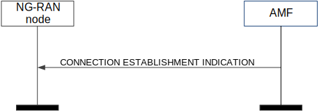
Figure 8.3.6.2-1: Connection Establishment Indication procedure. Successful operation.
The AMF initiates the procedure by sending a CONNECTION ESTABLISHMENT INDICATION message to the NG-RAN node.
If the UE-associated logical NG-connection is not established, the AMF shall allocate a unique AMF UE NGAP ID to be used for the UE and include it in the CONNECTION ESTABLISHMENT INDICATION message.
If the UE Radio Capability IE is included in the CONNECTION ESTABLISHMENT INDICATION message, the NG-RAN node shall store this information in the UE context, and use it as defined in TS 38.300 [8].
If the End Indication IE is included in the CONNECTION ESTABLISHMENT INDICATION message and set to "no further data", the NG-RAN node shall consider that there are no further NAS PDUs to be transmitted for this UE.
If the S-NSSAI IE is contained in the CONNECTION ESTABLISHMENT INDICATION message, the NG-RAN node shall store this information in the UE context, and use it as specified in TS 23.501 [9].
If the Allowed NSSAI IE is contained in the CONNECTION ESTABLISHMENT INDICATION message, the NG-RAN node shall store this information in the UE context, and use it as specified in TS 23.501 [9].
If the UE Differentiation Information IE is included in the CONNECTION ESTABLISHMENT INDICATION message, the NG-RAN node shall, if supported, store this information in the UE context for further use according to TS 23.501 [9].
If the DL CP Security Information IE is included in the CONNECTION ESTABLISHMENT INDICATION message, the NG-RAN node shall forward this information to the UE as described in TS 36.300 [17].
If the NB-IoT UE Priority IE is contained in the CONNECTION ESTABLISHMENT INDICATION message, the NG-RAN node shall, if supported, store this information in the UE context, and use it as specified in TS 23.501 [9].
If the Enhanced Coverage Restriction IE is included in the CONNECTION ESTABLISHMENT INDICATION message, the NG-RAN node shall, if supported, store this information in the UE context and use it as defined in TS 23.501 [9].
If the CE-mode-B Restricted IE is included in the CONNECTION ESTABLISHMENT INDICATION message and the Enhanced Coverage Restriction IE is not set to "restricted" and the Enhanced Coverage Restricted information stored in the UE context is not set to "restricted", the NG-RAN node shall, if supported, store this information in the UE context and use it as defined in TS 23.501 [9].
If the UE Radio Capability ID IE is contained in the CONNECTION ESTABLISHMENT INDICATION message, the NG-RAN node shall, if supported, use it as specified in TS 23.501 [9] and TS 23.502 [10].
If the Masked IMEISV IE is contained in the CONNECTION ESTABLISHMENT INDICATION message, the NG-RAN node shall, if supported, use it to determine the characteristics of the UE for subsequent handling.
If the Old AMF IE is included in the CONNECTION ESTABLISHMENT INDICATION message, the NG-RAN node shall consider that this UE-associated logical NG-connection was redirected to this AMF from another AMF identified by the Old AMF IE.
Void.
The purpose of the AMF CP Relocation Indication procedure is to inform the NG-RAN node that the UE’s connection is to be relocated to another NG-RAN node as described in TS 38.300 [8], for a UE using Control Plane CIoT 5GS Optimisation. This procedure applies only if the NG-RAN node is an ng-eNB.
The procedure uses UE-associated signalling.
Figure 8.3.7.2-1: AMF CP Relocation Indication. Successful operation.
The AMF initiates the procedure by sending an AMF CP RELOCATION INDICATION message to the NG-RAN node.
Upon reception of the AMF CP RELOCATION INDICATION message, the NG-RAN node shall terminate the delivery of NAS messages that have been received from the AMF.
If the S-NSSAI IE is contained in the AMF CP RELOCATION INDICATION message, the NG-RAN node shall store this information in the UE context, and use it as specified in TS 23.501 [9].
If the Allowed NSSAI IE is contained in the AMF CP RELOCATION INDICATION message, the NG-RAN node shall store this information in the UE context, and use it as specified in TS 23.501 [9].
Interactions with NAS Non Delivery Indication procedure:
On reception of the AMF CP RELOCATION INDICATION message, the NG-RAN node may initiate NAS Non Delivery Indication procedure(s) to report the non-delivery of any NAS PDUs previously received from the AMF.
Void.
The purpose of the RAN CP Relocation Indication procedure is to request the AMF to authenticate the UE’s re-establishment request, and trigger the establishment of the respective UE-associated logical NG-connection, for a NB-IoT UE using Control Plane CIoT 5GS Optimisation. This procedure applies only if the NG-RAN node is an ng-eNB.
The procedure uses UE-associated signalling.
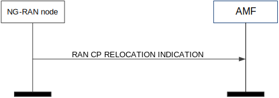
Figure 8.3.8.2-1: RAN CP Relocation Indication.
The NG-RAN node initiates the procedure by sending a RAN CP RELOCATION INDICATION message to the AMF.
The NG-RAN node shall allocate a unique RAN UE NGAP ID to be used for the UE and the NG-RAN node shall include this identity in the RAN CP RELOCATION INDICATION message.
Upon receiving the RAN CP RELOCATION INDICATION message, the AMF shall authenticate the request using the NAS-level security information received in the UL CP Security Information IE and if the authentication is successful initiate the Connection Establishment Indication procedure including NAS-level security information in the DL CP Security Information IE.
In case the AMF cannot authenticate the UE's request, the CONNECTION ESTABLISHMENT INDICATION message does not contain security information, and the NG-RAN node shall fail the RRC Re-establishment.
In case of authentication failure, the NG-RAN node and the AMF should locally release the allocated NG resources, if any.
Interactions with the AMF CP Relocation and UE Context Release procedures:
In case of successful UE authentication, the AMF initiates the UE Context Release procedure to release the UE's NG-connection in the old NG-RAN node. The AMF may initiate the AMF CP Relocation procedure before the release procedure in order to trigger the old NG-RAN node to return non-delivered NAS PDUs to the AMF.
Void.
The purpose of the Retrieve UE Information procedure is for the NG-RAN node to request the UE information including NB-IoT UE Priority and UE Radio Capability from the AMF, for a NB-IoT UE using Control Plane CIoT 5GS Optimisation. The procedure uses non UE-associated signalling. This procedure applies only if the NG-RAN node is an ng-eNB.
Figure 8.3.9.2-1: Retrieve UE Information
The NG-RAN node initiates the procedure by sending the RETRIEVE UE INFORMATION message to the AMF.
Void.
The purpose of the UE Information Transfer procedure is for the AMF to send the UE information including NB-IoT UE Priority and UE Radio Capability to the NG-RAN node, for a NB-IoT UE using Control Plane CIoT 5GS Optimisation. The procedure uses non UE-associated signalling. This procedure applies only if the NG-RAN node is an ng-eNB.
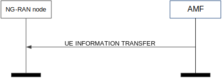
Figure 8.3.10.2-1: UE Information Transfer
The AMF initiates the procedure by sending the UE INFORMATION TRANSFER message to the NG-RAN node.
If the NB-IoT UE Priority IE is contained in the UE INFORMATION TRANSFER message, the NG-RAN node shall store this information in the UE context, and use it as specified in TS 23.501 [9].
If the UE Radio Capability IE is contained in the UE INFORMATION TRANSFER message, the NG-RAN node shall store this information in the UE context, and use it as specified in TS 23.501 [9].
If the S-NSSAI IE is contained in the UE INFORMATION TRANSFER message, the NG-RAN node shall store this information in the UE context, and use it as specified in TS 23.501 [9].
If the Allowed NSSAI IE is contained in the UE INFORMATION TRANSFER message, the NG-RAN node shall store this information in the UE context, and use it as specified in TS 23.501 [9].
If the UE Differentiation Information IE is included in the UE INFORMATION TRANSFER message, the NG-RAN node shall, if supported, store this information in the UE context for further use according to TS 23.501 [9].
If the Masked IMEISV IE is contained in the UE INFORMATION TRANSFER message, the NG-RAN node shall, if supported, use it to determine the characteristics of the UE for subsequent handling.
Void.
The purpose of the UE Context Suspend procedure is to suspend the UE-associated logical NG-connection and the NG-U transport bearer with the 5GC while keeping the UE context in the NG-RAN node. The procedure uses UE-associated signalling.
In this version of the specification, this procedure applies only if the NG-RAN node is an ng-eNB.
Figure 8.3.11.2-1: UE Context Suspend: Successful operation.
The NG-RAN node initiates the procedure by sending the UE CONTEXT SUSPEND REQUEST message to the AMF.
Upon receipt of the UE CONTEXT SUSPEND REQUEST message the AMF shall act as defined in TS 23.502 [10].
Upon receipt of the UE CONTEXT SUSPEND RESPONSE message the NG-RAN node shall suspend the UE context, the UE-associated logical NG-connection and the related PDU session contexts and send the UE to RRC_IDLE.
If the Information on Recommended Cells and RAN Nodes for Paging IE is included in the UE CONTEXT SUSPEND REQUEST message, the AMF shall, if supported, store it and may use it for subsequent paging.
If the Paging Assistance Data for CE Capable UE IE is included in the UE CONTEXT SUSPEND REQUEST message, the AMF shall, if supported, store it and use it for subsequent paging, as specified in TS 23.502 [10].
If the Security Context IE is included in the UE CONTEXT SUSPEND RESPONSE message, the NG-RAN node shall store the received Security Context IE in the UE context and remove any existing unused stored {NH, NCC} as specified in TS 33.501 [13].
If the Suspend Indicator IE is included in the UE CONTEXT SUSPEND REQUEST message, the SMF shall, if supported, consider the associated PDU session as suspended.
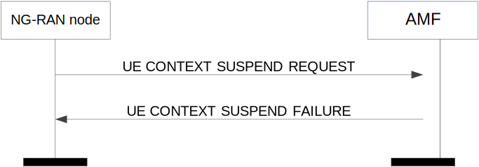
Figure 8.3.11.3-1: UE Context Suspend: unsuccessful operation.
If the AMF decides to not suspend the connection e.g. due to pending downlink data to be sent, it shall send the UE CONTEXT SUSPEND FAILURE message to the NG-RAN node.
Void.
The purpose of the UE Context Resume procedure is to resume the UE context, the suspended UE-associated logical NG-connection and the related NG-U transport bearer in the 5GC for this UE. The procedure uses UE-associated signalling.
In this version of the specification, this procedure applies only if the NG-RAN node is an ng-eNB.
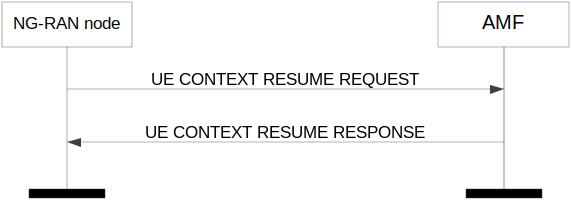
Figure 8.3.12.2-1: UE Context Resume procedure. Successful operation.
The NG-RAN node initiates the procedure by sending the UE CONTEXT RESUME REQUEST message to the AMF. If the NG-RAN node is not able to admit any suspended PDU sessions, the NG-RAN node shall indicate this in the PDU Session Resource Failed to Resume List IE. If the NG-RAN node is not able to admit certain QoS flows for a PDU session, the NG-RAN node shall indicate this in the QoS Flow Failed to Resume List IE included in the UE Context Resume Request Transfer IE for that PDU session.
Upon receipt of the UE CONTEXT RESUME REQUEST message the AMF shall act as defined in TS 23.502 [10] and respond with the UE CONTEXT RESUME RESPONSE message. If the AMF is not able to admit any suspended PDU sessions, the AMF shall indicate this in the PDU Session Resource Failed to Resume List IE. If the SMF is not able to admit certain QoS flows for a PDU session, the SMF shall indicate this in the QoS Flow Failed to Resume List IE included in the UE Context Resume Response Transfer IE for that PDU session.
The NG-RAN node shall release resources for each PDU session or QoS flow failed to resume and shall assume that the 5GC has released respective resources as well.
If the Security Context IE is included in the UE CONTEXT RESUME RESPONSE message, the NG-RAN node shall store the received Security Context IE in the UE context and the NG-RAN node shall use it for the next suspend/resume or Xn handover or Intra NG-RAN node handovers as specified in TS 33.501 [13].
If the Suspend Request Indication IE is included in the UE CONTEXT RESUME REQUEST message, the AMF shall, if supported, consider that the NG-RAN node is requesting immediate transition to RRC IDLE with Suspend as specified in TS 23.502 [10]. If the Suspend Response Indication IE is included in the UE CONTEXT RESUME RESPONSE message, the NG-RAN node shall suspend the UE context, the UE-associated logical NG-connection and the related PDU session contexts and send the UE to RRC_IDLE.
If the Information on Recommended Cells and RAN Nodes for Paging IE is included in the UE CONTEXT RESUME REQUEST message, the AMF shall, if supported, store it and may use it for subsequent paging.
If the Paging Assistance Data for CE Capable UE IE is included in the UE CONTEXT RESUME REQUEST message, the AMF shall, if supported, store it and use it for subsequent paging, as specified in TS 23.502 [10].
If the Extended Connected Time IE is included in the UE CONTEXT RESUME RESPONSE message, the NG-RAN node shall, if supported, use it as described in TS 23.501 [9].
Figure 8.3.12.3-1: UE Context resume: unsuccessful operation.
If the AMF is not able to resume a single PDU session, it releases the UE-associated logical NG-connection by sending the UE CONTEXT RESUME FAILURE message to the NG-RAN node. Upon reception of the UE CONTEXT RESUME FAILURE message the NG-RAN node shall release the RRC connection as specified in TS 36.331 [21] and release all related signalling and user data transport resources.
The purpose of the Handover Preparation procedure is to request the preparation of resources at the target side via the 5GC. There is only one Handover Preparation procedure ongoing at the same time for a certain UE. The procedure uses UE-associated signalling.
Figure 8.4.1.2-1: Handover preparation: successful operation
The source NG-RAN node initiates the handover preparation by sending the HANDOVER REQUIRED message to the serving AMF. When the source NG-RAN node sends the HANDOVER REQUIRED message, it shall start the timer TNGRELOCprep. The source NG-RAN node shall indicate the appropriate cause value for the handover in the Cause IE.
Upon reception of the HANDOVER REQUIRED message the AMF shall, for each PDU session indicated in the PDU Session ID IE, transparently transfer the Handover Required Transfer IE to the SMF associated with the concerned PDU session.
In case of intra-system handover, the information in the Source to Target Transparent Container IE shall be encoded according to the definition of the Source NG-RAN node to Target NG-RAN node Transparent Container IE.
If the DL Forwarding IE is included for a given QoS flow in the PDU Session Resource Information Item IE within the Source NG-RAN node to Target NG-RAN node Transparent Container IE of the HANDOVER REQUIRED message and it is set to "DL forwarding proposed", it indicates that the source NG-RAN node proposes forwarding of downlink data for that QoS flow.
If the UL Forwarding IE is included for a given QoS flow in the PDU Session Resource Information Item IE within the Source NG-RAN Node to Target NG-RAN Node Transparent Container IE of the HANDOVER REQUIRED message and it is set to "UL forwarding proposed", it indicates that the source NG-RAN node proposes forwarding of uplink data for that QoS flow.
If the DRBs to QoS Flows Mapping List IE is included in the PDU Session Resource Information Item IE within the Source NG-RAN node to Target NG-RAN node Transparent Container IE of the HANDOVER REQUIRED message, it implicitly indicates that the source NG-RAN node proposes forwarding of downlink data for those DRBs.
If the QoS Flow Mapping Indication IE for a QoS flow is included in the Associated QoS Flow List IE within the DRBs to QoS Flows Mapping List IE within the Source NG-RAN node to Target NG-RAN node Transparent Container IE of the HANDOVER REQUIRED message, it indicates that the source NG-RAN node has mapped only the uplink or downlink of the QoS flow to the DRB.
The source NG-RAN node shall, for each MRB of each MBS session contained in the MBS Session Information Target to Source List IE, start data forwarding to the TNL address contained in the DL Forwarding UP TNL Information IE. If the MRB Progress Information IE is contained for an MRB in the Data Forwarding Response MRB List IE in the MBS Session Information Target to Source List IE, the source NG-RAN node may use this information to determine when to stop data forwarding.
In case of intra-system handover, if the HANDOVER COMMAND message contains the DL Forwarding UP TNL Information IE for a given DRB within the Data Forwarding Response DRB List IE in the Handover Command Transfer IE, the source NG-RAN node shall consider that the forwarding of downlink data for this DRB is accepted by the target NG-RAN node. If the HANDOVER COMMAND message contains the UL Forwarding UP TNL Information IE for a given DRB in the Data Forwarding Response DRB List IE within the Handover Command Transfer IE, it means the target NG-RAN node has requested the forwarding of uplink data for this DRB.
In case direct data forwarding is applied for inter-system handover, if the Data Forwarding Response E-RAB List IE in the Handover Command Transfer IE is included in the HANDOVER COMMAND message, the source NG-RAN node shall consider that forwarding of downlink data for this E-RAB is accepted by the target eNB.
If the HANDOVER COMMAND message contains the UL Forwarding UP TNL Information IE for a given PDU session within the Handover Command Transfer IE, the source NG-RAN node shall consider that the forwarding of uplink data of the QoS flows is accepted by the target NG-RAN node.
In case of inter-system handover to LTE, the information in the Source to Target Transparent Container IE shall be encoded according to the Source eNB to Target eNB Transparent Container IE definition as specified in TS 36.413 [16].
If the Direct Forwarding Path Availability IE is included in the HANDOVER REQUIRED message the AMF shall handle it as specified in TS 23.502 [10].
If the Direct Forwarding Path Availability IE is included within the Handover Required Transfer IE of the HANDOVER REQUIRED message the SMF shall handle it as specified in TS 23.502 [10].
When the preparation, including the reservation of resources at the target side is ready, the AMF responds with the HANDOVER COMMAND message to the source NG-RAN node. In case of intra-system handover, the AMF shall include the PDU Session Resource Handover List IE in the HANDOVER COMMAND message.
Upon reception of the HANDOVER COMMAND message the source NG-RAN node shall stop the timer TNGRELOCprep and start the timer TNGRELOCoverall.
If there are any PDU sessions that could not be admitted in the target, they shall be indicated in the PDU Session Resource to Release List IE.
NOTE: As an exception in case of inter-system handover to LTE, the AMF generates the Handover Preparation Unsuccessful Transfer IE in the PDU Session Resource to Release List IE.
If the HANDOVER COMMAND message contains the QoS Flow to be Forwarded List IE and/or Data Forwarding Response DRB List IE within the Handover Command Transfer IE for a given PDU session, then the source NG-RAN node should initiate data forwarding for the QoS flows as specified in TS 38.300 [8].
If the HANDOVER COMMAND message contains the Additional DL Forwarding UP TNL Information IE within the Handover Command Transfer IE, the source NG-RAN node should initiate data forwarding of the PDU session split in different tunnel and shall use the received UP transport layer information for the forwarding QoS flows associated to it.
If the HANDOVER COMMAND message contains the Additional UL Forwarding UP TNL Information IE within the Handover Command Transfer IE, the source NG-RAN node should initiate data forwarding of the PDU session split in different tunnels using the received UP transport layer information.
If the NAS Security Parameters from NG-RAN IE is included in the HANDOVER COMMAND message the NG-RAN node shall use it as specified in TS 33.501 [13].
If the Target to Source Transparent Container IE has been received by the AMF from the handover target then the transparent container shall be included in the HANDOVER COMMAND message.
If the HANDOVER COMMAND message contains the QoS Flow Failed to Setup List IE within the Handover Command Transfer IE, the source NG-RAN node shall consider that the listed QoS flows are failed to be handed over.
In case of inter-system handover to LTE, the information in the Target to Source Transparent Container IE shall be encoded according to the definition of the Target eNB to Source eNB Transparent Container IE as specified in TS 36.413 [16].
If the Index to RAT/Frequency Selection Priority IE is contained in the Source NG-RAN Node to Target NG-RAN Node Transparent Container IE, the target NG-RAN node shall store the content of the received Index to RAT/Frequency Selection Priority IE in the UE context and use it as defined in TS 23.501 [9].
If the DAPS Request Information IE is included for a DRB in the Source NG-RAN Node to Target NG-RAN Node Transparent Container IE within the HANDOVER REQUIRED message, it indicates that the request concerns a DAPS Handover for that DRB, as described in TS 38.300 [8].
Interactions with other NGAP procedures:
If, after a HANDOVER REQUIRED message is sent and before the Handover Preparation procedure is terminated, the source NG-RAN node receives an AMF initiated PDU Session Management procedure on the same UE-associated signalling connection, the source NG-RAN node shall either:
1. Cancel the Handover Preparation procedure by executing the Handover Cancellation procedure with an appropriate cause value. After successful completion of the Handover Cancellation procedure, the source NG-RAN node shall continue the AMF initiated PDU Session Management procedure.
or
2. Terminate the AMF initiated PDU Session Management procedure by sending the appropriate response message with an appropriate cause value, e.g. "NG intra-system handover triggered" or "NG inter-system handover triggered" to the AMF and then the source NG-RAN node shall continue with the handover procedure.
Figure 8.4.1.3-1: Handover preparation: unsuccessful operation
If the 5GC or the target side is not able to accept any of the PDU session resources or a failure occurs during the Handover Preparation, the AMF sends the HANDOVER PREPARATION FAILURE message with an appropriate cause value to the source NG-RAN node.
If the Target to Source Failure Transparent Container IE has been received by the AMF from the handover target then the transparent container shall be included in the HANDOVER PREPARATION FAILURE message.
If the Target to Source Failure Transparent Container IE is received in the HANDOVER PREPARATION FAILURE message including the Cell CAG Information IE, the source NG-RAN node shall, if supported, store and replace the PNI-NPN information associated with the indicated cell.
Interaction with Handover Cancel procedure:
If there is no response from the AMF to the HANDOVER REQUIRED message before timer TNGRELOCprep expires in the source NG-RAN node, the source NG-RAN node should cancel the Handover Preparation procedure by initiating the Handover Cancel procedure with the appropriate value for the Cause IE. The source NG-RAN node shall ignore any HANDOVER COMMAND message or HANDOVER PREPARATION FAILURE message received after the initiation of the Handover Cancel procedure.
In case of inter-system handover, if the NG-RAN node receives at least one PDU Session ID included in the PDU Session Resource Handover List IE without at least one valid associated GTP tunnel address pair (in either UL or DL), then the NG-RAN node shall consider it as a logical error and act as described in subclause 10.4. A GTP tunnel address pair is considered valid if both the GTP-TEID IE and the Endpoint IP Address IE are present.
The purpose of the Handover Resource Allocation procedure is to reserve resources at the target NG-RAN node for the handover of a UE. The procedure uses UE-associated signalling.
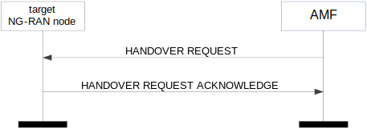
Figure 8.4.2.2-1: Handover resource allocation: successful operation
The AMF initiates the procedure by sending the HANDOVER REQUEST message to the target NG-RAN node.
If the Masked IMEISV IE is contained in the HANDOVER REQUEST message the target NG-RAN node shall, if supported, use it to determine the characteristics of the UE for subsequent handling.
Upon receipt of the HANDOVER REQUEST message the target NG-RAN node shall
- attempt to execute the requested PDU session configuration and associated security;
- store the received UE Aggregate Maximum Bit Rate in the UE context, and use the received UE Aggregate Maximum Bit Rate for all Non-GBR QoS flows for the concerned UE as specified in TS 23.501 [9];
- store the received Mobility Restriction List in the UE context;
- store the received UE Security Capabilities in the UE context;
- store the received Security Context in the UE context and take it into use as defined in TS 33.501 [13];
- if supported, store the received UE Slice Maximum Bit Rate List in the UE context and use the received UE Slice Maximum Bit Rate List for each S-NSSAI for the concerned UE as specified in TS 23.501 [9].
Upon reception of the UE History Information IE, which is included within the Source to Target Transparent Container IE of the HANDOVER REQUEST message, the target NG-RAN node shall collect the information defined as mandatory in the UE History Information IE and shall, if supported, collect the information defined as optional in the UE History Information IE, for as long as the UE stays in one of its cells, and store the collected information to be used for future handover preparations.
Upon receiving the PDU Session Resource Setup List IE contained in the HANDOVER REQUEST message, the target NG-RAN node shall behave the same as defined in the PDU Session Resource Setup procedure. The target NG-RAN node shall report to the AMF in the HANDOVER REQUEST ACKNOWLEDGE message the result for each PDU session resource requested to be setup. In particular, for each PDU session resource successfully setup, it shall include the Handover Request Acknowledge Transfer IE containing the following information:
- The list of QoS flows which have been successfully established in the QoS Flow Setup Response List IE.
- The Data Forwarding Accepted IE if the data forwarding for the QoS flow is accepted.
- The list of QoS flows which have failed to be established, if any, in the QoS Flow Failed to Setup List IE.
- The UP transport layer information to be used for the PDU session.
- The security result associated to the PDU session.
- The redundant UP transport layer information to be used for the redundant transmission for the PDU session.
For each PDU session resource which failed to be setup, the Handover Resource Allocation Unsuccessful Transfer IE shall be included in the HANDOVER REQUEST ACKNOWLEDGE message containing a cause value that should be precise enough to enable the SMF to know the reason for the unsuccessful establishment.
For each PDU session included in the HANDOVER REQUEST ACKNOWLEDGE message, if the Current QoS Parameters Set Index IE is included for a QoS flow in the QoS Flow Setup Response List IE within the Handover Request Acknowledge Transfer IE the SMF shall consider it as the currently fulfilled QoS parameters set among the alternative QoS parameters for the involved QoS flow.
Upon reception of the HANDOVER REQUEST ACKNOWLEDGE message the AMF shall, for each PDU session indicated in the PDU Session ID IE, transfer transparently the Handover Request Acknowledge Transfer IE or Handover Resource Allocation Unsuccessful Transfer IE to the SMF associated with the concerned PDU session.
If the HANDOVER REQUEST message contains the Data Forwarding Not Possible IE associated with a given PDU session within the Handover Request Transfer IE set to "data forwarding not possible", the target NG-RAN node may not include the DL Forwarding UP TNL Information IE and for intra-system handover the Data Forwarding Response DRB List IE within the Handover Request Acknowledge Transfer IE in the HANDOVER REQUEST ACKNOWLEDGE message for that PDU session.
If the HANDOVER REQUEST message contains the Redundant PDU Session Information IE associated with a given PDU session within the Handover Request Transfer IE, the target NG-RAN node shall, if supported, store the received information in the UE context and use it for redundant PDU session setup as specified in TS38.300 [8] and TS 23.501 [9]. If the PDU Session Type IE is set to “ethernet” and the redundancy requirement is fulfilled using a secondary NG-RAN node, the NG-RAN node shall, if supported, include the Global RAN Node ID of Secondary NG-RAN Node IE in the Handover Request Acknowledge Transfer IE of the HANDOVER REQUEST ACKNOWLEDGE message. If the PDU Session Pair ID IE is included in the Redundant PDU Session Information IE, the NG-RAN node may use it to identify the paired PDU sessions.
For each PDU session for which the Global RAN Node ID of Secondary NG-RAN Node IE is included in the Handover Request Acknowledge Transfer IE of the HANDOVER REQUEST ACKNOWLEDGE message, the SMF shall, if supported, handle this information as specified in TS 23.501 [9].
In case of intra-system handover, if the target NG-RAN node accepts the downlink data forwarding for at least one QoS flow for which the DL Forwarding IE is set to "DL forwarding proposed", it may include the DL Forwarding UP TNL Information IE in the Handover Request Acknowledge Transfer IE as forwarding tunnel for the QoS flows listed in the QoS Flow Setup Response List IE of the HANDOVER REQUEST ACKNOWLEDGE message.
In case of intra-system handover, if the target NG-RAN node accepts the uplink data forwarding for at least one QoS flow for which the UL Forwarding IE is set to "UL forwarding proposed", it may include the UL Forwarding UP TNL Information IE in the Handover Request Acknowledge Transfer IE for the PDU session within the PDU Session Resource Admitted List IE of the HANDOVER REQUEST ACKNOWLEDGE message.
In case of intra-system handover, for each PDU session for which the Additional DL UP TNL Information for HO List IE is included in the Handover Request Acknowledge Transfer IE of the HANDOVER REQUEST ACKNOWLEDGE message, the SMF shall consider the included Additional DL NG-U UP TNL Information IE as the downlink termination point for the associated flows indicated in the Additional QoS Flow Setup Response List IE for this PDU session split in different tunnels and shall consider the Additional DL Forwarding UP TNL Information IE, if included, as the forwarding tunnel associated to these QoS flows.
In case of intra-system handover, for each PDU session for which the Additional UL Forwarding UP TNL Information IE is included in the Handover Request Acknowledge Transfer IE of the HANDOVER REQUEST ACKNOWLEDGE message, the SMF shall consider it as the termination points for the uplink forwarding tunnels for this PDU session split in different tunnels.
In case of intra-system handover, if the target NG-RAN node accepts the data forwarding for a successfully configured DRB, the target NG-RAN node may include the DL Forwarding UP TNL Information IE for the DRB within the Data Forwarding Response DRB List IE within Handover Request Acknowledge Transfer IE of the HANDOVER REQUEST ACKNOWLEDGE message.
In case of intra-system handover, if the target NG-RAN node receives the Direct Forwarding Path Availability IE set to "direct path available" within the PDU Session Resource Setup Request Transfer IE, the target NG-RAN node shall, if supported, assign the UP Transport Layer Information for intra-system direct data forwarding from the appropriate address space, if applicable.
If the HANDOVER REQUEST ACKNOWLEDGE message contains the UL Forwarding UP TNL Information IE for a given DRB in the Data Forwarding Response DRB List IE within the Handover Request Acknowledge Transfer IE, it indicates the target NG-RAN node has requested the forwarding of uplink data for the DRB.
In case of inter-system handover from E-UTRAN, if the PDU Session Resource Setup Request Transfer IE contains the Direct Forwarding Path Availability IE set to "direct path available", the target NG-RAN node shall, if supported, and if it accepts downlink data forwarding for the QoS flows mapped to an E-RAB of an admitted PDU session, include the DL Forwarding UP TNL Information IE in the Data Forwarding Response E-RAB List IE in the Handover Request Acknowledge Transfer IE in the HANDOVER REQUEST ACKNOWLEDGE message for that mapped E-RAB.
In case of inter-system handover from E-UTRAN, the target NG-RAN node includes the Data Forwarding Accepted IE for each QoS flow that the DL Forwarding IE is set to "DL forwarding proposed" for the corresponding E-RAB in the Source NG-RAN Node to Target NG-RAN Node Transparent Container IE and that the target NG-RAN node has admitted the proposed forwarding of downlink data for the QoS flow. If indirect data forwarding is applied for inter-system handover, if the target NG-RAN node accepts the downlink data forwarding for at least one QoS flow of an admitted PDU session it shall include the DL Forwarding UP TNL Information IE in the PDU Session Resource Setup Response Transfer IE for that PDU session within the PDU Session Resources Admitted List IE of the HANDOVER REQUEST ACKNOWLEDGE message.
In case of inter-system handover from E-UTRAN with direct forwarding, if the target NG-RAN node receives the SgNB UE X2AP ID IE in the Source NG-RAN Node to Target NG-RAN Node Transparent Container IE, it may use it for internal forwarding as described in TS 37.340 [32].
In case of inter-system handover from E-UTRAN, if the target cell is a CAG cell, the target NG-RAN node shall include the NPN Access Information IE in the HANDOVER REQUEST ACKNOWLEDGE message, and the AMF shall consider that the included information is associated to the target cell and to the UE’s serving PLMN identity, and use it as specified in TS 23.501 [9].
The target NG-RAN node shall use the information in the Mobility Restriction List IE if present in the HANDOVER REQUEST message to
- determine a target for subsequent mobility action for which the target NG-RAN node provides information about the target of the mobility action towards the UE;
- select a proper SCG during dual connectivity operation;
- assign proper RNA(s) for the UE when moving the UE to RRC_INACTIVE state.
If the Mobility Restriction List IE is not contained in the HANDOVER REQUEST message, the target NG-RAN node shall consider that no roaming and no access restriction apply to the UE except for the PNI NPN mobility as described in TS 23.501 [9]. The target NG-RAN node shall also consider that no roaming and no access restriction apply to the UE when:
- one of the QoS flows includes a particular ARP value (TS 23.501 [9]).
The NG-RAN node shall consider that roaming or access to CAG cells is only allowed if the Allowed PNI-NPN List IE is contained in the HANDOVER REQUEST message, as described in TS 23.501 [9].
If the Trace Activation IE is included in the HANDOVER REQUEST message the target NG-RAN node shall, if supported, initiate the requested trace function as described in TS 32.422 [11]. In particular, the NG-RAN node shall, if supported:
- if the Trace Activation IE includes the MDT Activation IE set to "Immediate MDT and Trace", initiate the requested trace session and MDT session as described in TS 32.422 [11];
- if the Trace Activation IE includes the MDT Activation IE set to "Immediate MDT Only", "Logged MDT only", initiate the requested MDT session as described in TS 32.422 [11] and the target NG-RAN node shall ignore the Interfaces To Trace IE and the Trace Depth IE;
- if the Trace Activation IE includes the MDT Location Information IE within the MDT Configuration IE, store this information and take it into account in the requested MDT session;
- if the Trace Activation IE includes the Signalling Based MDT PLMN List IE within the MDT Configuration IE, the NG-RAN node may use it to propagate the MDT Configuration as described in TS 37.320 [41].
- if the Trace Activation IE includes the Bluetooth Measurement Configuration IE within the MDT Configuration IE, take it into account for MDT Configuration as described in TS 37.320 [41].
- if the Trace Activation IE includes the WLAN Measurement Configuration IE within the MDT Configuration IE, take it into account for MDT Configuration as described in TS 37.320 [41].
- if the Trace Activation IE includes the Sensor Measurement Configuration IE within the MDT Configuration IE, take it into account for MDT Configuration as described in TS 37.320 [41].
- if the Trace Activation IE includes the MDT Configuration IE and if the NG-RAN node is a gNB at least the MDT Configuration-NR IE shall be present, while if the NG-RAN node is an ng-eNB at least the MDT Configuration-EUTRA IE shall be present.
If the Location Reporting Request Type IE is included in the HANDOVER REQUEST message, the target NG-RAN node should perform the requested location reporting functionality for the UE as described in subclause 8.12.
If the Core Network Assistance Information for RRC INACTIVE IE is included in the HANDOVER REQUEST message, the target NG-RAN node shall, if supported, store this information in the UE context and use it for the RRC_INACTIVE state decision and RNA configuration for the UE and RAN paging if any for a UE in RRC_INACTIVE state, as specified in TS 38.300 [8]. If the MICO All PLMN IE is included in the Core Network Assistance Information for RRC INACTIVE IE the NG-RAN node shall, if supported, consider that the registration area for the UE is the full PLMN and ignore the TAI List for RRC Inactive IE. If the Paging Cause Indication for Voice Service IE is included in the Core Network Assistance Information for RRC INACTIVE IE, the NG-RAN node shall, if supported, store and use it as specified in TS 38.300 [8]. If the PEIPS Assistance Information IE is included in the Core Network Assistance Information for RRC INACTIVE IE, the NG-RAN node shall, if supported, store it and use it for paging subgrouping the UE in RRC_INACTIVE state, as specified in TS 38.300 [8].
If the CN Assisted RAN Parameters Tuning IE is included in the HANDOVER REQUEST message, the NG-RAN node may use it as described in TS 23.501 [9].
If the New Security Context Indicator IE is included in the HANDOVER REQUEST message, the target NG-RAN node shall use the information as specified in TS 33.501 [13].
If the NASC IE is included in the HANDOVER REQUEST message, the target NG-RAN node shall use it towards the UE as specified in TS 33.501 [13].
If the RRC Inactive Transition Report Request IE is included in the HANDOVER REQUEST message, the NG-RAN node shall, if supported, store this information in the UE context.
If the Redirection for Voice EPS Fallback IE is included in the HANDOVER REQUEST message, the NG-RAN node shall, if supported, store it and use it in a subsequent decision of EPS fallback for voice as specified in TS 23.502 [10].
If the SRVCC Operation Possible IE is included in the HANDOVER REQUEST message, the target NG-RAN node shall, if supported, store the content of the received SRVCC Operation Possible IE in the UE context and use it as defined in TS 23.216 [31].
If the IAB Authorized IE is contained in the HANDOVER REQUEST message, the NG-RAN node shall, if supported, consider that the handover is for an IAB node and use it as specified in TS 38.401 [2].
If the Enhanced Coverage Restriction IE is included in the HANDOVER REQUEST message, the NG-RAN node shall, if supported, store this information in the UE context and use it as defined in TS 23.501 [9].
If the UE Differentiation Information IE is included in the HANDOVER REQUEST message, the NG-RAN node shall, if supported, store this information in the UE context for further use according to TS 23.501 [9].
If the UE User Plane CIoT Support Indicator IE is included in the HANDOVER REQUEST message the NG-RAN node shall, if supported, store this information in the UE context and consider that User Plane CIoT 5GS Optimisation as specified in TS 23.501 [9] is supported for the UE.
Upon reception of the UE History Information from UE IE, which is included within the Source to Target Transparent Container IE of the HANDOVER REQUEST message, the target NG-RAN node shall, if supported, store the collected information and use it for future handover preparations.
After all necessary resources for the admitted PDU session resources have been allocated, the target NG-RAN node shall generate the HANDOVER REQUEST ACKNOWLEDGE message.
If the RedCap Indication IE is included in the HANDOVER REQUEST ACKNOWLEDGE message, the AMF shall, if supported, consider the UE as a RedCap UE that was previously served by a E-UTRA cell, and use the IE according to TS 23.501 [9].
For each QoS flow which has been established in the target NG-RAN node, if the QoS Monitoring Request IE was included in the QoS Flow Level QoS Parameters IE contained in the HANDOVER REQUEST message, the target NG-RAN node shall store this information, and, if supported, perform delay measurement and QoS monitoring, as specified in TS 23.501 [9]. If the QoS Monitoring Reporting Frequency IE was included in the QoS Flow Level QoS Parameters IE contained in the HANDOVER REQUEST message, the target NG-RAN node shall store this information and, if supported, use it for RAN part delay reporting.
If the NR V2X Services Authorized IE is contained in the HANDOVER REQUEST message and it contains one or more IEs set to "authorized", the NG-RAN node shall, if supported, consider that the UE is authorized for the relevant service(s).
If the LTE V2X Services Authorized IE is contained in the HANDOVER REQUEST message and it contains one or more IEs set to "authorized", the NG-RAN node shall, if supported, consider that the UE is authorized for the relevant service(s).
If the NR UE Sidelink Aggregate Maximum Bit Rate IE is included in the HANDOVER REQUEST message, the NG-RAN node shall, if supported, use the received value for the concerned UE’s sidelink communication in network scheduled mode for NR V2X services.
If the LTE UE Sidelink Aggregate Maximum Bit Rate IE is included in the HANDOVER REQUEST message, the NG-RAN node shall, if supported, use the received value for the concerned UE’s sidelink communication in network scheduled mode for LTE V2X services.
If the PC5 QoS Parameters IE is included in the HANDOVER REQUEST message, the NG-RAN node shall, if supported, use it as defined in TS 23.287 [33].
If the CE-mode-B Restricted IE is included in the HANDOVER REQUEST message and the Enhanced Coverage Restriction IE is not set to "restricted" and the Enhanced Coverage Restriction information stored in the UE context is not set to "restricted", the NG-RAN node shall, if supported, store this information in the UE context and use it as defined in TS 23.501 [9].
If the Management Based MDT PLMN List IE is contained in the HANDOVER REQUEST message, the target NG-RAN node shall, if supported, store the received information in the UE context, and use this information to allow subsequent selections of the UE for management based MDT defined in TS 32.422 [11].
If the HANDOVER REQUEST message contains the UE Radio Capability ID IE, the NG-RAN node shall, if supported, use it as specified in TS 23.501 [9] and TS 23.502 [10].
If the DAPS Request Information IE is included for a DRB in the Source NG-RAN Node to Target NG-RAN Node Transparent Container IE within the HANDOVER REQUEST message, the target NG-RAN node shall consider that the request concerns a DAPS Handover for that DRB, as described in in TS 38.300 [8]. The target NG-RAN node shall include the DAPS Response information List IE in the Target NG-RAN Node to Source NG-RAN Node Transparent Container IE within the HANDOVER REQUEST ACKNOWLEDGE message, containing the DAPS Response Information IE for each DRB requested to be configured with DAPS Handover.
If the Extended Connected Time IE is included in the HANDOVER REQUEST message, the NG-RAN node shall, if supported, use it as described in TS 23.501 [9].
If the target NG-RAN node receives the UE Context Reference at Source IE in the Source NG-RAN Node to Target NG-RAN Node Transparent Container IE within the HANDOVER REQUEST message, it may use it to identify an existing UE.
If the Source Node ID IE is included in the Source NG-RAN Node to Target NG-RAN Node Transparent Container IE within the HANDOVER REQUEST message, the target NG-RAN node shall, if supported, use it to decide whether direct forwarding path is available between the target NG-RAN node and this source RAN node. If the direct forwarding path is available, the target NG-RAN node shall include the Direct Forwarding Path Availability IE in the Target NG-RAN Node to Source NG-RAN Node Transparent Container IE within the HANDOVER REQUEST ACKNOWLEDGE message.
In case there are MBS sessions the UE has joined, for all the MBS sessions the UE has joined, the SMF shall, if supported, include the MBS Session Setup Request List IE within the PDU Session Resource Setup Request Transfer IE in the HANDOVER REQUEST message.
If the HANDOVER REQUEST message contains the MBS Session Setup Request List IE in a PDU Session Resource Setup Request Transfer IE the NG-RAN node shall, if supported, use it as specified in TS 23.247 [44] and TS 38.300 [8].
If the MBS Active Session Information Source to Target List IE is contained in the Source NG-RAN Node to Target NG-RAN Node Transparent Container IE within the HANDOVER REQUEST message, the target NG-RAN node shall, if supported, assume the indicated MBS sessions to be active and establish MBS session resources as specified in TS 23.247 [44] and TS 38.300 [8], if applicable. The target NG-RAN node shall, if supported, consider that the MBS sessions the UE has joined which are not included in the MBS Active Session Information Source to Target List IE are inactive.
If the MBS Area Session ID IE is included in the MBS Active Session Information Source to Target List IE in the Source NG-RAN Node to Target NG-RAN Node Transparent Container IE within the HANDOVER REQUEST message, the target NG-RAN shall use this information as indication from which MBS Area Session ID the UE is handed over.
If the MBS Service Area IE is included in the MBS Active Session Information Source to Target List IE in the Source NG-RAN Node to Target NG-RAN Node Transparent Container IE within the HANDOVER REQUEST message, the target NG-RAN shall use this information to setup respective MBS session resources, if applicable.
If the target NG-RAN node decides to allocate resource for data forwarding for an active MBS session, respective information is provided for that MBS session within the Data Forwarding Response MRB List IE in the MBS Active Session Information Target to Source List IE in the Target NG-RAN Node to Source NG-RAN Node Transparent Container IE.
If the Time Synchronisation Assistance Information IE is included in the HANDOVER REQUEST message, the NG-RAN node shall, if supported, store the information in the UE context and use it as defined in TS 23.501 [9].
If the 5G ProSe Authorized IE is contained in the HANDOVER REQUEST message and it contains one or more IEs set to "authorized", the NG-RAN node shall, if supported, consider that the UE is authorized for the relevant service(s).
If the 5G ProSe UE PC5 Aggregate Maximum Bit Rate IE is included in the HANDOVER REQUEST message, the NG-RAN node shall, if supported, use the received value for the concerned UE’s sidelink communication in network scheduled mode for 5G ProSe services.
If the 5G ProSe PC5 QoS Parameters IE is included in the HANDOVER REQUEST message, the NG-RAN node shall, if supported, use it as defined in TS 23.304 [47].
If for a given QoS flow the Source Transport Layer Address IE is included within the Source NG-RAN Node to Target NG-RAN Node Transparent Container IE of the HANDOVER REQUEST message, the target NG-RAN node shall, if supported, store this information and use it as part of its ACL functionality configuration actions for direct data forwarding, if such ACL functionality is deployed and if direct forwarding path is available between the target NG-RAN node and this source RAN node.
If for a given QoS flow the Source Node Transport Layer Address IE is included within the Source NG-RAN Node to Target NG-RAN Node Transparent Container IE of the HANDOVER REQUEST message, the target NG-RAN node shall, if supported, store this information and use it as part of its ACL functionality configuration actions for direct data forwarding, if such ACL functionality is deployed and if direct forwarding path is available between the target NG-RAN node and this source RAN node.
If for a given E-RAB the Source Transport Layer Address IE is included within the Source NG-RAN Node to Target NG-RAN Node Transparent Container IE of the HANDOVER REQUEST message, the target NG-RAN node shall, if supported, store this information and use it as part of its ACL functionality configuration actions for direct data forwarding, if such ACL functionality is deployed and if direct forwarding path is available between the target NG-RAN node and this source RAN node.
If for a given E-RAB the Source Node Transport Layer Address IE is included within the Source NG-RAN Node to Target NG-RAN Node Transparent Container IE of the HANDOVER REQUEST message, the target NG-RAN node shall, if supported, store this information and use it as part of its ACL functionality configuration actions for direct data forwarding, if such ACL functionality is deployed and if direct forwarding path is available between the target NG-RAN node and this source RAN node.
If the HANDOVER REQUEST message contains within the Source NG-RAN Node to Target NG-RAN Node Transparent Container IE the NGAP IE Support Information Request List IE, the target NG-RAN node shall, if supported and the target NG-RAN node accepts the request for handover, for each included NGAP Protocol IE-Id provided within the Target NG-RAN Node to Source NG-RAN Node Transparent Container IE in the HANDOVER REQUEST ACKNOWLEDGE message
- set the NGAP Protocol IE Support Information IE to "supported" if the target NG-RAN node has information that the functionality associated with the indicated IE is supported
- set the NGAP Protocol IE Support Information IE to "not-supported" if the target NG-RAN node has information that the functionality associated with the indicated IE is not supported
on the interface instance via which the HANDOVER REQUEST message has been received, and
- set the NGAP Protocol IE Presence Information IE to "present" if the target NG-RAN node has received the respective NGAP Protocol IE-Id in the HANDOVER REQUEST message, and “not-present” otherwise.
If the QMC Configuration Information IE is included in the Source NG-RAN Node to Target NG-RAN Node Transparent Container IE within the HANDOVER REQUEST message, the target NG-RAN node shall, if supported, take it into account for QoE management handling, as described in TS 38.300 [8].
Interactions with RRC Inactive Transition Report procedure:
If the RRC Inactive Transition Report Request IE is included in the HANDOVER REQUEST message and set to "subsequent state transition report", the NG-RAN node shall, if supported, send the RRC INACTIVE TRANSITION REPORT message to the AMF to report the RRC state of the UE when the UE enters or leaves RRC_INACTIVE state.
Figure 8.4.2.3-1: Handover resource allocation: unsuccessful operation
If the target NG-RAN node does not admit any of the PDU session resources, or a failure occurs during the Handover Preparation, it shall send the HANDOVER FAILURE message to the AMF with an appropriate cause value.
If the HANDOVER REQUEST message contains within the Source NG-RAN Node to Target NG-RAN Node Transparent Container IE the NGAP IE Support Information Request List IE, the target NG-RAN node shall, if supported and the target NG-RAN node does not accept the request for handover, for each included NGAP Protocol IE-Id provided within the Target NG-RAN Node to Source NG-RAN Node Failure Transparent Container IE in the HANDOVER FAILURE message
- set the NGAP Protocol IE Support Information IE to "supported" if the target NG-RAN node has information that the functionality associated with the indicated IE is supported
- set the NGAP Protocol IE Support Information IE to "not-supported" if the target NG-RAN node has information that the functionality associated with the indicated IE is not supported
on the interface instance via which the HANDOVER REQUEST message has been received, and
- set the NGAP Protocol IE Presence Information IE to "present" if the target NG-RAN node has received the respective NGAP Protocol IE-Id in the HANDOVER REQUEST message, and “not-present” otherwise.
If the supported algorithms for encryption defined in the Encryption Algorithms IE in the UE Security Capabilities IE, plus the mandated support of EEA0 and NEA0 in all UEs (TS 33.501 [13]), do not match any allowed algorithms defined in the configured list of allowed encryption algorithms in the NG-RAN node (TS 33.501 [13]), the target NG-RAN node shall reject the procedure using the HANDOVER FAILURE message.
If the supported algorithms for integrity defined in the Integrity Protection Algorithms IE in the UE Security Capabilities IE, plus the mandated support of the EIA0 and NIA0 algorithm in all UEs (TS 33.501 [13]), do not match any allowed algorithms defined in the configured list of allowed integrity protection algorithms in the NG-RAN node (TS 33.501 [13]), the target NG-RAN node shall reject the procedure using the HANDOVER FAILURE message.
If the target NG-RAN node receives a HANDOVER REQUEST message which does not contain the Mobility Restriction List IE, and the serving PLMN cannot be determined otherwise by the NG-RAN node, the target NG-RAN node shall reject the procedure using the HANDOVER FAILURE message.
If the target NG-RAN node receives a HANDOVER REQUEST message containing the Mobility Restriction List IE, and the serving PLMN indicated is not supported by the target cell, the target NG-RAN node shall reject the procedure using the HANDOVER FAILURE message.
If the target NG-RAN node receives a HANDOVER REQUEST message containing an Allowed PNI-NPN List IE in the Mobility Restriction List IE which does not allow access to the cell indicated in the Target Cell ID IE, the target NG-RAN node shall reject the procedure using the HANDOVER FAILURE message with an appropriate cause value and may include the Cell CAG Information IE corresponding to this cell and the selected PLMN.
If the target NG-RAN node receives a HANDOVER REQUEST message containing a Serving PLMN IE and Serving NID IE in the Mobility Restriction List IE which does not allow access to the cell indicated in the Target Cell ID IE, the target NG-RAN node shall reject the procedure using the HANDOVER FAILURE message with an appropriate cause value.
The purpose of the Handover Notification procedure is to indicate to the AMF that the UE has arrived to the target cell and the NG-based handover has been successfully completed. The procedure uses UE-associated signalling.
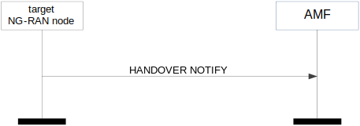
Figure 8.4.3.2-1: Handover notification
The target NG-RAN node shall send the HANDOVER NOTIFY message to the AMF when the UE has been identified in the target cell and the NG-based handover has been successfully completed.
Interactions with Handover Success procedure:
If the Notify Source NG-RAN Node IE is included in the HANDOVER NOTIFY message, the AMF shall, if supported, notify the source NG-RAN node that the UE has successfully accessed the target NG-RAN node by sending the HANDOVER SUCCESS message.
Void.
The purpose of the Path Switch Request procedure is to establish a UE associated signalling connection to the 5GC and, if applicable, to request the switch of the downlink termination point of the NG-U transport bearer towards a new termination point. The procedure uses UE-associated signalling.

Figure 8.4.4.2-1: Path switch request: successful operation
The NG-RAN node initiates the procedure by sending the PATH SWITCH REQUEST message to the AMF. Upon reception of the PATH SWITCH REQUEST message the AMF shall, for each PDU session indicated in the PDU Session ID IE, transparently transfer the Path Switch Request Transfer IE to the SMF associated with the concerned PDU session.
If the RRC Resume Cause IE is included in the PATH SWITCH REQUEST message, the AMF shall, if supported, use it as described in TS 23.502 [10] for User Plane CIoT 5GS Optimisation when the NG-RAN node is an ng-eNB.
If the RedCap Indication IE is included in the PATH SWITCH REQUEST message, the AMF shall, if supported, consider the UE as a RedCap UE that was previously served by a E-UTRA cell, and use the IE according to TS 23.501 [9].
After all necessary updates including the UP path switch have been successfully completed in the 5GC for at least one of the PDU session resources included in the PATH SWITCH REQUEST, the AMF shall send the PATH SWITCH REQUEST ACKNOWLEDGE message to the NG-RAN node and the procedure ends.
The list of accepted QoS flows shall be included in the PATH SWITCH REQUEST message within the Path Switch Request Transfer IE. The SMF shall handle this information as specified in TS 23.502 [10].
For an IAB-MT for which the PDU Session ID IE contained in the PATH SWITCH REQUEST message indicates no PDU session identity assigned as defined in TS 24.007 [54], the AMF shall, if supported, consider that the IAB-MT has no PDU session, and behave as specified in TS 23.501 [9]. Subsequently, the NG-RAN node shall, if supported, ignore the PDU Session Resource Switched List IE in the PATH SWITCH REQUEST ACKNOWLEDGE message.
For each PDU session for which the Additional DL QoS Flow per TNL Information IE is included in the Path Switch Request Transfer IE of the PATH SWITCH REQUEST message, the SMF may use each included UP transport layer information as the downlink termination point for the included associated QoS flows for this PDU session split in different tunnels.
The list of PDU sessions which failed to be setup, if any, shall be included in the PATH SWITCH REQUEST message within the Path Switch Request Setup Failed Transfer IE. The AMF shall handle this information as specified in TS 23.502 [10].
For each PDU session for which the User Plane Security Information IE is included in the Path Switch Request Transfer IE of the PATH SWITCH REQUEST message, the SMF shall behave as specified in TS 33.501 [13] and may send back the Security Indication IE within the Path Switch Request Acknowledge Transfer IE of the PATH SWITCH REQUEST ACKNOWLEDGE message.
For each PDU session for which the DL NG-U TNL Information Reused IE set to "true" is included in the Path Switch Request Transfer IE of the PATH SWITCH REQUEST message, the SMF shall, if supported, consider that the DL TNL information contained in the DL NG-U UP TNL Information IE has been reused.
For each PDU session for which the Additional Redundant DL QoS Flow per TNL Information IE is included in the Path Switch Request Transfer IE of the PATH SWITCH REQUEST message, the SMF may use each included UP transport layer information as the downlink termination point for the included associated QoS flows for this PDU session split in different tunnels for the redundant transmission.
For each PDU session for which the Redundant DL NG-U TNL Information Reused IE is included in the Path Switch Request Transfer IE of the PATH SWITCH REQUEST message, the SMF shall, if supported, consider the included DL transport layer address as the DL transport layer address for the redundant transmission as specified in TS 23.501 [9].
For each PDU session for which the Global RAN Node ID of Secondary NG-RAN Node IE is included in the Path Switch Request Transfer IE of the PATH SWITCH REQUEST message, the SMF shall, if supported, handle this information as specified in TS 23.501 [9].
For each PDU session included in the PATH SWITCH REQUEST message, if the Current QoS Parameters Set Index IE is included in the Path Switch Request Transfer IE the SMF shall consider it as the currently fulfilled QoS parameters set among the alternative QoS parameters for the involved QoS flow.
If the Security Indication IE is included within the Path Switch Request Acknowledge Transfer IE of the PATH SWITCH REQUEST ACKNOWLEDGE message, the NG-RAN node shall behave as specified in TS 33.501 [13].
If the UL NG-U UP TNL Information IE is included within the Path Switch Request Acknowledge Transfer IE of the PATH SWITCH REQUEST ACKNOWLEDGE message, the NG-RAN node shall store this information and use it as the uplink termination point for the user plane data for this PDU session.
If the Additional NG-U UP TNL Information IE is included within the Path Switch Request Acknowledge Transfer IE of the PATH SWITCH REQUEST ACKNOWLEDGE message, the NG-RAN node shall store this information and use the included UL NG-U UP TNL Information IE(s) as the uplink termination point(s) of the user plane data for this PDU session split in different tunnel.
If the Redundant UL NG-U UP TNL Information IE is included within the Path Switch Request Acknowledge Transfer IE of the PATH SWITCH REQUEST ACKNOWLEDGE message, the NG-RAN node shall, if supported, store this information and use it as the uplink termination point for the user plane data for the redundant transmission for this PDU session as specified in TS 23.501 [9].
If the Additional Redundant NG-U UP TNL Information IE is included within the Path Switch Request Acknowledge Transfer IE of the PATH SWITCH REQUEST ACKNOWLEDGE message, the NG-RAN node shall, if supported, store this information and use the included UL NG-U UP TNL Information IE(s) as the uplink termination point(s) of the user plane data for this PDU session split in different tunnel.
If the CN Packet Delay Budget Downlink IE is included within the Path Switch Request Acknowledge Transfer IE of the PATH SWITCH REQUEST ACKNOWLEDGE message, the NG-RAN node shall, if supported, replace the previously provided CN Packet Delay Budget Downlink if any and use it as specified in TS 23.502 [10].
If the CN Packet Delay Budget Uplink IE is included within the Path Switch Request Acknowledge Transfer IE of the PATH SWITCH REQUEST ACKNOWLEDGE message, the NG-RAN node shall, if supported, replace the previously provided CN Packet Delay Budget Uplink if any and use it as specified in TS 23.502 [10].
If the Burst Arrival Time Downlink IE is included within the Path Switch Request Acknowledge Transfer IE of the PATH SWITCH REQUEST ACKNOWLEDGE message, the NG-RAN node shall, if supported, replace the previously provided value if any and use it as specified in TS 23.502 [10].
If the Core Network Assistance Information for RRC INACTIVE IE is included in the PATH SWITCH REQUEST ACKNOWLEDGE message, the NG-RAN node shall, if supported, store this information in the UE context and use it for the RRC_INACTIVE state decision and RNA configuration for the UE and RAN paging if any for a UE in RRC_INACTIVE state, as specified in TS 38.300 [8]. If the MICO All PLMN IE is included in the Core Network Assistance Information for RRC INACTIVE IE the NG-RAN node shall, if supported, consider that the registration area for the UE is the full PLMN and ignore the TAI List for RRC Inactive IE. If the Paging Cause Indication for Voice Service IE is included in the Core Network Assistance Information for RRC INACTIVE IE, the NG-RAN node shall, if supported, store and use it as specified in TS 38.300 [8]. If the PEIPS Assistance Information IE is included in the Core Network Assistance Information for RRC INACTIVE IE, the NG-RAN node shall, if supported, store it and use it for paging subgrouping the UE in RRC_INACTIVE state, as specified in TS 38.300 [8].
If the CN Assisted RAN Parameters Tuning IE is included in the PATH SWITCH REQUEST ACKNOWLEDGE message, the NG-RAN node may use it as described in TS 23.501 [9].
If the RRC Inactive Transition Report Request IE is included in the PATH SWITCH REQUEST ACKNOWLEDGE message, the NG-RAN node shall, if supported, store this information in the UE context.
If the New Security Context Indicator IE is included in the PATH SWITCH REQUEST ACKNOWLEDGE message, the NG-RAN node shall use the information as specified in TS 33.501 [13].
Upon reception of the PATH SWITCH REQUEST ACKNOWLEDGE message the NG-RAN node shall store the received Security Context IE in the UE context and the NG-RAN node shall use it as specified in TS 33.501 [13].
If the UE Security Capabilities IE is included in the PATH SWITCH REQUEST ACKNOWLEDGE message, the NG-RAN node shall handle it accordingly (TS 33.501 [13]).
If the Redirection for Voice EPS Fallback IE is included in the PATH SWITCH REQUEST ACKNOWLEDGE message, the NG-RAN node shall, if supported, store it and use it in a subsequent decision of EPS fallback for voice as specified in TS 23.502 [10].
If the PDU Session Resource Released List IE is included in the PATH SWITCH REQUEST ACKNOWLEDGE message, the NG-RAN node shall release the corresponding QoS flows and regard the PDU session(s) indicated in the PDU Session Resource Released List IE as being released. The appropriate cause value for each PDU session released is included in the Path Switch Request Unsuccessful Transfer IE contained in the PATH SWITCH REQUEST ACKNOWLEDGE message.
If the SRVCC Operation Possible IE is included in the PATH SWITCH REQUEST ACKNOWLEDGE message, the NG-RAN node shall, if supported, store the content of the received SRVCC Operation Possible IE in the UE context and use it as defined in TS 23.216 [31].
If the Enhanced Coverage Restriction IE is included in the PATH SWITCH REQUEST ACKNOWLEDGE message, the NG-RAN node shall, if supported, store this information in the UE context and use it as defined in TS 23.501 [9].
If the Extended Connected Time IE is included in the PATH SWITCH REQUEST ACKNOWLEDGE message, the NG-RAN node shall, if supported, use it as described in TS 23.501 [9].
If the UE Differentiation Information IE is included in the PATH SWITCH REQUEST ACKNOWLEDGE message, the NG-RAN node shall, if supported, store this information in the UE context for further use according to TS 23.501 [9].
If the NR V2X Services Authorized IE is contained in the PATH SWITCH REQUEST ACKNOWLEDGE message, the NG-RAN node shall, if supported, update its NR V2X services authorization information for the UE accordingly. If the NR V2X Services Authorized IE includes one or more IEs set to "not authorized", the NG-RAN node shall, if supported, initiate actions to ensure that the UE is no longer accessing the relevant service(s).
If the LTE V2X Services Authorized IE is contained in the PATH SWITCH REQUEST ACKNOWLEDGE message, the NG-RAN node shall, if supported, update its LTE V2X services authorization information for the UE accordingly. If the LTE V2X Services Authorized IE includes one or more IEs set to "not authorized", the NG-RAN node shall, if supported, initiate actions to ensure that the UE is no longer accessing the relevant service(s).
If the NR UE Sidelink Aggregate Maximum Bit Rate IE is included in the PATH SWITCH REQUEST ACKNOWLEDGE message, the NG-RAN node shall, if supported:
- replace the previously provided UE Sidelink Aggregate Maximum Bit Rate, if available in the UE context, with the received value;
- use the received value for the concerned UE’s sidelink communication in network scheduled mode for NR V2X services.
If the LTE UE Sidelink Aggregate Maximum Bit Rate IE is included in the PATH SWITCH REQUEST ACKNOWLEDGE message, the NG-RAN node shall, if supported:
- replace the previously provided UE Sidelink Aggregate Maximum Bit Rate, if available in the UE context, with the received value;
- use the received value for the concerned UE’s sidelink communication in network scheduled mode for LTE V2X services.
If the PC5 QoS Parameters IE is included in the PATH SWITCH REQUEST ACKNOWLEDGE message, the NG-RAN node shall, if supported, use it as defined in TS 23.287 [33].
If the CE-mode-B Restricted IE is included in the PATH SWITCH REQUEST ACKNOWLEDGE message and the Enhanced Coverage Restriction IE is not set to "restricted" and the Enhanced Coverage Restriction information stored in the UE context is not set to "restricted", the NG-RAN node shall, if supported, store this information in the UE context and use it as defined in TS 23.501 [9].
If the UE User Plane CIoT Support Indicator IE is included in the PATH SWITCH REQUEST ACKNOWLEDGE message the NG-RAN node shall, if supported, store this information in the UE context and consider that User Plane CIoT 5GS Optimisation as specified in TS 23.501 [9] is supported for the UE.
If the PATH SWITCH REQUEST ACKNOWLEDGE message contains the UE Radio Capability ID IE, the NG-RAN node shall, if supported, use it as specified in TS 23.501 [9] and TS 23.502 [10].
If the PATH SWITCH REQUEST ACKNOWLEDGE message contains the Alternative QoS Parameters Set List IE, the NG-RAN node shall, if supported, use it as specified in TS 23.502 [10].
For each PDU session, if the PDU Session Expected UE Activity Behaviour IE is included in the PATH SWITCH REQUEST ACKNOWLEDGE message, the NG-RAN node shall, if supported, handle this information as specified in TS 23.501 [9].
If the PATH SWITCH REQUEST ACKNOWLEDGE message contains the Management Based MDT PLMN List IE, the NG-RAN node shall store it in the UE context, and if supported, use it to allow subsequent selection of the UE for management based MDT defined in TS 32.422 [11].
If the PATH SWITCH REQUEST ACKNOWLEDGE message contains the Management Based MDT PLMN Modification List IE, the NG-RAN node shall, if supported, use it to overwrite any previously stored management based MDT PLMN list information in the UE context and use the received information to allow subsequent selection of the UE for management based MDT defined in TS 32.422 [11].
If the Time Synchronisation Assistance Information IE is included in the PATH SWITCH REQUEST ACKNOWLEDGE message, the NG-RAN node shall, if supported, store the information in the UE context and use it as defined in TS 23.501 [9].
If the 5G ProSe Authorized IE is contained in the PATH SWITCH REQUEST ACKNOWLEDGE message, the NG-RAN node shall, if supported, update its ProSe authorization information for the UE accordingly. If the 5G ProSe Authorized IE includes one and more IEs set to "not authorized", the NG-RAN node shall, if supported, initiate actions to ensure that the UE is no longer accessing the relevant 5G ProSe service(s).
If the 5G ProSe UE PC5 Aggregate Maximum Bit Rate IE is included in the PATH SWITCH REQUEST ACKNOWLEDGE message, the NG-RAN node shall, if supported:
- replace the previously provided 5G ProSe UE PC5 Aggregate Maximum Bit Rate, if available in the UE context, with the received value;
- use the received value for the concerned UE’s sidelink communication in network scheduled mode for 5G ProSe services.
If the 5G ProSe PC5 QoS Parameters IE is included in the PATH SWITCH REQUEST ACKNOWLEDGE message, the NG-RAN node shall, if supported, use it as defined in TS 23.304 [47].
If the IAB Authorized IE is contained in the PATH SWITCH REQUEST ACKNOWLEDGE message, the NG-RAN node shall, if supported, store the received IAB Authorization information in the UE context and use it as specified in TS 38.401 [2].
Interactions with RRC Inactive Transition Report procedure:
If the RRC Inactive Transition Report Request IE is included in the PATH SWITCH REQUEST ACKNOWLEDGE message and set to "single RRC connected state report" and the UE is in RRC_CONNECTED state, the NG-RAN node shall, if supported, send one RRC INACTIVE TRANSITION REPORT message to the AMF to report the RRC state of the UE.
If the RRC Inactive Transition Report Request IE is included in the PATH SWITCH REQUEST ACKNOWLEDGE message and set to "single RRC connected state report" and the UE is in RRC_INACTIVE state, the NG-RAN node shall, if supported, send to the AMF one RRC INACTIVE TRANSITION REPORT message plus one subsequent RRC INACTIVE TRANSITION REPORT message when the RRC state transitions to RRC_CONNECTED state.
If the RRC Inactive Transition Report Request IE is included in the PATH SWITCH REQUEST ACKNOWLEDGE message and set to "subsequent state transition report", the NG-RAN node shall, if supported, send one RRC INACTIVE TRANSITION REPORT message to the AMF to report the RRC state of the UE and subsequent RRC INACTIVE TRANSITION REPORT messages to report the RRC state of the UE when the UE enters or leaves RRC_INACTIVE state.
Interactions with PDU Session Resource Notify procedure:
If the QoS related parameters (e.g. the CN Packet Delay Budget Downlink IE or the CN Packet Delay Budget Uplink IE) are included in the Path Switch Request Acknowledge Transfer IE of the PATH SWITCH REQUEST ACKNOWLEDGE message, but can not be succesfully accepted by the NG-RAN node, the NG-RAN node should continue to use the old values received from the source NG-RAN node, if any. The NG-RAN node shall, if supported, send the PDU SESSION RESOURCE NOTIFY message to notify the AMF.
Figure 8.4.4.3-1: Path switch request: unsuccessful operation
If the 5GC fails to switch the downlink termination point of the NG-U transport bearer towards a new termination point for all PDU session resources, the AMF shall send the PATH SWITCH REQUEST FAILURE message to the NG-RAN node.
The NG-RAN node shall release the corresponding QoS flows and regard the PDU session(s) indicated in the PDU Session Resource Released List IE included in the PATH SWITCH REQUEST FAILURE message as being released.
The appropriate cause value for each PDU session released is included in the Path Switch Request Unsuccessful Transfer IE contained in the PATH SWITCH REQUEST FAILURE message.
If the AMF receives a PATH SWITCH REQUEST message containing several PDU Session ID IEs (in the PDU Session Resource to be Switched in Downlink List IE) set to the same value, the AMF shall send the PATH SWITCH REQUEST FAILURE message to the NG-RAN node.
NOTE: As an exception, the AMF generates the Path Switch Request Unsuccessful Transfer IE.
The purpose of the Handover Cancellation procedure is to enable a source NG-RAN node to cancel an ongoing handover preparation or an already prepared handover. The procedure uses UE-associated signalling.
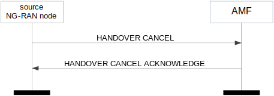
Figure 8.4.5.2-1: Handover cancel: successful operation
The source NG-RAN node initiates the procedure by sending a HANDOVER CANCEL message to the AMF.
Not applicable.
If the source NG-RAN node becomes aware of the fact that an expected HANDOVER CANCEL ACKNOWLEDGE message is missing, the source NG-RAN node shall consider the Handover Cancellation procedure as successfully terminated.
The purpose of the Uplink RAN Status Transfer procedure is to enable lossless NG-based handover. The procedure uses UE-associated signalling.
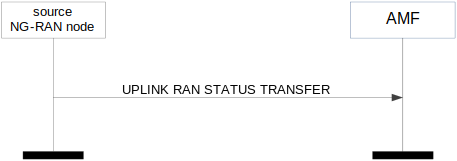
Figure 8.4.6.2-1: Uplink RAN status transfer
The source NG-RAN node initiates the procedure by stopping the assigning of PDCP-SNs to downlink SDUs and sending the UPLINK RAN STATUS TRANSFER message to the AMF at the point in time when it considers the transmitter/receiver status to be frozen.
For each DRB for which PDCP-SN and HFN status preservation applies, the source NG-RAN node shall include the DRB ID IE, the UL COUNT Value IE and the DL COUNT Value IE within the DRBs Subject to Status Transfer List IE in the RAN Status Transfer Transparent Container IE of the UPLINK RAN STATUS TRANSFER message.
The source NG-RAN node may also include in the UPLINK RAN STATUS TRANSFER message the missing and the received uplink SDUs in the Receive Status of UL PDCP SDUs IE for each DRB for which the source NG-RAN node has accepted the request from the target NG-RAN node for uplink forwarding.
Void.
The purpose of the Downlink RAN Status Transfer procedure is to enable lossless NG-based handover. The procedure uses UE-associated signalling.
Figure 8.4.7.2-1: Downlink RAN status transfer
The AMF initiates the procedure by sending the DOWNLINK RAN STATUS TRANSFER message to the target NG-RAN node. The target NG-RAN node using Full Configuration for this handover as per TS 38.300 [8] shall ignore the information received in this message.
For each DRB in the DRBs Subject to Status Transfer List IE within the RAN Status Transfer Transparent Container IE, the target NG-RAN node shall not deliver any uplink packet which has a PDCP-SN lower than the value of the UL Count Value IE.
For each DRB in the DRBs Subject to Status Transfer List IE within the RAN Status Transfer Transparent Container IE, the target NG-RAN node shall use the value of the DL COUNT Value IE for the first downlink packet for which there is no PDCP-SN yet assigned.
If the Receive Status of UL PDCP SDUs IE is included for at least one DRB in the RAN Status Transfer Transparent Container IE of the DOWNLINK RAN STATUS TRANSFER message, the target NG-RAN node may use it in a Status Report message sent to the UE over the radio interface.
If the target NG-RAN node receives this message for a UE for which no prepared handover exists at the target NG-RAN node, the target NG-RAN node shall ignore the message.
The Handover Success procedure is used during a DAPS Handover, to inform the source NG-RAN node that the UE has successfully accessed the target NG-RAN node. The procedure uses UE-associated signalling.
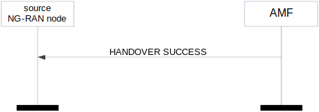
Figure 8.4.8.2-1: Handover Success
The AMF initiates the procedure by sending the HANDOVER SUCCESS message to the source NG-RAN node.
If the HANDOVER SUCCESS message refers to a context that does not exist, the source NG-RAN node shall ignore the message.
The purpose of the Uplink RAN Early Status Transfer procedure is to transfer the COUNT of the first downlink SDU that the source NG-RAN node forwards to the target NG-RAN node, from the source NG-RAN node to the target NG-RAN node via the AMF during NG DAPS Handover. The procedure uses UE-associated signalling.
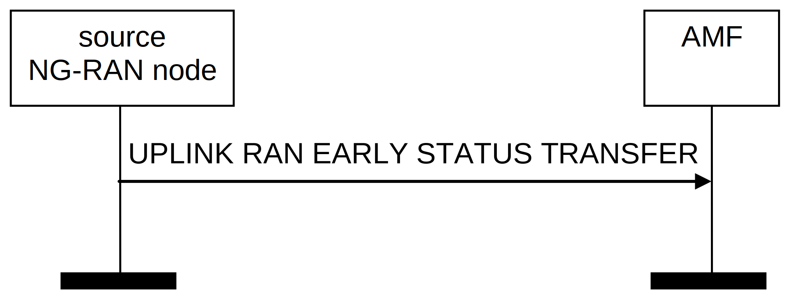
Figure 8.4.9.2-1: Uplink RAN Early Status Transfer
The source NG-RAN node initiates the procedure by sending the UPLINK RAN EARLY STATUS TRANSFER message to the AMF when it considers at least a DRB to be simultaneously served by the source and the target NG-RAN nodes during NG DAPS Handover.
For each DRB for which DAPS Handover applies, the source NG-RAN node shall include the DRB ID IE and the FIRST DL COUNT Value IE within the DRBs Subject To Early Status Transfer Item IE in the Early Status Transfer Transparent Container IE of the UPLINK RAN EARLY STATUS TRANSFER message.
Void.
The purpose of the Downlink RAN Early Status Transfer procedure is to transfer the COUNT of the first downlink SDU that the source NG-RAN node forwards to the target NG-RAN node, from the source NG-RAN node to the target NG-RAN node via the AMF during NG DAPS Handover. The procedure uses UE-associated signalling.
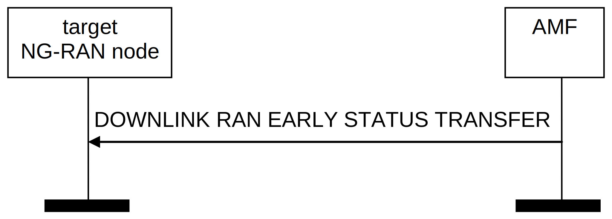
Figure 8.4.10.2-1: Downlink RAN Early Status Transfer
The AMF initiates the procedure by sending the DOWNLINK RAN EARLY STATUS TRANSFER message to the target NG-RAN node.
For each DRB for which the FIRST DL COUNT Value IE is received in the DOWNLINK RAN EARLY STATUS TRANSFER message, the target NG-RAN node shall use it as the COUNT of the first downlink SDU that the source NG-RAN node forwards to the target NG-RAN node.
If the target NG-RAN node receives this message for a UE for which no prepared handover exists at the target NG-RAN node, the target NG-RAN node shall ignore the message.
The purpose of the Paging procedure is to enable the AMF to page a UE in the specific NG-RAN node.
Figure 8.5.1.2-1: Paging
The AMF initiates the Paging procedure by sending the PAGING message to the NG-RAN node.
At the reception of the PAGING message, the NG-RAN node shall perform paging of the UE in cells which belong to tracking areas as indicated in the TAI List for Paging IE.
If the Paging DRX IE is included in the PAGING message, the NG-RAN node shall use it according to TS 38.304 [12] and TS 36.304 [29].
For each cell that belongs to any of the tracking areas indicated in the TAI List for Paging IE, the NG-RAN node shall generate one page on the radio interface.
If the Paging Priority IE is included in the PAGING message, the NG-RAN node may use it according to TS 23.501 [9].
If the UE Radio Capability for Paging IE is included in the PAGING message, the NG-RAN node may use it to apply specific paging schemes.
If the Assistance Data for Recommended Cells IE is included in the Assistance Data for Paging IE it may be used, together with the Paging Attempt Information IE if also present, according to TS 38.300 [8].
If the Next Paging Area Scope IE is included in the Paging Attempt Information IE it may be used for paging the UE according to TS 38.300 [8].
If the Paging Origin IE is included in the PAGING message, the NG-RAN node shall transfer it to the UE according to TS 38.331 [18] and TS 36.331 [21].
If the NB-IoT Paging eDRX Information IE is included in the PAGING message, the NG-RAN node shall, if supported, use it according to TS 36.304 [29]. If the NB-IoT Paging Time Window IE is included in the NB-IoT Paging eDRX Information IE, the NG-RAN node shall take this information into account to determine the UE’s paging occasion according to TS 36.304 [29]. The NG-RAN node should take into account the reception time of the PAGING message on the NG interface to determine when to page the UE.
If the NB-IoT Paging DRX IE is included in the PAGING message, the NG-RAN node shall use it according to TS 36.304 [29].
If the Enhanced Coverage Restriction IE is included in the PAGING message, the NG-RAN node shall, if supported, use it as defined in TS 23.501 [9].
If the Paging Assistance Data for CE Capable UE IE is included in the Assistance Data for Paging IE in the PAGING message, it may be used for paging the indicated CE capable UE, according to TS 36.300 [17].
If the WUS Assistance Information IE is included in the PAGING message, the NG-RAN node shall, if supported, use it to determine the WUS group for the UE, as specified in TS 36.304 [29].
If the E-UTRA Paging eDRX Information IE is included in the PAGING message, the NG-RAN node shall, if supported, use it according to TS 36.304 [29]. If the E-UTRA Paging Time Window IE is included in the E-UTRA Paging eDRX Information IE, the NG-RAN node shall take this information into account to determine the UE’s paging occasion according to TS 36.304 [29]. The NG-RAN node should take into account the reception time of the PAGING message on the NGAP interface to determine when to page the UE.
If the CE-mode-B Restricted IE is included in the PAGING message and the Enhanced Coverage Restriction IE is not set to "restricted", the NG-RAN node shall, if supported, use it as defined in TS 23.501 [9].
If the NPN Paging Assistance Information IE is included in the Assistance Data for Paging IE, the NG-RAN node may take it into account when determining the cells where paging will be performed.
If the NR Paging eDRX Information IE is included in the PAGING message, the NG-RAN node shall, if supported, use it according to TS 38.304 [12] and TS 23.501 [9]. If the NR Paging Time Window IE is included in the NR Paging eDRX Information IE, the NG-RAN node shall take this information into account to determine the UE’s paging occasion according to TS 38.304 [12].
If the Paging Cause IE is included in the PAGING message, the NG-RAN node shall, if supported, transfer it to the UE according to TS 38.331 [18] and TS 36.331 [21].
If the PEIPS Assistance Information IE is included in the PAGING message, the NG-RAN node shall, if supported, use it for paging subgrouping of the UE, as specified in TS 38.300 [8].
Void.
The purpose of the Multicast Group Paging procedure is to enable the AMF to notify CM-IDLE UEs which have joined a multicast MBS session about its activation. The procedure uses non-UE associated signalling.
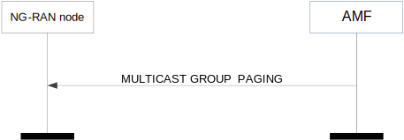
Figure 8.5.2.2-1: Multicast Group Paging
The AMF initiates the Multicast Group Paging procedure by sending the MULTICAST GROUP PAGING message to the NG-RAN node.
At the reception of the MULTICAST GROUP PAGING message, the NG-RAN node shall perform multicast group paging of the MBS session identified by the MBS Session ID IE utilising information provided by the AMF.
If the Paging DRX IE is included in the MULTICAST GROUP PAGING message, the NG-RAN node shall use it according to TS 38.304 [12].
If the MBS Service Area IE is included in the MULTICAST GROUP PAGING message, the NG-RAN node shall take it into account during multicast group paging, as specified in TS 23.247 [44].
If the UE Paging List IE is included in the MULTICAST GROUP PAGING message, the NG-RAN node shall, if supported, use it according to TS 38.304 [12]. If absent, the NG-RAN node shall perform multicast group paging of the MBS session in all paging occasions within at least one default paging cycle, as specified in TS 38.304 [12].
Void.
The Initial UE Message procedure is used when the NG-RAN node has received from the radio interface the first uplink NAS message to be forwarded to an AMF.
Figure 8.6.1.2-1: Initial UE message
The NG-RAN node initiates the procedure by sending an INITIAL UE MESSAGE message to the AMF. The NG-RAN node shall allocate a unique RAN UE NGAP ID to be used for the UE and the NG-RAN node shall include this identity in the INITIAL UE MESSAGE message.
The NAS-PDU IE contains a UE – AMF message that is transferred without interpretation in the NG-RAN node.
In case of network sharing, the selected PLMN is indicated by the PLMN Identity IE within the TAI IE included in the INITIAL UE MESSAGE message, or by the Serving PLMN IE within the NR NTN TAI Information IE included in the same message for NTN.
When the NG-RAN node has received from the radio interface the 5G-S-TMSI IE, it shall include it in the INITIAL UE MESSAGE message.
If the AMF Set ID IE is included in the INITIAL UE MESSAGE message this indicates that the message is a rerouted message and the AMF shall, if supported, use the IE as described in TS 23.502 [10].
If the UE Context Request IE is included in the INITIAL UE MESSAGE message the AMF shall trigger an Initial Context Setup procedure towards the NG-RAN node.
If the Allowed NSSAI IE is included in the INITIAL UE MESSAGE message the AMF shall use the IE as defined in TS 23.502 [10].
If the Source to Target AMF Information Reroute IE is included in the INITIAL UE MESSAGE message the AMF shall use the IE as defined in TS 23.502 [10].
If the IAB Node Indication IE is included in the INITIAL UE MESSAGE message, the AMF shall consider that the message is related to an IAB node.
If the CE-mode-B Support Indicator IE is included in the INITIAL UE MESSAGE message and set to "supported", the AMF shall, if supported, use the extended NAS timer settings for the UE as specified in TS 23.501 [9].
If the LTE-M indication IE is included in the INITIAL UE MESSAGE message the AMF shall, if supported, use it according to TS 23.501 [9].
If the EDT Session IE set to "true" is included in the INITIAL UE MESSAGE message and the NG-RAN node is an ng-eNB, the AMF shall, if supported, consider that the message has been received as a result of an EDT session initiated by the UE.
If PNI-NPN related information within the NPN Access Information IE is received in the INITIAL UE MESSAGE message, the AMF shall, if supported, consider that the included information is associated to the cell via which the UE has sent the first NAS message, and to the PLMN Identity which is indicated within the TAI IE, and use the included information as specified in TS 23.501 [9].
In case of network sharing for SNPNs, the selected SNPN is indicated within the User Location Information IE included in the INITIAL UE MESSAGE message by the PLMN Identity IE within the TAI IE and the NID IE.
If the RedCap Indication IE is included in the INITIAL UE MESSAGE message, the AMF shall, if supported, use it according to TS 23.501 [9].
If the 5G-S-TMSI is not received by the AMF in the INITIAL UE MESSAGE message whereas expected, the AMF shall consider the procedure as failed.
The Downlink NAS Transport procedure is used when the AMF only needs to send a NAS message transparently via the NG-RAN node to the UE, and a UE-associated logical NG-connection exists for the UE or the AMF has received the RAN UE NGAP ID IE in an INITIAL UE MESSAGE message or if the NG-RAN node has already initiated a UE-associated logical NG-connection by sending an INITIAL UE MESSAGE message via another NG interface instance.
Figure 8.6.2.2-1: Downlink NAS transport
The AMF initiates the procedure by sending a DOWNLINK NAS TRANSPORT message to the NG-RAN node. If the UE-associated logical NG-connection is not established, the AMF shall allocate a unique AMF UE NGAP ID to be used for the UE and include that in the DOWNLINK NAS TRANSPORT message; by receiving the AMF UE NGAP ID IE in the DOWNLINK NAS TRANSPORT message, the NG-RAN node establishes the UE-associated logical NG-connection.
If the RAN Paging Priority IE is included in the DOWNLINK NAS TRANSPORT message, the NG-RAN node may use it to determine a priority for paging the UE in RRC_INACTIVE state.
The NAS-PDU IE contains an AMF – UE message that is transferred without interpretation in the NG-RAN node.
If the Mobility Restriction List IE is contained in the DOWNLINK NAS TRANSPORT message, the NG-RAN node shall overwrite any previously stored mobility restriction information in the UE context. The NG-RAN node shall use the information in the Mobility Restriction List IE if present in the DOWNLINK NAS TRANSPORT message to:
- determine a target for subsequent mobility action for which the NG-RAN node provides information about the target of the mobility action towards the UE;
- select a proper SCG during dual connectivity operation;
- assign proper RNA(s) for the UE when moving the UE to RRC_INACTIVE state.
If the Mobility Restriction List IE is not contained in the DOWNLINK NAS TRANSPORT message and there is no previously stored mobility restriction information, the NG-RAN node shall consider that no roaming and no access restriction apply to the UE except for the PNI NPN mobility as described in TS 23.501 [9].
The NG-RAN node shall consider that roaming or access to CAG cells is only allowed if the Allowed PNI-NPN List IE is contained in the DOWNLINK NAS TRANSPORT message, as described in TS 23.501 [9].
If the Index to RAT/Frequency Selection Priority IE is included in the DOWNLINK NAS TRANSPORT message, the NG-RAN node shall, if supported, use it as defined in TS 23.501 [9].
The UE Aggregate Maximum Bit Rate IE should be sent to the NG-RAN node if the AMF has not sent it previously. If it is included in the DOWNLINK NAS TRANSPORT message, the NG-RAN node shall store the UE Aggregate Maximum Bit Rate in the UE context, and use the received UE Aggregate Maximum Bit Rate for all Non-GBR QoS flows for the concerned UE as specified in TS 23.501 [9].
If the Old AMF IE is included in the DOWNLINK NAS TRANSPORT message, the NG-RAN node shall consider that this UE-associated logical NG-connection was redirected to this AMF from another AMF identified by the Old AMF IE.
If the SRVCC Operation Possible IE is included in the DOWNLINK NAS TRANSPORT message, the NG-RAN node shall, if supported, store the content of the received SRVCC Operation Possible IE in the UE context and use it as defined in TS 23.216 [31].
If the Extended Connected Time IE is included in the DOWNLINK NAS TRANSPORT message, the NG-RAN node shall, if supported, use it as described in TS 23.501 [9].
If the Enhanced Coverage Restriction IE is included in the DOWNLINK NAS TRANSPORT message, the NG-RAN node shall, if supported, store this information in the UE context and use it as defined in TS 23.501 [9].
If the UE Differentiation Information IE is included in the DOWNLINK NAS TRANSPORT message, the NG-RAN node shall, if supported, store this information in the UE context for further use according to TS 23.501 [9].
If the CE-mode-B Restricted IE is included in the DOWNLINK NAS TRANSPORT message and the Enhanced Coverage Restriction IE is not set to "restricted" and the Enhanced Coverage Restricted information stored in the UE context is not set to "restricted", the NG-RAN node shall, if supported, store this information in the UE context and use it as defined in TS 23.501 [9].
If the UE Radio Capability IE is included in the DOWNLINK NAS TRANSPORT message, the NG-RAN node shall store this information in the UE context, and use it as defined in TS 38.300 [8].
If the End Indication IE is included in the DOWNLINK NAS TRANSPORT message and set to "no further data", the NG-RAN node shall consider that besides the included NAS PDU in this message, there are no further NAS PDUs to be transmitted for this UE.
If the DOWNLINK NAS TRANSPORT message contains the UE Radio Capability ID IE, the NG-RAN node shall, if supported, use it as specified in TS 23.501 [9] and TS 23.502 [10].
If the Target NSSAI Information IE is contained in the DOWNLINK NAS TRANSPORT message, the NG-RAN node may use this information as specified in TS 23.501 [9].
If the Masked IMEISV IE is included in the DOWNLINK NAS TRANSPORT message, the NG-RAN node shall, if supported, use it to determine the characteristics of the UE for subsequent handling.
Interactions with Initial UE Message procedure:
The NG-RAN node shall use the AMF UE NGAP ID IE and RAN UE NGAP ID IE received in the DOWNLINK NAS TRANSPORT message as identification of the logical connection even if the RAN UE NGAP ID IE had been allocated in an INITIAL UE MESSAGE message sent over a different NG interface instance.
Interaction with the UE Radio Capability Info Indication procedure:
If the UE Capability Info Request IE set to "requested" is included in the DOWNLINK NAS TRANSPORT message, the NG-RAN node shall trigger the UE Radio Capability Info Indication procedure if UE capability related information was successfully retrieved from the UE.
Void.
The Uplink NAS Transport procedure is used when the NG-RAN node has received from the radio interface a NAS message to be forwarded to the AMF to which a UE-associated logical NG-connection for the UE exists.
Figure 8.6.3.2-1: Uplink NAS transport
The NG-RAN node initiates the procedure by sending an UPLINK NAS TRANSPORT message to the AMF.
The NAS-PDU IE contains a UE – AMF message that is transferred without interpretation in the NG-RAN node.
Void.
The NAS Non Delivery Indication procedure is used when the NG-RAN node decides not to start the delivery of a NAS message that has been received over a UE-associated logical NG-connection or the NG-RAN node is unable to ensure that the message has been received by the UE.
Figure 8.6.4.2-1: NAS non delivery indication
The NG-RAN node initiates the procedure by sending a NAS NON DELIVERY INDICATION message to the AMF. The NG-RAN node shall report the non-delivery of a NAS message by including the non-delivered NAS message within the NAS-PDU IE and an appropriate cause value within the Cause IE, e.g., "NG intra system handover triggered", "NG inter system handover triggered" or "Xn handover triggered".
Void.
The purpose of the Reroute NAS Request procedure is to enable the AMF to request for a rerouting of the INITIAL UE MESSAGE message to another AMF.
Figure 8.6.5.2-1: Reroute NAS request
The AMF initiates the procedure by sending a REROUTE NAS REQUEST message to the NG-RAN node. The NG-RAN node shall, if supported, reroute the INITIAL UE MESSAGE message to an AMF indicated by the AMF Set ID IE as described in TS 23.501 [9].
If the Allowed NSSAI IE is included in the REROUTE NAS REQUEST message, then the NG-RAN node shall propagate it in the rerouted INITIAL UE MESSAGE message as defined in TS 23.502 [10].
If the Source to Target AMF Information Reroute IE is included in the REROUTE NAS REQUEST message, then the NG-RAN node shall propagate it in the rerouted INITIAL UE MESSAGE message as defined in TS 23.502 [10].
Void.
The purpose of the NG Setup procedure is to exchange application level data needed for the NG-RAN node and the AMF to correctly interoperate on the NG-C interface. This procedure shall be the first NGAP procedure triggered after the TNL association has become operational. The procedure uses non-UE associated signalling.
This procedure erases any existing application level configuration data in the two nodes, replaces it by the one received and clears AMF overload state information at the NG-RAN node. If the NG-RAN node and AMF do not agree on retaining the UE contexts this procedure also re-initialises the NGAP UE-related contexts (if any) and erases all related signalling connections in the two nodes like an NG Reset procedure would do.
Figure 8.7.1.2-1: NG setup: successful operation
The NG-RAN node initiates the procedure by sending an NG SETUP REQUEST message including the appropriate data to the AMF. The AMF responds with an NG SETUP RESPONSE message including the appropriate data.
If the Configured TAC Indication IE set to "true” is included for a Tracking Area contained in the Supported TA List IE in the NG SETUP REQUEST message, the AMF may take it into account to optimise NG-C signalling towards this NG-RAN node.
If the UE Retention Information IE set to “ues-retained“ is included in the NG SETUP REQUEST message, the AMF may accept the proposal to retain the existing UE related contexts and signalling connections by including the UE Retention Information IE set to “ues-retained“ in the NG SETUP RESPONSE message.
If the AMF supports IAB, the AMF shall include the IAB Supported IE in the NG SETUP RESPONSE message. If the IAB Supported IE is included in the NG SETUP RESPONSE message, the NG-RAN node shall, if supported, store this information and use it for further AMF selection for the IAB-MT.
The AMF shall include the Backup AMF Name IE, if available, in the Served GUAMI List IE in the NG SETUP RESPONSE message. The NG-RAN node shall, if supported, consider the AMF as indicated by the Backup AMF Name IE when performing AMF reselection, as specified in TS 23.501 [9].
If the GUAMI Type IE is included in the NG SETUP RESPONSE message, the NG-RAN node shall store the received value and use it for further AMF selection as defined in TS 23.501 [9].
If the RAN Node Name IE is included in the NG SETUP REQUEST message, the AMF may use this IE as a human readable name of the NG-RAN node. If the Extended RAN Node Name IE is included in the NG SETUP REQUEST message, the AMF may use this IE as a human readable name of the NG-RAN node and shall ignore the RAN Node Name IE if also included.
If the AMF Name IE is included in the NG SETUP RESPONSE message, the NG-RAN node may use this IE as a human readable name of the AMF. If the Extended AMF Name IE is included in the NG SETUP RESPONSE message, the NG-RAN node may use this IE as a human readable name of the AMF and shall ignore the AMF Name IE if also included.
If the NB-IoT Default Paging DRX IE is included in the NG SETUP REQUEST message, the AMF shall take it into account for paging.
If the RAT Information IE is included in the NG SETUP REQUEST message, the AMF shall handle this information as specified in TS 23.502 [10].
If the NID IE within the NPN Support IE is included within a Broadcast PLMN Item IE in the NG SETUP REQUEST message, the AMF shall consider that the NG-RAN node supports the indicated S-NSSAI(s) for the corresponding tracking area code for the SNPN identified by the PLMN Identity IE and the NID IE.
If the NID IE within the NPN Support IE is included within a PLMN Support Item IE in the NG SETUP RESPONSE message, the NG-RAN node shall consider that the AMF supports the SNPN identified by the PLMN Identity IE and the NID IE.
If the Onboarding Support IE is also included within the same PLMN Support Item IE, the NG-RAN node shall, if supported, consider that the AMF supports UE onboarding for the identified SNPN, as specified in TS 23.501 [9].
If the TAI NSAG Support List IE is included in the Broadcast PLMN Item IE in the NG SETUP REQUEST message, the AMF shall, if supported, use this information as specified in TS 23.501 [9].
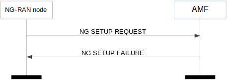
Figure 8.7.1.3-1: NG setup: unsuccessful operation
If the AMF cannot accept the setup, it should respond with an NG SETUP FAILURE message and appropriate cause value.
If the NG SETUP FAILURE message includes the Time to Wait IE, the NG-RAN node shall wait at least for the indicated time before reinitiating the NG Setup procedure towards the same AMF.
If the AMF does not identify any of the PLMNs/SNPNs indicated in the NG SETUP REQUEST message, it shall reject the NG Setup procedure with an appropriate cause value.
If none of the RATs indicated by the NG-RAN node in the NG SETUP REQUEST message is supported by the AMF, then the AMF shall fail the NG Setup procedure with an appropriate cause value.
The purpose of the RAN Configuration Update procedure is to update application level configuration data needed for the NG-RAN node and the AMF to interoperate correctly on the NG-C interface. This procedure does not affect existing UE-related contexts, if any. The procedure uses non UE-associated signalling.
Figure 8.7.2.2-1: RAN configuration update: successful operation
The NG-RAN node initiates the procedure by sending a RAN CONFIGURATION UPDATE message to the AMF including an appropriate set of updated configuration data that it has just taken into operational use. The AMF responds with a RAN CONFIGURATION UPDATE ACKNOWLEDGE message to acknowledge that it successfully updated the configuration data. If an information element is not included in the RAN CONFIGURATION UPDATE message, the AMF shall interpret that the corresponding configuration data is not changed and shall continue to operate the NG-C interface with the existing related configuration data.
If the Supported TA List IE is included in the RAN CONFIGURATION UPDATE message, the AMF shall overwrite the whole list of supported TAs and the corresponding list of supported slices for each TA, and use them for subsequent registration area management of the UE.
If the Configured TAC Indication IE set to "true” is included for a Tracking Area contained in the Supported TA List IE in the RAN CONFIGURATION UPDATE message, the AMF may take it into account to optimise NG-C signalling towards this NG-RAN node.
If the Global RAN Node ID IE is included in the RAN CONFIGURATION UPDATE message, the AMF shall associate the TNLA to the NG-C interface instance using the Global RAN Node ID.
If the RAN CONFIGURATION UPDATE message includes the NG-RAN TNL Association to Remove List IE, the AMF shall, if supported, initiate removal of the TNL association(s) indicated by NG-RAN TNL endpoint(s) and AMF TNL endpoint(s) if the TNL Association Transport Layer Address at AMF IE is present, or the TNL association(s) indicated by NG-RAN TNL endpoint(s) if the TNL Association Transport Layer Address at AMF IE is absent:
- if the received TNL Association Transport Layer Address IE includes the Port Number IE, the NG-RAN TNL endpoint is identified by the Endpoint IP Address IE and the Port Number IE. Otherwise, the NG-RAN TNL endpoints correspond to all NG-RAN TNL endpoints identified by the Endpoint IP Address IE and any port number(s).
- if the received TNL Association Transport Layer Address at AMF IE includes the Port Number IE, the AMF TNL endpoint is identified by the Endpoint IP Address IE and the Port Number IE. Otherwise, the AMF TNL endpoints correspond to all AMF TNL endpoints identified by the Endpoint IP Address IE and any port number(s).
If the RAN CONFIGURATION UPDATE message includes the RAN Node Name IE, the AMF may store it or update this IE value if already stored, and use it as a human readable name of the NG-RAN node. If the RAN CONFIGURATION UPDATE message includes the Extended RAN Node Name IE, the AMF may store it or update this IE value if already stored, and use it as a human readable name of the NG-RAN node and shall ignore the RAN Node Name IE if also included.
If the NB-IoT Default Paging DRX IE is included in the RAN CONFIGURATION UPDATE message, the AMF shall overwrite any previously stored NB-IoT default paging DRX value for the NG-RAN node.
If the RAT Information IE is included in the RAN CONFIGURATION UPDATE message, the AMF shall handle this information as specified in TS 23.502 [10].
If the NID IE within the NPN Support IE is included within a Broadcast PLMN Item IE in the RAN CONFIGURATION UPDATE message, the AMF shall consider that the NG-RAN node supports the indicated S-NSSAI(s) for the corresponding tracking area code for the SNPN identified by the PLMN Identity IE and the NID IE.
If the TAI NSAG Support List IE is included in the Broadcast PLMN Item IE in the RAN CONFIGURATION UPDATE message, the AMF shall, if supported, use this information as specified in TS 23.501 [9].
Figure 8.7.2.3-1: RAN configuration update: unsuccessful operation
If the AMF cannot accept the update, it shall respond with a RAN CONFIGURATION UPDATE FAILURE message and appropriate cause value.
If the Time to Wait IE is included in the RAN CONFIGURATION UPDATE FAILURE message, the NG-RAN node shall wait at least for the indicated time before reinitiating the RAN Configuration Update procedure towards the same AMF.
If the NG-RAN node, after initiating the RAN Configuration Update procedure, receives neither a RAN CONFIGURATION UPDATE ACKOWLEDGE nor a RAN CONFIGURATION UPDATE FAILURE message, the NG-RAN node may reinitiate a further RAN Configuration Update procedure towards the same AMF, provided that the content of the new RAN CONFIGURATION UPDATE message is identical to the content of the previously unacknowledged RAN CONFIGURATION UPDATE message.
The purpose of the AMF Configuration Update procedure is to update application level configuration data needed for the NG-RAN node and AMF to interoperate correctly on the NG-C interface. This procedure does not affect existing UE-related contexts, if any. The procedure uses non UE-associated signalling.
Figure 8.7.3.2-1: AMF configuration update: successful operation
The AMF initiates the procedure by sending an AMF CONFIGURATION UPDATE message including the appropriate updated configuration data to the NG-RAN node. The NG-RAN node responds with an AMF CONFIGURATION UPDATE ACKNOWLEDGE message to acknowledge that it successfully updated the configuration data. Unless stated otherwise, if an information element is not included in the AMF CONFIGURATION UPDATE message, the NG-RAN node shall interpret that the corresponding configuration data is not changed and shall continue to operate the NG-C interface with the existing related configuration data.
If the PLMN Support List IE is included in the AMF CONFIGURATION UPDATE message, the NG-RAN node shall overwrite the whole list of supported PLMN/SNPN Identities and the corresponding list of AMF slices and, if present, other associated information for each PLMN/SNPN Identity and use the received values for further network slice selection and AMF selection.
If the AMF TNL Association to Add List IE is included in the AMF CONFIGURATION UPDATE message, the NG-RAN node shall, if supported, use it to establish the TNL association(s) with the AMF. If the AMF TNL Association to Add List IE is included in the AMF CONFIGURATION UPDATE message, and if the AMF TNL Association Address IE does not include the Port Number IE, the NG-RAN node shall assume that port number value 38412 is used for the endpoint. The NG-RAN node shall report to the AMF, in the AMF CONFIGURATION UPDATE ACKNOWLEDGE message, the successful establishment of the TNL association(s) with the AMF as follows:
- A list of successfully established TNL associations shall be included in the AMF TNL Association Setup List IE;
- A list of TNL associations that failed to be established shall be included in the AMF TNL Association Failed to Setup List IE.
If the AMF CONFIGURATION UPDATE message includes the AMF TNL Association to Remove List IE, the NG-RAN node shall, if supported, initiate removal of the TNL association(s) indicated by AMF TNL endpoint(s) and NG-RAN node TNL endpoint(s) if the TNL Association Transport Layer Address NG-RAN IE is present, or the TNL association(s) indicated by AMF TNL endpoint(s) if the TNL Association Transport Layer Address NG-RAN IE is absent:
- if the received AMF TNL Association Address IE includes the Port Number IE, the AMF TNL endpoint is identified by the Endpoint IP Address IE and the Port Number IE. Otherwise, the AMF TNL endpoints correspond to all AMF TNL endpoints identified by the Endpoint IP Address IE and any port number(s).
- if the received TNL Association Transport Layer Address NG-RAN IE includes the Port Number IE, the NG-RAN node TNL endpoint is identified by the Endpoint IP Address IE and the Port Number IE. Otherwise, the NG-RAN node TNL endpoints correspond to all NG-RAN node TNL endpoints identified by the Endpoint IP Address IE and any port number(s).
If the AMF Name IE is included in the AMF CONFIGURATION UPDATE message, the NG-RAN node shall overwrite the previously stored AMF name and use it to identify the AMF.
If the AMF CONFIGURATION UPDATE message includes the AMF Name IE, the NG-RAN node may store it or update this IE value if already stored, and use it as a human readable name of the AMF. If the AMF CONFIGURATION UPDATE message includes the Extended AMF Name IE, the NG-RAN node may store it or update this IE value if already stored, and use it as a human readable name of the AMF and shall ignore the AMF Name IE if also included.
If the Served GUAMI List IE is included in the AMF CONFIGURATION UPDATE message, the NG-RAN node shall overwrite the whole list of GUAMIs served by the AMF by the new list and use the received values for further AMF management and AMF selection as defined in TS 23.501 [9].
If the Relative AMF Capacity IE is included in the AMF CONFIGURATION UPDATE message, the NG-RAN node may use it as defined in TS 23.501 [9].
If the AMF TNL Association to Update List IE is included in the AMF CONFIGURATION UPDATE message the NG-RAN node shall, if supported, update the TNL association(s) indicated by the received AMF Transport Layer information towards the AMF:
- if the received AMF TNL Association Address IE includes the Port Number IE, the AMF TNL endpoint is identified by the Endpoint IP Address IE and the Port Number IE. Otherwise, the AMF TNL endpoints correspond to all AMF TNL endpoints identified by the Endpoint IP Address IE and any port number(s).
If the TNL Association Usage IE or the TNL Address Weight Factor IE is included in the AMF TNL Association to Add List IE or the AMF TNL Association to Update List IE, the NG-RAN node shall, if supported, consider it as defined in TS 23.502 [10].
If the NID IE within the NPN Support IE is included within a PLMN Support Item IE in the AMF CONFIGURATION UPDATE message, the NG-RAN node shall consider that the AMF supports the SNPN identified by the PLMN Identity IE and the NID IE.
If the Onboarding Support IE is also included within the same PLMN Support Item IE, the NG-RAN node shall, if supported, consider that the AMF supports UE onboarding for the identified SNPN, as specified in TS 23.501 [9].
Figure 8.7.3.3-1: AMF configuration update: unsuccessful operation
If the NG-RAN node cannot accept the update, it shall respond with an AMF CONFIGURATION UPDATE FAILURE message and appropriate cause value.
If the Time to Wait IE is included in the AMF CONFIGURATION UPDATE FAILURE message, the AMF shall wait at least for the indicated time before reinitiating the AMF Configuration Update procedure towards the same NG-RAN node.
If the AMF receives neither an AMF CONFIGURATION UPDATE ACKOWLEDGE nor an AMF CONFIGURATION UPDATE FAILURE message, the AMF may reinitiate the AMF Configuration Update procedure towards the same NG-RAN node provided that the content of the new AMF CONFIGURATION UPDATE message is identical to the content of the previously unacknowledged AMF CONFIGURATION UPDATE message.
The purpose of the NG Reset procedure is to initialise or re-initialise the RAN, or part of RAN NGAP UE-related contexts, in the event of a failure in the 5GC or vice versa. This procedure does not affect the application level configuration data exchanged during, e.g., the NG Setup procedure. The procedure uses non-UE associated signalling.
Figure 8.7.4.2.1-1: NG reset initiated by the AMF: successful operation
In the event of a failure at the AMF which has resulted in the loss of some or all transaction reference information, an NG RESET message shall be sent to the NG-RAN node.
At reception of the NG RESET message the NG-RAN node shall release all allocated resources on NG and Uu related to the UE association(s) indicated explicitly or implicitly in the NG RESET message and remove the indicated UE contexts including NGAP ID.
After the NG-RAN node has released all assigned NG resources and the UE NGAP IDs for all indicated UE associations which can be used for new UE-associated logical NG-connections over the NG interface, the NG-RAN node shall respond with the NG RESET ACKNOWLEDGE message. The NG-RAN node does not need to wait for the release of radio resources to be completed before returning the NG RESET ACKNOWLEDGE message.
If the NG RESET message contains the UE-associated Logical NG-connection List IE, then:
- The NG-RAN node shall use the AMF UE NGAP ID IE and/or the RAN UE NGAP ID IE to explicitly identify the UE association(s) to be reset.
- The NG-RAN node shall include in the NG RESET ACKNOWLEDGE message, for each UE association to be reset, the UE-associated Logical NG-connection Item IE in the UE-associated Logical NG-connection List IE. The UE-associated Logical NG-connection Item IEs shall be in the same order as received in the NG RESET message and shall include also unknown UE-associated logical NG-connections. Empty UE-associated Logical NG-connection Item IEs, received in the NG RESET message, may be omitted in the NG RESET ACKNOWLEDGE message.
- If the AMF UE NGAP ID IE is included in the UE-associated Logical NG-connection Item IE for a UE association, the NG-RAN node shall include the AMF UE NGAP ID IE in the corresponding UE-associated Logical NG-connection Item IE in the NG RESET ACKNOWLEDGE message.
- If the RAN UE NGAP ID IE is included in the UE-associated Logical NG-connection Item IE for a UE association, the NG-RAN node shall include the RAN UE NGAP ID IE in the corresponding UE-associated Logical NG-connection Item IE in the NG RESET ACKNOWLEDGE message.
Interactions with other procedures:
If the NG RESET message is received, any other ongoing procedure (except for another NG Reset procedure) on the same NG interface related to a UE association, indicated explicitly or implicitly in the NG RESET message, shall be aborted.
Figure 8.7.4.2.2-1: NG reset initiated by the NG-RAN node: successful operation
In the event of a failure at the NG-RAN node which has resulted in the loss of some or all transaction reference information, an NG RESET message shall be sent to the AMF.
At reception of the NG RESET message the AMF shall release all allocated resources on NG related to the UE association(s) indicated explicitly or implicitly in the NG RESET message and remove the NGAP ID for the indicated UE associations.
After the AMF has released all assigned NG resources and the UE NGAP IDs for all indicated UE associations which can be used for new UE-associated logical NG-connections over the NG interface, the AMF shall respond with the NG RESET ACKNOWLEDGE message.
If the NG RESET message contains the UE-associated Logical NG-connection List IE, then:
- The AMF shall use the AMF UE NGAP ID IE and/or the RAN UE NGAP ID IE to explicitly identify the UE association(s) to be reset.
- The AMF shall include in the NG RESET ACKNOWLEDGE message, for each UE association to be reset, the UE-associated Logical NG-connection Item IE in the UE-associated Logical NG-connection List IE. The UE-associated Logical NG-connection Item IEs shall be in the same order as received in the NG RESET message and shall include also unknown UE-associated logical NG-connections. Empty UE-associated Logical NG-connection Item IEs, received in the NG RESET message, may be omitted in the NG RESET ACKNOWLEDGE message.
- If the AMF UE NGAP ID IE is included in the UE-associated Logical NG-connection Item IE for a UE association, the AMF shall include the AMF UE NGAP ID IE in the corresponding UE-associated Logical NG-connection Item IE in the NG RESET ACKNOWLEDGE message.
- If the RAN UE NGAP ID IE is included in a UE-associated Logical NG-connection Item IE for a UE association, the AMF shall include the RAN UE NGAP ID IE in the corresponding UE-associated Logical NG-connection Item IE in the NG RESET ACKNOWLEDGE message.
Interactions with other procedures:
If the NG RESET message is received, any other ongoing procedure (except for another NG Reset procedure) on the same NG interface related to a UE association, indicated explicitly or implicitly in the NG RESET message, shall be aborted.
Not applicable.
If the NG RESET message includes the UE-associated Logical NG-connection List IE, but neither the AMF UE NGAP ID IE nor the RAN UE NGAP ID IE is present for a UE-associated Logical NG-connection Item IE, then the AMF shall ignore the UE-associated Logical NG-connection Item IE. The AMF may return the empty UE-associated Logical NG-connection Item IE in the UE-associated Logical NG-connection List IE in the NG RESET ACKNOWLEDGE message.
If the NG RESET message includes the UE-associated Logical NG-connection List IE, but neither the AMF UE NGAP ID IE nor the RAN UE NGAP ID IE is present for a UE-associated Logical NG-connection Item IE, then the NG-RAN node shall ignore the UE-associated Logical NG-connection Item IE. The NG-RAN node may return the empty UE-associated Logical NG-connection Item IE in the UE-associated Logical NG-connection List IE in the NG RESET ACKNOWLEDGE message.
If an NG Reset procedure is ongoing in the NG-RAN node and the NG-RAN node receives an NG RESET message from the peer entity on the same NG interface related to one or several UE associations previously requested to be reset, indicated explicitly or implicitly in the received NG RESET message, the NG-RAN node shall respond with the NG RESET ACKNOWLEDGE message as described in 8.7.4.2.1.
If an NG Reset procedure is ongoing in the AMF and the AMF receives an NG RESET message from the peer entity on the same NG interface related to one or several UE associations previously requested to be reset, indicated explicitly or implicitly in the received NG RESET message, the AMF shall respond with the NG RESET ACKNOWLEDGE message as described in 8.7.4.2.2.
The Error Indication procedure is initiated by a node in order to report detected errors in one incoming message, provided they cannot be reported by an appropriate failure message.
If the error situation arises due to reception of a message utilising UE-associated signalling, then the Error Indication procedure uses UE-associated signalling. Otherwise the procedure uses non-UE associated signalling.
Figure 8.7.5.2-1: Error indication initiated by the AMF
Figure 8.7.5.2-2: Error indication initiated by the NG-RAN node
When the conditions defined in clause 10 are fulfilled, the Error Indication procedure is initiated by an ERROR INDICATION message sent from the receiving node.
The ERROR INDICATION message shall contain at least either the Cause IE or the Criticality Diagnostics IE. In case the Error Indication procedure is triggered by utilising UE-associated signalling the AMF UE NGAP ID IE and the RAN UE NGAP ID IE shall be included in the ERROR INDICATION message. If one or both of the AMF UE NGAP ID IE and the RAN UE NGAP ID IE are not correct, the cause shall be set to an appropriate value, e.g., "Unknown local UE NGAP ID" or "Inconsistent remote UE NGAP ID".
Void.
The purpose of the AMF Status Indication procedure is to support AMF management functions. The procedure uses non UE-associated signalling.
Figure 8.7.6.2-1: AMF status indication
The AMF initiates the procedure by sending an AMF STATUS INDICATION message to the NG-RAN node.
Upon receipt of the AMF STATUS INDICATION message, the NG-RAN node shall consider the indicated GUAMI(s) will be unavailable and perform AMF reselection as defined in TS 23.501 [9].
The NG-RAN node shall, if supported, act accordingly as specified in TS 23.501 [9], based on the presence or absence of the Timer Approach for GUAMI Removal IE.
If the Backup AMF Name IE is included in the AMF STATUS INDICATION message, the NG-RAN node shall, if supported, perform AMF reselection considering the AMF as indicated by the Backup AMF Name IE as specified in TS 23.501 [9].
Void.
The purpose of the Overload Start procedure is to inform an NG-RAN node to reduce the signalling load towards the concerned AMF. The procedure uses non-UE associated signalling.
Figure 8.7.7.2-1: Overload start
The NG-RAN node receiving the OVERLOAD START message shall assume the AMF from which it receives the message as being in an overloaded state.
If the Overload Action IE is included the AMF Overload Response IE within the OVERLOAD START message, the NG-RAN node shall use it to identify the related signalling traffic. When the Overload Action IE is set to
- "reject RRC connection establishments for non-emergency mobile originated data transfer" (i.e., reject traffic corresponding to RRC cause "mo-data", "mo-SMS", "mo-VideoCall" and "mo-VoiceCall" in TS 38.331 [18] or "mo-data" and "mo-VoiceCall" in TS 36.331 [21]), or
- "reject RRC connection establishments for signalling" (i.e., reject traffic corresponding to RRC cause "mo-data", "mo-SMS", "mo-signalling", "mo-VideoCall" and "mo-VoiceCall" in TS 38.331 [18] or "mo-data", "mo-signalling" and "mo-VoiceCall" in TS 36.331 [21]), or
- "only permit RRC connection establishments for emergency sessions and mobile terminated services" (i.e., only permit traffic corresponding to RRC cause "emergency" and "mt-Access" in TS 38.331 [18] or in TS 36.331 [21]), or
- "only permit RRC connection establishments for high priority sessions and mobile terminated services" (i.e., only permit traffic corresponding to RRC cause "highPriorityAccess", "mps-PriorityAccess", "mcs-PriorityAccess" and "mt-Access" in TS 38.331 [18] or "highPriorityAccess", "mo-ExceptionData" and "mt-Access" in TS 36.331 [21]),
the NG-RAN node shall:
- if the AMF Traffic Load Reduction Indication IE is included in the OVERLOAD START message, reduce the signalling traffic by the indicated percentage,
- otherwise ensure that only the signalling traffic not indicated as to be rejected is sent to the AMF.
If the Overload Start NSSAI List IE is included in the OVERLOAD START message, the NG-RAN node shall:
- if the Slice Traffic Load Reduction Indication IE is present, reduce the signalling traffic by the indicated percentage for the UE(s) whose requested NSSAI only include S-NSSAI(s) contained in the Overload Start NSSAI List IE, and the signalling traffic indicated as to be reduced by the Overload Action IE in the Slice Overload Response IE if the IE is present,
- otherwise ensure that only the signalling traffic from UE(s) whose requested NSSAI includes S-NSSAI(s) other than the ones contained in the Overload Start NSSAI List IE, or the signalling traffic not indicated as to be reduced by the Overload Action IE in the Slice Overload Response IE for the UE(s) if the requested NSSAI matched, is sent to the AMF.
If an overload control is ongoing and the NG-RAN node receives a further OVERLOAD START message, the NG-RAN node shall replace the contents of the previously received information with the new one.
Void.
The purpose of the Overload Stop procedure is to signal to an NG-RAN node the AMF is connected to that the overload situation at the AMF has ended and normal operation shall resume. The procedure uses non-UE associated signalling.
Figure 8.7.8.2-1: Overload stop
The NG-RAN node receiving the OVERLOAD STOP message shall assume that the overload situation at the AMF from which it receives the message has ended and shall resume normal operation for the applicable traffic towards this AMF.
Void.
The purpose of the Uplink RAN Configuration Transfer procedure is to transfer RAN configuration information from the NG-RAN node to the AMF. The AMF does not interpret the transferred RAN configuration information. This procedure uses non-UE associated signalling.
Figure 8.8.1.2-1: Uplink RAN configuration transfer
The NG-RAN node initiates the procedure by sending the UPLINK RAN CONFIGURATION TRANSFER message to the AMF.
If the AMF receives the SON Configuration Transfer IE, it shall transparently transfer the SON Configuration Transfer IE towards the NG-RAN node indicated in the Target RAN Node ID IE which is included in the SON Configuration Transfer IE. If the NR CGI IE is included within the Target RAN Node ID IE, the AMF shall, if supported, ignore the Global RAN Node ID IE within the Target RAN Node ID IE, and use it to identify the target gNB as described in TS 38.300 [8].
If the AMF receives the EN-DC SON Configuration Transfer IE, it shall transparently transfer the EN-DC SON Configuration Transfer IE towards an MME serving the eNB indicated in the Target eNB-ID IE which is included in the EN-DC SON Configuration Transfer IE.
If the AMF receives the Inter-system SON Configuration Transfer IE, it shall transparently transfer the Inter-system SON Configuration Transfer IE towards an MME serving the eNB indicated in the Target eNB-ID IE which is included in the Inter-system SON Configuration Transfer IE.
Void.
The purpose of the Downlink RAN Configuration Transfer procedure is to transfer RAN configuration information from the AMF to the NG-RAN node. This procedure uses non-UE associated signalling.

Figure 8.8.2.2-1: Downlink RAN configuration transfer
The procedure is initiated with an DOWNLINK RAN CONFIGURATION TRANSFER message sent from the AMF to the NG-RAN node.
If the NG-RAN node receives, in the SON Configuration Transfer IE or in the EN-DC SON Configuration Transfer IE, the SON Information IE containing the SON Information Request IE, it may transfer back the requested information either towards the NG-RAN node indicated in the Source RAN Node ID IE of the SON Configuration Transfer IE or towards an eNB indicated in the Source eNB-ID IE of the EN-DC SON Configuration Transfer IE by initiating the Uplink RAN Configuration Transfer procedure.
If the NG-RAN node receives, in the SON Configuration Transfer IE, the Xn TNL Configuration Info IE containing the Xn Extended Transport Layer Addresses IE, it may use it as part of its ACL functionality configuration actions, if such ACL functionality is deployed.
If the NG-RAN node receives, in the SON Configuration Transfer IE, the SON Information IE containing the SON Information Reply IE including the Xn TNL Configuration Info IE as an answer to a former request, it may use it to initiate the Xn TNL establishment.
In case the IP-Sec Transport Layer Address IE is present and the GTP Transport Layer Addresses IE within the Xn Extended Transport Layer Addresses IE is not empty, GTP traffic is conveyed within an IP-Sec tunnel terminated at the IP-Sec tunnel endpoint given in the IP-Sec Transport Layer Address IE.
In case the IP-Sec Transport Layer Address IE is not present, GTP traffic is terminated at the endpoints given by the list of addresses in the Xn GTP Transport Layer Addresses IE within the Xn Extended Transport Layer Addresses IE.
In case the Xn GTP Transport Layer Addresses IE is empty and the IP-Sec Transport Layer Address IE is present, SCTP traffic is conveyed within an IP-Sec tunnel terminated at the IP-Sec tunnel endpoint given in the IP-Sec Transport Layer Address IE, within the Xn Extended Transport Layer Addresses IE.
In case the Xn SCTP Transport Layer Addresses IE is present and the IP-Sec Transport Layer Address IE is also present, the concerned SCTP traffic is conveyed within an IP-Sec tunnel terminated at the IP-Sec tunnel endpoint given in this IP-Sec Transport Layer Address IE, within the Xn Extended Transport Layer Addresses IE.
If the NG-RAN node receives the SON Information IE containing the SON Information Report IE it may use it as specified in TS 38.300 [8].
If the NG-RAN node receives the Inter-system SON Information IE containing the Inter-system SON Information Report IE it may use it as specified in TS 38.300 [8].
If the NG-RAN node receives the Inter-system SON Information IE containing the Inter-system SON Information Request IE or the Inter-system SON Information Reply IE, it may use it as specified in TS 38.300 [8]. If the Reporting System IE in the Inter-system SON Information Request IE is set to ‘No Reporting’, the DOWNLINK RAN CONFIGURATION TRANSFER message shall be ignored.
If the NG-RAN node is configured to use one IPsec tunnel for all NG and Xn traffic (IPsec star topology) then the traffic to the peer NG-RAN node shall be routed through this IPsec tunnel and the IP-Sec Transport Layer Address IE shall be ignored.
Void.
The purpose of Write-Replace Warning procedure is to start or overwrite the broadcasting of warning messages. The procedure uses non UE-associated signalling.
Figure 8.9.1.2-1: Write-Replace Warning procedure: successful operation
The AMF initiates the procedure by sending a WRITE-REPLACE WARNING REQUEST message to the NG-RAN node.
Upon receipt of the WRITE-REPLACE WARNING REQUEST message, the NG-RAN node shall prioritise its resources to process the warning message.
If, in a certain area, broadcast of a warning message is already ongoing and the NG-RAN node receives a WRITE-REPLACE WARNING REQUEST message with Message Identifier IE and/or Serial Number IE which are different from those in the warning message being broadcast, and if the Concurrent Warning Message Indicator IE is not present, the NG-RAN node shall replace the warning message being broadcast with the newly received one for that area.
If the NG-RAN node receives a WRITE-REPLACE WARNING REQUEST message with a warning message identified by the Message Identifier IE and Serial Number IE and if there are no prior warning messages being broadcast in any of the warning areas indicated in the Warning Area List IE, the NG-RAN node shall broadcast the received warning message for those area(s).
If, in a certain area, broadcast of one or more warning messages are already ongoing and the NG-RAN node receives a WRITE-REPLACE WARNING REQUEST message with a Message Identifier IE and/or Serial Number IE which are different from those in any of the warning messages being broadcast, and if the Concurrent Warning Message Indictor IE is present, the NG-RAN node shall schedule the received warning message for broadcast, for that area.
If the Concurrent Warning Message Indicator IE is present and if a value "0" is received in the Number of Broadcasts Requested IE, the NG-RAN node shall broadcast the received warning message indefinitely until requested otherwise to stop broadcasting, except if the Repetition Period IE is set to "0".
If, in a certain area, broadcast of one or more warning messages are already ongoing and the NG-RAN node receives a WRITE-REPLACE WARNING REQUEST message with Message Identifier IE and Serial Number IE which correspond to one of the warning messages already being broadcast in that area, the NG-RAN node shall not start a new broadcast or replace an existing one but it shall still reply by sending a WRITE-REPLACE WARNING RESPONSE message which includes the Broadcast Completed Area List IE set according to the ongoing broadcast.
If the Warning Area List IE is not included in the WRITE-REPLACE WARNING REQUEST message, the NG-RAN node shall broadcast the indicated message in all of the cells within the NG-RAN node.
If the Warning Type IE is included in the WRITE-REPLACE WARNING REQUEST message, the NG-RAN node shall broadcast the Primary Notification irrespective of the setting of the Repetition Period IE and the Number of Broadcasts Requested IE, and process the Primary Notification according to TS 36.331 [21] and TS 38.331 [18].
If the Data Coding Scheme IE and the Warning Message Contents IE are both included in the WRITE-REPLACE WARNING REQUEST message, the NG-RAN node shall schedule a broadcast of the warning message according to the value of the Repetition Period IE and the Number of Broadcasts Requested IE and process the warning message according to TS 36.331 [21] and TS 38.331 [18].
If the Warning Area Coordinates IE is included in the WRITE-REPLACE WARNING REQUEST message, the NG-RAN node shall include this information together with the warning message being broadcast according to TS 36.331 [21] and TS 38.331 [18].
The NG-RAN node acknowledges the WRITE-REPLACE WARNING REQUEST message by sending a WRITE-REPLACE WARNING RESPONSE message to the AMF.
If the Broadcast Completed Area List IE is not included in the WRITE-REPLACE WARNING RESPONSE message, the AMF shall consider that the broadcast is unsuccessful in all the cells within the NG-RAN node.
Not applicable.
If the Concurrent Warning Message Indicator IE is not present and if a value "0" is received in the Number of Broadcasts Requested IE, the NG-RAN node shall not broadcast the received secondary notification.
If the Concurrent Warning Message Indicator IE is included and if a value "0" is received in the Repetition Period IE, the NG-RAN node shall not broadcast the received warning message except if the Number of Broadcasts Requested IE is set to "1".
If the Concurrent Warning Message Indicator IE is not included and if a value "0" is received in the Repetition Period IE, the NG-RAN node shall not broadcast the received secondary notification except if the Number of Broadcasts Requested IE is set to "1".
The purpose of the PWS Cancel procedure is to cancel an already ongoing broadcast of a warning message. The procedure uses non UE-associated signalling.
Figure 8.9.2.2-1: PWS Cancel procedure: successful operation
The AMF initiates the procedure by sending a PWS CANCEL REQUEST message to the NG-RAN node.
If the NG-RAN node receives a PWS CANCEL REQUEST message and broadcast of the warning message identified by the Message Identifier and Serial Number IE is ongoing in an area indicated within the Warning Area List IE, the NG-RAN node shall stop broadcasting the warning message within that area and discard the warning message for that area.
If the Warning Area List IE is not included in the PWS CANCEL REQUEST message, the NG-RAN node shall stop broadcasting and discard the warning message identified by the Message Identifier IE and the Serial Number IE in all of the cells in the NG-RAN node.
The NG-RAN node shall acknowledge the PWS CANCEL REQUEST message by sending the PWS CANCEL RESPONSE message, with the Message Identifier IE and the Serial Number IE copied from the PWS CANCEL REQUEST message and shall, if there is an area to report where an ongoing broadcast was stopped successfully, include the Broadcast Cancelled Area List IE.
If an area included in the Warning Area List IE in the PWS CANCEL REQUEST message does not appear in the Broadcast Cancelled Area List IE, the AMF shall consider that the NG-RAN node had no ongoing broadcast to stop for the same Message Identifier and Serial Number in that area.
If the Broadcast Cancelled Area List IE is not included in the PWS CANCEL RESPONSE message, the AMF shall consider that the NG-RAN node had no ongoing broadcast to stop for the same Message Identifier and Serial Number.
If the Cancel-All Warning Messages Indicator IE is present in the PWS CANCEL REQUEST message, then the NG-RAN node shall stop broadcasting and discard all warning messages for the area as indicated in the Warning Area List IE or in all the cells of the NG-RAN node if the Warning Area List IE is not included. The NG-RAN node shall acknowledge the PWS CANCEL REQUEST message by sending the PWS CANCEL RESPONSE message, with the Message Identifier IE and the Serial Number IE copied from the PWS CANCEL REQUEST message and shall, if there is area to report where an ongoing broadcast was stopped successfully, include the Broadcast Cancelled Area List IE with the Number of Broadcasts IE set to 0.
Not applicable.
Void.
The purpose of the PWS Restart Indication procedure is to inform the AMF that PWS information for some or all cells of the NG-RAN node may be reloaded from the CBC if needed. The procedure uses non UE-associated signalling.
Figure 8.9.3.2-1: PWS restart indication
The NG-RAN node initiates the procedure by sending a PWS RESTART INDICATION message to the AMF. On receipt of a PWS RESTART INDICATION message, the AMF shall act as defined in TS 23.007 [20].
If the Emergency Area ID is available, the NG-RAN node shall also include it in the Emergency Area ID List for Restart IE.
Void.
The purpose of the PWS Failure Indication procedure is to inform the AMF that ongoing PWS operation for one or more cells of the NG-RAN node has failed. The procedure uses non UE-associated signalling.
Figure 8.9.4.2-1: PWS failure indication
The NG-RAN node initiates the procedure by sending a PWS FAILURE INDICATION message to the AMF. On receipt of a PWS FAILURE INDICATION message, the AMF shall act as defined in TS 23.041 [22].
Void.
The purpose of the NRPPa Transport procedures is to carry NRPPa signalling (defined in TS 38.455 [19]) between the NG-RAN node and the LMF over the NG interface.
The Downlink UE Associated NRPPa Transport procedure and the Uplink UE Associated NRPPa Transport procedure use UE-associated signalling. The UE-associated signalling is used to support E-CID Location Information Transfer, Positioning Information Transfer, Measurement Preconfiguration Information Transfer, and Reporting of General Error Situations due to reception of an NRPPa message that utilized UE-associated signalling.
The Downlink Non UE Associated NRPPa Transport procedure and the Uplink Non UE Associated NRPPa Transport procedure use non-UE associated signalling. The non-UE associated signalling is used to support OTDOA Information Transfer, Assistance Information Transfer, TRP Information Transfer, Measurement Information Transfer, PRS Information Transfer, and Reporting of General Error Situations due to reception of an NRPPa message that utilized non-UE associated signalling.
Figure 8.10.2.1-1: Downlink UE-associated NRPPa transport
The AMF initiates the procedure by sending the DOWNLINK UE ASSOCIATED NRPPA TRANSPORT message to the NG-RAN node.
Figure 8.10.2.2-1: Uplink UE-associated NRPPa transport
The NG-RAN node initiates the procedure by sending the UPLINK UE ASSOCIATED NRPPA TRANSPORT message to the AMF.
Figure 8.10.2.3-1: Downlink non UE-associated NRPPa transport
The AMF initiates the procedure by sending the DOWNLINK NON UE ASSOCIATED NRPPA TRANSPORT message to the NG-RAN node.

Figure 8.10.2.4-1: Uplink non UE-associated NRPPa transport
The NG-RAN node initiates the procedure by sending the UPLINK NON UE ASSOCIATED NRPPA TRANSPORT message to the AMF.
Not applicable.
If an AMF receives an UPLINK UE ASSOCIATED NRPPA TRANSPORT message with an unknown Routing ID for the UE, the AMF shall ignore the message.
If an AMF receives an UPLINK NON UE ASSOCIATED NRPPA TRANSPORT message indicating an unknown or unreachable Routing ID, the AMF shall ignore the message.
The purpose of the Trace Start procedure is to allow the AMF to request the NG-RAN node to initiate a trace session for a UE. The procedure uses UE-associated signalling. If no UE-associated logical NG-connection exists, the UE-associated logical NG-connection shall be established as part of the procedure.
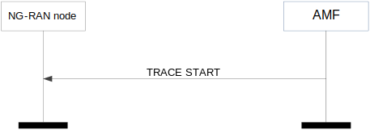
Figure 8.11.1.2-1: Trace start
The AMF initiates the procedure by sending a TRACE START message. Upon reception of the TRACE START message, the NG-RAN node shall initiate the requested trace session as described in TS 32.422 [11].
If the Trace Activation IE is included in the TRACE START message which includes the MDT Activation IE set to "Immediate MDT and Trace", the NG-RAN node shall, if supported, initiate the requested trace session and MDT session as described in TS 32.422 [11].
If the Trace Activation IE is included in the TRACE START message which includes the MDT Activation IE set to "Immediate MDT Only", "Logged MDT only", the NG-RAN node shall, if supported, initiate the requested MDT session as described in TS 32.422 [11] and the NG-RAN node shall ignore the Interfaces To Trace IE and the Trace Depth IE.
If the Trace Activation IE includes the MDT Location Information IE within the MDT Configuration IE, the NG-RAN node shall, if supported, store this information and take it into account in the requested MDT session.
If the Trace Activation IE is included in the TRACE START message which includes the MDT Activation IE set to "Immediate MDT Only", "Logged MDT only" and if the Signalling Based MDT PLMN List IE is included in the MDT Configuration IE, the NG-RAN node may use it to propagate the MDT Configuration as described in TS 37.320 [41].
If the Trace Activation IE includes the Bluetooth Measurement Configuration IE within the MDT Configuration IE, the NG-RAN node shall, if supported, take it into account for MDT Configuration as described in TS 37.320 [41].
If the Trace Activation IE includes the WLAN Measurement Configuration IE within the MDT Configuration IE, the NG-RAN node shall, if supported, take it into account for MDT Configuration as described in TS 37.320 [41].
If the Trace Activation IE includes the Sensor Measurement Configuration IE within the MDT Configuration IE, the NG-RAN node shall, if supported, take it into account for MDT Configuration as described in TS 37.320 [41].
If the Trace Activation IE includes the MDT Configuration IE and if the NG-RAN node is a gNB at least the MDT Configuration-NR IE shall be present, while if the NG-RAN node is an ng-eNB at least the MDT Configuration-EUTRA IE shall be present.
Interactions with other procedures:
If the NG-RAN node is not able to initiate the trace session due to ongoing handover of the UE to another NG-RAN node, the NG-RAN node shall initiate a Trace Failure Indication procedure with the appropriate cause value.
Void.
The purpose of the Trace Failure Indication procedure is to allow the NG-RAN node to inform the AMF that a Trace Start procedure or a Deactivate Trace procedure or an ongoing trace has failed due to an interaction with a handover procedure or due to reception of multiple trace activations while the UE is in RRC-INACTIVE. The procedure uses UE-associated signalling.
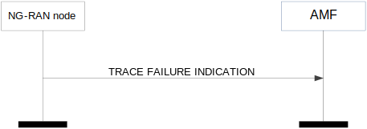
Figure 8.11.2.2-1: Trace failure indication
The NG-RAN node initiates the procedure by sending a TRACE FAILURE INDICATION message. Upon reception of the TRACE FAILURE INDICATION message, the AMF shall take appropriate actions based on the failure reason indicated by the Cause IE.
Void.
The purpose of the Deactivate Trace procedure is to allow the AMF to request the NG-RAN node to stop the trace session for the indicated trace reference. The procedure uses UE-associated signalling.
Figure 8.11.3.2-1: Deactivate trace
The AMF initiates the procedure by sending a DEACTIVATE TRACE message to the NG-RAN node as described in TS 32.422 [11]. Upon reception of the DEACTIVATE TRACE message, the NG-RAN node shall stop the trace session for the indicated trace reference in the NG-RAN Trace ID IE.
Interactions with other procedures:
If the NG-RAN node is not able to stop the trace session due to ongoing handover of the UE to another NG-RAN node, the NG-RAN node shall initiate a Trace Failure Indication procedure with the appropriate cause value.
Void.
The purpose of the Cell Traffic Trace procedure is to send the allocated Trace Recording Session Reference and the Trace Reference to the AMF. The procedure uses UE-associated signalling.
Figure 8.11.4.2-1: Cell traffic trace
The NG-RAN node initiates the procedure by sending a CELL TRAFFIC TRACE message.
If the Privacy Indicator IE is included in the message, the AMF shall take the information into account for anonymization of MDT data as described in TS 32.422 [11].
Void.
The purpose of the Location Reporting Control procedure is to allow the AMF to request the NG-RAN node to report the UE's current location, or the UE's last known location with time stamp, or the UE's presence in the area of interest while in CM-CONNECTED state as specified in TS 23.501 [9] and TS 23.502 [10]. The procedure uses UE-associated signalling.
Figure 8.12.1.2-1: Location reporting control
The AMF initiates the procedure by sending a LOCATION REPORTING CONTROL message to the NG-RAN node. On receipt of the LOCATION REPORTING CONTROL message the NG-RAN node shall perform the requested location reporting control action for the UE.
The Location Reporting Request Type IE indicates to the NG-RAN node whether:
- to report directly;
- to report upon change of serving cell;
- to report UE presence in the area of interest;
- to stop reporting at change of serving cell;
- to stop reporting UE presence in the area of interest;
- to cancel location reporting for the UE.
If the Area Of Interest List IE is included in the Location Reporting Request Type IE in the LOCATION REPORTING CONTROL message, the NG-RAN node shall store this information and use it to track the UE's presence in the area of interest as defined in TS 23.502 [10].
NOTE: The NG-RAN reports the UE presence for all set of Location Reporting Reference IDs for inter-NG-RAN node handover.
If the Additional Location Information IE is included in the LOCATION REPORTING CONTROL message and set to "Include PSCell” then, if Dual Connectivity is activated, the NG-RAN node shall include the current PSCell in the report. If a report upon change of serving cell is requested, the NG-RAN node shall provide the report also whenever the UE changes the PSCell, and when Dual Connectivity is activated.
If reporting upon change of serving cell is requested, the NG-RAN node shall send a report immediately and shall send a report whenever the UE’s location changes.
Interactions with Location Reporting Failure Indication procedure:
If the NG-RAN node receives a LOCATION REPORTING CONTROL message containing several Location Reporting Reference ID IE set to the same value, the NG-RAN node shall send the LOCATION REPORTING FAILURE INDICATION message with an appropriate cause value.
The purpose of the Location Reporting Failure Indication procedure is to allow the NG-RAN node to inform the AMF that the location reporting request contained in the Location Reporting Control procedure, the Handover Resource Allocation procedure or the Initial Context Setup procedure has failed. The procedure uses UE-associated signalling.
Figure 8.12.2.2-1: Location reporting failure indication
The NG-RAN node initiates the procedure by sending a LOCATION REPORTING FAILURE INDICATION message to the AMF. Upon reception of the LOCATION REPORTING FAILURE INDICATION message the AMF shall, based on the failure reason indicated by the Cause IE, take appropriate action.
Void.
The purpose of the Location Report procedure is to provide the UE's current location, the UE's last known location with time stamp, or the UE's presence in the area of interest to the AMF. The procedure uses UE-associated signalling.
Figure 8.12.3.2-1: Location report
The NG-RAN node initiates the procedure by sending a LOCATION REPORT message to the AMF. The LOCATION REPORT message may be used as a response to the LOCATION REPORTING CONTROL message.
Void.
The purpose of the UE TNLA Binding Release procedure is to request the NG-RAN node to release the NGAP UE TNLA binding, while requesting the NG-RAN node to maintain NG-U (user plane connectivity) and UE context information as specified in TS 23.502 [10]. The procedure uses UE-associated signalling.
Figure 8.13.1.2-1: UE TNLA binding release request
At reception of the UE TNLA BINDING RELEASE REQUEST message, the NG-RAN node shall release the UE TNLA binding for the UE indicated in the UE TNLA BINDING RELEASE REQUEST message. The NG-RAN node shall keep the NG-U (user plane connectivity) and UE context information for the UE, and behave according to TS 23.502 [10].
Void.
The purpose of the UE Radio Capability Info Indication procedure is to enable the NG-RAN node to provide to the AMF UE radio capability-related information. The procedure uses UE-associated signalling.
Figure 8.14.1.2-1: UE radio capability info indication
The NG-RAN node controlling a UE-associated logical NG connection initiates the procedure by sending a UE RADIO CAPABILITY INFO INDICATION message to the AMF including the UE radio capability information.
The UE RADIO CAPABILITY INFO INDICATION message may also include paging specific UE radio capability information within the UE Radio Capability for Paging IE. If the UE Radio Capability for Paging IE includes the UE Radio Capability for Paging of NR IE and the UE Radio Capability for Paging of E-UTRA IE, the AMF shall, if supported, use it as specified in TS 23.501 [9].
The UE radio capability information received by the AMF shall replace previously stored corresponding UE radio capability information in the AMF for the UE, as described in TS 23.501 [9].
If the UE RADIO CAPABILITY INFO INDICATION message includes the UE Radio Capability – E-UTRA Format IE, the AMF shall, if supported, use it as specified in TS 23.501 [9].
Void.
The purpose of the UE Radio Capability Check procedure is for the AMF to request the NG-RAN node to derive and provide an indication to the AMF on whether the UE radio capabilities are compatible with the network configuration for IMS voice. The procedure uses UE-associated signalling.
Figure 8.14.2.2-1: UE radio capability check procedure: successful operation
The AMF initiates the procedure by sending a UE RADIO CAPABILITY CHECK REQUEST message. If the UE-associated logical NG-connection is not established, the AMF shall allocate a unique AMF UE NGAP ID to be used for the UE and include the AMF UE NGAP ID IE in the UE RADIO CAPABILITY CHECK REQUEST message; by receiving the AMF UE NGAP ID IE in the UE RADIO CAPABILITY CHECK REQUEST message, the NG-RAN node establishes the UE-associated logical NG-connection.
Upon receipt of the UE RADIO CAPABILITY CHECK REQUEST message, the NG-RAN node checks whether the UE radio capabilities are compatible with the network configuration for IMS voice, and responds with a UE RADIO CAPABILITY CHECK RESPONSE message, as defined in TS 23.502 [10].
If the UE Radio Capability IE is contained in the UE RADIO CAPABILITY CHECK REQUEST message, the NG-RAN node shall use it to determine the value of the IMS Voice Support Indicator IE to be included in the UE RADIO CAPABILITY CHECK RESPONSE message.
If the UE RADIO CAPABILITY CHECK REQUEST message contains the UE Radio Capability ID IE, the NG-RAN node shall, if supported, use it as specified in TS 23.501 [9] and TS 23.502 [10].
Not applicable.
Void.
The purpose of the UE Radio Capability ID Mapping procedure is for the NG-RAN node to request from the AMF UE Radio Capability information mapped to the UE Radio Capability ID.
The procedure uses non UE-associated signalling.
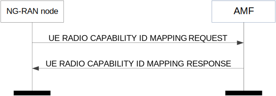
Figure 8.14.3.2-1: UE Radio Capability ID Mapping procedure: successful operation
The NG-RAN node initiates the procedure by sending a UE RADIO CAPABILITY ID MAPPING REQUEST message.
Upon receipt of the UE RADIO CAPABILITY ID MAPPING REQUEST message, the AMF shall provide within the UE RADIO CAPABILITY ID MAPPING RESPONSE message the UE Radio Capability information mapped to the UE Capability ID indicated in the UE RADIO CAPABILITY ID MAPPING REQUEST message.
Not applicable.
Void.
The purpose of the Secondary RAT Data Usage Report procedure is to provide information on the used resources of the secondary RAT (e.g. NR resources during MR-DC operation) as specified in TS 23.501 [9]. The procedure uses UE-associated signalling.
Figure 8.15.1.2-1: Secondary RAT data usage report
The NG-RAN node initiates the procedure by sending the SECONDARY RAT DATA USAGE REPORT message to the AMF.
If the Handover Flag IE is included in the SECONDARY RAT DATA USAGE REPORT message, it indicates that for each PDU session the AMF should buffer the Secondary RAT Data Usage Report Transfer IE since the secondary RAT data usage report is sent due to handover as defined in TS 23.502 [10].
For each PDU session for which the Secondary RAT Usage Information List IE is included in the the Secondary RAT Data Usage Transfer IE, the SMF shall handle this information as specified in TS 23.502 [10].
The NG-RAN node shall, if supported, report in the SECONDARY RAT DATA USAGE REPORT message location information of the UE in the User Location Information IE.
Void.
The purpose of the Uplink RIM Information Transfer procedure is to transfer RIM information from the NG-RAN node to the AMF. The AMF does not interpret the transferred RIM information. This procedure uses non-UE associated signalling.
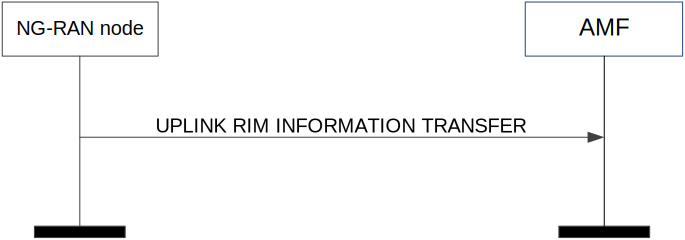
Figure 8.16.1.2-1: Uplink RIM Information Transfer
The NG-RAN node initiates the procedure by sending an UPLINK RIM INFORMATION TRANSFER message to the AMF.
Upon reception of the UPLINK RIM INFORMATION TRANSFER message, the AMF shall transparently transfer it towards the NG-RAN node indicated in the Target RAN Node ID IE.
Void.
The purpose of the Downlink RIM Information Transfer procedure is to transfer RIM information from the AMF to the NG-RAN node. This procedure uses non-UE associated signalling.
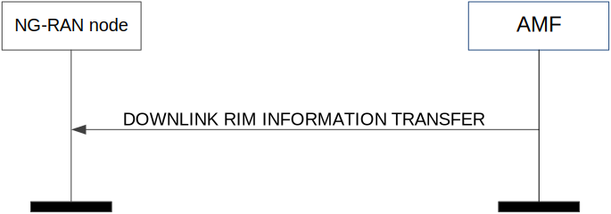
Figure 8.16.2.2-1: Downlink RIM Information Transfer
The AMF initiates the procedure by sending a DOWNLINK RIM INFORMATION TRANSFER message to the NG-RAN node. The NG-RAN node may use the RIM information in the received DOWNLINK RIM INFORMATION TRANSFER message for executing the RIM functionality, as specified in TS 38.300 [8].
Void.
The purpose of the Broadcast Session Setup procedure is to request the NG-RAN node to setup MBS session resources for a broadcast MBS session. The procedure uses non-UE associated signalling.
Figure 8.17.1.2-1: Broadcast Session Setup, successful operation.
The AMF initiates the procedure by sending a BROADCAST SESSION SETUP REQUEST message to the NG-RAN node. If the NG-RAN node accepts all the MBS QoS flows in the MBS session at least in one of its cells, the NG-RAN node responds with the BROADCAST SESSION SETUP RESPONSE message.
If the MBS Service Area IE is included in the BROADCAST SESSION SETUP REQUEST message, the NG-RAN node shall take it into account as specified in TS 23.247 [44].
If the MBS Session FSA ID List IE is included in the BROADCAST SESSION SETUP REQUEST message, the NG-RAN node shall take it into account to determine cells/frequencies within the MBS service area to broadcast MBS session data as specified in TS 23.247 [44].
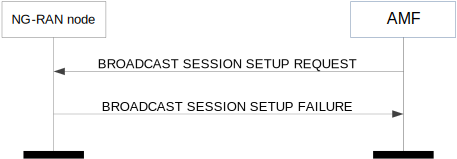
Figure 8.17.1.3-1: Broadcast Session Setup, unsuccessful operation.
If the NG-RAN node is not able to provide the requested MBS session resources for all the MBS QoS flows in the MBS session in any of its cells, it shall send the BROADCAST SESSION SETUP FAILURE message.
Void.
The purpose of the Broadcast Session Modification procedure is to request the NG-RAN node to update the MBS session resources or the area related to a previously established broadcast MBS session. The procedure uses non-UE associated signalling.
Figure 8.17.2.2-1: Broadcast Session Modification, successful operation.
The AMF initiates the procedure by sending a BROADCAST SESSION MODIFICATION REQUEST message to the NG-RAN node.
If the MBS Service Area IE is included in the BROADCAST SESSION MODIFICATION REQUEST message, the NG-RAN node shall update the MBS service area and send the BROADCAST SESSION MODIFICATION RESPONSE message.
If the MBS Session Modification Request Transfer IE is included in the BROADCAST SESSION MODIFICATION REQUEST message, the NG-RAN node shall replace the previously provided information by the newly received one and update the MBS session resources and area as requested and send the BROADCAST SESSION MODIFICATION RESPONSE message.
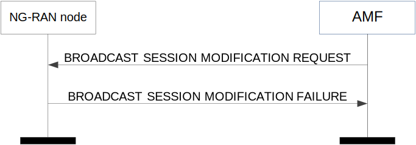
Figure 8.17.2.3-1: Broadcast Session Modification, unsuccessful operation.
If the NG-RAN node fails to update any requested modification, the NG-RAN node shall send the BROADCAST SESSION MODIFICATION FAILURE message.
Void.
The purpose of the Broadcast Session Release procedure is to release the MBS session resources related to a previously established broadcast MBS session. The procedure uses non-UE assocated signalling.
Figure 8.17.3.2-1: Broadcast Session Release, successful operation.
The AMF initiates the procedure by sending a BROADCAST SESSION RELEASE REQUEST message to the NG-RAN node.
Upon reception of the BROADCAST SESSION RELEASE REQUEST message, the NG-RAN node shall respond with the BROADCAST SESSION RELEASE RESPONSE message. The NG-RAN node node shall stop broadcasting and release all MBS session resources associated with the broadcast session.
Upon reception of the BROADCAST SESSION RELEASE RESPONSE message, the AMF shall transfer transparently the Broadcast Session Release Response Transfer IE, if available, to the MB-SMF.
Not applicable.
Void.
The purpose of the Broadcast Session Release Required procedure is to trigger the AMF to release the MBS session resources related to a previously established broadcast MBS session. The procedure uses non-UE associated signalling.
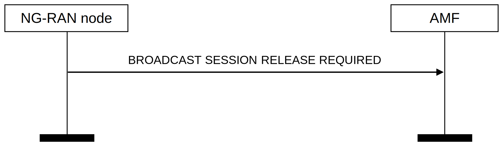
Figure 8.17.4.2-1: Broadcast Session Release Required, successful operation.
The NG-RAN node initiates the procedure by sending a BROADCAST SESSION RELEASE REQUIRED message to the AMF.
Upon reception of the BROADCAST SESSION RELEASE REQUIRED message, the AMF shall realize that the NG-RAN node is lacking adequate MBS session resources for a previously established broadcast MBS session and initiate the release of the MBS session resources.
Void.
The purpose of the Distribution Setup procedure is to assign NG-U resources for a multicast MBS session. The procedure uses non-UE-associated signalling.
Figure 8.18.1.2-1: Distribution Setup, successful operation.
The NG-RAN node initiates the procedure by sending a DISTRIBUTION SETUP REQUEST message to the AMF. The AMF responds with a DISTRIBUTION SETUP RESPONSE message.
For location dependent multicast sessions, the NG-RAN node shall include the MBS Area Session ID IE in the DISTRIBUTION SETUP REQUEST message, and the AMF shall provide the same value of the MBS Area Session ID IE in the DISTRIBUTION SETUP RESPONSE message.
If the Shared NG-U Unicast TNL Information IE is included in the MBS Distribution Setup Request Transfer IE in the DISTRIBUTION SETUP REQUEST message, the MB-SMF shall use the included information as the downlink termination point for the shared NG-U transport.
If the Shared NG-U Unicast TNL Information IE is not included in the MBS Distribution Setup Request Transfer IE in the DISTRIBUTION SETUP REQUEST message, the MB-SMF shall interpret that the IP multicast is used for this shared NG-U transport, and include the Shared NG-U Multicast TNL Information IE in the MBS Distribution Setup Response Transfer IE in the DISTRIBUTION SETUP RESPONSE message.
Figure 8.18.1.3-1: Distribution Setup, unsuccessful operation.
In case the shared NG-U transport cannot be setup successfully, the AMF shall respond with the DISTRIBUTION SETUP FAILURE message to the NG-RAN node with an appropriate cause value.
Void.
The purpose of the Distribution Release procedure is to enable the release of already established NG-U resources for a given multicast MBS session, or for a given area session of the multicast MBS session. The procedure uses non-UE-associated signalling.
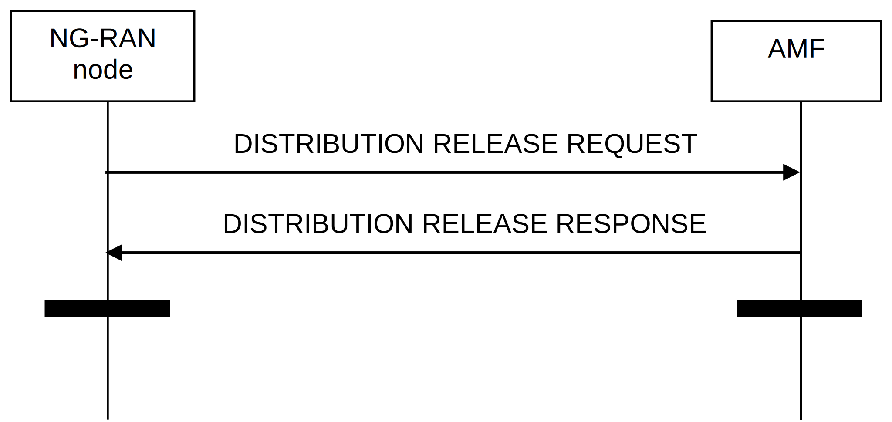
Figure 8.18.2.2-1: Distribution Release, successful operation.
The NG-RAN node initiates the procedure by sending a DISTRIBUTION RELEASE REQUEST message.
Upon receipt of the DISTRIBUTION RELEASE REQUEST message, the AMF shall send the DISTRIBUTION RELEASE RESPONSE message after successfully removing the corresponding NG-U resource for the MBS session.
For location dependent multicast session, the NG-RAN node shall include the MBS Area Session ID IE in the DISTRIBUTION RELEASE REQUEST message, and the AMF shall provide the same value of the MBS Area Session ID IE in the DISTRIBUTION RELEASE RESPONSE message.
If unicast shared NG-U transport is used, the NG-RAN node shall include the Shared NG-U TNL Information IE in the MBS Distribution Release Request Transfer IE in the DISTRIBUTION RELEASE REQUEST message, and the MB-SMF shall release the corresponding shared NG-U transport as specified in TS 23.247 [44].
Not applicable.
Void.
The purpose of the Multicast Session Activation procedure is to request a NG-RAN node to activate the MBS session resources of a multicast MBS session. The procedure uses non-UE-associated signalling.
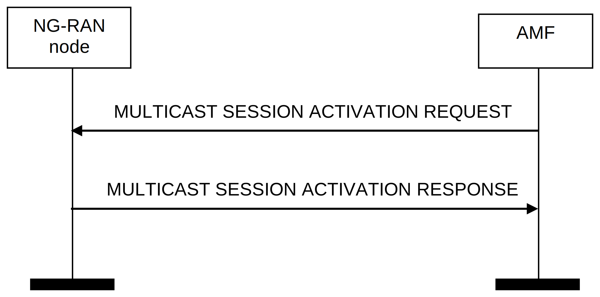
Figure 8.18.3.2-1: Multicast Session Activation, successful operation.
The AMF initiates the procedure by sending a MULTICAST SESSION ACTIVATION REQUEST message to the NG-RAN node.
Upon receipt of the MULTICAST SESSION ACTIVATION REQUEST, the NG-RAN node activates the previously requested MBS session resources corresponding to the MBS session indicated in the MULTICAST SESSION ACTIVATION REQUEST message and indicates in the MULTICAST SESSION ACTIVATION RESPONSE message for which MBS session the request was fulfilled.
Figure 8.18.3.3-1: Multicast Session Activation, unsuccessful operation.
If the NG-RAN node cannot activate the previously requested MBS session resources indicated by the MULTICAST SESSION ACTIVATION REQUEST message, it shall respond with a MULTICAST SESSION ACTIVATION FAILURE message with an appropriate cause value.
Void.
The purpose of the Multicast Session Deactivation procedure is to request a NG-RAN node to deactivate the multicast MBS session resources of one MBS session. The procedure uses non-UE-associated signalling.

Figure 8.18.4.2-1: Multicast Session Deactivation, successful operation.
The AMF initiates the procedure by sending a MULTICAST SESSION DEACTIVATION REQUEST message to the NG-RAN node.
Upon receipt of this message, the NG-RAN node shall deactivate the previously requested MBS session resources corresponding to the MBS session indicated in the MULTICAST SESSION DEACTIVATION REQUEST message if the MBS resources are active and shall indicate in the MULTICAST SESSION DEACTIVATION RESPONSE message for which MBS session the request was fulfilled.
Not applicable.
Void.
The purpose of the Multicast Session Update procedure is to request the NG-RAN node to update the NG-RAN MBS session resources or area related to a multicast MBS session. The procedure uses non-UE associated signalling.
Figure 8.18.5.2-1: Multicast Session Update, successful operation.
The AMF initiates the procedure by sending a MULTICAST SESSION UPDATE REQUEST message to the NG-RAN node.
Upon receipt of the MULTICAST SESSION UPDATE REQUEST message, the NG-RAN node shall, if requested, update the MBS QoS profile and/or MBS Service Area for the multicast service and send the MULTICAST SESSION UPDATE RESPONSE message to the AMF.
For location dependent multicast session, the AMF shall include the MBS Area Session ID IE in the MULTICAST SESSION UPDATE REQUEST message, and the NG-RAN node shall provide the same value of the MBS Area Session ID IE in the MULTICAST SESSION UPDATE RESPONSE message.
In case the MBS Service Area Information IE is included in the Multicast Session Update Request Transfer IE in the MULTICAST SESSION UPDATE REQUEST message, the NG-RAN node shall update the stored MBS Service Area Information for that service, as specified in TS 23.247 [44].
In case the MBS QoS Flows To Be Setup or Modify List IE is included in the Multicast Session Update Request Transfer IE in the MULTICAST SESSION UPDATE REQUEST message, the NG-RAN node shall setup or modify the MBS QoS profile accordingly.
In case the MBS QoS Flows To Be Release List IE is included in the Multicast Session Update Request Transfer IE in the MULTICAST SESSION UPDATE REQUEST message, the NG-RAN node shall release the indicated MBS QoS flows.
In case the MBS Session TNL Information 5GC IE is included in the Multicast Session Update Request Transfer IE in the MULTICAST SESSION UPDATE REQUEST message, the NG-RAN node shall take the information into account and update related NG-U resources.
Figure 8.18.5.3-1: Multicast Session Update, unsuccessful operation.
If the NG-RAN node is not able to perform any of the requested update, it shall respond with a MULTICAST SESSION UPDATE FAILURE message with an appropriate cause value.
Void.
Subclauses 9.2 and 9.3 present the NGAP message and IE definitions in tabular format. The corresponding ASN.1 definition is presented in subclause 9.4. In case there is contradiction between the tabular format and the ASN.1 definition, the ASN.1 shall take precedence, except for the definition of conditions for the presence of conditional IEs, where the tabular format shall take precedence.
The messages have been defined in accordance to the guidelines specified in TR 25.921 [7].
When specifying IEs which are to be represented by bitstrings, if not otherwise specifically stated in the semantics description of the concerned IE or elsewhere, the following principle applies with regards to the ordering of bits:
- The first bit (leftmost bit) contains the most significant bit (MSB);
- The last bit (rightmost bit) contains the least significant bit (LSB);
- When importing bitstrings from other specifications, the first bit of the bitstring contains the first bit of the concerned information;
All IEs are marked mandatory, optional or conditional according to table 9.1.1-1.
Table 9.1.1-1: Meaning of content within "Presence" column
| Abbreviation | Meaning |
| M | IEs marked as Mandatory (M) shall always be included in the message. |
| O | IEs marked as Optional (O) may or may not be included in the message. |
| C | IEs marked as Conditional (C) shall be included in a message only if the condition is satisfied. Otherwise the IE shall not be included. |
Each IE or group of IEs may have criticality information applied to it according to table 9.1.2-1.
Table 9.1.2-1: Meaning of content within "Criticality" column
| Abbreviation | Meaning |
| – | No criticality information is applied explicitly. |
| YES | Criticality information is applied. This is usable only for non-repeatable IEs |
| GLOBAL | The IE and all its repetitions together have one common criticality information. This is usable only for repeatable IEs. |
| EACH | Each repetition of the IE has its own criticality information. It is not allowed to assign different criticality values to the repetitions. This is usable only for repeatable IEs. |
The Range column indicates the allowed number of copies of repetitive IEs/IE groups.
The Assigned Criticality column provides the actual criticality information as defined in subclause 10.3.2, if applicable.
This message is sent by the AMF and is used to request the NG-RAN node to assign resources on Uu and NG-U for one or several PDU session resources.
Direction: AMF → NG-RAN node
| IE/Group Name | Presence | Range | IE type and reference | Semantics description | Criticality | Assigned Criticality |
| Message Type | M | 9.3.1.1 | YES | reject | ||
| AMF UE NGAP ID | M | 9.3.3.1 | YES | reject | ||
| RAN UE NGAP ID | M | 9.3.3.2 | YES | reject | ||
| RAN Paging Priority | O | 9.3.3.15 | YES | ignore | ||
| NAS-PDU | O | 9.3.3.4 | YES | reject | ||
| PDU Session Resource Setup Request List | 1 | YES | reject | |||
|
1..<maxnoofPDUSessions> | - | ||||
|
M | 9.3.1.50 | - | |||
|
O | NAS-PDU 9.3.3.4 |
- | |||
|
M | 9.3.1.24 | - | |||
|
M | OCTET STRING | Containing the PDU Session Resource Setup Request Transfer IE specified in subclause 9.3.4.1. | - | ||
|
O | Expected UE Activity Behaviour 9.3.1.94 |
Expected UE Activity Behaviour for the PDU Session. | YES | ignore | |
| UE Aggregate Maximum Bit Rate | O | 9.3.1.58 | YES | ignore | ||
| UE Slice Maximum Bit Rate List | O | 9.3.1.231 | YES | ignore |
| Range bound | Explanation |
| maxnoofPDUSessions | Maximum no. of PDU sessions allowed towards one UE. Value is 256. |
This message is sent by the NG-RAN node as a response to the request to assign resources on Uu and NG-U for one or several PDU session resources.
Direction: NG-RAN node → AMF
| IE/Group Name | Presence | Range | IE type and reference | Semantics description | Criticality | Assigned Criticality |
|---|---|---|---|---|---|---|
| Message Type | M | 9.3.1.1 | YES | reject | ||
| AMF UE NGAP ID | M | 9.3.3.1 | YES | ignore | ||
| RAN UE NGAP ID | M | 9.3.3.2 | YES | ignore | ||
| PDU Session Resource Setup Response List | 0..1 | YES | ignore | |||
|
1..<maxnoofPDUSessions> | - | ||||
|
M | 9.3.1.50 | - | |||
|
M | OCTET STRING | Containing the PDU Session Resource Setup Response Transfer IE specified in subclause 9.3.4.2. | - | ||
| PDU Session Resource Failed to Setup List | 0..1 | YES | ignore | |||
|
1..<maxnoofPDUSessions> | - | ||||
|
M | 9.3.1.50 | - | |||
|
M | OCTET STRING | Containing the PDU Session Resource Setup Unsuccessful Transfer IE specified in subclause 9.3.4.16. | - | ||
| Criticality Diagnostics | O | 9.3.1.3 | YES | ignore | ||
| User Location Information | O | 9.3.1.16 | YES | ignore |
| Range bound | Explanation |
| maxnoofPDUSessions | Maximum no. of PDU sessions allowed towards one UE. Value is 256. |
This message is sent by the AMF and is used to request the NG-RAN node to release already established PDU session resources for a given UE.
Direction: AMF → NG-RAN node
| IE/Group Name | Presence | Range | IE type and reference | Semantics description | Criticality | Assigned Criticality |
| Message Type | M | 9.3.1.1 | YES | reject | ||
| AMF UE NGAP ID | M | 9.3.3.1 | YES | reject | ||
| RAN UE NGAP ID | M | 9.3.3.2 | YES | reject | ||
| RAN Paging Priority | O | 9.3.3.15 | YES | ignore | ||
| NAS-PDU | O | 9.3.3.4 | YES | ignore | ||
| PDU Session Resource to Release List | 1 | YES | reject | |||
|
1..<maxnoofPDUSessions> | - | ||||
|
M | 9.3.1.50 | - | |||
|
M | OCTET STRING | Containing the PDU Session Resource Release Command Transfer IE specified in subclause 9.3.4.12. | - |
| Range bound | Explanation |
| maxnoofPDUSessions | Maximum no. of PDU sessions allowed towards one UE. Value is 256. |
This message is sent by the NG-RAN node as a response to the request to release already established PDU session resources for a given UE.
Direction: NG-RAN node → AMF
| IE/Group Name | Presence | Range | IE type and reference | Semantics description | Criticality | Assigned Criticality |
|---|---|---|---|---|---|---|
| Message Type | M | 9.3.1.1 | YES | reject | ||
| AMF UE NGAP ID | M | 9.3.3.1 | YES | ignore | ||
| RAN UE NGAP ID | M | 9.3.3.2 | YES | ignore | ||
| PDU Session Resource Released List | 1 | YES | ignore | |||
|
1..<maxnoofPDUSessions> | - | ||||
|
M | 9.3.1.50 | - | |||
|
M | OCTET STRING | Containing the PDU Session Resource Release Response Transfer IE specified in subclause 9.3.4.21. | - | ||
| User Location Information | O | 9.3.1.16 | YES | ignore | ||
| Criticality Diagnostics | O | 9.3.1.3 | YES | ignore |
This message is sent by the AMF and is used to request the NG-RAN node to enable modifications of already established PDU session resources for a given UE.
Direction: AMF → NG-RAN node
| IE/Group Name | Presence | Range | IE type and reference | Semantics description | Criticality | Assigned Criticality |
| Message Type | M | 9.3.1.1 | YES | reject | ||
| AMF UE NGAP ID | M | 9.3.3.1 | YES | reject | ||
| RAN UE NGAP ID | M | 9.3.3.2 | YES | reject | ||
| RAN Paging Priority | O | 9.3.3.15 | YES | ignore | ||
| PDU Session Resource Modify Request List | 1 | YES | reject | |||
|
1..<maxnoofPDUSessions> | - | ||||
|
M | 9.3.1.50 | - | |||
|
O | 9.3.3.4 | - | |||
|
M | OCTET STRING | Containing the PDU Session Resource Modify Request Transfer IE specified in subclause 9.3.4.3. | - | ||
|
O | 9.3.1.24 | YES | reject | ||
|
O | Expected UE Activity Behaviour 9.3.1.94 |
Expected UE Activity Behaviour for the PDU Session. | YES | ignore |
| Range bound | Explanation |
| maxnoofPDUSessions | Maximum no. of PDU sessions allowed towards one UE. Value is 256. |
This message is sent by the NG-RAN node and is used to report the outcome of the request from the PDU SESSION RESOURCE MODIFY REQUEST message.
Direction: NG-RAN node → AMF
| IE/Group Name | Presence | Range | IE type and reference | Semantics description | Criticality | Assigned Criticality |
| Message Type | M | 9.3.1.1 | YES | reject | ||
| AMF UE NGAP ID | M | 9.3.3.1 | YES | ignore | ||
| RAN UE NGAP ID | M | 9.3.3.2 | YES | ignore | ||
| PDU Session Resource Modify Response List | 0..1 | YES | ignore | |||
|
1..<maxnoofPDUSessions> | - | ||||
|
M | 9.3.1.50 | - | |||
|
M | OCTET STRING | Containing the PDU Session Resource Modify Response Transfer IE specified in subclause 9.3.4.4. | - | ||
| PDU Session Resource Failed to Modify List | 0..1 | YES | ignore | |||
|
1..<maxnoofPDUSessions> | - | ||||
|
M | 9.3.1.50 | - | |||
|
M | OCTET STRING | Containing the PDU Session Resource Modify Unsuccessful Transfer IE specified in subclause 9.3.4.17. | - | ||
| User Location Information | O | 9.3.1.16 | YES | ignore | ||
| Criticality Diagnostics | O | 9.3.1.3 | YES | ignore |
| Range bound | Explanation |
| maxnoofPDUSessions | Maximum no. of PDU sessions allowed towards one UE. Value is 256. |
This message is sent by the NG-RAN node to notify that the QoS requirements of already established GBR QoS flow(s) for which notification control has been requested are either not fulfilled anymore or fulfilled again by the NG-RAN node. This message can also be sent by the NG-RAN node to notify that PDU session resource(s) for a given UE are released.
Direction: NG-RAN node → AMF
| IE/Group Name | Presence | Range | IE type and reference | Semantics description | Criticality | Assigned Criticality |
| Message Type | M | 9.3.1.1 | YES | ignore | ||
| AMF UE NGAP ID | M | 9.3.3.1 | YES | reject | ||
| RAN UE NGAP ID | M | 9.3.3.2 | YES | reject | ||
| PDU Session Resource Notify List | 0..1 | YES | reject | |||
|
1..<maxnoofPDUSessions> | - | ||||
|
M | 9.3.1.50 | - | |||
|
M | OCTET STRING | Containing the PDU Session Resource Notify Transfer IE specified in subclause 9.3.4.5. | - | ||
| PDU Session Resource Released List | 0..1 | YES | ignore | |||
|
1..<maxnoofPDUSessions> | - | ||||
|
M | 9.3.1.50 | - | |||
|
M | OCTET STRING | Containing the PDU Session Resource Notify Released Transfer IE specified in subclause 9.3.4.13. | - | ||
| User Location Information | O | 9.3.1.16 | YES | ignore |
| Range bound | Explanation |
| maxnoofPDUSessions | Maximum no. of PDU sessions allowed towards one UE. Value is 256. |
This message is sent by the NG-RAN node and is used to request the AMF to enable modifications of already established PDU session resources for a given UE.
Direction: NG-RAN node → AMF
| IE/Group Name | Presence | Range | IE type and reference | Semantics description | Criticality | Assigned Criticality |
| Message Type | M | 9.3.1.1 | YES | reject | ||
| AMF UE NGAP ID | M | 9.3.3.1 | YES | reject | ||
| RAN UE NGAP ID | M | 9.3.3.2 | YES | reject | ||
| PDU Session Resource Modify Indication List | 1 | YES | reject | |||
|
1..<maxnoofPDUSessions> | - | ||||
|
M | 9.3.1.50 | - | |||
|
M | OCTET STRING | Containing the PDU Session Resource Modify Indication Transfer IE specified in subclause 9.3.4.6. | - | ||
| User Location Information | O | 9.3.1.16 | YES | ignore |
| Range bound | Explanation |
| maxnoofPDUSessions | Maximum no. of PDU sessions allowed towards one UE. Value is 256. |
This message is sent by the AMF and is used to confirm the outcome of the request from the PDU SESSION RESOURCE MODIFY INDICATION message.
Direction: AMF → NG-RAN node
| IE/Group Name | Presence | Range | IE type and reference | Semantics description | Criticality | Assigned Criticality |
| Message Type | M | 9.3.1.1 | YES | reject | ||
| AMF UE NGAP ID | M | 9.3.3.1 | YES | ignore | ||
| RAN UE NGAP ID | M | 9.3.3.2 | YES | ignore | ||
| PDU Session Resource Modify Confirm List | 0..1 | YES | ignore | |||
|
1..<maxnoofPDUSessions> | - | ||||
|
M | 9.3.1.50 | - | |||
|
M | OCTET STRING | Containing the PDU Session Resource Modify Confirm Transfer IE specified in subclause 9.3.4.7. | - | ||
| PDU Session Resource Failed to Modify List | 0..1 | YES | ignore | |||
|
1..<maxnoofPDUSessions> | - | ||||
|
M | 9.3.1.50 | - | |||
|
M | OCTET STRING | Containing the PDU Session Resource Modify Indication Unsuccessful Transfer IE specified in subclause 9.3.4.22. | - | ||
| Criticality Diagnostics | O | 9.3.1.3 | YES | ignore |
| Range bound | Explanation |
| maxnoofPDUSessions | Maximum no. of PDU sessions allowed towards one UE. Value is 256. |
This message is sent by the AMF to request the setup of a UE context.
Direction: AMF → NG-RAN node
| IE/Group Name | Presence | Range | IE type and reference | Semantics description | Criticality | Assigned Criticality |
| Message Type | M | 9.3.1.1 | YES | reject | ||
| AMF UE NGAP ID | M | 9.3.3.1 | YES | reject | ||
| RAN UE NGAP ID | M | 9.3.3.2 | YES | reject | ||
| Old AMF | O | AMF Name 9.3.3.21 |
YES | reject | ||
| UE Aggregate Maximum Bit Rate | C-ifPDUsessionResourceSetup | 9.3.1.58 | YES | reject | ||
| Core Network Assistance Information for RRC INACTIVE | O | 9.3.1.15 | YES | ignore | ||
| GUAMI | M | 9.3.3.3 | YES | reject | ||
| PDU Session Resource Setup Request List | 0..1 | YES | reject | |||
|
1..<maxnoofPDUSessions> | - | ||||
|
M | 9.3.1.50 | - | |||
|
O | NAS-PDU 9.3.3.4 |
- | |||
|
M | 9.3.1.24 | - | |||
|
M | OCTET STRING | Containing the PDU Session Resource Setup Request Transfer IE specified in subclause 9.3.4.1. | - | ||
|
O | Expected UE Activity Behaviour 9.3.1.94 |
Expected UE Activity Behaviour for the PDU Session. | YES | ignore | |
| Allowed NSSAI | M | 9.3.1.31 | Indicates the S-NSSAIs permitted by the network | YES | reject | |
| UE Security Capabilities | M | 9.3.1.86 | YES | reject | ||
| Security Key | M | 9.3.1.87 | YES | reject | ||
| Trace Activation | O | 9.3.1.14 | YES | ignore | ||
| Mobility Restriction List | O | 9.3.1.85 | YES | ignore | ||
| UE Radio Capability | O | 9.3.1.74 | YES | ignore | ||
| Index to RAT/Frequency Selection Priority | O | 9.3.1.61 | YES | ignore | ||
| Masked IMEISV | O | 9.3.1.54 | YES | ignore | ||
| NAS-PDU | O | 9.3.3.4 | YES | ignore | ||
| Emergency Fallback Indicator | O | 9.3.1.26 | YES | reject | ||
| RRC Inactive Transition Report Request | O | 9.3.1.91 | YES | ignore | ||
| UE Radio Capability for Paging | O | 9.3.1.68 | YES | ignore | ||
| Redirection for Voice EPS Fallback | O | 9.3.1.116 | YES | ignore | ||
| Location Reporting Request Type | O | 9.3.1.65 | YES | ignore | ||
| CN Assisted RAN Parameters Tuning | O | 9.3.1.119 | YES | ignore | ||
| SRVCC Operation Possible | O | 9.3.1.128 | YES | ignore | ||
| IAB Authorized | O | 9.3.1.129 | YES | ignore | ||
| Enhanced Coverage Restriction | O | 9.3.1.140 | YES | ignore | ||
| Extended Connected Time | O | 9.3.3.31 | YES | ignore | ||
| UE Differentiation Information | O | 9.3.1.144 | YES | ignore | ||
| NR V2X Services Authorized | O | 9.3.1.146 | YES | ignore | ||
| LTE V2X Services Authorized | O | 9.3.1.147 | YES | ignore | ||
| NR UE Sidelink Aggregate Maximum Bit Rate | O | 9.3.1.148 | This IE applies only if the UE is authorized for NR V2X services. | YES | ignore | |
| LTE UE Sidelink Aggregate Maximum Bit Rate | O | 9.3.1.149 | This IE applies only if the UE is authorized for LTE V2X services. | YES | ignore | |
| PC5 QoS Parameters | O | 9.3.1.150 | This IE applies only if the UE is authorized for NR V2X services. | YES | ignore | |
| CE-mode-B Restricted | O | 9.3.1.155 | YES | ignore | ||
| UE User Plane CIoT Support Indicator | O | 9.3.1.160 | YES | ignore | ||
| RG Level Wireline Access Characteristics | O | OCTET STRING | Specified in TS 23.316 [34]. Indicates the wireline access technology specific QoS information corresponding to a specific wireline access subscription. | YES | ignore | |
| Management Based MDT PLMN List | O | MDT PLMN List 9.3.1.168 |
YES | ignore | ||
| UE Radio Capability ID | O | 9.3.1.142 | YES | reject | ||
| Time Synchronisation Assistance Information | O | 9.3.1.220 | YES | ignore | ||
| QMC Configuration Information | O | 9.3.1.223 | YES | ignore | ||
| Target NSSAI Information | O | 9.3.1.229 | YES | ignore | ||
| UE Slice Maximum Bit Rate List | O | 9.3.1.231 | YES | ignore | ||
| 5G ProSe Authorized | O | 9.3.1.233 | YES | ignore | ||
| 5G ProSe UE PC5 Aggregate Maximum Bit Rate | O | NR UE Sidelink Aggregate Maximum Bit Rate 9.3.1.148 |
This IE applies only if the UE is authorized for 5G ProSe services. | YES | ignore | |
| 5G ProSe PC5 QoS Parameters | O | 9.3.1.234 | This IE applies only if the UE is authorized for 5G ProSe services. | YES | ignore |
| Range bound | Explanation |
| maxnoofPDUSessions | Maximum no. of PDU sessions allowed towards one UE. Value is 256. |
| Condition | Explanation |
| ifPDUsessionResourceSetup | This IE shall be present if the PDU Session Resource Setup List IE is present. |
This message is sent by the NG-RAN node to confirm the setup of a UE context.
Direction: NG-RAN node → AMF
| IE/Group Name | Presence | Range | IE type and reference | Semantics description | Criticality | Assigned Criticality |
| Message Type | M | 9.3.1.1 | YES | reject | ||
| AMF UE NGAP ID | M | 9.3.3.1 | YES | ignore | ||
| RAN UE NGAP ID | M | 9.3.3.2 | YES | ignore | ||
| PDU Session Resource Setup Response List | 0..1 | YES | ignore | |||
|
1..<maxnoofPDUSessions> | - | ||||
|
M | 9.3.1.50 | - | |||
|
M | OCTET STRING | Containing the PDU Session Resource Setup Response Transfer IE specified in subclause 9.3.4.2. | - | ||
| PDU Session Resource Failed to Setup List | 0..1 | YES | ignore | |||
|
1..<maxnoofPDUSessions> | - | ||||
|
M | 9.3.1.50 | - | |||
|
M | OCTET STRING | Containing the PDU Session Resource Setup Unsuccessful Transfer IE specified in subclause 9.3.4.16. | - | ||
| Criticality Diagnostics | O | 9.3.1.3 | YES | ignore |
| Range bound | Explanation |
| maxnoofPDUSessions | Maximum no. of PDU sessions allowed towards one UE. Value is 256. |
This message is sent by the NG-RAN node to indicate that the setup of the UE context was unsuccessful.
Direction: NG-RAN node → AMF
| IE/Group Name | Presence | Range | IE type and reference | Semantics description | Criticality | Assigned Criticality |
| Message Type | M | 9.3.1.1 | YES | reject | ||
| AMF UE NGAP ID | M | 9.3.3.1 | YES | ignore | ||
| RAN UE NGAP ID | M | 9.3.3.2 | YES | ignore | ||
| PDU Session Resource Failed to Setup List | 0..1 | YES | ignore | |||
|
1..<maxnoofPDUSessions> | - | ||||
|
M | 9.3.1.50 | - | |||
|
M | OCTET STRING | Containing the PDU Session Resource Setup Unsuccessful Transfer IE specified in subclause 9.3.4.16. | - | ||
| Cause | M | 9.3.1.2 | YES | ignore | ||
| Criticality Diagnostics | O | 9.3.1.3 | YES | ignore |
| Range bound | Explanation |
| maxnoofPDUSessions | Maximum no. of PDU sessions allowed towards one UE. Value is 256. |
This message is sent by the NG-RAN node to request the release of the UE-associated logical NG-connection over the NG interface.
Direction: NG-RAN node → AMF
| IE/Group Name | Presence | Range | IE type and reference | Semantics description | Criticality | Assigned Criticality |
| Message Type | M | 9.3.1.1 | YES | ignore | ||
| AMF UE NGAP ID | M | 9.3.3.1 | YES | reject | ||
| RAN UE NGAP ID | M | 9.3.3.2 | YES | reject | ||
| PDU Session Resource List | 0..1 | YES | reject | |||
|
1..<maxnoofPDUSessions> | - | ||||
|
M | 9.3.1.50 | - | |||
| Cause | M | 9.3.1.2 | YES | ignore |
| Range bound | Explanation |
| maxnoofPDUSessions | Maximum no. of PDU sessions allowed towards one UE. Value is 256. |
This message is sent by the AMF to request the release of the UE-associated logical NG-connection over the NG interface.
Direction: AMF → NG-RAN node
| IE/Group Name | Presence | Range | IE type and reference | Semantics description | Criticality | Assigned Criticality |
| Message Type | M | 9.3.1.1 | YES | reject | ||
| CHOICE UE NGAP IDs | M | YES | reject | |||
|
||||||
|
M | 9.3.3.1 | - | |||
|
M | 9.3.3.2 | - | |||
|
||||||
|
M | 9.3.3.1 | - | |||
| Cause | M | 9.3.1.2 | YES | ignore |
This message is sent by the NG-RAN node to confirm the release of the UE-associated logical NG-connection over the NG interface.
Direction: NG-RAN node → AMF
| IE/Group Name | Presence | Range | IE type and reference | Semantics description | Criticality | Assigned Criticality |
| Message Type | M | 9.3.1.1 | YES | reject | ||
| AMF UE NGAP ID | M | 9.3.3.1 | YES | ignore | ||
| RAN UE NGAP ID | M | 9.3.3.2 | YES | ignore | ||
| User Location Information | O | 9.3.1.16 | YES | ignore | ||
| Information on Recommended Cells and RAN Nodes for Paging | O | 9.3.1.100 | YES | ignore | ||
| PDU Session Resource List | 0..1 | YES | reject | |||
|
1..<maxnoofPDUSessions> | - | ||||
|
M | 9.3.1.50 | - | |||
|
O | OCTET STRING | Containing the PDU Session Resource Release Response Transfer IE specified in subclause 9.3.4.21. | YES | ignore | |
| Criticality Diagnostics | O | 9.3.1.3 | YES | ignore | ||
| Paging Assistance Data for CE Capable UE | O | 9.3.1.141 | YES | ignore |
| Range bound | Explanation |
| maxnoofPDUSessions | Maximum no. of PDU sessions allowed towards one UE. Value is 256. |
This message is sent by the AMF to provide UE Context information changes to the NG-RAN node.
Direction: AMF → NG-RAN node
| IE/Group Name | Presence | Range | IE type and reference | Semantics description | Criticality | Assigned Criticality |
| Message Type | M | 9.3.1.1 | YES | reject | ||
| AMF UE NGAP ID | M | 9.3.3.1 | YES | reject | ||
| RAN UE NGAP ID | M | 9.3.3.2 | YES | reject | ||
| RAN Paging Priority | O | 9.3.3.15 | YES | ignore | ||
| Security Key | O | 9.3.1.87 | YES | reject | ||
| Index to RAT/Frequency Selection Priority | O | 9.3.1.61 | YES | ignore | ||
| UE Aggregate Maximum Bit Rate | O | 9.3.1.58 | YES | ignore | ||
| UE Security Capabilities | O | 9.3.1.86 | YES | reject | ||
| Core Network Assistance Information for RRC INACTIVE | O | 9.3.1.15 | YES | ignore | ||
| Emergency Fallback Indicator | O | 9.3.1.26 | YES | reject | ||
| New AMF UE NGAP ID | O | AMF UE NGAP ID 9.3.3.1 |
YES | reject | ||
| RRC Inactive Transition Report Request | O | 9.3.1.91 | YES | ignore | ||
| New GUAMI | O | GUAMI 9.3.3.3 |
YES | reject | ||
| CN Assisted RAN Parameters Tuning | O | 9.3.1.119 | YES | ignore | ||
| SRVCC Operation Possible | O | 9.3.1.128 | YES | ignore | ||
| IAB Authorized | O | 9.3.1.129 | YES | ignore | ||
| NR V2X Services Authorized | O | 9.3.1.146 | YES | ignore | ||
| LTE V2X Services Authorized | O | 9.3.1.147 | YES | ignore | ||
| NR UE Sidelink Aggregate Maximum Bit Rate | O | 9.3.1.148 | This IE applies only if the UE is authorized for NR V2X services. | YES | ignore | |
| LTE UE Sidelink Aggregate Maximum Bit Rate | O | 9.3.1.149 | This IE applies only if the UE is authorized for LTE V2X services. | YES | ignore | |
| PC5 QoS Parameters | O | 9.3.1.150 | This IE applies only if the UE is authorized for NR V2X services. | YES | ignore | |
| UE Radio Capability ID | O | 9.3.1.142 | YES | reject | ||
| RG Level Wireline Access Characteristics | O | OCTET STRING | Specified in TS 23. 316 [34]. Indicates the wireline access technology specific QoS information corresponding to a specific wireline access subscription. | YES | ignore | |
| Time Synchronisation Assistance Information | O | 9.3.1.220 | YES | ignore | ||
| QMC Configuration Information | O | 9.3.1.223 | YES | ignore | ||
| QMC Deactivation | O | 9.3.1.222 | YES | ignore | ||
| UE Slice Maximum Bit Rate List | O | 9.3.1.231 | YES | ignore | ||
| Management Based MDT PLMN Modification List | O | MDT PLMN Modification List 9.3.1.243 |
YES | ignore | ||
| 5G ProSe Authorized | O | 9.3.1.233 | YES | ignore | ||
| 5G ProSe UE PC5 Aggregate Maximum Bit Rate | O | NR UE Sidelink Aggregate Maximum Bit Rate 9.3.1.148 |
This IE applies only if the UE is authorized for 5G ProSe services. | YES | ignore | |
| 5G ProSe PC5 QoS Parameters | O | 9.3.1.234 | This IE applies only if the UE is authorized for 5G ProSe services. | YES | ignore |
This message is sent by the NG-RAN node to confirm the performed UE context updates.
Direction: NG-RAN node → AMF
| IE/Group Name | Presence | Range | IE type and reference | Semantics description | Criticality | Assigned Criticality |
| Message Type | M | 9.3.1.1 | YES | reject | ||
| AMF UE NGAP ID | M | 9.3.3.1 | YES | ignore | ||
| RAN UE NGAP ID | M | 9.3.3.2 | YES | ignore | ||
| RRC State | O | 9.3.1.92 | YES | ignore | ||
| User Location Information | O | 9.3.1.16 | YES | ignore | ||
| Criticality Diagnostics | O | 9.3.1.3 | YES | ignore |
This message is sent by the NG-RAN node in case the performed UE context update is not successful.
Direction: NG-RAN node → AMF
| IE/Group Name | Presence | Range | IE type and reference | Semantics description | Criticality | Assigned Criticality |
| Message Type | M | 9.3.1.1 | YES | reject | ||
| AMF UE NGAP ID | M | 9.3.3.1 | YES | ignore | ||
| RAN UE NGAP ID | M | 9.3.3.2 | YES | ignore | ||
| Cause | M | 9.3.1.2 | YES | ignore | ||
| Criticality Diagnostics | O | 9.3.1.3 | YES | ignore |
This message is sent by the NG-RAN node to notify the 5GC the UE enters or leaves RRC_INACTIVE state.
Direction: NG-RAN node → AMF
| IE/Group Name | Presence | Range | IE type and reference | Semantics description | Criticality | Assigned Criticality |
| Message Type | M | 9.3.1.1 | YES | ignore | ||
| AMF UE NGAP ID | M | 9.3.3.1 | YES | reject | ||
| RAN UE NGAP ID | M | 9.3.3.2 | YES | reject | ||
| RRC State | M | 9.3.1.92 | YES | ignore | ||
| User Location Information | M | 9.3.1.16 | YES | ignore |
This message is sent by the AMF to complete the establishment of the UE-associated logical NG-connection.
Direction: AMF → NG-RAN node
| IE/Group Name | Presence | Range | IE type and reference | Semantics description | Criticality | Assigned Criticality |
| Message Type | M | 9.3.1.1 | YES | reject | ||
| AMF UE NGAP ID | M | 9.3.3.1 | YES | reject | ||
| RAN UE NGAP ID | M | 9.3.3.2 | YES | reject | ||
| UE Radio Capability | O | 9.3.1.74 | YES | ignore | ||
| End Indication | O | 9.3.3.32 | YES | ignore | ||
| S-NSSAI | O | 9.3.1.24 | YES | ignore | ||
| Allowed NSSAI | O | 9.3.1.31 | Indicates the S-NSSAIs permitted by the network | YES | ignore | |
| UE Differentiation Information | O | 9.3.1.144 | YES | ignore | ||
| DL CP Security Information | O | 9.3.3.49 | YES | ignore | ||
| NB-IoT UE Priority | O | 9.3.1.145 | YES | ignore | ||
| Enhanced Coverage Restriction | O | 9.3.1.140 | YES | ignore | ||
| CE-mode-B Restricted | O | 9.3.1.155 | YES | ignore | ||
| UE Radio Capability ID | O | 9.3.1.142 | YES | reject | ||
| Masked IMEISV | O | 9.3.1.54 | YES | ignore | ||
| Old AMF | O | AMF Name 9.3.3.21 |
YES | reject |
This message is sent by the AMF to inform the NG-RAN node that the UE is to be relocated as described in TS. 38.300 [8].
Direction: AMF → NG-RAN node.
| IE/Group Name | Presence | Range | IE type and reference | Semantics description | Criticality | Assigned Criticality |
| Message Type | M | 9.3.1.1 | YES | reject | ||
| AMF UE NGAP ID | M | 9.3.3.1 | YES | reject | ||
| RAN UE NGAP ID | M | 9.3.3.2 | YES | reject | ||
| S-NSSAI | O | 9.3.1.24 | YES | ignore | ||
| Allowed NSSAI | O | 9.3.1.31 | Indicates the S-NSSAIs permitted by the network | YES | ignore |
This message is sent by the NG-RAN node to initiate the establishment of a UE-associated logical NG-connection, following the reception of re-establishment request.
Direction: NG-RAN node → AMF.
| IE/Group Name | Presence | Range | IE type and reference | Semantics description | Criticality | Assigned Criticality |
| Message Type | M | 9.3.1.1 | YES | reject | ||
| RAN UE NGAP ID | M | 9.3.3.2 | YES | reject | ||
| 5G-S-TMSI | M | 9.3.3.20 | YES | reject | ||
| E-UTRA CGI | M | 9.3.1.9 | YES | ignore | ||
| TAI | M | 9.3.3.11 | YES | ignore | ||
| UL CP Security Information | M | 9.3.3.48 | YES | reject |
The message is sent by the NG-RAN node to request UE information over the NG interface.
Direction: NG-RAN node → AMF
| IE/Group Name | Presence | Range | IE type and reference | Semantics description | Criticality | Assigned Criticality |
| Message Type | M | 9.3.1.1 | YES | reject | ||
| 5G-S-TMSI | M | 9.3.3.20 | YES | reject |
The message is sent by the AMF to transfer UE information over the NG interface.
Direction: AMF → NG-RAN node
| IE/Group Name | Presence | Range | IE type and reference | Semantics description | Criticality | Assigned Criticality |
| Message Type | M | 9.3.1.1 | YES | reject | ||
| 5G-S-TMSI | M | 9.3.3.20 | YES | reject | ||
| NB-IoT UE Priority | O | 9.3.1.145 | YES | ignore | ||
| UE Radio Capability | O | 9.3.1.74 | YES | ignore | ||
| S-NSSAI | O | 9.3.1.24 | YES | ignore | ||
| Allowed NSSAI | O | 9.3.1.31 | Indicates the S-NSSAIs permitted by the network | YES | ignore | |
| UE Differentiation Information | O | 9.3.1.144 | YES | ignore | ||
| Masked IMEISV | O | 9.3.1.54 | YES | ignore |
This message is sent by the NG-RAN node to request the AMF to suspend the UE context and the related PDU session contexts.
Direction: NG-RAN node → AMF
| IE/Group Name | Presence | Range | IE type and reference | Semantics description | Criticality | Assigned Criticality |
| Message Type | M | 9.3.1.1 | YES | reject | ||
| AMF UE NGAP ID | M | 9.3.3.1 | YES | reject | ||
| RAN UE NGAP ID | M | 9.3.3.2 | YES | reject | ||
| Information on Recommended Cells and RAN Nodes for Paging | O | 9.3.1.100 | YES | ignore | ||
| Paging Assistance Data for CE Capable UE | O | 9.3.1.141 | YES | ignore | ||
| PDU Session Resource Suspend List | 0..1 | YES | reject | |||
|
1..<maxnoofPDUSessions> | - | ||||
|
M | 9.3.1.50 | - | |||
|
M | Containing the UE Context Suspend Request Transfer IE specified in subclause 9.3.4.26. | - |
| Range bound | Explanation |
| maxnoofPDUSessions | Maximum no. of PDU sessions allowed towards one UE. Value is 256. |
This message is sent by the AMF to indicate to the NG-RAN node the UE context and the related PDU session contexts have been suspended.
Direction: AMF → NG-RAN node
| IE/Group Name | Presence | Range | IE type and reference | Semantics description | Criticality | Assigned Criticality |
| Message Type | M | 9.3.1.1 | YES | reject | ||
| AMF UE NGAP ID | M | 9.3.3.1 | YES | ignore | ||
| RAN UE NGAP ID | M | 9.3.3.2 | YES | ignore | ||
| Security Context | O | 9.3.1.88 | YES | reject | ||
| Criticality Diagnostics | O | 9.3.1.3 | YES | ignore |
This message is sent by the AMF to indicate to the NG-RAN node that suspension of the UE context has failed in the 5GC.
Direction: AMF → NG-RAN node
| IE/Group Name | Presence | Range | IE type and reference | Semantics description | Criticality | Assigned Criticality |
| Message Type | M | 9.3.1.1 | YES | reject | ||
| AMF UE NGAP ID | M | 9.3.3.1 | YES | ignore | ||
| RAN UE NGAP ID | M | 9.3.3.2 | YES | ignore | ||
| Cause | M | 9.3.1.2 | YES | ignore | ||
| Criticality Diagnostics | O | 9.3.1.3 | YES | ignore |
This message is sent by the NG-RAN node to request the AMF to resume the UE-associated logical NG-connection and UE context.
Direction: NG-RAN node → AMF
| IE/Group Name | Presence | Range | IE type and reference | Semantics description | Criticality | Assigned Criticality |
| Message Type | M | 9.3.1.1 | YES | reject | ||
| AMF UE NGAP ID | M | 9.3.3.1 | YES | reject | ||
| RAN UE NGAP ID | M | 9.3.3.2 | YES | reject | ||
| RRC Resume Cause | M | RRC Establishment Cause 9.3.1.111 |
YES | ignore | ||
| PDU Session Resource Resume List | 0..1 | YES | reject | |||
|
1..<maxnoofPDUSessions> | - | ||||
|
M | 9.3.1.50 | - | |||
|
M | OCTET STRING | Containing the UE Context Resume Request Transfer IE specified in subclause 9.3.4.24 | - | ||
| PDU Session Resource Failed to Resume List | 0..1 | YES | reject | |||
|
1..<maxnoofPDUSessions> | - | ||||
|
M | 9.3.1.50 | - | |||
|
M | 9.3.1.2 | - | |||
| Suspend Request Indication | O | 9.3.1.158 | YES | ignore | ||
| Information on Recommended Cells and RAN Nodes for Paging | O | 9.3.1.100 | YES | ignore | ||
| Paging Assistance Data for CE Capable UE | O | 9.3.1.141 | YES | ignore |
| Range bound | Explanation |
| maxnoofPDUSessions | Maximum no. of PDU sessions allowed towards one UE. Value is 256. |
This message is sent by the AMF to indicate to the NG-RAN node that the UE context and the related PDU session contexts have been resumed in the 5GC.
Direction: AMF → NG-RAN node
| IE/Group Name | Presence | Range | IE type and reference | Semantics description | Criticality | Assigned Criticality |
| Message Type | M | 9.3.1.1 | YES | reject | ||
| AMF UE NGAP ID | M | 9.3.3.1 | YES | ignore | ||
| RAN UE NGAP ID | M | 9.3.3.2 | YES | ignore | ||
| PDU Session Resource Resume List | 0..1 | YES | reject | |||
|
1..<maxnoofPDUSessions> | - | ||||
|
M | 9.3.1.50 | - | |||
|
M | OCTET STRING | Containing the UE Context Resume Response Transfer IE specified in subclause 9.3.4.25 | - | ||
| PDU Session Resource Failed to Resume List | 0..1 | YES | reject | |||
|
1..<maxnoofPDUSessions> | - | ||||
|
M | 9.3.1.50 | - | |||
|
M | 9.3.1.2 | - | |||
| Security Context | O | 9.3.1.88 | YES | reject | ||
| Suspend Response Indication | O | 9.3.1.159 | YES | ignore | ||
| Extended Connected Time | O | 9.3.3.31 | YES | ignore | ||
| Criticality Diagnostics | O | 9.3.1.3 | YES | ignore |
| Range bound | Explanation |
| maxnoofPDUSessions | Maximum no. of PDU sessions allowed towards one UE. Value is 256. |
This message is sent by the AMF to indicate to the NG-RAN node that resumption of the UE context and the related PDU session contexts has failed in the 5GC.
Direction: AMF → NG-RAN node
| IE/Group Name | Presence | Range | IE type and reference | Semantics description | Criticality | Assigned Criticality |
| Message Type | M | 9.3.1.1 | YES | reject | ||
| AMF UE NGAP ID | M | 9.3.3.1 | YES | ignore | ||
| RAN UE NGAP ID | M | 9.3.3.2 | YES | ignore | ||
| Cause | M | 9.3.1.2 | YES | ignore | ||
| Criticality Diagnostics | O | 9.3.1.3 | YES | ignore |
This message is sent by the source NG-RAN node to the AMF to request the preparation of resources at the target.
Direction: NG-RAN node → AMF.
| IE/Group Name | Presence | Range | IE type and reference | Semantics description | Criticality | Assigned Criticality |
| Message Type | M | 9.3.1.1 | YES | reject | ||
| AMF UE NGAP ID | M | 9.3.3.1 | YES | reject | ||
| RAN UE NGAP ID | M | 9.3.3.2 | YES | reject | ||
| Handover Type | M | 9.3.1.22 | YES | reject | ||
| Cause | M | 9.3.1.2 | YES | ignore | ||
| Target ID | M | 9.3.1.25 | YES | reject | ||
| Direct Forwarding Path Availability | O | 9.3.1.64 | YES | ignore | ||
| PDU Session Resource List | 1 | YES | reject | |||
|
1..<maxnoofPDUSessions> | - | ||||
|
M | 9.3.1.50 | - | |||
|
M | OCTET STRING | Containing the Handover Required Transfer IE specified in subclause 9.3.4.14. | - | ||
| Source to Target Transparent Container | M | 9.3.1.20 | YES | reject |
| Range bound | Explanation |
| maxnoofPDUSessions | Maximum no. of PDU sessions allowed towards one UE. Value is 256. |
This message is sent by the AMF to inform the source NG-RAN node that resources for the handover have been prepared at the target side.
Direction: AMF→ NG-RAN node.
| IE/Group Name | Presence | Range | IE type and reference | Semantics description | Criticality | Assigned Criticality |
| Message Type | M | 9.3.1.1 | YES | reject | ||
| AMF UE NGAP ID | M | 9.3.3.1 | YES | reject | ||
| RAN UE NGAP ID | M | 9.3.3.2 | YES | reject | ||
| Handover Type | M | 9.3.1.22 | YES | reject | ||
| NAS Security Parameters from NG-RAN | C-iftoEPSUTRA | 9.3.3.26 | YES | reject | ||
| PDU Session Resource Handover List | 0..1 | YES | ignore | |||
|
1..<maxnoofPDUSessions> | - | ||||
|
M | 9.3.1.50 | - | |||
|
M | OCTET STRING | Containing the Handover Command Transfer IE specified in subclause 9.3.4.10. | - | ||
| PDU Session Resource to Release List | 0..1 | YES | ignore | |||
|
1..<maxnoofPDUSessions> | - | ||||
|
M | 9.3.1.50 | - | |||
|
M | OCTET STRING | Containing the Handover Preparation Unsuccessful Transfer IE specified in subclause 9.3.4.18. | - | ||
| Target to Source Transparent Container | M | 9.3.1.21 | YES | reject | ||
| Criticality Diagnostics | O | 9.3.1.3 | YES | ignore |
| Range bound | Explanation |
| maxnoofPDUSessions | Maximum no. of PDU sessions allowed towards one UE. Value is 256. |
| Condition | Explanation |
| iftoEPSUTRA | This IE shall be present if the Handover Type IE is set to the value "5GStoEPS" or "5GtoUTRA". |
This message is sent by the AMF to inform the source NG-RAN node that the Handover Preparation has failed.
Direction: AMF → NG-RAN node.
| IE/Group Name | Presence | Range | IE type and reference | Semantics description | Criticality | Assigned Criticality |
| Message Type | M | 9.3.1.1 | YES | reject | ||
| AMF UE NGAP ID | M | 9.3.3.1 | YES | ignore | ||
| RAN UE NGAP ID | M | 9.3.3.2 | YES | ignore | ||
| Cause | M | 9.3.1.2 | YES | ignore | ||
| Criticality Diagnostics | O | 9.3.1.3 | YES | ignore | ||
| Target to Source Failure Transparent Container | O | 9.3.1.186 | YES | ignore |
This message is sent by the AMF to the target NG-RAN node to request the preparation of resources.
Direction: AMF → NG-RAN node.
| IE/Group Name | Presence | Range | IE type and reference | Semantics description | Criticality | Assigned Criticality |
| Message Type | M | 9.3.1.1 | YES | reject | ||
| AMF UE NGAP ID | M | 9.3.3.1 | YES | reject | ||
| Handover Type | M | 9.3.1.22 | YES | reject | ||
| Cause | M | 9.3.1.2 | YES | ignore | ||
| UE Aggregate Maximum Bit Rate | M | 9.3.1.58 | YES | reject | ||
| Core Network Assistance Information for RRC INACTIVE | O | 9.3.1.15 | YES | ignore | ||
| UE Security Capabilities | M | 9.3.1.86 | YES | reject | ||
| Security Context | M | 9.3.1.88 | YES | reject | ||
| New Security Context Indicator | O | 9.3.1.55 | YES | reject | ||
| NASC | O | NAS-PDU 9.3.3.4 |
Refers to either the “Intra N1 mode NAS transparent container” or the “S1 mode to N1 mode NAS transparent container”, the details of the IE definition and the encoding arespecified in TS 24.501 [26]. | YES | reject | |
| PDU Session Resource Setup List | 1 | YES | reject | |||
|
1..<maxnoofPDUSessions> | - | ||||
|
M | 9.3.1.50 | - | |||
|
M | 9.3.1.24 | - | |||
|
M | OCTET STRING | Containing the PDU Session Resource Setup Request Transfer IE specified in subclause 9.3.4.1. | - | ||
|
O | Expected UE Activity Behaviour 9.3.1.94 |
Expected UE Activity Behaviour for the PDU Session. | YES | ignore | |
| Allowed NSSAI | M | 9.3.1.31 | Indicates the S-NSSAIs permitted by the network. | YES | reject | |
| Trace Activation | O | 9.3.1.14 | YES | ignore | ||
| Masked IMEISV | O | 9.3.1.54 | YES | ignore | ||
| Source to Target Transparent Container | M | 9.3.1.20 | YES | reject | ||
| Mobility Restriction List | O | 9.3.1.85 | YES | ignore | ||
| Location Reporting Request Type | O | 9.3.1.65 | YES | ignore | ||
| RRC Inactive Transition Report Request | O | 9.3.1.91 | YES | ignore | ||
| GUAMI | M | 9.3.3.3 | YES | reject | ||
| Redirection for Voice EPS Fallback | O | 9.3.1.116 | YES | ignore | ||
| CN Assisted RAN Parameters Tuning | O | 9.3.1.119 | YES | ignore | ||
| SRVCC Operation Possible | O | 9.3.1.128 | YES | ignore | ||
| IAB Authorized | O | 9.3.1.129 | YES | reject | ||
| Enhanced Coverage Restriction | O | 9.3.1.140 | YES | ignore | ||
| UE Differentiation Information | O | 9.3.1.144 | YES | ignore | ||
| NR V2X Services Authorized | O | 9.3.1.146 | YES | ignore | ||
| LTE V2X Services Authorized | O | 9.3.1.147 | YES | ignore | ||
| NR UE Sidelink Aggregate Maximum Bit Rate | O | 9.3.1.148 | This IE applies only if the UE is authorized for NR V2X services. | YES | ignore | |
| LTE UE Sidelink Aggregate Maximum Bit Rate | O | 9.3.1.149 | This IE applies only if the UE is authorized for LTE V2X services. | YES | ignore | |
| PC5 QoS Parameters | O | 9.3.1.150 | This IE applies only if the UE is authorized for NR V2X services. | YES | ignore | |
| CE-mode-B Restricted | O | 9.3.1.155 | YES | ignore | ||
| UE User Plane CIoT Support Indicator | O | 9.3.1.160 | YES | ignore | ||
| Management Based MDT PLMN List | O | MDT PLMN List 9.3.1.168 |
YES | ignore | ||
| UE Radio Capability ID | O | 9.3.1.142 | YES | reject | ||
| Extended Connected Time | O | 9.3.3.31 | YES | ignore | ||
| Time Synchronisation Assistance Information | O | 9.3.1.220 | YES | ignore | ||
| UE Slice Maximum Bit Rate List | O | 9.3.1.231 | YES | ignore | ||
| 5G ProSe Authorized | O | 9.3.1.233 | YES | ignore | ||
| 5G ProSe UE PC5 Aggregate Maximum Bit Rate | O | NR UE Sidelink Aggregate Maximum Bit Rate 9.3.1.148 |
This IE applies only if the UE is authorized for 5G ProSe services. | YES | ignore | |
| 5G ProSe PC5 QoS Parameters | O | 9.3.1.234 | This IE applies only if the UE is authorized for 5G ProSe services. | YES | ignore |
| Range bound | Explanation |
| maxnoofPDUSessions | Maximum no. of PDU sessions allowed towards one UE. Value is 256. |
This message is sent by the target NG-RAN node to inform the AMF about the prepared resources at the target.
Direction: NG-RAN node → AMF.
| IE/Group Name | Presence | Range | IE type and reference | Semantics description | Criticality | Assigned Criticality |
| Message Type | M | 9.3.1.1 | YES | reject | ||
| AMF UE NGAP ID | M | 9.3.3.1 | YES | ignore | ||
| RAN UE NGAP ID | M | 9.3.3.2 | Allocated at the target NG-RAN node. | YES | ignore | |
| PDU Session Resource Admitted List | 1 | YES | ignore | |||
|
1..<maxnoofPDUSessions> | - | ||||
|
M | 9.3.1.50 | - | |||
|
M | OCTET STRING | Containing the Handover Request Acknowledge Transfer IE specified in subclause 9.3.4.11. | - | ||
| PDU Session Resource Failed to Setup List | 0..1 | YES | ignore | |||
|
1..<maxnoofPDUSessions> | - | ||||
|
M | 9.3.1.50 | - | |||
|
M | OCTET STRING | Containing the Handover Resource Allocation Unsuccessful Transfer IE specified in subclause 9.3.4.19. | - | ||
| Target to Source Transparent Container | M | 9.3.1.21 | YES | reject | ||
| Criticality Diagnostics | O | 9.3.1.3 | YES | ignore | ||
| NPN Access Information | O | 9.3.3.46 | YES | reject | ||
| RedCap Indication | O | 9.3.1.228 | YES | ignore |
| Range bound | Explanation |
| maxnoofPDUSessions | Maximum no. of PDU sessions allowed towards one UE. Value is 256. |
This message is sent by the target NG-RAN node to inform the AMF that the preparation of resources has failed.
Direction: NG-RAN node → AMF.
| IE/Group Name | Presence | Range | IE type and reference | Semantics description | Criticality | Assigned Criticality |
| Message Type | M | 9.3.1.1 | YES | reject | ||
| AMF UE NGAP ID | M | 9.3.3.1 | YES | ignore | ||
| Cause | M | 9.3.1.2 | YES | ignore | ||
| Criticality Diagnostics | O | 9.3.1.3 | YES | ignore | ||
| Target to Source Failure Transparent Container | O | 9.3.1.186 | YES | ignore |
This message is sent by the target NG-RAN node to inform the AMF that the UE has been identified in the target cell and the handover has been completed.
Direction: NG-RAN node → AMF.
| IE/Group Name | Presence | Range | IE type and reference | Semantics description | Criticality | Assigned Criticality |
| Message Type | M | 9.3.1.1 | YES | ignore | ||
| AMF UE NGAP ID | M | 9.3.3.1 | YES | reject | ||
| RAN UE NGAP ID | M | 9.3.3.2 | YES | reject | ||
| User Location Information | M | 9.3.1.16 | YES | ignore | ||
| Notify Source NG-RAN Node | O | ENUMERATED (NotifySource, …) | YES | ignore |
This message is sent by the NG-RAN node to inform the AMF of the new serving NG-RAN node and to transfer some NG-U DL tunnel termination point(s) to the SMF via the AMF for one or multiple PDU session resources.
Direction: NG-RAN node → AMF.
| IE/Group Name | Presence | Range | IE type and reference | Semantics description | Criticality | Assigned Criticality |
| Message Type | M | 9.3.1.1 | YES | reject | ||
| RAN UE NGAP ID | M | 9.3.3.2 | YES | reject | ||
| Source AMF UE NGAP ID | M | AMF UE NGAP ID 9.3.3.1 |
YES | reject | ||
| User Location Information | M | 9.3.1.16 | YES | ignore | ||
| UE Security Capabilities | M | 9.3.1.86 | YES | ignore | ||
| PDU Session Resource to be Switched in Downlink List | 1 | YES | reject | |||
|
1..<maxnoofPDUSessions> | - | ||||
|
M | 9.3.1.50 | - | |||
|
M | OCTET STRING | Containing the Path Switch Request Transfer IE specified in subclause 9.3.4.8. | - | ||
| PDU Session Resource Failed to Setup List | 0..1 | YES | ignore | |||
|
1..<maxnoofPDUSessions> | - | ||||
|
M | 9.3.1.50 | - | |||
|
M | OCTET STRING | Containing the Path Switch Request Setup Failed Transfer IE specified in subclause 9.3.4.15. | - | ||
| RRC Resume Cause | O | RRC Establishment Cause 9.3.1.111 |
YES | ignore | ||
| RedCap Indication | O | 9.3.1.228 | YES | ignore |
| Range bound | Explanation |
| maxnoofPDUSessions | Maximum no. of PDU sessions allowed towards one UE. Value is 256. |
This message is sent by the AMF to inform the NG-RAN node that the path switch has been successfully completed in the 5GC.
Direction: AMF → NG-RAN node.
| IE/Group Name | Presence | Range | IE type and reference | Semantics description | Criticality | Assigned Criticality |
| Message Type | M | 9.3.1.1 | YES | reject | ||
| AMF UE NGAP ID | M | 9.3.3.1 | YES | ignore | ||
| RAN UE NGAP ID | M | 9.3.3.2 | YES | ignore | ||
| UE Security Capabilities | O | 9.3.1.86 | YES | reject | ||
| Security Context | M | 9.3.1.88 | YES | reject | ||
| New Security Context Indicator | O | 9.3.1.55 | YES | reject | ||
| PDU Session Resource Switched List | 1 | YES | ignore | |||
|
1..<maxnoofPDUSessions> | - | ||||
|
M | 9.3.1.50 | - | |||
|
M | OCTET STRING | Containing the Path Switch Request Acknowledge Transfer IE specified in subclause 9.3.4.9. | - | ||
|
O | Expected UE Activity Behaviour 9.3.1.94 |
Expected UE Activity Behaviour for the PDU Session. | YES | ignore | |
| PDU Session Resource Released List | 0..1 | YES | ignore | |||
|
1..<maxnoofPDUSessions> | - | ||||
|
M | 9.3.1.50 | - | |||
|
M | OCTET STRING | Containing the Path Switch Request Unsuccessful Transfer IE specified in subclause 9.3.4.20. | - | ||
| Allowed NSSAI | M | 9.3.1.31 | Indicates the S-NSSAIs permitted by the network. | YES | reject | |
| Core Network Assistance Information for RRC INACTIVE | O | 9.3.1.15 | YES | ignore | ||
| RRC Inactive Transition Report Request | O | 9.3.1.91 | YES | ignore | ||
| Criticality Diagnostics | O | 9.3.1.3 | YES | ignore | ||
| Redirection for Voice EPS Fallback | O | 9.3.1.116 | YES | ignore | ||
| CN Assisted RAN Parameters Tuning | O | 9.3.1.119 | YES | ignore | ||
| SRVCC Operation Possible | O | 9.3.1.128 | YES | ignore | ||
| Enhanced Coverage Restriction | O | 9.3.1.140 | YES | ignore | ||
| Extended Connected Time | O | 9.3.3.31 | YES | ignore | ||
| UE Differentiation Information | O | 9.3.1.144 | YES | ignore | ||
| NR V2X Services Authorized | O | 9.3.1.146 | YES | ignore | ||
| LTE V2X Services Authorized | O | 9.3.1.147 | YES | ignore | ||
| NR UE Sidelink Aggregate Maximum Bit Rate | O | 9.3.1.148 | This IE applies only if the UE is authorized for NR V2X services. | YES | ignore | |
| LTE UE Sidelink Aggregate Maximum Bit Rate | O | 9.3.1.149 | This IE applies only if the UE is authorized for LTE V2X services. | YES | ignore | |
| PC5 QoS Parameters | O | 9.3.1.150 | This IE applies only if the UE is authorized for NR V2X services. | YES | ignore | |
| CE-mode-B Restricted | O | 9.3.1.155 | YES | ignore | ||
| UE User Plane CIoT Support Indicator | O | 9.3.1.160 | YES | ignore | ||
| UE Radio Capability ID | O | 9.3.1.142 | YES | reject | ||
| Management Based MDT PLMN List | O | MDT PLMN List 9.3.1.168 |
This IE is ignored if the Management Based MDT PLMN Modification List IE is present. | YES | ignore | |
| Time Synchronisation Assistance Information | O | 9.3.1.220 | YES | ignore | ||
| 5G ProSe Authorized | O | 9.3.1.233 | YES | ignore | ||
| 5G ProSe UE PC5 Aggregate Maximum Bit Rate | O | NR UE Sidelink Aggregate Maximum Bit Rate 9.3.1.148 |
This IE applies only if the UE is authorized for 5G ProSe services. | YES | ignore | |
| 5G ProSe PC5 QoS Parameters | O | 9.3.1.234 | This IE applies only if the UE is authorized for 5G ProSe services. | YES | ignore | |
| Management Based MDT PLMN Modification List | O | MDT PLMN Modification List 9.3.1.243 |
YES | ignore | ||
| IAB Authorized | O | 9.3.1.129 | YES | ignore |
| Range bound | Explanation |
| maxnoofPDUSessions | Maximum no. of PDU sessions allowed towards one UE. Value is 256. |
This message is sent by the AMF to inform the NG-RAN node that a failure has occurred in the 5GC during the Path Switch Request procedure.
Direction: AMF → NG-RAN node.
| IE/Group Name | Presence | Range | IE type and reference | Semantics description | Criticality | Assigned Criticality |
| Message Type | M | 9.3.1.1 | YES | reject | ||
| AMF UE NGAP ID | M | 9.3.3.1 | YES | ignore | ||
| RAN UE NGAP ID | M | 9.3.3.2 | YES | ignore | ||
| PDU Session Resource Released List | 1 | YES | ignore | |||
|
1..<maxnoofPDUSessions> | - | ||||
|
M | 9.3.1.50 | - | |||
|
M | OCTET STRING | Containing the PDU session Path Switch Request Unsuccessful Transfer IE specified in subclause 9.3.4.20. | - | ||
| Criticality Diagnostics | O | 9.3.1.3 | YES | ignore |
| Range bound | Explanation |
| maxnoofPDUSessions | Maximum no. of PDU sessions allowed towards one UE. Value is 256. |
This message is sent by the source NG-RAN node to the AMF to request the cancellation of an ongoing handover.
Direction: NG-RAN node → AMF.
| IE/Group Name | Presence | Range | IE type and reference | Semantics description | Criticality | Assigned Criticality |
| Message Type | M | 9.3.1.1 | YES | reject | ||
| AMF UE NGAP ID | M | 9.3.3.1 | YES | reject | ||
| RAN UE NGAP ID | M | 9.3.3.2 | YES | reject | ||
| Cause | M | 9.3.1.2 | YES | ignore |
This message is sent by the AMF to the source NG-RAN node to confirm that the ongoing handover was cancelled.
Direction: AMF → NG-RAN node.
| IE/Group Name | Presence | Range | IE type and reference | Semantics description | Criticality | Assigned Criticality |
| Message Type | M | 9.3.1.1 | YES | reject | ||
| AMF UE NGAP ID | M | 9.3.3.1 | YES | ignore | ||
| RAN UE NGAP ID | M | 9.3.3.2 | YES | ignore | ||
| Criticality Diagnostics | O | 9.3.1.3 | YES | ignore |
This message is sent by the source NG-RAN node to transfer the uplink PDCP-SN and HFN receiver status and the downlink PDCP SN and HFN transmitter status during intra 5GC NG-based handover.
Direction: NG-RAN node → AMF.
| IE/Group Name | Presence | Range | IE type and reference | Semantics description | Criticality | Assigned Criticality |
| Message Type | M | 9.3.1.1 | YES | ignore | ||
| AMF UE NGAP ID | M | 9.3.3.1 | YES | reject | ||
| RAN UE NGAP ID | M | 9.3.3.2 | YES | reject | ||
| RAN Status Transfer Transparent Container | M | 9.3.1.108 | YES | reject |
This message is sent by the AMF to the target NG-RAN node to transfer the uplink PDCP-SN and HFN receiver status and the downlink PDCP SN and HFN transmitter status during intra 5GC NG-based handover.
Direction: AMF → NG-RAN node
| IE/Group Name | Presence | Range | IE type and reference | Semantics description | Criticality | Assigned Criticality |
| Message Type | M | 9.3.1.1 | YES | ignore | ||
| AMF UE NGAP ID | M | 9.3.3.1 | YES | reject | ||
| RAN UE NGAP ID | M | 9.3.3.2 | YES | reject | ||
| RAN Status Transfer Transparent Container | M | 9.3.1.108 | YES | reject |
This message is sent by the AMF to the source NG-RAN node to indicate the successful access of the UE toward the target NG-RAN node.
Direction: AMF → NG-RAN node.
| IE/Group Name | Presence | Range | IE type and reference | Semantics description | Criticality | Assigned Criticality |
| Message Type | M | 9.3.1.1 | YES | ignore | ||
| AMF UE NGAP ID | M | 9.3.3.1 | YES | reject | ||
| RAN UE NGAP ID | M | 9.3.3.2 | YES | reject |
This message is sent by the source NG-RAN node to transfer the COUNT value(s) of the first forwarded downlink SDU(s) during NG DAPS Handover.
Direction: NG-RAN node → AMF.
| IE/Group Name | Presence | Range | IE type and reference | Semantics description | Criticality | Assigned Criticality |
| Message Type | M | 9.3.1.1 | YES | reject | ||
| AMF UE NGAP ID | M | 9.3.3.1 | YES | reject | ||
| RAN UE NGAP ID | M | 9.3.3.2 | YES | reject | ||
| Early Status Transfer Transparent Container | M | 9.3.1.190 | YES | reject |
This message is sent by the AMF to transfer the COUNT value(s) of the first forwarded downlink SDU(s) during NG DAPS Handover.
Direction: AMF → NG-RAN node
| IE/Group Name | Presence | Range | IE type and reference | Semantics description | Criticality | Assigned Criticality |
| Message Type | M | 9.3.1.1 | YES | ignore | ||
| AMF UE NGAP ID | M | 9.3.3.1 | YES | reject | ||
| RAN UE NGAP ID | M | 9.3.3.2 | YES | reject | ||
| Early Status Transfer Transparent Container | M | 9.3.1.190 | YES | reject |
This message is sent by the AMF and is used to page a UE in one or several tracking areas.
Direction: AMF → NG-RAN node
| IE/Group Name | Presence | Range | IE type and reference | Semantics description | Criticality | Assigned Criticality |
| Message Type | M | 9.3.1.1 | YES | ignore | ||
| UE Paging Identity | M | 9.3.3.18 | YES | ignore | ||
| Paging DRX | O | 9.3.1.90 | YES | ignore | ||
| TAI List for Paging | 1 | YES | ignore | |||
|
1..<maxnoofTAIforPaging> | - | ||||
|
M | 9.3.3.11 | - | |||
| Paging Priority | O | 9.3.1.78 | YES | ignore | ||
| UE Radio Capability for Paging | O | 9.3.1.68 | YES | ignore | ||
| Paging Origin | O | 9.3.3.22 | YES | ignore | ||
| Assistance Data for Paging | O | 9.3.1.69 | YES | ignore | ||
| NB-IoT Paging eDRX Information | O | 9.3.1.138 | YES | ignore | ||
| NB-IoT Paging DRX | O | 9.3.1.139 | If this IE is present, the Paging DRX IE is ignored. | YES | ignore | |
| Enhanced Coverage Restriction | O | 9.3.1.140 | YES | ignore | ||
| WUS Assistance Information | O | 9.3.1.143 | YES | ignore | ||
| E-UTRA Paging eDRX Information | O | 9.3.1.154 | YES | ignore | ||
| CE-mode-B Restricted | O | 9.3.1.155 | YES | ignore | ||
| NR Paging eDRX Information | O | 9.3.1.227 | YES | ignore | ||
| Paging Cause | O | ENUMERATED (voice, …) | YES | ignore | ||
| PEIPS Assistance Information | O | 9.3.1.232 | YES | ignore |
| Range bound | Explanation |
| maxnoofTAIforPaging | Maximum no. of TAIs for paging. Value is 16. |
This message is sent by the AMF and is used to notify involved UEs about the activation of a multicast MBS session.
Direction: AMF → NG-RAN node
| IE/Group Name | Presence | Range | IE type and reference | Semantics description | Criticality | Assigned Criticality |
| Message Type | M | 9.3.1.1 | YES | ignore | ||
| MBS Session ID | M | 9.3.1.206 | YES | ignore | ||
| MBS Service Area | O | 9.3.1.208 | YES | ignore | ||
| Multicast Group Paging Area List | 1 | YES | ignore | |||
|
1..<maxnoofPagingAreas> | - | ||||
|
M | 9.3.1.216 | - | |||
|
0..1 | - | ||||
|
1..<maxnoofUEsforPaging> | - | ||||
|
M | 9.3.3.23 | - | |||
|
O | 9.3.1.90 | - |
| Range bound | Explanation |
| maxnoofPagingAreas | Maximum no. of paging areas for multicast group paging. Value is 64. |
| maxnoofUEsforPaging | Maximum no. of UEs allowed within one paging area for multicast group paging. Value is 4096. |
This message is sent by the NG-RAN node to transfer the initial layer 3 message to the AMF over the NG interface.
Direction: NG-RAN node → AMF
| IE/Group Name | Presence | Range | IE type and reference | Semantics description | Criticality | Assigned Criticality |
| Message Type | M | 9.3.1.1 | YES | ignore | ||
| RAN UE NGAP ID | M | 9.3.3.2 | YES | reject | ||
| NAS-PDU | M | 9.3.3.4 | YES | reject | ||
| User Location Information | M | 9.3.1.16 | YES | reject | ||
| RRC Establishment Cause | M | 9.3.1.111 | YES | ignore | ||
| 5G-S-TMSI | O | 9.3.3.20 | YES | reject | ||
| AMF Set ID | O | 9.3.3.12 | YES | ignore | ||
| UE Context Request | O | ENUMERATED (requested, ...) | YES | ignore | ||
| Allowed NSSAI | O | 9.3.1.31 | YES | reject | ||
| Source to Target AMF Information Reroute | O | 9.3.3.27 | YES | ignore | ||
| Selected PLMN Identity | O | PLMN Identity 9.3.3.5 |
Indicates the selected PLMN id for the non-3GPP access. | YES | ignore | |
| IAB Node Indication | O | ENUMERATED (true, ...) | Indication of an IAB node | YES | reject | |
| CE-mode-B Support Indicator | O | 9.3.1.156 | YES | reject | ||
| LTE-M Indication | O | 9.3.1.157 | YES | ignore | ||
| EDT Session | O | ENUMERATED (true, …) | YES | ignore | ||
| Authenticated Indication | O | ENUMERATED (true, …) | Indicates the FN-RG has been authenticated by the access network. | YES | ignore | |
| NPN Access Information | O | 9.3.3.46 | YES | reject | ||
| RedCap Indication | O | 9.3.1.228 | YES | ignore |
This message is sent by the AMF and is used for carrying NAS information over the NG interface.
Direction: AMF → NG-RAN node
| IE/Group Name | Presence | Range | IE type and reference | Semantics description | Criticality | Assigned Criticality |
| Message Type | M | 9.3.1.1 | YES | ignore | ||
| AMF UE NGAP ID | M | 9.3.3.1 | YES | reject | ||
| RAN UE NGAP ID | M | 9.3.3.2 | YES | reject | ||
| Old AMF | O | AMF Name 9.3.3.21 |
YES | reject | ||
| RAN Paging Priority | O | 9.3.3.15 | YES | ignore | ||
| NAS-PDU | M | 9.3.3.4 | YES | reject | ||
| Mobility Restriction List | O | 9.3.1.85 | YES | ignore | ||
| Index to RAT/Frequency Selection Priority | O | 9.3.1.61 | YES | ignore | ||
| UE Aggregate Maximum Bit Rate | O | 9.3.1.58 | YES | ignore | ||
| Allowed NSSAI | O | 9.3.1.31 | Indicates the S-NSSAIs permitted by the network. | YES | reject | |
| SRVCC Operation Possible | O | 9.3.1.128 | YES | ignore | ||
| Enhanced Coverage Restriction | O | 9.3.1.140 | YES | ignore | ||
| Extended Connected Time | O | 9.3.3.31 | YES | ignore | ||
| UE Differentiation Information | O | 9.3.1.144 | YES | ignore | ||
| CE-mode-B Restricted | O | 9.3.1.155 | YES | ignore | ||
| UE Radio Capability | O | 9.3.1.74 | YES | ignore | ||
| UE Capability Info Request | O | 9.3.1.192 | YES | ignore | ||
| End Indication | O | 9.3.3.32 | YES | ignore | ||
| UE Radio Capability ID | O | 9.3.1.142 | YES | reject | ||
| Target NSSAI Information | O | 9.3.1.229 | YES | ignore | ||
| Masked IMEISV | O | 9.3.1.54 | YES | ignore |
This message is sent by the NG-RAN node and is used for carrying NAS information over the NG interface.
Direction: NG-RAN node → AMF
| IE/Group Name | Presence | Range | IE type and reference | Semantics description | Criticality | Assigned Criticality |
| Message Type | M | 9.3.1.1 | YES | ignore | ||
| AMF UE NGAP ID | M | 9.3.3.1 | YES | reject | ||
| RAN UE NGAP ID | M | 9.3.3.2 | YES | reject | ||
| NAS-PDU | M | 9.3.3.4 | YES | reject | ||
| User Location Information | M | 9.3.1.16 | YES | ignore | ||
| W-AGF Identity Information | O | OCTET STRING | Containing the WAgfInfo IE specified in TS 29.510 [36]. | YES | reject | |
| TNGF Identity Information | O | OCTET STRING | Containing the TngfInfo IE specified in TS 29.510 [36]. | YES | reject | |
| TWIF Identity Information | O | OCTET STRING | Containing the TwifInfo IE specified in TS 29.510 [36]. | YES | reject |
This message is sent by the NG-RAN node and is used for reporting the non-delivery of a NAS PDU previously received within a DOWNLINK NAS TRANSPORT message or the NAS-PDU IE previously received within the PDU SESSION RESOURCE SETUP REQUEST message over the NG interface.
Direction: NG-RAN node → AMF
| IE/Group Name | Presence | Range | IE type and reference | Semantics description | Criticality | Assigned Criticality |
| Message Type | M | 9.3.1.1 | YES | ignore | ||
| AMF UE NGAP ID | M | 9.3.3.1 | YES | reject | ||
| RAN UE NGAP ID | M | 9.3.3.2 | YES | reject | ||
| NAS-PDU | M | 9.3.3.4 | YES | ignore | ||
| Cause | M | 9.3.1.2 | YES | ignore |
This message is sent by the AMF in order to request for a rerouting of the INITIAL UE MESSAGE to another AMF.
Direction: AMF → NG-RAN node
| IE/Group Name | Presence | Range | IE type and reference | Semantics description | Criticality | Assigned Criticality |
| Message Type | M | 9.3.1.1 | YES | reject | ||
| RAN UE NGAP ID | M | 9.3.3.2 | YES | reject | ||
| AMF UE NGAP ID | O | 9.3.3.1 | YES | ignore | ||
| NGAP Message | M | OCTET STRING | Contains the INITIAL UE MESSAGE | YES | reject | |
| AMF Set ID | M | 9.3.3.12 | YES | reject | ||
| Allowed NSSAI | O | 9.3.1.31 | YES | reject | ||
| Source to Target AMF Information Reroute | O | 9.3.3.27 | YES | ignore |
This message is sent by the NG-RAN node to transfer application layer information for an NG-C interface instance.
Direction: NG-RAN node → AMF
| IE/Group Name | Presence | Range | IE type and reference | Semantics description | Criticality | Assigned Criticality |
| Message Type | M | 9.3.1.1 | YES | reject | ||
| Global RAN Node ID | M | 9.3.1.5 | YES | reject | ||
| RAN Node Name | O | PrintableString (SIZE(1..150, …)) |
YES | ignore | ||
| Supported TA List | 1 | Supported TAs in the NG-RAN node. | YES | reject | ||
|
1..<maxnoofTACs> | - | ||||
|
M | 9.3.3.10 | Broadcast TAC | - | ||
|
1 | - | ||||
|
1..<maxnoofBPLMNs> | - | ||||
|
M | 9.3.3.5 | Broadcast PLMN | - | ||
|
M | Slice Support List 9.3.1.17 |
Supported S-NSSAIs per TAC, per PLMN or per SNPN. | - | ||
|
O | 9.3.3.44 | If the NID IE is included, it identifies a SNPN together with the PLMN Identity IE. | YES | reject | |
|
O | Extended Slice Support List 9.3.1.191 |
Additional Supported S-NSSAIs per TAC, per PLMN or per SNPN. | YES | reject | |
|
O | 9.3.1.238 | NSAG information associated with the slices per TAC, per PLMN or per SNPN. | YES | ignore | |
|
O | 9.3.3.50 | YES | ignore | ||
|
O | 9.3.1.125 | RAT information associated with the TAC of the indicated PLMN(s). | YES | reject | |
| Default Paging DRX | M | Paging DRX 9.3.1.90 |
YES | ignore | ||
| UE Retention Information | O | 9.3.1.117 | YES | ignore | ||
| NB-IoT Default Paging DRX | O | 9.3.1.137 | YES | ignore | ||
| Extended RAN Node Name | O | 9.3.1.193 | YES | ignore |
| Range bound | Explanation |
| maxnoofTACs | Maximum no. of TACs. Value is 256. |
| maxnoofBPLMNs | Maximum no. of Broadcast PLMNs. Value is 12. |
This message is sent by the AMF to transfer application layer information for an NG-C interface instance.
Direction: AMF → NG-RAN node
| IE/Group Name | Presence | Range | IE type and reference | Semantics description | Criticality | Assigned Criticality |
| Message Type | M | 9.3.1.1 | YES | reject | ||
| AMF Name | M | 9.3.3.21 | YES | reject | ||
| Served GUAMI List | 1 | YES | reject | |||
|
1..<maxnoofServedGUAMIs> | - | ||||
|
M | 9.3.3.3 | - | |||
|
O | AMF Name 9.3.3.21 |
- | |||
|
O | ENUMERATED (native, mapped, …) | YES | ignore | ||
| Relative AMF Capacity | M | 9.3.1.32 | YES | ignore | ||
| PLMN Support List | 1 | YES | reject | |||
|
1..<maxnoofPLMNs> | - | ||||
|
M | 9.3.3.5 | - | |||
|
M | 9.3.1.17 | Supported S-NSSAIs per PLMN or per SNPN. | - | ||
|
O | 9.3.3.44 | If NID IE is included, it identifies a SNPN together with the PLMN Identity IE. | YES | reject | |
|
O | 9.3.1.191 | Additional Supported S-NSSAIs per PLMN or per SNPN. | YES | reject | |
|
O | ENUMERATED (true, ...) | Indication of onboarding support. | YES | ignore | |
| Criticality Diagnostics | O | 9.3.1.3 | YES | ignore | ||
| UE Retention Information | O | 9.3.1.117 | YES | ignore | ||
| IAB Supported | O | ENUMERATED (true, ...) | Indication of support for IAB. | YES | ignore | |
| Extended AMF Name | O | 9.3.3.51 | YES | ignore |
| Range bound | Explanation |
| maxnoofServedGUAMIs | Maximum no. of GUAMIs served by an AMF. Value is 256. |
| maxnoofPLMNs | Maximum no. of PLMNs per message. Value is 12. |
This message is sent by the AMF to indicate NG setup failure.
Direction: AMF → NG-RAN node
| IE/Group Name | Presence | Range | IE type and reference | Semantics description | Criticality | Assigned Criticality |
| Message Type | M | 9.3.1.1 | YES | reject | ||
| Cause | M | 9.3.1.2 | YES | ignore | ||
| Time to Wait | O | 9.3.1.56 | YES | ignore | ||
| Criticality Diagnostics | O | 9.3.1.3 | YES | ignore |
This message is sent by the NG-RAN node to transfer updated application layer information for an NG-C interface instance.
Direction: NG-RAN node → AMF
| IE/Group Name | Presence | Range | IE type and reference | Semantics description | Criticality | Assigned Criticality |
| Message Type | M | 9.3.1.1 | YES | reject | ||
| RAN Node Name | O | PrintableString (SIZE(1..150, …)) |
YES | ignore | ||
| Supported TA List | 0..1 | Supported TAs in the NG-RAN node. | YES | reject | ||
|
1..<maxnoofTACs> | - | ||||
|
M | 9.3.3.10 | Broadcast TAC | - | ||
|
1 | - | ||||
|
1..<maxnoofBPLMNs> | - | ||||
|
M | 9.3.3.5 | Broadcast PLMN | - | ||
|
M | Slice Support List 9.3.1.17 |
Supported S-NSSAIs per TAC, per PLMN or per SNPN. | - | ||
|
O | 9.3.3.44 | If the NID IE is included, it identifies a SNPN together with the PLMN Identity IE. | YES | reject | |
|
O | Extended Slice Support List 9.3.1.191 |
Additional Supported S-NSSAIs per TAC, per PLMN or per SNPN. | YES | reject | |
|
O | 9.3.1.238 | NSAG information associated with the slices per TAC, per PLMN or per SNPN. | YES | ignore | |
|
O | 9.3.3.50 | YES | ignore | ||
|
O | 9.3.1.125 | RAT information associated with the TAC of the indicated PLMN(s). | YES | reject | |
| Default Paging DRX | O | Paging DRX 9.3.1.90 |
YES | ignore | ||
| Global RAN Node ID | O | 9.3.1.5 | YES | ignore | ||
| NG-RAN TNL Association to Remove List | 0..1 | YES | reject | |||
|
1..<maxnoofTNLAssociations> | - | ||||
|
M | CP Transport Layer Information 9.3.2.6 |
Transport layer address of the NG-RAN node. | - | ||
|
O | CP Transport Layer Information 9.3.2.6 |
Transport layer address of the AMF. | - | ||
| NB-IoT Default Paging DRX | O | 9.3.1.137 | YES | ignore | ||
| Extended RAN Node Name | O | 9.3.1.193 | YES | ignore |
| Range bound | Explanation |
| maxnoofTACs | Maximum no. of TACs. Value is 256. |
| maxnoofBPLMNs | Maximum no. of Broadcast PLMNs. Value is 12. |
| maxnoofTNLAssociations | Maximum no. of TNL Associations between the NG-RAN node and the AMF. Value is 32. |
This message is sent by the AMF to acknowledge the NG-RAN node transfer of updated information for an NG-C interface instance.
Direction: AMF → NG-RAN node
| IE/Group Name | Presence | Range | IE type and reference | Semantics description | Criticality | Assigned Criticality |
| Message Type | M | 9.3.1.1 | YES | reject | ||
| Criticality Diagnostics | O | 9.3.1.3 | YES | ignore |
This message is sent by the AMF to indicate RAN configuration update failure.
Direction: AMF → NG-RAN node
| IE/Group Name | Presence | Range | IE type and reference | Semantics description | Criticality | Assigned Criticality |
| Message Type | M | 9.3.1.1 | YES | reject | ||
| Cause | M | 9.3.1.2 | YES | ignore | ||
| Time to Wait | O | 9.3.1.56 | YES | ignore | ||
| Criticality Diagnostics | O | 9.3.1.3 | YES | ignore |
This message is sent by the AMF to transfer updated information for an NG-C interface instance.
Direction: AMF → NG-RAN node
| IE/Group Name | Presence | Range | IE type and reference | Semantics description | Criticality | Assigned Criticality |
| Message Type | M | 9.3.1.1 | YES | reject | ||
| AMF Name | O | 9.3.3.21 | YES | reject | ||
| Served GUAMI List | 0..1 | YES | reject | |||
|
1..<maxnoofServedGUAMIs> | - | ||||
|
M | 9.3.3.3 | - | |||
|
O | AMF Name 9.3.3.21 |
- | |||
|
O | ENUMERATED (native, mapped, …) | YES | ignore | ||
| Relative AMF Capacity | O | 9.3.1.32 | YES | ignore | ||
| PLMN Support List | 0..1 | YES | reject | |||
|
1..<maxnoofPLMNs> | - | ||||
|
M | 9.3.3.5 | - | |||
|
M | 9.3.1.17 | Supported S-NSSAIs per PLMN or per SNPN. | - | ||
|
O | 9.3.3.44 | If the NID IE is included, it identifies a SNPN together with the PLMN Identity IE. | YES | reject | |
|
O | 9.3.1.191 | Additional Supported S-NSSAIs per PLMN or per SNPN. | YES | reject | |
|
O | ENUMERATED (true, ...) | Indication of onboarding support. | YES | ignore | |
| AMF TNL Association to Add List | 0..1 | YES | ignore | |||
|
1..<maxnoofTNLAssociations> | - | ||||
|
M | CP Transport Layer Information 9.3.2.6 |
AMF Transport Layer information used to set up the new TNL association. | - | ||
|
O | 9.3.2.9 | - | |||
|
M | 9.3.2.10 | - | |||
| AMF TNL Association to Remove List | 0..1 | YES | ignore | |||
|
1..<maxnoofTNLAssociations> | - | ||||
|
M | CP Transport Layer Information 9.3.2.6 |
Transport Layer Address of the AMF. | - | ||
|
O | CP Transport Layer Address 9.3.2.6 |
Transport Layer Address of the NG-RAN node. | YES | reject | |
| AMF TNL Association to Update List | 0..1 | YES | ignore | |||
|
1..<maxnoofTNLAssociations> | - | ||||
|
M | CP Transport Layer Information 9.3.2.6 |
AMF Transport Layer information used to identify the TNL association to be updated. | - | ||
|
O | 9.3.2.9 | - | |||
|
O | 9.3.2.10 | - | |||
| Extended AMF Name | O | 9.3.3.51 | YES | ignore |
| Range bound | Explanation |
| maxnoofServedGUAMIs | Maximum no. of GUAMIs served by an AMF. Value is 256. |
| maxnoofPLMNs | Maximum no. of PLMNs per message. Value is 12. |
| maxnoofTNLAssociations | Maximum no. of TNL Associations between the NG-RAN node and the AMF. Value is 32. |
This message is sent by the NG-RAN node to acknowledge the AMF transfer of updated information for an NG-C interface instance.
Direction: NG-RAN node → AMF
| IE/Group Name | Presence | Range | IE type and reference | Semantics description | Criticality | Assigned Criticality |
| Message Type | M | 9.3.1.1 | YES | reject | ||
| AMF TNL Association Setup List | 0..1 | YES | ignore | |||
|
1..<maxnoofTNLAssociations> | - | ||||
|
M | CP Transport Layer Information 9.3.2.6 |
Previously received AMF Transport Layer information for the TNL association. | - | ||
| AMF TNL Association Failed to Setup List | O | TNL Association List 9.3.2.7 |
YES | ignore | ||
| Criticality Diagnostics | O | 9.3.1.3 | YES | ignore |
| Range bound | Explanation |
| maxnoofTNLAssociations | Maximum no. of TNL Associations between the NG-RAN node and the AMF. Value is 32. |
This message is sent by the NG-RAN node to indicate AMF configuration update failure.
Direction: NG-RAN node → AMF
| IE/Group Name | Presence | Range | IE type and reference | Semantics description | Criticality | Assigned Criticality |
| Message Type | M | 9.3.1.1 | YES | reject | ||
| Cause | M | 9.3.1.2 | YES | ignore | ||
| Time to Wait | O | 9.3.1.56 | YES | ignore | ||
| Criticality Diagnostics | O | 9.3.1.3 | YES | ignore |
This message is sent by the AMF to support AMF management functions.
Direction: AMF → NG-RAN node
| IE/Group Name | Presence | Range | IE type and reference | Semantics description | Criticality | Assigned Criticality |
| Message Type | M | 9.3.1.1 | YES | ignore | ||
| Unavailable GUAMI List | 1 | Indicates the GUAMIs configured to be unavailable at the AMF | YES | reject | ||
|
1..<maxnoofServedGUAMIs> | - | ||||
|
M | 9.3.3.3 | - | |||
|
O | ENUMERATED (apply timer, ...) | - | |||
|
O | AMF Name 9.3.3.21 |
- |
| Range bound | Explanation |
| maxnoofServedGUAMIs | Maximum no. of GUAMIs served by an AMF. Value is 256. |
This message is sent by both the NG-RAN node and the AMF to request that the NG interface, or parts of the NG interface, be reset.
Direction: NG-RAN node → AMF and AMF → NG-RAN node
| IE/Group Name | Presence | Range | IE type and reference | Semantics description | Criticality | Assigned Criticality |
| Message Type | M | 9.3.1.1 | YES | reject | ||
| Cause | M | 9.3.1.2 | YES | ignore | ||
| CHOICE Reset Type | M | YES | reject | |||
|
||||||
|
M | ENUMERATED (Reset all, …) | - | |||
|
||||||
|
M | 9.3.3.25 | - |
This message is sent by both the NG-RAN node and the AMF as a response to an NG RESET message.
Direction: NG-RAN node → AMF and AMF → NG-RAN node
| IE/Group Name | Presence | Range | IE type and reference | Semantics description | Criticality | Assigned Criticality |
| Message Type | M | 9.3.1.1 | YES | reject | ||
| UE-associated Logical NG-connection List | O | 9.3.3.25 | YES | ignore | ||
| Criticality Diagnostics | O | 9.3.1.3 | YES | ignore |
This message is sent by both the NG-RAN node and the AMF to indicate that some error has been detected in the node.
Direction: NG-RAN node → AMF and AMF → NG-RAN node
| IE/Group Name | Presence | Range | IE type and reference | Semantics description | Criticality | Assigned Criticality |
|---|---|---|---|---|---|---|
| Message Type | M | 9.3.1.1 | YES | ignore | ||
| AMF UE NGAP ID | O | 9.3.3.1 | YES | ignore | ||
| RAN UE NGAP ID | O | 9.3.3.2 | YES | ignore | ||
| Cause | O | 9.3.1.2 | YES | ignore | ||
| Criticality Diagnostics | O | 9.3.1.3 | YES | ignore | ||
| 5G-S-TMSI | O | 9.3.3.20 | YES | ignore |
This message is sent by the AMF and is used to indicate to the NG-RAN node that the AMF is overloaded.
Direction: AMF → NG-RAN node
| IE/Group Name | Presence | Range | IE type and reference | Semantics description | Criticality | Assigned Criticality |
| Message Type | M | 9.3.1.1 | YES | ignore | ||
| AMF Overload Response | O | Overload Response 9.3.1.104 |
YES | reject | ||
| AMF Traffic Load Reduction Indication | O | Traffic Load Reduction Indication 9.3.1.106 | YES | ignore | ||
| Overload Start NSSAI List | 0..1 | YES | ignore | |||
|
1..<maxnoofSliceItems> | - | ||||
|
M | 9.3.1.107 | - | |||
|
O | Overload Response 9.3.1.104 |
- | |||
|
O | Traffic Load Reduction Indication 9.3.1.106 | - |
| Range bound | Explanation |
| maxnoofSliceItems | Maximum no. of signalled slice support items. Value is 1024. |
This message is sent by the AMF and is used to indicate that the AMF is no longer overloaded.
Direction: AMF → NG-RAN node
| IE/Group Name | Presence | Range | IE type and reference | Semantics description | Criticality | Assigned Criticality |
| Message Type | M | 9.3.1.1 | YES | reject |
This message is sent by the NG-RAN node in order to transfer RAN configuration information.
Direction: NG-RAN node → AMF
| IE/Group Name | Presence | Range | IE type and reference | Semantics description | Criticality | Assigned Criticality |
| Message Type | M | 9.3.1.1 | YES | ignore | ||
| SON Configuration Transfer | O | 9.3.3.6 | YES | ignore | ||
| EN-DC SON Configuration Transfer | O | OCTET STRING | Contains the EN-DC SON Configuration Transfer IE as defined in TS 36.413 [16]. | YES | ignore | |
| Inter-system SON Configuration Transfer | O | 9.3.3.33 | YES | ignore |
This message is sent by the AMF in order to transfer RAN configuration information.
Direction: AMF → NG-RAN node
| IE/Group Name | Presence | Range | IE type and reference | Semantics description | Criticality | Assigned Criticality |
| Message Type | M | 9.3.1.1 | YES | ignore | ||
| SON Configuration Transfer | O | 9.3.3.6 | YES | ignore | ||
| EN-DC SON Configuration Transfer | O | OCTET STRING | Contains the EN-DC SON Configuration Transfer IE as defined in TS 36.413 [16]. | YES | ignore | |
| Inter-system SON Configuration Transfer | O | 9.3.3.33 | YES | ignore |
This message is sent by the AMF to request the start or overwrite of the broadcast of a warning message.
Direction: AMF → NG-RAN node
| IE/Group Name | Presence | Range | IE type and reference | Semantics description | Criticality | Assigned Criticality |
| Message Type | M | 9.3.1.1 | YES | reject | ||
| Message Identifier | M | 9.3.1.35 | YES | reject | ||
| Serial Number | M | 9.3.1.36 | YES | reject | ||
| Warning Area List | O | 9.3.1.37 | YES | ignore | ||
| Repetition Period | M | 9.3.1.49 | YES | reject | ||
| Number of Broadcasts Requested | M | 9.3.1.38 | YES | reject | ||
| Warning Type | O | 9.3.1.39 | YES | ignore | ||
| Warning Security Information | O | OCTET STRING (SIZE(50)) | This IE is not used in the specification. If received, the IE is ignored. | YES | ignore | |
| Data Coding Scheme | O | 9.3.1.41 | YES | ignore | ||
| Warning Message Contents | O | 9.3.1.42 | YES | ignore | ||
| Concurrent Warning Message Indicator | O | 9.3.1.46 | YES | reject | ||
| Warning Area Coordinates | O | 9.3.1.112 | YES | ignore |
This message is sent by the NG-RAN node to acknowledge the AMF on the start or overwrite request of a warning message.
Direction: NG-RAN node → AMF
| IE/Group Name | Presence | Range | IE type and reference | Semantics description | Criticality | Assigned Criticality |
| Message Type | M | 9.3.1.1 | YES | reject | ||
| Message Identifier | M | 9.3.1.35 | YES | reject | ||
| Serial Number | M | 9.3.1.36 | YES | reject | ||
| Broadcast Completed Area List | O | 9.3.1.43 | YES | ignore | ||
| Criticality Diagnostics | O | 9.3.1.3 | YES | ignore |
This message is forwarded by the AMF to the NG-RAN node to cancel an already ongoing broadcast of a warning message.
Direction: AMF → NG-RAN node
| IE/Group Name | Presence | Range | IE type and reference | Semantics description | Criticality | Assigned Criticality |
| Message Type | M | 9.3.1.1 | YES | reject | ||
| Message Identifier | M | 9.3.1.35 | YES | reject | ||
| Serial Number | M | 9.3.1.36 | YES | reject | ||
| Warning Area List | O | 9.3.1.37 | YES | ignore | ||
| Cancel-All Warning Messages Indicator | O | 9.3.1.47 | YES | reject |
This message is sent by the NG-RAN node to indicate the list of warning areas where cancellation of the broadcast of the identified message was successful and unsuccessful.
Direction: NG-RAN node → AMF
| IE/Group Name | Presence | Range | IE type and reference | Semantics description | Criticality | Assigned Criticality |
| Message Type | M | 9.3.1.1 | YES | reject | ||
| Message Identifier | M | 9.3.1.35 | YES | reject | ||
| Serial Number | M | 9.3.1.36 | YES | reject | ||
| Broadcast Cancelled Area List | O | 9.3.1.44 | YES | ignore | ||
| Criticality Diagnostics | O | 9.3.1.3 | YES | ignore |
This message is sent by the NG-RAN node to inform the AMF that PWS information for some or all cells of the NG-RAN node are available for reloading from the CBC if needed.
Direction: NG-RAN node → AMF
| IE/Group Name | Presence | Range | IE type and reference | Semantics description | Criticality | Assigned Criticality |
| Message Type | M | 9.3.1.1 | YES | ignore | ||
| CHOICE Cell List for Restart | M | YES | reject | |||
|
||||||
|
1..<maxnoofCellsinngeNB> | - | ||||
|
M | 9.3.1.9 | - | |||
|
||||||
|
1..<maxnoofCellsingNB> | - | ||||
|
M | 9.3.1.7 | - | |||
| Global RAN Node ID | M | 9.3.1.5 | YES | reject | ||
| TAI List for Restart | 1..<maxnoofTAIforRestart> | YES | reject | |||
|
M | 9.3.3.11 | - | |||
| Emergency Area ID List for Restart | 0..<maxnoofEAIforRestart> | YES | reject | |||
|
M | 9.3.1.48 | - |
| Range bound | Explanation |
| maxnoofCellsinngeNB | Maximum no. of cells that can be served by an ng-eNB. Value is 256. |
| maxnoofCellsingNB | Maximum no. of cells that can be served by a gNB. Value is 16384. |
| maxnoofTAIforRestart | Maximum no. of TAIs subject for reloading warning message broadcast. Value is 2048. |
| maxnoofEAIforRestart | Maximum no. of Emergency Area IDs subject for reloading warning message broadcast. Value is 256. |
This message is sent by the NG-RAN node to inform the AMF that ongoing PWS operation for one or more cells of the NG-RAN node has failed.
Direction: NG-RAN node → AMF
| IE/Group Name | Presence | Range | IE type and reference | Semantics description | Criticality | Assigned Criticality |
| Message Type | M | 9.3.1.1 | YES | ignore | ||
| CHOICE PWS Failed Cell List | M | YES | reject | |||
|
||||||
|
1..<maxnoofCellsinngeNB> | - | ||||
|
M | 9.3.1.9 | - | |||
|
||||||
|
1..<maxnoofCellsingNB> | - | ||||
|
M | 9.3.1.7 | - | |||
| Global RAN Node ID | M | 9.3.1.5 | YES | reject |
| Range bound | Explanation |
| maxnoofCellsinngeNB | Maximum no. of cells that can be served by an ng-eNB. Value is 256. |
| maxnoofCellsingNB | Maximum no. of cells that can be served by a gNB. Value is 16384. |
This message is sent by the AMF and is used for carrying NRPPa message over the NG interface.
Direction: AMF → NG-RAN node
| IE/Group Name | Presence | Range | IE type and reference | Semantics description | Criticality | Assigned Criticality |
| Message Type | M | 9.3.1.1 | YES | ignore | ||
| AMF UE NGAP ID | M | 9.3.3.1 | YES | reject | ||
| RAN UE NGAP ID | M | 9.3.3.2 | YES | reject | ||
| Routing ID | M | 9.3.3.13 | YES | reject | ||
| NRPPa-PDU | M | 9.3.3.14 | YES | reject |
This message is sent by the NG-RAN node and is used for carrying NRPPa message over the NG interface.
Direction: NG-RAN node → AMF
| IE/Group Name | Presence | Range | IE type and reference | Semantics description | Criticality | Assigned Criticality |
| Message Type | M | 9.3.1.1 | YES | ignore | ||
| AMF UE NGAP ID | M | 9.3.3.1 | YES | reject | ||
| RAN UE NGAP ID | M | 9.3.3.2 | YES | reject | ||
| Routing ID | M | 9.3.3.13 | YES | reject | ||
| NRPPa-PDU | M | 9.3.3.14 | YES | reject |
This message is sent by the AMF and is used for carrying NRPPa message over the NG interface.
Direction: AMF → NG-RAN node
| IE/Group Name | Presence | Range | IE type and reference | Semantics description | Criticality | Assigned Criticality |
| Message Type | M | 9.3.1.1 | YES | ignore | ||
| Routing ID | M | 9.3.3.13 | YES | reject | ||
| NRPPa-PDU | M | 9.3.3.14 | YES | reject |
This message is sent by the NG-RAN node and is used for carrying NRPPa message over the NG interface.
Direction: NG-RAN node → AMF
| IE/Group Name | Presence | Range | IE type and reference | Semantics description | Criticality | Assigned Criticality |
| Message Type | M | 9.3.1.1 | YES | ignore | ||
| Routing ID | M | 9.3.3.13 | YES | reject | ||
| NRPPa-PDU | M | 9.3.3.14 | YES | reject |
This message is sent by the AMF to initiate a trace session for a UE.
Direction: AMF → NG-RAN node
| IE/Group Name | Presence | Range | IE type and reference | Semantics description | Criticality | Assigned Criticality |
| Message Type | M | 9.3.1.1 | YES | ignore | ||
| AMF UE NGAP ID | M | 9.3.3.1 | YES | reject | ||
| RAN UE NGAP ID | M | 9.3.3.2 | YES | reject | ||
| Trace Activation | M | 9.3.1.14 | YES | ignore |
This message is sent by the NG-RAN node to indicate that a Trace Start procedure or a Deactivate Trace procedure has failed for a UE.
Direction: NG-RAN node → AMF
| IE/Group Name | Presence | Range | IE type and reference | Semantics description | Criticality | Assigned Criticality |
| Message Type | M | 9.3.1.1 | YES | ignore | ||
| AMF UE NGAP ID | M | 9.3.3.1 | YES | reject | ||
| RAN UE NGAP ID | M | 9.3.3.2 | YES | reject | ||
| NG-RAN Trace ID | M | OCTET STRING (SIZE(8)) | As per NG-RAN Trace ID in Trace Activation IE | YES | ignore | |
| Cause | M | 9.3.1.2 | YES | ignore |
This message is sent by the AMF to deactivate a trace session.
Direction: AMF → NG-RAN node
| IE/Group Name | Presence | Range | IE type and reference | Semantics description | Criticality | Assigned Criticality |
| Message Type | M | 9.3.1.1 | YES | ignore | ||
| AMF UE NGAP ID | M | 9.3.3.1 | YES | reject | ||
| RAN UE NGAP ID | M | 9.3.3.2 | YES | reject | ||
| NG-RAN Trace ID | M | OCTET STRING (SIZE(8)) | As per NG-RAN Trace ID in Trace Activation IE | YES | ignore |
This message is sent by the NG-RAN node to transfer trace specific information.
Direction: NG-RAN node → AMF
| IE/Group Name | Presence | Range | IE type and reference | Semantics description | Criticality | Assigned Criticality |
| Message Type | M | 9.3.1.1 | YES | ignore | ||
| AMF UE NGAP ID | M | 9.3.3.1 | YES | reject | ||
| RAN UE NGAP ID | M | 9.3.3.2 | YES | reject | ||
| NG-RAN Trace ID | M | OCTET STRING (SIZE(8)) | This IE is composed of the following: Trace Reference defined in TS 32.422 [11] (leftmost 6 octets, with PLMN information encoded as in 9.3.3.5), and Trace Recording Session Reference defined in TS 32.422 [11] (last 2 octets). |
YES | ignore | |
| NG-RAN CGI | M | 9.3.1.73 | YES | ignore | ||
| Trace Collection Entity IP Address | M | Transport Layer Address 9.3.2.4 |
For File based Reporting. Defined in TS 32.422 [11]. This IE is ignored if the Trace Collection Entity URI IE is present |
YES | ignore | |
| Privacy Indicator | O | ENUMERATED (Immediate MDT, Logged MDT, ...) | YES | ignore | ||
| Trace Collection Entity URI | O | URI 9.3.2.14 |
For Streaming based Reporting. Defined in TS 32.422 [11]. |
YES | ignore |
This message is used by the AMF to request the NG-RAN node to report the location of the UE.
Direction: AMF → NG-RAN node
| IE/Group Name | Presence | Range | IE type and reference | Semantics description | Criticality | Assigned Criticality |
| Message Type | M | 9.3.1.1 | YES | ignore | ||
| AMF UE NGAP ID | M | 9.3.3.1 | YES | reject | ||
| RAN UE NGAP ID | M | 9.3.3.2 | YES | reject | ||
| Location Reporting Request Type | M | 9.3.1.65 | YES | ignore |
This message is sent by the NG-RAN node and is used to indicate the failure of location reporting.
Direction: NG-RAN node → AMF
| IE/Group Name | Presence | Range | IE type and reference | Semantics description | Criticality | Assigned Criticality |
| Message Type | M | 9.3.1.1 | YES | ignore | ||
| AMF UE NGAP ID | M | 9.3.3.1 | YES | reject | ||
| RAN UE NGAP ID | M | 9.3.3.2 | YES | reject | ||
| Cause | M | 9.3.1.2 | YES | ignore |
This message is used to provide the UE's location.
Direction: NG-RAN node → AMF
| IE/Group Name | Presence | Range | IE type and reference | Semantics description | Criticality | Assigned Criticality |
| Message Type | M | 9.3.1.1 | YES | ignore | ||
| AMF UE NGAP ID | M | 9.3.3.1 | YES | reject | ||
| RAN UE NGAP ID | M | 9.3.3.2 | YES | reject | ||
| User Location Information | M | 9.3.1.16 | YES | ignore | ||
| UE Presence in Area of Interest List | O | 9.3.1.67 | YES | ignore | ||
| Location Reporting Request Type | M | 9.3.1.65 | Contains the Location Reporting Request Type to which the Location Report refers. | YES | ignore |
This message is sent by the AMF to request the NG-RAN node to release the TNLA binding for the respective UE.
Direction: AMF → NG-RAN node
| IE/Group Name | Presence | Range | IE type and reference | Semantics description | Criticality | Assigned Criticality |
| Message Type | M | 9.3.1.1 | YES | ignore | ||
| AMF UE NGAP ID | M | 9.3.3.1 | YES | reject | ||
| RAN UE NGAP ID | M | 9.3.3.2 | YES | reject |
This message is sent by the NG-RAN node to provide UE radio capability related information to the AMF.
Direction: NG-RAN node → AMF
| IE/Group Name | Presence | Range | IE type and reference | Semantics description | Criticality | Assigned Criticality |
| Message Type | M | 9.3.1.1 | YES | ignore | ||
| AMF UE NGAP ID | M | 9.3.3.1 | YES | reject | ||
| RAN UE NGAP ID | M | 9.3.3.2 | YES | reject | ||
| UE Radio Capability | M | 9.3.1.74 | YES | ignore | ||
| UE Radio Capability for Paging | O | 9.3.1.68 | YES | ignore | ||
| UE Radio Capability – E-UTRA Format | O | 9.3.1.74a | YES | ignore |
This message is sent by the AMF to request the NG-RAN node to check the compatibility between the UE radio capabilities and network configuration on IMS voice.
Direction: AMF → NG-RAN node
| IE/Group Name | Presence | Range | IE type and reference | Semantics description | Criticality | Assigned Criticality |
| Message Type | M | 9.3.1.1 | YES | reject | ||
| AMF UE NGAP ID | M | 9.3.3.1 | YES | reject | ||
| RAN UE NGAP ID | M | 9.3.3.2 | YES | reject | ||
| UE Radio Capability | O | 9.3.1.74 | YES | ignore | ||
| UE Radio Capability ID | O | 9.3.1.142 | YES | reject |
This message is sent by the NG-RAN node to report IMS voice compatibility between the UE radio capabilities and network configuration.
Direction: NG-RAN node → AMF
| IE/Group Name | Presence | Range | IE type and reference | Semantics description | Criticality | Assigned Criticality |
| Message Type | M | 9.3.1.1 | YES | reject | ||
| AMF UE NGAP ID | M | 9.3.3.1 | YES | ignore | ||
| RAN UE NGAP ID | M | 9.3.3.2 | YES | ignore | ||
| IMS Voice Support Indicator | M | 9.3.1.89 | YES | reject | ||
| Criticality Diagnostics | O | 9.3.1.3 | YES | ignore |
This message is sent by the NG-RAN node to request the AMF to provide mapping information for the indicated UE Radio Capability ID.
Direction: NG-RAN node → AMF
| IE/Group Name | Presence | Range | IE type and reference | Semantics description | Criticality | Assigned Criticality |
| Message Type | M | 9.3.1.1 | YES | reject | ||
| UE Radio Capability ID | M | 9.3.1.142 | YES | reject |
This message is sent by the AMF to provide UE Radio Capability information which is mapped to the UE Radio Capability ID indicated by the NG-RAN node in the UE RADIO CAPABILITY ID MAPPING REQUEST message.
Direction: AMF → NG-RAN node
| IE/Group Name | Presence | Range | IE type and reference | Semantics description | Criticality | Assigned Criticality |
| Message Type | M | 9.3.1.1 | YES | reject | ||
| UE Radio Capability ID | M | 9.3.1.142 | YES | reject | ||
| UE Radio Capability | M | 9.3.1.74 | YES | ignore | ||
| Criticality Diagnostics | O | 9.3.1.3 | YES | ignore |
This message is sent by the NG-RAN node to report Secondary RAT data usage.
Direction: NG-RAN → AMF
| IE/Group Name | Presence | Range | IE type and reference | Semantics description | Criticality | Assigned Criticality |
| Message Type | M | 9.3.1.1 | YES | ignore | ||
| AMF UE NGAP ID | M | 9.3.3.1 | YES | ignore | ||
| RAN UE NGAP ID | M | 9.3.3.2 | YES | ignore | ||
| PDU Session Resource Secondary RAT Usage List | 1 | YES | ignore | |||
|
1..<maxnoofPDUSessions> | - | ||||
|
M | 9.3.1.50 | - | |||
|
M | OCTET STRING | Containing the Secondary RAT Data Usage Report Transfer IE specified in subclause 9.3.4.23 | - | ||
| Handover Flag | O | ENUMERATED (handover_preparation, …) | YES | ignore | ||
| User Location Information | O | 9.3.1.16 | YES | ignore |
| Range bound | Explanation |
| maxnoofPDUSessions | Maximum no. of PDU sessions allowed towards one UE. Value is 256. |
This message is sent by the NG-RAN node to the AMF to transfer the RIM Information.
Direction: NG-RAN → AMF
| IE/Group Name | Presence | Range | IE type and reference | Semantics description | Criticality | Assigned Criticality |
| Message Type | M | 9.3.1.1 | YES | ignore | ||
| RIM Information Transfer | O | 9.3.3.28 | YES | ignore |
This message is sent by the AMF to the NG-RAN node to transfer the RIM Information.
Direction: AMF → NG-RAN
| IE/Group Name | Presence | Range | IE type and reference | Semantics description | Criticality | Assigned Criticality |
| Message Type | M | 9.3.1.1 | YES | ignore | ||
| RIM Information Transfer | O | 9.3.3.28 | YES | ignore |
This message is sent by the AMF to establish MBS session resources for a broadcast MBS session.
Direction: AMF → NG-RAN node
| IE/Group Name | Presence | Range | IE type and reference | Semantics description | Criticality | Assigned Criticality |
|---|---|---|---|---|---|---|
| Message Type | M | 9.3.1.1 | YES | reject | ||
| MBS Session ID | M | 9.3.1.206 | YES | reject | ||
| S-NSSAI | M | 9.3.1.24 | YES | reject | ||
| MBS Service Area | M | 9.3.1.208 | YES | reject | ||
| MBS Session Setup Request Transfer | M | OCTET STRING | Containing the MBS Session Setup or Modification Request Transfer IE specified in subclause 9.3.5.3 | YES | reject |
This message is sent by the NG-RAN node to report the successful outcome of the request from the BROADCAST SESSION SETUP REQUEST message.
Direction: NG-RAN node → AMF
| IE/Group Name | Presence | Range | IE type and reference | Semantics description | Criticality | Assigned Criticality |
|---|---|---|---|---|---|---|
| Message Type | M | 9.3.1.1 | YES | reject | ||
| MBS Session ID | M | 9.3.1.206 | YES | reject | ||
| MBS Session Setup Response Transfer | O | OCTET STRING | Containing the MBS Session Setup or Modification Response Transfer IE specified in subclause 9.3.5.5 | YES | reject | |
| Criticality Diagnostics | O | 9.3.1.3 | YES | ignore |
This message is sent by the NG-RAN node to report the unsuccessful outcome of the request from the BROADCAST SESSION SETUP REQUEST message.
Direction: NG-RAN node → AMF
| IE/Group Name | Presence | Range | IE type and reference | Semantics description | Criticality | Assigned Criticality |
|---|---|---|---|---|---|---|
| Message Type | M | 9.3.1.1 | YES | reject | ||
| MBS Session ID | M | 9.3.1.206 | YES | reject | ||
| MBS Session Setup Failure Transfer | O | OCTET STRING | Containing the MBS Session Setup or Modification Failure Transfer IE specified in subclause 9.3.5.6 | YES | ignore | |
| Cause | M | 9.3.1.2 | YES | ignore | ||
| Criticality Diagnostics | O | 9.3.1.3 | YES | ignore |
This message is sent by the AMF to modify MBS session resources or the MBS session broadcast area of a previously established broadcast MBS session.
Direction: AMF → NG-RAN node
| IE/Group Name | Presence | Range | IE type and reference | Semantics description | Criticality | Assigned Criticality |
|---|---|---|---|---|---|---|
| Message Type | M | 9.3.1.1 | YES | reject | ||
| MBS Session ID | M | 9.3.1.206 | YES | reject | ||
| MBS Service Area | O | 9.3.1.208 | YES | reject | ||
| MBS Session Modification Request Transfer | O | OCTET STRING | Containing the MBS Session Setup or Modification Request Transfer IE specified in subclause 9.3.5.3 | YES | reject |
This message is sent by the NG-RAN node to report the successful outcome of the request from the BROADCAST SESSION MODIFICATION REQUEST message.
Direction: NG-RAN node → AMF
| IE/Group Name | Presence | Range | IE type and reference | Semantics description | Criticality | Assigned Criticality |
|---|---|---|---|---|---|---|
| Message Type | M | 9.3.1.1 | YES | reject | ||
| MBS Session ID | M | 9.3.1.206 | YES | reject | ||
| MBS Session Modification Response Transfer | O | OCTET STRING | Containing the MBS Session Setup or Modification Response Transfer IE specified in subclause 9.3.5.5 | YES | reject | |
| Criticality Diagnostics | O | 9.3.1.3 | YES | ignore |
This message is sent by the NG-RAN node to report the unsuccessful outcome of the request from the BROADCAST SESSION MODIFICATION REQUEST message.
Direction: NG-RAN node → AMF
| IE/Group Name | Presence | Range | IE type and reference | Semantics description | Criticality | Assigned Criticality |
|---|---|---|---|---|---|---|
| Message Type | M | 9.3.1.1 | YES | reject | ||
| MBS Session ID | M | 9.3.1.206 | YES | reject | ||
| MBS Session Modification Failure Transfer | O | OCTET STRING | Containing the MBS Session Setup or Modification Failure Transfer IE specified in subclause 9.3.5.6 | YES | ignore | |
| Cause | M | 9.3.1.2 | YES | ignore | ||
| Criticality Diagnostics | O | 9.3.1.3 | YES | ignore |
This message is sent by the AMF to release the MBS session resources of a previously established broadcast MBS session.
Direction: AMF → NG-RAN node
| IE/Group Name | Presence | Range | IE type and reference | Semantics description | Criticality | Assigned Criticality |
|---|---|---|---|---|---|---|
| Message Type | M | 9.3.1.1 | YES | reject | ||
| MBS Session ID | M | 9.3.1.206 | YES | reject | ||
| Cause | M | 9.3.1.2 | YES | ignore |
This message is sent by the NG-RAN node to acknowledge the BROADCAST SESSION RELEASE REQUEST message.
Direction: NG-RAN node → AMF
| IE/Group Name | Presence | Range | IE type and reference | Semantics description | Criticality | Assigned Criticality |
|---|---|---|---|---|---|---|
| Message Type | M | 9.3.1.1 | YES | reject | ||
| MBS Session ID | M | 9.3.1.206 | YES | reject | ||
| MBS Session Release Response Transfer | O | OCTET STRING | Containing the MBS Session Release Response Transfer IE specified in subclause 9.3.5.14 | YES | ignore | |
| Criticality Diagnostics | O | 9.3.1.3 | YES | ignore |
This message is sent by the NG-RAN node to trigger the AMF to initiate the release of corresponding MBS session resources.
Direction: NG-RAN node → AMF
| IE/Group Name | Presence | Range | IE type and reference | Semantics description | Criticality | Assigned Criticality |
|---|---|---|---|---|---|---|
| Message Type | M | 9.3.1.1 | YES | reject | ||
| MBS Session ID | M | 9.3.1.206 | YES | reject | ||
| Cause | M | 9.3.1.2 | YES | ignore |
This message is sent by the NG-RAN node to request the setup of the NG-U transport for a multicast MBS session, or for one area session of a location dependent multicast MBS session.
Direction: NG-RAN node → AMF
| IE/Group Name | Presence | Range | IE type and reference | Semantics description | Criticality | Assigned Criticality |
| Message Type | M | 9.3.1.1 | YES | reject | ||
| MBS Session ID | M | 9.3.1.206 | YES | reject | ||
| MBS Area Session ID | O | 9.3.1.207 | YES | reject | ||
| MBS Distribution Setup Request Transfer | M | OCTET STRING | Containing the MBS Distribution Setup Request Transfer IE specified in subclause 9.3.5.7. | YES | reject |
This message is sent by the AMF to confirm the setup of the NG-U transport.
Direction: AMF → NG-RAN node
| IE/Group Name | Presence | Range | IE type and reference | Semantics description | Criticality | Assigned Criticality |
| Message Type | M | 9.3.1.1 | YES | reject | ||
| MBS Session ID | M | 9.3.1.206 | YES | reject | ||
| MBS Area Session ID | O | 9.3.1.207 | YES | reject | ||
| MBS Distribution Setup Response Transfer | M | OCTET STRING | Containing the MBS Distribution Setup Response Transfer IE specified in subclause 9.3.5.8. | YES | reject | |
| Criticality Diagnostics | O | 9.3.1.3 | YES | ignore |
This message is sent by the AMF to indicate that the setup of the NG-U transport was unsuccessful.
Direction: AMF → NG-RAN node
| IE/Group Name | Presence | Range | IE type and reference | Semantics description | Criticality | Assigned Criticality |
| Message Type | M | 9.3.1.1 | YES | reject | ||
| MBS Session ID | M | 9.3.1.206 | YES | reject | ||
| MBS Area Session ID | O | 9.3.1.207 | YES | reject | ||
| MBS Distribution Setup Unsuccessful Transfer | M | OCTET STRING | Containing the MBS Distribution Setup Unsuccessful Transfer IE specified in subclause 9.3.5.9. | YES | ignore | |
| Cause | M | 9.3.1.2 | YES | ignore | ||
| Criticality Diagnostics | O | 9.3.1.3 | YES | ignore |
This message is sent by the NG-RAN node to request the release of the NG-U transport.
Direction: NG-RAN node → AMF
| IE/Group Name | Presence | Range | IE type and reference | Semantics description | Criticality | Assigned Criticality |
| Message Type | M | 9.3.1.1 | YES | reject | ||
| MBS Session ID | M | 9.3.1.206 | YES | reject | ||
| MBS Area Session ID | O | 9.3.1.207 | YES | reject | ||
| MBS Distribution Release Request Transfer | M | OCTET STRING | Containing the MBS Distribution Release Request Transfer IE specified in subclause 9.3.5.10. | YES | reject | |
| Cause | M | 9.3.1.2 | YES | ignore |
This message is sent by the AMF to confirm the release of the NG-U transport.
Direction: AMF → NG-RAN node
| IE/Group Name | Presence | Range | IE type and reference | Semantics description | Criticality | Assigned Criticality |
| Message Type | M | 9.3.1.1 | YES | reject | ||
| MBS Session ID | M | 9.3.1.206 | YES | reject | ||
| MBS Area Session ID | O | 9.3.1.207 | YES | reject | ||
| Criticality Diagnostics | O | 9.3.1.3 | YES | ignore |
This message is sent by the AMF to a NG-RAN node to request for activating MBS session resources for a multicast MBS session.
Direction: AMF → NG-RAN node
| IE/Group Name | Presence | Range | IE type and reference | Semantics description | Criticality | Assigned Criticality |
| Message Type | M | 9.3.1.1 | YES | reject | ||
| MBS Session ID | M | 9.3.1.206 | YES | reject | ||
| Multicast Session Activation Request Transfer | M | OCTET STRING | Containing the Multicast Session Activation Request Transfer IE specified in subclause 9.3.5.11. | YES | reject |
This message is sent by the NG-RAN node to the AMF to indicate that the MBS session resources have been activated.
Direction: NG-RAN node → AMF
| IE/Group Name | Presence | Range | IE type and reference | Semantics description | Criticality | Assigned Criticality |
| Message Type | M | 9.3.1.1 | YES | reject | ||
| MBS Session ID | M | 9.3.1.206 | YES | reject | ||
| Criticality Diagnostics | O | 9.3.1.3 | YES | ignore |
This message is sent by the NG-RAN node to the AMF to indicate that the requested activation of the MBS session resources has failed.
Direction: NG-RAN node → AMF
| IE/Group Name | Presence | Range | IE type and reference | Semantics description | Criticality | Assigned Criticality |
| Message Type | M | 9.2.13 | YES | reject | ||
| MBS Session ID | M | 9.3.1.206 | YES | reject | ||
| Cause | M | 9.3.1.2 | YES | ignore | ||
| Criticality Diagnostics | O | 9.3.1.3 | YES | ignore |
This message is sent by the AMF to a NG-RAN node to request to deactivate the MBS session resources of a multicast MBS session.
Direction: AMF → NG-RAN node
| IE/Group Name | Presence | Range | IE type and reference | Semantics description | Criticality | Assigned Criticality |
| Message Type | M | 9.3.1.1 | YES | reject | ||
| MBS Session ID | M | 9.3.1.206 | YES | reject | ||
| Multicast Session Deactivation Request Transfer | M | OCTET STRING | Containing the Multicast Session Deactivation Request Transfer IE specified in subclause 9.3.5.12. | YES | reject |
This message is sent by the NG-RAN node to the AMF to indicate that the MBS session resources have been deactivated.
Direction: NG-RAN node → AMF
| IE/Group Name | Presence | Range | IE type and reference | Semantics description | Criticality | Assigned Criticality |
| Message Type | M | 9.3.1.1 | YES | reject | ||
| MBS Session ID | M | 9.3.1.206 | YES | reject | ||
| Criticality Diagnostics | O | 9.3.1.3 | YES | ignore |
This message is sent by the AMF to a NG-RAN node to update the MBS session resources information.
Direction: AMF → NG-RAN node
| IE/Group Name | Presence | Range | IE type and reference | Semantics description | Criticality | Assigned Criticality |
| Message Type | M | 9.3.1.1 | YES | reject | ||
| MBS Session ID | M | 9.3.1.206 | YES | reject | ||
| MBS Area Session ID | O | 9.3.1.207 | YES | reject | ||
| Multicast Session Update Request Transfer | M | OCTET STRING | Containing the Multicast Session Update Request Transfer IE specified in subclause 9.3.5.13. | YES | reject |
This message is sent by the NG-RAN node to the AMF to confirm the update of MBS information.
Direction: NG-RAN node → AMF
| IE/Group Name | Presence | Range | IE type and reference | Semantics description | Criticality | Assigned Criticality |
| Message Type | M | 9.3.1.1 | YES | reject | ||
| MBS Session ID | M | 9.3.1.206 | YES | reject | ||
| MBS Area Session ID | O | 9.3.1.207 | YES | reject | ||
| Criticality Diagnostics | O | 9.3.1.3 | YES | ignore |
This message is sent by the NG-RAN node to the AMF to indicate multicast session update failure.
Direction: NG-RAN node → AMF
| IE/Group Name | Presence | Range | IE type and reference | Semantics description | Criticality | Assigned Criticality |
| Message Type | M | 9.3.1.1 | YES | reject | ||
| MBS Session ID | M | 9.3.1.206 | YES | reject | ||
| MBS Area Session ID | O | 9.3.1.207 | YES | reject | ||
| Cause | M | 9.3.1.2 | YES | ignore | ||
| Criticality Diagnostics | O | 9.3.1.3 | YES | ignore |
The Message Type IE uniquely identifies the message being sent. It is mandatory for all messages.
| IE/Group Name | Presence | Range | IE type and reference | Semantics description |
| Procedure Code | M | INTEGER (0..255) | ||
| Type of Message | M | CHOICE (Initiating Message, Successful Outcome, Unsuccessful Outcome, …) |
The purpose of the Cause IE is to indicate the reason for a particular event for the NGAP protocol.
| IE/Group Name | Presence | Range | IE type and reference | Semantics description |
| CHOICE Cause Group | M | |||
|
||||
|
M | ENUMERATED TXnRELOCOverall expiry, Successful handover, Release due to NG-RAN generated reason, Release due to 5GC generated reason, Handover cancelled, Partial handover, Handover failure in target 5GC/NG-RAN node or target system, Handover target not allowed, TNGRELOCoverall expiry, TNGRELOCprep expiry, Cell not available, Unknown target ID, No radio resources available in target cell, Unknown local UE NGAP ID, Inconsistent remote UE NGAP ID, Handover desirable for radio reasons, Time critical handover, Resource optimisation handover, Reduce load in serving cell, User inactivity, Radio connection with UE lost, Radio resources not available, Invalid QoS combination, Failure in the radio interface procedure, Interaction with other procedure, Unknown PDU Session ID, Unknown QoS Flow ID, Multiple PDU Session ID Instances, Multiple QoS Flow ID Instances, Encryption and/or integrity protection algorithms not supported, NG intra-system handover triggered, NG inter-system handover triggered, Xn handover triggered, Not supported 5QI value, UE context transfer, IMS voice EPS fallback or RAT fallback triggered, UP integrity protection not possible, UP confidentiality protection not possible, Slice(s) not supported, UE in RRC_INACTIVE state not reachable, Redirection, Resources not available for the slice(s), UE maximum integrity protected data rate reason, Release due to CN-detected mobility, …, N26 interface not available, Release due to pre-emption, Multiple Location Reporting Reference ID Instances, RSN not available for the UP, NPN access denied, CAG only access denied, Insufficient UE Capabilities, RedCap UE not supported, Unknown MBS Session ID, Indicated MBS Session Area Information not served by the gNB, Inconsistent slice info for the session, Misaligned association for the multicast and unicast sessions or flows) |
||
|
||||
|
M | ENUMERATED Unspecified, |
||
|
||||
|
M | ENUMERATED (Normal release, Authentication failure, Deregister, Unspecified, …, UE not in PLMN serving area) |
||
|
||||
|
M | ENUMERATED Semantic error, Abstract syntax error (falsely constructed message), Unspecified, …) |
||
|
||||
|
M | ENUMERATED Not enough user plane processing resources, Unspecified, …) |
The meaning of the different cause values is described in the following tables. In general, "not supported" cause values indicate that the related capability is missing. On the other hand, "not available" cause values indicate that the related capability is present, but insufficient resources were available to perform the requested action.
| Radio Network Layer cause | Meaning |
| Unspecified | Sent for radio network layer cause when none of the specified cause values applies. |
| TXnRELOCOverall expiry | The timer guarding the handover that takes place over Xn has abnormally expired. |
| Successful handover | Successful handover. |
| Release due to NG-RAN generated reason | Release is initiated due to NG-RAN generated reason. |
| Release due to 5GC generated reason | Release is initiated due to 5GC generated reason. |
| Handover cancelled | The reason for the action is cancellation of Handover. |
| Partial handover | Provides a reason for the handover cancellation. The HANDOVER COMMAND message from AMF contained PDU Session Resource to Release List IE or QoS flow to Release List and the source NG-RAN node estimated service continuity for the UE would be better by not proceeding with handover towards this particular target NG-RAN node. |
| Handover failure in target 5GC/ NG-RAN node or target system | The handover failed due to a failure in target 5GC/NG-RAN node or target system. |
| Handover target not allowed | Handover to the indicated target cell is not allowed for the UE in question. |
| TNGRELOCoverall expiry | The reason for the action is expiry of timer TNGRELOCoverall. |
| TNGRELOCprep expiry | Handover Preparation procedure is cancelled when timer TNGRELOCprep expires. |
| Cell not available | The concerned cell is not available. |
| Unknown target ID | Handover rejected because the target ID is not known to the AMF. |
| No radio resources available in target cell | Load on target cell is too high. |
| Unknown local UE NGAP ID | The action failed because the receiving node does not recognise the local UE NGAP ID. |
| Inconsistent remote UE NGAP ID | The action failed because the receiving node considers that the received remote UE NGAP ID is inconsistent. |
| Handover desirable for radio reasons | The reason for requesting handover is radio related. |
| Time critical handover | Handover is requested for time critical reason i.e., this cause value is reserved to represent all critical cases where the connection is likely to be dropped if handover is not performed. |
| Resource optimisation handover | The reason for requesting handover is to improve the load distribution with the neighbour cells. |
| Reduce load in serving cell | Load on serving cell needs to be reduced. When applied to handover preparation, it indicates the handover is triggered due to load balancing. |
| User inactivity | The action is requested due to inactivity on all user data radio bearers (i.e., DRBs and, if applicable, MRBs as per section 16.10.5.2 in TS 38.300 [8]), e.g., NG is requested to be released in order to optimise the radio resources. For L2 U2N Relay UE, this action is requested due to user inactivity on all PDU sessions of L2 U2N Relay UE and its served remote UE(s). |
| Radio connection with UE lost | The action is requested due to losing the radio connection to the UE. |
| Radio resources not available | No requested radio resources are available. |
| Invalid QoS combination | The action was failed because of invalid QoS combination. |
| Failure in the radio interface procedure | Radio interface procedure has failed. |
| Interaction with other procedure | The action is due to an ongoing interaction with another procedure. |
| Unknown PDU Session ID | The action failed because the PDU Session ID is unknown in the NG-RAN node. |
| Unknown QoS Flow ID | The action failed because the QoS Flow ID is unknown in the NG-RAN node. |
| Multiple PDU Session ID instances | The action failed because multiple instance of the same PDU Session had been provided to/from the NG-RAN node. |
| Multiple QoS Flow ID instances | The action failed because multiple instances of the same QoS flow had been provided to the NG-RAN node. |
| Encryption and/or integrity protection algorithms not supported | The NG-RAN node is unable to support any of the encryption and/or integrity protection algorithms supported by the UE. |
| NG intra-system handover triggered | The action is due to a NG intra-system handover that has been triggered. |
| NG inter-system handover triggered | The action is due to a NG inter-system handover that has been triggered. |
| Xn handover triggered | The action is due to an Xn handover that has been triggered. |
| Not supported 5QI value | The QoS flow setup failed because the requested 5QI is not supported. |
| UE context transfer | The action is due to a UE resumes from the NG-RAN node different from the one which sent the UE into RRC_INACTIVE state. |
| IMS voice EPS fallback or RAT fallback triggered | The setup of QoS flow is failed due to EPS fallback or RAT fallback for IMS voice using handover or redirection. |
| UP integrity protection not possible | The PDU session cannot be accepted according to the required user plane integrity protection policy. |
| UP confidentiality protection not possible | The PDU session cannot be accepted according to the required user plane confidentiality protection policy. |
| Slice(s) not supported | Slice(s) not supported. |
| UE in RRC_INACTIVE state not reachable | The action is requested due to RAN paging failure. |
| Redirection | The release is requested due to inter-system redirection or intra-system redirection. |
| Resources not available for the slice(s) | The requested resources are not available for the slice(s). |
| UE maximum integrity protected data rate reason | The request is not accepted in order to comply with the maximum data rate for integrity protection supported by the UE. |
| Release due to CN-detected mobility | The context release is requested by the AMF because the UE is already served by another CN node (same or different system), or another NG interface of the same CN node. |
| N26 interface not available | The action failed due to a temporary failure of the N26 interface. |
| Release due to pre-emption | Release is initiated due to pre-emption. |
| Multiple Location Reporting Reference ID Instances | The action failed because multiple areas of interest are set with the same Location Reporting Reference ID. |
| RSN not available for the UP | The redundant user plane resources indicated by RSN are not available. |
| NPN access denied | Access was denied, or release is requested, for NPN reasons. |
| CAG only access denied | Access was denied because the cell is a non-CAG cell and UE is only allowed to access CAG cells. |
| Insufficient UE Capabilities | The procedure can’t proceed due to insufficient UE capabilities. |
| RedCap UE not supported | The action failed because target NG-RAN node does not support RedCap UE. |
| Unknown MBS Session ID | The action failed because the MBS Session ID is unknown. |
| Indicated MBS Session Area Information not served by the gNB | The action failed because the none of the cells in indicacted MBS Session Area Infomration served by the NG-RAN node. |
| Inconsistent slice info for the session | The action failed because the slice info of the multicast session is inconsistent. |
| Misaligned association for the multicast and unicast sessions or flows | The action failed because the Associated Unicast QoS Flow ID has already been used, or the Associated Unicast QoS Flow ID is not defined, or the Associated Unicast QoS Flow ID is not released, or multiple MBS QoS flows associated to the same unicast QoS flow, or same multicast session associated to multiple PDU Sessions. |
| Transport Layer cause | Meaning |
| Transport resource unavailable | The required transport resources are not available. |
| Unspecified | Sent when none of the above cause values applies but still the cause is Transport Network Layer related. |
| NAS cause | Meaning |
| Normal release | The release is normal. |
| Authentication failure | The action is due to authentication failure. |
| Deregister | The action is due to deregister. |
| Unspecified | Sent when none of the above other cause values applies but still the cause is NAS related. |
| UE not in PLMN serving area | The release is due to the UE not being within the serving area of its current PLMN (for NTN). |
| Protocol cause | Meaning |
|---|---|
| Transfer syntax error | The received message included a transfer syntax error. |
| Abstract syntax error (reject) | The received message included an abstract syntax error and the concerning criticality indicated "reject". |
| Abstract syntax error (ignore and notify) | The received message included an abstract syntax error and the concerning criticality indicated "ignore and notify". |
| Message not compatible with receiver state | The received message was not compatible with the receiver state. |
| Semantic error | The received message included a semantic error. |
| Abstract syntax error (falsely constructed message) | The received message contained IEs or IE groups in wrong order or with too many occurrences. |
| Unspecified | Sent when none of the above cause values applies but still the cause is Protocol related. |
| Miscellaneous cause | Meaning |
| Control processing overload | Control processing overload. |
| Not enough user plane processing resources | Not enough resources are available related to user plane processing. |
| Hardware failure | Action related to hardware failure. |
| O&M intervention | The action is due to O&M intervention. |
| Unknown PLMN or SNPN | The AMF does not identify any PLMN or SNPN provided by the NG-RAN node. |
| Unspecified failure | Sent when none of the above cause values applies and the cause is not related to any of the categories Radio Network Layer, Transport Network Layer, NAS or Protocol. |
The Criticality Diagnostics IE is sent by the NG-RAN node or the AMF when parts of a received message have not been comprehended or were missing, or if the message contained logical errors. When applicable, it contains information about which IEs were not comprehended or were missing.
For further details on how to use the Criticality Diagnostics IE, see clause 10.
| IE/Group Name | Presence | Range | IE type and reference | Semantics description |
| Procedure Code | O | INTEGER (0..255) | Used if Criticality Diagnostics is part of Error Indication procedure, and not within the response message of the same procedure that caused the error. | |
| Triggering Message | O | ENUMERATED (initiating message, successful outcome, unsuccessful outcome) | Used only if the Criticality Diagnostics is part of Error Indication procedure. | |
| Procedure Criticality | O | ENUMERATED (reject, ignore, notify) | Used for reporting the Criticality of the Triggering message (Procedure). | |
| Information Element Criticality Diagnostics | 0..<maxnoofErrors> | |||
|
M | ENUMERATED (reject, ignore, notify) | Used for reporting the criticality of the triggering IE. The value 'ignore' is not applicable. | |
|
M | INTEGER (0..65535) | The IE ID of the not understood or missing IE. | |
|
M | ENUMERATED (not understood, missing, …) |
| Range bound | Explanation |
| maxnoofErrors | Maximum no. of IE errors allowed to be reported with a single message. Value is 256. |
This IE indicates the number of bits delivered by NG-RAN in UL or to NG-RAN in DL or by UE in sidelink within a period of time, divided by the duration of the period. It is used, for example, to indicate the maximum or guaranteed bit rate for a GBR QoS flow, or an aggregate maximum bit rate.
| IE/Group Name | Presence | Range | IE type and reference | Semantics description |
| Bit Rate | M | INTEGER (0..4,000,000,000,000, …) | The unit is: bit/s |
This IE is used to globally identify an NG-RAN node (see TS 38.300 [8]).
| IE/Group Name | Presence | Range | IE type and reference | Semantics description | Criticality | Assigned Criticality |
| CHOICE NG-RAN node | M | - | ||||
|
||||||
|
M | 9.3.1.6 | - | |||
|
||||||
|
M | 9.3.1.8 | - | |||
|
||||||
|
M | 9.3.1.57 | - | |||
|
||||||
|
M | 9.3.1.161 | YES- | reject | ||
|
||||||
|
M | 9.3.1.163 | YES- | reject | ||
|
||||||
|
M | 9.3.1.162 | YES- | reject |
This IE is used to globally identify a gNB (see TS 38.300 [8]).
| IE/Group Name | Presence | Range | IE type and reference | Semantics description |
| PLMN Identity | M | 9.3.3.5 | ||
| CHOICE gNB ID | M | |||
|
||||
|
M | BIT STRING (SIZE(22..32)) | Equal to the leftmost bits of the NR Cell Identity IE contained in the NR CGI IE of each cell served by the gNB. |
This IE is used to globally identify an NR cell (see TS 38.300 [8]).
| IE/Group Name | Presence | Range | IE type and reference | Semantics description |
| PLMN Identity | M | 9.3.3.5 | ||
| NR Cell Identity | M | BIT STRING (SIZE(36)) | The leftmost bits of the NR Cell Identity IE correspond to the gNB ID (defined in subclause 9.3.1.6). |
This IE is used to globally identify an ng-eNB (see TS 38.300 [8]).
| IE/Group Name | Presence | Range | IE type and reference | Semantics description |
| PLMN Identity | M | 9.3.3.5 | ||
| CHOICE ng-eNB ID | M | |||
|
||||
|
M | BIT STRING (SIZE(20)) | Equal to the 20 leftmost bits of the E-UTRA Cell Identity IE contained in the E-UTRA CGI IE of each cell served by the ng-eNB. | |
|
||||
|
M | BIT STRING (SIZE(18)) | Equal to the 18 leftmost bits of the E-UTRA Cell Identity IE contained in the E-UTRA CGI IE of each cell served by the ng-eNB. | |
|
||||
|
M | BIT STRING (SIZE(21)) | Equal to the 21 leftmost bits of the E-UTRA Cell Identity IE contained in the E-UTRA CGI IE of each cell served by the ng-eNB. |
This IE is used to globally identify an E-UTRA cell (see TS 36.300 [17]).
| IE/Group Name | Presence | Range | IE type and reference | Semantics description |
| PLMN Identity | M | 9.3.3.5 | ||
| E-UTRA Cell Identity | M | BIT STRING (SIZE(28)) | The leftmost bits of the E-UTRA Cell Identity IE correspond to the ng-eNB ID (defined in subclause 9.3.1.8) and to the eNB ID (defined in subclause 9.3.1.165). |
This IE indicates QoS parameters for a GBR QoS flow for downlink and uplink.
| IE/Group Name | Presence | Range | IE type and reference | Semantics description | Criticality | Assigned Criticality |
| Maximum Flow Bit Rate Downlink | M | Bit Rate 9.3.1.4 |
Maximum Bit Rate in DL. Details in TS 23.501 [9]. | - | ||
| Maximum Flow Bit Rate Uplink | M | Bit Rate 9.3.1.4 |
Maximum Bit Rate in UL. Details in TS 23.501 [9]. | - | ||
| Guaranteed Flow Bit Rate Downlink | M | Bit Rate 9.3.1.4 |
Guaranteed Bit Rate (provided there is data to deliver) in DL. Details in TS 23.501 [9]. | - | ||
| Guaranteed Flow Bit Rate Uplink | M | Bit Rate 9.3.1.4 |
Guaranteed Bit Rate (provided there is data to deliver) in UL. Details in TS 23.501 [9]. | - | ||
| Notification Control | O | ENUMERATED (notification requested, ...) | Details in TS 23.501 [9]. | - | ||
| Maximum Packet Loss Rate Downlink | O | Packet Loss Rate 9.3.1.79 |
Indicates the maximum rate for lost packets that can be tolerated in the downlink direction. Details in TS 23.501 [9]. | - | ||
| Maximum Packet Loss Rate Uplink | O | Packet Loss Rate 9.3.1.79 |
Indicates the maximum rate for lost packets that can be tolerated in the uplink direction. Details in TS 23.501 [9]. | - | ||
| Alternative QoS Parameters Set List | O | 9.3.1.151 | Indicates alternative sets of QoS parameters for the QoS flow. | YES | ignore |
This IE defines the QoS parameters to be applied to a QoS flow.
| IE/Group Name | Presence | Range | IE type and reference | Semantics description | Criticality | Assigned Criticality |
| CHOICE QoS Characteristics | M | - | ||||
|
||||||
|
M | 9.3.1.28 | - | |||
|
||||||
|
M | 9.3.1.18 | - | |||
| Allocation and Retention Priority | M | 9.3.1.19 | - | |||
| GBR QoS Flow Information | O | 9.3.1.10 | This IE shall be present for GBR QoS flows and is ignored otherwise. | - | ||
| Reflective QoS Attribute | O | ENUMERATED (subject to, …) | Details in TS 23.501 [9]. This IE may be present in case of Non-GBR QoS flows and is ignored otherwise. | - | ||
| Additional QoS Flow Information | O | ENUMERATED (more likely, …) | This IE indicates that traffic for this QoS flow is likely to appear more often than traffic for other flows established for the PDU session. This IE may be present in case of Non-GBR QoS flows and is ignored otherwise. |
- | ||
| QoS Monitoring Request | O | ENUMERATED (UL, DL, Both, …, stop) | Indicates to measure UL, or DL, or both UL/DL delays for the associated QoS flow or stop the corresponding QoS monitoring. | YES | ignore | |
| QoS Monitoring Reporting Frequency | O | INTEGER (1.. 1800, …) | Indicates the reporting frequency for RAN part delay for QoS monitoring. Units: second |
YES | ignore |
This IE contains a list of QoS flows with a cause value. It is used for example to indicate failed QoS flow(s) or QoS flow(s) to be released.
| IE/Group Name | Presence | Range | IE type and reference | Semantics description |
| QoS Flow Item | 1..<maxnoofQoSFlows> | |||
|
M | 9.3.1.51 | ||
|
M | 9.3.1.2 |
| Range bound | Explanation |
| maxnoofQoSFlows | Maximum no. of QoS flows allowed within one PDU session. Value is 64. |
This IE defines parameters related to a trace session activation.
| IE/Group Name | Presence | Range | IE type and reference | Semantics description | Criticality | Assigned Criticality |
| NG-RAN Trace ID | M | OCTET STRING (SIZE(8)) | This IE is composed of the following: Trace Reference defined in TS 32.422 [11] (leftmost 6 octets, with PLMN information encoded as in 9.3.3.5), and Trace Recording Session Reference defined in TS 32.422 [11] (last 2 octets). |
- | ||
| Interfaces to Trace | M | BIT STRING (SIZE(8)) | Each position in the bitmap represents an NG-RAN node interface: first bit = NG-C, second bit = Xn-C, third bit = Uu, fourth bit = F1-C, fifth bit = E1: other bits reserved for future use. Value '1' indicates 'should be traced'. Value '0' indicates 'should not be traced'. |
- | ||
| Trace Depth | M | ENUMERATED (minimum, medium, maximum, minimumWithoutVendorSpecificExtension, mediumWithoutVendorSpecificExtension, maximumWithoutVendorSpecificExtension, …) |
Defined in TS 32.422 [11]. | - | ||
| Trace Collection Entity IP Address | M | Transport Layer Address 9.3.2.4 |
For File based Reporting. Defined in TS 32.422 [11]. This IE is ignored if the Trace Collection Entity URI IE is present. |
- | ||
| MDT Configuration | O | 9.3.1.167 | YES | ignore | ||
| Trace Collection Entity URI | O | URI 9.3.2.14 |
For Streaming based Reporting. Defined in TS 32.422 [11]. |
YES | ignore |
This IE provides assistance information for RRC_INACTIVE configuration.
| IE/Group Name | Presence | Range | IE type and reference | Semantics description | Criticality | Assigned Criticality |
| UE Identity Index Value | M | 9.3.3.23 | - | |||
| UE Specific DRX | O | Paging DRX 9.3.1.90 |
- | |||
| Periodic Registration Update Timer | M | 9.3.3.24 | - | |||
| MICO Mode Indication | O | 9.3.1.23 | - | |||
| TAI List for RRC Inactive | 1 | - | ||||
|
1..<maxnoofTAIforInactive> | - | ||||
|
M | 9.3.3.11 | - | |||
| Expected UE Behaviour | O | 9.3.1.93 | - | |||
| E-UTRA Paging eDRX Information | O | 9.3.1.154 | YES | ignore | ||
| Extended UE Identity Index Value | O | 9.3.3.52 | YES | ignore | ||
| UE Radio Capability for Paging | O | 9.3.1.68 | YES | ignore | ||
| MICO All PLMN | O | 9.3.1.194 | YES | ignore | ||
| NR Paging eDRX Information | O | 9.3.1.227 | YES | ignore | ||
| Paging Cause Indication for Voice Service | O | ENUMERATED (supported, …) | This IE indicates whether the UE supports the feature of indication of paging cause for voice service. | YES | ignore | |
| PEIPS Assistance Information | O | 9.3.1.232 | YES | ignore | ||
| Hashed UE Identity Index Value | O | 9.3.3.62 | YES | ignore |
| Range bound | Explanation |
| maxnoofTAIforInactive | Maximum no. of TAIs for RRC Inactive. Value is 16. |
This IE is used to provide location information of the UE.
| IE/Group Name | Presence | Range | IE type and reference | Semantics description | Criticality | Assigned Criticality |
|---|---|---|---|---|---|---|
| CHOICE User Location Information | M | - | ||||
|
||||||
|
M | 9.3.1.9 | - | |||
|
M | 9.3.3.11 | - | |||
|
O | Time Stamp 9.3.1.75 |
Indicates the UTC time when the location information was generated. | - | ||
|
O | NG-RAN CGI 9.3.1.73 |
YES | ignore | ||
|
||||||
|
M | 9.3.1.7 | - | |||
|
M | 9.3.3.11 | This IE is ignored if the NR NTN TAI Information IE is present. | - | ||
|
O | Time Stamp 9.3.1.75 |
Indicates the UTC time when the location information was generated. | - | ||
|
O | NG-RAN CGI 9.3.1.73 |
YES | ignore | ||
|
O | 9.3.3.42 | YES | reject | ||
|
O | 9.3.3.53 | YES | ignore | ||
|
||||||
|
M | Transport Layer Address 9.3.2.4 |
UE's local IP address used to reach the N3IWF | - | ||
|
O | OCTET STRING (SIZE(2)) |
UDP or TCP source port number if NAT is detected. | - | ||
|
O | 9.3.3.11 | YES | ignore | ||
|
YES | ignore | ||||
|
M | OCTET STRING | TNAP Identifier used to identify the TNAP. Details in TS 29.571 [35]. | - | ||
|
M | Transport Layer Address 9.3.2.4 |
UE's local IP address used to reach the TNGF. | - | ||
|
O | OCTET STRING (SIZE(2)) |
UDP or TCP source port number if NAT is detected. | - | ||
|
O | 9.3.3.11 | YES | ignore | ||
|
YES | ignore | ||||
|
M | OCTET STRING | TWAP Identifier used to identify the TWAP. Details in TS 29.571 [35]. | - | ||
|
M | Transport Layer Address 9.3.2.4 |
Non-5G-Capable over WLAN device's local IP address used to reach the TWIF. | - | ||
|
O | OCTET STRING (SIZE(2)) |
UDP or TCP source port number if NAT is detected. | - | ||
|
O | 9.3.3.11 | YES | ignore | ||
|
Indicates the location information via wireline access as specified in TS 23.316 [34]. | YES | ignore | |||
|
M | 9.3.1.164 | - |
This IE indicates the list of supported slices.
| IE/Group Name | Presence | Range | IE type and reference | Semantics description |
| Slice Support Item | 1..<maxnoofSliceItems> | |||
|
M | 9.3.1.24 |
| Range bound | Explanation |
| maxnoofSliceItems | Maximum no. of signalled slice support items. Value is 1024. |
This IE indicates the QoS Characteristics for a Non-standardised or not pre-configured 5QI for downlink and uplink.
| IE/Group Name | Presence | Range | IE type and reference | Semantics description | Criticality | Assigned Criticality |
| Priority Level | M | 9.3.1.84 | Priority Level is specified in TS 23.501 [9]. | - | ||
| Packet Delay Budget | M | 9.3.1.80 | Packet Delay Budget is specified in TS 23.501 [9]. This IE is ignored if the Extended Packet Delay Budget IE is present. | - | ||
| Packet Error Rate | M | 9.3.1.81 | Packet Error Rate is specified in TS 23.501 [9]. | - | ||
| 5QI | O | INTEGER (0..255, …) | Indicates the dynamically assigned 5QI as specified in TS 23.501 [9]. | - | ||
| Delay Critical | C-ifGBRflow | ENUMERATED (delay critical, non-delay critical, …) | Indicates whether the GBR QoS flow is delay critical as specified in TS 23.501 [9]. | - | ||
| Averaging Window | C-ifGBRflow | 9.3.1.82 | Averaging Window is specified in TS 23.501 [9]. | - | ||
| Maximum Data Burst Volume | O | 9.3.1.83 | Maximum Data Burst Volume is specified in TS 23.501 [9]. This IE shall be included if the Delay Critical IE is set to “delay critical” and is ignored otherwise. | - | ||
| Extended Packet Delay Budget | O | 9.3.1.135 | Packet Delay Budget is specified in TS 23.501 [9]. | YES | ignore | |
| CN Packet Delay Budget Downlink | O | Extended Packet Delay Budget 9.3.1.135 |
Core Network Packet Delay Budget is specified in TS 23.501 [9]. This IE may be present in case of GBR QoS flows and is ignored otherwise. |
YES | ignore | |
| CN Packet Delay Budget Uplink | O | Extended Packet Delay Budget 9.3.1.135 |
Core Network Packet Delay Budget is specified in TS 23.501 [9]. This IE may be present in case of GBR QoS flows and is ignored otherwise. |
YES | ignore |
| Condition | Explanation |
| ifGBRflow | This IE shall be present if the GBR QoS Flow Information IE is present in the QoS Flow Level QoS Parameters IE. |
This IE specifies the relative importance of a QoS flow compared to other QoS flows for allocation and retention of NG-RAN resources.
| IE/Group Name | Presence | Range | IE type and reference | Semantics description |
| Priority Level | M | INTEGER (1..15) | Desc.: This IE defines the relative importance of a resource request (see TS 23.501 [9]). Usage: Values are ordered in decreasing order of priority, i.e., with 1 as the highest priority and 15 as the lowest priority. |
|
| Pre-emption Capability | M | ENUMERATED (shall not trigger pre-emption, may trigger pre-emption, …) | Desc.: This IE indicates the pre-emption capability of the request on other QoS flows (see TS 23.501 [9]). Usage: The QoS flow shall not pre-empt other QoS flows or, the QoS flow may pre-empt other QoS flows. Note: The Pre-emption Capability indicator applies to the allocation of resources for a QoS flow and as such it provides the trigger to the pre-emption procedures/processes of the NG-RAN node. |
|
| Pre-emption Vulnerability | M | ENUMERATED (not pre-emptable, pre-emptable, …) | Desc.: This IE indicates the vulnerability of the QoS flow to pre-emption of other QoS flows (see TS 23.501 [9]). Usage: The QoS flow shall not be pre-empted by other QoS flows or the QoS flow may be pre-empted by other QoS flows. Note: The Pre-emption Vulnerability indicator applies for the entire duration of the QoS flow, unless modified and as such indicates whether the QoS flow is a target of the pre-emption procedures/processes of the NG-RAN node. |
This IE is used to transparently pass radio related information from the handover source to the handover target through the core network; it is produced by the source RAN node and is transmitted to the target RAN node.
| IE/Group Name | Presence | Range | IE type and reference | Semantics description |
| Source to Target Transparent Container | M | OCTET STRING | This IE includes a transparent container from the source RAN node to the target RAN node. The octets of the OCTET STRING are encoded according to the specifications of the target system. Note: In the current version of the specification, this IE may carry either the Source NG-RAN Node to Target NG-RAN Node Transparent Container IE or the Source eNB to Target eNB Transparent Container IE as defined in TS 36.413 [16] or the Source RNC to Target RNC Transparent Container IE as defined in TS 25.413 [28]. |
This IE is used to transparently pass radio related information from the handover target to the handover source through the core network; it is produced by the target RAN node and is transmitted to the source RAN node.
| IE/Group Name | Presence | Range | IE type and reference | Semantics description |
| Target to Source Transparent Container | M | OCTET STRING | This IE includes a transparent container from the target RAN node to the source RAN node. The octets of the OCTET STRING are encoded according to the specifications of the target system. Note: In the current version of the specification, this IE may carry either the Target NG-RAN Node to Source NG-RAN Node Transparent Container IE or the Target eNB to Source eNB Transparent Container IE as defined in TS 36.413 [16], or the Target RNC to Source RNC Transparent Container IE as defined in TS 25.413 [28]. |
This IE indicates which kind of handover was triggered in the source side.
| IE/Group Name | Presence | Range | IE type and reference | Semantics description |
| Handover Type | M | ENUMERATED (Intra5GS, 5GStoEPS, EPSto5GS, …, 5GStoUTRA) | Intra5GS: NG-RAN node to NG-RAN node 5GStoEPS: NG-RAN node to eNB EPSto5GS: eNB to NG-RAN node 5GStoUTRA: NG-RAN node to UTRA |
This IE indicates that the UE is configured with MICO mode by the AMF.
| IE/Group Name | Presence | Range | IE type and reference | Semantics description |
| MICO Mode Indication | M | ENUMERATED (true, …) |
This IE indicates the S-NSSAI as defined in TS 23.003 [23].
| IE/Group Name | Presence | Range | IE type and reference | Semantics description |
| SST | M | OCTET STRING (SIZE(1)) | ||
| SD | O | OCTET STRING (SIZE(3)) |
This IE identifies the target for the handover.
| IE/Group Name | Presence | Range | IE type and reference | Semantics description | Criticality | Assigned Criticality |
| CHOICE Target ID | M | - | ||||
|
||||||
|
M | 9.3.1.5 | - | |||
|
M | TAI 9.3.3.11 |
- | |||
|
||||||
|
M | Global ng-eNB ID 9.3.1.8 |
- | |||
|
M | EPS TAI 9.3.3.17 |
- | |||
|
YES | reject | ||||
|
M | 9.3.3.30 | - | |||
|
M | 9.3.1.123 | This IE is ignored if the Extended RNC-ID IE is included in the Target ID IE. | - | ||
|
O | 9.3.1.124 | The Extended RNC-ID IE is used if the RNC identity has a value larger than 4095. | - | ||
|
YES | reject | ||||
|
M | 9.3.3.5 | - | |||
|
M | BIT STRING (SIZE(28)) | Equal to the E-UTRA Cell Identity IE contained in the E-UTRA CGI IE of the cell served by the eNB. | - | ||
|
M | EPS TAI 9.3.3.17 |
- |
The IE indicates emergency service fallback.
| IE/Group Name | Presence | Range | IE type and reference | Semantics description |
| Emergency Fallback Request Indicator | M | ENUMERATED (emergency fallback requested, …) | ||
| Emergency Service Target CN | O | ENUMERATED (5GC, EPC, …) |
This IE contains the user plane integrity protection indication and confidentiality protection indication which indicates the requirements on UP integrity protection and ciphering for corresponding PDU sessions, respectively. Additionally, this IE contains the maximum integrity protected data rate per UE for integrity protection for DRBs.
| IE/Group Name | Presence | Range | IE type and reference | Semantics description | Criticality | Assigned Criticality |
| Integrity Protection Indication | M | ENUMERATED (required, preferred, not needed, …) | Indicates whether UP integrity protection shall apply, should apply or shall not apply for the concerned PDU session. | - | ||
| Confidentiality Protection Indication | M | ENUMERATED (required, preferred, not needed, …) | Indicates whether UP ciphering shall apply, should apply or shall not apply for the concerned PDU session. | - | ||
| Maximum Integrity Protected Data Rate Uplink | C-ifIntegrityProtectionRequiredorPreferred | Maximum Integrity Protected Data Rate 9.3.1.103 |
Indicates the maximum aggregate rate for integrity protected DRBs supported by the UE in UL. If the Maximum Integrity Protected Data Rate Downlink IE is absent, this IE applies to both UL and DL. | - | ||
| Maximum Integrity Protected Data Rate Downlink | O | Maximum Integrity Protected Data Rate 9.3.1.103 |
Indicates the maximum aggregate rate for integrity protected DRBs supported by the UE in the DL. | YES | ignore |
| Condition | Explanation |
| ifIntegrityProtectionRequiredorPreferred | This IE shall be present if the Integrity Protection Indication IE within the Security Indication IE is set to “required” or “preferred”. |
This IE indicates the QoS Characteristics for a standardized or pre-configured 5QI for downlink and uplink.
| IE/Group Name | Presence | Range | IE type and reference | Semantics description | Criticality | Assigned Criticality |
| 5QI | M | INTEGER (0..255, …) | Indicates the standardized or pre-configured 5QI as specified in TS 23.501 [9]. | - | ||
| Priority Level | O | 9.3.1.84 | Priority Level is specified in TS 23.501 [9]. When included, it overrides standardized or pre-configured value. | - | ||
| Averaging Window | O | 9.3.1.82 | Averaging Window is specified in TS 23.501 [9]. When included, it overrides standardized or pre-configured value. | - | ||
| Maximum Data Burst Volume | O | 9.3.1.83 | Maximum Data Burst Volume is specified in TS 23.501 [9]. When included, it overrides standardized or pre-configured value. | - | ||
| CN Packet Delay Budget Downlink | O | Extended Packet Delay Budget 9.3.1.135 |
Core Network Packet Delay Budget is specified in TS 23.501 [9]. This IE may be present in case of GBR QoS flows and is ignored otherwise. |
YES | ignore | |
| CN Packet Delay Budget Uplink | O | Extended Packet Delay Budget 9.3.1.135 |
Core Network Packet Delay Budget is specified in TS 23.501 [9]. This IE may be present in case of GBR QoS flows and is ignored otherwise. |
YES | ignore |
This IE is produced by the source NG-RAN node and is transmitted to the target NG-RAN node. For inter-system handovers to 5G, the IE is transmitted from the external handover source to the target NG-RAN node.
This IE is transparent to the 5GC.
| IE/Group Name | Presence | Range | IE type and reference | Semantics description | Criticality | Assigned Criticality |
| RRC Container | M | OCTET STRING | Includes the HandoverPreparationInformation message as defined in TS 38.331 [18] if the target is a gNB. Includes the HandoverPreparationInformation message as defined in TS 36.331 [21] if the target is an ng-eNB. |
- | ||
| PDU Session Resource Information List | 0..1 | For intra-system handovers in NG-RAN. | - | |||
|
1..<maxnoofPDUSessions> | - | ||||
|
M | 9.3.1.50 | - | |||
|
1 | - | ||||
|
1..<maxnoofQoSFlows> | - | ||||
|
M | 9.3.1.51 | - | |||
|
O | 9.3.1.33 | - | |||
|
O | 9.3.1.118 | YES | ignore | ||
|
O | Transport Layer Address 9.3.2.4 |
Identifies the TNL address used by the sending node for direct data forwarding towards the target NG-RAN node |
YES | ignore | |
|
O | Transport Layer Address 9.3.2.4 |
Identifies the TNL address used by the source SN node for direct data forwarding towards the target NG-RAN node |
YES | ignore | |
|
O | 9.3.1.34 | - | |||
| E-RAB Information List | 0..1 | For inter-system handovers to 5G. | - | |||
|
1..<maxnoofE-RABs> | - | ||||
|
M | 9.3.2.3 | - | |||
|
O | 9.3.1.33 | - | |||
|
O | Transport Layer Address 9.3.2.4 |
Identifies the TNL address used by the sending node for direct data forwarding towards the target NG-RAN node |
YES | ignore | |
|
O | Transport Layer Address 9.3.2.4 |
Identifies the TNL address used by the source SN node for direct data forwarding towards the target NG-RAN node |
YES | ignore | |
| Target Cell ID | M | NG-RAN CGI 9.3.1.73 |
- | |||
| Index to RAT/Frequency Selection Priority | O | 9.3.1.61 | - | |||
| UE History Information | M | 9.3.1.95 | - | |||
| SgNB UE X2AP ID | O | 9.3.1.127 | Allocated at the Source en-gNB | - | ||
| UE History Information from UE | O | 9.3.1.166 | YES | ignore | ||
| Source Node ID | O | 9.3.1.195 | Source SN ID | YES | ignore | |
| UE Context Reference at Source | O | RAN UE NGAP ID 9.3.3.2 |
YES | ignore | ||
| MBS Active Session Information Source to Target List | 0..1 | YES | ignore | |||
|
1..<maxnoofMBSSessionsofUE> | - | ||||
|
M | 9.3.1.206 | - | |||
|
O | 9.3.1.207 | If included, this IE indicates the MBS Area Session ID of the UE at the NG-RAN node from which the UE context is transferred | - | ||
|
O | 9.3.1.208 | Included if available in source NG-RAN node. | - | ||
|
M | 9.3.1.236 | - | |||
|
0..1 | - | ||||
|
1..<maxnoofMRBs> | - | ||||
|
M | 9.3.1.218 | Contains the MRB ID value allocated at the source NG-RAN node. | - | ||
|
1..<maxnoofMBSQoSflows> | - | ||||
|
M | QoS Flow Identifier 9.3.1.51 |
- | |||
|
O | 9.3.1.219 | The SN information of the last packet which has already been delivered for the MRB. | - | ||
| QMC Configuration Information | O | 9.3.1.223 | Used for passing the QoE measurement information from the source NG-RAN node to the target NG-RAN node. | YES | ignore | |
| NGAP IE Support Information Request List | 0..1 | YES | ignore | |||
|
1..<maxnoofIESupportInfo> | - | ||||
|
M | 9.3.1.239 | - |
| Range bound | Explanation |
| maxnoofPDUSessions | Maximum no. of PDU sessions allowed towards one UE. Value is 256. |
| maxnoofQoSFlows | Maximum no. of QoS flows allowed within one PDU session. Value is 64. |
| maxnoofE-RABs | Maximum no. of E-RABs allowed towards one UE. Value is 256. |
| maxnoofMBSSessions | Maximum no. of MBS sessions allowed within one PDU session. Value is 32. |
| maxnoofMBSSessionsofUE | Maximum no. of MBS sessions allowed towards one UE. Value is 256. |
| maxnoofMBSQoSflows | Maximum no. of MBS QoS flows allowed within one MBS session. Value is 64. |
| maxnoofMRBs | Maximum no. of MRBs. Value is 32. |
| maxnoofIESupportInfo | Maximum no. of IE Support Information. Value is 32. |
This IE is produced by the target NG-RAN node and is transmitted to the source NG-RAN node. For inter-system handovers to 5G, the IE is transmitted from the target NG-RAN node to the external relocation source.
This IE is transparent to the 5GC.
| IE/Group Name | Presence | Range | IE type and reference | Semantics description | Criticality | Assigned Criticality |
| RRC Container | M | OCTET STRING | Includes the HandoverCommand message as defined in TS 38.331 [18] if the target is a gNB. Includes the HandoverCommand message as defined in TS 36.331 [21] if the target is an ng-eNB. |
- | ||
| DAPS Response Information List | 0..1 | YES | ignore | |||
|
1..<maxnoofDRBs> | - | ||||
|
M | 9.3.1.53 | - | |||
|
M | 9.3.1.189 | Indicates the response to a requested DAPS Handover | - | ||
| Direct Forwarding Path Availability | O | 9.3.1.64 | Indicates whether a direct forwarding path between the source SN and the target NG-RAN node is available for inter-system handover | YES | ignore | |
| MBS Active Session Information Target to Source List | 0..1 | YES | ignore | |||
|
1..<maxnoofMBSSessionsofUE> | - | ||||
|
M | 9.3.1.206 | - | |||
|
0..1 | - | ||||
|
1..<maxnoofMRBs> | - | ||||
|
M | 9.3.1.218 | Contains the MRB ID value allocated at the source NG-RAN node. | - | ||
|
M | UP Transport Layer Information 9.3.2.2 |
- | |||
|
O | 9.3.1.219 | This IE includes the information of the oldest packet available at the target NG-RAN node for the MRB. | - | ||
| NGAP IE Support Information Response List | O | 9.3.1.242 | YES | ignore |
| Range bound | Explanation |
|---|---|
| maxnoofDRBs | Maximum no. of DRBs allowed towards one UE. Value is 32. |
| maxnoofMBSSessionsofUE | Maximum no. of MBS sessions allowed towards one UE. Value is 256. |
| maxnoofMRBs | Maximum no. of MRBs. Value is 32. |
This IE contains the allowed NSSAI.
| IE/Group Name | Presence | Range | IE type and reference | Semantics description |
| Allowed S-NSSAI List | 1 | |||
|
1..<maxnoofAllowedS-NSSAIs> | |||
|
M | 9.3.1.24 |
| Range bound | Explanation |
| maxnoofAllowedS-NSSAIs | Maximum no. of allowed S-NSSAI. Value is 8. |
This IE indicates the relative processing capacity of an AMF with respect to the other AMFs in the AMF Set in order to load-balance AMFs within an AMF Set defined in TS 23.501 [9].
| IE/Group Name | Presence | Range | IE type and reference | Semantics description |
| Relative AMF Capacity | M | INTEGER (0..255) |
This IE indicates that the QoS flow or E-RAB is proposed for forwarding of downlink packets.
| IE/Group Name | Presence | Range | IE type and reference | Semantics description |
| DL Forwarding | M | ENUMERATED (DL forwarding proposed, …) |
This IE contains a list of DRBs containing information about the mapped QoS flows.
| IE/Group Name | Presence | Range | IE type and reference | Semantics description | Criticality | Assigned Criticality |
| DRBs to QoS Flows Mapping Item | 1..<maxnoofDRBs> | - | ||||
|
M | 9.3.1.53 | - | |||
|
M | 9.3.1.99 | Contains information of the QoS flows mapped to the DRB | - | ||
|
O | 9.3.1.188 | YES | ignore |
| Range bound | Explanation |
| maxnoofDRBs | Maximum no. of DRBs allowed towards one UE. Value is 32. |
This IE identifies the warning message. It is set by the AMF and transferred to the UE by the NG-RAN node.
| IE/Group Name | Presence | Range | IE type and reference | Semantics description |
| Message Identifier | M | BIT STRING (SIZE(16)) | This IE is set by the 5GC, transferred to the UE by the NG-RAN node. |
This IE identifies a particular message from the source and type indicated by the Message Identifier and is altered every time the message with a given Message Identifier is changed.
| IE/Group Name | Presence | Range | IE type and reference | Semantics description |
| Serial Number | M | BIT STRING (SIZE(16)) |
This IE indicates the areas where the warning message needs to be broadcast or cancelled.
| IE/Group Name | Presence | Range | IE type and reference | Semantics description |
| CHOICE Warning Area | M | |||
|
||||
|
1..<maxnoofCellIDforWarning> | |||
|
M | 9.3.1.9 | ||
|
||||
|
1..<maxnoofCellIDforWarning> | |||
|
M | 9.3.1.7 | ||
|
||||
|
1..<maxnoofTAIforWarning> | |||
|
M | 9.3.3.11 | ||
|
||||
|
1..<maxnoofEmergencyAreaID> | |||
|
M | 9.3.1.48 |
| Range bound | Explanation |
| maxnoofCellIDforWarning | Maximum no. of Cell ID subject for warning message broadcast. Value is 65535. |
| maxnoofTAIforWarning | Maximum no. of TAI subject for warning message broadcast. Value is 65535. |
| maxnoofEmergencyAreaID | Maximum no. of Emergency Area ID subject for warning message broadcast. Value is 65535. |
This IE indicates the number of times a message is to be broadcast.
| IE/Group Name | Presence | Range | IE type and reference | Semantics description |
| Number of Broadcasts Requested | M | INTEGER (0..65535) |
This IE indicates types of the disaster. This IE also indicates that a Primary Notification is included. This IE can be used by the UE to differentiate the type of alert according to the type of disaster.
| IE/Group Name | Presence | Range | IE type and reference | Semantics description |
| Warning Type | M | OCTET STRING (SIZE(2)) |
This IE identifies the alphabet or coding employed for the message characters and message handling at the UE (it is passed transparently from the 5GC to the UE).
| IE/Group Name | Presence | Range | IE type and reference | Semantics description |
| Data Coding Scheme | M | BIT STRING (SIZE(8)) |
This IE contains user information, e.g., the message with warning contents, and will be broadcast over the radio interface.
| IE/Group Name | Presence | Range | IE type and reference | Semantics description |
| Warning Message Contents | M | OCTET STRING (SIZE(1..9600)) |
This IE indicates the areas where either resources are available to perform the broadcast or where broadcast is performed successfully.
| IE/Group Name | Presence | Range | IE type and reference | Semantics description |
| CHOICE Broadcast Completed Area | M | |||
|
||||
|
1..<maxnoofCellIDforWarning> | |||
|
M | 9.3.1.9 | ||
|
||||
|
1..<maxnoofTAIforWarning> | |||
|
M | 9.3.3.11 | ||
|
1..<maxnoofCellinTAI> | |||
|
M | 9.3.1.9 | ||
|
||||
|
1..<maxnoofEmergencyAreaID> | |||
|
M | 9.3.1.48 | ||
|
1..<maxnoofCellinEAI> | |||
|
M | 9.3.1.9 | ||
|
||||
|
1..<maxnoofCellIDforWarning> | |||
|
M | 9.3.1.7 | ||
|
||||
|
1..<maxnoofTAIforWarning> | |||
|
M | 9.3.3.11 | ||
|
1..<maxnoofCellinTAI> | |||
|
M | 9.3.1.7 | ||
|
||||
|
1..<maxnoofEmergencyAreaID> | |||
|
M | 9.3.1.48 | ||
|
1..<maxnoofCellinEAI> | |||
|
M | 9.3.1.7 |
| Range bound | Explanation |
| maxnoofCellIDforWarning | Maximum no. of Cell ID subject for warning message broadcast. Value is 65535. |
| maxnoofTAIforWarning | Maximum no. of TAI subject for warning message broadcast. Value is 65535. |
| maxnoofEmergencyAreaID | Maximum no. of Emergency Area ID subject for warning message broadcast. Value is 65535. |
| maxnoofCellinTAI | Maximum no. of Cell ID within a TAI. Value is 65535. |
| maxnoofCellinEAI | Maximum no. of Cell ID within an Emergency Area. Value is 65535. |
This IE indicates the areas where broadcast was stopped successfully.
| IE/Group Name | Presence | Range | IE type and reference | Semantics description |
| CHOICE Broadcast Cancelled Area | M | |||
|
||||
|
1..<maxnoofCellIDforWarning> | |||
|
M | 9.3.1.9 | ||
|
M | 9.3.1.45 | ||
|
||||
|
1..<maxnoofTAIforWarning> | |||
|
M | 9.3.3.11 | ||
|
1..<maxnoofCellinTAI> | |||
|
M | 9.3.1.9 | ||
|
M | 9.3.1.45 | ||
|
||||
|
1..<maxnoofEmergencyAreaID> | |||
|
M | 9.3.1.48 | ||
|
1..<maxnoofCellinEAI> | |||
|
M | 9.3.1.9 | ||
|
M | 9.3.1.45 | ||
|
||||
|
1..<maxnoofCellIDforWarning> | |||
|
M | 9.3.1.7 | ||
|
M | 9.3.1.45 | ||
|
||||
|
1..<maxnoofTAIforWarning> | |||
|
M | 9.3.3.11 | ||
|
1..<maxnoofCellinTAI> | |||
|
M | 9.3.1.7 | ||
|
M | 9.3.1.45 | ||
|
||||
|
1..<maxnoofEmergencyAreaID> | |||
|
M | 9.3.1.48 | ||
|
1..<maxnoofCellinEAI> | |||
|
M | 9.3.1.7 | ||
|
M | 9.3.1.45 |
| Range bound | Explanation |
| maxnoofCellIDforWarning | Maximum no. of Cell ID subject for warning message broadcast. Value is 65535. |
| maxnoofTAIforWarning | Maximum no. of TAI subject for warning message broadcast. Value is 65535. |
| maxnoofEmergencyAreaID | Maximum no. of Emergency Area ID subject for warning message broadcast. Value is 65535. |
| maxnoofCellinTAI | Maximum no. of Cell ID within a TAI. Value is 65535. |
| maxnoofCellinEAI | Maximum no. of Cell ID within an Emergency Area. Value is 65535. |
This IE indicates the number of times that a particular message has been broadcast in a given warning area.
| IE/Group Name | Presence | Range | IE type and reference | Semantics description |
| Number of Broadcasts | M | INTEGER (0..65535) | This IE is set to '0' if valid results are not known or not available. It is set to 65535 if the counter results have overflowed. |
This IE indicates to the NG-RAN node that the received warning message is a new message to be scheduled for concurrent broadcast with any other ongoing broadcast of warning messages.
| IE/Group Name | Presence | Range | IE type and reference | Semantics description |
| Concurrent Warning Message Indicator | M | ENUMERATED (true, …) | This IE is used to identify a PWS type warning system which allows the broadcast of multiple concurrent warning messages over the radio. |
This IE indicates to the NG-RAN node to stop all already ongoing broadcast of warning messages in the NG-RAN node or in an area.
| IE/Group Name | Presence | Range | IE type and reference | Semantics description |
| Cancel-All Warning Messages Indicator | M | ENUMERATED (true, …) |
This IE is used to indicate the area which has the emergency impact.
| IE/Group Name | Presence | Range | IE type and reference | Semantics description |
| Emergency Area ID | M | OCTET STRING (SIZE(3)) | Emergency Area ID may consist of several cells. Emergency Area ID is defined by the operator. |
This IE indicates the periodicity of the warning message to be broadcast.
| IE/Group Name | Presence | Range | IE type and reference | Semantics description |
| Repetition Period | M | INTEGER (0..217-1) | The unit of value 1 to 217-1 is [second]. |
This IE identifies a PDU Session for a UE. The definition and use of the PDU Session ID is specified in TS 23.501 [9].
| IE/Group Name | Presence | Range | IE type and reference | Semantics description |
| PDU Session ID | M | INTEGER (0..255) |
This IE identifies a QoS flow within a PDU Session, or a MBS QoS flow within a MBS session. The definition and use of the QoS Flow Identifier is specified in TS 23.501 [9].
| IE/Group Name | Presence | Range | IE type and reference | Semantics description |
| QoS Flow Identifier | M | INTEGER (0..63, …) |
This IE indicates the PDU Session Type as specified in TS 23.501 [9].
| IE/Group Name | Presence | Range | IE type and reference | Semantics description |
| PDU Session Type | M | ENUMERATED (Ipv4, Ipv6, Ipv4v6, ethernet, unstructured, ...) |
This IE contains the DRB ID.
| IE/Group Name | Presence | Range | IE type and reference | Semantics description |
| DRB ID | M | INTEGER (1..32, …) |
This IE contains the IMEISV value with a mask, to identify a terminal model without identifying an individual Mobile Equipment.
| IE/Group Name | Presence | Range | IE type and reference | Semantics description |
| Masked IMEISV | M | BIT STRING (SIZE(64)) | Coded as the International Mobile station Equipment Identity and Software Version Number (IMEISV) defined in TS 23.003 [23] with the last 4 digits of the SNR masked by setting the corresponding bits to 1. The first to fourth bits correspond to the first digit of the IMEISV, the fifth to eighth bits correspond to the second digit of the IMEISV, and so on. |
This IE indicates that the AMF has activated a new 5G NAS security context as described in TS 33.501 [13].
| IE/Group Name | Presence | Range | IE type and reference | Semantics description |
| New Security Context Indicator | M | ENUMERATED (true, …) | The NSCI as defined in TS 33.501 [13]. |
This IE defines the minimum allowed waiting time.
| IE/Group Name | Presence | Range | IE type and reference | Semantics description |
| Time to Wait | M | ENUMERATED (1s, 2s, 5s, 10s, 20s, 60s, …) |
This IE is used to globally identify an N3IWF.
| IE/Group Name | Presence | Range | IE type and reference | Semantics description |
| PLMN Identity | M | 9.3.3.5 | ||
| CHOICE N3IWF ID | M | |||
|
||||
|
M | BIT STRING (SIZE(16)) |
This IE is applicable for all Non-GBR QoS flows per UE which is defined for the downlink and the uplink direction and a subscription parameter provided by the AMF to the NG-RAN node.
| IE/Group Name | Presence | Range | IE type and reference | Semantics description |
| UE Aggregate Maximum Bit Rate | 1 | Applicable for Non-GBR QoS flows. | ||
|
M | Bit Rate 9.3.1.4 |
This IE indicates the UE Aggregate Maximum Bit Rate as specified in TS 23.501 [9] in the downlink direction. | |
|
M | Bit Rate 9.3.1.4 |
This IE indicates the UE Aggregate Maximum Bit Rate as specified in TS 23.501 [9] in the uplink direction. |
This IE indicates whether the security policy indicated as "preferred" in the Security Indication IE is performed or not.
| IE/Group Name | Presence | Range | IE type and reference | Semantics description |
| Integrity Protection Result | M | ENUMERATED (performed, not performed, …) | Indicates whether UP integrity protection is performed or not for the concerned PDU session. | |
| Confidentiality Protection Result | M | ENUMERATED (performed, not performed, …) | Indicates whether UP ciphering is performed or not for the concerned PDU session. |
This IE indicates user plane security information related to security policy.
| IE/Group Name | Presence | Range | IE type and reference | Semantics description |
| Security Result | M | 9.3.1.59 | ||
| Security Indication | M | 9.3.1.27 |
This IE is used to define local configuration for RRM strategies such as camp priorities in Idle mode and control of inter-RAT/inter-frequency handover in Active mode (see TS 23.501 [9]).
| IE/Group Name | Presence | Range | IE type and reference | Semantics description |
| Index to RAT/Frequency Selection Priority | M | INTEGER (1..256, …) |
This IE indicates that the NG-RAN node accepts the proposed DL data forwarding for the QoS flow which is subject to data forwarding.
| IE/Group Name | Presence | Range | IE type and reference | Semantics description |
| Data Forwarding Accepted | M | ENUMERATED (data forwarding accepted, …) |
This IE indicates that the 5GC decided that the corresponding PDU session will not be subject to data forwarding.
| IE/Group Name | Presence | Range | IE type and reference | Semantics description |
| Data Forwarding Not Possible | M | ENUMERATED (data forwarding not possible, …) |
This IE indicates whether a direct forwarding path is available.
| IE/Group Name | Presence | Range | IE type and reference | Semantics description |
| Direct Forwarding Path Availability | M | ENUMERATED (direct path available, …) |
This IE indicates the type of location request to be handled by the NG-RAN node.
| IE/Group Name | Presence | Range | IE type and reference | Semantics description | Criticality | Assigned Criticality |
| Event Type | M | ENUMERATED (direct, change of serving cell, UE presence in the area of interest, stop change of serving cell, stop UE presence in the area of interest, cancel location reporting for the UE, …) | - | |||
| Report Area | M | ENUMERATED (cell, …) | - | |||
| Area of Interest List | 0..1 | - | ||||
|
1..<maxnoofAoI> | - | ||||
|
M | 9.3.1.66 | - | |||
|
M | 9.3.1.76 | - | |||
| Location Reporting Reference ID to be Cancelled | C- ifEventTypeisStopUEPresinAoI | Location Reporting Reference ID 9.3.1.76 |
- | |||
| Additional Location Information | O | ENUMERATED (Include PSCell, ...) | YES | ignore |
| Range bound | Explanation |
| maxnoofAoI | Maximum no. of areas of interest. Value is 64. |
| Condition | Explanation |
| ifEventTypeisStopUEPresinAoI | This IE shall be present if the Event Type IE is set to "stop UE presence in the area of interest". |
This IE indicates the area of interest.
| IE/Group Name | Presence | Range | IE type and reference | Semantics description |
| Area of Interest TAI List | 0..1 | |||
|
1..<maxnoofTAIinAoI> | |||
|
M | 9.3.3.11 | ||
| Area of Interest Cell List | 0..1 | |||
|
1..<maxnoofCellinAoI> | |||
|
M | 9.3.1.73 | ||
| Area of Interest RAN Node List | 0..1 | |||
|
1..<maxnoofRANNodeinAoI> | |||
|
M | 9.3.1.5 |
| Range bound | Explanation |
| maxnoofTAIinAoI | Maximum no. of tracking areas in an area of interest. Value is 16. |
| maxnoofCellinAoI | Maximum no. of cells in an area of interest. Value is 256. |
| maxnoofRANNodeinAoI | Maximum no. of NG-RAN nodes in an area of interest. Value is 64. |
This IE indicates the UE presence in the area of interest.
| IE/Group Name | Presence | Range | IE type and reference | Semantics description |
| UE Presence in Area of Interest Item | 1..<maxnoofAoI> | |||
|
M | 9.3.1.76 | ||
|
M | ENUMERATED (in, out, unknown, …) |
| Range bound | Explanation |
| maxnoofAoI | Maximum no. of areas of interest. Value is 64. |
This IE contains paging specific UE Radio Capability information.
| IE/Group Name | Presence | Range | IE type and reference | Semantics description |
| UE Radio Capability for Paging of NR | O | OCTET STRING | Includes the UERadioPagingInformation message as defined in TS 38.331 [18]. | |
| UE Radio Capability for Paging of E-UTRA | O | OCTET STRING | Includes the UERadioPagingInformation message as defined in TS 36.331 [21]. | |
| UE Radio Capability for Paging of NB-IoT | O | OCTET STRING | Includes the UERadioPagingInformation-NB message as defined in TS 36.331 [21]. |
This IE provides assistance information for paging optimisation.
| IE/Group Name | Presence | Range | IE type and reference | Semantics description | Criticality | Assigned Criticality |
| Assistance Data for Recommended Cells | O | 9.3.1.70 | - | |||
| Paging Attempt Information | O | 9.3.1.72 | - | |||
| NPN Paging Assistance Information | O | 9.3.1.183 | YES | ignore | ||
| Paging Assistance Data for CE Capable UE | O | 9.3.1.141 | YES | ignore |
This IE provides assistance information for paging in recommended cells.
| IE/Group Name | Presence | Range | IE type and reference | Semantics description |
| Recommended Cells for Paging | M | 9.3.1.71 |
This IE contains the recommended cells for paging.
This IE is transparent to the 5GC.
| IE/Group Name | Presence | Range | IE type and reference | Semantics description |
| Recommended Cell List | 1 | |||
|
1..<maxnoofRecommendedCells> | Includes visited and non-visited cells, where visited cells are listed in the order the UE visited them with the most recent cell being the first in the list. Non-visited cells are included immediately after the visited cell they are associated with. | ||
|
M | 9.3.1.73 | ||
|
O | INTEGER (0..4095) | This is included for visited cells and indicates the time a UE stayed in a cell in seconds. If the UE stays in a cell more than 4095 seconds, this IE is set to 4095. |
| Range bound | Explanation |
| maxnoofRecommendedCells | Maximum no. of recommended Cells. Value is 16. |
This IE includes information related to the paging count over NG.
| IE/Group Name | Presence | Range | IE type and reference | Semantics description |
| Paging Attempt Count | M | INTEGER (1..16, ...) | Paging attempt count (see TS 38.300 [8]). | |
| Intended Number of Paging Attempts | M | INTEGER (1..16, …) | Intended number of paging attempts (see TS 38.300 [8]). | |
| Next Paging Area Scope | O | ENUMERATED (same, changed, …) | Indicates whether the paging area scope will change or not at next paging attempt. Usage specified in TS 38.300 [8]. |
This IE is used to globally identify a cell in NG-RAN.
| IE/Group Name | Presence | Range | IE type and reference | Semantics description |
| CHOICE NG-RAN CGI | M | |||
|
||||
|
M | 9.3.1.7 | ||
|
||||
|
M | 9.3.1.9 |
This IE contains UE Radio Capability information.
| IE/Group Name | Presence | Range | IE type and reference | Semantics description |
| UE Radio Capability | M | OCTET STRING | Includes either the UERadioAccessCapabilityInformation message as defined in TS 38.331 [18], or the UERadioAccessCapabilityInformation-NB message as defined in TS 36.331 [21]. |
This IE contains UE Radio Capability information to support Mode of operation A as specified in TS 23.501 [9].
| IE/Group Name | Presence | Range | IE type and reference | Semantics description |
| UE Radio Capability – E-UTRA Format | M | OCTET STRING | Includes the UERadioAccessCapabilityInformation message as defined in TS 36.331 [21]. |
This IE contains UTC time information.
| IE/Group Name | Presence | Range | IE type and reference | Semantics description |
| Time Stamp | M | OCTET STRING (SIZE(4)) | Encoded in the same format as the first four octets of the 64-bit timestamp format as defined in section 6 of IETF RFC 5905 [25]. |
This IE contains the Location Reporting Reference ID.
| IE/Group Name | Presence | Range | IE type and reference | Semantics description |
| Location Reporting Reference ID | M | INTEGER (1..64, …) |
This IE indicates data forwarding related information.
| IE/Group Name | Presence | Range | IE type and reference | Semantics description |
| Data Forwarding Response DRB Item | 1..<maxnoofDRBs> | |||
|
M | 9.3.1.53 | ||
|
O | UP Transport Layer Information 9.3.2.2 |
||
|
O | UP Transport Layer Information 9.3.2.2 |
| Range bound | Explanation |
| maxnoofDRBs | Maximum no. of DRBs allowed towards one UE. Value is 32. |
This element indicates the paging priority for paging a UE.
| IE/Group Name | Presence | Range | IE type and reference | Semantics description |
| Paging Priority | M | ENUMERATED (PrioLevel1, PrioLevel2, PrioLevel3, PrioLevel4, PrioLevel5, PrioLevel6, PrioLevel7, PrioLevel8, …) | Lower value codepoint indicates higher priority. |
This IE indicates the Packet Loss Rate for a QoS flow.
| IE/Group Name | Presence | Range | IE type and reference | Semantics description |
| Packet Loss Rate | M | INTEGER (0..1000, …) | Ratio of lost packets per number of packets sent, expressed in tenth of percent. |
This IE indicates the Packet Delay Budget for a QoS flow.
| IE/Group Name | Presence | Range | IE type and reference | Semantics description |
| Packet Delay Budget | M | INTEGER (0..1023, …) | Upper bound value for the delay that a packet may experience expressed in unit of 0.5ms. |
This IE indicates the Packet Error Rate for a QoS flow.
| IE/Group Name | Presence | Range | IE type and reference | Semantics description |
| Scalar | M | INTEGER (0..9, …) | The packet error rate is expressed as Scalar x 10-k where k is the Exponent. | |
| Exponent | M | INTEGER (0..9, …) |
This IE indicates the Averaging Window for a QoS flow, and applies to GBR QoS flows only.
| IE/Group Name | Presence | Range | IE type and reference | Semantics description |
| Averaging Window | M | INTEGER (0..4095, …) | Unit: ms. The default value of the IE is 2000ms. |
This IE indicates the Maximum Data Burst Volume for a QoS flow, and applies to delay critical GBR QoS flows only.
| IE/Group Name | Presence | Range | IE type and reference | Semantics description |
| Maximum Data Burst Volume | M | INTEGER (0..4095, …, 4096.. 2000000) | Unit: byte. |
This IE indicates the Priority Level for a QoS flow.
| IE/Group Name | Presence | Range | IE type and reference | Semantics description |
| Priority Level | M | INTEGER (1..127, …) | Values ordered in decreasing order of priority, i.e. with 1 as the highest priority and 127 as the lowest priority. |
This IE defines roaming or access restrictions for subsequent mobility action for which the NG-RAN provides information about the target of the mobility action towards the UE, e.g., handover, or for SCG selection during dual connectivity operation or for assigning proper RNAs. NG-RAN behaviour upon receiving this IE is specified in TS 23.501 [9].
| IE/Group Name | Presence | Range | IE type and reference | Semantics description | Criticality | Assigned Criticality |
| Serving PLMN | M | PLMN Identity 9.3.3.5 |
- | |||
| Equivalent PLMNs | 0..<maxnoofEPLMNs> | Allowed PLMNs in addition to Serving PLMN. This list corresponds to the list of "equivalent PLMNs" as defined in TS 24.501 [26]. This list is part of the roaming restriction information. Roaming restrictions apply to PLMNs other than the Serving PLMN and Equivalent PLMNs. |
- | |||
|
M | 9.3.3.5 | - | |||
| RAT Restrictions | 0..<maxnoofEPLMNsPlusOne> | This IE contains RAT restriction related information as specified in TS 23.501 [9]. | - | |||
|
M | 9.3.3.5 | - | |||
|
M | BIT STRING { e-UTRA (0), nR (1), nR-unlicensed (2), nR-LEO (3), nR-MEO (4), nR-GEO (5), nR-OTHERSAT (6)} (SIZE(8, …)) |
Each position in the bitmap represents a RAT. If a bit is set to "1", the respective RAT is restricted for the UE. If a bit is set to "0", the respective RAT is not restricted for the UE. Bit 7 reserved for future use. |
- | ||
|
O | 9.3.1.126 | If this IE is included, the RAT Restriction Information IE is ignored. | YES | ignore | |
| Forbidden Area Information | 0..<maxnoofEPLMNsPlusOne> | This IE contains Forbidden Area information as specified in TS 23.501 [9]. | - | |||
|
M | 9.3.3.5 | - | |||
|
1..<maxnoofForbTACs> | - | ||||
|
M | 9.3.3.10 | The TAC of the forbidden TAI. | - | ||
| Service Area Information | 0..<maxnoofEPLMNsPlusOne> | This IE contains Service Area Restriction information as specified in TS 23.501 [9]. | - | |||
|
M | 9.3.3.5 | - | |||
|
0..<maxnoofAllowedAreas> | - | ||||
|
M | 9.3.3.10 | The TAC of the allowed TAI. | - | ||
|
0..<maxnoofAllowedAreas> | - | ||||
|
M | 9.3.3.10 | The TAC of the not-allowed TAI. | - | ||
| Last E-UTRAN PLMN Identity | O | PLMN Identity 9.3.3.5 |
Indicates the E-UTRAN PLMN ID from where the UE formerly handed over to 5GS and which is preferred in case of subsequent mobility to EPS. | YES | ignore | |
| Core Network Type Restriction for Serving PLMN | O | ENUMERATED (EPCForbidden,…) | Indicates whether the UE is restricted to connect to EPC for the Serving PLMN as specified in TS 23.501 [9]. | YES | ignore | |
| Core Network Type Restriction for Equivalent PLMNs | 0..<maxnoofEPLMNs> | YES | ignore | |||
|
M | 9.3.3.5 | Includes any of the Equivalent PLMNs listed in the Mobility Restriction List IE for which CN Type restriction applies as specified in TS 23.501 [9]. | - | ||
|
M | ENUMERATED (EPCForbidden, 5GCForbidden,…) | Indicates whether the UE is restricted to connect to EPC or to 5GC for this PLMN. | - | ||
| NPN Mobility Information | O | 9.3.1.184 | YES | reject |
| Range bound | Explanation |
| maxnoofEPLMNs | Maximum no. of equivalent PLMNs. Value is 15. |
| maxnoofEPLMNsPlusOne | Maximum no. of allowed PLMNs. Value is 16. |
| maxnoofForbTACs | Maximum no. of forbidden Tracking Area Codes. Value is 4096. |
| maxnoofAllowedAreas | Maximum no. of allowed or not allowed Tracking Areas. Value is 16. |
This IE defines the supported algorithms for encryption and integrity protection in the UE. The Security Capabilities received from NAS signaling shall not be modified or truncated when forwarded to NG-RAN nodes and the NG-RAN nodes store and send the complete bitmaps without modification or truncation as specified in TS 38.300 [8].
| IE/Group Name | Presence | Range | IE type and reference | Semantics description |
| NR Encryption Algorithms | M | BIT STRING (SIZE(16, …)) | Each position in the bitmap represents an encryption algorithm: "all bits equal to 0" – UE supports no other algorithm than NEA0, "first bit" – 128-NEA1, "second bit" – 128-NEA2, "third bit" – 128-NEA3, “fourth to seventh bit” are mapped from bit 4 to bit 1 of octet 3 in the UE Security Capability IE defined in TS 24.501 [26], other bits reserved for future use. Value '1' indicates support and value '0' indicates no support of the algorithm. Algorithms are defined in TS 33.501 [13]. |
|
| NR Integrity Protection Algorithms | M | BIT STRING (SIZE(16, …)) | Each position in the bitmap represents an integrity protection algorithm: "all bits equal to 0" – UE supports no other algorithm than NIA0, "first bit" – 128-NIA1, "second bit" – 128-NIA2, "third bit" – 128-NIA3, “fourth to seventh bit” are mapped from bit 4 to bit 1 of octet 4 in the UE Security Capability IE defined in TS 24.501 [26], other bits reserved for future use. Value '1' indicates support and value '0' indicates no support of the algorithm. Algorithms are defined in TS 33.501 [13]. |
|
| E-UTRA Encryption Algorithms | M | BIT STRING (SIZE(16, …)) | Each position in the bitmap represents an encryption algorithm: "all bits equal to 0" – UE supports no other algorithm than EEA0, "first bit" – 128-EEA1, "second bit" – 128-EEA2, "third bit" – 128-EEA3, “fourth to seventh bit” are mapped from bit 4 to bit 1 of octet 5 in the UE Security Capability IE defined in TS 24.501 [26], other bits reserved for future use. Value '1' indicates support and value '0' indicates no support of the algorithm. Algorithms are defined in TS 33.401 [27]. |
|
| E-UTRA Integrity Protection Algorithms | M | BIT STRING (SIZE(16, …)) | Each position in the bitmap represents an encryption algorithm: "all bits equal to 0" – UE supports no other algorithm than EIA0, "first bit" – 128-EIA1, "second bit" – 128-EIA2, "third bit" – 128-EIA3, “fourth to seventh bit” are mapped from bit 4 to bit 1 of octet 6 in the UE Security Capability IE defined in TS 24.501 [26], other bits reserved for future use. Value '1' indicates support and value '0' indicates no support of the algorithm. Algorithms are defined in TS 33.401 [27]. |
This IE is used to apply security in the NG-RAN for different scenarios as defined in TS 33.501 [13].
| IE/Group Name | Presence | Range | IE type and reference | Semantics description |
| Security Key | M | BIT STRING (SIZE(256)) | Key material for NG-RAN node or Next Hop Key as defined in TS 33.501 [13] |
This IE provides security related parameters to the NG-RAN node which are used to derive security keys for user plane traffic and RRC signalling messages and for security parameter generation for subsequent mobility, see TS 33.501 [13].
| IE/Group Name | Presence | Range | IE type and reference | Semantics description |
| Next Hop Chaining Count | M | INTEGER (0..7) | Next Hop Chaining Counter (NCC) defined in TS 33.501 [13]. | |
| Next-Hop NH | M | Security Key 9.3.1.87 |
The NH together with the NCC is used to derive the security configuration as defined in TS 33.501 [13]. |
This IE is set by the NG-RAN node to indicate whether the UE radio capabilities are compatible with the network configuration for IMS voice.
| IE/Group Name | Presence | Range | IE type and reference | Semantics description |
| IMS Voice Support Indicator | M | ENUMERATED (Supported, Not Supported, …) |
This IE indicates the Paging DRX as defined in TS 38.304 [12] and TS 36.304 [29].
| IE/Group Name | Presence | Range | IE type and reference | Semantics description |
| Paging DRX | M | ENUMERATED (32, 64, 128, 256, …) | Unit: [number of radioframes] |
This IE is used to request the NG-RAN node to report or stop reporting to the 5GC when the UE enters or leaves RRC_INACTIVE state.
| IE/Group Name | Presence | Range | IE type and reference | Semantics description |
| RRC Inactive Transition Report Request | M | ENUMERATED (Subsequent state transition report, Single RRC connected state report, Cancel report, …) |
This IE indicates the RRC state of the UE.
| IE/Group Name | Presence | Range | IE type and reference | Semantics description |
| RRC State | M | ENUMERATED (Inactive, Connected, …) |
Indicates the current RRC state of the UE. |
This IE indicates the behaviour of a UE with predictable activity and/or mobility behaviour, to assist the NG-RAN node in e.g. determining the optimum RRC connection time or helping with the RRC_INACTIVE state transition and RNA configuration (e.g. size and shape of the RNA).
| IE/Group Name | Presence | Range | IE type and reference | Semantics description |
| Expected UE Activity Behaviour | O | 9.3.1.94 | ||
| Expected HO Interval | O | ENUMERATED (sec15, sec30, sec60, sec90, sec120, sec180, long-time, …) | Indicates the expected time interval between inter NG-RAN node handovers. If "long-time" is included, the interval between inter NG-RAN node handovers is expected to be longer than 180 seconds. |
|
| Expected UE Mobility | O | ENUMERATED (stationary, mobile, ...) | Indicates whether the UE is expected to be stationary or mobile. | |
| Expected UE Moving Trajectory | 0..1 | Indicates the UE's expected geographical movement. | ||
|
1..<maxnoofCellsUEMovingTrajectory> | Includes list of visited and non-visited cells, where visited cells are listed in the order the UE visited them with the most recent cell being the first in the list. Non-visited cells are included immediately after the visited cell they are associated with. | ||
|
M | 9.3.1.73 | ||
|
O | INTEGER (0..4095) | Included for visited cells and indicates the time a UE stayed in a cell in seconds. If the UE stays in a cell more than 4095 seconds, this IE is set to 4095. |
| Range bound | Explanation |
| maxnoofCellsUEMovingTrajectory | Maximum no. of cells of UE moving trajectory. Value is 16. |
This IE indicates information about the expected "UE activity behaviour" of the UE or the PDU session as defined in TS 23.501 [9].
| IE/Group Name | Presence | Range | IE type and reference | Semantics description |
| Expected Activity Period | O | INTEGER (1..30|40|50|60|80| 100|120|150|180| 181, ...) | If set to "181" the expected activity time is longer than 180 seconds. The remaining values indicate the expected activity time in [seconds]. |
|
| Expected Idle Period | O | INTEGER (1..30|40|50|60|80| 100|120|150|180| 181, ...) | If set to "181" the expected idle time is longer than 180 seconds. The remaining values indicate the expected idle time in [seconds]. |
|
| Source of UE Activity Behaviour Information | O | ENUMERATED (subscription information, statistics, ...) | If "subscription information" is indicated, the information contained in the Expected Activity Period IE and the Expected Idle Period IE, if present, is derived from subscription information. If "statistics" is indicated, the information contained in the Expected Activity Period IE and the Expected Idle Period IE, if present, is derived from statistical information. |
This IE contains information about cells that a UE has been served by in active state prior to the target cell.
| IE/Group Name | Presence | Range | IE type and reference | Semantics description |
| Last Visited Cell Item | 1..<maxnoofCellsinUEHistoryInfo> | Most recent information is added to the top of this list. | ||
|
M | 9.3.1.96 |
| Range bound | Explanation |
| maxnoofCellsinUEHistoryInfo | Maximum no. of cells in the UE history information. Value is 16. |
This IE may contain cell specific information.
| IE/Group Name | Presence | Range | IE type and reference | Semantics description |
| CHOICE Last Visited Cell Information | M | |||
|
||||
|
M | 9.3.1.97 | ||
|
||||
|
M | OCTET STRING | Defined in TS 36.413 [16]. | |
|
||||
|
M | OCTET STRING | Defined in TS 25.413 [28]. | |
|
||||
|
M | OCTET STRING | Defined in TS 36.413 [16]. |
This IE contains information about a cell. In case of NR cell, this IE contains information about a set of NR cells with the same NR ARFCN for reference point A, and the Global Cell ID IE identifies one of the NR cells in the set. The information is to be used for RRM purposes.
| IE/Group Name | Presence | Range | IE type and reference | Semantics description | Criticality | Assigned Criticality |
| Global Cell ID | M | NG-RAN CGI 9.3.1.73 |
- | |||
| Cell Type | M | 9.3.1.98 | - | |||
| Time UE Stayed in Cell | M | INTEGER (0..4095) | The duration of time the UE stayed in the cell, or set of NR cells with the same NR ARFCN for reference point A, in seconds. If the duration is more than 4095s, this IE is set to 4095. | - | ||
| Time UE Stayed in Cell Enhanced Granularity | O | INTEGER (0..40950) | The duration of time the UE stayed in the cell, or set of NR cells with the same NR ARFCN for reference point A, in 1/10 seconds. If the duration is more than 4095s, this IE is set to 40950. | - | ||
| HO Cause Value | O | Cause 9.3.1.2 |
The cause for the handover. | - | ||
| Last Visited PSCell List | 0..<maxnoofPSCellsPerPrimaryCellinUEHistoryInfo> | List of cells configured as PSCells. Most recent PSCell related information is added to the top of the list. | YES | ignore | ||
|
M | 9.3.1.235 | The PSCell related information. | - |
| Range bound | Explanation |
|---|---|
| maxnoofPSCellsPerPrimaryCellinUEHistoryInfo | Maximum number of last visited PSCell information records that can be reported in the IE. Value is 8. |
This IE provides the cell coverage area.
| IE/Group Name | Presence | Range | IE type and reference | Semantics description |
| Cell Size | M | ENUMERATED (verysmall, small, medium, large, …) |
This IE indicates the list of QoS flows associated with e.g. a DRB or UP TNL endpoint.
| IE/Group Name | Presence | Range | IE type and reference | Semantics description | Criticality | Assigned Criticality |
| Associated QoS Flow Item | 1..<maxnoofQoSFlows> | - | ||||
|
M | 9.3.1.51 | - | |||
|
O | ENUMERATED (ul, dl, …) | - | |||
|
O | Alternative QoS Parameters Set Index 9.3.1.152 |
Index to the currently fulfilled alternative QoS parameters set | YES | ignore |
| Range bound | Explanation |
| maxnoofQoSFlows | Maximum no. of QoS flows allowed within one PDU session. Value is 64. |
This IE provides information on recommended cells and NG-RAN nodes for paging.
| IE/Group Name | Presence | Range | IE type and reference | Semantics description |
| Recommended Cells for Paging | M | 9.3.1.71 | ||
| Recommended RAN Nodes for Paging | M | 9.3.1.101 |
This IE contains recommended NG-RAN nodes for paging.
| IE/Group Name | Presence | Range | IE type and reference | Semantics description |
| Recommended RAN Node List | 1 | |||
|
1..<maxnoofRecommendedRANNodes> | Includes visited and non-visited NG-RAN nodes, where visited NG-RAN nodes are listed in the order the UE visited them with the most recent NG-RAN node being the first in the list. Non-visited NG-RAN nodes are included after the visited NG-RAN node they are associated with. | ||
|
The AMF paging target is either an NG-RAN node identity or a TAI as specified in TS 38.300 [8]. | |||
|
||||
|
M | 9.3.1.5 | ||
|
||||
|
M | 9.3.3.11 |
| Range bound | Explanation |
| maxnoofRedommendedRANNodes | Maximum no. of recommended NG-RAN nodes. Value is 16. |
This IE is applicable for all Non-GBR QoS flows per PDU session which is defined for the downlink and the uplink direction and is provided by the SMF to the NG-RAN node.
| IE/Group Name | Presence | Range | IE type and reference | Semantics description |
| PDU Session Aggregate Maximum Bit Rate | 1 | Applicable for Non-GBR QoS flows. | ||
|
M | Bit Rate 9.3.1.4 |
Indicates the PDU session Aggregate Maximum Bit Rate as specified in TS 23.501 [9] in the downlink direction. | |
|
M | Bit Rate 9.3.1.4 |
Indicates the PDU session Aggregate Maximum Bit Rate as specified in TS 23.501 [9] in the uplink direction. |
This IE indicates the maximum aggregate data rate for integrity protected DRBs for a UE as defined in TS 38.300 [8].
| IE/Group Name | Presence | Range | IE type and reference | Semantics description |
| Maximum Integrity Protected Data Rate | M | ENUMERATED (64kbps, max UE rate, …) | Defines the upper bound of the aggregate data rate of user plane integrity protected data for either UL or DL. |
This IE indicates the required behaviour of the NG-RAN node in an overload situation.
| IE/Group Name | Presence | Range | IE type and reference | Semantics description |
| CHOICE Overload Response | M | |||
|
||||
|
M | 9.3.1.105 |
This IE indicates which signalling traffic is subject to rejection by the NG-RAN node in an AMF overload situation as defined in TS 23.501 [9].
| IE/Group Name | Presence | Range | IE type and reference | Semantics description |
| Overload Action | M | ENUMERATED (Reject RRC connection establishments for non-emergency MO DT, Reject RRC connection establishments for Signalling, Permit Emergency Sessions and mobile terminated services only, Permit High Priority Sessions and mobile terminated services only, …) |
This IE indicates the percentage of the type of traffic relative to the instantaneous incoming rate at the NG-RAN node, as indicated in the Overload Action IE, to be rejected.
| IE/Group Name | Presence | Range | IE type and reference | Semantics description |
| Traffic Load Reduction Indication | M | INTEGER (1..99) |
This IE indicates the list of overloaded slices.
| IE/Group Name | Presence | Range | IE type and reference | Semantics description |
| Slice Overload Item | 1..<maxnoofSliceItems> | |||
|
M | 9.3.1.24 |
| Range bound | Explanation |
| maxnoofSliceItems | Maximum no. of signalled slice support items. Value is 1024. |
This IE is produced by the source NG-RAN node and is transmitted to the target NG-RAN node. It is used for intra 5GC NG handover.
This IE is transparent to the AMF.
| IE/Group Name | Presence | Range | IE type and reference | Semantics description | Criticality | Assigned Criticality |
| DRBs Subject to Status Transfer List | 1 | - | ||||
|
1..<maxnoof DRBs> | - | ||||
|
M | 9.3.1.53 | - | |||
|
M | - | ||||
|
||||||
|
M | COUNT Value for PDCP SN Length 12 9.3.1.109 |
PDCP-SN and HFN of the first missing UL PDCP SDU in case of 12 bit long PDCP-SN. | - | ||
|
O | BIT STRING (SIZE(1..2048)) | The IE is used in case of 12 bit long PDCP-SN. The first bit indicates the status of the SDU after the First Missing UL PDCP SDU. The Nth bit indicates the status of the UL PDCP SDU in position (N + First Missing SDU Number) modulo (1 + the maximum value of the PDCP-SN). 0: PDCP SDU has not been received. 1: PDCP SDU has been received correctly. |
- | ||
|
||||||
|
M | COUNT Value for PDCP SN Length 18 9.3.1.110 |
PDCP-SN and HFN of the first missing UL PDCP SDU in case of 18 bit long PDCP-SN. | - | ||
|
O | BIT STRING (SIZE(1..131072)) | The IE is used in case of 18 bit long PDCP-SN. The first bit indicates the status of the SDU after the First Missing UL PDCP SDU. The Nth bit indicates the status of the UL PDCP SDU in position (N + First Missing SDU Number) modulo (1 + the maximum value of the PDCP-SN). 0: PDCP SDU has not been received. 1: PDCP SDU has been received correctly. |
- | ||
|
M | - | ||||
|
||||||
|
M | COUNT Value for PDCP SN Length 12 9.3.1.109 |
PDCP-SN and HFN that the target NG-RAN node should assign for the next DL PDCP SDU not having an SN yet in case of 12 bit long PDCP-SN. | - | ||
|
||||||
|
M | COUNT Value for PDCP SN Length 18 9.3.1.110 |
PDCP-SN and HFN that the target NG-RAN node should assign for the next DL PDCP SDU not having an SN yet in case of 18 bit long PDCP-SN. | - | ||
|
O | Associated QoS Flow List 9.3.1.99 |
Indicates that the source NG-RAN node has initiated QoS flow re-mapping and has not yet received SDAP end markers, as described in TS 38.300 [8]. | YES | ignore |
| Range bound | Explanation |
| maxnoofDRBs | Maximum no. of DRBs allowed towards one UE. Value is 32. |
This IE contains a PDCP sequence number and a hyper frame number in case of 12 bit long PDCP-SN.
| IE/Group Name | Presence | Range | IE type and reference | Semantics description |
| PDCP SN Length 12 | M | INTEGER (0..4095) | ||
| HFN for PDCP SN Length 12 | M | INTEGER (0..1048575) |
This IE contains a PDCP sequence number and a hyper frame number in case of 18 bit long PDCP-SN.
| IE/Group Name | Presence | Range | IE type and reference | Semantics description |
| PDCP SN Length 18 | M | INTEGER (0..262143) | ||
| HFN for PDCP SN Length 18 | M | INTEGER (0..16383) |
This IE indicates the reason for RRC Connection Establishment as received from the UE in the EstablishmentCause IE defined in TS 38.331 [18] or the EstablishmentCause-5GC IE defined in TS 36.331 [21], or the reason for RRC Connection Resume as received from the UE in the ResumeCause IE defined in TS 38.331 [18] or the ResumeCause-r15 IE defined in TS 36.331 [21], or the reason for RRC Connection Establishment as received from the UE in the EstablishmentCause-NB IE defined in TS 36.331 [21].
| IE/Group Name | Presence | Range | IE type and reference | Semantics description |
| RRC Establishment Cause | M | ENUMERATED (emergency, highPriorityAccess, mt-Access, mo-Signalling, mo-Data, mo-VoiceCall, mo-VideoCall, mo-SMS, mps-PriorityAccess, mcs-PriorityAccess, …, notAvailable, mo-ExceptionData) |
The notAvailable value is used in case the UE is re-establishing an RRC connection but there is fallback to RRC connection establishment as described in TS 38.331 [18], or the UE is resuming an RRC connection and the cause value received from the UE does not map to any other value of the RRC Establishment Cause IE. |
This IE contains the affected alert area coordinates of a warning message, and will be broadcast over the radio interface.
| IE/Group Name | Presence | Range | IE type and reference | Semantics description |
| Warning Area Coordinates | M | OCTET STRING (SIZE(1..1024)) |
This IE provides the network instance to be used by the NG-RAN node when selecting a particular transport network resource as described in TS 23.501 [9].
| IE/Group Name | Presence | Range | IE type and reference | Semantics description |
| Network Instance | M | INTEGER (1..256, …) |
This IE provides information on the secondary resources used with MR-DC.
| IE/Group Name | Presence | Range | IE type and reference | Semantics description |
| PDU Session Usage Report | 0..1 | |||
|
M | ENUMERATED (nR, e-UTRA, …, nR-unlicensed, eUTRA-unlicensed) | ||
|
M | Volume Timed Report List 9.3.1.115 |
||
| QoS Flows Usage Report List | 0..1 | |||
|
1..<maxnoofQoSFlows> | |||
|
M | 9.3.1.51 | ||
|
M | ENUMERATED (nR, e-UTRA, …, nR-unlicensed, eUTRA-unlicensed) | ||
|
M | Volume Timed Report List 9.3.1.115 |
| Range bound | Explanation |
| maxnoofQoSFlows | Maximum no. of QoS flows allowed within one PDU session. Value is 64. |
This IE provides information on the data usage.
| IE/Group Name | Presence | Range | IE type and reference | Semantics description |
| Volume Timed Report Item | 1..<maxnoofTimePeriods> | |||
|
M | OCTET STRING (SIZE(4)) | UTC time encoded in the same format as the first four octets of the 64-bit timestamp format as defined in section 6 of IETF RFC 5905 [25]. It indicates the start time of the collecting period of the included Usage Count UL IE and Usage Count DL IE. | |
|
M | OCTET STRING (SIZE(4)) | UTC time encoded in the same format as the first four octets of the 64-bit timestamp format as defined in section 6 of IETF RFC 5905 [25]. It indicates the end time of the collecting period of the included Usage Count UL IE and Usage Count DL IE. | |
|
M | INTEGER (0..264-1) | The unit is: octets. | |
|
M | INTEGER (0..264-1) | The unit is: octets. |
| Range bound | Explanation |
| maxnoofTimePeriods | Maximum no. of time reporting periods. Value is 2. |
This IE is used to indicate that the AMF and the UE support the redirection for voice for EPS Fallback.
| IE/Group Name | Presence | Range | IE type and reference | Semantics description |
| Redirection for Voice EPS Fallback | M | ENUMERATED (possible, not-possible, …) |
This IE allows the NG-RAN node and the AMF to indicate whether prior UE related contexts and related UE-associated logical NG-connections and RRC connections are intended to be retained.
| IE/Group Name | Presence | Range | IE type and reference | Semantics description |
| UE Retention Information | M | ENUMERATED (ues-retained, ...) |
This IE indicates that the QoS flow is proposed for forwarding of uplink packets.
| IE/Group Name | Presence | Range | IE type and reference | Semantics description |
| UL Forwarding | M | ENUMERATED (UL forwarding proposed, …) |
This IE provides information for assisting in parameters tuning of the NG-RAN node.
| IE/Group Name | Presence | Range | IE type and reference | Semantics description |
| Expected UE Behaviour | O | 9.3.1.93 | This IE may be present in case the Core Network Assistance Information for RRC INACTIVE IE is not included and is ignored otherwise. |
This IE provides the common network instance to be used by the NG-RAN node when selecting a particular transport network resource as described in TS 23.501 [9] in a format common with 5GC.
| IE/Group Name | Presence | Range | IE type and reference | Semantics description |
| Common Network Instance | M | OCTET STRING | The octets of OCTET STRING are encoded as the Network Instance field of the Network Instance IE specified in TS 29.244 [43] |
This IE is used at inter-system HO to provide DL data forwarding address information, if direct data forwarding is applied.
| IE/Group Name | Presence | Range | IE type and reference | Semantics description |
| Data Forwarding Response E-RAB List | 1..<maxnoofERABs> | The list may include the same DL Forwarding UP TNL Information for multiple E-RABs. | ||
|
M | 9.3.2.3 | ||
|
M | UP Transport Layer Information 9.3.2.2 |
| Range bound | Explanation |
| maxnoofE-RABs | Maximum no. of E-RABs. Value is 256. |
The gNB Set ID IE is used to identify a group of gNBs which transmit the same RIM-RS.
| IE/Group Name | Presence | Range | IE type and reference | Semantics description |
| gNB Set ID | M | BIT STRING (SIZE(22)) |
The RNC-ID is used to identify an RNC.
| IE/Group Name | Presence | Range | IE type and reference | Semantics description |
| RNC-ID | M | INTEGER (0..4095) |
This IE is used to identify an RNC.
| IE/Group Name | Presence | Range | IE type and reference | Semantics description |
| Extended RNC-ID | M | INTEGER (4096..65535) | This IE is used if the RNC identity has a value larger than 4095. |
This IE provides RAT related information associated with a TAC, used as described in TS 23.501 [9].
| IE/Group Name | Presence | Range | IE type and reference | Semantics description |
| RAT Information | M | ENUMERATED (unlicensed, nb-IoT, ..., nR-LEO, nR-MEO, nR-GEO, nR-OTHERSAT) |
This IE provides RAT restrictions as specified in TS 23.501 [9].
| IE/Group Name | Presence | Range | IE type and reference | Semantics description |
| Primary RAT Restriction | M | BIT STRING { e-UTRA (0), nR (1), nR-unlicensed (2), nR-LEO (3), nR-MEO (4), nR-GEO (5), nR-OTHERSAT (6), e-UTRA-LEO (7), e-UTRA-MEO (8), e-UTRA-GEO (9), e-UTRA-OTHERSAT (10)} (SIZE(8, …, 16)) |
Each position in the bitmap represents a Primary RAT. If a bit is set to "1", the respective RAT is restricted for the UE. If a bit is set to "0", the respective RAT is not restricted for the UE. Bits 11-15 reserved for future use. The Primary RAT is the RAT used in the access cell, or target cell. |
|
| Secondary RAT Restriction | M | BIT STRING { e-UTRA (0), nR (1), e-UTRA-unlicensed (2), nR-unlicensed (3)} (SIZE(8, …)) |
Each position in the bitmap represents a Secondary RAT. If a bit is set to "1", the respective RAT is restricted for the UE. If a bit is set to "0", the respective RAT is not restricted for the UE. Bits 4-7 reserved for future use. A Secondary RAT is a RAT, distinct from the UE’s primary RAT, used in any cell serving the UE excluding the PCell. |
This IE uniquely identifies an UE over the X2 interface within an en-gNB. The usage of this IE is defined in TS 37.340 [32].
| IE/Group Name | Presence | Range | IE type and reference | Semantics description |
| SgNB UE X2AP ID | M | INTEGER (0.. 232 -1) |
This IE indicates that both UE and AMF are SRVCC-capable. NG-RAN behaviour on receipt of this IE is specified in TS 23.216 [31].
| IE/Group Name | Presence | Range | IE type and reference | Semantics description |
| SRVCC Operation Possible | M | ENUMERATED (Possible, not Possible, …) | The value "Possible" indicates that UE and AMF are SRVCC capable. |
This IE provides information about the authorization status of the IAB node.
| IE/Group Name | Presence | Range | IE type and reference | Semantics description |
| IAB Authorized | M | ENUMERATED (authorized, not authorized, ...) | Indicates the IAB node authorization status. |
This IE provides the traffic characteristics of TSC QoS flows.
| IE/Group Name | Presence | Range | IE type and reference | Semantics description |
| TSC Assistance Information Downlink | O | TSC Assistance Information 9.3.1.131 |
||
| TSC Assistance Information Uplink | O | TSC Assistance Information 9.3.1.131 |
This IE provides the TSC assistance information for a TSC QoS flow in the uplink or downlink (see TS 23.501 [9]).
| IE/Group Name | Presence | Range | IE type and reference | Semantics description | Criticality | Assigned Criticality |
| Periodicity | M | 9.3.1.132 | - | |||
| Burst Arrival Time | O | 9.3.1.133 | - | |||
| Survival Time | O | 9.3.1.221 | YES | ignore |
This IE indicates the Periodicity of the TSC QoS flow as defined in TS 23.501 [9].
| IE/Group Name | Presence | Range | IE type and reference | Semantics description |
| Periodicity | M | INTEGER (0..640000, …) | Periodicity expressed in units of 1 us. |
This IE indicates the Burst Arrival Time of the TSC QoS flow as defined in TS 23.501 [9].
| IE/Group Name | Presence | Range | IE type and reference | Semantics description |
| Burst Arrival Time | M | OCTET STRING | Encoded in the same format as the ReferenceTime IE as defined in TS 38.331 [18]. The value is provided with 1 us accuracy. |
This IE provides the redundant QoS flow indicator for a QoS flow as specified in TS 23.501 [9].
| IE/Group Name | Presence | Range | IE type and reference | Semantics description |
| Redundant QoS Flow Indicator | M | ENUMERATED (true, false) | This IE indicates whether this QoS flow is requested for the redundant transmission. Value “true” indicates that redundant transmission is requested for this QoS flow. Value “false” indicates that redundant transmission is requested to be stopped if started. |
This IE indicates the Packet Delay Budget for a QoS flow.
| IE/Group Name | Presence | Range | IE type and reference | Semantics description |
| Extended Packet Delay Budget | M | INTEGER (0..65535, …, 65536..109999) | Upper bound value for the delay that a packet may experience expressed in unit of 0.01ms. |
This IE defines Redundancy information to be applied to a PDU session.
| IE/Group Name | Presence | Range | IE type and reference | Semantics description | Criticality | Assigned Criticality |
| RSN | M | ENUMERATED (v1, v2, …) |
- | |||
| PDU Session Pair ID | O | INTEGER (0.. 255, …) | as defined in TS 23.501 [9]. This IE may be present in the request message and is ignored otherwise. |
YES | ignore |
This IE indicates the NB-IoT Default Paging DRX as defined in TS 36.304 [29].
| IE/Group Name | Presence | Range | IE type and reference | Semantics description |
| NB-IoT Default Paging DRX | M | ENUMERATED (128, 256, 512, 1024, …) |
Unit: [number of radioframes] |
This IE indicates the NB-IoT Paging eDRX parameters as defined in TS 36.304 [29].
| IE/Group Name | Presence | Range | IE type and reference | Semantics description |
| NB-IoT Paging eDRX Cycle | M | ENUMERATED (hf2, hf4, hf6, hf8, hf10, hf12, hf14, hf16, hf32, hf64, hf128, hf256, hf512, hf1024, …) | TeDRX defined in TS 36.304 [29]. Unit: [number of hyperframes]. | |
| NB-IoT Paging Time Window | O | ENUMERATED (s1, s2, s3, s4, s5, s6, s7, s8, s9, s10, s11, s12, s13, s14, s15, s16, …) | Unit: [2.56 seconds] |
This IE indicates the NB-IoT UE specific Paging DRX as defined in TS 36.304 [29].
| IE/Group Name | Presence | Range | IE type and reference | Semantics description |
|---|---|---|---|---|
| NB-IoT Paging DRX | M | ENUMERATED (32, 64, 128, 256, 512, 1024, …) | Unit: [number of radioframes] |
This IE provides information on the restriction information of using Coverage Enhancement.
| IE/Group Name | Presence | Range | IE type and reference | Semantics description |
|---|---|---|---|---|
| Enhanced Coverage Restriction | O | ENUMERATED (restricted, ...) | Indicates whether the UE is restricted to use coverage enhancement. Value “restricted” indicates that the UE is not allowed to use coverage enhancement. |
This IE provides Assistance Data for paging CE capable UE.
| IE/Group Name | Presence | Range | IE type and reference | Semantics description |
| Global Cell ID | M | E-UTRA CGI 9.3.1.9 | ||
| Coverage Enhancement Level | M | OCTET STRING | Includes either the UEPagingCoverageInformation message as defined in TS 36.331 [21], or the UEPagingCoverageInformation-NB message as defined in TS 36.331 [21]. |
This IE contains the UE Radio Capability ID.
| IE/Group Name | Presence | Range | IE type and reference | Semantics description |
| UE Radio Capability ID | M | OCTET STRING | Defined in TS 23.003 [23]. |
This IE provides WUS Assistance Information to be used by the NG-RAN node for determining the WUS group for the UE.
| IE/Group Name | Presence | Range | IE type and reference | Semantics description |
| Paging Probability Information | M | ENUMERATED (p00, p05, p10, p15, p20, p25, p30, p35, p40, p45, p50, p55, p60, p65, p70, p75, p80, p85, p90, p95, p100, …) | Unit: percentage |
This IE is generated by the AMF based on the UE subscription information, it provides the Expected UE Behavior Information.
| IE/Group Name | Presence | Range | IE type and reference | Semantics description |
| Periodic Communication Indicator | O | ENUMERATED (periodically, on demand, …) |
This IE indicates whether the UE communicates periodically or not, e.g. only on demand. | |
| Periodic Time | O | INTEGER (1..3600, …) | This IE indicates the interval time of periodic communication, the unit is: second | |
| Scheduled Communication Time | 0..1 | This IE indicates the time zone and day of the week when the UE is available for communication. | ||
|
O | BIT STRING (SIZE(7)) | Each position in the bitmap represents a day of the week: first bit = Mon, second bit =Tue, third bit =Wed, and so on. Value ‘1’ indicates ‘scheduled. Value ‘0’ indicates ‘not scheduled’. If Day-Of-Week is not provided, this is interpreted as every day of the week. |
|
|
O | INTEGER (0..86399, …) | This IE indicates the time to start of the day, each value represents the corresponding second since 00:00 of the day. If Time-Of-Day-Start is not provided, starting time is start of the day(s) indicated by Day-Of-Week-Mask. |
|
|
O | INTEGER (0..86399, …) | This IE indicates the time to start of the day, each value represents the corresponding second since 00:00 of the day. The value of this IE should be bigger than the value of Time of Day Start IE. If Time-Of-Day-End is not provided, ending time is end of the day(s) indicated by Day-Of-Week-Mask. |
|
| Stationary Indication | O | ENUMERATED (stationary, mobile, …) |
||
| Traffic Profile | O | ENUMERATED (single packet, dual packets, multiple packets, …) |
“single packet” indicates single packet transmission (UL or DL), “dual packets” indicates dual packet transmission (UL with subsequent DL, or DL with subsequent UL), “multiple packets” indicates multiple packets transmission. |
|
| Battery Indication | O | ENUMERATED (battery powered, battery powered not rechargeable or replaceable, not battery powered, …) |
“battery powered” indicates that the UE is battery powered and the battery is rechargeable/replaceable, “battery powered not rechargeable or replaceable” indicates that the UE is battery powered but the battery is not rechargeable/replaceable, “not battery powered” indicates that the UE is not battery powered. |
This IE provides the NB-IoT UE Priority and to be used by the NG-RAN to prioritise between UEs accessing via NB-IoT.
| IE/Group Name | Presence | Range | IE type and reference | Semantics description |
| NB-IoT UE Priority | M | INTEGER (0..255, …) | Lower value indicates higher priority. |
This IE provides information on the authorization status of the UE to use the NR sidelink for V2X services.
| IE/Group Name | Presence | Range | IE type and reference | Semantics description |
| Vehicle UE | O | ENUMERATED (authorized, not authorized, ...) | Indicates whether the UE is authorized as Vehicle UE | |
| Pedestrian UE | O | ENUMERATED (authorized, not authorized, ...) | Indicates whether the UE is authorized as Pedestrian UE |
This IE provides information on the authorization status of the UE to use the LTE sidelink for V2X services.
| IE/Group Name | Presence | Range | IE type and reference | Semantics description |
| Vehicle UE | O | ENUMERATED (authorized, not authorized, ...) | Indicates whether the UE is authorized as Vehicle UE | |
| Pedestrian UE | O | ENUMERATED (authorized, not authorized, ...) | Indicates whether the UE is authorized as Pedestrian UE |
This IE provides information on the Aggregate Maximum Bitrate of the UE’s sidelink communication.
| IE/Group Name | Presence | Range | IE type and reference | Semantics description |
| NR UE Sidelink Aggregate Maximum Bit Rate | M | Bit Rate 9.3.1.4 |
Value 0 is not valid, and considered as a logical error by the receiving NG-RAN node. |
This IE provides information on the Aggregate Maximum Bitrate of the UE’s sidelink communication for LTE V2X services.
| IE/Group Name | Presence | Range | IE type and reference | Semantics description |
| LTE UE Sidelink Aggregate Maximum Bit Rate | M | Bit Rate 9.3.1.4 |
Value 0 is not valid, and considered as a logical error by the receiving NG-RAN node. |
This IE provides information on the PC5 QoS parameters of the UE’s sidelink communication for NR PC5.
| IE/Group Name | Presence | Range | IE type and reference | Semantics description |
| PC5 QoS Flow List | 1 | |||
|
1..<maxnoofPC5QoSFlows> | |||
|
M | INTEGER (0..255, …) | PQI is a special 5QI as specified in TS 23.501 [9]. | |
|
0..1 | Only applies for GBR QoS Flows. | ||
|
M | Bit Rate 9.3.1.4 |
Guaranteed Bit Rate for the PC5 QoS flow. Details in TS 23.501 [9]. | |
|
M | Bit Rate 9.3.1.4 |
Maximum Bit Rate for the PC5 QoS flow. Details in TS 23.501 [9]. | |
|
O | ENUMERATED (m50, m80, m180, m200, m350, m400, m500, m700, m1000, …) | Only applies for groupcast. | |
| PC5 Link Aggregate Bit Rates | O | Bit Rate 9.3.1.4 |
Only applies for non-GBR QoS Flows. |
| Range bound | Explanation |
| maxnoofPC5QoSFlows | Maximum no. of PC5 QoS flows allowed towards one UE. Value is 2048. |
This IE contains alternative sets of QoS parameters which the NG-RAN node can indicate to be fulfilled when notification control is enabled and it cannot fulfil the requested list of QoS parameters.
| IE/Group Name | Presence | Range | IE type and reference | Semantics description |
| Alternative QoS Parameters Set Item | 1..<maxnoofQoSparaSets> | |||
|
M | 9.3.1.152 | ||
|
O | Bit Rate 9.3.1.4 |
||
|
O | Bit Rate 9.3.1.4 |
||
|
O | 9.3.1.80 | ||
|
O | 9.3.1.81 |
| Range bound | Explanation |
| maxnoofQoSparaSets | Maximum no. of alternative sets of QoS Parameters allowed for the QoS profile. Value is 8. |
This IE indicates the QoS parameters set which can currently be fulfilled.
| IE/Group Name | Presence | Range | IE type and reference | Semantics description |
| Alternative QoS Parameters Set Index | M | INTEGER (1..8, ...) | Indicates the index of the item within the the Alternative QoS Parameters Set List IE corresponding to the currently fulfilled alternative QoS parameters set. |
This IE indicates the QoS parameters set which can currently be fulfilled.
| IE/Group Name | Presence | Range | IE type and reference | Semantics description |
| Alternative QoS Parameters Set Notify Index | M | INTEGER (0..8, ...) | Indicates the index of the item within the the Alternative QoS Parameters Set List IE corresponding to the currently fulfilled alternative QoS parameters set. Value 0 indicates that NG-RAN cannot even fulfil the lowest alternative parameters set. |
This IE indicates the E-UTRA Paging eDRX parameters as defined in TS 36.304 [29].
| IE/Group Name | Presence | Range | IE type and reference | Semantics description |
|---|---|---|---|---|
| E-UTRA Paging eDRX Cycle | M | ENUMERATED (hfhalf, hf1, hf2, hf4, hf6, hf8, hf10, hf12, hf14, hf16, hf32, hf64, hf128, hf256, …) | TeDRX defined in TS 36.304 [29]. Unit: [number of hyperframes]. | |
| E-UTRA Paging Time Window | O | ENUMERATED (s1, s2, s3, s4, s5, s6, s7, s8, s9, s10, s11, s12, s13, s14, s15, s16, …) |
Unit: [1.28 second]. |
This IE provides information on the restriction information of using Coverage Enhancement Mode B.
| IE/Group Name | Presence | Range | IE type and reference | Semantics description |
|---|---|---|---|---|
| CE-mode-B Restricted | M | ENUMERATED (restricted, not-restricted, ...) | Indicates whether the UE is restricted to use coverage enhancement. Value “restricted” indicates that the UE is not allowed to use coverage enhancement mode B. Value “not-restricted” indicates that the UE is allowed to use coverage enhancement mode B. |
This IE indicates whether CE-mode-B as specified in TS 36.306[42] is supported for the UE.
| IE/Group Name | Presence | Range | IE type and reference | Semantics description |
|---|---|---|---|---|
| CE-mode-B Support Indicator | M | ENUMERATED (supported, …) |
This IE is provided by the NG-RAN node to inform that the UE indicates category M1 or M2 in its UE Radio Capability.
| IE/Group Name | Presence | Range | IE type and reference | Semantics description |
|---|---|---|---|---|
| LTE-M Indication | M | ENUMERATED (LTE-M, ...) |
This IE indicates that the NG-RAN node requests immediate transition to RRC idle with suspend, as specified in TS 23.502 [10].
| IE/Group Name | Presence | Range | IE type and reference | Semantics description |
| Suspend Request Indication | M | ENUMERATED (suspend-requested, …) |
This IE is used by the AMF to inform the NG-RAN node to suspend the UE and send it to RRC_IDLE, as specified in TS 23.502 [10].
| IE/Group Name | Presence | Range | IE type and reference | Semantics description |
| Suspend Response Indication | M | ENUMERATED (suspend-indicated, …) |
This IE indicates whether User Plane CIoT 5GS Optimisation as specified in TS 23.501 [9] is supported for the UE.
| IE/Group Name | Presence | Range | IE type and reference | Semantics description |
| UE User Plane CIoT Support Indicator | M | ENUMERATED (supported, …) |
This IE is used to globally identify a TNGF.
| IE/Group Name | Presence | Range | IE type and reference | Semantics description |
| PLMN Identity | M | 9.3.3.5 | ||
| CHOICE TNGF ID | M | |||
|
||||
|
M | BIT STRING (SIZE(32, …)) |
This IE is used to globally identify a W-AGF.
| IE/Group Name | Presence | Range | IE type and reference | Semantics description |
| PLMN Identity | M | 9.3.3.5 | ||
| CHOICE W-AGF ID | M | |||
|
||||
|
M | BIT STRING (SIZE(16, …)) |
This IE is used to globally identify a TWIF.
| IE/Group Name | Presence | Range | IE type and reference | Semantics description |
| PLMN Identity | M | 9.3.3.5 | ||
| CHOICE TWIF ID | M | |||
|
||||
|
M | BIT STRING (SIZE(32, …)) |
This IE indicates the location information via wireline access as specified in TS 23.316 [34].
| IE/Group Name | Presence | Range | IE type and reference | Semantics description | Criticality | Assigned Criticality |
| CHOICE W-AGF User Location Information | M | - | ||||
|
- | |||||
|
M | OCTET STRING | Encoded as defined in TS 23.003 [23]. | - | ||
|
O | ENUMERATED (DSL, PON, …) | - | |||
|
O | 9.3.3.11 | YES | ignore | ||
|
- | |||||
|
M | OCTET STRING | Indicates the identifier of the HFC node as specified in [37]. Encoded as defined in TS 23.003 [23]. | - | ||
|
YES | ignore | ||||
|
M | OCTET STRING | Encoded as defined in TS 23.003 [23]. | - | ||
|
YES | ignore | ||||
|
M | OCTET STRING | Indicates the identifier of the HFC node as specified in [37]. Encoded as defined in TS 23.003 [23]. | - | ||
|
M | 9.3.3.11 | - | |||
|
YES | ignore | ||||
|
M | OCTET STRING | Encoded as defined in TS 23.003 [23]. | - | ||
|
M | 9.3.3.11 | - |
This IE is used to globally identify an eNB (see TS 36.401 [38]).
| IE/Group Name | Presence | Range | IE type and reference | Semantics description |
| PLMN Identity | M | 9.3.3.5 | ||
| CHOICE eNB ID | M | |||
|
||||
|
M | BIT STRING (SIZE(20)) | Equal to the 20 leftmost bits of the E-UTRA Cell Identity IE contained in the E-UTRA CGI IE of each cell served by the eNB. | |
|
||||
|
M | BIT STRING (SIZE(28)) | Equal to the E-UTRA Cell Identity IE contained in the E-UTRA CGI IE of the cell served by the eNB. | |
|
||||
|
M | BIT STRING (SIZE(18)) | Equal to the 18 leftmost bits of the E-UTRA Cell Identity IE contained in the E-UTRA CGI IE of each cell served by the eNB. | |
|
||||
|
M | BIT STRING (SIZE(21)) | Equal to the 21 leftmost bits of the E-UTRA Cell Identity IE contained in the E-UTRA CGI IE of each cell served by the eNB. |
This IE contains information about mobility history report for a UE.
| IE/Group Name | Presence | Range | IE type and reference | Semantics description |
| CHOICE UE History Information from UE | M | |||
|
||||
|
M | OCTET STRING | Includes the mobilityHistoryReport contained in the UEInformationResponse message as defined in TS 38.331 [18]. |
This IE defines the MDT configuration parameters.
| IE/Group Name | Presence | Range | IE type and reference | Semantics description |
|---|---|---|---|---|
| MDT Configuration-NR | O | 9.3.1.169 | ||
| MDT Configuration-EUTRA | O | 9.3.1.170 |
The purpose of the MDT PLMN List IE is to provide the list of PLMN allowed for MDT.
| IE/Group Name | Presence | Range | IE type and reference | Semantics description |
|---|---|---|---|---|
| MDT PLMN List | 1..<maxnoofMDTPLMNs> | |||
|
M | 9.3.3.5 |
| Range bound | Explanation |
|---|---|
| maxnoofMDTPLMNs | Maximum no. of PLMNs in the MDT PLMN list. Value is 16. |
This IE defines the MDT configuration parameters of NR.
| IE/Group Name | Presence | Range | IE type and reference | Semantics description | Criticality | Assigned Criticality |
|---|---|---|---|---|---|---|
| MDT Activation | M | ENUMERATED (Immediate MDT only, Logged MDT only, Immediate MDT and Trace, …) | - | |||
| CHOICE Area Scope of MDT | M | - | ||||
|
||||||
|
1..<maxnoofCellIDforMDT> | |||||
|
M | 9.3.1.7 | - | |||
|
||||||
|
1..<maxnoofTAforMDT> | |||||
|
M | 9.3.3.10 | The TAI is derived using the current serving PLMN. | - | ||
|
NULL | |||||
|
||||||
|
1..<maxnoofTAforMDT> | |||||
|
M | - | ||||
| CHOICE MDT Mode | M | - | ||||
|
||||||
|
M | BITSTRING (SIZE(8)) |
Each position in the bitmap indicates a MDT measurement, as defined in TS 37.320 [41]. First Bit = M1, Second Bit= M2, Third Bit = M4, Fourth Bit = M5, Fifth Bit = M6, Sixth Bit = M7, Seventh Bit = logging of M1 from event triggered measurement reports according to existing RRM configuration, other bits reserved for future use. Value “1” indicates “activate” and value “0” indicates “do not activate”. |
- | ||
|
C-ifM1 | 9.3.1.171 | - | |||
|
C-ifM4 | 9.3.1.172 | - | |||
|
C-ifM5 | 9.3.1.173 | - | |||
|
C-ifM6 | 9.3.1.174 | - | |||
|
C-ifM7 | 9.3.1.175 | - | |||
|
O | 9.3.1.177 | - | |||
|
O | 9.3.1.178 | - | |||
|
O | 9.3.1.176 | - | |||
|
O | 9.3.1.179 | - | |||
|
||||||
|
M | ENUMERATED (320ms, 640ms, 1280ms, 2560ms, 5120ms, 10240ms, 20480ms, 30720ms, 40960ms, 61440ms, infinity, …) | Corresponds to the LoggingInterval IE as defined in TS 38.331 [18]. | - | ||
|
M | ENUMERATED (10, 20, 40, 60, 90,120, …) | Corresponds to the LoggingDuration IE as defined in TS 38.331 [18]. Unit: [minute]. | - | ||
|
M | - | ||||
|
NULL | |||||
|
||||||
|
M | 9.3.1.180 | - | |||
|
O | 9.3.1.177 | - | |||
|
O | 9.3.1.178 | - | |||
|
O | 9.3.1.179 | - | |||
|
O | 9.3.1.182 | - | |||
|
O | ENUMERATED (true, ...) |
This IE indicates whether the UE is allowed to log measurements on early measurement related frequencies in logged MDT as specified in TS 38.331 [18]. | YES | ignore | |
| Signalling Based MDT PLMN List | O | MDT PLMN List 9.3.1.168 |
- |
| Range bound | Explanation |
|---|---|
| maxnoofCellIDforMDT | Maximum no. of Cell ID subject for MDT scope. Value is 32. |
| maxnoofTAforMDT | Maximum no. of TA subject for MDT scope. Value is 8. |
| Condition | Explanation |
| C-ifM1 | This IE shall be present if the Measurements to Activate IE has the first bit set to “1”. |
| C-ifM4 | This IE shall be present if the Measurements to Activate IE has the third bit set to “1”. |
| C-ifM5 | This IE shall be present if the Measurements to Activate IE has the fourth bit set to “1”. |
| C-ifM6 | This IE shall be present if the Measurements to Activate IE has the fitth bit set to “1”. |
| C-ifM7 | This IE shall be present if the Measurements to Activate IE has the sixth bit set to “1”. |
This IE defines the MDT configuration parameters of EUTRA.
| IE/Group Name | Presence | Range | IE type and reference | Semantics description |
|---|---|---|---|---|
| MDT Activation | M | ENUMERATED (Immediate MDT only, Logged MDT only, Immediate MDT and Trace, …) | ||
| CHOICE Area Scope of MDT | M | |||
|
||||
|
1..<maxnoofCellIDforMDT> | |||
|
M | 9.3.1.9 | ||
|
||||
|
1..<maxnoofTAforMDT> | |||
|
M | 9.3.3.10 | The TAI is derived using the current serving PLMN. | |
|
NULL | |||
|
||||
|
1..<maxnoofTAforMDT> | |||
|
M | 9.3.3.11 | ||
| MDT Mode | M | OCTET STRING | MDTMode IE defined in TS 36.413 [16]. | |
| Signalling Based MDT PLMN List | O | MDT PLMN List 9.3.1.168 |
| Range bound | Explanation |
|---|---|
| maxnoofCellIDforMDT | Maximum no. of Cell ID subject for MDT scope. Value is 32. |
| maxnoofTAforMDT | Maximum no. of TA subject for MDT scope. Value is 8. |
This IE defines the parameters for M1 measurement collection.
| IE/Group Name | Presence | Range | IE type and reference | Semantics description | Criticality | Assigned Criticality |
|---|---|---|---|---|---|---|
| M1 Reporting Trigger | M | ENUMERATED (periodic, A2event-triggered, A2event-triggered periodic, …) | - | |||
| M1 Threshold Event A2 | C-ifM1A2trigger | - | ||||
|
M | - | ||||
|
||||||
|
M | INTEGER (0..127) | Corresponds to the RSRP-Range IE as defined in TS 38.331 [18]. | - | ||
|
||||||
|
M | INTEGER (0..127) | Corresponds to the RSRQ-Range IE as defined in TS 38.331 [18]. | - | ||
|
||||||
|
M | INTEGER (0..127) | Corresponds to the SINR-Range IE as defined in TS 38.331 [18]. | - | ||
| M1 Periodic Reporting | C-ifperiodicMDT | - | ||||
|
M | ENUMERATED (ms120, ms240, ms480, ms640, ms1024, ms2048, ms5120, ms10240, min1, min6, min12, min30, min60) | Corresponds to the ReportInterval IE as defined in TS 38.331 [18]. The value min60 is not used in the specification. | - | ||
|
M | ENUMERATED (1, 2, 4, 8, 16, 32, 64, infinity) | Number of reports. | - | ||
|
O | ENUMERATED (ms20480, ms40960, ...) | This IE is the extension of the Report Interval IE. If this IE is present, the Report Interval IE is ignored. | YES | ignore | |
| Include Beam Measurements Indication | O | ENUMERATED (true, …) | To configure whether the UE should include beam level measurements. | YES | ignore | |
| Beam Measurements Report Configuration | C-ifM1BeamMeasInd | YES | ignore | |||
|
0..1 | This IE indicates the beam measurement quantity and corresponds to the MeasReportQuantity IE as defined in TS 38.331 [18]. | - | |||
|
M | ENUMERATED (true, …) | - | |||
|
M | ENUMERATED (true, …) | - | |||
|
M | ENUMERATED (true, …) | - | |||
|
O | INTEGER (1..64, …) | Indicates the max number of beam measurements to be reported and corresponds to the maxNrofRS-IndexesToReport in the ReportConfigNR IE as defined in TS 38.331 [18]. | - |
| Condition | Explanation |
|---|---|
| C-ifM1A2trigger | This IE shall be present if the M1 Reporting Trigger IE is set to “A2event-triggered” or to “A2event-triggered periodic”. |
| C-ifperiodicMDT | This IE shall be present if the M1 Reporting Trigger IE is set to “periodic”, or to “A2event-triggered periodic”. |
| C-ifM1BeamMeasInd | This IE shall be present if the Include Beam Measurements Indication IE is set to “true”. |
This IE defines the parameters for M4 measurement collection.
| IE/Group Name | Presence | Range | IE type and reference | Semantics description | Criticality | Assigned Criticality |
|---|---|---|---|---|---|---|
| M4 Collection Period | M | ENUMERATED (ms1024, ms2048, ms5120, ms10240, min1, …) | - | |||
| M4 Links to Log | M | ENUMERATED (uplink, downlink, both-uplink-and-downlink, …) | - | |||
| M4 Report Amount | O | ENUMERATED (1, 2, 4, 8, 16, 32, 64, infinity, …) | Number of reports. | YES | ignore |
This IE defines the parameters for M5 measurement collection.
| IE/Group Name | Presence | Range | IE type and reference | Semantics description | Criticality | Assigned Criticality |
|---|---|---|---|---|---|---|
| M5 Collection Period | M | ENUMERATED (ms1024, ms2048, ms5120, ms10240, min1, …) | - | |||
| M5 Links to Log | M | ENUMERATED (uplink, downlink, both-uplink-and-downlink, …) | - | |||
| M5 Report Amount | O | ENUMERATED (1, 2, 4, 8, 16, 32, 64, infinity, …) | Number of reports | YES | ignore |
This IE defines the parameters for M6 measurement collection.
| IE/Group Name | Presence | Range | IE type and reference | Semantics description | Criticality | Assigned Criticality |
|---|---|---|---|---|---|---|
| M6 Report Interval | M | ENUMERATED (ms120, ms240, ms480, ms640, ms1024, ms2048, ms5120, ms10240, ms20480, ms40960, min1, min6, min12, min30, …) | - | |||
| M6 Links to Log | M | ENUMERATED (uplink, downlink, both-uplink-and-downlink, …) | - | |||
| M6 Report Amount | O | ENUMERATED (1, 2, 4, 8, 16, 32, 64, infinity, …) | Number of reports | YES | ignore | |
| Excess Packet Delay Threshold Configuration | O | 9.3.1.244 | YES | ignore |
This IE defines the parameters for M7 measurement collection.
| IE/Group Name | Presence | Range | IE type and reference | Semantics description | Criticality | Assigned Criticality |
|---|---|---|---|---|---|---|
| M7 Collection Period | M | INTEGER (1..60, …) | Unit: minutes | - | ||
| M7 Links to Log | M | ENUMERATED (uplink, downlink, both-uplink-and-downlink, …) | - | |||
| M7 Report Amount | O | ENUMERATED (1, 2, 4, 8, 16, 32, 64, infinity, …) | Number of reports | YES | ignore |
This IE defines the MDT Location Information.
| IE/Group Name | Presence | Range | IE type and reference | Semantics description |
|---|---|---|---|---|
| MDT Location Information | M | BITSTRING (SIZE(8)) | Each position in the bitmap represents requested location information as defined in TS 37.320 [41]. First Bit = GNSS Other bits are reserved for future use and are ignored if received. Value “1” indicates “activate” and value “0” indicates “do not activate”. |
This IE defines the parameters for Bluetooth measurement collection.
| IE/Group Name | Presence | Range | IE type and reference | Semantics description |
|---|---|---|---|---|
| Bluetooth Measurement Configuration | M | ENUMERATED (Setup, …) | ||
| Bluetooth Measurement Configuration Name List | 0..1 | This IE is present if the Bluetooth Measurement Configuration IE is set to “Setup”. | ||
|
1..<maxnoofBluetoothName> | |||
|
M | OCTET STRING (SIZE (1..248)) | ||
| BT RSSI | O | ENUMERATED (true, …) | In case of Immediate MDT, it corresponds to M8 measurement as defined in TS 37.320 [41]. |
| Range bound | Explanation |
|---|---|
| maxnoofBluetoothName | Maximum no. of Bluetooth local name used for Bluetooth measurement collection. Value is 4. |
This IE defines the parameters for WLAN measurement collection.
| IE/Group Name | Presence | Range | IE type and reference | Semantics description |
|---|---|---|---|---|
| WLAN Measurement Configuration | M | ENUMERATED (Setup, …) | ||
| WLAN Measurement Configuration Name List | 0..1 | This IE is present if the Bluetooth Measurement Configuration IE is set to “Setup”. | ||
|
1..<maxnoofWLANName> | |||
|
M | OCTET STRING (SIZE (1..32)) | ||
| WLAN RSSI | O | ENUMERATED (true, …) | In case of Immediate MDT, it corresponds to M8 as defined in TS 37.320 [41]. | |
| WLAN RTT | O | ENUMERATED (true, …) | In case of Immediate MDT, it corresponds to M9 as defined in TS 37.320 [41]. |
| Range bound | Explanation |
|---|---|
| maxnoofWLANName | Maximum no. of WLAN SSID used for WLAN measurement collection. Value is 4. |
This IE defines the parameters for Sensor measurement collection.
| IE/Group Name | Presence | Range | IE type and reference | Semantics description |
|---|---|---|---|---|
| Sensor Measurement Configuration | M | ENUMERATED (Setup, …) | ||
| Sensor Measurement Configuration Name List | 0..1 | |||
|
1..<maxnoofSensorName> | |||
|
M | |||
|
||||
|
M | ENUMERATED (true, …) | ||
|
||||
|
M | ENUMERATED (true, …) | ||
|
||||
|
M | ENUMERATED (true, …) |
| Range bound | Explanation |
|---|---|
| maxnoofSensorName | Maximum no. of Sensor local name used for Sensor measurement collection. Value is 3 |
This IE defines the event trigger logged MDT configuration.
| IE/Group Name | Presence | Range | IE type and reference | Semantics description |
|---|---|---|---|---|
| CHOICE Event trigger type | M | |||
|
||||
|
M | ENUMERATED (true, ...) | ||
|
||||
|
M | |||
|
||||
|
M | INTEGER (0..127) | Corresponds to the RSRP-Range IE as defined in TS 38.331 [18]. | |
|
||||
|
M | INTEGER (0..127) | Corresponds to the RSRQ-Range IE as defined in TS 38.331 [18]. | |
|
M | INTEGER (0..30) | This parameter is used within the entry and leave condition of an event triggered reporting condition. | |
|
M | ENUMERATED (ms0, ms40, ms64, ms80, ms100, ms128, ms160, ms256, ms320, ms480, ms512, ms640, ms1024, ms1280, ms2560, ms5120) | Time during which specific criteria for the event needs to be met in order to trigger a measurement report. |
This defines the carrier frequency and bands used in a cell for a given direction (UL or DL) in FDD or for both UL and DL directions in TDD.
| IE/Group Name | Presence | Range | IE Type and Reference | Semantics Description |
|---|---|---|---|---|
| NR ARFCN | M | INTEGER (0.. maxNRARFCN) | RF Reference Frequency as defined in TS 38.104 [39], section 5.4.2.1. The frequency provided in this IE identifies the absolute frequency position of the reference resource block (Common RB 0) of the carrier. Its lowest subcarrier is also known as Point A. | |
| NR Frequency Band List | 1 | This IE is not used in this specification and is ignored. | ||
|
1..<maxnoofNRCellBands> | |||
|
M | INTEGER (1.. 1024, ...) | Primary NR Operating Band as defined in TS 38.104 [39], section 5.4.2.3. The value 1 corresponds to n1, value 2 corresponds to NR operating band n2, etc. |
| Range bound | Explanation |
|---|---|
| maxNRARFCN | Maximum value of NRARFCNs. Value is 3279165. |
| maxnoofNRCellBands | Maximum no. of frequency bands supported for a NR cell. Value is 32. |
This IE defines the area scope of neighbour cells for logged MDT.
| IE/Group Name | Presence | Range | IE type and reference | Semantics description |
|---|---|---|---|---|
| Area Scope of Neighbour Cells Item | M | 1..<maxnoofFreqforMDT> | ||
|
M | 9.3.1.181 | ||
|
0.. <maxnoofNeighPCIforMDT> | |||
|
M | INTEGER (0..1007, …) | NR Physical Cell ID |
| Range bound | Explanation |
|---|---|
| maxnoofFreqforMDT | Maximum no. of Frequency Information subject for MDT scope. Value is 8. |
| maxnoofNeighPCIforMDT | Maximum no. of Neighbour cells subject for MDT scope. Value is 32. |
This IE contains NPN Paging Assistance Information.
| IE/Group Name | Presence | Range | IE type and reference | Semantics description |
| CHOICE NPN Paging Assistance Information | M | |||
|
||||
|
M | Allowed PNI-NPN List 9.3.3.45 |
This IE indicates the access restrictions related to an NPN.
| IE/Group Name | Presence | Range | IE type and reference | Semantics description |
| CHOICE NPN Mobility Information | M | |||
|
||||
|
M | NID 9.3.3.42 |
||
|
||||
|
M | 9.3.3.45 |
This IE provides information about support of closed access groups for a designated cell.
| IE/Group Name | Presence | Range | IE type and reference | Semantics description |
| NG-RAN CGI | M | 9.3.1.73 | ||
| Cell CAG List | M | 9.3.3.47 |
This IE is used to transparently pass radio related information from the handover target to the handover source through the core network in case of failure of the preparation at the target; it is produced by the target RAN node and is transmitted to the source RAN node.
| IE/Group Name | Presence | Range | IE type and reference | Semantics description |
| Target to Source Failure Transparent Container | M | OCTET STRING | This IE includes a transparent container from the target RAN node to the source RAN node. The octets of the OCTET STRING are encoded according to the specifications of the target system. Note: In the current version of the specification, this IE may carry the Target NG-RAN Node to Source NG-RAN Node Failure Transparent Container IE. |
This IE is produced by the target NG-RAN node and is transmitted to the source NG-RAN node in case of preparation failure.
This IE is transparent to the 5GC.
| IE/Group Name | Presence | Range | IE type and reference | Semantics description | Criticality | Assigned Criticality |
| Cell CAG Information | O | 9.3.1.185 | - | |||
| NGAP IE Support Information Response List | O | 9.3.1.242 | YES | ignore |
The DAPS Indicator IE indicates that the source NG-RAN node requests a DAPS Handover for the concerned DRB.
| IE/Group Name | Presence | Range | IE type and reference | Semantics description |
|---|---|---|---|---|
| DAPS Indicator | M | ENUMERATED (DAPS HO required, …) | Indicates that DAPS Handover is requested |
The DAPS Response Indicator IE indicates the per DRB response to a requested DAPS Handover.
| IE/Group Name | Presence | Range | IE type and reference | Semantics description |
|---|---|---|---|---|
| DAPS Response Indicator | M | ENUMERATED (DAPS HO accepted, DAPS HO not accepted, …) | Indicates that DAPS Handover is accepted or not |
The Early Status Transfer Transparent Container IE is an information element that is produced by the source NG-RAN node and is transmitted to the target NG-RAN node. This IE is used for the NG DAPS handover case.
This IE is transparent to the 5GC.
| IE/Group Name | Presence | Range | IE type and reference | Semantics description |
| CHOICE Procedure Stage | M | |||
|
||||
|
1 | |||
|
1..<maxnoofDRBs> | |||
|
M | 9.3.1.53 | ||
|
M | |||
|
||||
|
M | COUNT Value for PDCP SN Length 12 9.3.1.109 | PDCP-SN and Hyper frame number of the first DL SDU that the source NG-RAN node forwards to the target NG-RAN node in case of 12 bit long PDCP-SN | |
|
||||
|
M | COUNT Value for PDCP SN Length 18 9.3.1.110 |
PDCP-SN and Hyper frame number of the first DL SDU that the source NG-RAN node forwards to the target NG-RAN node in case of 18 bit long PDCP-SN |
| Range bound | Explanation |
| maxnoofDRBs | Maximum no. of DRBs allowed towards one UE. Value is 32. |
This IE indicates a list of supported slices.
| IE/Group Name | Presence | Range | IE type and reference | Semantics description |
| Slice Support Item | 1..<maxnoofExtSliceItems> | |||
|
M | 9.3.1.24 |
| Range bound | Explanation |
| maxnoofExtSliceItems | Maximum no. of signalled slice support items. Value is 65535. |
This IE indicates the request to provide to the AMF the UE radio capability related information when retrieved from the UE.
| IE/Group Name | Presence | Range | IE type and reference | Semantics description |
| UE Capability Info Request | M | ENUMERATED (requested, …) |
This IE provides extended human readable name of the NG-RAN node.
| IE/Group Name | Presence | Range | IE type and reference | Semantics description |
| RAN Node Name Visible | O | VisibleString (SIZE(1..150, …)) | ||
| RAN Node Name UTF8 | O | UTF8String (SIZE(1..150, …)) |
This IE indicates that the UE is configured with MICO mode by the AMF for the “all PLMN” as specified in TS 23.501 [9].
| IE/Group Name | Presence | Range | IE type and reference | Semantics description |
| MICO All PLMN | M | ENUMERATED (true, …) |
This IE identifies the source SN for the handover.
| IE/Group Name | Presence | Range | IE type and reference | Semantics description |
|---|---|---|---|---|
| CHOICE Source Node ID | M | |||
|
||||
|
M | Global gNB ID 9.3.1.6 |
This IE is used for handover from EN-DC to SA. The source en-gNB ID is the identity of the source SN. |
This IE indicates the overall available resource level in the cell in downlink and uplink.
| IE/Group Name | Presence | Range | IE type and reference | Semantics description |
|---|---|---|---|---|
| Composite Available Capacity Downlink | M | E-UTRAN Composite Available Capacity 9.3.1.197 |
For the downlink | |
| Composite Available Capacity Uplink | M | E-UTRAN Composite Available Capacity 9.3.1.197 |
For the uplink |
This IE indicates the overall available resource level in the cell in either downlink or uplink.
| IE/Group Name | Presence | Range | IE type and reference | Semantics description |
|---|---|---|---|---|
| E-UTRAN Cell Capacity Class Value | O | 9.3.1.198 | ||
| E-UTRAN Capacity Value | M | 9.3.1.199 | ‘0’ indicates no resource is available, Measured on a linear scale. |
This IE indicates the value that classifies the cell capacity with regards to the other cells. This IE only indicates resources that are configured for traffic purposes.
| IE/Group Name | Presence | Range | IE type and reference | Semantics description |
|---|---|---|---|---|
| Cell Capacity Class Value | M | INTEGER (1..100, ...) | Value 1 indicates the minimum cell capacity, and 100 indicates the maximum cell capacity. There should be a linear relation between cell capacity and Cell Capacity Class Value. |
This IE indicates the amount of resources that are available relative to the total E-UTRAN resources. The capacity value should be measured and reported so that the minimum E-UTRAN resource usage of existing services is reserved according to implementation. This IE can be weighted according to the ratio of cell capacity class values, if available.
| IE/Group Name | Presence | Range | IE type and reference | Semantics description |
|---|---|---|---|---|
| Capacity Value | M | INTEGER (0..100) | Value 0 indicates no available capacity, and 100 indicates maximum available capacity. Capacity Value should be measured on a linear scale. |
This IE indicates the usage of the PRBs for all traffic in downlink and uplink (TS 36.314 [49], TS 23.203 [50]) and the usage of PDCCH CCEs for downlink and uplink scheduling.
| IE/Group Name | Presence | Range | IE type and reference | Semantics description |
|---|---|---|---|---|
| DL GBR PRB Usage | M | INTEGER (0..100) | ||
| UL GBR PRB Usage | M | INTEGER (0..100) | ||
| DL Non-GBR PRB Usage | M | INTEGER (0..100) | ||
| UL Non-GBR PRB Usage | M | INTEGER (0..100) | ||
| DL Total PRB Usage | M | INTEGER (0..100) | ||
| UL Total PRB Usage | M | INTEGER (0..100) | ||
| DL Scheduling PDCCH CCE Usage | O | INTEGER (0..100) | ||
| UL Scheduling PDCCH CCE Usage | O | INTEGER (0..100) |
This IE indicates the usage of the PRBs per cell for MIMO for all traffic in Downlink and Uplink.
| IE/Group Name | Presence | Range | IE type and reference | Semantics description |
|---|---|---|---|---|
| DL GBR PRB Usage for MIMO | M | INTEGER (0..100) | Per cell DL GBR PRB usage for MIMO in percentage of the cell total PRB number as defined in TS 38.314 [48]. | |
| UL GBR PRB Usage for MIMO | M | INTEGER (0..100) | Per cell UL GBR PRB usage for MIMO in percentage of the cell total PRB number as defined in TS 38.314 [48]. | |
| DL Non-GBR PRB Usage for MIMO | M | INTEGER (0..100) | Per cell DL Non-GBR PRB usage for MIMO in percentage of the cell total PRB number as defined in TS 38.314 [48]. | |
| UL Non-GBR PRB Usage for MIMO | M | INTEGER (0..100) | Per cell UL Non-GBR PRB usage for MIMO in percentage of the cell total PRB number as defined in TS 38.314 [48]. | |
| DL Total PRB Usage for MIMO | M | INTEGER (0..100) | Per cell DL Total PRB usage for MIMO in percentage of the cell total PRB number as defined in TS 38.314 [48]. | |
| UL Total PRB usage for MIMO | M | INTEGER (0..100) | Per cell UL Total PRB usage for MIMO in percentage of the cell total PRB number as defined in TS 38.314 [48]. |
This IE uniquely identifies an MBS session.
| IE/Group Name | Presence | Range | IE type and reference | Semantics description |
| TMGI | M | OCTET STRING (SIZE(6)) | Encoded as defined in TS 23.003 [23]. | |
| NID | O | 9.3.3.42 |
This IE indicates the Area Session ID for MBS session with location dependent context.
| IE/Group Name | Presence | Range | IE type and reference | Semantics description |
| MBS Area Session ID | M | INTEGER (0..65535, …) |
This IE contains the MBS service area.
| IE/Group Name | Presence | Range | IE type and reference | Semantics description |
| CHOICE Session Type | M | |||
|
||||
|
M | 9.3.1.209 | ||
|
||||
|
1 | |||
|
1..<maxnoofMBSServiceArea Information> | |||
|
M | 9.3.1.207 | ||
|
M | 9.3.1.209 |
| Range bound | Explanation |
| maxnoofMBSServiceAreaInformation | Maximum no. of MBS Service Area Information elements in the MBS Service Area Information Location Dependent List IE. Value is 256. |
This IE contains MBS service area information.
| IE/Group Name | Presence | Range | IE type and reference | Semantics description |
| MBS Service Area Cell List | 0..<maxnoofCellsforMBS> | |||
|
M | 9.3.1.7 | ||
| MBS Service Area TAI List | 0..<maxnoofTAIforMBS> | |||
|
M | 9.3.3.11 |
| Range bound | Explanation |
| maxnoofCellsforMBS | Maximum no. of cells allowed within one MBS Service Area. Value is 8192. |
| maxnoofTAIforMBS | Maximum no. of TAs allowed within one MBS Service Area. Value is 1024. |
This IE indicates whether MBS is supported for the NG-RAN node.
| IE/Group Name | Presence | Range | IE type and reference | Semantics description |
| MBS Support Indicator | M | ENUMERATED (true, …) |
This IE provides information related to MBS sessions joined by the UE.
| IE/Group Name | Presence | Range | IE type and reference | Semantics description |
|---|---|---|---|---|
| MBS Session Setup Request List | 1 | |||
|
1..<maxnoofMBSSessions> | |||
|
M | 9.3.1.206 | ||
|
O | 9.3.1.207 | ||
|
0..1 | |||
|
1..<maxnoofMBSQoSflows> | |||
|
M | QoS Flow Identifier 9.3.1.51 |
||
|
M | QoS Flow Identifier 9.3.1.51 |
| Range bound | Explanation |
| maxnoofMBSSessions | Maximum no. of MBS sessions allowed within one PDU session. Value is 32. |
| maxnoofMBSQoSflows | Maximum no. of MBS QoS flows allowed within one MBS session. Value is 64. |
This IE provides information related to MBS sessions joined by the UE.
| IE/Group Name | Presence | Range | IE type and reference | Semantics description |
|---|---|---|---|---|
| MBS Session Setup or Modify Request List | 1 | |||
|
1..<maxnoofMBSSessions> | |||
|
M | 9.3.1.206 | ||
|
O | 9.3.1.207 | ||
|
0..1 | |||
|
1..<maxnoofMBSQoSflows> | |||
|
M | QoS Flow Identifier 9.3.1.51 |
||
|
M | QoS Flow Identifier 9.3.1.51 |
||
|
O | QoS Flow List with Cause 9.3.1.13 |
This IE indicates the MBS QoS Flow Identifiers of the MBS QoS Flows to be released. |
| Range bound | Explanation |
| maxnoofMBSSessions | Maximum no. of MBS sessions allowed within one PDU session. Value is 32. |
| maxnoofMBSQoSflows | Maximum no. of MBS QoS flows allowed within one MBS session. Value is 64. |
This IE contains a list of information related to MBS sessions.
| IE/Group Name | Presence | Range | IE type and reference | Semantics description |
|---|---|---|---|---|
| MBS Session Setup Response List | 1 | |||
|
1..<maxnoofMBSSessions> | |||
|
M | 9.3.1.206 | ||
|
O | 9.3.1.207 |
| Range bound | Explanation |
| maxnoofMBSSessions | Maximum no. of MBS sessions allowed within one PDU session. Value is 32. |
This IE contains a list of information related to MBS sessions.
| IE/Group Name | Presence | Range | IE type and reference | Semantics description |
|---|---|---|---|---|
| MBS Session Failed to Setup List | 1 | |||
|
1..<maxnoofMBSSessions> | |||
|
M | 9.3.1.206 | ||
|
O | 9.3.1.207 | ||
|
M | 9.3.1.2 |
| Range bound | Explanation |
| maxnoofMBSSessions | Maximum no. of MBS Sessions allowed within one PDU session. Value is 32. |
This IE indicates MBS sessions to be removed.
| IE/Group Name | Presence | Range | IE type and reference | Semantics description |
|---|---|---|---|---|
| MBS Session To Release List | 1 | |||
|
1..<maxnoofMBSSessions> | |||
|
M | 9.3.1.206 | ||
|
M | 9.3.1.2 |
| Range bound | Explanation |
| maxnoofMBSSessions | Maximum no. of MBS sessions allowed within one PDU session. Value is 32. |
This IE contains a list of TAIs corresponding to the multicast group paging area.
| IE/Group Name | Presence | Range | IE type and reference | Semantics description |
| MBS Area TAI List | 1..<maxnoofTAIforPaging> | |||
|
M | 9.3.3.11 |
| Range bound | Explanation |
| maxnoofTAIforPaging | Maximum no. of TAIs for multicast group paging. Value is 16. |
This IE indicates whether the MBS session is activated or deactivated.
| IE/Group Name | Presence | Range | IE type and reference | Semantics description |
| MBS Session Status | M | ENUMERATED (activated, deactivated, …) |
This IE contains the MRB ID as specified in TS 38.401 [2].
| IE/Group Name | Presence | Range | IE type and reference | Semantics description |
| MRB ID | M | INTEGER (1..512, ...) |
This IE contains the MRB progress information.
| IE/Group Name | Presence | Range | IE type and reference | Semantics description |
| CHOICE PDCP SN Status | M | |||
|
||||
|
M | INTEGER (0..4095) | ||
|
||||
|
M | INTEGER (0..262143) |
This IE indicates 5G access stratum time distribution parameters as defined in TS 23.501 [9].
| IE/Group Name | Presence | Range | IE type and reference | Semantics description |
| Time Distribution Indication | M | ENUMERATED (enabled, disabled, …) | ||
| Uu Time Synchronisation Error Budget | C-ifEnabled | INTEGER (1..1000000, …) | Expressed in units of 1ns. |
| Condition | Explanation |
| ifEnabled | This IE shall be present if the Time Distribution Indication IE is set to “enabled”. |
This IE indicates the Survival Time of the TSC QoS flow as defined in TS 23.501 [9].
| IE/Group Name | Presence | Range | IE type and reference | Semantics description |
| Survival Time | M | INTEGER (0.. 1920000, …) | Survival time expressed in units of 1 us. |
This IE indicates the QMC configurations to be deactivated.
| IE/Group Name | Presence | Range | IE type and reference | Semantics description |
|---|---|---|---|---|
| QoE Reference List | 1..<maxnoofUEAppLayerMeas> | |||
|
M | OCTET STRING (SIZE(6)) | QoE Reference, as defined in clause 5.2 of TS 28.405 [45]. It consists of MCC+MNC+QMC ID, where the MCC and MNC are coming with the QMC activation request from the management system to identify one PLMN containing the management system, and QMC ID is a 3-bytes Octet String. |
| Range bound | Explanation |
|---|---|
| maxnoofUEAppLayerMeas | Maximum no. of UE application layer measurement. Value is 16. |
This IE contains the configuration information for the QMC functionality.
| IE/Group Name | Presence | Range | IE type and reference | Semantics description |
|---|---|---|---|---|
| UE Application Layer Measurement Information List | 1 | |||
|
1..<maxnoofUEAppLayerMeas> | |||
|
M | 9.3.1.224 |
| Range bound | Explanation |
|---|---|
| maxnoofUEAppLayerMeas | Maximum no. of UE application layer measurements. Value is 16. |
This IE defines configuration information for the QMC functionality.
| IE/Group Name | Presence | Range | IE type and reference | Semantics description |
|---|---|---|---|---|
| QoE Reference | M | OCTET STRING (SIZE(6)) | QoE Reference, as defined in clause 5.2 of TS 28.405 [45]. It consists of MCC+MNC+QMC ID, where the MCC and MNC are coming with the QMC activation request from the management system to identify one PLMN containing the management system, and QMC ID is a 3-bytes Octet String. | |
| Service Type | M | ENUMERATED (QMC for DASH streaming, QMC for MTSI, QMC for VR, ...) |
This IE indicates the service type of QoE measurements. | |
| CHOICE Area Scope of QMC | O | |||
|
||||
|
1..<maxnoofCellIDforQMC> | |||
|
M | 9.3.1.73 | This IE can only indicate the NR CGI. | |
|
||||
|
1..<maxnoofTAforQMC> | |||
|
M | 9.3.3.10 | The TAI is derived using the current serving PLMN. | |
|
||||
|
1..<maxnoofTAforQMC> | |||
|
M | 9.3.3.11 | ||
|
||||
|
1..<maxnoofPLMNforQMC> | |||
|
M | 9.3.3.5 | ||
| Measurement Collection Entity IP Address | M | Transport Layer Address 9.3.2.4 |
The IP address of the entity receiving the QoE measurement report. | |
| QoE Measurement Status | O | ENUMERATED (ongoing, …) |
Indicates whether the QoE measurement has been started. Present in case of NG-based handover. | |
| Container for Application Layer Measurement Configuration | O | OCTET STRING (SIZE(1.. 8000)) | Contains application layer measurement configuration, see Annex L in 26.247 [46], clause 16.5 in TS 26.114 [51] and clause 9 in TS 26.118 [52]. Present in case of initial QoE configuration, and shall be included in Source to Target Transparent Container IE for signalling-based QMC during NG-based handover. | |
| Measurement Configuration Application Layer ID | O | INTEGER (0..15, …) | This IE is present only when the message containing it is NG-based handover related. The IE indicates the identity of the application layer measurement configuration and corresponds to the MeasConfigAppLayerId IE as defined in TS 38.331 [18]. |
|
| Slice Support List for QMC | 0..1 | |||
|
1..<maxnoofSNSSAIforQMC> | |||
|
M | 9.3.1.24 | ||
| CHOICE MDT Alignment Information | O | Indicates the MDT measurements with which alignment is required. | ||
|
||||
|
M | OCTET STRING (SIZE(8)) | This IE is composed of the following: Trace Reference defined in TS 32.422 [11] (leftmost 6 octets, with PLMN information encoded as in 9.3.3.5), and Trace Recording Session Reference defined in TS 32.422 [11] (last 2 octets). | |
| Available RAN Visible QoE Metrics | O | 9.3.1.225 | Present in case of initial QoE configuration and in case of NG-based handover for signalling-based QoE measurement. |
| Range bound | Explanation |
|---|---|
| maxnoofCellIDforQMC | Maximum no. of Cell ID subject for QMC scope. Value is 32. |
| maxnoofTAforQMC | Maximum no. of TA subject for QMC scope. Value is 8. |
| maxnoofPLMNforQMC | Maximum no. of PLMNs in the PLMN list for QMC scope. Value is 16. |
| maxnoofSNSSAIforQMC | Maximum no. of S-NSSAIs in the S-NSSAI list for QMC scope. Value is 16. |
This IE defines which RAN visible QoE metrics can be configured by the NG-RAN in the RAN visible QoE measurement.
| IE/Group Name | Presence | Range | IE type and reference | Semantics description |
| Application Layer Buffer Level List | O | ENUMERATED (true, ...) |
The IE defines whether the Buffer Level can be collected as a RAN visible QoE metric by NG-RAN from UE, for DASH streaming and VR service types. | |
| Playout Delay for Media Startup | O | ENUMERATED (true, ...) |
The IE defines whether the Playout delay can be collected as a RAN visible QoE metric by NG-RAN from UE, for DASH streaming and VR service types. |
This IE indicates the NR Paging eDRX parameters as defined in TS 38.304 [12].
| IE/Group Name | Presence | Range | IE type and reference | Semantics description |
| NR Paging eDRX Cycle | M | ENUMERATED (hfquarter, hfhalf, hf1, hf2, hf4, hf8, hf16, hf32, hf64, hf128, hf256, hf512, hf1024, …) | TeDRX CN defined in TS 38.304 [12]. Unit: [number of hyperframes]. | |
| NR Paging Time Window | O | ENUMERATED (s1, s2, s3, s4, s5, s6, s7, s8, s9, s10, s11, s12, s13, s14, s15, s16, …, s17, s18, s19, s20, s21, s22, s23, s24, s25, s26, s27, s28, s29, s30, s31, s32) | PTW defined in TS 38.304 [12]. Unit: [1.28 seconds] |
This IE is provided by the NG-RAN node to inform that the UE indicates Reduced Capability.
| IE/Group Name | Presence | Range | IE type and reference | Semantics description |
| RedCap Indication | M | ENUMERATED (RedCap, ...) |
This IE contains the Target NSSAI and Index to RAT/Frequency Selection Priority as specified in TS 23.501 [9].
| IE/Group Name | Presence | Range | IE type and reference | Semantics description |
| Target NSSAI | M | 9.3.1.230 | ||
| Index to RAT/Frequency Selection Priority | M | 9.3.1.61 |
This IE contains the Target NSSAI as specified in TS 23.501 [9].
| IE/Group Name | Presence | Range | IE type and reference | Semantics description |
| Target S-NSSAI List | 1 | |||
|
1..<maxnoofTargetS-NSSAIs> | |||
|
M | 9.3.1.24 |
| Range bound | Explanation |
| maxnoofTargetS-NSSAIs | Maximum no. of Target S-NSSAIs. Value is 8. |
This IE contains the UE Slice Maximum Bit Rate List as specified in TS 23.501 [9].
| IE/Group Name | Presence | Range | IE type and reference | Semantics description |
|---|---|---|---|---|
| UE Slice Maximum Bit Rate Item | 1..<maxnoof AllowedS-NSSAIs> | Applicable across all GBR and Non-GBR QoS flows. | ||
|
M | 9.3.1.24 | ||
|
M | Bit Rate 9.3.1.4 |
This IE indicates the downlink UE-Slice-MBR as specified in TS 23.501 [9]. | |
|
M | Bit Rate 9.3.1.4 |
This IE indicates the uplink UE-Slice-MBR as specified in TS 23.501 [9]. |
| Range bound | Explanation |
|---|---|
| maxnoofAllowedS-NSSAIs | Maximum no. of allowed S-NSSAI. Value is 8. |
This IE provides the information related to CN paging subgrouping for a particular UE, as specified in TS 38.304 [12].
| IE/Group Name | Presence | Range | IE type and reference | Semantics description |
| CN Subgroup ID | M | INTEGER (0..7, …) |
This IE provides information on the authorization status of the UE to use the 5G ProSe services.
| IE/Group Name | Presence | Range | IE type and reference | Semantics description |
| 5G ProSe Direct Discovery | O | ENUMERATED (authorized, not authorized, ...) | Indicates whether the UE is authorized for 5G ProSe Direct Discovery | |
| 5G ProSe Direct Communication | O | ENUMERATED (authorized, not authorized, ...) | Indicates whether the UE is authorized for 5G ProSe Direct Communication | |
| 5G ProSe Layer-2 UE-to-Network Relay | O | ENUMERATED (authorized, not authorized, ...) | Indicates whether the UE is authorized for 5G ProSe Layer-2 UE-to-Network Relay | |
| 5G ProSe Layer-3 UE-to-Network Relay | O | ENUMERATED (authorized, not authorized, ...) | Indicates whether the UE is authorized for 5G ProSe Layer-3 UE-to-Network Relay | |
| 5G ProSe Layer-2 Remote UE | O | ENUMERATED (authorized, not authorized, ...) | Indicates whether the UE is authorized for 5G ProSe Layer-2 Remote UE |
This IE provides information on the 5G ProSe PC5 QoS parameters of the UE’s sidelink communication for 5G ProSe services.
| IE/Group Name | Presence | Range | IE type and reference | Semantics description |
| 5G ProSe PC5 QoS Flow List | 1 | |||
|
1..<maxnoofPC5QoSFlows> | |||
|
M | INTEGER (0..255, …) | PQI is a special 5QI as specified in TS 23.501 [9]. | |
|
0..1 | Only applies for GBR QoS flows. | ||
|
M | Bit Rate 9.3.1.4 |
Guaranteed Bit Rate for the PC5 QoS flow. Details in TS 23.501 [9]. | |
|
M | Bit Rate 9.3.1.4 |
Maximum Bit Rate for the PC5 QoS flow. Details in TS 23.501 [9]. | |
|
O | ENUMERATED (m50, m80, m180, m200, m350, m400, m500, m700, m1000, …) | Only applies for groupcast. | |
| 5G ProSe PC5 Link Aggregate Bit Rates | O | Bit Rate 9.3.1.4 |
Only applies for Non-GBR QoS flows. |
| Range bound | Explanation |
| maxnoofPC5QoSFlows | Maximum no. of PC5 QoS flows allowed towards one UE. Value is 2048. |
The Last Visited PSCell Information may contain cell specific information.
| IE/Group Name | Presence | Range | IE type and reference | Semantics description |
|---|---|---|---|---|
| PSCell ID | O | NG-RAN CGI 9.3.1.73 |
This IE is present when the SCG resources are configured for the UE. | |
| Time Stay | M | INTEGER (0..40950) | The duration of the time the UE stayed in the cell in 1/10 seconds. If the UE stays in a cell more than 4095s, this IE is set to 40950. Or the duration of the time when no SCG resources are configured for the UE. |
This IE contains a list of QoS flows and their associated QoS parameters.
| IE/Group Name | Presence | Range | IE type and reference | Semantics description |
|---|---|---|---|---|
| MBS QoS Flows Setup Request Item | 1..<maxnoofMBSQoSFlows> | |||
|
M | QoS Flow Identifier 9.3.1.51 |
||
|
M | QoS Flow Level QoS Parameters 9.3.1.12 |
| Range bound | Explanation |
| maxnoofMBSQoSflows | Maximum no. of MBS QoS flows allowed within one MBS session. Value is 64. |
This IE lists the cells on the reporting system.
| IE/Group Name | Presence | Range | IE type and reference | Semantics description |
| CHOICE Reporting System | ||||
|
||||
|
1 | |||
|
1..<maxnoofReportedCells> | |||
|
M | E-UTRA CGI 9.3.1.9 |
||
|
||||
|
1 | |||
|
1..<maxnoofReportedCells> | |||
|
M | NG-RAN CGI 9.3.1.73 |
||
|
NULL | Resource status not available. Applicable to the Inter-system Resource Status Reply IE. |
| Range bound | Explanation |
| maxnoofReportedCells | Maximum no. of cells that can be reported. Value is 256. |
This IE contains the slice group mapping for all groups configured at the NG-RAN node per TAI.
| IE/Group Name | Presence | Range | IE type and reference | Semantics description |
| TAI NSAG Support Item | 1..<maxnoofNSAGs> | |||
|
M | INTEGER (0..255, …) | ||
|
M | Extended Slice Support List 9.3.1.191 | Indicates the list of slices which belong to the NSAG. |
| Range bound | Explanation |
| maxnoofNSAGs | Maximum no. of Slice Groups for the TAI. Value is 256. |
This IE uniquely identifies an NGAP Protocol IE.
| IE/Group Name | Presence | Range | IE type and reference | Semantics description |
| NGAP Protocol IE-Id | M | INTEGER (0..65535) |
This IE provides information about support of functions associated to an NGAP Protocol IE-Id.
| IE/Group Name | Presence | Range | IE type and reference | Semantics description |
| NGAP Protocol IE Support Information | M | ENUMERATED (supported, not-supported, ...) |
This IE provides information on whether an NGAP Protocol IE-Id was received within the message requesting the information (i.e. HANDOVER REQUEST).
| IE/Group Name | Presence | Range | IE type and reference | Semantics description |
| NGAP Protocol IE Presence Information | M | ENUMERATED (present, not present) |
This IE provides information about support of functions associated to a list of NGAP Protocol IE-Ids.
| IE/Group Name | Presence | Range | IE type and reference | Semantics description |
| NGAP IE Support Information Response Item | 1..<maxnoofIESupportInfo> | |||
|
M | 9.3.1.239 | ||
|
M | 9.3.1.240 | ||
|
M | 9.3.1.241 |
| Range bound | Explanation |
|---|---|
| maxnoofIESupportInfo | Maximum no. of IE Support Information. Value is 32. |
This IE provides the modified list of PLMN allowed for MDT.
| IE/Group Name | Presence | Range | IE type and reference | Semantics description |
|---|---|---|---|---|
| MDT PLMN Modification List | 0..<maxnoofMDTPLMNs> | An empty list indicates there is no PLMN allowed for MDT. | ||
|
M | 9.3.3.5 |
| Range bound | Explanation |
|---|---|
| maxnoofMDTPLMNs | Maximum no. of PLMNs in the MDT PLMN list. Value is 16. |
This IE defines the parameters for Excess Packet Delay Threshold configuration to support the calculation of the PDCP Excess Packet Delay in the UL per DRB as specified in TS 38.314 [48].
| IE/Group Name | Presence | Range | IE type and reference | Semantics description |
| Excess Packet Delay Threshold Item | 1..<maxnoofThresholdsForExcessPacketDelay> | |||
|
M | INTEGER (0..255, …) | Indicates the standardized or pre-configured 5QI as specified in TS 23.501 [9]. | |
|
M | ENUMERATED (ms0.25, ms0.5, ms1, ms2, ms4, ms5, ms10, ms20, ms30, ms40, ms50, ms60, ms70, ms80, ms90, ms100, ms150, ms300, ms500, ...) |
| Range bound | Explanation |
| maxnoofThresholdsForExcessPacketDelay | Maximum no. of thresholds for Excess Packet Delay configuration. Value is 255. |
This IE is used to provide a list of additional UP transport layer information for a split PDU session, along with the associated QoS flows.
| IE/Group Name | Presence | Range | IE type and reference | Semantics description |
| QoS Flow per TNL Information Item | 1..<maxnoofMultiConnectivityMinusOne> | |||
|
M | 9.3.2.8 |
| Range bound | Explanation |
| maxnoofMultiConnectivityMinusOne | Maximum no. of connectivity allowed for a UE minus one. Value is 3. The current version of the specification supports 1. |
This IE is used to provide the NG user plane transport layer information associated with a PDU session for an NG-RAN node – UPF pair. In this release it corresponds to an IP address and a GTP Tunnel Endpoint Identifier.
| IE/Group Name | Presence | Range | IE type and reference | Semantics description |
| CHOICE UP Transport Layer Information | M | |||
|
||||
|
M | Transport Layer Address 9.3.2.4 |
||
|
M | 9.3.2.5 |
This IE is the identifier of the LTE E-RAB.
| IE/Group Name | Presence | Range | IE type and reference | Semantics description |
| E-RAB ID | M | INTEGER (0..15, …) |
This IE is an IP address.
| IE/Group Name | Presence | Range | IE type and reference | Semantics description |
| Transport Layer Address | M | BIT STRING (SIZE(1..160, …)) | The Radio Network Layer is not supposed to interpret the address information. It should pass it to the Transport Layer for interpretation. For details, see TS 38.414 [14]. |
This IE is the GTP Tunnel Endpoint Identifier to be used for the user plane transport between the NG-RAN node and the UPF.
| IE/Group Name | Presence | Range | IE type and reference | Semantics description |
| GTP-TEID | M | OCTET STRING (SIZE(4)) | For details and range, see TS 29.281 [15]. |
This IE is used to provide the NG control plane transport layer information associated with an NG-RAN node – AMF pair.
| IE/Group Name | Presence | Range | IE type and reference | Semantics description | Criticality | Assigned Criticality |
| CHOICE CP Transport Layer Information | - | |||||
|
||||||
|
M | Transport Layer Address 9.3.2.4 |
- | |||
|
YES | reject | ||||
|
M | Transport Layer Address 9.3.2.4 |
- | |||
|
M | OCTET STRING (SIZE(2)) | - |
This IE contains a list of TNL associations. It is used for example to indicate failed TNL association(s).
| IE/Group Name | Presence | Range | IE type and reference | Semantics description |
| TNL Association Item | 1..<maxnoofTNLAssociations> | |||
|
M | CP Transport Layer Information 9.3.2.6 |
||
|
M | 9.3.1.2 |
| Range bound | Explanation |
| maxnoofTNLAssociations | Maximum no. of TNL Associations between the NG-RAN node and the AMF. Value is 32. |
This IE indicates the NG-U transport layer information and associated list of QoS flows.
| IE/Group Name | Presence | Range | IE type and reference | Semantics description |
| UP Transport Layer Information | M | 9.3.2.2 | ||
| Associated QoS Flow List | M | 9.3.1.99 |
This IE indicates the usage of the TNL association.
| IE/Group Name | Presence | Range | IE type and reference | Semantics description |
| TNL Association Usage | O | ENUMERATED (ue, non-ue, both, …) | Indicates whether the TNL association is only used for UE-associated signalling, or non-UE-associated signalling, or both. |
This IE indicates the weight factor of the TNL address.
| IE/Group Name | Presence | Range | IE type and reference | Semantics description |
| TNL Address Weight Factor | M | INTEGER (0..255) | Value 0 indicates the TNL address is not permitted for the initial NGAP message. If the value for each TNL address is the same, it indicates the deployments that rely solely on 5GC-based load balancing. |
This IE is used to provide a list of uplink UP transport layer information and associated downlink UP transport layer information for a split PDU session.
| IE/Group Name | Presence | Range | IE type and reference | Semantics description |
| UP Transport Layer Information Pair Item | 1..<maxnoofMultiConnectivityMinusOne> | |||
|
M | UP Transport Layer Information 9.3.2.2 |
||
|
M | UP Transport Layer Information 9.3.2.2 |
| Range bound | Explanation |
| maxnoofMultiConnectivityMinusOne | Maximum no. of connectivity allowed for a UE minus one. Value is 3. The current version of the specification supports 1. |
This IE is used to provide a list of additional UP transport layer information for a split PDU session.
| IE/Group Name | Presence | Range | IE type and reference | Semantics description | Criticality | Assigned Criticality |
| UP Transport Layer Information Item | 1..<maxnoofMultiConnectivityMinusOne> | - | ||||
|
M | UP Transport Layer Information 9.3.2.2 |
- | |||
|
O | 9.3.1.120 | YES | ignore |
| Range bound | Explanation |
| maxnoofMultiConnectivityMinusOne | Maximum no. of connectivity allowed for a UE minus one. Value is 3. The current version of the specification supports 1. |
This IE is used to provide a list of QoS flows with indication if forwarding is accepted.
| IE/Group Name | Presence | Range | IE type and reference | Semantics description | Criticality | Assigned Criticality |
| QoS Flow Item with Data Forwarding | 1..<maxnoofQoSFlows> | - | ||||
|
M | 9.3.1.51 | - | |||
|
O | 9.3.1.62 | This IE is included for the QoS flows in the PDU session to be forwarded over the PDU session forwarding tunnel. It may be included for the QoS flows in the PDU session to be forwarded over the DRB forwarding tunnel(s). |
- | ||
|
O | Alternative QoS Parameters Set Index 9.3.1.152 |
Index to the currently fulfilled alternative QoS parameters set | YES | ignore |
| Range bound | Explanation |
| maxnoofQoSFlows | Maximum no. of QoS flows allowed within one PDU session. Value is 64. |
This IE is an URI.
| IE/Group Name | Presence | Range | IE type and reference | Semantics description |
| URI | M | VisibleString | String representing URI (Uniform Resource Identifier) |
This IE provides 5GC TNL information for location dependent and location independent MBS sessions.
| IE/Group Name | Presence | Range | IE type and reference | Semantics description |
| CHOICE Session Type | M | |||
|
||||
|
M | 9.3.2.16 | ||
|
||||
|
1 | |||
|
1..<maxnoofMBSServiceAreaInformation> | |||
|
M | 9.3.1.207 | ||
|
M | 9.3.2.16 |
| Range bound | Explanation |
| maxnoofMBSServiceAreaInformation | Maximum no. of MBS Service Area Information. Value is 256. |
This IE provides the shared NG user plane transport layer information associated with an MBS session at the 5GC.
| IE/Group Name | Presence | Range | IE type and reference | Semantics description |
| IP Multicast Address | M | Transport Layer Address 9.3.2.4 |
||
| IP Source Address | M | Transport Layer Address 9.3.2.4 |
||
| GTP-TEID at 5GC | M | GTP-TEID 9.3.2.5 |
This IE provides NG-RAN TNL information for location dependent and location independent broadcast MBS sessions.
| IE/Group Name | Presence | Range | IE type and reference | Semantics description |
| CHOICE Session Type | M | |||
|
||||
|
M | UP Transport Layer Information 9.3.2.2 |
||
|
||||
|
1 | |||
|
1..<maxnoofMBSServiceAreaInformation> | |||
|
M | 9.3.1.207 | ||
|
O | UP Transport Layer Information 9.3.2.2 |
| Range bound | Explanation |
| maxnoofMBSServiceAreaInformation | Maximum no. of MBS Service Area Information. Value is 256. |
This IE uniquely identifies the UE association over the NG interface, as described in TS 38.401 [2].
| IE/Group Name | Presence | Range | IE type and reference | Semantics description |
| AMF UE NGAP ID | M | INTEGER (0..240 -1) |
This IE uniquely identifies the UE association over the NG interface within the NG-RAN node.
| IE/Group Name | Presence | Range | IE type and reference | Semantics description |
| RAN UE NGAP ID | M | INTEGER (0..232 -1) |
This IE indicates the AMF identity.
| IE/Group Name | Presence | Range | IE type and reference | Semantics description |
| PLMN Identity | M | 9.3.3.5 | ||
| AMF Region ID | M | BIT STRING (SIZE(8)) | ||
| AMF Set ID | M | 9.3.3.12 | ||
| AMF Pointer | M | 9.3.3.19 |
This IE contains a 5GC – UE or UE – 5GC message that is transferred without interpretation in the NG-RAN node.
| IE/Group Name | Presence | Range | IE type and reference | Semantics description |
| NAS-PDU | M | OCTET STRING | The content is defined in TS 24.501 [26]. |
This IE indicates the PLMN Identity.
| IE/Group Name | Presence | Range | IE type and reference | Semantics description |
| PLMN Identity | M | OCTET STRING (SIZE(3)) | Digits 0 to 9 encoded 0000 to 1001, 1111 used as filler digit. Two digits per octet: - bits 4 to 1 of octet n encoding digit 2n-1 - bits 8 to 5 of octet n encoding digit 2n PLMN Identity consists of 3 digits from MCC followed by either: |
This IE contains the configuration information, used by e.g., SON functionality, and additionally includes the NG-RAN node identifier of the destination of this configuration information and the NG-RAN node identifier of the source of this information.
| IE/Group Name | Presence | Range | IE type and reference | Semantics description | Criticality | Assigned Criticality |
| Target RAN Node ID SON | 1 | - | ||||
|
M | 9.3.1.5 | - | |||
|
M | TAI 9.3.3.11 |
- | |||
|
O | 9.3.1.7 | This IE is ignored if the SON Information IE contains the SON Information Reply IE. | YES | ignore | |
| Source RAN Node ID | 1 | - | ||||
|
M | 9.3.1.5 | - | |||
|
M | TAI 9.3.3.11 |
- | |||
| SON Information | M | 9.3.3.7 | - | |||
| Xn TNL Configuration Info | C-ifSONInformationRequest | 9.3.3.9 | Source NG-RAN node Xn TNL Configuration Info. | - |
| Condition | Explanation |
| ifSONInformationRequest | This IE shall be present if the SON Information IE contains the SON Information Request IE set to "Xn TNL Configuration Info" |
This IE identifies the nature of the configuration information transferred, i.e., a request, a reply or a report.
| IE/Group Name | Presence | Range | IE type and reference | Semantics description | Criticality | Assigned Criticality |
| CHOICE SON Information | M | - | ||||
|
||||||
|
M | ENUMERATED (Xn TNL Configuration Info, …) |
- | |||
|
||||||
|
M | 9.3.3.8 | - | |||
|
||||||
|
M | 9.3.3.35 | YES | ignore |
This IE contains the configuration information to be replied to the NG-RAN node.
| IE/Group Name | Presence | Range | IE type and reference | Semantics description |
| Xn TNL Configuration Info | O | 9.3.3.9 |
This IE is used for signalling Xn TNL Configuration information for automatic Xn SCTP association establishment.
| IE/Group Name | Presence | Range | IE type and reference | Semantics description | Criticality | Assigned Criticality |
| Xn Transport Layer Addresses | 1..<maxnoofXnTLAs> | - | ||||
|
M | 9.3.2.4 | Transport Layer Addresses for Xn SCTP endpoint. | - | ||
| Xn Extended Transport Layer Addresses | 0..<maxnoofXnExtTLAs> | - | ||||
|
O | Transport Layer Address 9.3.2.4 |
Transport Layer Addresses for IP-Sec endpoint. | - | ||
|
0..<maxnoofXnGTP-TLAs> | - | ||||
|
M | Transport Layer Address 9.3.2.4 |
GTP Transport Layer Addresses for GTP end-points (used for data forwarding over Xn). | - | ||
|
0..<maxnoofXnTLAs> | YES | ignore | |||
|
M | Transport Layer Address 9.3.2.4 |
Transport Layer Addresses for Xn SCTP endpoint. | - |
| Range bound | Explanation |
| maxnoofXnTLAs | Maximum no. of Xn Transport Layer Addresses for an SCTP end-point. Value is 2. |
| maxnoofXnExtTLAs | Maximum no. of Xn Extended Transport Layer Addresses in the message. Value is 16. |
| maxnoofXnGTP-TLAs | Maximum no. of Xn GTP Transport Layer Addresses for a GTP end-point in the message. Value is 16. |
This IE is used to uniquely identify a Tracking Area Code.
| IE/Group Name | Presence | Range | IE type and reference | Semantics description |
| TAC | M | OCTET STRING (SIZE(3)) |
This IE is used to uniquely identify a Tracking Area.
| IE/Group Name | Presence | Range | IE type and reference | Semantics description |
| PLMN Identity | M | 9.3.3.5 | ||
| TAC | M | 9.3.3.10 |
This IE is used to uniquely identify an AMF Set within the AMF Region.
| IE/Group Name | Presence | Range | IE type and reference | Semantics description |
| AMF Set ID | M | BIT STRING (SIZE(10)) |
This IE is used to identify an LMF within the 5GC.
| IE/Group Name | Presence | Range | IE type and reference | Semantics description |
| Routing ID | M | OCTET STRING | The maximum length is 16 octets, referring to the length of a Universally Unique Identifier (UUID) version 4 as specified in section 4.4 in IETF RFC 4122 [53] |
This IE contains an NG-RAN node – LMF or LMF – NG-RAN node message that is transferred without interpretation in the AMF.
| IE/Group Name | Presence | Range | IE type and reference | Semantics description |
| NRPPa-PDU | M | OCTET STRING |
This IE contains the service priority as defined in TS 23.501 [9].
| IE/Group Name | Presence | Range | IE type and reference | Semantics description |
| RAN Paging Priority | M | INTEGER (1..256) | Values ordered in decreasing order of priority, i.e. with 1 as the highest priority and 256 as the lowest priority |
This IE is used to uniquely identify an EPS Tracking Area Code.
| IE/Group Name | Presence | Range | IE type and reference | Semantics description |
| EPS TAC | M | OCTET STRING (SIZE(2)) |
This IE is used to uniquely identify an EPS Tracking Area.
| IE/Group Name | Presence | Range | IE type and reference | Semantics description |
| PLMN Identity | M | 9.3.3.5 | ||
| EPS TAC | M | 9.3.3.16 |
This IE represents the Identity with which the UE is paged.
| IE/Group Name | Presence | Range | IE type and reference | Semantics description |
| CHOICE UE Paging Identity | M | |||
|
||||
|
M | 9.3.3.20 |
This IE is used to identify one or more AMF(s) within the AMF Set.
| IE/Group Name | Presence | Range | IE type and reference | Semantics description |
| AMF Pointer | M | BIT STRING (SIZE(6)) |
This IE is used for security reasons, to hide the identity of a subscriber.
| IE/Group Name | Presence | Range | IE type and reference | Semantics description |
| AMF Set ID | M | 9.3.3.12 | ||
| AMF Pointer | M | 9.3.3.19 | ||
| 5G-TMSI | M | OCTET STRING (SIZE(4)) | 5G-TMSI is unique within the AMF that allocated it. |
This IE is used to uniquely identify the AMF (see TS 38.300 [8]). It may also be used as a human readable name of the AMF.
| IE/Group Name | Presence | Range | IE type and reference | Semantics description |
| AMF Name | M | PrintableString (SIZE(1..150, …)) |
This IE indicates whether Paging is originated due to the PDU sessions from the non-3GPP access.
| IE/Group Name | Presence | Range | IE type and reference | Semantics description |
| Paging Origin | M | ENUMERATED (non-3GPP, …) |
This IE is used by the NG-RAN node to calculate the Paging Frame as specified in TS 38.304 [12] and TS 36.304 [29].
| IE/Group Name | Presence | Range | IE type and reference | Semantics description |
| CHOICE UE Identity Index Value | ||||
|
||||
|
M | BIT STRING (SIZE(10)) | Coded as specified in TS 38.304 [12] and TS 36.304 [29]. |
This IE is used to assist NG-RAN to generate corresponding timer for periodic RNA update for RRC_INACTIVE UEs.
| IE/Group Name | Presence | Range | IE type and reference | Semantics description |
| Periodic Registration Update Timer | M | BIT STRING (SIZE(8)) | Bits 5 to 1 represent the binary coded timer value. Bits 6 to 8 define the timer value unit for the Periodic Registration Update Timer as follows: Bits 8 7 6 0 0 0 value is incremented in multiples of 10 minutes 0 0 1 value is incremented in multiples of 1 hour 0 1 0 value is incremented in multiples of 10 hours 0 1 1 value is incremented in multiples of 2 seconds 1 0 0 value is incremented in multiples of 30 seconds 1 0 1 value is incremented in multiples of 1 minute 1 1 1 value indicates that the timer is deactivated. 1 1 0 value is incremented in multiples of 1 hour in this version of the protocol. |
This IE contains a list of UE-associated logical NG-connections.
| IE/Group Name | Presence | Range | IE type and reference | Semantics description |
| UE-associated Logical NG-connection Item | 1..<maxnoofNGConnectionsToReset> | |||
|
O | 9.3.3.1 | ||
|
O | 9.3.3.2 |
| Range bound | Explanation |
| maxnoofNGConnectionsToReset | Maximum no. of UE-associated logical NG-connections allowed to reset in one message. Value is 65536. |
This IE provides security related parameters for inter-system handover from NG-RAN to E-UTRAN or from NG-RAN to UTRAN via the eNB to the UE.
| IE/Group Name | Presence | Range | IE type and reference | Semantics description |
| NAS Security Parameters from NG-RAN | M | OCTET STRING | Refers to the N1 mode to S1 mode NAS transparent container IE, the details of the IE definition and the encoding are specified in TS 24.501 [26]. |
This IE is used to transparently pass information provided by NSSF from the source AMF to the target AMF through the NG-RAN node; it is produced by the source core network node and is transmitted to the target core network node.
| IE/Group Name | Presence | Range | IE type and reference | Semantics description |
| Configured NSSAI | O | OCTET STRING (SIZE(128)) |
The maximum number of S-NSSAI in Configured NSSAI is 16.This IE contains optional mapping S-NSSAI. When present, this IE shall be transmitted transparent from the source Core network node to the target Core network node. The octets of the OCTET STRING are encoded according to description in TS 29.531 [30] |
|
| Rejected NSSAI in PLMN | O | OCTET STRING (SIZE(32)) |
This IE contain the rejected NSSAI(s) in the PLMN. When present, this IE shall be transmitted transparent from the source Core network node to the target Core network node. The octets of the OCTET STRING are encoded according to description in TS 29.531 [30]. |
|
| Rejected NSSAI in TA | O | OCTET STRING (SIZE(32)) |
This IE contain the rejected NSSAI(s) in the TA. When present, this IE shall be transmitted transparent from the source Core network node to the target Core network node. The octets of the OCTET STRING are encoded according to description in TS 29.531 [30]. |
This IE contains information used by the RIM functionality, and additionally includes the NG-RAN node identifier of the destination of the RIM information and the NG-RAN node identifier of the source of this information.
| IE/Group Name | Presence | Range | IE type and reference | Semantics description |
|---|---|---|---|---|
| Target RAN Node ID RIM | 1 | |||
|
M | 9.3.1.5 | ||
|
M | TAI 9.3.3.11 |
||
| Source RAN Node ID | 1 | |||
|
M | 9.3.1.5 | ||
|
M | TAI 9.3.3.11 |
||
| RIM Information | M | 9.3.3.29 |
This IE contains the RIM information.
| IE/Group Name | Presence | Range | IE type and reference | Semantics description |
| Target gNB Set ID | M | gNB Set ID 9.3.1.122 |
The victim gNB Set ID. | |
| RIM-RS Detection | M | ENUMERATED (RS detected, RS disappeared, …) |
This IE is used to uniquely identify a Location Area.
| IE/Group Name | Presence | Range | IE type and reference | Semantics description |
| LAI | ||||
|
M | 9.3.3.5 | ||
|
M | OCTET STRING (SIZE(2)) | 0000 and FFFE not allowed. |
This IE indicates the minimum time the RAN should keep the UE in RRC_CONNECTED state regardless of inactivity, as defined in TS 23.501 [9].
| IE/Group Name | Presence | Range | IE type and reference | Semantics description |
| Extended Connected Time | M | INTEGER (0..255) | Minimum time the RAN should keep the UE in RRC_CONNECTED state. Unit is second. Value of “0” indicates that the AMF is aware of pending data traffic, but no specific time value is requested. |
This IE indicates that there are no further NAS PDUs to be transmitted for this UE.
| IE/Group Name | Presence | Range | IE type and reference | Semantics description |
| End Indication | M | ENUMERATED (no further data, further data exists, …) |
This IE contains the configuration information, used by e.g., SON functionality, transmitted between an NG-RAN node and an eNB and additionally includes the node identifier of the destination of this configuration information and the node identifier of the source of this information.
| IE/Group Name | Presence | Range | IE type and reference | Semantics description |
| CHOICE Transfer Type | M | |||
|
||||
|
1 | |||
|
M | 9.3.1.165 | ||
|
M | EPS TAI 9.3.3.17 |
||
|
1 | |||
|
M | 9.3.1.5 | ||
|
M | TAI 9.3.3.11 |
||
|
||||
|
1 | |||
|
M | 9.3.1.5 | ||
|
M | TAI 9.3.3.11 |
||
|
1 | |||
|
M | 9.3.1.165 | ||
|
M | EPS TAI 9.3.3.17 |
||
| Inter-system SON Information | M | 9.3.3.34 |
This IE identifies the nature of the configuration information transferred.
| IE/Group Name | Presence | Range | IE type and reference | Semantics description | Criticality | Assigned Criticality |
| CHOICE Inter-system SON Information | M | - | ||||
|
||||||
|
M | 9.3.3.36 | - | |||
|
||||||
|
M | 9.3.3.54 | YES | ignore | ||
|
||||||
|
M | 9.3.3.55 | YES | ignore |
This IE contains the configuration information to be transferred.
| IE/Group Name | Presence | Range | IE type and reference | Semantics description | Criticality | Assigned Criticality |
| CHOICE SON Information Report | M | - | ||||
|
||||||
|
M | 9.3.3.37 | - | |||
|
||||||
|
M | 9.3.3.39 | - | |||
|
||||||
|
1 | YES | ignore | |||
|
1..<maxnoofSuccessfulHOReports> | - | ||||
|
M | OCTET STRING | Includes the SuccessHO-Report IE as defined in TS 38.331 [18]. | - |
| Range bound | Explanation |
| maxnoofSuccessfulHOReports | Maximum no. of Successful HO Reports. Value is 64. |
This IE contains the configuration information to be transferred.
| IE/Group Name | Presence | Range | IE type and reference | Semantics description | Criticality | Assigned Criticality |
| CHOICE SON Information Report | M | - | ||||
|
||||||
|
M | 9.3.3.40 | - | |||
|
||||||
|
M | 9.3.3.38 | - | |||
|
||||||
|
M | 9.3.3.57 | YES | ignore | ||
|
||||||
|
M | 9.3.3.60 | YES | ignore |
This IE contains the failure indication to be transferred.
| IE/Group Name | Presence | Range | IE type and reference | Semantics description |
| UE RLF Report Container | O | 9.3.3.41 |
This IE contains the failure indication to be transferred.
| IE/Group Name | Presence | Range | IE type and reference | Semantics description |
| UE RLF Report Container | O | 9.3.3.41 | Only contains the LTE RLF report in this version of the specification. |
This IE contains the HO report to be transferred.
| IE/Group Name | Presence | Range | IE type and reference | Semantics description | Criticality | Assigned Criticality |
| Handover Report Type | M | ENUMERATED (HO too early, HO to wrong cell, Inter-system ping-pong, …) | - | |||
| Handover Cause | M | Cause 9.3.1.2 |
Indicates handover cause employed for handover from source cell | - | ||
| Source Cell CGI | M | NG-RAN CGI 9.3.1.73 |
NG-RAN CGI of the source cell for handover procedure | - | ||
| Target Cell CGI | M | NG-RAN CGI 9.3.1.73 | NG-RAN CGI of the target cell for handover procedure. If the Handover Report Type is set to “Inter-system ping-pong”, it contains the target cell of the inter system handover from the other system to NG-RAN node cell |
- | ||
| Re-establishment Cell CGI | C- ifHandoverReportType HoToWrongCell |
NG-RAN CGI 9.3.1.73 | NG-RAN CGI of the cell where UE attempted re-establishment or where the UE successfully re-connected after the failure | - | ||
| Source Cell C-RNTI | O | BIT STRING (SIZE (16)) | C-RNTI allocated at the source NG-RAN node | - | ||
| Target Cell in E-UTRAN | C- ifHandoverReportType Intersystempingpong |
E-UTRA CGI 9.3.1.9 |
E-UTRA CGI of the E-UTRAN target cell for handover procedure | - | ||
| Mobility Information | O | BIT STRING (SIZE (16)) | This IE is not used in the specification. If received, the IE is ignored. | - | ||
| UE RLF Report Container | O | 9.3.3.41 | The UE RLF Report Container IE received in the FAILURE INDICATION message. | - | ||
| Extended Mobility Information | O | BIT STRING (SIZE (32)) | Corresponds to the Mobility Information IE provided in the HANDOVER REQUEST message from the source NG-RAN node | YES | ignore |
| Condition | Explanation |
| ifHandoverReportTypeHoToWrongCell | This IE shall be present if the Handover Report Type IE is set to the value "HO to wrong cell" |
| ifHandoverReportTypeIntersystempingpong | This IE shall be present if the Handover Report Type IE is set to the value "Inter-system ping-pong" |
This IE contains the inter-system HO report to be transferred.
| IE/Group Name | Presence | Range | IE type and reference | Semantics description |
| CHOICE Handover Report Type | M | |||
|
||||
|
M | E-UTRA CGI 9.3.1.9 |
CGI of the source cell for the HO. | |
|
M | NG-RAN CGI 9.3.1.73 | CGI of the target cell for the HO. | |
|
O | 9.3.3.41 | ||
|
||||
|
M | NG-RAN CGI 9.3.1.73 | Source NR cell in NG-RAN | |
|
M | E-UTRA CGI 9.3.1.9 |
Target cell in E-UTRAN | |
|
M | ENUMERATED (true, false, ...) | Is set to “true” if the measurement period expired due to an inter-RAT handover towards NR executed within the configured measurement duration and otherwise set to “false” | |
|
1 | |||
|
1..<maxnoofCandidateCells> | |||
|
M | |||
|
||||
|
M | NR CGI 9.3.1.7 |
This IE contains an NR CGI. | |
|
||||
|
M | INTEGER (0..1007, …) | This IE includes the NR Physical Cell Identifier of detected cells not included in the Candidate Cell List IE and for which an NR CGI could not be derived. | |
|
M | INTEGER (0.. maxNRARFCN) | RF Reference Frequency as defined in TS 38.104 [39], section 5.4.2.1. The frequency provided in this IE identifies the absolute frequency position of the reference resource block (Common RB 0) of the carrier. Its lowest subcarrier is also known as Point A. |
| Range bound | Explanation |
| maxnoofCandidateCells | Maximum no. of candidate cells. Value is 32 |
| maxNRARFCN | Maximum value of NRARFCNs. Value is 3279165. |
This IE contains the RLF Report to be transferred.
| IE/Group Name | Presence | Range | IE type and reference | Semantics description |
| CHOICE RLF type | M | |||
|
||||
|
M | OCTET STRING | Includes the nr-RLF-Report contained in the UEInformationResponse message as defined in TS 38.331 [18]. | |
|
||||
|
M | OCTET STRING | Includes the rLF-Report-r9 contained in the UEInformationResponse message as defined in TS 36.331 [21] |
This IE is used to identify (together with a PLMN identifier) a Stand-alone Non-Public Network.
| IE/Group Name | Presence | Range | IE type and reference | Semantics description |
| NID | M | BIT STRING (SIZE(44)) | Defined in TS 23.003 [23]. |
This IE is used to identify (together with a PLMN identifier) a Public Network Integrated NPN.
| IE/Group Name | Presence | Range | IE type and reference | Semantics description |
| CAG ID | M | BIT STRING (SIZE(32)) | Defined in TS 23.003 [23]. |
For SNPN, this IE identifies a supported SNPN together with the associated PLMN ID.
| IE/Group Name | Presence | Range | IE type and reference | Semantics description |
| CHOICE NPN Support | M | |||
|
||||
|
M | 9.3.3.42 |
This IE contains information on allowed UE mobility in PNI-NPN including allowed PNI-NPNs and whether the UE is allowed to access non-CAG cells for each PLMN.
| IE/Group Name | Presence | Range | IE type and reference | Semantics description |
| Allowed PNI-NPN Item | 1..<maxnoofEPLMNs+1> | |||
|
M | 9.3.3.5 | ||
|
M | ENUMERATED (restricted, not-restricted, …) |
If set to “restricted”, indicates that the UE is not allowed to access non-CAG cells for this PLMN. | |
|
1..<maxnoofAllowedCAGsperPLMN> | |||
|
M | 9.3.3.43 |
| Range bound | Explanation |
| maxnoofEPLMNs+1 | Maximum no. of equivalent PLMNs plus one serving PLMN. Value is 16. |
| maxnoofAllowedCAGsperPLMN | Maximum number of CAGs per PLMN in UE’s Allowed PNI-NPN list. Value is 256. |
This IE contains information to perform access control for NPN.
| IE/Group Name | Presence | Range | IE type and reference | Semantics description |
| CHOICE NPN Access Information | M | |||
|
||||
|
M | 9.3.3.47 |
This IE indicates the list of CAG IDs supported by a cell.
| IE/Group Name | Presence | Range | IE type and reference | Semantics description |
| Cell CAG List | 1..<maxnoofCAGsperCell> | |||
|
M | 9.3.3.43 |
| Range bound | Explanation |
| maxnoofCAGsperCell | Maximum no. of CAGs per cell. Value is 64. Max is 12 in this release. |
This IE contains NAS level security information to enable UE authentication by the AMF as described in TS 33.401 [27].
| IE/Group Name | Presence | Range | IE type and reference | Semantics description |
| UL NAS MAC | M | BIT STRING (SIZE(16)) | Defined in TS 33.401 [27]. | |
| UL NAS Count | M | BIT STRING (SIZE(5)) | Defined in TS 33.401 [27]. |
This IE contains NAS level security information to be forwarded to the UE as described in TS 33.401 [27].
| IE/Group Name | Presence | Range | IE type and reference | Semantics description |
| DL NAS MAC | M | BIT STRING (SIZE(16)) | Defined in TS 33.401 [27]. |
This IE indicates that in all NR cells served by the gNB, the TAC with which this IE is associated, is only configured but not broadcast.
NOTE: This IE is defined in accordance to the possibility foreseen in TS 38.331 [18] to not broadcast the TAC if the NR cell only supports PSCell/SCell functionality.
| IE/Group Name | Presence | Range | IE type and reference | Semantics description |
| Configured TAC Indication | M | ENUMERATED (true, ...) |
This IE provides extended human readable name of the AMF.
| IE/Group Name | Presence | Range | IE type and reference | Semantics description |
| AMF Name Visible | O | VisibleString (SIZE(1..150, …)) | ||
| AMF Name UTF8 | O | UTF8String (SIZE(1..150, …)) |
This IE is used by the NG-RAN node to calculate the Paging Frame and Paging Occasion as specified in TS 36.304 [29], the Paging Frame and Paging Occasion for eDRX and the UE_ID based subgroup ID as specified in TS 38.304 [12].
| IE/Group Name | Presence | Range | IE type and reference | Semantics description |
|---|---|---|---|---|
| Extended UE Identity Index Value | M | BIT STRING (SIZE(16)) |
This IE contains the TAI information for NR NTN.
| IE/Group Name | Presence | Range | IE type and reference | Semantics description |
| Serving PLMN | M | PLMN Identity 9.3.3.5 |
Indicates the UE’s serving PLMN. | |
| TAC List in NR NTN | 1..<maxnoofTACsinNTN> | Includes all TAC(s) broadcast in the cell, for the UE’s serving PLMN. | ||
|
M | 9.3.3.10 | ||
| UE Location Derived TAC in NR NTN | O | TAC 9.3.3.10 |
This IE contains TAC information derived from the actual UE location, if available. |
| Range bound | Explanation |
| maxnoofTACsinNTN | Maximum no. of TACs broadcast per cell. Value is 12. |
This IE contains the request information to be transferred.
| IE/Group Name | Presence | Range | IE type and reference | Semantics description |
| CHOICE Inter-system SON Information Request | M | |||
|
||||
|
M | 9.3.3.56 | ||
|
||||
|
M | 9.3.3.59 |
This IE contains the reply information to be transferred.
| IE/Group Name | Presence | Range | IE type and reference | Semantics description |
| CHOICE Inter-system SON Information Reply | M | |||
|
||||
|
M | 9.3.3.58 | ||
|
||||
|
M | 9.3.3.61 |
This IE contains request information for inter-system Cell Activation.
| IE/Group Name | Presence | Range | IE type and reference | Semantics description |
| Activation ID | M | INTEGER (0..16384, …) | Allocated by the eNB. | |
| Cells to Activate List | 1..<maxnoofCellsinNGRANNode> | |||
|
M | 9.3.1.73 |
| Range bound | Explanation |
| maxnoofCellsinNGRANNode | Maximum no. of cells that can be served by a NG-RAN node. Value is 16384. |
This IE contains notification information for inter-system Cell Activation and Deactivation.
| IE/Group Name | Presence | Range | IE type and reference | Semantics description |
| Notification Cell List | 1 | |||
|
1..<maxnoofCellsinNGRANNode> | |||
|
M | 9.3.1.73 | ||
|
M | ENUMERATED (Activated, Deactivated, ...) |
| Range bound | Explanation |
| maxnoofCellsinNGRANNode | Maximum no. of cells that can be served by a NG-RAN node. Value is 16384. |
This IE contains reply information for inter-system Cell Activation.
| IE/Group Name | Presence | Range | IE type and reference | Semantics description |
| Activated Cells List | 1..<maxnoofCellsinNGRANNode> | |||
|
M | 9.3.1.73 | ||
| Activation ID | M | INTEGER (0..16384, …) | Allocated by the eNB. |
| Range bound | Explanation |
| maxnoofCellsinNGRANNode | Maximum no. of cells that can be served by a NG-RAN node. Value is 16384. |
This IE contains information on the requested Inter-system Load Reporting reporting.
| IE/Group Name | Presence | Range | IE type and reference | Semantics description |
| Reporting System | M | 9.3.1.237 | ||
| Report Characteristics | M | BITSTRING (SIZE(32)) |
Each position in the bitmap indicates measurement object the receiving node is requested to report. First Bit = Number of Active UEs, Second Bit = RRC connections, Third Bit = PRB. Other bits reserved for future use. |
|
| CHOICE report type | M | |||
|
||||
|
M | INTEGER (0..100) | Inter-system Resource Status reporting is enabled when Composite Available Capacity is above this threshold or is disabled when Composite Available Capacity is below this threshold. The reporting node sends a report when the cell Composite Available Capacity becomes greater than or equal to the threshold. |
|
|
M | INTEGER (0..100) | Inter-system Resource Status reporting is enabled when Composite Available Capacity is below this threshold or is disabled when Composite Available Capacity is above this threshold. The reporting node sends a report when the cell Composite Available Capacity becomes smaller than or equal to the threshold. |
|
|
M | ENUMERATED (2, 3, 4, 5, 10, ..., 0) | The reporting node divides the cell load scale into the indicated number of reporting levels, evenly distributed on a linear scale between the Inter-system Resource Threshold Low and the Inter-system Resource Threshold High. The reporting node sends a report each time the cell load changes from one reporting level to another. If the value is “0”, the IE is ignored and only the Inter-system Resource Threshold Low and the Inter-system Resource Threshold High are used as the reporting levels. | |
|
||||
|
M | ENUMERATED (stop, single, 1000ms, 2000ms, 5000ms, 10000ms, …) | Periodicity that can be used for reporting. If the value is “stop”, the reporting node is asked to stop the periodic reporting. If the value is “single” there is only one report. |
| Range bound | Explanation |
| maxnoofReportedCells | Maximum no. of cells that can be reported. Value is 256. |
This IE contains the Inter-system load report.
| IE/Group Name | Presence | Range | IE type and reference | Semantics description |
| CHOICE Reporting System | M | |||
|
||||
|
1 | |||
|
1..<maxnoofReportedCells> | |||
|
M | E-UTRA CGI 9.3.1.9 |
||
|
M | 9.3.1.196 | Corresponds to the Composite Available Capacity Group IE as defined in TS 36.423 [40]. | |
|
O | INTEGER (0..16777215, …) | Corresponds to the Number of Active UEs IE as defined in TS 36.314 [49]. | |
|
O | INTEGER (1..65536, …) | Corresponds to the RRC Connections IE as defined in TS 38.423 [24]. | |
|
O | 9.3.1.200 | ||
|
||||
|
1 | |||
|
1..<maxnoofReportedCells> | |||
|
M | NG-RAN CGI 9.3.1.73 |
||
|
M | E-UTRAN Composite Available Capacity Group 9.3.1.196 |
Corresponds to the Composite Available Capacity Group IE as defined in TS 36.423 [40]. | |
|
O | INTEGER (0..16777215, …) | Corresponds to the Number of Active UEs IE as defined in TS 38.423 [24]. | |
|
O | INTEGER (1..65536, …) | Corresponds to the RRC Connections IE as defined in TS 38.423 [24]. | |
|
O | 9.3.1.205 |
| Range bound | Explanation |
| maxnoofReportedCells | Maximum no. of cells that can be reported. Value is 256. |
This IE indicates for which cell(s) the inter-system load reporting was successfully initiated.
| IE/Group Name | Presence | Range | IE type and reference | Semantics description |
| Reporting System | M | 9.3.1.237 |
This IE is the 13 Most Significant Bits (MSBs) of the Hashed ID defined in TS 38.304 [12] or TS 36.304 [29].
| IE/Group Name | Presence | Range | IE type and reference | Semantics description |
|---|---|---|---|---|
| Hashed UE Identity Index Value | M | BIT STRING (SIZE(13, …)) |
This IE is transparent to the AMF.
| IE/Group Name | Presence | Range | IE type and reference | Semantics description | Criticality | Assigned Criticality |
|---|---|---|---|---|---|---|
| PDU Session Aggregate Maximum Bit Rate | O | 9.3.1.102 | This IE shall be present when at least one Non-GBR QoS flow is being setup and is ignored otherwise. | YES | reject | |
| UL NG-U UP TNL Information | M | UP Transport Layer Information 9.3.2.2 |
UPF endpoint of the NG-U transport bearer, for delivery of UL PDUs. | YES | reject | |
| Additional UL NG-U UP TNL Information | O | UP Transport Layer Information List 9.3.2.12 |
UPF endpoint of the additional NG-U transport bearer(s), for delivery of UL PDUs for split PDU session. | YES | reject | |
| Data Forwarding Not Possible | O | 9.3.1.63 | This IE may be present in case of HANDOVER REQUEST message and is ignored otherwise. | YES | reject | |
| PDU Session Type | M | 9.3.1.52 | YES | reject | ||
| Security Indication | O | 9.3.1.27 | YES | reject | ||
| Network Instance | O | 9.3.1.113 | This IE is ignored if the Common Network Instance IE is included. | YES | reject | |
| QoS Flow Setup Request List | 1 | YES | reject | |||
|
1..<maxnoofQoSFlows> | - | ||||
|
M | 9.3.1.51 | - | |||
|
M | 9.3.1.12 | - | |||
|
O | 9.3.2.3 | - | |||
|
O | 9.3.1.130 | This IE may be present in case of GBR QoS flows and is ignored otherwise. | YES | ignore | |
|
O | 9.3.1.134 | This IE indicates whether this QoS flow is requested for the redundant transmission. | YES | ignore | |
| Common Network Instance | O | 9.3.1.120 | YES | ignore | ||
| Direct Forwarding Path Availability | O | 9.3.1.64 | This IE may be present in case of inter-system handover and intra-system handover. | YES | ignore | |
| Redundant UL NG-U UP TNL Information | O | UP Transport Layer Information 9.3.2.2 |
UPF endpoint of the NG-U transport bearer, for delivery of UL PDUs for the redundant transmission. | YES | ignore | |
| Additional Redundant UL NG-U UP TNL Information | O | UP Transport Layer Information List 9.3.2.12 |
UPF endpoint of the additional NG-U transport bearer(s), for delivery of redundant UL PDUs for split PDU session. | YES | ignore | |
| Redundant Common Network Instance | O | Common Network Instance 9.3.1.120 |
YES | ignore | ||
| Redundant PDU Session Information | O | 9.3.1.136 | YES | ignore | ||
| MBS Session Setup Request List | O | 9.3.1.211 | YES | ignore |
| Range bound | Explanation |
| maxnoofQoSFlows | Maximum no. of QoS flows allowed within one PDU session. Value is 64. |
This IE is transparent to the AMF.
| IE/Group Name | Presence | Range | IE type and reference | Semantics description | Criticality | Assigned Criticality |
|---|---|---|---|---|---|---|
| DL QoS Flow per TNL Information | M | QoS Flow per TNL Information 9.3.2.8 |
NG-RAN node endpoint of the NG-U transport bearer for delivery of DL PDUs, together with associated QoS flows. | - | ||
| Additional DL QoS Flow per TNL Information | O | QoS Flow per TNL Information List 9.3.2.1 |
NG-RAN node endpoint of the additional NG-U transport bearer(s) for delivery of DL PDUs for split PDU session, together with associated QoS flows and corresponding to the Additional UL NG-U UP TNL Information IE in the PDU Session Resource Setup Request Transfer IE. | - | ||
| Security Result | O | 9.3.1.59 | - | |||
| QoS Flow Failed to Setup List | O | QoS Flow List with Cause 9.3.1.13 |
- | |||
| Redundant DL QoS Flow per TNL Information | O | QoS Flow per TNL Information 9.3.2.8 |
NG-RAN node endpoint of the NG-U transport bearer(s) for delivery of DL PDUs of the indicated Redundant QoS Flow(s) and corresponding to the Redundant UL NG-U UP TNL Information IE in the PDU Session Resource Setup Request Transfer IE. | YES | ignore | |
| Additional Redundant DL QoS Flow per TNL Information | O | QoS Flow per TNL Information List 9.3.2.1 |
NG-RAN node endpoint of the additional NG-U transport bearer(s) for delivery of redundant DL PDUs for split PDU session, together with associated QoS flows and corresponding to the Additional Redundant UL NG-U UP TNL Information IE in the PDU Session Resource Setup Request Transfer IE. | YES | ignore | |
| Used RSN Information | O | Redundant PDU Session Information 9.3.1.136 |
YES | ignore | ||
| Global RAN Node ID of Secondary NG-RAN Node | O | Global RAN Node ID 9.3.1.5 |
YES | ignore | ||
| MBS Support Indicator | O | 9.3.1.210 | YES | ignore | ||
| MBS Session Setup Response List | O | 9.3.1.213 | YES | ignore | ||
| MBS Session Failed to Setup List | O | 9.3.1.214 | YES | ignore |
This IE is transparent to the AMF.
| IE/Group Name | Presence | Range | IE type and reference | Semantics description | Criticality | Assigned Criticality |
| PDU Session Aggregate Maximum Bit Rate | O | 9.3.1.102 | YES | reject | ||
| UL NG-U UP TNL Modify List | 0..1 | YES | reject | |||
|
1..<maxnoofMultiConnectivity> | This IE(s) are included only for modification of an existing tunnel. | - | |||
|
M | UP Transport Layer Information 9.3.2.2 |
UPF endpoint of the NG-U transport bearer, for delivery of UL PDUs. | - | ||
|
M | UP Transport Layer Information 9.3.2.2 |
Identifies the NG-U transport bearer at the NG-RAN node. | - | ||
|
O | UP Transport Layer Information 9.3.2.2 |
UPF endpoint of the NG-U transport bearer, for delivery of UL PDUs for the redundant transmission. | YES | ignore | |
|
O | UP Transport Layer Information 9.3.2.2 |
Identifies the NG-U transport bearer at the NG-RAN node for the redundant transmission. | YES | ignore | |
| Network Instance | O | 9.3.1.113 | This IE is ignored if the Common Network Instance IE is included. | YES | reject | |
| QoS Flow Add or Modify Request List | 0..1 | YES | reject | |||
|
1..<maxnoofQoSFlows> | - | ||||
|
M | 9.3.1.51 | - | |||
|
O | 9.3.1.12 | - | |||
|
O | 9.3.2.3 | - | |||
|
O | 9.3.1.130 | This IE may be present in case of GBR QoS flows and is ignored otherwise. | YES | ignore | |
|
O | 9.3.1.134 | This IE indicates whether this QoS flow is requested for the redundant transmission. | YES | ignore | |
| QoS Flow to Release List | O | QoS Flow List with Cause 9.3.1.13 |
YES | reject | ||
| Additional UL NG-U UP TNL Information | O | UP Transport Layer Information List 9.3.2.12 |
UPF endpoint of the additional NG-U transport bearer(s) proposed for delivery of UL PDUs for split PDU session. | YES | reject | |
| Common Network Instance | O | 9.3.1.120 | YES | ignore | ||
| Additional Redundant UL NG-U UP TNL Information | O | UP Transport Layer Information List 9.3.2.12 |
UPF endpoint of the additional NG-U transport bearer(s) proposed for delivery of redundant UL PDUs for split PDU session. | YES | ignore | |
| Redundant Common Network Instance | O | Common Network Instance 9.3.1.120 |
YES | ignore | ||
| Redundant UL NG-U UP TNL Information | O | UP Transport Layer Information 9.3.2.2 |
UPF endpoint of the NG-U transport bearer, for delivery of UL PDUs for the redundant transmission of the Redundant QoS Flow(s). | YES | ignore | |
| Security Indication | O | 9.3.1.27 | YES | ignore | ||
| MBS Session Setup or Modify Request List | O | 9.3.1.212 | YES | ignore | ||
| MBS Session To Release List | O | 9.3.1.215 | YES | ignore |
| Range bound | Explanation |
| maxnoofQoSFlows | Maximum no. of QoS flows allowed within one PDU session. Value is 64. |
| maxnoofMultiConnectivity | Maximum no. of connectivity allowed for a UE. Value is 4. The current version of the specification supports up to 2 connectivity. |
This IE is transparent to the AMF.
| IE/Group Name | Presence | Range | IE type and reference | Semantics description | Criticality | Assigned Criticality |
| DL NG-U UP TNL Information | O | UP Transport Layer Information 9.3.2.2 |
NG-RAN node endpoint of the NG-U transport bearer, for delivery of DL PDUs. | - | ||
| UL NG-U UP TNL Information | O | UP Transport Layer Information 9.3.2.2 |
Identifies the NG-U transport bearer at the 5GC node. | - | ||
| QoS Flow Add or Modify Response List | 0..1 | - | ||||
|
1..<maxnoofQoSFlows> | - | ||||
|
M | 9.3.1.51 | - | |||
|
O | Alternative QoS Parameters Set Index 9.3.1.152 |
Index to the currently fulfilled alternative QoS parameters set | YES | Ignore | |
| Additional DL QoS Flow per TNL Information | O | QoS Flow per TNL Information List 9.3.2.1 |
NG-RAN node endpoint of the additional NG-U transport bearer(s) for delivery of DL PDUs for split PDU session, together with associated QoS flows. | - | ||
| QoS Flow Failed to Add or Modify List | O | QoS Flow List with Cause 9.3.1.13 |
- | |||
| Additional NG-U UP TNL Information | O | UP Transport Layer Information Pair List 9.3.2.11 |
NG-RAN node endpoint of the NG-U transport bearer corresponding to the modified UPF endpoint received in the PDU Session Resource Modify Request Transfer IE in case of PDU session split. | YES | ignore | |
| Redundant DL NG-U UP TNL Information | O | UP Transport Layer Information 9.3.2.2 |
NG-RAN node endpoint of the NG-U transport bearer, for delivery of DL PDUs for the redundant transmission. | YES | ignore | |
| Redundant UL NG-U UP TNL Information | O | UP Transport Layer Information 9.3.2.2 |
Identifies the NG-U transport bearer at the 5GC node for the redundant transmission. | YES | ignore | |
| Additional Redundant DL QoS Flow per TNL Information | O | QoS Flow per TNL Information List 9.3.2.1 |
NG-RAN node endpoint of the additional NG-U transport bearer(s) for delivery of redundant DL PDUs for split PDU session, together with associated QoS flows. | YES | ignore | |
| Additional Redundant NG-U UP TNL Information | O | UP Transport Layer Information Pair List 9.3.2.11 |
NG-RAN node endpoint of the NG-U transport bearer for delivery of redundant DL PDUs corresponding to the modified UPF endpoint(s) received in the UL NG-U UP TNL Modify List IE of the PDU Session Resource Modify Request Transfer IE in case of PDU session split. | YES | ignore | |
| Secondary RAT Usage Information | O | 9.3.1.114 | YES | ignore | ||
| MBS Support Indicator | O | 9.3.1.210 | YES | ignore | ||
| MBS Session Setup or Modify Response List | O | MBS Session Setup Response List 9.3.1.213 |
YES | ignore | ||
| MBS Session Failed to Setup or Modify List | O | MBS Session Failed to Setup List 9.3.1.214 |
YES | ignore |
| Range bound | Explanation |
| maxnoofQoSFlows | Maximum no. of QoS flows allowed within one PDU session. Value is 64. |
This IE is transparent to the AMF.
| IE/Group Name | Presence | Range | IE type and reference | Semantics description | Criticality | Assigned Criticality |
| QoS Flow Notify List | 0..1 | - | ||||
|
1..<maxnoofQoSFlows> | - | ||||
|
M | 9.3.1.51 | - | |||
|
M | ENUMERATED (fullfilled, not fulfilled, …) | - | |||
|
O | Alternative QoS Parameters Set Notify Index 9.3.1.153 |
Index to the currently fulfilled alternative QoS parameters set. Value 0 indicates that NG-RAN cannot even fulfil the lowest alternative parameters set. | YES | Ignore | |
| QoS Flow Released List | O | QoS Flow List with Cause 9.3.1.13 |
- | |||
| Secondary RAT Usage Information | O | 9.3.1.114 | YES | ignore | ||
| QoS Flow Feedback List | 0..1 | YES | ignore | |||
|
1..<maxnoofQoSFlows> | - | ||||
|
M | 9.3.1.51 | - | |||
|
O | BIT STRING { CN PDB DL(0), CN PDB UL(1)} (SIZE(8, …)) |
Each position in the bitmap represents a QoS parameter. If a bit is set to "1", the respective parameter was not updated. If a bit is set to "0", the respective parameter was successfully updated. Bits 2-7 reserved for future use. |
- | ||
|
O | Extended Packet Delay Budget 9.3.1.135 |
Indicates when the packet delay budget downlink was not updated in path switch that NG-RAN can offer this value | - | ||
|
O | Extended Packet Delay Budget 9.3.1.135 |
Indicates when the packet delay budget uplink was not updated in path switch that NG-RAN can offer this value | - |
| Range bound | Explanation |
| maxnoofQoSFlows | Maximum no. of QoS flows allowed within one PDU session. Value is 64. |
This IE is transparent to the AMF.
| IE/Group Name | Presence | Range | IE type and reference | Semantics description | Criticality | Assigned Criticality |
| DL QoS Flow per TNL Information | M | QoS Flow per TNL Information 9.3.2.8 |
NG-RAN node endpoint of the NG-U transport bearer for delivery of DL PDUs, together with associated QoS flows. | - | ||
| Additional DL QoS Flow per TNL Information | O | QoS Flow per TNL Information List 9.3.2.1 |
NG-RAN node endpoint of the additional NG-U transport bearer(s) for delivery of DL PDUs for split PDU session, together with associated QoS flows | - | ||
| Secondary RAT Usage Information | O | 9.3.1.114 | YES | ignore | ||
| Security Result | O | 9.3.1.59 | Current UP security status | YES | ignore | |
| Redundant DL QoS Flow per TNL Information | O | QoS Flow per TNL Information 9.3.2.8 |
NG-RAN node endpoint of the NG-U transport bearer for delivery of DL PDUs for the redundant transmission, together with associated QoS flows. | YES | ignore | |
| Additional Redundant DL QoS Flow per TNL Information | O | QoS Flow per TNL Information List 9.3.2.1 |
NG-RAN node endpoint of the additional NG-U transport bearer(s) for delivery of Redundant DL PDUs for split PDU session, together with associated QoS flows. | YES | ignore | |
| Global RAN Node ID of Secondary NG-RAN Node | O | Global RAN Node ID 9.3.1.5 |
YES | ignore |
This IE is transparent to the AMF.
| IE/Group Name | Presence | Range | IE type and reference | Semantics description | Criticality | Assigned Criticality |
| QoS Flow Modify Confirm List | 1 | - | ||||
|
1..<maxnoofQoSFlows> | - | ||||
|
M | 9.3.1.51 | - | |||
| UL NG-U UP TNL Information | M | UP Transport Layer Information 9.3.2.2 |
UPF endpoint of the NG-U transport bearer corresponding to the DL QoS Flow per TNL Information IE received in the PDU Session Resource Modify Indication Transfer IE. | - | ||
| Additional NG-U UP TNL Information | O | UP Transport Layer Information Pair List 9.3.2.11 |
NG-RAN node endpoint of the NG-U transport bearer indicated in the PDU Session Resource Modify Indication Transfer IE and the corresponding UPF endpoint for split PDU session. | - | ||
| QoS Flow Failed to Modify List | O | QoS Flow List with Cause 9.3.1.13 |
- | |||
| Redundant UL NG-U UP TNL Information | O | UP Transport Layer Information 9.3.2.2 |
UPF endpoint of the NG-U transport bearer identified by the above redundant DL NG-U UP TNL Information IE for the redundant transmission. | YES | ignore | |
| Additional Redundant NG-U UP TNL Information | O | UP Transport Layer Information Pair List 9.3.2.11 |
NG-RAN node endpoint of the NG-U transport bearer for the redundant transmission indicated in the PDU Session Resource Modify Indication Transfer IE and the corresponding UPF endpoint for split PDU session. | YES | ignore |
| Range bound | Explanation |
| maxnoofQoSFlows | Maximum no. of QoS flows allowed within one PDU session. Value is 64. |
This IE is transparent to the AMF.
| IE/Group Name | Presence | Range | IE type and reference | Semantics description | Criticality | Assigned Criticality |
| DL NG-U UP TNL Information | M | UP Transport Layer Information 9.3.2.2 |
NG-RAN node endpoint of the NG-U transport bearer, for delivery of DL PDUs. | - | ||
| DL NG-U TNL Information Reused | O | ENUMERATED (true, …) | Indicates that DL NG-U TNL Information has been reused. | - | ||
| User Plane Security Information | O | 9.3.1.60 | - | |||
| QoS Flow Accepted List | 1 | QoS flows associated with the DL NG-U UP TNL Information IE. | - | |||
|
1..<maxnoofQoSFlows> | - | ||||
|
M | 9.3.1.51 | - | |||
|
O | Alternative QoS Parameters Set Index 9.3.1.152 |
Index to the currently fulfilled alternative QoS parameters set. | YES | ignore | |
| Additional DL QoS Flow per TNL Information | O | QoS Flow per TNL Information List 9.3.2.1 |
NG-RAN node endpoint of the additional NG-U transport bearer(s) for delivery of DL PDUs for split PDU session, together with associated QoS flows. | YES | ignore | |
| Redundant DL NG-U UP TNL Information | O | UP Transport Layer Information 9.3.2.2 |
NG-RAN node endpoint of the NG-U transport bearer, for delivery of redundant DL PDUs. | YES | ignore | |
| Redundant DL NG-U TNL Information Reused | O | ENUMERATED (true, …) | Indicates that Redundant DL NG-U TNL Information has been reused. | YES | ignore | |
| Additional Redundant DL QoS Flow per TNL Information | O | QoS Flow per TNL Information List 9.3.2.1 |
NG-RAN node endpoint of the additional NG-U transport bearer(s) for delivery of Redundant DL PDUs for split PDU session, together with associated QoS flows. | YES | ignore | |
| Used RSN Information | O | Redundant PDU Session Information 9.3.1.136 |
YES | ignore | ||
| Global RAN Node ID of Secondary NG-RAN Node | O | Global RAN Node ID 9.3.1.5 |
YES | ignore | ||
| MBS Support Indicator | O | 9.3.1.210 | YES | ignore |
| Range bound | Explanation |
| maxnoofQoSFlows | Maximum no. of QoS flows allowed within one PDU session. Value is 64. |
This IE is transparent to the AMF.
| IE/Group Name | Presence | Range | IE type and reference | Semantics description | Criticality | Assigned Criticality |
| UL NG-U UP TNL Information | O | UP Transport Layer Information 9.3.2.2 |
UPF endpoint of the NG-U transport bearer corresponding to the DL NG-U UP TNL Information IE received in the Path Switch Request Transfer IE. | - | ||
| Security Indication | O | 9.3.1.27 | - | |||
| Additional NG-U UP TNL Information | O | UP Transport Layer Information Pair List 9.3.2.11 |
NG-RAN node endpoint of the NG-U transport bearer indicated in the Path Switch Request Transfer IE and the corresponding UPF endpoint for split PDU session. | YES | ignore | |
| Redundant UL NG-U UP TNL Information | O | UP Transport Layer Information 9.3.2.2 |
UPF endpoint of the NG-U transport bearer, for delivery of UL PDUs for the redundant transmission. | YES | ignore | |
| Additional Redundant NG-U UP TNL Information | O | UP Transport Layer Information Pair List 9.3.2.11 |
NG-RAN node endpoint of the NG-U transport bearer for the redundant transmission indicated in the Path Switch Request Transfer IE and the corresponding UPF endpoint for split PDU session. | YES | ignore | |
| QoS Flow Parameters List | 0..1 | YES | ignore | |||
|
1..<maxnoofQoSFlows> | - | ||||
|
M | 9.3.1.51 | - | |||
|
O | 9.3.1.151 | Indicates alternative sets of QoS parameters for the QoS flow. | - | ||
|
O | Extended Packet Delay Budget 9.3.1.135 |
Core Network Packet Delay Budget is specified in TS 23.501 [9]. This IE may be present in case of GBR QoS flows and is ignored otherwise. |
YES | ignore | |
|
O | Extended Packet Delay Budget 9.3.1.135 |
Core Network Packet Delay Budget is specified in TS 23.501 [9]. This IE may be present in case of GBR QoS flows and is ignored otherwise. |
YES | ignore | |
|
O | Burst Arrival Time 9.3.1.133 |
Indicates the downlink Burst Arrival Time of the TSC QoS flow | YES | ignore |
| Range bound | Explanation |
| maxnoofQoSFlows | Maximum no. of QoS flows allowed within one PDU session. Value is 64. |
This IE is transparent to the AMF.
| IE/Group Name | Presence | Range | IE type and reference | Semantics description | Criticality | Assigned Criticality |
|---|---|---|---|---|---|---|
| DL Forwarding UP TNL Information | O | UP Transport Layer Information 9.3.2.2 |
To deliver forwarded DL PDUs per PDU session tunnel. | - | ||
| QoS Flow to be Forwarded List | 0..1 | - | ||||
|
1..<maxnoofQoSFlows> | - | ||||
|
M | 9.3.1.51 | - | |||
| Data Forwarding Response DRB List | O | 9.3.1.77 | - | |||
| Additional DL Forwarding UP TNL Information | O | QoS Flow per TNL Information List 9.3.2.1 |
NG-RAN node endpoint to deliver forwarded DL PDUs for split PDU session tunnel, together with associated QoS flows to be forwarded. | YES | ignore | |
| UL Forwarding UP TNL Information | O | UP Transport Layer Information 9.3.2.2 |
To deliver forwarded UL PDUs | YES | reject | |
| Additional UL Forwarding UP TNL Information | O | UP Transport Layer Information List 9.3.2.12 |
NG-RAN node endpoint to deliver forwarded UL PDUs for split PDU session tunnel. | YES | reject | |
| Data Forwarding Response E-RAB List | O | 9.3.1.121 | YES | ignore | ||
| QoS Flow Failed to Setup List | O | QoS Flow List with Cause 9.3.1.13 |
YES | ignore |
| Range bound | Explanation |
| maxnoofQoSFlows | Maximum no. of QoS flows allowed within one PDU session. Value is 64. |
This IE is transparent to the AMF.
| IE/Group Name | Presence | Range | IE type and reference | Semantics description | Criticality | Assigned Criticality |
|---|---|---|---|---|---|---|
| DL NG-U UP TNL Information | M | UP Transport Layer Information 9.3.2.2 |
NG-RAN node endpoint of the NG-U transport bearer, for delivery of DL PDUs. | - | ||
| DL Forwarding UP TNL Information | O | UP Transport Layer Information 9.3.2.2 |
To deliver forwarded DL PDUs. | - | ||
| Security Result | O | 9.3.1.59 | - | |||
| QoS Flow Setup Response List | M | QoS Flow List with Data Forwarding 9.3.2.13 | QoS flows associated with the DL NG-U UP TNL Information IE. | - | ||
| QoS Flow Failed to Setup List | O | QoS Flow List with Cause 9.3.1.13 |
- | |||
| Data Forwarding Response DRB List | O | 9.3.1.77 | - | |||
| Additional DL UP TNL Information for HO List | 0..1 | YES | ignore | |||
|
1..<maxnoofMultiConnectivityMinusOne> | Additional DL UP TNL Information for split PDU session, in the same order as the UPF endpoint of the additional NG-U transport bearer(s) received in the Handover Request Transfer IE of the Handover Request message. | - | |||
|
M | UP Transport Layer Information 9.3.2.2 |
NG-RAN node endpoint of the additional NG-U transport bearer for delivery of DL PDUs. | - | ||
|
M | QoS Flow List with Data Forwarding 9.3.2.13 | QoS flows associated with the Additional DL NG-U UP TNL Information IE. | - | ||
|
O | UP Transport Layer Information 9.3.2.2 |
NG-RAN node endpoint to deliver forwarded DL PDUs. | - | ||
|
O | UP Transport Layer Information 9.3.2.2 |
NG-RAN node endpoint of the additional NG-U transport bearer for delivery of redundant DL PDUs. | YES | ignore | |
| UL Forwarding UP TNL Information | O | UP Transport Layer Information 9.3.2.2 |
To deliver forwarded UL PDUs | YES | reject | |
| Additional UL Forwarding UP TNL Information | O | UP Transport Layer Information List 9.3.2.12 |
NG-RAN node endpoint to deliver forwarded UL PDUs for split PDU session. | YES | reject | |
| Data Forwarding Response E-RAB List | O | 9.3.1.121 | YES | ignore | ||
| Redundant DL NG-U UP TNL Information | O | UP Transport Layer Information 9.3.2.2 |
NG-RAN node endpoint of the NG-U transport bearer, for delivery of DL PDUs for the redundant transmission. | YES | ignore | |
| Used RSN Information | O | Redundant PDU Session Information 9.3.1.136 |
YES | ignore | ||
| Global RAN Node ID of Secondary NG-RAN Node | O | Global RAN Node ID 9.3.1.5 |
YES | ignore | ||
| MBS Support Indicator | O | 9.3.1.210 | YES | ignore |
| Range bound | Explanation |
| maxnoofQoSFlows | Maximum no. of QoS flows allowed within one PDU session. Value is 64. |
| maxnoofMultiConnectivityMinusOne | Maximum no. of connectivity allowed for a UE minus one. Value is 3. The current version of the specification supports 1. |
This IE is transparent to the AMF.
| IE/Group Name | Presence | Range | IE type and reference | Semantics description |
|---|---|---|---|---|
| Cause | M | 9.3.1.2 |
This IE is transparent to the AMF.
| IE/Group Name | Presence | Range | IE type and reference | Semantics description | Criticality | Assigned Criticality |
|---|---|---|---|---|---|---|
| Cause | M | 9.3.1.2 | - | |||
| Secondary RAT Usage Information | O | 9.3.1.114 | YES | ignore |
This IE is transparent to the AMF.
| IE/Group Name | Presence | Range | IE type and reference | Semantics description |
| Direct Forwarding Path Availability | O | 9.3.1.64 |
This IE is transparent to the AMF.
| IE/Group Name | Presence | Range | IE type and reference | Semantics description |
|---|---|---|---|---|
| Cause | M | 9.3.1.2 |
This IE is transparent to the AMF.
| IE/Group Name | Presence | Range | IE type and reference | Semantics description |
|---|---|---|---|---|
| Cause | M | 9.3.1.2 | ||
| Criticality Diagnostics | O | 9.3.1.3 |
This IE is transparent to the AMF.
| IE/Group Name | Presence | Range | IE type and reference | Semantics description |
|---|---|---|---|---|
| Cause | M | 9.3.1.2 | ||
| Criticality Diagnostics | O | 9.3.1.3 |
This IE is transparent to the AMF.
| IE/Group Name | Presence | Range | IE type and reference | Semantics description |
|---|---|---|---|---|
| Cause | M | 9.3.1.2 |
This IE is transparent to the AMF.
| IE/Group Name | Presence | Range | IE type and reference | Semantics description |
|---|---|---|---|---|
| Cause | M | 9.3.1.2 | ||
| Criticality Diagnostics | O | 9.3.1.3 |
This IE is transparent to the AMF.
| IE/Group Name | Presence | Range | IE type and reference | Semantics description |
|---|---|---|---|---|
| Cause | M | 9.3.1.2 |
This IE is transparent to the AMF.
| IE/Group Name | Presence | Range | IE type and reference | Semantics description | Criticality | Assigned Criticality |
|---|---|---|---|---|---|---|
| Secondary RAT Usage Information | O | 9.3.1.114 | YES | ignore |
This IE is transparent to the AMF.
| IE/Group Name | Presence | Range | IE type and reference | Semantics description |
|---|---|---|---|---|
| Cause | M | 9.3.1.2 |
This IE is transparent to the AMF.
| IE/Group Name | Presence | Range | IE type and reference | Semantics description |
| Secondary RAT Usage Information | O | 9.3.1.114 |
This IE is transparent to the AMF.
| IE/Group Name | Presence | Range | IE type and reference | Semantics description |
|---|---|---|---|---|
| QoS Flow Failed to Resume List | O | QoS Flow List with Cause 9.3.1.13 |
This IE is transparent to the AMF.
| IE/Group Name | Presence | Range | IE type and reference | Semantics description |
|---|---|---|---|---|
| QoS Flow Failed to Resume List | O | QoS Flow List with Cause 9.3.1.13 |
This IE is transparent to the AMF.
| IE/Group Name | Presence | Range | IE type and reference | Semantics description |
|---|---|---|---|---|
| Suspend Indicator | O | ENUMERATED (true, …) |
This IE is transparent to the AMF.
| IE/Group Name | Presence | Range | IE type and reference | Semantics description | Criticality | Assigned Criticality |
| MBS Session TNL Information 5GC | O | 9.3.2.15 | YES | reject | ||
| MBS QoS Flows To Be Setup or Modified List | M | MBS QoS Flows To Be Setup List 9.3.1.236 |
YES | reject | ||
| MBS Session FSA ID List | 0..<maxnoofMBSFSAs> | YES | ignore | |||
|
M | OCTET STRING (SIZE(3)) | - |
| Range bound | Explanation |
| maxnoofMBSQoSFlows | Maximum no. of QoS Flows allowed within one MBS session. Value is 64. |
| maxnoofMBSFSAs | Maximum no. of FSA IDs for one MBS session. Value is 64. |
This IE is transparent to the AMF.
| IE/Group Name | Presence | Range | IE type and reference | Semantics description |
| MBS Session TNL Information NG-RAN | O | 9.3.2.17 |
This IE is transparent to the AMF.
| IE/Group Name | Presence | Range | IE type and reference | Semantics description |
| Cause | M | 9.3.1.2 | ||
| Criticality Diagnostics | O | 9.3.1.3 |
This IE is transparent to the AMF.
| IE/Group Name | Presence | Range | IE type and reference | Semantics description |
|---|---|---|---|---|
| MBS Session ID | M | 9.3.1.206 | ||
| MBS Area Session ID | O | 9.3.1.207 | ||
| Shared NG-U Unicast TNL Information | O | UP Transport Layer Information 9.3.2.2 |
NG-RAN node endpoint of the NG-U transport bearer, for delivery of DL PDUs. |
This IE is transparent to the AMF.
| IE/Group Name | Presence | Range | IE type and reference | Semantics description |
| MBS Session ID | M | 9.3.1.206 | ||
| MBS Area Session ID | O | 9.3.1.207 | ||
| Shared NG-U Multicast TNL Information | O | 9.3.2.16 | ||
| MBS QoS Flows To Be Setup List | M | 9.3.1.236 | ||
| MBS Session Status | M | 9.3.1.217 | ||
| MBS Service Area | O | 9.3.1.208 |
| Range bound | Explanation |
| maxnoofMBSQoSFlows | Maximum no. of QoS Flows allowed within one MBS session. Value is 64. |
This IE is transparent to the AMF.
| IE/Group Name | Presence | Range | IE type and reference | Semantics description |
|---|---|---|---|---|
| MBS Session ID | M | 9.3.1.206 | ||
| MBS Area Session ID | O | 9.3.1.207 | ||
| Cause | M | 9.3.1.2 | ||
| Criticality Diagnostics | O | 9.3.1.3 |
This IE is transparent to the AMF.
| IE/Group Name | Presence | Range | IE type and reference | Semantics description |
|---|---|---|---|---|
| MBS Session ID | M | 9.3.1.206 | ||
| MBS Area Session ID | O | 9.3.1.207 | ||
| Shared NG-U Unicast TNL Information | O | UP Transport Layer Information 9.3.2.2 |
NG-RAN node endpoint of the NG-U transport bearer, for delivery of DL PDUs. | |
| Cause | M | 9.3.1.2 |
This IE is transparent to the AMF.
| IE/Group Name | Presence | Range | IE type and reference | Semantics description |
|---|---|---|---|---|
| MBS Session ID | M | 9.3.1.206 |
This IE is transparent to the AMF.
| IE/Group Name | Presence | Range | IE type and reference | Semantics description |
|---|---|---|---|---|
| MBS Session ID | M | 9.3.1.206 |
This IE is transparent to the AMF.
| IE/Group Name | Presence | Range | IE type and reference | Semantics description | Criticality | Assigned Criticality |
| MBS Session ID | M | 9.3.1.206 | YES | reject | ||
| MBS Service Area | O | 9.3.1.208 | YES | reject | ||
| MBS QoS Flows To Be Setup or Modified List | O | MBS QoS Flows To Be Setup List 9.3.1.236 |
YES | reject | ||
| MBS QoS Flow To Release List | O | QoS Flow List with Cause 9.3.1.13 |
This IE indicates the MBS QoS flow Identifiers of the MBS QoS flows to be released. | YES | reject | |
| MBS Session TNL Information 5GC | O | 9.3.2.15 | YES | reject |
| Range bound | Explanation |
| maxnoofMBSQoSFlows | Maximum no. of QoS Flows allowed within one MBS session. Value is 64. |
This IE is transparent to the AMF.
| IE/Group Name | Presence | Range | IE type and reference | Semantics description |
| MBS Session TNL Information NG-RAN | O | 9.3.2.17 |
NGAP ASN.1 definition conforms to ITU-T Rec. X.691 [4], ITU-T Rec. X.680 [5] and ITU-T Rec. X.681 [6].
The ASN.1 definition specifies the structure and content of NGAP messages. NGAP messages can contain any IEs specified in the object set definitions for that message without the order or number of occurrence being restricted by ASN.1. However, for this version of the standard, a sending entity shall construct an NGAP message according to the PDU definitions module and with the following additional rules:
- IEs shall be ordered (in an IE container) in the order they appear in object set definitions.
- Object set definitions specify how many times IEs may appear. An IE shall appear exactly once if the presence field in an object has value "mandatory". An IE may appear at most once if the presence field in an object has value "optional" or "conditional". If in a tabular format there is multiplicity specified for an IE (i.e., an IE list) then in the corresponding ASN.1 definition the list definition is separated into two parts. The first part defines an IE container list where the list elements reside. The second part defines list elements. The IE container list appears as an IE of its own. For this version of the standard an IE container list may contain only one kind of list elements.
NOTE: In the above "IE" means an IE in the object set with an explicit ID. If one IE needs to appear more than once in one object set, then the different occurrences will have different IE IDs.
If an NGAP message that is not constructed as defined above is received, this shall be considered as Abstract Syntax Error, and the message shall be handled as defined for Abstract Syntax Error in subclause 10.3.6.
The private message mechanism for non-standard use may be used:
- for special operator- (and/or vendor) specific features considered not to be part of the basic functionality, i.e., the functionality required for a complete and high-quality specification in order to guarantee multivendor interoperability;
- by vendors for research purposes, e.g., to implement and evaluate new algorithms/features before such features are proposed for standardisation.
The private message mechanism shall not be used for basic functionality. Such functionality shall be standardised.
-- ASN1START
-- **************************************************************
--
-- Elementary Procedure definitions
--
-- **************************************************************
NGAP-PDU-Descriptions {
itu-t (0) identified-organization (4) etsi (0) mobileDomain (0)
ngran-Access (22) modules (3) ngap (1) version1 (1) ngap-PDU-Descriptions (0)}
DEFINITIONS AUTOMATIC TAGS ::=
BEGIN
-- **************************************************************
--
-- IE parameter types from other modules.
--
-- **************************************************************
IMPORTS
Criticality,
ProcedureCode
FROM NGAP-CommonDataTypes
AMFConfigurationUpdate,
AMFConfigurationUpdateAcknowledge,
AMFConfigurationUpdateFailure,
AMFCPRelocationIndication,
AMFStatusIndication,
BroadcastSessionModificationFailure,
BroadcastSessionModificationRequest,
BroadcastSessionModificationResponse,
BroadcastSessionReleaseRequest,
BroadcastSessionReleaseRequired,
BroadcastSessionReleaseResponse,
BroadcastSessionSetupFailure,
BroadcastSessionSetupRequest,
BroadcastSessionSetupResponse,
CellTrafficTrace,
ConnectionEstablishmentIndication,
DeactivateTrace,
DistributionReleaseRequest,
DistributionReleaseResponse,
DistributionSetupFailure,
DistributionSetupRequest,
DistributionSetupResponse,
DownlinkNASTransport,
DownlinkNonUEAssociatedNRPPaTransport,
DownlinkRANConfigurationTransfer,
DownlinkRANEarlyStatusTransfer,
DownlinkRANStatusTransfer,
DownlinkUEAssociatedNRPPaTransport,
ErrorIndication,
HandoverCancel,
HandoverCancelAcknowledge,
HandoverCommand,
HandoverFailure,
HandoverNotify,
HandoverPreparationFailure,
HandoverRequest,
HandoverRequestAcknowledge,
HandoverRequired,
HandoverSuccess,
InitialContextSetupFailure,
InitialContextSetupRequest,
InitialContextSetupResponse,
InitialUEMessage,
LocationReport,
LocationReportingControl,
LocationReportingFailureIndication,
MulticastSessionActivationFailure,
MulticastSessionActivationRequest,
MulticastSessionActivationResponse,
MulticastSessionDeactivationRequest,
MulticastSessionDeactivationResponse,
MulticastSessionUpdateFailure,
MulticastSessionUpdateRequest,
MulticastSessionUpdateResponse,
MulticastGroupPaging,
NASNonDeliveryIndication,
NGReset,
NGResetAcknowledge,
NGSetupFailure,
NGSetupRequest,
NGSetupResponse,
OverloadStart,
OverloadStop,
Paging,
PathSwitchRequest,
PathSwitchRequestAcknowledge,
PathSwitchRequestFailure,
PDUSessionResourceModifyConfirm,
PDUSessionResourceModifyIndication,
PDUSessionResourceModifyRequest,
PDUSessionResourceModifyResponse,
PDUSessionResourceNotify,
PDUSessionResourceReleaseCommand,
PDUSessionResourceReleaseResponse,
PDUSessionResourceSetupRequest,
PDUSessionResourceSetupResponse,
PrivateMessage,
PWSCancelRequest,
PWSCancelResponse,
PWSFailureIndication,
PWSRestartIndication,
RANConfigurationUpdate,
RANConfigurationUpdateAcknowledge,
RANConfigurationUpdateFailure,
RANCPRelocationIndication,
RerouteNASRequest,
RetrieveUEInformation,
RRCInactiveTransitionReport,
SecondaryRATDataUsageReport,
TraceFailureIndication,
TraceStart,
UEContextModificationFailure,
UEContextModificationRequest,
UEContextModificationResponse,
UEContextReleaseCommand,
UEContextReleaseComplete,
UEContextReleaseRequest,
UEContextResumeRequest,
UEContextResumeResponse,
UEContextResumeFailure,
UEContextSuspendRequest,
UEContextSuspendResponse,
UEContextSuspendFailure,
UEInformationTransfer,
UERadioCapabilityCheckRequest,
UERadioCapabilityCheckResponse,
UERadioCapabilityIDMappingRequest,
UERadioCapabilityIDMappingResponse,
UERadioCapabilityInfoIndication,
UETNLABindingReleaseRequest,
UplinkNASTransport,
UplinkNonUEAssociatedNRPPaTransport,
UplinkRANConfigurationTransfer,
UplinkRANEarlyStatusTransfer,
UplinkRANStatusTransfer,
UplinkUEAssociatedNRPPaTransport,
WriteReplaceWarningRequest,
WriteReplaceWarningResponse,
UplinkRIMInformationTransfer,
DownlinkRIMInformationTransfer
FROM NGAP-PDU-Contents
id-AMFConfigurationUpdate,
id-AMFCPRelocationIndication,
id-AMFStatusIndication,
id-BroadcastSessionModification,
id-BroadcastSessionRelease,
id-BroadcastSessionReleaseRequired,
id-BroadcastSessionSetup,
id-CellTrafficTrace,
id-ConnectionEstablishmentIndication,
id-DeactivateTrace,
id-DistributionSetup,
id-DistributionRelease,
id-DownlinkNASTransport,
id-DownlinkNonUEAssociatedNRPPaTransport,
id-DownlinkRANConfigurationTransfer,
id-DownlinkRANEarlyStatusTransfer,
id-DownlinkRANStatusTransfer,
id-DownlinkUEAssociatedNRPPaTransport,
id-ErrorIndication,
id-HandoverCancel,
id-HandoverNotification,
id-HandoverPreparation,
id-HandoverResourceAllocation,
id-HandoverSuccess,
id-InitialContextSetup,
id-InitialUEMessage,
id-LocationReport,
id-LocationReportingControl,
id-LocationReportingFailureIndication,
id-MulticastSessionActivation,
id-MulticastSessionDeactivation,
id-MulticastSessionUpdate,
id-MulticastGroupPaging,
id-NASNonDeliveryIndication,
id-NGReset,
id-NGSetup,
id-OverloadStart,
id-OverloadStop,
id-Paging,
id-PathSwitchRequest,
id-PDUSessionResourceModify,
id-PDUSessionResourceModifyIndication,
id-PDUSessionResourceNotify,
id-PDUSessionResourceRelease,
id-PDUSessionResourceSetup,
id-PrivateMessage,
id-PWSCancel,
id-PWSFailureIndication,
id-PWSRestartIndication,
id-RANConfigurationUpdate,
id-RANCPRelocationIndication,
id-RerouteNASRequest,
id-RetrieveUEInformation,
id-RRCInactiveTransitionReport,
id-SecondaryRATDataUsageReport,
id-TraceFailureIndication,
id-TraceStart,
id-UEContextModification,
id-UEContextRelease,
id-UEContextReleaseRequest,
id-UEContextResume,
id-UEContextSuspend,
id-UEInformationTransfer,
id-UERadioCapabilityCheck,
id-UERadioCapabilityIDMapping,
id-UERadioCapabilityInfoIndication,
id-UETNLABindingRelease,
id-UplinkNASTransport,
id-UplinkNonUEAssociatedNRPPaTransport,
id-UplinkRANConfigurationTransfer,
id-UplinkRANEarlyStatusTransfer,
id-UplinkRANStatusTransfer,
id-UplinkUEAssociatedNRPPaTransport,
id-WriteReplaceWarning,
id-UplinkRIMInformationTransfer,
id-DownlinkRIMInformationTransfer
FROM NGAP-Constants;
-- **************************************************************
--
-- Interface Elementary Procedure Class
--
-- **************************************************************
NGAP-ELEMENTARY-PROCEDURE ::= CLASS {
&InitiatingMessage ,
&SuccessfulOutcome OPTIONAL,
&UnsuccessfulOutcome OPTIONAL,
&procedureCode ProcedureCode UNIQUE,
&criticality Criticality DEFAULT ignore
}
WITH SYNTAX {
INITIATING MESSAGE &InitiatingMessage
[SUCCESSFUL OUTCOME &SuccessfulOutcome]
[UNSUCCESSFUL OUTCOME &UnsuccessfulOutcome]
PROCEDURE CODE &procedureCode
[CRITICALITY &criticality]
}
-- **************************************************************
--
-- Interface PDU Definition
--
-- **************************************************************
NGAP-PDU ::= CHOICE {
initiatingMessage InitiatingMessage,
successfulOutcome SuccessfulOutcome,
unsuccessfulOutcome UnsuccessfulOutcome,
...
}
InitiatingMessage ::= SEQUENCE {
procedureCode NGAP-ELEMENTARY-PROCEDURE.&procedureCode ({NGAP-ELEMENTARY-PROCEDURES}),
criticality NGAP-ELEMENTARY-PROCEDURE.&criticality ({NGAP-ELEMENTARY-PROCEDURES}{@procedureCode}),
value NGAP-ELEMENTARY-PROCEDURE.&InitiatingMessage ({NGAP-ELEMENTARY-PROCEDURES}{@procedureCode})
}
SuccessfulOutcome ::= SEQUENCE {
procedureCode NGAP-ELEMENTARY-PROCEDURE.&procedureCode ({NGAP-ELEMENTARY-PROCEDURES}),
criticality NGAP-ELEMENTARY-PROCEDURE.&criticality ({NGAP-ELEMENTARY-PROCEDURES}{@procedureCode}),
value NGAP-ELEMENTARY-PROCEDURE.&SuccessfulOutcome ({NGAP-ELEMENTARY-PROCEDURES}{@procedureCode})
}
UnsuccessfulOutcome ::= SEQUENCE {
procedureCode NGAP-ELEMENTARY-PROCEDURE.&procedureCode ({NGAP-ELEMENTARY-PROCEDURES}),
criticality NGAP-ELEMENTARY-PROCEDURE.&criticality ({NGAP-ELEMENTARY-PROCEDURES}{@procedureCode}),
value NGAP-ELEMENTARY-PROCEDURE.&UnsuccessfulOutcome ({NGAP-ELEMENTARY-PROCEDURES}{@procedureCode})
}
-- **************************************************************
--
-- Interface Elementary Procedure List
--
-- **************************************************************
NGAP-ELEMENTARY-PROCEDURES NGAP-ELEMENTARY-PROCEDURE ::= {
NGAP-ELEMENTARY-PROCEDURES-CLASS-1 |
NGAP-ELEMENTARY-PROCEDURES-CLASS-2,
...
}
NGAP-ELEMENTARY-PROCEDURES-CLASS-1 NGAP-ELEMENTARY-PROCEDURE ::= {
aMFConfigurationUpdate |
broadcastSessionModification |
broadcastSessionRelease |
broadcastSessionSetup |
distributionSetup |
distributionRelease |
handoverCancel |
handoverPreparation |
handoverResourceAllocation |
initialContextSetup |
multicastSessionActivation |
multicastSessionDeactivation |
multicastSessionUpdate |
nGReset |
nGSetup |
pathSwitchRequest |
pDUSessionResourceModify |
pDUSessionResourceModifyIndication |
pDUSessionResourceRelease |
pDUSessionResourceSetup |
pWSCancel |
rANConfigurationUpdate |
uEContextModification |
uEContextRelease |
uEContextResume |
uEContextSuspend |
uERadioCapabilityCheck |
uERadioCapabilityIDMapping |
writeReplaceWarning,
...
}
NGAP-ELEMENTARY-PROCEDURES-CLASS-2 NGAP-ELEMENTARY-PROCEDURE ::= {
aMFCPRelocationIndication |
aMFStatusIndication |
broadcastSessionReleaseRequired |
cellTrafficTrace |
connectionEstablishmentIndication |
deactivateTrace |
downlinkNASTransport |
downlinkNonUEAssociatedNRPPaTransport |
downlinkRANConfigurationTransfer |
downlinkRANEarlyStatusTransfer |
downlinkRANStatusTransfer |
downlinkRIMInformationTransfer |
downlinkUEAssociatedNRPPaTransport |
errorIndication |
handoverNotification |
handoverSuccess |
initialUEMessage |
locationReport |
locationReportingControl |
locationReportingFailureIndication |
multicastGroupPaging |
nASNonDeliveryIndication |
overloadStart |
overloadStop |
paging |
pDUSessionResourceNotify |
privateMessage |
pWSFailureIndication |
pWSRestartIndication |
rANCPRelocationIndication |
rerouteNASRequest |
retrieveUEInformation |
rRCInactiveTransitionReport |
secondaryRATDataUsageReport |
traceFailureIndication |
traceStart |
uEContextReleaseRequest |
uEInformationTransfer |
uERadioCapabilityInfoIndication |
uETNLABindingRelease |
uplinkNASTransport |
uplinkNonUEAssociatedNRPPaTransport |
uplinkRANConfigurationTransfer |
uplinkRANEarlyStatusTransfer |
uplinkRANStatusTransfer |
uplinkRIMInformationTransfer |
uplinkUEAssociatedNRPPaTransport,
...
}
-- **************************************************************
--
-- Interface Elementary Procedures
--
-- **************************************************************
aMFConfigurationUpdate NGAP-ELEMENTARY-PROCEDURE ::= {
INITIATING MESSAGE AMFConfigurationUpdate
SUCCESSFUL OUTCOME AMFConfigurationUpdateAcknowledge
UNSUCCESSFUL OUTCOME AMFConfigurationUpdateFailure
PROCEDURE CODE id-AMFConfigurationUpdate
CRITICALITY reject
}
aMFCPRelocationIndication NGAP-ELEMENTARY-PROCEDURE ::= {
INITIATING MESSAGE AMFCPRelocationIndication
PROCEDURE CODE id-AMFCPRelocationIndication
CRITICALITY reject
}
aMFStatusIndication NGAP-ELEMENTARY-PROCEDURE ::={
INITIATING MESSAGE AMFStatusIndication
PROCEDURE CODE id-AMFStatusIndication
CRITICALITY ignore
}
broadcastSessionModification NGAP-ELEMENTARY-PROCEDURE ::= {
INITIATING MESSAGE BroadcastSessionModificationRequest
SUCCESSFUL OUTCOME BroadcastSessionModificationResponse
UNSUCCESSFUL OUTCOME BroadcastSessionModificationFailure
PROCEDURE CODE id-BroadcastSessionModification
CRITICALITY reject
}
broadcastSessionRelease NGAP-ELEMENTARY-PROCEDURE ::= {
INITIATING MESSAGE BroadcastSessionReleaseRequest
SUCCESSFUL OUTCOME BroadcastSessionReleaseResponse
PROCEDURE CODE id-BroadcastSessionRelease
CRITICALITY reject
}
broadcastSessionReleaseRequired NGAP-ELEMENTARY-PROCEDURE ::= {
INITIATING MESSAGE BroadcastSessionReleaseRequired
PROCEDURE CODE id-BroadcastSessionReleaseRequired
CRITICALITY reject
}
broadcastSessionSetup NGAP-ELEMENTARY-PROCEDURE ::= {
INITIATING MESSAGE BroadcastSessionSetupRequest
SUCCESSFUL OUTCOME BroadcastSessionSetupResponse
UNSUCCESSFUL OUTCOME BroadcastSessionSetupFailure
PROCEDURE CODE id-BroadcastSessionSetup
CRITICALITY reject
}
cellTrafficTrace NGAP-ELEMENTARY-PROCEDURE ::={
INITIATING MESSAGE CellTrafficTrace
PROCEDURE CODE id-CellTrafficTrace
CRITICALITY ignore
}
connectionEstablishmentIndication NGAP-ELEMENTARY-PROCEDURE ::= {
INITIATING MESSAGE ConnectionEstablishmentIndication
PROCEDURE CODE id-ConnectionEstablishmentIndication
CRITICALITY reject
}
deactivateTrace NGAP-ELEMENTARY-PROCEDURE ::= {
INITIATING MESSAGE DeactivateTrace
PROCEDURE CODE id-DeactivateTrace
CRITICALITY ignore
}
distributionSetup NGAP-ELEMENTARY-PROCEDURE ::= {
INITIATING MESSAGE DistributionSetupRequest
SUCCESSFUL OUTCOME DistributionSetupResponse
UNSUCCESSFUL OUTCOME DistributionSetupFailure
PROCEDURE CODE id-DistributionSetup
CRITICALITY reject
}
distributionRelease NGAP-ELEMENTARY-PROCEDURE ::= {
INITIATING MESSAGE DistributionReleaseRequest
SUCCESSFUL OUTCOME DistributionReleaseResponse
PROCEDURE CODE id-DistributionRelease
CRITICALITY reject
}
downlinkNASTransport NGAP-ELEMENTARY-PROCEDURE ::= {
INITIATING MESSAGE DownlinkNASTransport
PROCEDURE CODE id-DownlinkNASTransport
CRITICALITY ignore
}
downlinkNonUEAssociatedNRPPaTransport NGAP-ELEMENTARY-PROCEDURE ::= {
INITIATING MESSAGE DownlinkNonUEAssociatedNRPPaTransport
PROCEDURE CODE id-DownlinkNonUEAssociatedNRPPaTransport
CRITICALITY ignore
}
downlinkRANConfigurationTransfer NGAP-ELEMENTARY-PROCEDURE ::= {
INITIATING MESSAGE DownlinkRANConfigurationTransfer
PROCEDURE CODE id-DownlinkRANConfigurationTransfer
CRITICALITY ignore
}
downlinkRANEarlyStatusTransfer NGAP-ELEMENTARY-PROCEDURE ::= {
INITIATING MESSAGE DownlinkRANEarlyStatusTransfer
PROCEDURE CODE id-DownlinkRANEarlyStatusTransfer
CRITICALITY ignore
}
downlinkRANStatusTransfer NGAP-ELEMENTARY-PROCEDURE ::= {
INITIATING MESSAGE DownlinkRANStatusTransfer
PROCEDURE CODE id-DownlinkRANStatusTransfer
CRITICALITY ignore
}
downlinkUEAssociatedNRPPaTransport NGAP-ELEMENTARY-PROCEDURE ::= {
INITIATING MESSAGE DownlinkUEAssociatedNRPPaTransport
PROCEDURE CODE id-DownlinkUEAssociatedNRPPaTransport
CRITICALITY ignore
}
errorIndication NGAP-ELEMENTARY-PROCEDURE ::= {
INITIATING MESSAGE ErrorIndication
PROCEDURE CODE id-ErrorIndication
CRITICALITY ignore
}
handoverCancel NGAP-ELEMENTARY-PROCEDURE ::= {
INITIATING MESSAGE HandoverCancel
SUCCESSFUL OUTCOME HandoverCancelAcknowledge
PROCEDURE CODE id-HandoverCancel
CRITICALITY reject
}
handoverNotification NGAP-ELEMENTARY-PROCEDURE ::= {
INITIATING MESSAGE HandoverNotify
PROCEDURE CODE id-HandoverNotification
CRITICALITY ignore
}
handoverPreparation NGAP-ELEMENTARY-PROCEDURE ::= {
INITIATING MESSAGE HandoverRequired
SUCCESSFUL OUTCOME HandoverCommand
UNSUCCESSFUL OUTCOME HandoverPreparationFailure
PROCEDURE CODE id-HandoverPreparation
CRITICALITY reject
}
handoverResourceAllocation NGAP-ELEMENTARY-PROCEDURE ::= {
INITIATING MESSAGE HandoverRequest
SUCCESSFUL OUTCOME HandoverRequestAcknowledge
UNSUCCESSFUL OUTCOME HandoverFailure
PROCEDURE CODE id-HandoverResourceAllocation
CRITICALITY reject
}
handoverSuccess NGAP-ELEMENTARY-PROCEDURE ::= {
INITIATING MESSAGE HandoverSuccess
PROCEDURE CODE id-HandoverSuccess
CRITICALITY ignore
}
initialContextSetup NGAP-ELEMENTARY-PROCEDURE ::= {
INITIATING MESSAGE InitialContextSetupRequest
SUCCESSFUL OUTCOME InitialContextSetupResponse
UNSUCCESSFUL OUTCOME InitialContextSetupFailure
PROCEDURE CODE id-InitialContextSetup
CRITICALITY reject
}
initialUEMessage NGAP-ELEMENTARY-PROCEDURE ::= {
INITIATING MESSAGE InitialUEMessage
PROCEDURE CODE id-InitialUEMessage
CRITICALITY ignore
}
locationReport NGAP-ELEMENTARY-PROCEDURE ::= {
INITIATING MESSAGE LocationReport
PROCEDURE CODE id-LocationReport
CRITICALITY ignore
}
locationReportingControl NGAP-ELEMENTARY-PROCEDURE ::= {
INITIATING MESSAGE LocationReportingControl
PROCEDURE CODE id-LocationReportingControl
CRITICALITY ignore
}
locationReportingFailureIndication NGAP-ELEMENTARY-PROCEDURE ::= {
INITIATING MESSAGE LocationReportingFailureIndication
PROCEDURE CODE id-LocationReportingFailureIndication
CRITICALITY ignore
}
multicastSessionActivation NGAP-ELEMENTARY-PROCEDURE ::= {
INITIATING MESSAGE MulticastSessionActivationRequest
SUCCESSFUL OUTCOME MulticastSessionActivationResponse
UNSUCCESSFUL OUTCOME MulticastSessionActivationFailure
PROCEDURE CODE id-MulticastSessionActivation
CRITICALITY reject
}
multicastSessionDeactivation NGAP-ELEMENTARY-PROCEDURE ::= {
INITIATING MESSAGE MulticastSessionDeactivationRequest
SUCCESSFUL OUTCOME MulticastSessionDeactivationResponse
PROCEDURE CODE id-MulticastSessionDeactivation
CRITICALITY reject
}
multicastSessionUpdate NGAP-ELEMENTARY-PROCEDURE ::= {
INITIATING MESSAGE MulticastSessionUpdateRequest
SUCCESSFUL OUTCOME MulticastSessionUpdateResponse
UNSUCCESSFUL OUTCOME MulticastSessionUpdateFailure
PROCEDURE CODE id-MulticastSessionUpdate
CRITICALITY reject
}
multicastGroupPaging NGAP-ELEMENTARY-PROCEDURE ::= {
INITIATING MESSAGE MulticastGroupPaging
PROCEDURE CODE id-MulticastGroupPaging
CRITICALITY ignore
}
nASNonDeliveryIndication NGAP-ELEMENTARY-PROCEDURE ::= {
INITIATING MESSAGE NASNonDeliveryIndication
PROCEDURE CODE id-NASNonDeliveryIndication
CRITICALITY ignore
}
nGReset NGAP-ELEMENTARY-PROCEDURE ::= {
INITIATING MESSAGE NGReset
SUCCESSFUL OUTCOME NGResetAcknowledge
PROCEDURE CODE id-NGReset
CRITICALITY reject
}
nGSetup NGAP-ELEMENTARY-PROCEDURE ::= {
INITIATING MESSAGE NGSetupRequest
SUCCESSFUL OUTCOME NGSetupResponse
UNSUCCESSFUL OUTCOME NGSetupFailure
PROCEDURE CODE id-NGSetup
CRITICALITY reject
}
overloadStart NGAP-ELEMENTARY-PROCEDURE ::= {
INITIATING MESSAGE OverloadStart
PROCEDURE CODE id-OverloadStart
CRITICALITY ignore
}
overloadStop NGAP-ELEMENTARY-PROCEDURE ::= {
INITIATING MESSAGE OverloadStop
PROCEDURE CODE id-OverloadStop
CRITICALITY reject
}
paging NGAP-ELEMENTARY-PROCEDURE ::= {
INITIATING MESSAGE Paging
PROCEDURE CODE id-Paging
CRITICALITY ignore
}
pathSwitchRequest NGAP-ELEMENTARY-PROCEDURE ::= {
INITIATING MESSAGE PathSwitchRequest
SUCCESSFUL OUTCOME PathSwitchRequestAcknowledge
UNSUCCESSFUL OUTCOME PathSwitchRequestFailure
PROCEDURE CODE id-PathSwitchRequest
CRITICALITY reject
}
pDUSessionResourceModify NGAP-ELEMENTARY-PROCEDURE ::= {
INITIATING MESSAGE PDUSessionResourceModifyRequest
SUCCESSFUL OUTCOME PDUSessionResourceModifyResponse
PROCEDURE CODE id-PDUSessionResourceModify
CRITICALITY reject
}
pDUSessionResourceModifyIndication NGAP-ELEMENTARY-PROCEDURE ::= {
INITIATING MESSAGE PDUSessionResourceModifyIndication
SUCCESSFUL OUTCOME PDUSessionResourceModifyConfirm
PROCEDURE CODE id-PDUSessionResourceModifyIndication
CRITICALITY reject
}
pDUSessionResourceNotify NGAP-ELEMENTARY-PROCEDURE ::= {
INITIATING MESSAGE PDUSessionResourceNotify
PROCEDURE CODE id-PDUSessionResourceNotify
CRITICALITY ignore
}
pDUSessionResourceRelease NGAP-ELEMENTARY-PROCEDURE ::= {
INITIATING MESSAGE PDUSessionResourceReleaseCommand
SUCCESSFUL OUTCOME PDUSessionResourceReleaseResponse
PROCEDURE CODE id-PDUSessionResourceRelease
CRITICALITY reject
}
pDUSessionResourceSetup NGAP-ELEMENTARY-PROCEDURE ::= {
INITIATING MESSAGE PDUSessionResourceSetupRequest
SUCCESSFUL OUTCOME PDUSessionResourceSetupResponse
PROCEDURE CODE id-PDUSessionResourceSetup
CRITICALITY reject
}
privateMessage NGAP-ELEMENTARY-PROCEDURE ::= {
INITIATING MESSAGE PrivateMessage
PROCEDURE CODE id-PrivateMessage
CRITICALITY ignore
}
pWSCancel NGAP-ELEMENTARY-PROCEDURE ::= {
INITIATING MESSAGE PWSCancelRequest
SUCCESSFUL OUTCOME PWSCancelResponse
PROCEDURE CODE id-PWSCancel
CRITICALITY reject
}
pWSFailureIndication NGAP-ELEMENTARY-PROCEDURE ::= {
INITIATING MESSAGE PWSFailureIndication
PROCEDURE CODE id-PWSFailureIndication
CRITICALITY ignore
}
pWSRestartIndication NGAP-ELEMENTARY-PROCEDURE ::= {
INITIATING MESSAGE PWSRestartIndication
PROCEDURE CODE id-PWSRestartIndication
CRITICALITY ignore
}
rANConfigurationUpdate NGAP-ELEMENTARY-PROCEDURE ::= {
INITIATING MESSAGE RANConfigurationUpdate
SUCCESSFUL OUTCOME RANConfigurationUpdateAcknowledge
UNSUCCESSFUL OUTCOME RANConfigurationUpdateFailure
PROCEDURE CODE id-RANConfigurationUpdate
CRITICALITY reject
}
rANCPRelocationIndication NGAP-ELEMENTARY-PROCEDURE ::= {
INITIATING MESSAGE RANCPRelocationIndication
PROCEDURE CODE id-RANCPRelocationIndication
CRITICALITY reject
}
rerouteNASRequest NGAP-ELEMENTARY-PROCEDURE ::= {
INITIATING MESSAGE RerouteNASRequest
PROCEDURE CODE id-RerouteNASRequest
CRITICALITY reject
}
retrieveUEInformation NGAP-ELEMENTARY-PROCEDURE ::= {
INITIATING MESSAGE RetrieveUEInformation
PROCEDURE CODE id-RetrieveUEInformation
CRITICALITY reject
}
rRCInactiveTransitionReport NGAP-ELEMENTARY-PROCEDURE ::= {
INITIATING MESSAGE RRCInactiveTransitionReport
PROCEDURE CODE id-RRCInactiveTransitionReport
CRITICALITY ignore
}
secondaryRATDataUsageReport NGAP-ELEMENTARY-PROCEDURE ::= {
INITIATING MESSAGE SecondaryRATDataUsageReport
PROCEDURE CODE id-SecondaryRATDataUsageReport
CRITICALITY ignore
}
traceFailureIndication NGAP-ELEMENTARY-PROCEDURE ::= {
INITIATING MESSAGE TraceFailureIndication
PROCEDURE CODE id-TraceFailureIndication
CRITICALITY ignore
}
traceStart NGAP-ELEMENTARY-PROCEDURE ::= {
INITIATING MESSAGE TraceStart
PROCEDURE CODE id-TraceStart
CRITICALITY ignore
}
uEContextModification NGAP-ELEMENTARY-PROCEDURE ::= {
INITIATING MESSAGE UEContextModificationRequest
SUCCESSFUL OUTCOME UEContextModificationResponse
UNSUCCESSFUL OUTCOME UEContextModificationFailure
PROCEDURE CODE id-UEContextModification
CRITICALITY reject
}
uEContextRelease NGAP-ELEMENTARY-PROCEDURE ::= {
INITIATING MESSAGE UEContextReleaseCommand
SUCCESSFUL OUTCOME UEContextReleaseComplete
PROCEDURE CODE id-UEContextRelease
CRITICALITY reject
}
uEContextReleaseRequest NGAP-ELEMENTARY-PROCEDURE ::= {
INITIATING MESSAGE UEContextReleaseRequest
PROCEDURE CODE id-UEContextReleaseRequest
CRITICALITY ignore
}
uEContextResume NGAP-ELEMENTARY-PROCEDURE ::= {
INITIATING MESSAGE UEContextResumeRequest
SUCCESSFUL OUTCOME UEContextResumeResponse
UNSUCCESSFUL OUTCOME UEContextResumeFailure
PROCEDURE CODE id-UEContextResume
CRITICALITY reject
}
uEContextSuspend NGAP-ELEMENTARY-PROCEDURE ::= {
INITIATING MESSAGE UEContextSuspendRequest
SUCCESSFUL OUTCOME UEContextSuspendResponse
UNSUCCESSFUL OUTCOME UEContextSuspendFailure
PROCEDURE CODE id-UEContextSuspend
CRITICALITY reject
}
uEInformationTransfer NGAP-ELEMENTARY-PROCEDURE ::= {
INITIATING MESSAGE UEInformationTransfer
PROCEDURE CODE id-UEInformationTransfer
CRITICALITY reject
}
uERadioCapabilityCheck NGAP-ELEMENTARY-PROCEDURE ::= {
INITIATING MESSAGE UERadioCapabilityCheckRequest
SUCCESSFUL OUTCOME UERadioCapabilityCheckResponse
PROCEDURE CODE id-UERadioCapabilityCheck
CRITICALITY reject
}
uERadioCapabilityIDMapping NGAP-ELEMENTARY-PROCEDURE ::= {
INITIATING MESSAGE UERadioCapabilityIDMappingRequest
SUCCESSFUL OUTCOME UERadioCapabilityIDMappingResponse
PROCEDURE CODE id-UERadioCapabilityIDMapping
CRITICALITY reject
}
uERadioCapabilityInfoIndication NGAP-ELEMENTARY-PROCEDURE ::= {
INITIATING MESSAGE UERadioCapabilityInfoIndication
PROCEDURE CODE id-UERadioCapabilityInfoIndication
CRITICALITY ignore
}
uETNLABindingRelease NGAP-ELEMENTARY-PROCEDURE ::= {
INITIATING MESSAGE UETNLABindingReleaseRequest
PROCEDURE CODE id-UETNLABindingRelease
CRITICALITY ignore
}
uplinkNASTransport NGAP-ELEMENTARY-PROCEDURE ::= {
INITIATING MESSAGE UplinkNASTransport
PROCEDURE CODE id-UplinkNASTransport
CRITICALITY ignore
}
uplinkNonUEAssociatedNRPPaTransport NGAP-ELEMENTARY-PROCEDURE ::= {
INITIATING MESSAGE UplinkNonUEAssociatedNRPPaTransport
PROCEDURE CODE id-UplinkNonUEAssociatedNRPPaTransport
CRITICALITY ignore
}
uplinkRANConfigurationTransfer NGAP-ELEMENTARY-PROCEDURE ::= {
INITIATING MESSAGE UplinkRANConfigurationTransfer
PROCEDURE CODE id-UplinkRANConfigurationTransfer
CRITICALITY ignore
}
uplinkRANEarlyStatusTransfer NGAP-ELEMENTARY-PROCEDURE ::= {
INITIATING MESSAGE UplinkRANEarlyStatusTransfer
PROCEDURE CODE id-UplinkRANEarlyStatusTransfer
CRITICALITY reject
}
uplinkRANStatusTransfer NGAP-ELEMENTARY-PROCEDURE ::= {
INITIATING MESSAGE UplinkRANStatusTransfer
PROCEDURE CODE id-UplinkRANStatusTransfer
CRITICALITY ignore
}
uplinkUEAssociatedNRPPaTransport NGAP-ELEMENTARY-PROCEDURE ::= {
INITIATING MESSAGE UplinkUEAssociatedNRPPaTransport
PROCEDURE CODE id-UplinkUEAssociatedNRPPaTransport
CRITICALITY ignore
}
writeReplaceWarning NGAP-ELEMENTARY-PROCEDURE ::= {
INITIATING MESSAGE WriteReplaceWarningRequest
SUCCESSFUL OUTCOME WriteReplaceWarningResponse
PROCEDURE CODE id-WriteReplaceWarning
CRITICALITY reject
}
uplinkRIMInformationTransfer NGAP-ELEMENTARY-PROCEDURE ::= {
INITIATING MESSAGE UplinkRIMInformationTransfer
PROCEDURE CODE id-UplinkRIMInformationTransfer
CRITICALITY ignore
}
downlinkRIMInformationTransfer NGAP-ELEMENTARY-PROCEDURE ::= {
INITIATING MESSAGE DownlinkRIMInformationTransfer
PROCEDURE CODE id-DownlinkRIMInformationTransfer
CRITICALITY ignore
}
END
-- ASN1STOP
-- ASN1START
-- **************************************************************
--
-- PDU definitions for NGAP.
--
-- **************************************************************
NGAP-PDU-Contents {
itu-t (0) identified-organization (4) etsi (0) mobileDomain (0)
ngran-Access (22) modules (3) ngap (1) version1 (1) ngap-PDU-Contents (1) }
DEFINITIONS AUTOMATIC TAGS ::=
BEGIN
-- **************************************************************
--
-- IE parameter types from other modules.
--
-- **************************************************************
IMPORTS
AllowedNSSAI,
AMFName,
AMFSetID,
AMF-TNLAssociationSetupList,
AMF-TNLAssociationToAddList,
AMF-TNLAssociationToRemoveList,
AMF-TNLAssociationToUpdateList,
AMF-UE-NGAP-ID,
AssistanceDataForPaging,
AuthenticatedIndication,
BroadcastCancelledAreaList,
BroadcastCompletedAreaList,
CancelAllWarningMessages,
Cause,
CellIDListForRestart,
CEmodeBrestricted,
CEmodeBSupport-Indicator,
CNAssistedRANTuning,
ConcurrentWarningMessageInd,
CoreNetworkAssistanceInformationForInactive,
CPTransportLayerInformation,
CriticalityDiagnostics,
DataCodingScheme,
DL-CP-SecurityInformation,
DirectForwardingPathAvailability,
EarlyStatusTransfer-TransparentContainer,
EDT-Session,
EmergencyAreaIDListForRestart,
EmergencyFallbackIndicator,
EN-DCSONConfigurationTransfer,
EndIndication,
Enhanced-CoverageRestriction,
EUTRA-CGI,
EUTRA-PagingeDRXInformation,
Extended-AMFName,
Extended-ConnectedTime,
Extended-RANNodeName,
FiveG-ProSeAuthorized,
FiveG-ProSePC5QoSParameters,
FiveG-S-TMSI,
GlobalRANNodeID,
GUAMI,
HandoverFlag,
HandoverType,
IAB-Authorized,
IAB-Supported,
IABNodeIndication,
IMSVoiceSupportIndicator,
IndexToRFSP,
InfoOnRecommendedCellsAndRANNodesForPaging,
IntersystemSONConfigurationTransfer,
LAI,
LTEM-Indication,
LocationReportingRequestType,
LTEUESidelinkAggregateMaximumBitrate,
LTEV2XServicesAuthorized,
MaskedIMEISV,
MBS-AreaSessionID,
MBS-ServiceArea,
MBS-SessionID,
MBS-DistributionReleaseRequestTransfer,
MBS-DistributionSetupRequestTransfer,
MBS-DistributionSetupResponseTransfer,
MBS-DistributionSetupUnsuccessfulTransfer,
MBSSessionReleaseResponseTransfer,
MBSSessionSetupOrModFailureTransfer,
MBSSessionSetupOrModRequestTransfer,
MBSSessionSetupOrModResponseTransfer,
MessageIdentifier,
MDTPLMNList,
MDTPLMNModificationList,
MobilityRestrictionList,
MulticastSessionActivationRequestTransfer,
MulticastSessionDeactivationRequestTransfer,
MulticastSessionUpdateRequestTransfer,
MulticastGroupPagingAreaList,
NAS-PDU,
NASSecurityParametersFromNGRAN,
NB-IoT-DefaultPagingDRX,
NB-IoT-PagingDRX,
NB-IoT-Paging-eDRXInfo,
NB-IoT-UEPriority,
NewSecurityContextInd,
NGRAN-CGI,
NGRAN-TNLAssociationToRemoveList,
NGRANTraceID,
NotifySourceNGRANNode,
NPN-AccessInformation,
NR-CGI,
NR-PagingeDRXInformation,
NRPPa-PDU,
NumberOfBroadcastsRequested,
NRUESidelinkAggregateMaximumBitrate,
NRV2XServicesAuthorized,
OverloadResponse,
OverloadStartNSSAIList,
PagingAssisDataforCEcapabUE,
PagingCause,
PagingDRX,
PagingOrigin,
PagingPriority,
PDUSessionAggregateMaximumBitRate,
PDUSessionResourceAdmittedList,
PDUSessionResourceFailedToModifyListModCfm,
PDUSessionResourceFailedToModifyListModRes,
PDUSessionResourceFailedToResumeListRESReq,
PDUSessionResourceFailedToResumeListRESRes,
PDUSessionResourceFailedToSetupListCxtFail,
PDUSessionResourceFailedToSetupListCxtRes,
PDUSessionResourceFailedToSetupListHOAck,
PDUSessionResourceFailedToSetupListPSReq,
PDUSessionResourceFailedToSetupListSURes,
PDUSessionResourceHandoverList,
PDUSessionResourceListCxtRelCpl,
PDUSessionResourceListCxtRelReq,
PDUSessionResourceListHORqd,
PDUSessionResourceModifyListModCfm,
PDUSessionResourceModifyListModInd,
PDUSessionResourceModifyListModReq,
PDUSessionResourceModifyListModRes,
PDUSessionResourceNotifyList,
PDUSessionResourceReleasedListNot,
PDUSessionResourceReleasedListPSAck,
PDUSessionResourceReleasedListPSFail,
PDUSessionResourceReleasedListRelRes,
PDUSessionResourceResumeListRESReq,
PDUSessionResourceResumeListRESRes,
PDUSessionResourceSecondaryRATUsageList,
PDUSessionResourceSetupListCxtReq,
PDUSessionResourceSetupListCxtRes,
PDUSessionResourceSetupListHOReq,
PDUSessionResourceSetupListSUReq,
PDUSessionResourceSetupListSURes,
PDUSessionResourceSuspendListSUSReq,
PDUSessionResourceSwitchedList,
PDUSessionResourceToBeSwitchedDLList,
PDUSessionResourceToReleaseListHOCmd,
PDUSessionResourceToReleaseListRelCmd,
PEIPSassistanceInformation,
PLMNIdentity,
PLMNSupportList,
PrivacyIndicator,
PWSFailedCellIDList,
PC5QoSParameters,
QMCConfigInfo,
QMCDeactivation,
RANNodeName,
RANPagingPriority,
RANStatusTransfer-TransparentContainer,
RAN-UE-NGAP-ID,
RedCapIndication,
RedirectionVoiceFallback,
RelativeAMFCapacity,
RepetitionPeriod,
ResetType,
RGLevelWirelineAccessCharacteristics,
RoutingID,
RRCEstablishmentCause,
RRCInactiveTransitionReportRequest,
RRCState,
SecurityContext,
SecurityKey,
SerialNumber,
ServedGUAMIList,
SliceSupportList,
S-NSSAI,
SONConfigurationTransfer,
SourceToTarget-TransparentContainer,
SourceToTarget-AMFInformationReroute,
SRVCCOperationPossible,
SupportedTAList,
Suspend-Request-Indication,
Suspend-Response-Indication,
TAI,
TAIListForPaging,
TAIListForRestart,
TargetID,
TargetNSSAIInformation,
TargetToSource-TransparentContainer,
TargettoSource-Failure-TransparentContainer,
TimeSyncAssistanceInfo,
TimeToWait,
TNLAssociationList,
TraceActivation,
TrafficLoadReductionIndication,
TransportLayerAddress,
UEAggregateMaximumBitRate,
UE-associatedLogicalNG-connectionList,
UECapabilityInfoRequest,
UEContextRequest,
UE-DifferentiationInfo,
UE-NGAP-IDs,
UEPagingIdentity,
UEPresenceInAreaOfInterestList,
UERadioCapability,
UERadioCapabilityForPaging,
UERadioCapabilityID,
UERetentionInformation,
UESecurityCapabilities,
UESliceMaximumBitRateList,
UE-UP-CIoT-Support,
UL-CP-SecurityInformation,
UnavailableGUAMIList,
URI-address,
UserLocationInformation,
WarningAreaCoordinates,
WarningAreaList,
WarningMessageContents,
WarningSecurityInfo,
WarningType,
WUS-Assistance-Information,
RIMInformationTransfer
FROM NGAP-IEs
PrivateIE-Container{},
ProtocolExtensionContainer{},
ProtocolIE-Container{},
ProtocolIE-ContainerList{},
ProtocolIE-ContainerPair{},
ProtocolIE-SingleContainer{},
NGAP-PRIVATE-IES,
NGAP-PROTOCOL-EXTENSION,
NGAP-PROTOCOL-IES,
NGAP-PROTOCOL-IES-PAIR
FROM NGAP-Containers
id-AllowedNSSAI,
id-AMFName,
id-AMFOverloadResponse,
id-AMFSetID,
id-AMF-TNLAssociationFailedToSetupList,
id-AMF-TNLAssociationSetupList,
id-AMF-TNLAssociationToAddList,
id-AMF-TNLAssociationToRemoveList,
id-AMF-TNLAssociationToUpdateList,
id-AMFTrafficLoadReductionIndication,
id-AMF-UE-NGAP-ID,
id-AssistanceDataForPaging,
id-AuthenticatedIndication,
id-BroadcastCancelledAreaList,
id-BroadcastCompletedAreaList,
id-CancelAllWarningMessages,
id-Cause,
id-CellIDListForRestart,
id-CEmodeBrestricted,
id-CEmodeBSupport-Indicator,
id-CNAssistedRANTuning,
id-ConcurrentWarningMessageInd,
id-CoreNetworkAssistanceInformationForInactive,
id-CriticalityDiagnostics,
id-DataCodingScheme,
id-DefaultPagingDRX,
id-DirectForwardingPathAvailability,
id-DL-CP-SecurityInformation,
id-EarlyStatusTransfer-TransparentContainer,
id-EDT-Session,
id-EmergencyAreaIDListForRestart,
id-EmergencyFallbackIndicator,
id-ENDC-SONConfigurationTransferDL,
id-ENDC-SONConfigurationTransferUL,
id-EndIndication,
id-Enhanced-CoverageRestriction,
id-EUTRA-CGI,
id-EUTRA-PagingeDRXInformation,
id-Extended-AMFName,
id-Extended-ConnectedTime,
id-Extended-RANNodeName,
id-FiveG-ProSeAuthorized,
id-FiveG-ProSeUEPC5AggregateMaximumBitRate,
id-FiveG-ProSePC5QoSParameters,
id-FiveG-S-TMSI,
id-GlobalRANNodeID,
id-GUAMI,
id-HandoverFlag,
id-HandoverType,
id-IAB-Authorized,
id-IAB-Supported,
id-IABNodeIndication,
id-IMSVoiceSupportIndicator,
id-IndexToRFSP,
id-InfoOnRecommendedCellsAndRANNodesForPaging,
id-IntersystemSONConfigurationTransferDL,
id-IntersystemSONConfigurationTransferUL,
id-LocationReportingRequestType,
id-LTEM-Indication,
id-LTEV2XServicesAuthorized,
id-LTEUESidelinkAggregateMaximumBitrate,
id-ManagementBasedMDTPLMNList,
id-ManagementBasedMDTPLMNModificationList,
id-MaskedIMEISV,
id-MBS-AreaSessionID,
id-MBS-ServiceArea,
id-MBS-SessionID,
id-MBS-DistributionReleaseRequestTransfer,
id-MBS-DistributionSetupRequestTransfer,
id-MBS-DistributionSetupResponseTransfer,
id-MBS-DistributionSetupUnsuccessfulTransfer,
id-MBSSessionModificationFailureTransfer,
id-MBSSessionModificationRequestTransfer,
id-MBSSessionModificationResponseTransfer,
id-MBSSessionReleaseResponseTransfer,
id-MBSSessionSetupFailureTransfer,
id-MBSSessionSetupRequestTransfer,
id-MBSSessionSetupResponseTransfer,
id-MessageIdentifier,
id-MobilityRestrictionList,
id-MulticastSessionActivationRequestTransfer,
id-MulticastSessionDeactivationRequestTransfer,
id-MulticastSessionUpdateRequestTransfer,
id-MulticastGroupPagingAreaList,
id-NAS-PDU,
id-NASC,
id-NASSecurityParametersFromNGRAN,
id-NB-IoT-DefaultPagingDRX,
id-NB-IoT-PagingDRX,
id-NB-IoT-Paging-eDRXInfo,
id-NB-IoT-UEPriority,
id-NewAMF-UE-NGAP-ID,
id-NewGUAMI,
id-NewSecurityContextInd,
id-NGAP-Message,
id-NGRAN-CGI,
id-NGRAN-TNLAssociationToRemoveList,
id-NGRANTraceID,
id-NotifySourceNGRANNode,
id-NPN-AccessInformation,
id-NR-PagingeDRXInformation,
id-NRPPa-PDU,
id-NRV2XServicesAuthorized,
id-NRUESidelinkAggregateMaximumBitrate,
id-NumberOfBroadcastsRequested,
id-OldAMF,
id-OverloadStartNSSAIList,
id-PagingAssisDataforCEcapabUE,
id-PagingCause,
id-PagingDRX,
id-PagingOrigin,
id-PagingPriority,
id-PDUSessionResourceAdmittedList,
id-PDUSessionResourceFailedToModifyListModCfm,
id-PDUSessionResourceFailedToModifyListModRes,
id-PDUSessionResourceFailedToResumeListRESReq,
id-PDUSessionResourceFailedToResumeListRESRes,
id-PDUSessionResourceFailedToSetupListCxtFail,
id-PDUSessionResourceFailedToSetupListCxtRes,
id-PDUSessionResourceFailedToSetupListHOAck,
id-PDUSessionResourceFailedToSetupListPSReq,
id-PDUSessionResourceFailedToSetupListSURes,
id-PDUSessionResourceHandoverList,
id-PDUSessionResourceListCxtRelCpl,
id-PDUSessionResourceListCxtRelReq,
id-PDUSessionResourceListHORqd,
id-PDUSessionResourceModifyListModCfm,
id-PDUSessionResourceModifyListModInd,
id-PDUSessionResourceModifyListModReq,
id-PDUSessionResourceModifyListModRes,
id-PDUSessionResourceNotifyList,
id-PDUSessionResourceReleasedListNot,
id-PDUSessionResourceReleasedListPSAck,
id-PDUSessionResourceReleasedListPSFail,
id-PDUSessionResourceReleasedListRelRes,
id-PDUSessionResourceResumeListRESReq,
id-PDUSessionResourceResumeListRESRes,
id-PDUSessionResourceSecondaryRATUsageList,
id-PDUSessionResourceSetupListCxtReq,
id-PDUSessionResourceSetupListCxtRes,
id-PDUSessionResourceSetupListHOReq,
id-PDUSessionResourceSetupListSUReq,
id-PDUSessionResourceSetupListSURes,
id-PDUSessionResourceSuspendListSUSReq,
id-PDUSessionResourceSwitchedList,
id-PDUSessionResourceToBeSwitchedDLList,
id-PDUSessionResourceToReleaseListHOCmd,
id-PDUSessionResourceToReleaseListRelCmd,
id-PEIPSassistanceInformation,
id-PLMNSupportList,
id-PrivacyIndicator,
id-PWSFailedCellIDList,
id-PC5QoSParameters,
id-QMCConfigInfo,
id-QMCDeactivation,
id-RANNodeName,
id-RANPagingPriority,
id-RANStatusTransfer-TransparentContainer,
id-RAN-UE-NGAP-ID,
id-RedCapIndication,
id-RedirectionVoiceFallback,
id-RelativeAMFCapacity,
id-RepetitionPeriod,
id-ResetType,
id-RGLevelWirelineAccessCharacteristics,
id-RoutingID,
id-RRCEstablishmentCause,
id-RRCInactiveTransitionReportRequest,
id-RRC-Resume-Cause,
id-RRCState,
id-SecurityContext,
id-SecurityKey,
id-SelectedPLMNIdentity,
id-SerialNumber,
id-ServedGUAMIList,
id-SliceSupportList,
id-S-NSSAI,
id-SONConfigurationTransferDL,
id-SONConfigurationTransferUL,
id-SourceAMF-UE-NGAP-ID,
id-SourceToTarget-TransparentContainer,
id-SourceToTarget-AMFInformationReroute,
id-SRVCCOperationPossible,
id-SupportedTAList,
id-Suspend-Request-Indication,
id-Suspend-Response-Indication,
id-TAI,
id-TAIListForPaging,
id-TAIListForRestart,
id-TargetID,
id-TargetNSSAIInformation,
id-TargetToSource-TransparentContainer,
id-TargettoSource-Failure-TransparentContainer,
id-TimeSyncAssistanceInfo,
id-TimeToWait,
id-TNGFIdentityInformation,
id-TraceActivation,
id-TraceCollectionEntityIPAddress,
id-TraceCollectionEntityURI,
id-TWIFIdentityInformation,
id-UEAggregateMaximumBitRate,
id-UE-associatedLogicalNG-connectionList,
id-UECapabilityInfoRequest,
id-UEContextRequest,
id-UE-DifferentiationInfo,
id-UE-NGAP-IDs,
id-UEPagingIdentity,
id-UEPresenceInAreaOfInterestList,
id-UERadioCapability,
id-UERadioCapabilityForPaging,
id-UERadioCapabilityID,
id-UERadioCapability-EUTRA-Format,
id-UERetentionInformation,
id-UESecurityCapabilities,
id-UESliceMaximumBitRateList,
id-UE-UP-CIoT-Support,
id-UL-CP-SecurityInformation,
id-UnavailableGUAMIList,
id-UserLocationInformation,
id-W-AGFIdentityInformation,
id-WarningAreaCoordinates,
id-WarningAreaList,
id-WarningMessageContents,
id-WarningSecurityInfo,
id-WarningType,
id-WUS-Assistance-Information,
id-RIMInformationTransfer
FROM NGAP-Constants;
-- **************************************************************
--
-- PDU SESSION MANAGEMENT ELEMENTARY PROCEDURES
--
-- **************************************************************
-- **************************************************************
--
-- PDU Session Resource Setup Elementary Procedure
--
-- **************************************************************
-- **************************************************************
--
-- PDU SESSION RESOURCE SETUP REQUEST
--
-- **************************************************************
PDUSessionResourceSetupRequest ::= SEQUENCE {
protocolIEs ProtocolIE-Container { {PDUSessionResourceSetupRequestIEs} },
...
}
PDUSessionResourceSetupRequestIEs NGAP-PROTOCOL-IES ::= {
{ ID id-AMF-UE-NGAP-ID CRITICALITY reject TYPE AMF-UE-NGAP-ID PRESENCE mandatory }|
{ ID id-RAN-UE-NGAP-ID CRITICALITY reject TYPE RAN-UE-NGAP-ID PRESENCE mandatory }|
{ ID id-RANPagingPriority CRITICALITY ignore TYPE RANPagingPriority PRESENCE optional }|
{ ID id-NAS-PDU CRITICALITY reject TYPE NAS-PDU PRESENCE optional }|
{ ID id-PDUSessionResourceSetupListSUReq CRITICALITY reject TYPE PDUSessionResourceSetupListSUReq PRESENCE mandatory }|
{ ID id-UEAggregateMaximumBitRate CRITICALITY ignore TYPE UEAggregateMaximumBitRate PRESENCE optional }|
{ ID id-UESliceMaximumBitRateList CRITICALITY ignore TYPE UESliceMaximumBitRateList PRESENCE optional },
...
}
-- **************************************************************
--
-- PDU SESSION RESOURCE SETUP RESPONSE
--
-- **************************************************************
PDUSessionResourceSetupResponse ::= SEQUENCE {
protocolIEs ProtocolIE-Container { {PDUSessionResourceSetupResponseIEs} },
...
}
PDUSessionResourceSetupResponseIEs NGAP-PROTOCOL-IES ::= {
{ ID id-AMF-UE-NGAP-ID CRITICALITY ignore TYPE AMF-UE-NGAP-ID PRESENCE mandatory }|
{ ID id-RAN-UE-NGAP-ID CRITICALITY ignore TYPE RAN-UE-NGAP-ID PRESENCE mandatory }|
{ ID id-PDUSessionResourceSetupListSURes CRITICALITY ignore TYPE PDUSessionResourceSetupListSURes PRESENCE optional }|
{ ID id-PDUSessionResourceFailedToSetupListSURes CRITICALITY ignore TYPE PDUSessionResourceFailedToSetupListSURes PRESENCE optional }|
{ ID id-CriticalityDiagnostics CRITICALITY ignore TYPE CriticalityDiagnostics PRESENCE optional }|
{ ID id-UserLocationInformation CRITICALITY ignore TYPE UserLocationInformation PRESENCE optional },
...
}
-- **************************************************************
--
-- PDU Session Resource Release Elementary Procedure
--
-- **************************************************************
-- **************************************************************
--
-- PDU SESSION RESOURCE RELEASE COMMAND
--
-- **************************************************************
PDUSessionResourceReleaseCommand ::= SEQUENCE {
protocolIEs ProtocolIE-Container { {PDUSessionResourceReleaseCommandIEs} },
...
}
PDUSessionResourceReleaseCommandIEs NGAP-PROTOCOL-IES ::= {
{ ID id-AMF-UE-NGAP-ID CRITICALITY reject TYPE AMF-UE-NGAP-ID PRESENCE mandatory }|
{ ID id-RAN-UE-NGAP-ID CRITICALITY reject TYPE RAN-UE-NGAP-ID PRESENCE mandatory }|
{ ID id-RANPagingPriority CRITICALITY ignore TYPE RANPagingPriority PRESENCE optional }|
{ ID id-NAS-PDU CRITICALITY ignore TYPE NAS-PDU PRESENCE optional }|
{ ID id-PDUSessionResourceToReleaseListRelCmd CRITICALITY reject TYPE PDUSessionResourceToReleaseListRelCmd PRESENCE mandatory },
...
}
-- **************************************************************
--
-- PDU SESSION RESOURCE RELEASE RESPONSE
--
-- **************************************************************
PDUSessionResourceReleaseResponse ::= SEQUENCE {
protocolIEs ProtocolIE-Container { {PDUSessionResourceReleaseResponseIEs} },
...
}
PDUSessionResourceReleaseResponseIEs NGAP-PROTOCOL-IES ::= {
{ ID id-AMF-UE-NGAP-ID CRITICALITY ignore TYPE AMF-UE-NGAP-ID PRESENCE mandatory }|
{ ID id-RAN-UE-NGAP-ID CRITICALITY ignore TYPE RAN-UE-NGAP-ID PRESENCE mandatory }|
{ ID id-PDUSessionResourceReleasedListRelRes CRITICALITY ignore TYPE PDUSessionResourceReleasedListRelRes PRESENCE mandatory }|
{ ID id-UserLocationInformation CRITICALITY ignore TYPE UserLocationInformation PRESENCE optional }|
{ ID id-CriticalityDiagnostics CRITICALITY ignore TYPE CriticalityDiagnostics PRESENCE optional },
...
}
-- **************************************************************
--
-- PDU Session Resource Modify Elementary Procedure
--
-- **************************************************************
-- **************************************************************
--
-- PDU SESSION RESOURCE MODIFY REQUEST
--
-- **************************************************************
PDUSessionResourceModifyRequest ::= SEQUENCE {
protocolIEs ProtocolIE-Container { {PDUSessionResourceModifyRequestIEs} },
...
}
PDUSessionResourceModifyRequestIEs NGAP-PROTOCOL-IES ::= {
{ ID id-AMF-UE-NGAP-ID CRITICALITY reject TYPE AMF-UE-NGAP-ID PRESENCE mandatory }|
{ ID id-RAN-UE-NGAP-ID CRITICALITY reject TYPE RAN-UE-NGAP-ID PRESENCE mandatory }|
{ ID id-RANPagingPriority CRITICALITY ignore TYPE RANPagingPriority PRESENCE optional }|
{ ID id-PDUSessionResourceModifyListModReq CRITICALITY reject TYPE PDUSessionResourceModifyListModReq PRESENCE mandatory },
...
}
-- **************************************************************
--
-- PDU SESSION RESOURCE MODIFY RESPONSE
--
-- **************************************************************
PDUSessionResourceModifyResponse ::= SEQUENCE {
protocolIEs ProtocolIE-Container { {PDUSessionResourceModifyResponseIEs} },
...
}
PDUSessionResourceModifyResponseIEs NGAP-PROTOCOL-IES ::= {
{ ID id-AMF-UE-NGAP-ID CRITICALITY ignore TYPE AMF-UE-NGAP-ID PRESENCE mandatory }|
{ ID id-RAN-UE-NGAP-ID CRITICALITY ignore TYPE RAN-UE-NGAP-ID PRESENCE mandatory }|
{ ID id-PDUSessionResourceModifyListModRes CRITICALITY ignore TYPE PDUSessionResourceModifyListModRes PRESENCE optional }|
{ ID id-PDUSessionResourceFailedToModifyListModRes CRITICALITY ignore TYPE PDUSessionResourceFailedToModifyListModRes PRESENCE optional }|
{ ID id-UserLocationInformation CRITICALITY ignore TYPE UserLocationInformation PRESENCE optional }|
{ ID id-CriticalityDiagnostics CRITICALITY ignore TYPE CriticalityDiagnostics PRESENCE optional },
...
}
-- **************************************************************
--
-- PDU Session Resource Notify Elementary Procedure
--
-- **************************************************************
-- **************************************************************
--
-- PDU SESSION RESOURCE NOTIFY
--
-- **************************************************************
PDUSessionResourceNotify ::= SEQUENCE {
protocolIEs ProtocolIE-Container { {PDUSessionResourceNotifyIEs} },
...
}
PDUSessionResourceNotifyIEs NGAP-PROTOCOL-IES ::= {
{ ID id-AMF-UE-NGAP-ID CRITICALITY reject TYPE AMF-UE-NGAP-ID PRESENCE mandatory }|
{ ID id-RAN-UE-NGAP-ID CRITICALITY reject TYPE RAN-UE-NGAP-ID PRESENCE mandatory }|
{ ID id-PDUSessionResourceNotifyList CRITICALITY reject TYPE PDUSessionResourceNotifyList PRESENCE optional }|
{ ID id-PDUSessionResourceReleasedListNot CRITICALITY ignore TYPE PDUSessionResourceReleasedListNot PRESENCE optional }|
{ ID id-UserLocationInformation CRITICALITY ignore TYPE UserLocationInformation PRESENCE optional },
...
}
-- **************************************************************
--
-- PDU Session Resource Modify Indication Elementary Procedure
--
-- **************************************************************
-- **************************************************************
--
-- PDU SESSION RESOURCE MODIFY INDICATION
--
-- **************************************************************
PDUSessionResourceModifyIndication ::= SEQUENCE {
protocolIEs ProtocolIE-Container { {PDUSessionResourceModifyIndicationIEs} },
...
}
PDUSessionResourceModifyIndicationIEs NGAP-PROTOCOL-IES ::= {
{ ID id-AMF-UE-NGAP-ID CRITICALITY reject TYPE AMF-UE-NGAP-ID PRESENCE mandatory }|
{ ID id-RAN-UE-NGAP-ID CRITICALITY reject TYPE RAN-UE-NGAP-ID PRESENCE mandatory }|
{ ID id-PDUSessionResourceModifyListModInd CRITICALITY reject TYPE PDUSessionResourceModifyListModInd PRESENCE mandatory }|
{ ID id-UserLocationInformation CRITICALITY ignore TYPE UserLocationInformation PRESENCE optional },
...
}
-- **************************************************************
--
-- PDU SESSION RESOURCE MODIFY CONFIRM
--
-- **************************************************************
PDUSessionResourceModifyConfirm ::= SEQUENCE {
protocolIEs ProtocolIE-Container { {PDUSessionResourceModifyConfirmIEs} },
...
}
PDUSessionResourceModifyConfirmIEs NGAP-PROTOCOL-IES ::= {
{ ID id-AMF-UE-NGAP-ID CRITICALITY ignore TYPE AMF-UE-NGAP-ID PRESENCE mandatory }|
{ ID id-RAN-UE-NGAP-ID CRITICALITY ignore TYPE RAN-UE-NGAP-ID PRESENCE mandatory }|
{ ID id-PDUSessionResourceModifyListModCfm CRITICALITY ignore TYPE PDUSessionResourceModifyListModCfm PRESENCE optional }|
{ ID id-PDUSessionResourceFailedToModifyListModCfm CRITICALITY ignore TYPE PDUSessionResourceFailedToModifyListModCfm PRESENCE optional }|
{ ID id-CriticalityDiagnostics CRITICALITY ignore TYPE CriticalityDiagnostics PRESENCE optional },
...
}
-- **************************************************************
--
-- UE CONTEXT MANAGEMENT ELEMENTARY PROCEDURES
--
-- **************************************************************
-- **************************************************************
--
-- Initial Context Setup Elementary Procedure
--
-- **************************************************************
-- **************************************************************
--
-- INITIAL CONTEXT SETUP REQUEST
--
-- **************************************************************
InitialContextSetupRequest ::= SEQUENCE {
protocolIEs ProtocolIE-Container { {InitialContextSetupRequestIEs} },
...
}
InitialContextSetupRequestIEs NGAP-PROTOCOL-IES ::= {
{ ID id-AMF-UE-NGAP-ID CRITICALITY reject TYPE AMF-UE-NGAP-ID PRESENCE mandatory }|
{ ID id-RAN-UE-NGAP-ID CRITICALITY reject TYPE RAN-UE-NGAP-ID PRESENCE mandatory }|
{ ID id-OldAMF CRITICALITY reject TYPE AMFName PRESENCE optional }|
{ ID id-UEAggregateMaximumBitRate CRITICALITY reject TYPE UEAggregateMaximumBitRate PRESENCE conditional }|
{ ID id-CoreNetworkAssistanceInformationForInactive CRITICALITY ignore TYPE CoreNetworkAssistanceInformationForInactive PRESENCE optional }|
{ ID id-GUAMI CRITICALITY reject TYPE GUAMI PRESENCE mandatory }|
{ ID id-PDUSessionResourceSetupListCxtReq CRITICALITY reject TYPE PDUSessionResourceSetupListCxtReq PRESENCE optional }|
{ ID id-AllowedNSSAI CRITICALITY reject TYPE AllowedNSSAI PRESENCE mandatory }|
{ ID id-UESecurityCapabilities CRITICALITY reject TYPE UESecurityCapabilities PRESENCE mandatory }|
{ ID id-SecurityKey CRITICALITY reject TYPE SecurityKey PRESENCE mandatory }|
{ ID id-TraceActivation CRITICALITY ignore TYPE TraceActivation PRESENCE optional }|
{ ID id-MobilityRestrictionList CRITICALITY ignore TYPE MobilityRestrictionList PRESENCE optional }|
{ ID id-UERadioCapability CRITICALITY ignore TYPE UERadioCapability PRESENCE optional }|
{ ID id-IndexToRFSP CRITICALITY ignore TYPE IndexToRFSP PRESENCE optional }|
{ ID id-MaskedIMEISV CRITICALITY ignore TYPE MaskedIMEISV PRESENCE optional }|
{ ID id-NAS-PDU CRITICALITY ignore TYPE NAS-PDU PRESENCE optional }|
{ ID id-EmergencyFallbackIndicator CRITICALITY reject TYPE EmergencyFallbackIndicator PRESENCE optional }|
{ ID id-RRCInactiveTransitionReportRequest CRITICALITY ignore TYPE RRCInactiveTransitionReportRequest PRESENCE optional }|
{ ID id-UERadioCapabilityForPaging CRITICALITY ignore TYPE UERadioCapabilityForPaging PRESENCE optional }|
{ ID id-RedirectionVoiceFallback CRITICALITY ignore TYPE RedirectionVoiceFallback PRESENCE optional }|
{ ID id-LocationReportingRequestType CRITICALITY ignore TYPE LocationReportingRequestType PRESENCE optional }|
{ ID id-CNAssistedRANTuning CRITICALITY ignore TYPE CNAssistedRANTuning PRESENCE optional }|
{ ID id-SRVCCOperationPossible CRITICALITY ignore TYPE SRVCCOperationPossible PRESENCE optional }|
{ ID id-IAB-Authorized CRITICALITY ignore TYPE IAB-Authorized PRESENCE optional }|
{ ID id-Enhanced-CoverageRestriction CRITICALITY ignore TYPE Enhanced-CoverageRestriction PRESENCE optional }|
{ ID id-Extended-ConnectedTime CRITICALITY ignore TYPE Extended-ConnectedTime PRESENCE optional }|
{ ID id-UE-DifferentiationInfo CRITICALITY ignore TYPE UE-DifferentiationInfo PRESENCE optional }|
{ ID id-NRV2XServicesAuthorized CRITICALITY ignore TYPE NRV2XServicesAuthorized PRESENCE optional }|
{ ID id-LTEV2XServicesAuthorized CRITICALITY ignore TYPE LTEV2XServicesAuthorized PRESENCE optional }|
{ ID id-NRUESidelinkAggregateMaximumBitrate CRITICALITY ignore TYPE NRUESidelinkAggregateMaximumBitrate PRESENCE optional }|
{ ID id-LTEUESidelinkAggregateMaximumBitrate CRITICALITY ignore TYPE LTEUESidelinkAggregateMaximumBitrate PRESENCE optional }|
{ ID id-PC5QoSParameters CRITICALITY ignore TYPE PC5QoSParameters PRESENCE optional }|
{ ID id-CEmodeBrestricted CRITICALITY ignore TYPE CEmodeBrestricted PRESENCE optional }|
{ ID id-UE-UP-CIoT-Support CRITICALITY ignore TYPE UE-UP-CIoT-Support PRESENCE optional }|
{ ID id-RGLevelWirelineAccessCharacteristics CRITICALITY ignore TYPE RGLevelWirelineAccessCharacteristics PRESENCE optional }|
{ ID id-ManagementBasedMDTPLMNList CRITICALITY ignore TYPE MDTPLMNList PRESENCE optional }|
{ ID id-UERadioCapabilityID CRITICALITY reject TYPE UERadioCapabilityID PRESENCE optional }|
{ ID id-TimeSyncAssistanceInfo CRITICALITY ignore TYPE TimeSyncAssistanceInfo PRESENCE optional }|
{ ID id-QMCConfigInfo CRITICALITY ignore TYPE QMCConfigInfo PRESENCE optional }|
{ ID id-TargetNSSAIInformation CRITICALITY ignore TYPE TargetNSSAIInformation PRESENCE optional }|
{ ID id-UESliceMaximumBitRateList CRITICALITY ignore TYPE UESliceMaximumBitRateList PRESENCE optional }|
{ ID id-FiveG-ProSeAuthorized CRITICALITY ignore TYPE FiveG-ProSeAuthorized PRESENCE optional }|
{ ID id-FiveG-ProSeUEPC5AggregateMaximumBitRate CRITICALITY ignore TYPE NRUESidelinkAggregateMaximumBitrate PRESENCE optional }|
{ ID id-FiveG-ProSePC5QoSParameters CRITICALITY ignore TYPE FiveG-ProSePC5QoSParameters PRESENCE optional },
...
}
-- **************************************************************
--
-- INITIAL CONTEXT SETUP RESPONSE
--
-- **************************************************************
InitialContextSetupResponse ::= SEQUENCE {
protocolIEs ProtocolIE-Container { {InitialContextSetupResponseIEs} },
...
}
InitialContextSetupResponseIEs NGAP-PROTOCOL-IES ::= {
{ ID id-AMF-UE-NGAP-ID CRITICALITY ignore TYPE AMF-UE-NGAP-ID PRESENCE mandatory }|
{ ID id-RAN-UE-NGAP-ID CRITICALITY ignore TYPE RAN-UE-NGAP-ID PRESENCE mandatory }|
{ ID id-PDUSessionResourceSetupListCxtRes CRITICALITY ignore TYPE PDUSessionResourceSetupListCxtRes PRESENCE optional }|
{ ID id-PDUSessionResourceFailedToSetupListCxtRes CRITICALITY ignore TYPE PDUSessionResourceFailedToSetupListCxtRes PRESENCE optional }|
{ ID id-CriticalityDiagnostics CRITICALITY ignore TYPE CriticalityDiagnostics PRESENCE optional },
...
}
-- **************************************************************
--
-- INITIAL CONTEXT SETUP FAILURE
--
-- **************************************************************
InitialContextSetupFailure ::= SEQUENCE {
protocolIEs ProtocolIE-Container { {InitialContextSetupFailureIEs} },
...
}
InitialContextSetupFailureIEs NGAP-PROTOCOL-IES ::= {
{ ID id-AMF-UE-NGAP-ID CRITICALITY ignore TYPE AMF-UE-NGAP-ID PRESENCE mandatory }|
{ ID id-RAN-UE-NGAP-ID CRITICALITY ignore TYPE RAN-UE-NGAP-ID PRESENCE mandatory }|
{ ID id-PDUSessionResourceFailedToSetupListCxtFail CRITICALITY ignore TYPE PDUSessionResourceFailedToSetupListCxtFail PRESENCE optional }|
{ ID id-Cause CRITICALITY ignore TYPE Cause PRESENCE mandatory }|
{ ID id-CriticalityDiagnostics CRITICALITY ignore TYPE CriticalityDiagnostics PRESENCE optional },
...
}
-- **************************************************************
--
-- UE Context Release Request Elementary Procedure
--
-- **************************************************************
-- **************************************************************
--
-- UE CONTEXT RELEASE REQUEST
--
-- **************************************************************
UEContextReleaseRequest ::= SEQUENCE {
protocolIEs ProtocolIE-Container { {UEContextReleaseRequest-IEs} },
...
}
UEContextReleaseRequest-IEs NGAP-PROTOCOL-IES ::= {
{ ID id-AMF-UE-NGAP-ID CRITICALITY reject TYPE AMF-UE-NGAP-ID PRESENCE mandatory }|
{ ID id-RAN-UE-NGAP-ID CRITICALITY reject TYPE RAN-UE-NGAP-ID PRESENCE mandatory }|
{ ID id-PDUSessionResourceListCxtRelReq CRITICALITY reject TYPE PDUSessionResourceListCxtRelReq PRESENCE optional }|
{ ID id-Cause CRITICALITY ignore TYPE Cause PRESENCE mandatory },
...
}
-- **************************************************************
--
-- UE Context Release Elementary Procedure
--
-- **************************************************************
-- **************************************************************
--
-- UE CONTEXT RELEASE COMMAND
--
-- **************************************************************
UEContextReleaseCommand ::= SEQUENCE {
protocolIEs ProtocolIE-Container { {UEContextReleaseCommand-IEs} },
...
}
UEContextReleaseCommand-IEs NGAP-PROTOCOL-IES ::= {
{ ID id-UE-NGAP-IDs CRITICALITY reject TYPE UE-NGAP-IDs PRESENCE mandatory }|
{ ID id-Cause CRITICALITY ignore TYPE Cause PRESENCE mandatory },
...
}
-- **************************************************************
--
-- UE CONTEXT RELEASE COMPLETE
--
-- **************************************************************
UEContextReleaseComplete ::= SEQUENCE {
protocolIEs ProtocolIE-Container { {UEContextReleaseComplete-IEs} },
...
}
UEContextReleaseComplete-IEs NGAP-PROTOCOL-IES ::= {
{ ID id-AMF-UE-NGAP-ID CRITICALITY ignore TYPE AMF-UE-NGAP-ID PRESENCE mandatory }|
{ ID id-RAN-UE-NGAP-ID CRITICALITY ignore TYPE RAN-UE-NGAP-ID PRESENCE mandatory }|
{ ID id-UserLocationInformation CRITICALITY ignore TYPE UserLocationInformation PRESENCE optional }|
{ ID id-InfoOnRecommendedCellsAndRANNodesForPaging CRITICALITY ignore TYPE InfoOnRecommendedCellsAndRANNodesForPaging PRESENCE optional }|
{ ID id-PDUSessionResourceListCxtRelCpl CRITICALITY reject TYPE PDUSessionResourceListCxtRelCpl PRESENCE optional }|
{ ID id-CriticalityDiagnostics CRITICALITY ignore TYPE CriticalityDiagnostics PRESENCE optional }|
{ ID id-PagingAssisDataforCEcapabUE CRITICALITY ignore TYPE PagingAssisDataforCEcapabUE PRESENCE optional },
...
}
-- **************************************************************
--
-- UE Context Resume Elementary Procedure
--
-- **************************************************************
-- **************************************************************
--
-- UE CONTEXT RESUME REQUEST
--
-- **************************************************************
UEContextResumeRequest ::= SEQUENCE {
protocolIEs ProtocolIE-Container { {UEContextResumeRequestIEs} },
...
}
UEContextResumeRequestIEs NGAP-PROTOCOL-IES ::= {
{ ID id-AMF-UE-NGAP-ID CRITICALITY reject TYPE AMF-UE-NGAP-ID PRESENCE mandatory }|
{ ID id-RAN-UE-NGAP-ID CRITICALITY reject TYPE RAN-UE-NGAP-ID PRESENCE mandatory }|
{ ID id-RRC-Resume-Cause CRITICALITY ignore TYPE RRCEstablishmentCause PRESENCE mandatory }|
{ ID id-PDUSessionResourceResumeListRESReq CRITICALITY reject TYPE PDUSessionResourceResumeListRESReq PRESENCE optional }|
{ ID id-PDUSessionResourceFailedToResumeListRESReq CRITICALITY reject TYPE PDUSessionResourceFailedToResumeListRESReq PRESENCE optional }|
{ ID id-Suspend-Request-Indication CRITICALITY ignore TYPE Suspend-Request-Indication PRESENCE optional }|
{ ID id-InfoOnRecommendedCellsAndRANNodesForPaging CRITICALITY ignore TYPE InfoOnRecommendedCellsAndRANNodesForPaging PRESENCE optional }|
{ ID id-PagingAssisDataforCEcapabUE CRITICALITY ignore TYPE PagingAssisDataforCEcapabUE PRESENCE optional },
...
}
-- **************************************************************
--
-- UE CONTEXT RESUME RESPONSE
--
-- **************************************************************
UEContextResumeResponse ::= SEQUENCE {
protocolIEs ProtocolIE-Container { {UEContextResumeResponseIEs} },
...
}
UEContextResumeResponseIEs NGAP-PROTOCOL-IES ::= {
{ ID id-AMF-UE-NGAP-ID CRITICALITY ignore TYPE AMF-UE-NGAP-ID PRESENCE mandatory }|
{ ID id-RAN-UE-NGAP-ID CRITICALITY ignore TYPE RAN-UE-NGAP-ID PRESENCE mandatory }|
{ ID id-PDUSessionResourceResumeListRESRes CRITICALITY reject TYPE PDUSessionResourceResumeListRESRes PRESENCE optional }|
{ ID id-PDUSessionResourceFailedToResumeListRESRes CRITICALITY reject TYPE PDUSessionResourceFailedToResumeListRESRes PRESENCE optional }|
{ ID id-SecurityContext CRITICALITY reject TYPE SecurityContext PRESENCE optional }|
{ ID id-Suspend-Response-Indication CRITICALITY ignore TYPE Suspend-Response-Indication PRESENCE optional }|
{ ID id-Extended-ConnectedTime CRITICALITY ignore TYPE Extended-ConnectedTime PRESENCE optional }|
{ ID id-CriticalityDiagnostics CRITICALITY ignore TYPE CriticalityDiagnostics PRESENCE optional },
...
}
-- **************************************************************
--
-- UE CONTEXT RESUME FAILURE
--
-- **************************************************************
UEContextResumeFailure ::= SEQUENCE {
protocolIEs ProtocolIE-Container { { UEContextResumeFailureIEs} },
...
}
UEContextResumeFailureIEs NGAP-PROTOCOL-IES ::= {
{ ID id-AMF-UE-NGAP-ID CRITICALITY ignore TYPE AMF-UE-NGAP-ID PRESENCE mandatory }|
{ ID id-RAN-UE-NGAP-ID CRITICALITY ignore TYPE RAN-UE-NGAP-ID PRESENCE mandatory }|
{ ID id-Cause CRITICALITY ignore TYPE Cause PRESENCE mandatory }|
{ ID id-CriticalityDiagnostics CRITICALITY ignore TYPE CriticalityDiagnostics PRESENCE optional },
...
}
-- **************************************************************
--
-- UE Context Suspend Elementary Procedure
--
-- **************************************************************
-- **************************************************************
--
-- UE CONTEXT SUSPEND REQUEST
--
-- **************************************************************
UEContextSuspendRequest ::= SEQUENCE {
protocolIEs ProtocolIE-Container { {UEContextSuspendRequestIEs} },
...
}
UEContextSuspendRequestIEs NGAP-PROTOCOL-IES ::= {
{ ID id-AMF-UE-NGAP-ID CRITICALITY reject TYPE AMF-UE-NGAP-ID PRESENCE mandatory }|
{ ID id-RAN-UE-NGAP-ID CRITICALITY reject TYPE RAN-UE-NGAP-ID PRESENCE mandatory }|
{ ID id-InfoOnRecommendedCellsAndRANNodesForPaging CRITICALITY ignore TYPE InfoOnRecommendedCellsAndRANNodesForPaging PRESENCE optional }|
{ ID id-PagingAssisDataforCEcapabUE CRITICALITY ignore TYPE PagingAssisDataforCEcapabUE PRESENCE optional }|
{ ID id-PDUSessionResourceSuspendListSUSReq CRITICALITY reject TYPE PDUSessionResourceSuspendListSUSReq PRESENCE optional }, ...
}
-- **************************************************************
--
-- UE CONTEXT SUSPEND RESPONSE
--
-- **************************************************************
UEContextSuspendResponse ::= SEQUENCE {
protocolIEs ProtocolIE-Container { {UEContextSuspendResponseIEs} },
...
}
UEContextSuspendResponseIEs NGAP-PROTOCOL-IES ::= {
{ ID id-AMF-UE-NGAP-ID CRITICALITY ignore TYPE AMF-UE-NGAP-ID PRESENCE mandatory }|
{ ID id-RAN-UE-NGAP-ID CRITICALITY ignore TYPE RAN-UE-NGAP-ID PRESENCE mandatory }|
{ ID id-SecurityContext CRITICALITY reject TYPE SecurityContext PRESENCE optional }|
{ ID id-CriticalityDiagnostics CRITICALITY ignore TYPE CriticalityDiagnostics PRESENCE optional },
...
}
-- **************************************************************
--
-- UE CONTEXT SUSPEND FAILURE
--
-- **************************************************************
UEContextSuspendFailure ::= SEQUENCE {
protocolIEs ProtocolIE-Container { { UEContextSuspendFailureIEs} },
...
}
UEContextSuspendFailureIEs NGAP-PROTOCOL-IES ::= {
{ ID id-AMF-UE-NGAP-ID CRITICALITY ignore TYPE AMF-UE-NGAP-ID PRESENCE mandatory }|
{ ID id-RAN-UE-NGAP-ID CRITICALITY ignore TYPE RAN-UE-NGAP-ID PRESENCE mandatory }|
{ ID id-Cause CRITICALITY ignore TYPE Cause PRESENCE mandatory }|
{ ID id-CriticalityDiagnostics CRITICALITY ignore TYPE CriticalityDiagnostics PRESENCE optional },
...
}
-- **************************************************************
--
-- UE Context Modification Elementary Procedure
--
-- **************************************************************
-- **************************************************************
--
-- UE CONTEXT MODIFICATION REQUEST
--
-- **************************************************************
UEContextModificationRequest ::= SEQUENCE {
protocolIEs ProtocolIE-Container { {UEContextModificationRequestIEs} },
...
}
UEContextModificationRequestIEs NGAP-PROTOCOL-IES ::= {
{ ID id-AMF-UE-NGAP-ID CRITICALITY reject TYPE AMF-UE-NGAP-ID PRESENCE mandatory }|
{ ID id-RAN-UE-NGAP-ID CRITICALITY reject TYPE RAN-UE-NGAP-ID PRESENCE mandatory }|
{ ID id-RANPagingPriority CRITICALITY ignore TYPE RANPagingPriority PRESENCE optional }|
{ ID id-SecurityKey CRITICALITY reject TYPE SecurityKey PRESENCE optional }|
{ ID id-IndexToRFSP CRITICALITY ignore TYPE IndexToRFSP PRESENCE optional }|
{ ID id-UEAggregateMaximumBitRate CRITICALITY ignore TYPE UEAggregateMaximumBitRate PRESENCE optional }|
{ ID id-UESecurityCapabilities CRITICALITY reject TYPE UESecurityCapabilities PRESENCE optional }|
{ ID id-CoreNetworkAssistanceInformationForInactive CRITICALITY ignore TYPE CoreNetworkAssistanceInformationForInactive PRESENCE optional }|
{ ID id-EmergencyFallbackIndicator CRITICALITY reject TYPE EmergencyFallbackIndicator PRESENCE optional }|
{ ID id-NewAMF-UE-NGAP-ID CRITICALITY reject TYPE AMF-UE-NGAP-ID PRESENCE optional }|
{ ID id-RRCInactiveTransitionReportRequest CRITICALITY ignore TYPE RRCInactiveTransitionReportRequest PRESENCE optional }|
{ ID id-NewGUAMI CRITICALITY reject TYPE GUAMI PRESENCE optional }|
{ ID id-CNAssistedRANTuning CRITICALITY ignore TYPE CNAssistedRANTuning PRESENCE optional }|
{ ID id-SRVCCOperationPossible CRITICALITY ignore TYPE SRVCCOperationPossible PRESENCE optional }|
{ ID id-IAB-Authorized CRITICALITY ignore TYPE IAB-Authorized PRESENCE optional }|
{ ID id-NRV2XServicesAuthorized CRITICALITY ignore TYPE NRV2XServicesAuthorized PRESENCE optional }|
{ ID id-LTEV2XServicesAuthorized CRITICALITY ignore TYPE LTEV2XServicesAuthorized PRESENCE optional }|
{ ID id-NRUESidelinkAggregateMaximumBitrate CRITICALITY ignore TYPE NRUESidelinkAggregateMaximumBitrate PRESENCE optional }|
{ ID id-LTEUESidelinkAggregateMaximumBitrate CRITICALITY ignore TYPE LTEUESidelinkAggregateMaximumBitrate PRESENCE optional }|
{ ID id-PC5QoSParameters CRITICALITY ignore TYPE PC5QoSParameters PRESENCE optional }|
{ ID id-UERadioCapabilityID CRITICALITY reject TYPE UERadioCapabilityID PRESENCE optional }|
{ ID id-RGLevelWirelineAccessCharacteristics CRITICALITY ignore TYPE RGLevelWirelineAccessCharacteristics PRESENCE optional }|
{ ID id-TimeSyncAssistanceInfo CRITICALITY ignore TYPE TimeSyncAssistanceInfo PRESENCE optional }|
{ ID id-QMCConfigInfo CRITICALITY ignore TYPE QMCConfigInfo PRESENCE optional }|
{ ID id-QMCDeactivation CRITICALITY ignore TYPE QMCDeactivation PRESENCE optional }|
{ ID id-UESliceMaximumBitRateList CRITICALITY ignore TYPE UESliceMaximumBitRateList PRESENCE optional }|
{ ID id-ManagementBasedMDTPLMNModificationList CRITICALITY ignore TYPE MDTPLMNModificationList PRESENCE optional }|
{ ID id-FiveG-ProSeAuthorized CRITICALITY ignore TYPE FiveG-ProSeAuthorized PRESENCE optional }|
{ ID id-FiveG-ProSeUEPC5AggregateMaximumBitRate CRITICALITY ignore TYPE NRUESidelinkAggregateMaximumBitrate PRESENCE optional }|
{ ID id-FiveG-ProSePC5QoSParameters CRITICALITY ignore TYPE FiveG-ProSePC5QoSParameters PRESENCE optional },
...
}
-- **************************************************************
--
-- UE CONTEXT MODIFICATION RESPONSE
--
-- **************************************************************
UEContextModificationResponse ::= SEQUENCE {
protocolIEs ProtocolIE-Container { {UEContextModificationResponseIEs} },
...
}
UEContextModificationResponseIEs NGAP-PROTOCOL-IES ::= {
{ ID id-AMF-UE-NGAP-ID CRITICALITY ignore TYPE AMF-UE-NGAP-ID PRESENCE mandatory }|
{ ID id-RAN-UE-NGAP-ID CRITICALITY ignore TYPE RAN-UE-NGAP-ID PRESENCE mandatory }|
{ ID id-RRCState CRITICALITY ignore TYPE RRCState PRESENCE optional }|
{ ID id-UserLocationInformation CRITICALITY ignore TYPE UserLocationInformation PRESENCE optional }|
{ ID id-CriticalityDiagnostics CRITICALITY ignore TYPE CriticalityDiagnostics PRESENCE optional },
...
}
-- **************************************************************
--
-- UE CONTEXT MODIFICATION FAILURE
--
-- **************************************************************
UEContextModificationFailure ::= SEQUENCE {
protocolIEs ProtocolIE-Container { {UEContextModificationFailureIEs} },
...
}
UEContextModificationFailureIEs NGAP-PROTOCOL-IES ::= {
{ ID id-AMF-UE-NGAP-ID CRITICALITY ignore TYPE AMF-UE-NGAP-ID PRESENCE mandatory }|
{ ID id-RAN-UE-NGAP-ID CRITICALITY ignore TYPE RAN-UE-NGAP-ID PRESENCE mandatory }|
{ ID id-Cause CRITICALITY ignore TYPE Cause PRESENCE mandatory }|
{ ID id-CriticalityDiagnostics CRITICALITY ignore TYPE CriticalityDiagnostics PRESENCE optional },
...
}
-- **************************************************************
--
-- RRC INACTIVE TRANSITION REPORT
--
-- **************************************************************
RRCInactiveTransitionReport ::= SEQUENCE {
protocolIEs ProtocolIE-Container { {RRCInactiveTransitionReportIEs} },
...
}
RRCInactiveTransitionReportIEs NGAP-PROTOCOL-IES ::= {
{ ID id-AMF-UE-NGAP-ID CRITICALITY reject TYPE AMF-UE-NGAP-ID PRESENCE mandatory }|
{ ID id-RAN-UE-NGAP-ID CRITICALITY reject TYPE RAN-UE-NGAP-ID PRESENCE mandatory }|
{ ID id-RRCState CRITICALITY ignore TYPE RRCState PRESENCE mandatory }|
{ ID id-UserLocationInformation CRITICALITY ignore TYPE UserLocationInformation PRESENCE mandatory },
...
}
-- **************************************************************
--
-- Retrieve UE Information
--
-- **************************************************************
RetrieveUEInformation ::= SEQUENCE {
protocolIEs ProtocolIE-Container { { RetrieveUEInformationIEs} },
...
}
RetrieveUEInformationIEs NGAP-PROTOCOL-IES ::= {
{ ID id-FiveG-S-TMSI CRITICALITY reject TYPE FiveG-S-TMSI PRESENCE mandatory },
...
}
-- **************************************************************
-- UE Information Transfer
--
-- **************************************************************
UEInformationTransfer ::= SEQUENCE {
protocolIEs ProtocolIE-Container { { UEInformationTransferIEs} },
...
}
UEInformationTransferIEs NGAP-PROTOCOL-IES ::= {
{ ID id-FiveG-S-TMSI CRITICALITY reject TYPE FiveG-S-TMSI PRESENCE mandatory }|
{ ID id-NB-IoT-UEPriority CRITICALITY ignore TYPE NB-IoT-UEPriority PRESENCE optional }|
{ ID id-UERadioCapability CRITICALITY ignore TYPE UERadioCapability PRESENCE optional }|
{ ID id-S-NSSAI CRITICALITY ignore TYPE S-NSSAI PRESENCE optional }|
{ ID id-AllowedNSSAI CRITICALITY ignore TYPE AllowedNSSAI PRESENCE optional }|
{ ID id-UE-DifferentiationInfo CRITICALITY ignore TYPE UE-DifferentiationInfo PRESENCE optional }|
{ ID id-MaskedIMEISV CRITICALITY ignore TYPE MaskedIMEISV PRESENCE optional },
...
}
-- **************************************************************
--
-- RAN CP Relocation Indication
--
-- **************************************************************
RANCPRelocationIndication ::= SEQUENCE {
protocolIEs ProtocolIE-Container { { RANCPRelocationIndicationIEs} },
...
}
RANCPRelocationIndicationIEs NGAP-PROTOCOL-IES ::= {
{ ID id-RAN-UE-NGAP-ID CRITICALITY reject TYPE RAN-UE-NGAP-ID PRESENCE mandatory }|
{ ID id-FiveG-S-TMSI CRITICALITY reject TYPE FiveG-S-TMSI PRESENCE mandatory }|
{ ID id-EUTRA-CGI CRITICALITY ignore TYPE EUTRA-CGI PRESENCE mandatory }|
{ ID id-TAI CRITICALITY ignore TYPE TAI PRESENCE mandatory }|
{ ID id-UL-CP-SecurityInformation CRITICALITY reject TYPE UL-CP-SecurityInformation PRESENCE mandatory },
...
}
-- **************************************************************
--
-- UE MOBILITY MANAGEMENT ELEMENTARY PROCEDURES
--
-- **************************************************************
-- **************************************************************
--
-- Handover Preparation Elementary Procedure
--
-- **************************************************************
-- **************************************************************
--
-- HANDOVER REQUIRED
--
-- **************************************************************
HandoverRequired ::= SEQUENCE {
protocolIEs ProtocolIE-Container { {HandoverRequiredIEs} },
...
}
HandoverRequiredIEs NGAP-PROTOCOL-IES ::= {
{ ID id-AMF-UE-NGAP-ID CRITICALITY reject TYPE AMF-UE-NGAP-ID PRESENCE mandatory }|
{ ID id-RAN-UE-NGAP-ID CRITICALITY reject TYPE RAN-UE-NGAP-ID PRESENCE mandatory }|
{ ID id-HandoverType CRITICALITY reject TYPE HandoverType PRESENCE mandatory }|
{ ID id-Cause CRITICALITY ignore TYPE Cause PRESENCE mandatory }|
{ ID id-TargetID CRITICALITY reject TYPE TargetID PRESENCE mandatory }|
{ ID id-DirectForwardingPathAvailability CRITICALITY ignore TYPE DirectForwardingPathAvailability PRESENCE optional }|
{ ID id-PDUSessionResourceListHORqd CRITICALITY reject TYPE PDUSessionResourceListHORqd PRESENCE mandatory }|
{ ID id-SourceToTarget-TransparentContainer CRITICALITY reject TYPE SourceToTarget-TransparentContainer PRESENCE mandatory },
...
}
-- **************************************************************
--
-- HANDOVER COMMAND
--
-- **************************************************************
HandoverCommand ::= SEQUENCE {
protocolIEs ProtocolIE-Container { {HandoverCommandIEs} },
...
}
HandoverCommandIEs NGAP-PROTOCOL-IES ::= {
{ ID id-AMF-UE-NGAP-ID CRITICALITY reject TYPE AMF-UE-NGAP-ID PRESENCE mandatory }|
{ ID id-RAN-UE-NGAP-ID CRITICALITY reject TYPE RAN-UE-NGAP-ID PRESENCE mandatory }|
{ ID id-HandoverType CRITICALITY reject TYPE HandoverType PRESENCE mandatory }|
{ ID id-NASSecurityParametersFromNGRAN CRITICALITY reject TYPE NASSecurityParametersFromNGRAN PRESENCE conditional }|
-- This IE shall be present if HandoverType IE is set to value "5GStoEPPS" or “5GStoUTRAN” --
{ ID id-PDUSessionResourceHandoverList CRITICALITY ignore TYPE PDUSessionResourceHandoverList PRESENCE optional }|
{ ID id-PDUSessionResourceToReleaseListHOCmd CRITICALITY ignore TYPE PDUSessionResourceToReleaseListHOCmd PRESENCE optional }|
{ ID id-TargetToSource-TransparentContainer CRITICALITY reject TYPE TargetToSource-TransparentContainer PRESENCE mandatory }|
{ ID id-CriticalityDiagnostics CRITICALITY ignore TYPE CriticalityDiagnostics PRESENCE optional },
...
}
-- **************************************************************
--
-- HANDOVER PREPARATION FAILURE
--
-- **************************************************************
HandoverPreparationFailure ::= SEQUENCE {
protocolIEs ProtocolIE-Container { {HandoverPreparationFailureIEs} },
...
}
HandoverPreparationFailureIEs NGAP-PROTOCOL-IES ::= {
{ ID id-AMF-UE-NGAP-ID CRITICALITY ignore TYPE AMF-UE-NGAP-ID PRESENCE mandatory }|
{ ID id-RAN-UE-NGAP-ID CRITICALITY ignore TYPE RAN-UE-NGAP-ID PRESENCE mandatory }|
{ ID id-Cause CRITICALITY ignore TYPE Cause PRESENCE mandatory }|
{ ID id-CriticalityDiagnostics CRITICALITY ignore TYPE CriticalityDiagnostics PRESENCE optional }|
{ ID id-TargettoSource-Failure-TransparentContainer CRITICALITY ignore TYPE TargettoSource-Failure-TransparentContainer PRESENCE optional },
...
}
-- **************************************************************
--
-- Handover Resource Allocation Elementary Procedure
--
-- **************************************************************
-- **************************************************************
--
-- HANDOVER REQUEST
--
-- **************************************************************
HandoverRequest ::= SEQUENCE {
protocolIEs ProtocolIE-Container { {HandoverRequestIEs} },
...
}
HandoverRequestIEs NGAP-PROTOCOL-IES ::= {
{ ID id-AMF-UE-NGAP-ID CRITICALITY reject TYPE AMF-UE-NGAP-ID PRESENCE mandatory }|
{ ID id-HandoverType CRITICALITY reject TYPE HandoverType PRESENCE mandatory }|
{ ID id-Cause CRITICALITY ignore TYPE Cause PRESENCE mandatory }|
{ ID id-UEAggregateMaximumBitRate CRITICALITY reject TYPE UEAggregateMaximumBitRate PRESENCE mandatory }|
{ ID id-CoreNetworkAssistanceInformationForInactive CRITICALITY ignore TYPE CoreNetworkAssistanceInformationForInactive PRESENCE optional }|
{ ID id-UESecurityCapabilities CRITICALITY reject TYPE UESecurityCapabilities PRESENCE mandatory }|
{ ID id-SecurityContext CRITICALITY reject TYPE SecurityContext PRESENCE mandatory }|
{ ID id-NewSecurityContextInd CRITICALITY reject TYPE NewSecurityContextInd PRESENCE optional }|
{ ID id-NASC CRITICALITY reject TYPE NAS-PDU PRESENCE optional }|
{ ID id-PDUSessionResourceSetupListHOReq CRITICALITY reject TYPE PDUSessionResourceSetupListHOReq PRESENCE mandatory }|
{ ID id-AllowedNSSAI CRITICALITY reject TYPE AllowedNSSAI PRESENCE mandatory }|
{ ID id-TraceActivation CRITICALITY ignore TYPE TraceActivation PRESENCE optional }|
{ ID id-MaskedIMEISV CRITICALITY ignore TYPE MaskedIMEISV PRESENCE optional }|
{ ID id-SourceToTarget-TransparentContainer CRITICALITY reject TYPE SourceToTarget-TransparentContainer PRESENCE mandatory }|
{ ID id-MobilityRestrictionList CRITICALITY ignore TYPE MobilityRestrictionList PRESENCE optional }|
{ ID id-LocationReportingRequestType CRITICALITY ignore TYPE LocationReportingRequestType PRESENCE optional }|
{ ID id-RRCInactiveTransitionReportRequest CRITICALITY ignore TYPE RRCInactiveTransitionReportRequest PRESENCE optional }|
{ ID id-GUAMI CRITICALITY reject TYPE GUAMI PRESENCE mandatory }|
{ ID id-RedirectionVoiceFallback CRITICALITY ignore TYPE RedirectionVoiceFallback PRESENCE optional }|
{ ID id-CNAssistedRANTuning CRITICALITY ignore TYPE CNAssistedRANTuning PRESENCE optional }|
{ ID id-SRVCCOperationPossible CRITICALITY ignore TYPE SRVCCOperationPossible PRESENCE optional }|
{ ID id-IAB-Authorized CRITICALITY reject TYPE IAB-Authorized PRESENCE optional }|
{ ID id-Enhanced-CoverageRestriction CRITICALITY ignore TYPE Enhanced-CoverageRestriction PRESENCE optional }|
{ ID id-UE-DifferentiationInfo CRITICALITY ignore TYPE UE-DifferentiationInfo PRESENCE optional }|
{ ID id-NRV2XServicesAuthorized CRITICALITY ignore TYPE NRV2XServicesAuthorized PRESENCE optional }|
{ ID id-LTEV2XServicesAuthorized CRITICALITY ignore TYPE LTEV2XServicesAuthorized PRESENCE optional }|
{ ID id-NRUESidelinkAggregateMaximumBitrate CRITICALITY ignore TYPE NRUESidelinkAggregateMaximumBitrate PRESENCE optional }|
{ ID id-LTEUESidelinkAggregateMaximumBitrate CRITICALITY ignore TYPE LTEUESidelinkAggregateMaximumBitrate PRESENCE optional }|
{ ID id-PC5QoSParameters CRITICALITY ignore TYPE PC5QoSParameters PRESENCE optional }|
{ ID id-CEmodeBrestricted CRITICALITY ignore TYPE CEmodeBrestricted PRESENCE optional }|
{ ID id-UE-UP-CIoT-Support CRITICALITY ignore TYPE UE-UP-CIoT-Support PRESENCE optional }|
{ ID id-ManagementBasedMDTPLMNList CRITICALITY ignore TYPE MDTPLMNList PRESENCE optional }|
{ ID id-UERadioCapabilityID CRITICALITY reject TYPE UERadioCapabilityID PRESENCE optional }|
{ ID id-Extended-ConnectedTime CRITICALITY ignore TYPE Extended-ConnectedTime PRESENCE optional }|
{ ID id-TimeSyncAssistanceInfo CRITICALITY ignore TYPE TimeSyncAssistanceInfo PRESENCE optional }|
{ ID id-UESliceMaximumBitRateList CRITICALITY ignore TYPE UESliceMaximumBitRateList PRESENCE optional }|
{ ID id-FiveG-ProSeAuthorized CRITICALITY ignore TYPE FiveG-ProSeAuthorized PRESENCE optional }|
{ ID id-FiveG-ProSeUEPC5AggregateMaximumBitRate CRITICALITY ignore TYPE NRUESidelinkAggregateMaximumBitrate PRESENCE optional }|
{ ID id-FiveG-ProSePC5QoSParameters CRITICALITY ignore TYPE FiveG-ProSePC5QoSParameters PRESENCE optional },
...
}
-- **************************************************************
--
-- HANDOVER REQUEST ACKNOWLEDGE
--
-- **************************************************************
HandoverRequestAcknowledge ::= SEQUENCE {
protocolIEs ProtocolIE-Container { {HandoverRequestAcknowledgeIEs} },
...
}
HandoverRequestAcknowledgeIEs NGAP-PROTOCOL-IES ::= {
{ ID id-AMF-UE-NGAP-ID CRITICALITY ignore TYPE AMF-UE-NGAP-ID PRESENCE mandatory }|
{ ID id-RAN-UE-NGAP-ID CRITICALITY ignore TYPE RAN-UE-NGAP-ID PRESENCE mandatory }|
{ ID id-PDUSessionResourceAdmittedList CRITICALITY ignore TYPE PDUSessionResourceAdmittedList PRESENCE mandatory }|
{ ID id-PDUSessionResourceFailedToSetupListHOAck CRITICALITY ignore TYPE PDUSessionResourceFailedToSetupListHOAck PRESENCE optional }|
{ ID id-TargetToSource-TransparentContainer CRITICALITY reject TYPE TargetToSource-TransparentContainer PRESENCE mandatory }|
{ ID id-CriticalityDiagnostics CRITICALITY ignore TYPE CriticalityDiagnostics PRESENCE optional }|
{ ID id-NPN-AccessInformation CRITICALITY reject TYPE NPN-AccessInformation PRESENCE optional }|
{ ID id-RedCapIndication CRITICALITY ignore TYPE RedCapIndication PRESENCE optional },
...
}
-- **************************************************************
--
-- HANDOVER FAILURE
--
-- **************************************************************
HandoverFailure ::= SEQUENCE {
protocolIEs ProtocolIE-Container { { HandoverFailureIEs} },
...
}
HandoverFailureIEs NGAP-PROTOCOL-IES ::= {
{ ID id-AMF-UE-NGAP-ID CRITICALITY ignore TYPE AMF-UE-NGAP-ID PRESENCE mandatory }|
{ ID id-Cause CRITICALITY ignore TYPE Cause PRESENCE mandatory }|
{ ID id-CriticalityDiagnostics CRITICALITY ignore TYPE CriticalityDiagnostics PRESENCE optional }|
{ ID id-TargettoSource-Failure-TransparentContainer CRITICALITY ignore TYPE TargettoSource-Failure-TransparentContainer PRESENCE optional },
...
}
-- **************************************************************
--
-- Handover Notification Elementary Procedure
--
-- **************************************************************
-- **************************************************************
--
-- HANDOVER NOTIFY
--
-- **************************************************************
HandoverNotify ::= SEQUENCE {
protocolIEs ProtocolIE-Container { { HandoverNotifyIEs} },
...
}
HandoverNotifyIEs NGAP-PROTOCOL-IES ::= {
{ ID id-AMF-UE-NGAP-ID CRITICALITY reject TYPE AMF-UE-NGAP-ID PRESENCE mandatory }|
{ ID id-RAN-UE-NGAP-ID CRITICALITY reject TYPE RAN-UE-NGAP-ID PRESENCE mandatory }|
{ ID id-UserLocationInformation CRITICALITY ignore TYPE UserLocationInformation PRESENCE mandatory }|
{ ID id-NotifySourceNGRANNode CRITICALITY ignore TYPE NotifySourceNGRANNode PRESENCE optional },
...
}
-- **************************************************************
--
-- Path Switch Request Elementary Procedure
--
-- **************************************************************
-- **************************************************************
--
-- PATH SWITCH REQUEST
--
-- **************************************************************
PathSwitchRequest ::= SEQUENCE {
protocolIEs ProtocolIE-Container { { PathSwitchRequestIEs} },
...
}
PathSwitchRequestIEs NGAP-PROTOCOL-IES ::= {
{ ID id-RAN-UE-NGAP-ID CRITICALITY reject TYPE RAN-UE-NGAP-ID PRESENCE mandatory }|
{ ID id-SourceAMF-UE-NGAP-ID CRITICALITY reject TYPE AMF-UE-NGAP-ID PRESENCE mandatory }|
{ ID id-UserLocationInformation CRITICALITY ignore TYPE UserLocationInformation PRESENCE mandatory }|
{ ID id-UESecurityCapabilities CRITICALITY ignore TYPE UESecurityCapabilities PRESENCE mandatory }|
{ ID id-PDUSessionResourceToBeSwitchedDLList CRITICALITY reject TYPE PDUSessionResourceToBeSwitchedDLList PRESENCE mandatory }|
{ ID id-PDUSessionResourceFailedToSetupListPSReq CRITICALITY ignore TYPE PDUSessionResourceFailedToSetupListPSReq PRESENCE optional }|
{ ID id-RRC-Resume-Cause CRITICALITY ignore TYPE RRCEstablishmentCause PRESENCE optional }|
{ ID id-RedCapIndication CRITICALITY ignore TYPE RedCapIndication PRESENCE optional },
...
}
-- **************************************************************
--
-- PATH SWITCH REQUEST ACKNOWLEDGE
--
-- **************************************************************
PathSwitchRequestAcknowledge ::= SEQUENCE {
protocolIEs ProtocolIE-Container { { PathSwitchRequestAcknowledgeIEs} },
...
}
PathSwitchRequestAcknowledgeIEs NGAP-PROTOCOL-IES ::= {
{ ID id-AMF-UE-NGAP-ID CRITICALITY ignore TYPE AMF-UE-NGAP-ID PRESENCE mandatory }|
{ ID id-RAN-UE-NGAP-ID CRITICALITY ignore TYPE RAN-UE-NGAP-ID PRESENCE mandatory }|
{ ID id-UESecurityCapabilities CRITICALITY reject TYPE UESecurityCapabilities PRESENCE optional }|
{ ID id-SecurityContext CRITICALITY reject TYPE SecurityContext PRESENCE mandatory }|
{ ID id-NewSecurityContextInd CRITICALITY reject TYPE NewSecurityContextInd PRESENCE optional }|
{ ID id-PDUSessionResourceSwitchedList CRITICALITY ignore TYPE PDUSessionResourceSwitchedList PRESENCE mandatory }|
{ ID id-PDUSessionResourceReleasedListPSAck CRITICALITY ignore TYPE PDUSessionResourceReleasedListPSAck PRESENCE optional }|
{ ID id-AllowedNSSAI CRITICALITY reject TYPE AllowedNSSAI PRESENCE mandatory }|
{ ID id-CoreNetworkAssistanceInformationForInactive CRITICALITY ignore TYPE CoreNetworkAssistanceInformationForInactive PRESENCE optional }|
{ ID id-RRCInactiveTransitionReportRequest CRITICALITY ignore TYPE RRCInactiveTransitionReportRequest PRESENCE optional }|
{ ID id-CriticalityDiagnostics CRITICALITY ignore TYPE CriticalityDiagnostics PRESENCE optional }|
{ ID id-RedirectionVoiceFallback CRITICALITY ignore TYPE RedirectionVoiceFallback PRESENCE optional }|
{ ID id-CNAssistedRANTuning CRITICALITY ignore TYPE CNAssistedRANTuning PRESENCE optional }|
{ ID id-SRVCCOperationPossible CRITICALITY ignore TYPE SRVCCOperationPossible PRESENCE optional }|
{ ID id-Enhanced-CoverageRestriction CRITICALITY ignore TYPE Enhanced-CoverageRestriction PRESENCE optional }|
{ ID id-Extended-ConnectedTime CRITICALITY ignore TYPE Extended-ConnectedTime PRESENCE optional }|
{ ID id-UE-DifferentiationInfo CRITICALITY ignore TYPE UE-DifferentiationInfo PRESENCE optional }|
{ ID id-NRV2XServicesAuthorized CRITICALITY ignore TYPE NRV2XServicesAuthorized PRESENCE optional }|
{ ID id-LTEV2XServicesAuthorized CRITICALITY ignore TYPE LTEV2XServicesAuthorized PRESENCE optional }|
{ ID id-NRUESidelinkAggregateMaximumBitrate CRITICALITY ignore TYPE NRUESidelinkAggregateMaximumBitrate PRESENCE optional }|
{ ID id-LTEUESidelinkAggregateMaximumBitrate CRITICALITY ignore TYPE LTEUESidelinkAggregateMaximumBitrate PRESENCE optional }|
{ ID id-PC5QoSParameters CRITICALITY ignore TYPE PC5QoSParameters PRESENCE optional }|
{ ID id-CEmodeBrestricted CRITICALITY ignore TYPE CEmodeBrestricted PRESENCE optional }|
{ ID id-UE-UP-CIoT-Support CRITICALITY ignore TYPE UE-UP-CIoT-Support PRESENCE optional }|
{ ID id-UERadioCapabilityID CRITICALITY reject TYPE UERadioCapabilityID PRESENCE optional }|
{ ID id-ManagementBasedMDTPLMNList CRITICALITY ignore TYPE MDTPLMNList PRESENCE optional }|
{ ID id-TimeSyncAssistanceInfo CRITICALITY ignore TYPE TimeSyncAssistanceInfo PRESENCE optional }|
{ ID id-FiveG-ProSeAuthorized CRITICALITY ignore TYPE FiveG-ProSeAuthorized PRESENCE optional }|
{ ID id-FiveG-ProSeUEPC5AggregateMaximumBitRate CRITICALITY ignore TYPE NRUESidelinkAggregateMaximumBitrate PRESENCE optional }|
{ ID id-FiveG-ProSePC5QoSParameters CRITICALITY ignore TYPE FiveG-ProSePC5QoSParameters PRESENCE optional }|
{ ID id-ManagementBasedMDTPLMNModificationList CRITICALITY ignore TYPE MDTPLMNModificationList PRESENCE optional }|
{ ID id-IAB-Authorized CRITICALITY ignore TYPE IAB-Authorized PRESENCE optional },
...
}
-- **************************************************************
--
-- PATH SWITCH REQUEST FAILURE
--
-- **************************************************************
PathSwitchRequestFailure ::= SEQUENCE {
protocolIEs ProtocolIE-Container { { PathSwitchRequestFailureIEs} },
...
}
PathSwitchRequestFailureIEs NGAP-PROTOCOL-IES ::= {
{ ID id-AMF-UE-NGAP-ID CRITICALITY ignore TYPE AMF-UE-NGAP-ID PRESENCE mandatory }|
{ ID id-RAN-UE-NGAP-ID CRITICALITY ignore TYPE RAN-UE-NGAP-ID PRESENCE mandatory }|
{ ID id-PDUSessionResourceReleasedListPSFail CRITICALITY ignore TYPE PDUSessionResourceReleasedListPSFail PRESENCE mandatory }|
{ ID id-CriticalityDiagnostics CRITICALITY ignore TYPE CriticalityDiagnostics PRESENCE optional },
...
}
-- **************************************************************
--
-- Handover Cancellation Elementary Procedure
--
-- **************************************************************
-- **************************************************************
--
-- HANDOVER CANCEL
--
-- **************************************************************
HandoverCancel ::= SEQUENCE {
protocolIEs ProtocolIE-Container { { HandoverCancelIEs} },
...
}
HandoverCancelIEs NGAP-PROTOCOL-IES ::= {
{ ID id-AMF-UE-NGAP-ID CRITICALITY reject TYPE AMF-UE-NGAP-ID PRESENCE mandatory }|
{ ID id-RAN-UE-NGAP-ID CRITICALITY reject TYPE RAN-UE-NGAP-ID PRESENCE mandatory }|
{ ID id-Cause CRITICALITY ignore TYPE Cause PRESENCE mandatory },
...
}
-- **************************************************************
--
-- HANDOVER CANCEL ACKNOWLEDGE
--
-- **************************************************************
HandoverCancelAcknowledge ::= SEQUENCE {
protocolIEs ProtocolIE-Container { { HandoverCancelAcknowledgeIEs} },
...
}
HandoverCancelAcknowledgeIEs NGAP-PROTOCOL-IES ::= {
{ ID id-AMF-UE-NGAP-ID CRITICALITY ignore TYPE AMF-UE-NGAP-ID PRESENCE mandatory }|
{ ID id-RAN-UE-NGAP-ID CRITICALITY ignore TYPE RAN-UE-NGAP-ID PRESENCE mandatory }|
{ ID id-CriticalityDiagnostics CRITICALITY ignore TYPE CriticalityDiagnostics PRESENCE optional },
...
}
-- **************************************************************
--
-- HANDOVER SUCCESS ELEMENTARY PROCEDURE
--
-- **************************************************************
-- **************************************************************
--
-- HANDOVER SUCCESS
--
-- **************************************************************
HandoverSuccess ::= SEQUENCE {
protocolIEs ProtocolIE-Container { { HandoverSuccessIEs} },
...
}
HandoverSuccessIEs NGAP-PROTOCOL-IES ::= {
{ ID id-AMF-UE-NGAP-ID CRITICALITY reject TYPE AMF-UE-NGAP-ID PRESENCE mandatory }|
{ ID id-RAN-UE-NGAP-ID CRITICALITY reject TYPE RAN-UE-NGAP-ID PRESENCE mandatory },
...
}
-- **************************************************************
--
-- UPLINK RAN EARLY STATUS TRANSFER ELEMENTARY PROCEDURE
--
-- **************************************************************
-- **************************************************************
--
-- Uplink RAN Early Status Transfer
--
-- **************************************************************
UplinkRANEarlyStatusTransfer ::= SEQUENCE {
protocolIEs ProtocolIE-Container { {UplinkRANEarlyStatusTransferIEs} },
...
}
UplinkRANEarlyStatusTransferIEs NGAP-PROTOCOL-IES ::= {
{ ID id-AMF-UE-NGAP-ID CRITICALITY reject TYPE AMF-UE-NGAP-ID PRESENCE mandatory }|
{ ID id-RAN-UE-NGAP-ID CRITICALITY reject TYPE RAN-UE-NGAP-ID PRESENCE mandatory }|
{ ID id-EarlyStatusTransfer-TransparentContainer CRITICALITY reject TYPE EarlyStatusTransfer-TransparentContainer PRESENCE mandatory },
...
}
-- **************************************************************
--
-- DOWNLINK RAN EARLY STATUS TRANSFER ELEMENTARY PROCEDURE
--
-- **************************************************************
-- **************************************************************
--
-- Downlink RAN Early Status Transfer
--
-- **************************************************************
DownlinkRANEarlyStatusTransfer ::= SEQUENCE {
protocolIEs ProtocolIE-Container { {DownlinkRANEarlyStatusTransferIEs} },
...
}
DownlinkRANEarlyStatusTransferIEs NGAP-PROTOCOL-IES ::= {
{ ID id-AMF-UE-NGAP-ID CRITICALITY reject TYPE AMF-UE-NGAP-ID PRESENCE mandatory }|
{ ID id-RAN-UE-NGAP-ID CRITICALITY reject TYPE RAN-UE-NGAP-ID PRESENCE mandatory }|
{ ID id-EarlyStatusTransfer-TransparentContainer CRITICALITY reject TYPE EarlyStatusTransfer-TransparentContainer PRESENCE mandatory },
...
}
-- **************************************************************
--
-- Uplink RAN Status Transfer Elementary Procedure
--
-- **************************************************************
-- **************************************************************
--
-- UPLINK RAN STATUS TRANSFER
--
-- **************************************************************
UplinkRANStatusTransfer ::= SEQUENCE {
protocolIEs ProtocolIE-Container { {UplinkRANStatusTransferIEs} },
...
}
UplinkRANStatusTransferIEs NGAP-PROTOCOL-IES ::= {
{ ID id-AMF-UE-NGAP-ID CRITICALITY reject TYPE AMF-UE-NGAP-ID PRESENCE mandatory }|
{ ID id-RAN-UE-NGAP-ID CRITICALITY reject TYPE RAN-UE-NGAP-ID PRESENCE mandatory }|
{ ID id-RANStatusTransfer-TransparentContainer CRITICALITY reject TYPE RANStatusTransfer-TransparentContainer PRESENCE mandatory },
...
}
-- **************************************************************
--
-- Downlink RAN Status Transfer Elementary Procedure
--
-- **************************************************************
-- **************************************************************
--
-- DOWNLINK RAN STATUS TRANSFER
--
-- **************************************************************
DownlinkRANStatusTransfer ::= SEQUENCE {
protocolIEs ProtocolIE-Container { {DownlinkRANStatusTransferIEs} },
...
}
DownlinkRANStatusTransferIEs NGAP-PROTOCOL-IES ::= {
{ ID id-AMF-UE-NGAP-ID CRITICALITY reject TYPE AMF-UE-NGAP-ID PRESENCE mandatory }|
{ ID id-RAN-UE-NGAP-ID CRITICALITY reject TYPE RAN-UE-NGAP-ID PRESENCE mandatory }|
{ ID id-RANStatusTransfer-TransparentContainer CRITICALITY reject TYPE RANStatusTransfer-TransparentContainer PRESENCE mandatory },
...
}
-- **************************************************************
--
-- PAGING ELEMENTARY PROCEDURE
--
-- **************************************************************
-- **************************************************************
--
-- PAGING
--
-- **************************************************************
Paging ::= SEQUENCE {
protocolIEs ProtocolIE-Container { {PagingIEs} },
...
}
PagingIEs NGAP-PROTOCOL-IES ::= {
{ ID id-UEPagingIdentity CRITICALITY ignore TYPE UEPagingIdentity PRESENCE mandatory }|
{ ID id-PagingDRX CRITICALITY ignore TYPE PagingDRX PRESENCE optional }|
{ ID id-TAIListForPaging CRITICALITY ignore TYPE TAIListForPaging PRESENCE mandatory }|
{ ID id-PagingPriority CRITICALITY ignore TYPE PagingPriority PRESENCE optional }|
{ ID id-UERadioCapabilityForPaging CRITICALITY ignore TYPE UERadioCapabilityForPaging PRESENCE optional }|
{ ID id-PagingOrigin CRITICALITY ignore TYPE PagingOrigin PRESENCE optional }|
{ ID id-AssistanceDataForPaging CRITICALITY ignore TYPE AssistanceDataForPaging PRESENCE optional }|
{ ID id-NB-IoT-Paging-eDRXInfo CRITICALITY ignore TYPE NB-IoT-Paging-eDRXInfo PRESENCE optional }|
{ ID id-NB-IoT-PagingDRX CRITICALITY ignore TYPE NB-IoT-PagingDRX PRESENCE optional }|
{ ID id-Enhanced-CoverageRestriction CRITICALITY ignore TYPE Enhanced-CoverageRestriction PRESENCE optional }|
{ ID id-WUS-Assistance-Information CRITICALITY ignore TYPE WUS-Assistance-Information PRESENCE optional }|
{ ID id-EUTRA-PagingeDRXInformation CRITICALITY ignore TYPE EUTRA-PagingeDRXInformation PRESENCE optional }|
{ ID id-CEmodeBrestricted CRITICALITY ignore TYPE CEmodeBrestricted PRESENCE optional }|
{ ID id-NR-PagingeDRXInformation CRITICALITY ignore TYPE NR-PagingeDRXInformation PRESENCE optional }|
{ ID id-PagingCause CRITICALITY ignore TYPE PagingCause PRESENCE optional }|
{ ID id-PEIPSassistanceInformation CRITICALITY ignore TYPE PEIPSassistanceInformation PRESENCE optional },
...
}
-- **************************************************************
--
-- NAS TRANSPORT ELEMENTARY PROCEDURES
--
-- **************************************************************
-- **************************************************************
--
-- INITIAL UE MESSAGE
--
-- **************************************************************
InitialUEMessage ::= SEQUENCE {
protocolIEs ProtocolIE-Container { {InitialUEMessage-IEs} },
...
}
InitialUEMessage-IEs NGAP-PROTOCOL-IES ::= {
{ ID id-RAN-UE-NGAP-ID CRITICALITY reject TYPE RAN-UE-NGAP-ID PRESENCE mandatory }|
{ ID id-NAS-PDU CRITICALITY reject TYPE NAS-PDU PRESENCE mandatory }|
{ ID id-UserLocationInformation CRITICALITY reject TYPE UserLocationInformation PRESENCE mandatory }|
{ ID id-RRCEstablishmentCause CRITICALITY ignore TYPE RRCEstablishmentCause PRESENCE mandatory }|
{ ID id-FiveG-S-TMSI CRITICALITY reject TYPE FiveG-S-TMSI PRESENCE optional }|
{ ID id-AMFSetID CRITICALITY ignore TYPE AMFSetID PRESENCE optional }|
{ ID id-UEContextRequest CRITICALITY ignore TYPE UEContextRequest PRESENCE optional }|
{ ID id-AllowedNSSAI CRITICALITY reject TYPE AllowedNSSAI PRESENCE optional }|
{ ID id-SourceToTarget-AMFInformationReroute CRITICALITY ignore TYPE SourceToTarget-AMFInformationReroute PRESENCE optional }|
{ ID id-SelectedPLMNIdentity CRITICALITY ignore TYPE PLMNIdentity PRESENCE optional }|
{ ID id-IABNodeIndication CRITICALITY reject TYPE IABNodeIndication PRESENCE optional }|
{ ID id-CEmodeBSupport-Indicator CRITICALITY reject TYPE CEmodeBSupport-Indicator PRESENCE optional }|
{ ID id-LTEM-Indication CRITICALITY ignore TYPE LTEM-Indication PRESENCE optional }|
{ ID id-EDT-Session CRITICALITY ignore TYPE EDT-Session PRESENCE optional }|
{ ID id-AuthenticatedIndication CRITICALITY ignore TYPE AuthenticatedIndication PRESENCE optional }|
{ ID id-NPN-AccessInformation CRITICALITY reject TYPE NPN-AccessInformation PRESENCE optional }|
{ ID id-RedCapIndication CRITICALITY ignore TYPE RedCapIndication PRESENCE optional },
...
}
-- **************************************************************
--
-- DOWNLINK NAS TRANSPORT
--
-- **************************************************************
DownlinkNASTransport ::= SEQUENCE {
protocolIEs ProtocolIE-Container { {DownlinkNASTransport-IEs} },
...
}
DownlinkNASTransport-IEs NGAP-PROTOCOL-IES ::= {
{ ID id-AMF-UE-NGAP-ID CRITICALITY reject TYPE AMF-UE-NGAP-ID PRESENCE mandatory }|
{ ID id-RAN-UE-NGAP-ID CRITICALITY reject TYPE RAN-UE-NGAP-ID PRESENCE mandatory }|
{ ID id-OldAMF CRITICALITY reject TYPE AMFName PRESENCE optional }|
{ ID id-RANPagingPriority CRITICALITY ignore TYPE RANPagingPriority PRESENCE optional }|
{ ID id-NAS-PDU CRITICALITY reject TYPE NAS-PDU PRESENCE mandatory }|
{ ID id-MobilityRestrictionList CRITICALITY ignore TYPE MobilityRestrictionList PRESENCE optional }|
{ ID id-IndexToRFSP CRITICALITY ignore TYPE IndexToRFSP PRESENCE optional }|
{ ID id-UEAggregateMaximumBitRate CRITICALITY ignore TYPE UEAggregateMaximumBitRate PRESENCE optional }|
{ ID id-AllowedNSSAI CRITICALITY reject TYPE AllowedNSSAI PRESENCE optional }|
{ ID id-SRVCCOperationPossible CRITICALITY ignore TYPE SRVCCOperationPossible PRESENCE optional }|
{ ID id-Enhanced-CoverageRestriction CRITICALITY ignore TYPE Enhanced-CoverageRestriction PRESENCE optional }|
{ ID id-Extended-ConnectedTime CRITICALITY ignore TYPE Extended-ConnectedTime PRESENCE optional }|
{ ID id-UE-DifferentiationInfo CRITICALITY ignore TYPE UE-DifferentiationInfo PRESENCE optional }|
{ ID id-CEmodeBrestricted CRITICALITY ignore TYPE CEmodeBrestricted PRESENCE optional }|
{ ID id-UERadioCapability CRITICALITY ignore TYPE UERadioCapability PRESENCE optional }|
{ ID id-UECapabilityInfoRequest CRITICALITY ignore TYPE UECapabilityInfoRequest PRESENCE optional }|
{ ID id-EndIndication CRITICALITY ignore TYPE EndIndication PRESENCE optional }|
{ ID id-UERadioCapabilityID CRITICALITY reject TYPE UERadioCapabilityID PRESENCE optional }|
{ ID id-TargetNSSAIInformation CRITICALITY ignore TYPE TargetNSSAIInformation PRESENCE optional }|
{ ID id-MaskedIMEISV CRITICALITY ignore TYPE MaskedIMEISV PRESENCE optional },
...
}
-- **************************************************************
--
-- UPLINK NAS TRANSPORT
--
-- **************************************************************
UplinkNASTransport ::= SEQUENCE {
protocolIEs ProtocolIE-Container { {UplinkNASTransport-IEs} },
...
}
UplinkNASTransport-IEs NGAP-PROTOCOL-IES ::= {
{ ID id-AMF-UE-NGAP-ID CRITICALITY reject TYPE AMF-UE-NGAP-ID PRESENCE mandatory }|
{ ID id-RAN-UE-NGAP-ID CRITICALITY reject TYPE RAN-UE-NGAP-ID PRESENCE mandatory }|
{ ID id-NAS-PDU CRITICALITY reject TYPE NAS-PDU PRESENCE mandatory }|
{ ID id-UserLocationInformation CRITICALITY ignore TYPE UserLocationInformation PRESENCE mandatory }|
{ ID id-W-AGFIdentityInformation CRITICALITY reject TYPE OCTET STRING PRESENCE optional }|
{ ID id-TNGFIdentityInformation CRITICALITY reject TYPE OCTET STRING PRESENCE optional }|
{ ID id-TWIFIdentityInformation CRITICALITY reject TYPE OCTET STRING PRESENCE optional },
...
}
-- **************************************************************
--
-- NAS NON DELIVERY INDICATION
--
-- **************************************************************
NASNonDeliveryIndication ::= SEQUENCE {
protocolIEs ProtocolIE-Container { {NASNonDeliveryIndication-IEs} },
...
}
NASNonDeliveryIndication-IEs NGAP-PROTOCOL-IES ::= {
{ ID id-AMF-UE-NGAP-ID CRITICALITY reject TYPE AMF-UE-NGAP-ID PRESENCE mandatory }|
{ ID id-RAN-UE-NGAP-ID CRITICALITY reject TYPE RAN-UE-NGAP-ID PRESENCE mandatory }|
{ ID id-NAS-PDU CRITICALITY ignore TYPE NAS-PDU PRESENCE mandatory }|
{ ID id-Cause CRITICALITY ignore TYPE Cause PRESENCE mandatory },
...
}
-- **************************************************************
--
-- REROUTE NAS REQUEST
--
-- **************************************************************
RerouteNASRequest ::= SEQUENCE {
protocolIEs ProtocolIE-Container { {RerouteNASRequest-IEs} },
...
}
RerouteNASRequest-IEs NGAP-PROTOCOL-IES ::= {
{ ID id-RAN-UE-NGAP-ID CRITICALITY reject TYPE RAN-UE-NGAP-ID PRESENCE mandatory }|
{ ID id-AMF-UE-NGAP-ID CRITICALITY ignore TYPE AMF-UE-NGAP-ID PRESENCE optional }|
{ ID id-NGAP-Message CRITICALITY reject TYPE OCTET STRING PRESENCE mandatory }|
{ ID id-AMFSetID CRITICALITY reject TYPE AMFSetID PRESENCE mandatory }|
{ ID id-AllowedNSSAI CRITICALITY reject TYPE AllowedNSSAI PRESENCE optional }|
{ ID id-SourceToTarget-AMFInformationReroute CRITICALITY ignore TYPE SourceToTarget-AMFInformationReroute PRESENCE optional },
...
}
-- **************************************************************
--
-- INTERFACE MANAGEMENT ELEMENTARY PROCEDURES
--
-- **************************************************************
-- **************************************************************
--
-- NG Setup Elementary Procedure
--
-- **************************************************************
-- **************************************************************
--
-- NG SETUP REQUEST
--
-- **************************************************************
NGSetupRequest ::= SEQUENCE {
protocolIEs ProtocolIE-Container { {NGSetupRequestIEs} },
...
}
NGSetupRequestIEs NGAP-PROTOCOL-IES ::= {
{ ID id-GlobalRANNodeID CRITICALITY reject TYPE GlobalRANNodeID PRESENCE mandatory }|
{ ID id-RANNodeName CRITICALITY ignore TYPE RANNodeName PRESENCE optional }|
{ ID id-SupportedTAList CRITICALITY reject TYPE SupportedTAList PRESENCE mandatory }|
{ ID id-DefaultPagingDRX CRITICALITY ignore TYPE PagingDRX PRESENCE mandatory }|
{ ID id-UERetentionInformation CRITICALITY ignore TYPE UERetentionInformation PRESENCE optional }|
{ ID id-NB-IoT-DefaultPagingDRX CRITICALITY ignore TYPE NB-IoT-DefaultPagingDRX PRESENCE optional }|
{ ID id-Extended-RANNodeName CRITICALITY ignore TYPE Extended-RANNodeName PRESENCE optional },
...
}
-- **************************************************************
--
-- NG SETUP RESPONSE
--
-- **************************************************************
NGSetupResponse ::= SEQUENCE {
protocolIEs ProtocolIE-Container { {NGSetupResponseIEs} },
...
}
NGSetupResponseIEs NGAP-PROTOCOL-IES ::= {
{ ID id-AMFName CRITICALITY reject TYPE AMFName PRESENCE mandatory }|
{ ID id-ServedGUAMIList CRITICALITY reject TYPE ServedGUAMIList PRESENCE mandatory }|
{ ID id-RelativeAMFCapacity CRITICALITY ignore TYPE RelativeAMFCapacity PRESENCE mandatory }|
{ ID id-PLMNSupportList CRITICALITY reject TYPE PLMNSupportList PRESENCE mandatory }|
{ ID id-CriticalityDiagnostics CRITICALITY ignore TYPE CriticalityDiagnostics PRESENCE optional }|
{ ID id-UERetentionInformation CRITICALITY ignore TYPE UERetentionInformation PRESENCE optional }|
{ ID id-IAB-Supported CRITICALITY ignore TYPE IAB-Supported PRESENCE optional }|
{ ID id-Extended-AMFName CRITICALITY ignore TYPE Extended-AMFName PRESENCE optional },
...
}
-- **************************************************************
--
-- NG SETUP FAILURE
--
-- **************************************************************
NGSetupFailure ::= SEQUENCE {
protocolIEs ProtocolIE-Container { {NGSetupFailureIEs} },
...
}
NGSetupFailureIEs NGAP-PROTOCOL-IES ::= {
{ ID id-Cause CRITICALITY ignore TYPE Cause PRESENCE mandatory }|
{ ID id-TimeToWait CRITICALITY ignore TYPE TimeToWait PRESENCE optional }|
{ ID id-CriticalityDiagnostics CRITICALITY ignore TYPE CriticalityDiagnostics PRESENCE optional },
...
}
-- **************************************************************
--
-- RAN Configuration Update Elementary Procedure
--
-- **************************************************************
-- **************************************************************
--
-- RAN CONFIGURATION UPDATE
--
-- **************************************************************
RANConfigurationUpdate ::= SEQUENCE {
protocolIEs ProtocolIE-Container { {RANConfigurationUpdateIEs} },
...
}
RANConfigurationUpdateIEs NGAP-PROTOCOL-IES ::= {
{ ID id-RANNodeName CRITICALITY ignore TYPE RANNodeName PRESENCE optional }|
{ ID id-SupportedTAList CRITICALITY reject TYPE SupportedTAList PRESENCE optional }|
{ ID id-DefaultPagingDRX CRITICALITY ignore TYPE PagingDRX PRESENCE optional }|
{ ID id-GlobalRANNodeID CRITICALITY ignore TYPE GlobalRANNodeID PRESENCE optional }|
{ ID id-NGRAN-TNLAssociationToRemoveList CRITICALITY reject TYPE NGRAN-TNLAssociationToRemoveList PRESENCE optional }|
{ ID id-NB-IoT-DefaultPagingDRX CRITICALITY ignore TYPE NB-IoT-DefaultPagingDRX PRESENCE optional }|
{ ID id-Extended-RANNodeName CRITICALITY ignore TYPE Extended-RANNodeName PRESENCE optional },
...
}
-- **************************************************************
--
-- RAN CONFIGURATION UPDATE ACKNOWLEDGE
--
-- **************************************************************
RANConfigurationUpdateAcknowledge ::= SEQUENCE {
protocolIEs ProtocolIE-Container { {RANConfigurationUpdateAcknowledgeIEs} },
...
}
RANConfigurationUpdateAcknowledgeIEs NGAP-PROTOCOL-IES ::= {
{ ID id-CriticalityDiagnostics CRITICALITY ignore TYPE CriticalityDiagnostics PRESENCE optional },
...
}
-- **************************************************************
--
-- RAN CONFIGURATION UPDATE FAILURE
--
-- **************************************************************
RANConfigurationUpdateFailure ::= SEQUENCE {
protocolIEs ProtocolIE-Container { {RANConfigurationUpdateFailureIEs} },
...
}
RANConfigurationUpdateFailureIEs NGAP-PROTOCOL-IES ::= {
{ ID id-Cause CRITICALITY ignore TYPE Cause PRESENCE mandatory }|
{ ID id-TimeToWait CRITICALITY ignore TYPE TimeToWait PRESENCE optional }|
{ ID id-CriticalityDiagnostics CRITICALITY ignore TYPE CriticalityDiagnostics PRESENCE optional },
...
}
-- **************************************************************
--
-- AMF Configuration Update Elementary Procedure
--
-- **************************************************************
-- **************************************************************
--
-- AMF CONFIGURATION UPDATE
--
-- **************************************************************
AMFConfigurationUpdate ::= SEQUENCE {
protocolIEs ProtocolIE-Container { {AMFConfigurationUpdateIEs} },
...
}
AMFConfigurationUpdateIEs NGAP-PROTOCOL-IES ::= {
{ ID id-AMFName CRITICALITY reject TYPE AMFName PRESENCE optional }|
{ ID id-ServedGUAMIList CRITICALITY reject TYPE ServedGUAMIList PRESENCE optional }|
{ ID id-RelativeAMFCapacity CRITICALITY ignore TYPE RelativeAMFCapacity PRESENCE optional }|
{ ID id-PLMNSupportList CRITICALITY reject TYPE PLMNSupportList PRESENCE optional }|
{ ID id-AMF-TNLAssociationToAddList CRITICALITY ignore TYPE AMF-TNLAssociationToAddList PRESENCE optional }|
{ ID id-AMF-TNLAssociationToRemoveList CRITICALITY ignore TYPE AMF-TNLAssociationToRemoveList PRESENCE optional }|
{ ID id-AMF-TNLAssociationToUpdateList CRITICALITY ignore TYPE AMF-TNLAssociationToUpdateList PRESENCE optional }|
{ ID id-Extended-AMFName CRITICALITY ignore TYPE Extended-AMFName PRESENCE optional },
...
}
-- **************************************************************
--
-- AMF CONFIGURATION UPDATE ACKNOWLEDGE
--
-- **************************************************************
AMFConfigurationUpdateAcknowledge ::= SEQUENCE {
protocolIEs ProtocolIE-Container { {AMFConfigurationUpdateAcknowledgeIEs} },
...
}
AMFConfigurationUpdateAcknowledgeIEs NGAP-PROTOCOL-IES ::= {
{ ID id-AMF-TNLAssociationSetupList CRITICALITY ignore TYPE AMF-TNLAssociationSetupList PRESENCE optional }|
{ ID id-AMF-TNLAssociationFailedToSetupList CRITICALITY ignore TYPE TNLAssociationList PRESENCE optional }|
{ ID id-CriticalityDiagnostics CRITICALITY ignore TYPE CriticalityDiagnostics PRESENCE optional },
...
}
-- **************************************************************
--
-- AMF CONFIGURATION UPDATE FAILURE
--
-- **************************************************************
AMFConfigurationUpdateFailure ::= SEQUENCE {
protocolIEs ProtocolIE-Container { {AMFConfigurationUpdateFailureIEs} },
...
}
AMFConfigurationUpdateFailureIEs NGAP-PROTOCOL-IES ::= {
{ ID id-Cause CRITICALITY ignore TYPE Cause PRESENCE mandatory }|
{ ID id-TimeToWait CRITICALITY ignore TYPE TimeToWait PRESENCE optional }|
{ ID id-CriticalityDiagnostics CRITICALITY ignore TYPE CriticalityDiagnostics PRESENCE optional },
...
}
-- **************************************************************
--
-- AMF Status Indication Elementary Procedure
--
-- **************************************************************
-- **************************************************************
--
-- AMF STATUS INDICATION
--
-- **************************************************************
AMFStatusIndication ::= SEQUENCE {
protocolIEs ProtocolIE-Container { {AMFStatusIndicationIEs} },
...
}
AMFStatusIndicationIEs NGAP-PROTOCOL-IES ::= {
{ ID id-UnavailableGUAMIList CRITICALITY reject TYPE UnavailableGUAMIList PRESENCE mandatory },
...
}
-- **************************************************************
--
-- NG Reset Elementary Procedure
--
-- **************************************************************
-- **************************************************************
--
-- NG RESET
--
-- **************************************************************
NGReset ::= SEQUENCE {
protocolIEs ProtocolIE-Container { {NGResetIEs} },
...
}
NGResetIEs NGAP-PROTOCOL-IES ::= {
{ ID id-Cause CRITICALITY ignore TYPE Cause PRESENCE mandatory }|
{ ID id-ResetType CRITICALITY reject TYPE ResetType PRESENCE mandatory },
...
}
-- **************************************************************
--
-- NG RESET ACKNOWLEDGE
--
-- **************************************************************
NGResetAcknowledge ::= SEQUENCE {
protocolIEs ProtocolIE-Container { {NGResetAcknowledgeIEs} },
...
}
NGResetAcknowledgeIEs NGAP-PROTOCOL-IES ::= {
{ ID id-UE-associatedLogicalNG-connectionList CRITICALITY ignore TYPE UE-associatedLogicalNG-connectionList PRESENCE optional }|
{ ID id-CriticalityDiagnostics CRITICALITY ignore TYPE CriticalityDiagnostics PRESENCE optional },
...
}
-- **************************************************************
--
-- Error Indication Elementary Procedure
--
-- **************************************************************
-- **************************************************************
--
-- ERROR INDICATION
--
-- **************************************************************
ErrorIndication ::= SEQUENCE {
protocolIEs ProtocolIE-Container { {ErrorIndicationIEs} },
...
}
ErrorIndicationIEs NGAP-PROTOCOL-IES ::= {
{ ID id-AMF-UE-NGAP-ID CRITICALITY ignore TYPE AMF-UE-NGAP-ID PRESENCE optional }|
{ ID id-RAN-UE-NGAP-ID CRITICALITY ignore TYPE RAN-UE-NGAP-ID PRESENCE optional }|
{ ID id-Cause CRITICALITY ignore TYPE Cause PRESENCE optional }|
{ ID id-CriticalityDiagnostics CRITICALITY ignore TYPE CriticalityDiagnostics PRESENCE optional }|
{ ID id-FiveG-S-TMSI CRITICALITY ignore TYPE FiveG-S-TMSI PRESENCE optional },
...
}
-- **************************************************************
--
-- OVERLOAD START
--
-- **************************************************************
OverloadStart ::= SEQUENCE {
protocolIEs ProtocolIE-Container { {OverloadStartIEs} },
...
}
OverloadStartIEs NGAP-PROTOCOL-IES ::= {
{ ID id-AMFOverloadResponse CRITICALITY reject TYPE OverloadResponse PRESENCE optional }|
{ ID id-AMFTrafficLoadReductionIndication CRITICALITY ignore TYPE TrafficLoadReductionIndication PRESENCE optional }|
{ ID id-OverloadStartNSSAIList CRITICALITY ignore TYPE OverloadStartNSSAIList PRESENCE optional },
...
}
-- **************************************************************
--
-- OVERLOAD STOP
--
-- **************************************************************
OverloadStop ::= SEQUENCE {
protocolIEs ProtocolIE-Container { {OverloadStopIEs} },
...
}
OverloadStopIEs NGAP-PROTOCOL-IES ::= {
...
}
-- **************************************************************
--
-- CONFIGURATION TRANSFER ELEMENTARY PROCEDURES
--
-- **************************************************************
-- **************************************************************
--
-- UPLINK RAN CONFIGURATION TRANSFER
--
-- **************************************************************
UplinkRANConfigurationTransfer ::= SEQUENCE {
protocolIEs ProtocolIE-Container { {UplinkRANConfigurationTransferIEs} },
...
}
UplinkRANConfigurationTransferIEs NGAP-PROTOCOL-IES ::= {
{ ID id-SONConfigurationTransferUL CRITICALITY ignore TYPE SONConfigurationTransfer PRESENCE optional }|
{ ID id-ENDC-SONConfigurationTransferUL CRITICALITY ignore TYPE EN-DCSONConfigurationTransfer PRESENCE optional }|
{ ID id-IntersystemSONConfigurationTransferUL CRITICALITY ignore TYPE IntersystemSONConfigurationTransfer PRESENCE optional },
...
}
-- **************************************************************
--
-- DOWNLINK RAN CONFIGURATION TRANSFER
--
-- **************************************************************
DownlinkRANConfigurationTransfer ::= SEQUENCE {
protocolIEs ProtocolIE-Container { {DownlinkRANConfigurationTransferIEs} },
...
}
DownlinkRANConfigurationTransferIEs NGAP-PROTOCOL-IES ::= {
{ ID id-SONConfigurationTransferDL CRITICALITY ignore TYPE SONConfigurationTransfer PRESENCE optional }|
{ ID id-ENDC-SONConfigurationTransferDL CRITICALITY ignore TYPE EN-DCSONConfigurationTransfer PRESENCE optional }|
{ ID id-IntersystemSONConfigurationTransferDL CRITICALITY ignore TYPE IntersystemSONConfigurationTransfer PRESENCE optional },
...
}
-- **************************************************************
--
-- WARNING MESSAGE TRANSMISSION ELEMENTARY PROCEDURES
--
-- **************************************************************
-- **************************************************************
--
-- Write-Replace Warning Elementary Procedure
--
-- **************************************************************
-- **************************************************************
--
-- WRITE-REPLACE WARNING REQUEST
--
-- **************************************************************
WriteReplaceWarningRequest ::= SEQUENCE {
protocolIEs ProtocolIE-Container { {WriteReplaceWarningRequestIEs} },
...
}
WriteReplaceWarningRequestIEs NGAP-PROTOCOL-IES ::= {
{ ID id-MessageIdentifier CRITICALITY reject TYPE MessageIdentifier PRESENCE mandatory }|
{ ID id-SerialNumber CRITICALITY reject TYPE SerialNumber PRESENCE mandatory }|
{ ID id-WarningAreaList CRITICALITY ignore TYPE WarningAreaList PRESENCE optional }|
{ ID id-RepetitionPeriod CRITICALITY reject TYPE RepetitionPeriod PRESENCE mandatory }|
{ ID id-NumberOfBroadcastsRequested CRITICALITY reject TYPE NumberOfBroadcastsRequested PRESENCE mandatory }|
{ ID id-WarningType CRITICALITY ignore TYPE WarningType PRESENCE optional }|
{ ID id-WarningSecurityInfo CRITICALITY ignore TYPE WarningSecurityInfo PRESENCE optional }|
{ ID id-DataCodingScheme CRITICALITY ignore TYPE DataCodingScheme PRESENCE optional }|
{ ID id-WarningMessageContents CRITICALITY ignore TYPE WarningMessageContents PRESENCE optional }|
{ ID id-ConcurrentWarningMessageInd CRITICALITY reject TYPE ConcurrentWarningMessageInd PRESENCE optional }|
{ ID id-WarningAreaCoordinates CRITICALITY ignore TYPE WarningAreaCoordinates PRESENCE optional },
...
}
-- **************************************************************
--
-- WRITE-REPLACE WARNING RESPONSE
--
-- **************************************************************
WriteReplaceWarningResponse ::= SEQUENCE {
protocolIEs ProtocolIE-Container { {WriteReplaceWarningResponseIEs} },
...
}
WriteReplaceWarningResponseIEs NGAP-PROTOCOL-IES ::= {
{ ID id-MessageIdentifier CRITICALITY reject TYPE MessageIdentifier PRESENCE mandatory }|
{ ID id-SerialNumber CRITICALITY reject TYPE SerialNumber PRESENCE mandatory }|
{ ID id-BroadcastCompletedAreaList CRITICALITY ignore TYPE BroadcastCompletedAreaList PRESENCE optional }|
{ ID id-CriticalityDiagnostics CRITICALITY ignore TYPE CriticalityDiagnostics PRESENCE optional },
...
}
-- **************************************************************
--
-- PWS Cancel Elementary Procedure
--
-- **************************************************************
-- **************************************************************
--
-- PWS CANCEL REQUEST
--
-- **************************************************************
PWSCancelRequest ::= SEQUENCE {
protocolIEs ProtocolIE-Container { {PWSCancelRequestIEs} },
...
}
PWSCancelRequestIEs NGAP-PROTOCOL-IES ::= {
{ ID id-MessageIdentifier CRITICALITY reject TYPE MessageIdentifier PRESENCE mandatory }|
{ ID id-SerialNumber CRITICALITY reject TYPE SerialNumber PRESENCE mandatory }|
{ ID id-WarningAreaList CRITICALITY ignore TYPE WarningAreaList PRESENCE optional }|
{ ID id-CancelAllWarningMessages CRITICALITY reject TYPE CancelAllWarningMessages PRESENCE optional },
...
}
-- **************************************************************
--
-- PWS CANCEL RESPONSE
--
-- **************************************************************
PWSCancelResponse ::= SEQUENCE {
protocolIEs ProtocolIE-Container { {PWSCancelResponseIEs} },
...
}
PWSCancelResponseIEs NGAP-PROTOCOL-IES ::= {
{ ID id-MessageIdentifier CRITICALITY reject TYPE MessageIdentifier PRESENCE mandatory }|
{ ID id-SerialNumber CRITICALITY reject TYPE SerialNumber PRESENCE mandatory }|
{ ID id-BroadcastCancelledAreaList CRITICALITY ignore TYPE BroadcastCancelledAreaList PRESENCE optional }|
{ ID id-CriticalityDiagnostics CRITICALITY ignore TYPE CriticalityDiagnostics PRESENCE optional },
...
}
-- **************************************************************
--
-- PWS Restart Indication Elementary Procedure
--
-- **************************************************************
-- **************************************************************
--
-- PWS RESTART INDICATION
--
-- **************************************************************
PWSRestartIndication ::= SEQUENCE {
protocolIEs ProtocolIE-Container { {PWSRestartIndicationIEs} },
...
}
PWSRestartIndicationIEs NGAP-PROTOCOL-IES ::= {
{ ID id-CellIDListForRestart CRITICALITY reject TYPE CellIDListForRestart PRESENCE mandatory }|
{ ID id-GlobalRANNodeID CRITICALITY reject TYPE GlobalRANNodeID PRESENCE mandatory }|
{ ID id-TAIListForRestart CRITICALITY reject TYPE TAIListForRestart PRESENCE mandatory }|
{ ID id-EmergencyAreaIDListForRestart CRITICALITY reject TYPE EmergencyAreaIDListForRestart PRESENCE optional },
...
}
-- **************************************************************
--
-- PWS Failure Indication Elementary Procedure
--
-- **************************************************************
-- **************************************************************
--
-- PWS FAILURE INDICATION
--
-- **************************************************************
PWSFailureIndication ::= SEQUENCE {
protocolIEs ProtocolIE-Container { {PWSFailureIndicationIEs} },
...
}
PWSFailureIndicationIEs NGAP-PROTOCOL-IES ::= {
{ ID id-PWSFailedCellIDList CRITICALITY reject TYPE PWSFailedCellIDList PRESENCE mandatory }|
{ ID id-GlobalRANNodeID CRITICALITY reject TYPE GlobalRANNodeID PRESENCE mandatory },
...
}
-- **************************************************************
--
-- NRPPA TRANSPORT ELEMENTARY PROCEDURES
--
-- **************************************************************
-- **************************************************************
--
-- DOWNLINK UE ASSOCIATED NRPPA TRANSPORT
--
-- **************************************************************
DownlinkUEAssociatedNRPPaTransport ::= SEQUENCE {
protocolIEs ProtocolIE-Container { {DownlinkUEAssociatedNRPPaTransportIEs} },
...
}
DownlinkUEAssociatedNRPPaTransportIEs NGAP-PROTOCOL-IES ::= {
{ ID id-AMF-UE-NGAP-ID CRITICALITY reject TYPE AMF-UE-NGAP-ID PRESENCE mandatory }|
{ ID id-RAN-UE-NGAP-ID CRITICALITY reject TYPE RAN-UE-NGAP-ID PRESENCE mandatory }|
{ ID id-RoutingID CRITICALITY reject TYPE RoutingID PRESENCE mandatory }|
{ ID id-NRPPa-PDU CRITICALITY reject TYPE NRPPa-PDU PRESENCE mandatory },
...
}
-- **************************************************************
--
-- UPLINK UE ASSOCIATED NRPPA TRANSPORT
--
-- **************************************************************
UplinkUEAssociatedNRPPaTransport ::= SEQUENCE {
protocolIEs ProtocolIE-Container { {UplinkUEAssociatedNRPPaTransportIEs} },
...
}
UplinkUEAssociatedNRPPaTransportIEs NGAP-PROTOCOL-IES ::= {
{ ID id-AMF-UE-NGAP-ID CRITICALITY reject TYPE AMF-UE-NGAP-ID PRESENCE mandatory }|
{ ID id-RAN-UE-NGAP-ID CRITICALITY reject TYPE RAN-UE-NGAP-ID PRESENCE mandatory }|
{ ID id-RoutingID CRITICALITY reject TYPE RoutingID PRESENCE mandatory }|
{ ID id-NRPPa-PDU CRITICALITY reject TYPE NRPPa-PDU PRESENCE mandatory },
...
}
-- **************************************************************
--
-- DOWNLINK NON UE ASSOCIATED NRPPA TRANSPORT
--
-- **************************************************************
DownlinkNonUEAssociatedNRPPaTransport ::= SEQUENCE {
protocolIEs ProtocolIE-Container { {DownlinkNonUEAssociatedNRPPaTransportIEs} },
...
}
DownlinkNonUEAssociatedNRPPaTransportIEs NGAP-PROTOCOL-IES ::= {
{ ID id-RoutingID CRITICALITY reject TYPE RoutingID PRESENCE mandatory }|
{ ID id-NRPPa-PDU CRITICALITY reject TYPE NRPPa-PDU PRESENCE mandatory },
...
}
-- **************************************************************
--
-- UPLINK NON UE ASSOCIATED NRPPA TRANSPORT
--
-- **************************************************************
UplinkNonUEAssociatedNRPPaTransport ::= SEQUENCE {
protocolIEs ProtocolIE-Container { {UplinkNonUEAssociatedNRPPaTransportIEs} },
...
}
UplinkNonUEAssociatedNRPPaTransportIEs NGAP-PROTOCOL-IES ::= {
{ ID id-RoutingID CRITICALITY reject TYPE RoutingID PRESENCE mandatory }|
{ ID id-NRPPa-PDU CRITICALITY reject TYPE NRPPa-PDU PRESENCE mandatory },
...
}
-- **************************************************************
--
-- TRACE ELEMENTARY PROCEDURES
--
-- **************************************************************
-- **************************************************************
--
-- TRACE START
--
-- **************************************************************
TraceStart ::= SEQUENCE {
protocolIEs ProtocolIE-Container { {TraceStartIEs} },
...
}
TraceStartIEs NGAP-PROTOCOL-IES ::= {
{ ID id-AMF-UE-NGAP-ID CRITICALITY reject TYPE AMF-UE-NGAP-ID PRESENCE mandatory }|
{ ID id-RAN-UE-NGAP-ID CRITICALITY reject TYPE RAN-UE-NGAP-ID PRESENCE mandatory }|
{ ID id-TraceActivation CRITICALITY ignore TYPE TraceActivation PRESENCE mandatory },
...
}
-- **************************************************************
--
-- TRACE FAILURE INDICATION
--
-- **************************************************************
TraceFailureIndication ::= SEQUENCE {
protocolIEs ProtocolIE-Container { {TraceFailureIndicationIEs} },
...
}
TraceFailureIndicationIEs NGAP-PROTOCOL-IES ::= {
{ ID id-AMF-UE-NGAP-ID CRITICALITY reject TYPE AMF-UE-NGAP-ID PRESENCE mandatory }|
{ ID id-RAN-UE-NGAP-ID CRITICALITY reject TYPE RAN-UE-NGAP-ID PRESENCE mandatory }|
{ ID id-NGRANTraceID CRITICALITY ignore TYPE NGRANTraceID PRESENCE mandatory }|
{ ID id-Cause CRITICALITY ignore TYPE Cause PRESENCE mandatory },
...
}
-- **************************************************************
--
-- DEACTIVATE TRACE
--
-- **************************************************************
DeactivateTrace ::= SEQUENCE {
protocolIEs ProtocolIE-Container { {DeactivateTraceIEs} },
...
}
DeactivateTraceIEs NGAP-PROTOCOL-IES ::= {
{ ID id-AMF-UE-NGAP-ID CRITICALITY reject TYPE AMF-UE-NGAP-ID PRESENCE mandatory }|
{ ID id-RAN-UE-NGAP-ID CRITICALITY reject TYPE RAN-UE-NGAP-ID PRESENCE mandatory }|
{ ID id-NGRANTraceID CRITICALITY ignore TYPE NGRANTraceID PRESENCE mandatory },
...
}
-- **************************************************************
--
-- CELL TRAFFIC TRACE
--
-- **************************************************************
CellTrafficTrace ::= SEQUENCE {
protocolIEs ProtocolIE-Container { {CellTrafficTraceIEs} },
...
}
CellTrafficTraceIEs NGAP-PROTOCOL-IES ::= {
{ID id-AMF-UE-NGAP-ID CRITICALITY reject TYPE AMF-UE-NGAP-ID PRESENCE mandatory }|
{ID id-RAN-UE-NGAP-ID CRITICALITY reject TYPE RAN-UE-NGAP-ID PRESENCE mandatory }|
{ID id-NGRANTraceID CRITICALITY ignore TYPE NGRANTraceID PRESENCE mandatory }|
{ID id-NGRAN-CGI CRITICALITY ignore TYPE NGRAN-CGI PRESENCE mandatory }|
{ID id-TraceCollectionEntityIPAddress CRITICALITY ignore TYPE TransportLayerAddress PRESENCE mandatory }|
{ID id-PrivacyIndicator CRITICALITY ignore TYPE PrivacyIndicator PRESENCE optional }|
{ID id-TraceCollectionEntityURI CRITICALITY ignore TYPE URI-address PRESENCE optional },
...
}
-- **************************************************************
--
-- LOCATION REPORTING ELEMENTARY PROCEDURES
--
-- **************************************************************
-- **************************************************************
--
-- LOCATION REPORTING CONTROL
--
-- **************************************************************
LocationReportingControl ::= SEQUENCE {
protocolIEs ProtocolIE-Container { {LocationReportingControlIEs} },
...
}
LocationReportingControlIEs NGAP-PROTOCOL-IES ::= {
{ ID id-AMF-UE-NGAP-ID CRITICALITY reject TYPE AMF-UE-NGAP-ID PRESENCE mandatory }|
{ ID id-RAN-UE-NGAP-ID CRITICALITY reject TYPE RAN-UE-NGAP-ID PRESENCE mandatory }|
{ ID id-LocationReportingRequestType CRITICALITY ignore TYPE LocationReportingRequestType PRESENCE mandatory },
...
}
-- **************************************************************
--
-- LOCATION REPORTING FAILURE INDICATION
--
-- **************************************************************
LocationReportingFailureIndication ::= SEQUENCE {
protocolIEs ProtocolIE-Container { {LocationReportingFailureIndicationIEs} },
...
}
LocationReportingFailureIndicationIEs NGAP-PROTOCOL-IES ::= {
{ ID id-AMF-UE-NGAP-ID CRITICALITY reject TYPE AMF-UE-NGAP-ID PRESENCE mandatory }|
{ ID id-RAN-UE-NGAP-ID CRITICALITY reject TYPE RAN-UE-NGAP-ID PRESENCE mandatory }|
{ ID id-Cause CRITICALITY ignore TYPE Cause PRESENCE mandatory },
...
}
-- **************************************************************
--
-- LOCATION REPORT
--
-- **************************************************************
LocationReport ::= SEQUENCE {
protocolIEs ProtocolIE-Container { {LocationReportIEs} },
...
}
LocationReportIEs NGAP-PROTOCOL-IES ::= {
{ ID id-AMF-UE-NGAP-ID CRITICALITY reject TYPE AMF-UE-NGAP-ID PRESENCE mandatory }|
{ ID id-RAN-UE-NGAP-ID CRITICALITY reject TYPE RAN-UE-NGAP-ID PRESENCE mandatory }|
{ ID id-UserLocationInformation CRITICALITY ignore TYPE UserLocationInformation PRESENCE mandatory }|
{ ID id-UEPresenceInAreaOfInterestList CRITICALITY ignore TYPE UEPresenceInAreaOfInterestList PRESENCE optional }|
{ ID id-LocationReportingRequestType CRITICALITY ignore TYPE LocationReportingRequestType PRESENCE mandatory },
...
}
-- **************************************************************
--
-- UE TNLA BINDING ELEMENTARY PROCEDURES
--
-- **************************************************************
-- **************************************************************
--
-- UE TNLA BINDING RELEASE REQUEST
--
-- **************************************************************
UETNLABindingReleaseRequest ::= SEQUENCE {
protocolIEs ProtocolIE-Container { {UETNLABindingReleaseRequestIEs} },
...
}
UETNLABindingReleaseRequestIEs NGAP-PROTOCOL-IES ::= {
{ ID id-AMF-UE-NGAP-ID CRITICALITY reject TYPE AMF-UE-NGAP-ID PRESENCE mandatory }|
{ ID id-RAN-UE-NGAP-ID CRITICALITY reject TYPE RAN-UE-NGAP-ID PRESENCE mandatory },
...
}
-- **************************************************************
--
-- UE RADIO CAPABILITY MANAGEMENT ELEMENTARY PROCEDURES
--
-- **************************************************************
-- **************************************************************
--
-- UE RADIO CAPABILITY INFO INDICATION
--
-- **************************************************************
UERadioCapabilityInfoIndication ::= SEQUENCE {
protocolIEs ProtocolIE-Container { {UERadioCapabilityInfoIndicationIEs} },
...
}
UERadioCapabilityInfoIndicationIEs NGAP-PROTOCOL-IES ::= {
{ ID id-AMF-UE-NGAP-ID CRITICALITY reject TYPE AMF-UE-NGAP-ID PRESENCE mandatory }|
{ ID id-RAN-UE-NGAP-ID CRITICALITY reject TYPE RAN-UE-NGAP-ID PRESENCE mandatory }|
{ ID id-UERadioCapability CRITICALITY ignore TYPE UERadioCapability PRESENCE mandatory }|
{ ID id-UERadioCapabilityForPaging CRITICALITY ignore TYPE UERadioCapabilityForPaging PRESENCE optional }|
{ ID id-UERadioCapability-EUTRA-Format CRITICALITY ignore TYPE UERadioCapability PRESENCE optional },
...
}
-- **************************************************************
--
-- UE Radio Capability Check Elementary Procedure
--
-- **************************************************************
-- **************************************************************
--
-- UE RADIO CAPABILITY CHECK REQUEST
--
-- **************************************************************
UERadioCapabilityCheckRequest ::= SEQUENCE {
protocolIEs ProtocolIE-Container { {UERadioCapabilityCheckRequestIEs} },
...
}
UERadioCapabilityCheckRequestIEs NGAP-PROTOCOL-IES ::= {
{ ID id-AMF-UE-NGAP-ID CRITICALITY reject TYPE AMF-UE-NGAP-ID PRESENCE mandatory }|
{ ID id-RAN-UE-NGAP-ID CRITICALITY reject TYPE RAN-UE-NGAP-ID PRESENCE mandatory }|
{ ID id-UERadioCapability CRITICALITY ignore TYPE UERadioCapability PRESENCE optional }|
{ ID id-UERadioCapabilityID CRITICALITY reject TYPE UERadioCapabilityID PRESENCE optional },
...
}
-- **************************************************************
--
-- UE RADIO CAPABILITY CHECK RESPONSE
--
-- **************************************************************
UERadioCapabilityCheckResponse ::= SEQUENCE {
protocolIEs ProtocolIE-Container { {UERadioCapabilityCheckResponseIEs} },
...
}
UERadioCapabilityCheckResponseIEs NGAP-PROTOCOL-IES ::= {
{ ID id-AMF-UE-NGAP-ID CRITICALITY ignore TYPE AMF-UE-NGAP-ID PRESENCE mandatory }|
{ ID id-RAN-UE-NGAP-ID CRITICALITY ignore TYPE RAN-UE-NGAP-ID PRESENCE mandatory }|
{ ID id-IMSVoiceSupportIndicator CRITICALITY reject TYPE IMSVoiceSupportIndicator PRESENCE mandatory }|
{ ID id-CriticalityDiagnostics CRITICALITY ignore TYPE CriticalityDiagnostics PRESENCE optional },
...
}
-- **************************************************************
--
-- PRIVATE MESSAGE ELEMENTARY PROCEDURE
--
-- **************************************************************
-- **************************************************************
--
-- PRIVATE MESSAGE
--
-- **************************************************************
PrivateMessage ::= SEQUENCE {
privateIEs PrivateIE-Container { { PrivateMessageIEs } },
...
}
PrivateMessageIEs NGAP-PRIVATE-IES ::= {
...
}
-- **************************************************************
--
-- DATA USAGE REPORTING ELEMENTARY PROCEDURES
--
-- **************************************************************
-- **************************************************************
--
-- SECONDARY RAT DATA USAGE REPORT
--
-- **************************************************************
SecondaryRATDataUsageReport ::= SEQUENCE {
protocolIEs ProtocolIE-Container { {SecondaryRATDataUsageReportIEs} },
...
}
SecondaryRATDataUsageReportIEs NGAP-PROTOCOL-IES ::= {
{ ID id-AMF-UE-NGAP-ID CRITICALITY ignore TYPE AMF-UE-NGAP-ID PRESENCE mandatory }|
{ ID id-RAN-UE-NGAP-ID CRITICALITY ignore TYPE RAN-UE-NGAP-ID PRESENCE mandatory }|
{ ID id-PDUSessionResourceSecondaryRATUsageList CRITICALITY ignore TYPE PDUSessionResourceSecondaryRATUsageList PRESENCE mandatory }|
{ ID id-HandoverFlag CRITICALITY ignore TYPE HandoverFlag PRESENCE optional }|
{ ID id-UserLocationInformation CRITICALITY ignore TYPE UserLocationInformation PRESENCE optional },
...
}
-- **************************************************************
--
-- RIM INFORMATION TRANSFER ELEMENTARY PROCEDURES
--
-- **************************************************************
-- **************************************************************
--
-- UPLINK RIM INFORMATION TRANSFER
--
-- **************************************************************
UplinkRIMInformationTransfer ::= SEQUENCE {
protocolIEs ProtocolIE-Container { {UplinkRIMInformationTransferIEs} },
...
}
UplinkRIMInformationTransferIEs NGAP-PROTOCOL-IES ::= {
{ ID id-RIMInformationTransfer CRITICALITY ignore TYPE RIMInformationTransfer PRESENCE optional },
...
}
-- **************************************************************
--
-- DOWNLINK RIM INFORMATION TRANSFER
--
-- **************************************************************
DownlinkRIMInformationTransfer ::= SEQUENCE {
protocolIEs ProtocolIE-Container { {DownlinkRIMInformationTransferIEs} },
...
}
DownlinkRIMInformationTransferIEs NGAP-PROTOCOL-IES ::= {
{ ID id-RIMInformationTransfer CRITICALITY ignore TYPE RIMInformationTransfer PRESENCE optional },
...
}
-- **************************************************************
--
-- Connection Establishment Indication
--
-- **************************************************************
ConnectionEstablishmentIndication::= SEQUENCE {
protocolIEs ProtocolIE-Container { {ConnectionEstablishmentIndicationIEs} },
...
}
ConnectionEstablishmentIndicationIEs NGAP-PROTOCOL-IES ::= {
{ ID id-AMF-UE-NGAP-ID CRITICALITY reject TYPE AMF-UE-NGAP-ID PRESENCE mandatory }|
{ ID id-RAN-UE-NGAP-ID CRITICALITY reject TYPE RAN-UE-NGAP-ID PRESENCE mandatory }|
{ ID id-UERadioCapability CRITICALITY ignore TYPE UERadioCapability PRESENCE optional }|
{ ID id-EndIndication CRITICALITY ignore TYPE EndIndication PRESENCE optional }|
{ ID id-S-NSSAI CRITICALITY ignore TYPE S-NSSAI PRESENCE optional }|
{ ID id-AllowedNSSAI CRITICALITY ignore TYPE AllowedNSSAI PRESENCE optional }|
{ ID id-UE-DifferentiationInfo CRITICALITY ignore TYPE UE-DifferentiationInfo PRESENCE optional }|
{ ID id-DL-CP-SecurityInformation CRITICALITY ignore TYPE DL-CP-SecurityInformation PRESENCE optional }|
{ ID id-NB-IoT-UEPriority CRITICALITY ignore TYPE NB-IoT-UEPriority PRESENCE optional }|
{ ID id-Enhanced-CoverageRestriction CRITICALITY ignore TYPE Enhanced-CoverageRestriction PRESENCE optional }|
{ ID id-CEmodeBrestricted CRITICALITY ignore TYPE CEmodeBrestricted PRESENCE optional }|
{ ID id-UERadioCapabilityID CRITICALITY reject TYPE UERadioCapabilityID PRESENCE optional }|
{ ID id-MaskedIMEISV CRITICALITY ignore TYPE MaskedIMEISV PRESENCE optional }|
{ ID id-OldAMF CRITICALITY reject TYPE AMFName PRESENCE optional },
...
}
-- **************************************************************
--
-- UE RADIO CAPABILITY ID MAPPING ELEMENTARY PROCEDURES
--
-- **************************************************************
-- **************************************************************
--
-- UE RADIO CAPABILITY ID MAPPING REQUEST
--
-- **************************************************************
UERadioCapabilityIDMappingRequest ::= SEQUENCE {
protocolIEs ProtocolIE-Container { {UERadioCapabilityIDMappingRequestIEs} },
...
}
UERadioCapabilityIDMappingRequestIEs NGAP-PROTOCOL-IES ::= {
{ ID id-UERadioCapabilityID CRITICALITY reject TYPE UERadioCapabilityID PRESENCE mandatory },
...
}
-- **************************************************************
--
-- UE RADIO CAPABILITY ID MAPPING RESPONSE
--
-- **************************************************************
UERadioCapabilityIDMappingResponse ::= SEQUENCE {
protocolIEs ProtocolIE-Container { {UERadioCapabilityIDMappingResponseIEs} },
...
}
UERadioCapabilityIDMappingResponseIEs NGAP-PROTOCOL-IES ::= {
{ ID id-UERadioCapabilityID CRITICALITY reject TYPE UERadioCapabilityID PRESENCE mandatory }|
{ ID id-UERadioCapability CRITICALITY ignore TYPE UERadioCapability PRESENCE mandatory }|
{ ID id-CriticalityDiagnostics CRITICALITY ignore TYPE CriticalityDiagnostics PRESENCE optional },
...
}
-- **************************************************************
--
-- AMF CP Relocation Indication
--
-- **************************************************************
AMFCPRelocationIndication ::= SEQUENCE {
protocolIEs ProtocolIE-Container { { AMFCPRelocationIndicationIEs} },
...
}
AMFCPRelocationIndicationIEs NGAP-PROTOCOL-IES ::= {
{ ID id-AMF-UE-NGAP-ID CRITICALITY reject TYPE AMF-UE-NGAP-ID PRESENCE mandatory }|
{ ID id-RAN-UE-NGAP-ID CRITICALITY reject TYPE RAN-UE-NGAP-ID PRESENCE mandatory }|
{ ID id-S-NSSAI CRITICALITY ignore TYPE S-NSSAI PRESENCE optional }|
{ ID id-AllowedNSSAI CRITICALITY ignore TYPE AllowedNSSAI PRESENCE optional },
...
}
-- **************************************************************
--
-- MBS SESSION MANAGEMENT ELEMENTARY PROCEDURES
--
-- **************************************************************
-- **************************************************************
--
-- Broadcast Session Setup Elementary Procedure
--
-- **************************************************************
-- **************************************************************
--
-- BROADCAST SESSION SETUP REQUEST
--
-- **************************************************************
BroadcastSessionSetupRequest ::= SEQUENCE {
protocolIEs ProtocolIE-Container { {BroadcastSessionSetupRequestIEs} },
...
}
BroadcastSessionSetupRequestIEs NGAP-PROTOCOL-IES ::= {
{ ID id-MBS-SessionID CRITICALITY reject TYPE MBS-SessionID PRESENCE mandatory }|
{ ID id-S-NSSAI CRITICALITY reject TYPE S-NSSAI PRESENCE mandatory }|
{ ID id-MBS-ServiceArea CRITICALITY reject TYPE MBS-ServiceArea PRESENCE mandatory }|
{ ID id-MBSSessionSetupRequestTransfer CRITICALITY reject TYPE OCTET STRING (CONTAINING MBSSessionSetupOrModRequestTransfer) PRESENCE mandatory },
...
}
-- **************************************************************
--
-- BROADCAST SESSION SETUP RESPONSE
--
-- **************************************************************
BroadcastSessionSetupResponse ::= SEQUENCE {
protocolIEs ProtocolIE-Container { {BroadcastSessionSetupResponseIEs} },
...
}
BroadcastSessionSetupResponseIEs NGAP-PROTOCOL-IES ::= {
{ ID id-MBS-SessionID CRITICALITY reject TYPE MBS-SessionID PRESENCE mandatory }|
{ ID id-MBSSessionSetupResponseTransfer CRITICALITY reject TYPE OCTET STRING (CONTAINING MBSSessionSetupOrModResponseTransfer) PRESENCE optional }|
{ ID id-CriticalityDiagnostics CRITICALITY ignore TYPE CriticalityDiagnostics PRESENCE optional },
...
}
-- **************************************************************
--
-- BROADCAST SESSION SETUP FAILURE
--
-- **************************************************************
BroadcastSessionSetupFailure ::= SEQUENCE {
protocolIEs ProtocolIE-Container { {BroadcastSessionSetupFailureIEs} },
...
}
BroadcastSessionSetupFailureIEs NGAP-PROTOCOL-IES ::= {
{ ID id-MBS-SessionID CRITICALITY reject TYPE MBS-SessionID PRESENCE mandatory }|
{ ID id-MBSSessionSetupFailureTransfer CRITICALITY ignore TYPE OCTET STRING (CONTAINING MBSSessionSetupOrModFailureTransfer ) PRESENCE optional }|
{ ID id-Cause CRITICALITY ignore TYPE Cause PRESENCE mandatory }|
{ ID id-CriticalityDiagnostics CRITICALITY ignore TYPE CriticalityDiagnostics PRESENCE optional },
...
}
-- **************************************************************
--
-- Broadcast Session Modification Elementary Procedure
--
-- **************************************************************
-- **************************************************************
--
-- BROADCAST SESSION MODIFICATION REQUEST
--
-- **************************************************************
BroadcastSessionModificationRequest ::= SEQUENCE {
protocolIEs ProtocolIE-Container { {BroadcastSessionModificationRequestIEs} },
...
}
BroadcastSessionModificationRequestIEs NGAP-PROTOCOL-IES ::= {
{ ID id-MBS-SessionID CRITICALITY reject TYPE MBS-SessionID PRESENCE mandatory }|
{ ID id-MBS-ServiceArea CRITICALITY reject TYPE MBS-ServiceArea PRESENCE optional }|
{ ID id-MBSSessionModificationRequestTransfer CRITICALITY reject TYPE OCTET STRING (CONTAINING MBSSessionSetupOrModRequestTransfer) PRESENCE optional },
...
}
-- **************************************************************
--
-- BROADCAST SESSION MODIFICATION RESPONSE
--
-- **************************************************************
BroadcastSessionModificationResponse ::= SEQUENCE {
protocolIEs ProtocolIE-Container { {BroadcastSessionModificationResponseIEs} },
...
}
BroadcastSessionModificationResponseIEs NGAP-PROTOCOL-IES ::= {
{ ID id-MBS-SessionID CRITICALITY reject TYPE MBS-SessionID PRESENCE mandatory }|
{ ID id-MBSSessionModificationResponseTransfer CRITICALITY reject TYPE OCTET STRING (CONTAINING MBSSessionSetupOrModResponseTransfer) PRESENCE optional }|
{ ID id-CriticalityDiagnostics CRITICALITY ignore TYPE CriticalityDiagnostics PRESENCE optional },
...
}
-- **************************************************************
--
-- BROADCAST SESSION MODIFICATION FAILURE
--
-- **************************************************************
BroadcastSessionModificationFailure ::= SEQUENCE {
protocolIEs ProtocolIE-Container { {BroadcastSessionModificationFailureIEs} },
...
}
BroadcastSessionModificationFailureIEs NGAP-PROTOCOL-IES ::= {
{ ID id-MBS-SessionID CRITICALITY reject TYPE MBS-SessionID PRESENCE mandatory }|
{ ID id-MBSSessionModificationFailureTransfer CRITICALITY ignore TYPE OCTET STRING (CONTAINING MBSSessionSetupOrModFailureTransfer) PRESENCE optional }|
{ ID id-Cause CRITICALITY ignore TYPE Cause PRESENCE mandatory }|
{ ID id-CriticalityDiagnostics CRITICALITY ignore TYPE CriticalityDiagnostics PRESENCE optional },
...
}
-- **************************************************************
--
-- Broadcast Session Release Elementary Procedure
--
-- **************************************************************
-- **************************************************************
--
-- BROADCAST SESSION RELEASE REQUEST
--
-- **************************************************************
BroadcastSessionReleaseRequest ::= SEQUENCE {
protocolIEs ProtocolIE-Container { {BroadcastSessionReleaseRequestIEs} },
...
}
BroadcastSessionReleaseRequestIEs NGAP-PROTOCOL-IES ::= {
{ ID id-MBS-SessionID CRITICALITY reject TYPE MBS-SessionID PRESENCE mandatory }|
{ ID id-Cause CRITICALITY ignore TYPE Cause PRESENCE mandatory },
...
}
-- **************************************************************
--
-- Broadcast Session Release Required Elementary Procedure
--
-- **************************************************************
-- **************************************************************
--
-- BROADCAST SESSION RELEASE REQUIRED
--
-- **************************************************************
BroadcastSessionReleaseRequired ::= SEQUENCE {
protocolIEs ProtocolIE-Container { {BroadcastSessionReleaseRequiredIEs} },
...
}
BroadcastSessionReleaseRequiredIEs NGAP-PROTOCOL-IES ::= {
{ ID id-MBS-SessionID CRITICALITY reject TYPE MBS-SessionID PRESENCE mandatory }|
{ ID id-Cause CRITICALITY ignore TYPE Cause PRESENCE mandatory },
...
}
-- **************************************************************
--
-- BROADCAST SESSION RELEASE RESPONSE
--
-- **************************************************************
BroadcastSessionReleaseResponse ::= SEQUENCE {
protocolIEs ProtocolIE-Container { {BroadcastSessionReleaseResponseIEs} },
...
}
BroadcastSessionReleaseResponseIEs NGAP-PROTOCOL-IES ::= {
{ ID id-MBS-SessionID CRITICALITY reject TYPE MBS-SessionID PRESENCE mandatory }|
{ ID id-MBSSessionReleaseResponseTransfer CRITICALITY ignore TYPE OCTET STRING (CONTAINING MBSSessionReleaseResponseTransfer) PRESENCE optional }|
{ ID id-CriticalityDiagnostics CRITICALITY ignore TYPE CriticalityDiagnostics PRESENCE optional },
...
}
-- **************************************************************
--
-- Distribution Setup Elementary Procedure
--
-- **************************************************************
-- **************************************************************
--
-- DISTRIBUTION SETUP REQUEST
--
-- **************************************************************
DistributionSetupRequest ::= SEQUENCE {
protocolIEs ProtocolIE-Container { {DistributionSetupRequestIEs} },
...
}
DistributionSetupRequestIEs NGAP-PROTOCOL-IES ::= {
{ ID id-MBS-SessionID CRITICALITY reject TYPE MBS-SessionID PRESENCE mandatory }|
{ ID id-MBS-AreaSessionID CRITICALITY reject TYPE MBS-AreaSessionID PRESENCE optional }|
{ ID id-MBS-DistributionSetupRequestTransfer CRITICALITY reject TYPE OCTET STRING (CONTAINING MBS-DistributionSetupRequestTransfer) PRESENCE mandatory },
...
}
-- **************************************************************
--
-- DISTRIBUTION SETUP RESPONSE
--
-- **************************************************************
DistributionSetupResponse ::= SEQUENCE {
protocolIEs ProtocolIE-Container { {DistributionSetupResponseIEs} },
...
}
DistributionSetupResponseIEs NGAP-PROTOCOL-IES ::= {
{ ID id-MBS-SessionID CRITICALITY reject TYPE MBS-SessionID PRESENCE mandatory }|
{ ID id-MBS-AreaSessionID CRITICALITY reject TYPE MBS-AreaSessionID PRESENCE optional }|
{ ID id-MBS-DistributionSetupResponseTransfer CRITICALITY reject TYPE OCTET STRING (CONTAINING MBS-DistributionSetupResponseTransfer) PRESENCE mandatory }|
{ ID id-CriticalityDiagnostics CRITICALITY ignore TYPE CriticalityDiagnostics PRESENCE optional },
...
}
-- **************************************************************
--
-- DISTRIBUTION SETUP FAILURE
--
-- **************************************************************
DistributionSetupFailure ::= SEQUENCE {
protocolIEs ProtocolIE-Container { {DistributionSetupFailureIEs} },
...
}
DistributionSetupFailureIEs NGAP-PROTOCOL-IES ::= {
{ ID id-MBS-SessionID CRITICALITY reject TYPE MBS-SessionID PRESENCE mandatory }|
{ ID id-MBS-AreaSessionID CRITICALITY reject TYPE MBS-AreaSessionID PRESENCE optional }|
{ ID id-MBS-DistributionSetupUnsuccessfulTransfer CRITICALITY ignore TYPE OCTET STRING (CONTAINING MBS-DistributionSetupUnsuccessfulTransfer) PRESENCE mandatory }|
{ ID id-Cause CRITICALITY ignore TYPE Cause PRESENCE mandatory }|
{ ID id-CriticalityDiagnostics CRITICALITY ignore TYPE CriticalityDiagnostics PRESENCE optional },
...
}
-- **************************************************************
--
-- Distribution Release Elementary Procedure
--
-- **************************************************************
-- **************************************************************
--
-- DISTRIBUTION RELEASE REQUEST
--
-- **************************************************************
DistributionReleaseRequest ::= SEQUENCE {
protocolIEs ProtocolIE-Container { {DistributionReleaseRequestIEs} },
...
}
DistributionReleaseRequestIEs NGAP-PROTOCOL-IES ::= {
{ ID id-MBS-SessionID CRITICALITY reject TYPE MBS-SessionID PRESENCE mandatory }|
{ ID id-MBS-AreaSessionID CRITICALITY reject TYPE MBS-AreaSessionID PRESENCE optional }|
{ ID id-MBS-DistributionReleaseRequestTransfer CRITICALITY reject TYPE OCTET STRING (CONTAINING MBS-DistributionReleaseRequestTransfer) PRESENCE mandatory }|
{ ID id-Cause CRITICALITY ignore TYPE Cause PRESENCE mandatory },
...
}
-- **************************************************************
--
-- DISTRIBUTION RELEASE RESPONSE
--
-- **************************************************************
DistributionReleaseResponse ::= SEQUENCE {
protocolIEs ProtocolIE-Container { {DistributionReleaseResponseIEs} },
...
}
DistributionReleaseResponseIEs NGAP-PROTOCOL-IES ::= {
{ ID id-MBS-SessionID CRITICALITY reject TYPE MBS-SessionID PRESENCE mandatory }|
{ ID id-MBS-AreaSessionID CRITICALITY reject TYPE MBS-AreaSessionID PRESENCE optional }|
{ ID id-CriticalityDiagnostics CRITICALITY ignore TYPE CriticalityDiagnostics PRESENCE optional },
...
}
-- **************************************************************
--
-- Multicast Session Activation Elementary Procedure
--
-- **************************************************************
-- **************************************************************
--
-- MULTICAST SESSION ACTIVATION REQUEST
--
-- **************************************************************
MulticastSessionActivationRequest ::= SEQUENCE {
protocolIEs ProtocolIE-Container { {MulticastSessionActivationRequestIEs} },
...
}
MulticastSessionActivationRequestIEs NGAP-PROTOCOL-IES ::= {
{ ID id-MBS-SessionID CRITICALITY reject TYPE MBS-SessionID PRESENCE mandatory }|
{ ID id-MulticastSessionActivationRequestTransfer CRITICALITY reject TYPE OCTET STRING (CONTAINING MulticastSessionActivationRequestTransfer) PRESENCE mandatory },
...
}
-- **************************************************************
--
-- MULTICAST SESSION ACTIVATION RESPONSE
--
-- **************************************************************
MulticastSessionActivationResponse ::= SEQUENCE {
protocolIEs ProtocolIE-Container { {MulticastSessionActivationResponseIEs} },
...
}
MulticastSessionActivationResponseIEs NGAP-PROTOCOL-IES ::= {
{ ID id-MBS-SessionID CRITICALITY reject TYPE MBS-SessionID PRESENCE mandatory }|
{ ID id-CriticalityDiagnostics CRITICALITY ignore TYPE CriticalityDiagnostics PRESENCE optional },
...
}
-- **************************************************************
--
-- MULTICAST SESSION ACTIVATION FAILURE
--
-- **************************************************************
MulticastSessionActivationFailure ::= SEQUENCE {
protocolIEs ProtocolIE-Container { {MulticastSessionActivationFailureIEs} },
...
}
MulticastSessionActivationFailureIEs NGAP-PROTOCOL-IES ::= {
{ ID id-MBS-SessionID CRITICALITY reject TYPE MBS-SessionID PRESENCE mandatory }|
{ ID id-Cause CRITICALITY ignore TYPE Cause PRESENCE mandatory }|
{ ID id-CriticalityDiagnostics CRITICALITY ignore TYPE CriticalityDiagnostics PRESENCE optional },
...
}
-- **************************************************************
--
-- Multicast Session Deactivation Elementary Procedure
--
-- **************************************************************
-- **************************************************************
--
-- MULTICAST SESSION DEACTIVATION REQUEST
--
-- **************************************************************
MulticastSessionDeactivationRequest ::= SEQUENCE {
protocolIEs ProtocolIE-Container { {MulticastSessionDeactivationRequestIEs} },
...
}
MulticastSessionDeactivationRequestIEs NGAP-PROTOCOL-IES ::= {
{ ID id-MBS-SessionID CRITICALITY reject TYPE MBS-SessionID PRESENCE mandatory }|
{ ID id-MulticastSessionDeactivationRequestTransfer CRITICALITY reject TYPE OCTET STRING (CONTAINING MulticastSessionDeactivationRequestTransfer) PRESENCE mandatory },
...
}
-- **************************************************************
--
-- MULTICAST SESSION DEACTIVATION RESPONSE
--
-- **************************************************************
MulticastSessionDeactivationResponse ::= SEQUENCE {
protocolIEs ProtocolIE-Container { {MulticastSessionDeactivationResponseIEs} },
...
}
MulticastSessionDeactivationResponseIEs NGAP-PROTOCOL-IES ::= {
{ ID id-MBS-SessionID CRITICALITY reject TYPE MBS-SessionID PRESENCE mandatory }|
{ ID id-CriticalityDiagnostics CRITICALITY ignore TYPE CriticalityDiagnostics PRESENCE optional },
...
}
-- **************************************************************
--
-- Multicast Session Update Elementary Procedure
--
-- **************************************************************
-- **************************************************************
--
-- MULTICAST SESSION UPDATE REQUEST
--
-- **************************************************************
MulticastSessionUpdateRequest ::= SEQUENCE {
protocolIEs ProtocolIE-Container { {MulticastSessionUpdateRequestIEs} },
...
}
MulticastSessionUpdateRequestIEs NGAP-PROTOCOL-IES ::= {
{ ID id-MBS-SessionID CRITICALITY reject TYPE MBS-SessionID PRESENCE mandatory }|
{ ID id-MBS-AreaSessionID CRITICALITY reject TYPE MBS-AreaSessionID PRESENCE optional }|
{ ID id-MulticastSessionUpdateRequestTransfer CRITICALITY reject TYPE OCTET STRING (CONTAINING MulticastSessionUpdateRequestTransfer) PRESENCE mandatory },
...
}
-- **************************************************************
--
-- MULTICAST SESSION UPDATE RESPONSE
--
-- **************************************************************
MulticastSessionUpdateResponse ::= SEQUENCE {
protocolIEs ProtocolIE-Container { {MulticastSessionUpdateResponseIEs} },
...
}
MulticastSessionUpdateResponseIEs NGAP-PROTOCOL-IES ::= {
{ ID id-MBS-SessionID CRITICALITY reject TYPE MBS-SessionID PRESENCE mandatory }|
{ ID id-MBS-AreaSessionID CRITICALITY reject TYPE MBS-AreaSessionID PRESENCE optional }|
{ ID id-CriticalityDiagnostics CRITICALITY ignore TYPE CriticalityDiagnostics PRESENCE optional },
...
}
-- **************************************************************
--
-- MULTICAST SESSION UPDATE FAILURE
--
-- **************************************************************
MulticastSessionUpdateFailure ::= SEQUENCE {
protocolIEs ProtocolIE-Container { {MulticastSessionUpdateFailureIEs} },
...
}
MulticastSessionUpdateFailureIEs NGAP-PROTOCOL-IES ::= {
{ ID id-MBS-SessionID CRITICALITY reject TYPE MBS-SessionID PRESENCE mandatory }|
{ ID id-MBS-AreaSessionID CRITICALITY reject TYPE MBS-AreaSessionID PRESENCE optional }|
{ ID id-Cause CRITICALITY ignore TYPE Cause PRESENCE mandatory }|
{ ID id-CriticalityDiagnostics CRITICALITY ignore TYPE CriticalityDiagnostics PRESENCE optional },
...
}
-- **************************************************************
--
-- MULTICAST GROUP PAGING ELEMENTARY PROCEDURE
--
-- **************************************************************
-- **************************************************************
--
-- MULTICAST GROUP PAGING
--
-- **************************************************************
MulticastGroupPaging ::= SEQUENCE {
protocolIEs ProtocolIE-Container { {MulticastGroupPagingIEs} },
...
}
MulticastGroupPagingIEs NGAP-PROTOCOL-IES ::= {
{ ID id-MBS-SessionID CRITICALITY ignore TYPE MBS-SessionID PRESENCE mandatory }|
{ ID id-MBS-ServiceArea CRITICALITY ignore TYPE MBS-ServiceArea PRESENCE optional }|
{ ID id-MulticastGroupPagingAreaList CRITICALITY ignore TYPE MulticastGroupPagingAreaList PRESENCE mandatory },
...
}
END
-- ASN1STOP
-- ASN1START
-- **************************************************************
--
-- Information Element Definitions
--
-- **************************************************************
NGAP-IEs {
itu-t (0) identified-organization (4) etsi (0) mobileDomain (0)
ngran-Access (22) modules (3) ngap (1) version1 (1) ngap-IEs (2) }
DEFINITIONS AUTOMATIC TAGS ::=
BEGIN
IMPORTS
id-AdditionalDLForwardingUPTNLInformation,
id-AdditionalULForwardingUPTNLInformation,
id-AdditionalDLQosFlowPerTNLInformation,
id-AdditionalDLUPTNLInformationForHOList,
id-AdditionalNGU-UP-TNLInformation,
id-AdditionalRedundantDL-NGU-UP-TNLInformation,
id-AdditionalRedundantDLQosFlowPerTNLInformation,
id-AdditionalRedundantNGU-UP-TNLInformation,
id-AdditionalRedundantUL-NGU-UP-TNLInformation,
id-AdditionalUL-NGU-UP-TNLInformation,
id-AlternativeQoSParaSetList,
id-BurstArrivalTimeDownlink,
id-Cause,
id-CNPacketDelayBudgetDL,
id-CNPacketDelayBudgetUL,
id-CNTypeRestrictionsForEquivalent,
id-CNTypeRestrictionsForServing,
id-CommonNetworkInstance,
id-ConfiguredTACIndication,
id-CurrentQoSParaSetIndex,
id-DAPSRequestInfo,
id-DAPSResponseInfoList,
id-DataForwardingNotPossible,
id-DataForwardingResponseERABList,
id-DirectForwardingPathAvailability,
id-DL-NGU-UP-TNLInformation,
id-EndpointIPAddressAndPort,
id-EnergySavingIndication,
id-ExtendedMobilityInformation,
id-ExtendedPacketDelayBudget,
id-ExtendedRATRestrictionInformation,
id-ExtendedReportIntervalMDT,
id-ExtendedSliceSupportList,
id-ExtendedTAISliceSupportList,
id-ExtendedUEIdentityIndexValue,
id-EUTRA-PagingeDRXInformation,
id-GlobalCable-ID,
id-GlobalRANNodeID,
id-GlobalTNGF-ID,
id-GlobalTWIF-ID,
id-GlobalW-AGF-ID,
id-GUAMIType,
id-HashedUEIdentityIndexValue,
id-IncludeBeamMeasurementsIndication,
id-IntersystemSONInformationRequest,
id-IntersystemSONInformationReply,
id-IntersystemResourceStatusUpdate,
id-LastEUTRAN-PLMNIdentity,
id-LastVisitedPSCellList,
id-LocationReportingAdditionalInfo,
id-M4ReportAmount,
id-M5ReportAmount,
id-M6ReportAmount,
id-ExcessPacketDelayThresholdConfiguration,
id-M7ReportAmount,
id-MaximumIntegrityProtectedDataRate-DL,
id-MBS-AreaSessionID,
id-MBS-QoSFlowsToBeSetupList,
id-MBS-QoSFlowsToBeSetupModList,
id-MBS-QoSFlowToReleaseList,
id-MBS-ServiceArea,
id-MBS-SessionFSAIDList,
id-MBS-SessionID,
id-MBS-ActiveSessionInformation-SourcetoTargetList,
id-MBS-ActiveSessionInformation-TargettoSourceList,
id-MBS-SessionTNLInfo5GC,
id-MBS-SupportIndicator,
id-MBSSessionFailedtoSetupList,
id-MBSSessionFailedtoSetuporModifyList,
id-MBSSessionSetupResponseList,
id-MBSSessionSetuporModifyResponseList,
id-MBSSessionToReleaseList,
id-MBSSessionSetupRequestList,
id-MBSSessionSetuporModifyRequestList,
id-MDTConfiguration,
id-MicoAllPLMN,
id-NetworkInstance,
id-NGAPIESupportInformationRequestList,
id-NGAPIESupportInformationResponseList,
id-NID,
id-NR-CGI,
id-NRNTNTAIInformation,
id-NPN-MobilityInformation,
id-NPN-PagingAssistanceInformation,
id-NPN-Support,
id-NR-PagingeDRXInformation,
id-OldAssociatedQosFlowList-ULendmarkerexpected,
id-OnboardingSupport,
id-PagingAssisDataforCEcapabUE,
id-PagingCauseIndicationForVoiceService,
id-PDUSessionAggregateMaximumBitRate,
id-PduSessionExpectedUEActivityBehaviour,
id-PDUSessionPairID,
id-PDUSessionResourceFailedToSetupListCxtFail,
id-PDUSessionResourceReleaseResponseTransfer,
id-PDUSessionType,
id-PEIPSassistanceInformation,
id-PSCellInformation,
id-QMCConfigInfo,
id-QosFlowAddOrModifyRequestList,
id-QosFlowFailedToSetupList,
id-QosFlowFeedbackList,
id-QosFlowParametersList,
id-QosFlowSetupRequestList,
id-QosFlowToReleaseList,
id-QosMonitoringRequest,
id-QosMonitoringReportingFrequency,
id-SuccessfulHandoverReportList,
id-UEContextReferenceAtSource,
id-RAT-Information,
id-RedundantCommonNetworkInstance,
id-RedundantDL-NGU-TNLInformationReused,
id-RedundantDL-NGU-UP-TNLInformation,
id-RedundantDLQosFlowPerTNLInformation,
id-RedundantPDUSessionInformation,
id-RedundantQosFlowIndicator,
id-RedundantUL-NGU-UP-TNLInformation,
id-SCTP-TLAs,
id-SecondaryRATUsageInformation,
id-SecurityIndication,
id-SecurityResult,
id-SgNB-UE-X2AP-ID,
id-S-NSSAI,
id-SONInformationReport,
id-SourceNodeID,
id-SourceNodeTNLAddrInfo,
id-SourceTNLAddrInfo,
id-SurvivalTime,
id-TNLAssociationTransportLayerAddressNGRAN,
id-TAINSAGSupportList,
id-TargetHomeENB-ID,
id-TargetRNC-ID,
id-TraceCollectionEntityURI,
id-TSCTrafficCharacteristics,
id-UEHistoryInformationFromTheUE,
id-UERadioCapabilityForPaging,
id-UERadioCapabilityForPagingOfNB-IoT,
id-UL-NGU-UP-TNLInformation,
id-UL-NGU-UP-TNLModifyList,
id-ULForwarding,
id-ULForwardingUP-TNLInformation,
id-UsedRSNInformation,
id-UserLocationInformationTNGF,
id-UserLocationInformationTWIF,
id-UserLocationInformationW-AGF,
id-EarlyMeasurement,
id-BeamMeasurementsReportConfiguration,
id-TAI,
id-HFCNode-ID-new,
id-GlobalCable-ID-new,
maxnoofAllowedAreas,
maxnoofAllowedCAGsperPLMN,
maxnoofAllowedS-NSSAIs,
maxnoofBluetoothName,
maxnoofBPLMNs,
maxnoofCAGSperCell,
maxnoofCandidateCells,
maxnoofCellIDforMDT,
maxnoofCellIDforQMC,
maxnoofCellIDforWarning,
maxnoofCellinAoI,
maxnoofCellinEAI,
maxnoofCellsforMBS,
maxnoofCellsingNB,
maxnoofCellsinngeNB,
maxnoofCellsinNGRANNode,
maxnoofCellinTAI,
maxnoofCellsinUEHistoryInfo,
maxnoofCellsUEMovingTrajectory,
maxnoofDRBs,
maxnoofEmergencyAreaID,
maxnoofEAIforRestart,
maxnoofEPLMNs,
maxnoofEPLMNsPlusOne,
maxnoofE-RABs,
maxnoofErrors,
maxnoofExtSliceItems,
maxnoofForbTACs,
maxnoofFreqforMDT,
maxnoofMBSFSAs,
maxnoofMBSQoSFlows,
maxnoofMBSServiceAreaInformation,
maxnoofMBSAreaSessionIDs,
maxnoofMBSSessions,
maxnoofMBSSessionsofUE,
maxnoofMDTPLMNs,
maxnoofMRBs,
maxnoofMultiConnectivity,
maxnoofMultiConnectivityMinusOne,
maxnoofNeighPCIforMDT,
maxnoofNGAPIESupportInfo,
maxnoofNGConnectionsToReset,
maxNRARFCN,
maxnoofNRCellBands,
maxnoofNSAGs,
maxnoofPagingAreas,
maxnoofPC5QoSFlows,
maxnoofPDUSessions,
maxnoofPLMNs,
maxnoofPLMNforQMC,
maxnoofQosFlows,
maxnoofQosParaSets,
maxnoofRANNodeinAoI,
maxnoofRecommendedCells,
maxnoofRecommendedRANNodes,
maxnoofAoI,
maxnoofPSCellsPerPrimaryCellinUEHistoryInfo,
maxnoofReportedCells,
maxnoofSensorName,
maxnoofServedGUAMIs,
maxnoofSliceItems,
maxnoofSNSSAIforQMC,
maxnoofSuccessfulHOReports,
maxnoofTACs,
maxnoofTACsinNTN,
maxnoofTAforMDT,
maxnoofTAforQMC,
maxnoofTAIforInactive,
maxnoofTAIforMBS,
maxnoofTAIforPaging,
maxnoofTAIforRestart,
maxnoofTAIforWarning,
maxnoofTAIinAoI,
maxnoofTargetS-NSSAIs,
maxnoofTimePeriods,
maxnoofTNLAssociations,
maxnoofUEAppLayerMeas,
maxnoofUEsforPaging,
maxnoofWLANName,
maxnoofXnExtTLAs,
maxnoofXnGTP-TLAs,
maxnoofXnTLAs,
maxnoofThresholdsForExcessPacketDelay
FROM NGAP-Constants
Criticality,
ProcedureCode,
ProtocolIE-ID,
TriggeringMessage
FROM NGAP-CommonDataTypes
ProtocolExtensionContainer{},
ProtocolIE-Container{},
NGAP-PROTOCOL-EXTENSION,
ProtocolIE-SingleContainer{},
NGAP-PROTOCOL-IES
FROM NGAP-Containers;
-- A
AdditionalDLUPTNLInformationForHOList ::= SEQUENCE (SIZE(1..maxnoofMultiConnectivityMinusOne)) OF AdditionalDLUPTNLInformationForHOItem
AdditionalDLUPTNLInformationForHOItem ::= SEQUENCE {
additionalDL-NGU-UP-TNLInformation UPTransportLayerInformation,
additionalQosFlowSetupResponseList QosFlowListWithDataForwarding,
additionalDLForwardingUPTNLInformation UPTransportLayerInformation OPTIONAL,
iE-Extensions ProtocolExtensionContainer { { AdditionalDLUPTNLInformationForHOItem-ExtIEs} } OPTIONAL,
...
}
AdditionalDLUPTNLInformationForHOItem-ExtIEs NGAP-PROTOCOL-EXTENSION ::= {
{ ID id-AdditionalRedundantDL-NGU-UP-TNLInformation CRITICALITY ignore EXTENSION UPTransportLayerInformation PRESENCE optional },
...
}
AdditionalQosFlowInformation ::= ENUMERATED {
more-likely,
...
}
AllocationAndRetentionPriority ::= SEQUENCE {
priorityLevelARP PriorityLevelARP,
pre-emptionCapability Pre-emptionCapability,
pre-emptionVulnerability Pre-emptionVulnerability,
iE-Extensions ProtocolExtensionContainer { {AllocationAndRetentionPriority-ExtIEs} } OPTIONAL,
...
}
AllocationAndRetentionPriority-ExtIEs NGAP-PROTOCOL-EXTENSION ::= {
...
}
Allowed-CAG-List-per-PLMN ::= SEQUENCE (SIZE(1..maxnoofAllowedCAGsperPLMN)) OF CAG-ID
AllowedNSSAI ::= SEQUENCE (SIZE(1..maxnoofAllowedS-NSSAIs)) OF AllowedNSSAI-Item
AllowedNSSAI-Item ::= SEQUENCE {
s-NSSAI S-NSSAI,
iE-Extensions ProtocolExtensionContainer { {AllowedNSSAI-Item-ExtIEs} } OPTIONAL,
...
}
AllowedNSSAI-Item-ExtIEs NGAP-PROTOCOL-EXTENSION ::= {
...
}
Allowed-PNI-NPN-List ::= SEQUENCE (SIZE(1..maxnoofEPLMNsPlusOne)) OF Allowed-PNI-NPN-Item
Allowed-PNI-NPN-Item ::= SEQUENCE {
pLMNIdentity PLMNIdentity,
pNI-NPN-restricted ENUMERATED {restricted, not-restricted, ...},
allowed-CAG-List-per-PLMN Allowed-CAG-List-per-PLMN,
iE-Extensions ProtocolExtensionContainer { {Allowed-PNI-NPN-Item-ExtIEs} } OPTIONAL,
...
}
Allowed-PNI-NPN-Item-ExtIEs NGAP-PROTOCOL-EXTENSION ::= {
...
}
AllowedTACs ::= SEQUENCE (SIZE(1..maxnoofAllowedAreas)) OF TAC
AlternativeQoSParaSetIndex ::= INTEGER (1..8, ...)
AlternativeQoSParaSetNotifyIndex ::= INTEGER (0..8, ...)
AlternativeQoSParaSetList ::= SEQUENCE (SIZE(1..maxnoofQosParaSets)) OF AlternativeQoSParaSetItem
AlternativeQoSParaSetItem ::= SEQUENCE {
alternativeQoSParaSetIndex AlternativeQoSParaSetIndex,
guaranteedFlowBitRateDL BitRate OPTIONAL,
guaranteedFlowBitRateUL BitRate OPTIONAL,
packetDelayBudget PacketDelayBudget OPTIONAL,
packetErrorRate PacketErrorRate OPTIONAL,
iE-Extensions ProtocolExtensionContainer { {AlternativeQoSParaSetItem-ExtIEs} } OPTIONAL,
...
}
AlternativeQoSParaSetItem-ExtIEs NGAP-PROTOCOL-EXTENSION ::= {
...
}
AMFName ::= PrintableString (SIZE(1..150, ...))
AMFNameVisibleString ::= VisibleString (SIZE(1..150, ...))
AMFNameUTF8String ::= UTF8String (SIZE(1..150, ...))
AMFPagingTarget ::= CHOICE {
globalRANNodeID GlobalRANNodeID,
tAI TAI,
choice-Extensions ProtocolIE-SingleContainer { {AMFPagingTarget-ExtIEs} }
}
AMFPagingTarget-ExtIEs NGAP-PROTOCOL-IES ::= {
...
}
AMFPointer ::= BIT STRING (SIZE(6))
AMFRegionID ::= BIT STRING (SIZE(8))
AMFSetID ::= BIT STRING (SIZE(10))
AMF-TNLAssociationSetupList ::= SEQUENCE (SIZE(1..maxnoofTNLAssociations)) OF AMF-TNLAssociationSetupItem
AMF-TNLAssociationSetupItem ::= SEQUENCE {
aMF-TNLAssociationAddress CPTransportLayerInformation,
iE-Extensions ProtocolExtensionContainer { {AMF-TNLAssociationSetupItem-ExtIEs} } OPTIONAL,
...
}
AMF-TNLAssociationSetupItem-ExtIEs NGAP-PROTOCOL-EXTENSION ::= {
...
}
AMF-TNLAssociationToAddList ::= SEQUENCE (SIZE(1..maxnoofTNLAssociations)) OF AMF-TNLAssociationToAddItem
AMF-TNLAssociationToAddItem ::= SEQUENCE {
aMF-TNLAssociationAddress CPTransportLayerInformation,
tNLAssociationUsage TNLAssociationUsage OPTIONAL,
tNLAddressWeightFactor TNLAddressWeightFactor,
iE-Extensions ProtocolExtensionContainer { {AMF-TNLAssociationToAddItem-ExtIEs} } OPTIONAL,
...
}
AMF-TNLAssociationToAddItem-ExtIEs NGAP-PROTOCOL-EXTENSION ::= {
...
}
AMF-TNLAssociationToRemoveList ::= SEQUENCE (SIZE(1..maxnoofTNLAssociations)) OF AMF-TNLAssociationToRemoveItem
AMF-TNLAssociationToRemoveItem ::= SEQUENCE {
aMF-TNLAssociationAddress CPTransportLayerInformation,
iE-Extensions ProtocolExtensionContainer { {AMF-TNLAssociationToRemoveItem-ExtIEs} } OPTIONAL,
...
}
AMF-TNLAssociationToRemoveItem-ExtIEs NGAP-PROTOCOL-EXTENSION ::= {
{ID id-TNLAssociationTransportLayerAddressNGRAN CRITICALITY reject EXTENSION CPTransportLayerInformation PRESENCE optional},
...
}
AMF-TNLAssociationToUpdateList ::= SEQUENCE (SIZE(1..maxnoofTNLAssociations)) OF AMF-TNLAssociationToUpdateItem
AMF-TNLAssociationToUpdateItem ::= SEQUENCE {
aMF-TNLAssociationAddress CPTransportLayerInformation,
tNLAssociationUsage TNLAssociationUsage OPTIONAL,
tNLAddressWeightFactor TNLAddressWeightFactor OPTIONAL,
iE-Extensions ProtocolExtensionContainer { {AMF-TNLAssociationToUpdateItem-ExtIEs} } OPTIONAL,
...
}
AMF-TNLAssociationToUpdateItem-ExtIEs NGAP-PROTOCOL-EXTENSION ::= {
...
}
AMF-UE-NGAP-ID ::= INTEGER (0..1099511627775)
AreaOfInterest ::= SEQUENCE {
areaOfInterestTAIList AreaOfInterestTAIList OPTIONAL,
areaOfInterestCellList AreaOfInterestCellList OPTIONAL,
areaOfInterestRANNodeList AreaOfInterestRANNodeList OPTIONAL,
iE-Extensions ProtocolExtensionContainer { {AreaOfInterest-ExtIEs} } OPTIONAL,
...
}
AreaOfInterest-ExtIEs NGAP-PROTOCOL-EXTENSION ::= {
...
}
AreaOfInterestCellList ::= SEQUENCE (SIZE(1..maxnoofCellinAoI)) OF AreaOfInterestCellItem
AreaOfInterestCellItem ::= SEQUENCE {
nGRAN-CGI NGRAN-CGI,
iE-Extensions ProtocolExtensionContainer { {AreaOfInterestCellItem-ExtIEs} } OPTIONAL,
...
}
AreaOfInterestCellItem-ExtIEs NGAP-PROTOCOL-EXTENSION ::= {
...
}
AreaOfInterestList ::= SEQUENCE (SIZE(1..maxnoofAoI)) OF AreaOfInterestItem
AreaOfInterestItem ::= SEQUENCE {
areaOfInterest AreaOfInterest,
locationReportingReferenceID LocationReportingReferenceID,
iE-Extensions ProtocolExtensionContainer { {AreaOfInterestItem-ExtIEs} } OPTIONAL,
...
}
AreaOfInterestItem-ExtIEs NGAP-PROTOCOL-EXTENSION ::= {
...
}
AreaOfInterestRANNodeList ::= SEQUENCE (SIZE(1..maxnoofRANNodeinAoI)) OF AreaOfInterestRANNodeItem
AreaOfInterestRANNodeItem ::= SEQUENCE {
globalRANNodeID GlobalRANNodeID,
iE-Extensions ProtocolExtensionContainer { {AreaOfInterestRANNodeItem-ExtIEs} } OPTIONAL,
...
}
AreaOfInterestRANNodeItem-ExtIEs NGAP-PROTOCOL-EXTENSION ::= {
...
}
AreaOfInterestTAIList ::= SEQUENCE (SIZE(1..maxnoofTAIinAoI)) OF AreaOfInterestTAIItem
AreaOfInterestTAIItem ::= SEQUENCE {
tAI TAI,
iE-Extensions ProtocolExtensionContainer { {AreaOfInterestTAIItem-ExtIEs} } OPTIONAL,
...
}
AreaOfInterestTAIItem-ExtIEs NGAP-PROTOCOL-EXTENSION ::= {
...
}
AssistanceDataForPaging ::= SEQUENCE {
assistanceDataForRecommendedCells AssistanceDataForRecommendedCells OPTIONAL,
pagingAttemptInformation PagingAttemptInformation OPTIONAL,
iE-Extensions ProtocolExtensionContainer { {AssistanceDataForPaging-ExtIEs} } OPTIONAL,
...
}
AssistanceDataForPaging-ExtIEs NGAP-PROTOCOL-EXTENSION ::= {
{ ID id-NPN-PagingAssistanceInformation CRITICALITY ignore EXTENSION NPN-PagingAssistanceInformation PRESENCE optional }|
{ ID id-PagingAssisDataforCEcapabUE CRITICALITY ignore EXTENSION PagingAssisDataforCEcapabUE PRESENCE optional },
...
}
AssistanceDataForRecommendedCells ::= SEQUENCE {
recommendedCellsForPaging RecommendedCellsForPaging,
iE-Extensions ProtocolExtensionContainer { {AssistanceDataForRecommendedCells-ExtIEs} } OPTIONAL,
...
}
AssistanceDataForRecommendedCells-ExtIEs NGAP-PROTOCOL-EXTENSION ::= {
...
}
AssociatedMBSQosFlowSetupRequestList ::= SEQUENCE (SIZE(1..maxnoofMBSQoSFlows)) OF AssociatedMBSQosFlowSetupRequestItem
AssociatedMBSQosFlowSetupRequestItem ::= SEQUENCE {
mBS-QosFlowIdentifier QosFlowIdentifier,
associatedUnicastQosFlowIdentifier QosFlowIdentifier,
iE-Extensions ProtocolExtensionContainer { { AssociatedMBSQosFlowSetupRequestItem-ExtIEs} } OPTIONAL,
...
}
AssociatedMBSQosFlowSetupRequestItem-ExtIEs NGAP-PROTOCOL-EXTENSION ::= {
...
}
AssociatedMBSQosFlowSetuporModifyRequestList ::= SEQUENCE (SIZE(1..maxnoofMBSQoSFlows)) OF AssociatedMBSQosFlowSetuporModifyRequestItem
AssociatedMBSQosFlowSetuporModifyRequestItem ::= SEQUENCE {
mBS-QosFlowIdentifier QosFlowIdentifier,
associatedUnicastQosFlowIdentifier QosFlowIdentifier,
iE-Extensions ProtocolExtensionContainer { { AssociatedMBSQosFlowSetuporModifyRequestItem-ExtIEs} } OPTIONAL,
...
}
AssociatedMBSQosFlowSetuporModifyRequestItem-ExtIEs NGAP-PROTOCOL-EXTENSION ::= {
...
}
AssociatedQosFlowList ::= SEQUENCE (SIZE(1..maxnoofQosFlows)) OF AssociatedQosFlowItem
AssociatedQosFlowItem ::= SEQUENCE {
qosFlowIdentifier QosFlowIdentifier,
qosFlowMappingIndication ENUMERATED {ul, dl, ...} OPTIONAL,
iE-Extensions ProtocolExtensionContainer { {AssociatedQosFlowItem-ExtIEs} } OPTIONAL,
...
}
AssociatedQosFlowItem-ExtIEs NGAP-PROTOCOL-EXTENSION ::= {
{ ID id-CurrentQoSParaSetIndex CRITICALITY ignore EXTENSION AlternativeQoSParaSetIndex PRESENCE optional },
...
}
AuthenticatedIndication ::= ENUMERATED {true, ...}
AveragingWindow ::= INTEGER (0..4095, ...)
AreaScopeOfMDT-NR ::= CHOICE {
cellBased CellBasedMDT-NR,
tABased TABasedMDT,
pLMNWide NULL,
tAIBased TAIBasedMDT,
choice-Extensions ProtocolIE-SingleContainer { {AreaScopeOfMDT-NR-ExtIEs} }
}
AreaScopeOfMDT-NR-ExtIEs NGAP-PROTOCOL-IES ::= {
...
}
AreaScopeOfMDT-EUTRA ::= CHOICE {
cellBased CellBasedMDT-EUTRA,
tABased TABasedMDT,
pLMNWide NULL,
tAIBased TAIBasedMDT,
choice-Extensions ProtocolIE-SingleContainer { {AreaScopeOfMDT-EUTRA-ExtIEs} }
}
AreaScopeOfMDT-EUTRA-ExtIEs NGAP-PROTOCOL-IES ::= {
...
}
AreaScopeOfNeighCellsList ::= SEQUENCE (SIZE(1..maxnoofFreqforMDT)) OF AreaScopeOfNeighCellsItem
AreaScopeOfNeighCellsItem ::= SEQUENCE {
nrFrequencyInfo NRFrequencyInfo,
pciListForMDT PCIListForMDT OPTIONAL,
iE-Extensions ProtocolExtensionContainer { { AreaScopeOfNeighCellsItem-ExtIEs} } OPTIONAL,
...
}
AreaScopeOfNeighCellsItem-ExtIEs NGAP-PROTOCOL-EXTENSION ::= {
...
}
AreaScopeOfQMC ::= CHOICE {
cellBased CellBasedQMC,
tABased TABasedQMC,
tAIBased TAIBasedQMC,
pLMNAreaBased PLMNAreaBasedQMC,
choice-Extensions ProtocolIE-SingleContainer { { AreaScopeOfQMC-ExtIEs} }
}
AreaScopeOfQMC-ExtIEs NGAP-PROTOCOL-IES ::= {
...
}
AvailableRANVisibleQoEMetrics ::= SEQUENCE {
applicationLayerBufferLevelList ENUMERATED {true, ...} OPTIONAL,
playoutDelayForMediaStartup ENUMERATED {true, ...} OPTIONAL,
iE-Extensions ProtocolExtensionContainer { { AvailableRANVisibleQoEMetrics-ExtIEs} } OPTIONAL,
...
}
AvailableRANVisibleQoEMetrics-ExtIEs NGAP-PROTOCOL-EXTENSION ::= {
...
}
-- B
BeamMeasurementsReportConfiguration ::= SEQUENCE {
beamMeasurementsReportQuantity BeamMeasurementsReportQuantity OPTIONAL,
maxNrofRS-IndexesToReport MaxNrofRS-IndexesToReport OPTIONAL,
iE-Extensions ProtocolExtensionContainer { { BeamMeasurementsReportConfiguration-ExtIEs} } OPTIONAL,
...
}
BeamMeasurementsReportConfiguration-ExtIEs NGAP-PROTOCOL-EXTENSION ::= {
...
}
BeamMeasurementsReportQuantity ::= SEQUENCE {
rSRP ENUMERATED {true, ...},
rSRQ ENUMERATED {true, ...},
sINR ENUMERATED {true, ...},
iE-Extensions ProtocolExtensionContainer { { BeamMeasurementsReportQuantity-ExtIEs} } OPTIONAL,
...
}
BeamMeasurementsReportQuantity-ExtIEs NGAP-PROTOCOL-EXTENSION ::= {
...
}
BitRate ::= INTEGER (0..4000000000000, ...)
BroadcastCancelledAreaList ::= CHOICE {
cellIDCancelledEUTRA CellIDCancelledEUTRA,
tAICancelledEUTRA TAICancelledEUTRA,
emergencyAreaIDCancelledEUTRA EmergencyAreaIDCancelledEUTRA,
cellIDCancelledNR CellIDCancelledNR,
tAICancelledNR TAICancelledNR,
emergencyAreaIDCancelledNR EmergencyAreaIDCancelledNR,
choice-Extensions ProtocolIE-SingleContainer { {BroadcastCancelledAreaList-ExtIEs} }
}
BroadcastCancelledAreaList-ExtIEs NGAP-PROTOCOL-IES ::= {
...
}
BroadcastCompletedAreaList ::= CHOICE {
cellIDBroadcastEUTRA CellIDBroadcastEUTRA,
tAIBroadcastEUTRA TAIBroadcastEUTRA,
emergencyAreaIDBroadcastEUTRA EmergencyAreaIDBroadcastEUTRA,
cellIDBroadcastNR CellIDBroadcastNR,
tAIBroadcastNR TAIBroadcastNR,
emergencyAreaIDBroadcastNR EmergencyAreaIDBroadcastNR,
choice-Extensions ProtocolIE-SingleContainer { {BroadcastCompletedAreaList-ExtIEs} }
}
BroadcastCompletedAreaList-ExtIEs NGAP-PROTOCOL-IES ::= {
...
}
BroadcastPLMNList ::= SEQUENCE (SIZE(1..maxnoofBPLMNs)) OF BroadcastPLMNItem
BroadcastPLMNItem ::= SEQUENCE {
pLMNIdentity PLMNIdentity,
tAISliceSupportList SliceSupportList,
iE-Extensions ProtocolExtensionContainer { {BroadcastPLMNItem-ExtIEs} } OPTIONAL,
...
}
BroadcastPLMNItem-ExtIEs NGAP-PROTOCOL-EXTENSION ::= {
{ID id-NPN-Support CRITICALITY reject EXTENSION NPN-Support PRESENCE optional}|
{ID id-ExtendedTAISliceSupportList CRITICALITY reject EXTENSION ExtendedSliceSupportList PRESENCE optional}|
{ID id-TAINSAGSupportList CRITICALITY ignore EXTENSION TAINSAGSupportList PRESENCE optional},
...
}
BluetoothMeasurementConfiguration ::= SEQUENCE {
bluetoothMeasConfig BluetoothMeasConfig,
bluetoothMeasConfigNameList BluetoothMeasConfigNameList OPTIONAL,
bt-rssi ENUMERATED {true, ...} OPTIONAL,
iE-Extensions ProtocolExtensionContainer { { BluetoothMeasurementConfiguration-ExtIEs } } OPTIONAL,
...
}
BluetoothMeasurementConfiguration-ExtIEs NGAP-PROTOCOL-EXTENSION ::= {
...
}
BluetoothMeasConfigNameList ::= SEQUENCE (SIZE(1..maxnoofBluetoothName)) OF BluetoothMeasConfigNameItem
BluetoothMeasConfigNameItem ::= SEQUENCE {
bluetoothName BluetoothName,
iE-Extensions ProtocolExtensionContainer { { BluetoothMeasConfigNameItem-ExtIEs } } OPTIONAL,
...
}
BluetoothMeasConfigNameItem-ExtIEs NGAP-PROTOCOL-EXTENSION ::= {
...
}
BluetoothMeasConfig::= ENUMERATED {setup,...}
BluetoothName ::= OCTET STRING (SIZE (1..248))
BurstArrivalTime ::= OCTET STRING
-- C
CAG-ID ::= BIT STRING (SIZE(32))
CancelAllWarningMessages ::= ENUMERATED {
true,
...
}
CancelledCellsInEAI-EUTRA ::= SEQUENCE (SIZE(1..maxnoofCellinEAI)) OF CancelledCellsInEAI-EUTRA-Item
CancelledCellsInEAI-EUTRA-Item ::= SEQUENCE {
eUTRA-CGI EUTRA-CGI,
numberOfBroadcasts NumberOfBroadcasts,
iE-Extensions ProtocolExtensionContainer { {CancelledCellsInEAI-EUTRA-Item-ExtIEs} } OPTIONAL,
...
}
CancelledCellsInEAI-EUTRA-Item-ExtIEs NGAP-PROTOCOL-EXTENSION ::= {
...
}
CancelledCellsInEAI-NR ::= SEQUENCE (SIZE(1..maxnoofCellinEAI)) OF CancelledCellsInEAI-NR-Item
CancelledCellsInEAI-NR-Item ::= SEQUENCE {
nR-CGI NR-CGI,
numberOfBroadcasts NumberOfBroadcasts,
iE-Extensions ProtocolExtensionContainer { {CancelledCellsInEAI-NR-Item-ExtIEs} } OPTIONAL,
...
}
CancelledCellsInEAI-NR-Item-ExtIEs NGAP-PROTOCOL-EXTENSION ::= {
...
}
CancelledCellsInTAI-EUTRA ::= SEQUENCE (SIZE(1..maxnoofCellinTAI)) OF CancelledCellsInTAI-EUTRA-Item
CancelledCellsInTAI-EUTRA-Item ::= SEQUENCE {
eUTRA-CGI EUTRA-CGI,
numberOfBroadcasts NumberOfBroadcasts,
iE-Extensions ProtocolExtensionContainer { {CancelledCellsInTAI-EUTRA-Item-ExtIEs} } OPTIONAL,
...
}
CancelledCellsInTAI-EUTRA-Item-ExtIEs NGAP-PROTOCOL-EXTENSION ::= {
...
}
CancelledCellsInTAI-NR ::= SEQUENCE (SIZE(1..maxnoofCellinTAI)) OF CancelledCellsInTAI-NR-Item
CancelledCellsInTAI-NR-Item ::= SEQUENCE{
nR-CGI NR-CGI,
numberOfBroadcasts NumberOfBroadcasts,
iE-Extensions ProtocolExtensionContainer { {CancelledCellsInTAI-NR-Item-ExtIEs} } OPTIONAL,
...
}
CancelledCellsInTAI-NR-Item-ExtIEs NGAP-PROTOCOL-EXTENSION ::= {
...
}
CandidateCellList ::= SEQUENCE (SIZE(1.. maxnoofCandidateCells)) OF CandidateCellItem
CandidateCellItem ::= SEQUENCE{
candidateCell CandidateCell,
iE-Extensions ProtocolExtensionContainer { {CandidateCellItem-ExtIEs} } OPTIONAL,
...
}
CandidateCellItem-ExtIEs NGAP-PROTOCOL-EXTENSION ::= {
...
}
CandidateCell::= CHOICE {
candidateCGI CandidateCellID,
candidatePCI CandidatePCI,
choice-Extensions ProtocolIE-SingleContainer { { CandidateCell-ExtIEs} }
}
CandidateCell-ExtIEs NGAP-PROTOCOL-IES ::= {
...
}
CandidateCellID::= SEQUENCE {
candidateCellID NR-CGI,
iE-Extensions ProtocolExtensionContainer { { CandidateCellID-ExtIEs} } OPTIONAL,
...
}
CandidateCellID-ExtIEs NGAP-PROTOCOL-EXTENSION ::= {
...
}
CandidatePCI::= SEQUENCE {
candidatePCI INTEGER (0..1007, ...),
candidateNRARFCN INTEGER (0..maxNRARFCN),
iE-Extensions ProtocolExtensionContainer { { CandidatePCI-ExtIEs} } OPTIONAL,
...
}
CandidatePCI-ExtIEs NGAP-PROTOCOL-EXTENSION ::= {
...
}
Cause ::= CHOICE {
radioNetwork CauseRadioNetwork,
transport CauseTransport,
nas CauseNas,
protocol CauseProtocol,
misc CauseMisc,
choice-Extensions ProtocolIE-SingleContainer { {Cause-ExtIEs} }
}
Cause-ExtIEs NGAP-PROTOCOL-IES ::= {
...
}
CauseMisc ::= ENUMERATED {
control-processing-overload,
not-enough-user-plane-processing-resources,
hardware-failure,
om-intervention,
unknown-PLMN-or-SNPN,
unspecified,
...
}
CauseNas ::= ENUMERATED {
normal-release,
authentication-failure,
deregister,
unspecified,
...,
uE-not-in-PLMN-serving-area
}
CauseProtocol ::= ENUMERATED {
transfer-syntax-error,
abstract-syntax-error-reject,
abstract-syntax-error-ignore-and-notify,
message-not-compatible-with-receiver-state,
semantic-error,
abstract-syntax-error-falsely-constructed-message,
unspecified,
...
}
CauseRadioNetwork ::= ENUMERATED {
unspecified,
txnrelocoverall-expiry,
successful-handover,
release-due-to-ngran-generated-reason,
release-due-to-5gc-generated-reason,
handover-cancelled,
partial-handover,
ho-failure-in-target-5GC-ngran-node-or-target-system,
ho-target-not-allowed,
tngrelocoverall-expiry,
tngrelocprep-expiry,
cell-not-available,
unknown-targetID,
no-radio-resources-available-in-target-cell,
unknown-local-UE-NGAP-ID,
inconsistent-remote-UE-NGAP-ID,
handover-desirable-for-radio-reason,
time-critical-handover,
resource-optimisation-handover,
reduce-load-in-serving-cell,
user-inactivity,
radio-connection-with-ue-lost,
radio-resources-not-available,
invalid-qos-combination,
failure-in-radio-interface-procedure,
interaction-with-other-procedure,
unknown-PDU-session-ID,
unkown-qos-flow-ID,
multiple-PDU-session-ID-instances,
multiple-qos-flow-ID-instances,
encryption-and-or-integrity-protection-algorithms-not-supported,
ng-intra-system-handover-triggered,
ng-inter-system-handover-triggered,
xn-handover-triggered,
not-supported-5QI-value,
ue-context-transfer,
ims-voice-eps-fallback-or-rat-fallback-triggered,
up-integrity-protection-not-possible,
up-confidentiality-protection-not-possible,
slice-not-supported,
ue-in-rrc-inactive-state-not-reachable,
redirection,
resources-not-available-for-the-slice,
ue-max-integrity-protected-data-rate-reason,
release-due-to-cn-detected-mobility,
...,
n26-interface-not-available,
release-due-to-pre-emption,
multiple-location-reporting-reference-ID-instances,
rsn-not-available-for-the-up,
npn-access-denied,
cag-only-access-denied,
insufficient-ue-capabilities,
redcap-ue-not-supported,
unknown-MBS-Session-ID,
indicated-MBS-session-area-information-not-served-by-the-gNB,
inconsistent-slice-info-for-the-session,
misaligned-association-for-multicast-unicast
}
CauseTransport ::= ENUMERATED {
transport-resource-unavailable,
unspecified,
...
}
Cell-CAGInformation ::= SEQUENCE {
nGRAN-CGI NGRAN-CGI,
cellCAGList CellCAGList,
iE-Extensions ProtocolExtensionContainer { {Cell-CAGInformation-ExtIEs} } OPTIONAL,
...
}
Cell-CAGInformation-ExtIEs NGAP-PROTOCOL-EXTENSION ::= {
...
}
CellCAGList ::= SEQUENCE (SIZE(1..maxnoofCAGSperCell)) OF CAG-ID
CellIDBroadcastEUTRA ::= SEQUENCE (SIZE(1..maxnoofCellIDforWarning)) OF CellIDBroadcastEUTRA-Item
CellIDBroadcastEUTRA-Item ::= SEQUENCE {
eUTRA-CGI EUTRA-CGI,
iE-Extensions ProtocolExtensionContainer { {CellIDBroadcastEUTRA-Item-ExtIEs} } OPTIONAL,
...
}
CellIDBroadcastEUTRA-Item-ExtIEs NGAP-PROTOCOL-EXTENSION ::= {
...
}
CellIDBroadcastNR ::= SEQUENCE (SIZE(1..maxnoofCellIDforWarning)) OF CellIDBroadcastNR-Item
CellIDBroadcastNR-Item ::= SEQUENCE {
nR-CGI NR-CGI,
iE-Extensions ProtocolExtensionContainer { {CellIDBroadcastNR-Item-ExtIEs} } OPTIONAL,
...
}
CellIDBroadcastNR-Item-ExtIEs NGAP-PROTOCOL-EXTENSION ::= {
...
}
CellIDCancelledEUTRA ::= SEQUENCE (SIZE(1..maxnoofCellIDforWarning)) OF CellIDCancelledEUTRA-Item
CellIDCancelledEUTRA-Item ::= SEQUENCE {
eUTRA-CGI EUTRA-CGI,
numberOfBroadcasts NumberOfBroadcasts,
iE-Extensions ProtocolExtensionContainer { {CellIDCancelledEUTRA-Item-ExtIEs} } OPTIONAL,
...
}
CellIDCancelledEUTRA-Item-ExtIEs NGAP-PROTOCOL-EXTENSION ::= {
...
}
CellIDCancelledNR ::= SEQUENCE (SIZE(1..maxnoofCellIDforWarning)) OF CellIDCancelledNR-Item
CellIDCancelledNR-Item ::= SEQUENCE {
nR-CGI NR-CGI,
numberOfBroadcasts NumberOfBroadcasts,
iE-Extensions ProtocolExtensionContainer { {CellIDCancelledNR-Item-ExtIEs} } OPTIONAL,
...
}
CellIDCancelledNR-Item-ExtIEs NGAP-PROTOCOL-EXTENSION ::= {
...
}
CellIDListForRestart ::= CHOICE {
eUTRA-CGIListforRestart EUTRA-CGIList,
nR-CGIListforRestart NR-CGIList,
choice-Extensions ProtocolIE-SingleContainer { {CellIDListForRestart-ExtIEs} }
}
CellIDListForRestart-ExtIEs NGAP-PROTOCOL-IES ::= {
...
}
CellSize ::= ENUMERATED {verysmall, small, medium, large, ...}
CellType ::= SEQUENCE {
cellSize CellSize,
iE-Extensions ProtocolExtensionContainer { {CellType-ExtIEs} } OPTIONAL,
...
}
CellType-ExtIEs NGAP-PROTOCOL-EXTENSION ::= {
...
}
CEmodeBSupport-Indicator ::= ENUMERATED {supported,...}
CEmodeBrestricted ::= ENUMERATED {
restricted,
not-restricted,
...
}
CNAssistedRANTuning ::= SEQUENCE {
expectedUEBehaviour ExpectedUEBehaviour OPTIONAL,
iE-Extensions ProtocolExtensionContainer { {CNAssistedRANTuning-ExtIEs} } OPTIONAL,
...
}
CNAssistedRANTuning-ExtIEs NGAP-PROTOCOL-EXTENSION ::= {
...
}
CNsubgroupID ::= INTEGER (0..7, ...)
CNTypeRestrictionsForEquivalent ::= SEQUENCE (SIZE(1..maxnoofEPLMNs)) OF CNTypeRestrictionsForEquivalentItem
CNTypeRestrictionsForEquivalentItem ::= SEQUENCE {
plmnIdentity PLMNIdentity,
cn-Type ENUMERATED {epc-forbidden, fiveGC-forbidden, ...},
iE-Extensions ProtocolExtensionContainer { {CNTypeRestrictionsForEquivalentItem-ExtIEs} } OPTIONAL,
...
}
CNTypeRestrictionsForEquivalentItem-ExtIEs NGAP-PROTOCOL-EXTENSION ::={
...
}
CNTypeRestrictionsForServing ::= ENUMERATED {
epc-forbidden,
...
}
CommonNetworkInstance ::= OCTET STRING
CompletedCellsInEAI-EUTRA ::= SEQUENCE (SIZE(1..maxnoofCellinEAI)) OF CompletedCellsInEAI-EUTRA-Item
CompletedCellsInEAI-EUTRA-Item ::= SEQUENCE {
eUTRA-CGI EUTRA-CGI,
iE-Extensions ProtocolExtensionContainer { {CompletedCellsInEAI-EUTRA-Item-ExtIEs} } OPTIONAL,
...
}
CompletedCellsInEAI-EUTRA-Item-ExtIEs NGAP-PROTOCOL-EXTENSION ::= {
...
}
CompletedCellsInEAI-NR ::= SEQUENCE (SIZE(1..maxnoofCellinEAI)) OF CompletedCellsInEAI-NR-Item
CompletedCellsInEAI-NR-Item ::= SEQUENCE {
nR-CGI NR-CGI,
iE-Extensions ProtocolExtensionContainer { {CompletedCellsInEAI-NR-Item-ExtIEs} } OPTIONAL,
...
}
CompletedCellsInEAI-NR-Item-ExtIEs NGAP-PROTOCOL-EXTENSION ::= {
...
}
CompletedCellsInTAI-EUTRA ::= SEQUENCE (SIZE(1..maxnoofCellinTAI)) OF CompletedCellsInTAI-EUTRA-Item
CompletedCellsInTAI-EUTRA-Item ::= SEQUENCE{
eUTRA-CGI EUTRA-CGI,
iE-Extensions ProtocolExtensionContainer { {CompletedCellsInTAI-EUTRA-Item-ExtIEs} } OPTIONAL,
...
}
CompletedCellsInTAI-EUTRA-Item-ExtIEs NGAP-PROTOCOL-EXTENSION ::= {
...
}
CompletedCellsInTAI-NR ::= SEQUENCE (SIZE(1..maxnoofCellinTAI)) OF CompletedCellsInTAI-NR-Item
CompletedCellsInTAI-NR-Item ::= SEQUENCE{
nR-CGI NR-CGI,
iE-Extensions ProtocolExtensionContainer { {CompletedCellsInTAI-NR-Item-ExtIEs} } OPTIONAL,
...
}
CompletedCellsInTAI-NR-Item-ExtIEs NGAP-PROTOCOL-EXTENSION ::= {
...
}
ConcurrentWarningMessageInd ::= ENUMERATED {
true,
...
}
ConfidentialityProtectionIndication ::= ENUMERATED {
required,
preferred,
not-needed,
...
}
ConfidentialityProtectionResult ::= ENUMERATED {
performed,
not-performed,
...
}
ConfiguredTACIndication ::= ENUMERATED {
true,
...
}
CoreNetworkAssistanceInformationForInactive ::= SEQUENCE {
uEIdentityIndexValue UEIdentityIndexValue,
uESpecificDRX PagingDRX OPTIONAL,
periodicRegistrationUpdateTimer PeriodicRegistrationUpdateTimer,
mICOModeIndication MICOModeIndication OPTIONAL,
tAIListForInactive TAIListForInactive,
expectedUEBehaviour ExpectedUEBehaviour OPTIONAL,
iE-Extensions ProtocolExtensionContainer { {CoreNetworkAssistanceInformationForInactive-ExtIEs} } OPTIONAL,
...
}
CoreNetworkAssistanceInformationForInactive-ExtIEs NGAP-PROTOCOL-EXTENSION ::= {
{ ID id-EUTRA-PagingeDRXInformation CRITICALITY ignore EXTENSION EUTRA-PagingeDRXInformation PRESENCE optional }|
{ ID id-ExtendedUEIdentityIndexValue CRITICALITY ignore EXTENSION ExtendedUEIdentityIndexValue PRESENCE optional }|
{ ID id-UERadioCapabilityForPaging CRITICALITY ignore EXTENSION UERadioCapabilityForPaging PRESENCE optional }|
{ ID id-MicoAllPLMN CRITICALITY ignore EXTENSION MicoAllPLMN PRESENCE optional }|
{ ID id-NR-PagingeDRXInformation CRITICALITY ignore EXTENSION NR-PagingeDRXInformation PRESENCE optional }|
{ ID id-PagingCauseIndicationForVoiceService CRITICALITY ignore EXTENSION PagingCauseIndicationForVoiceService PRESENCE optional }|
{ ID id-PEIPSassistanceInformation CRITICALITY ignore EXTENSION PEIPSassistanceInformation PRESENCE optional }|
{ ID id-HashedUEIdentityIndexValue CRITICALITY ignore EXTENSION HashedUEIdentityIndexValue PRESENCE optional },
...
}
COUNTValueForPDCP-SN12 ::= SEQUENCE {
pDCP-SN12 INTEGER (0..4095),
hFN-PDCP-SN12 INTEGER (0..1048575),
iE-Extensions ProtocolExtensionContainer { {COUNTValueForPDCP-SN12-ExtIEs} } OPTIONAL,
...
}
COUNTValueForPDCP-SN12-ExtIEs NGAP-PROTOCOL-EXTENSION ::= {
...
}
COUNTValueForPDCP-SN18 ::= SEQUENCE {
pDCP-SN18 INTEGER (0..262143),
hFN-PDCP-SN18 INTEGER (0..16383),
iE-Extensions ProtocolExtensionContainer { {COUNTValueForPDCP-SN18-ExtIEs} } OPTIONAL,
...
}
COUNTValueForPDCP-SN18-ExtIEs NGAP-PROTOCOL-EXTENSION ::= {
...
}
CoverageEnhancementLevel ::= OCTET STRING
CPTransportLayerInformation ::= CHOICE {
endpointIPAddress TransportLayerAddress,
choice-Extensions ProtocolIE-SingleContainer { {CPTransportLayerInformation-ExtIEs} }
}
CPTransportLayerInformation-ExtIEs NGAP-PROTOCOL-IES ::= {
{ ID id-EndpointIPAddressAndPort CRITICALITY reject TYPE EndpointIPAddressAndPort PRESENCE mandatory },
...
}
CriticalityDiagnostics ::= SEQUENCE {
procedureCode ProcedureCode OPTIONAL,
triggeringMessage TriggeringMessage OPTIONAL,
procedureCriticality Criticality OPTIONAL,
iEsCriticalityDiagnostics CriticalityDiagnostics-IE-List OPTIONAL,
iE-Extensions ProtocolExtensionContainer {{CriticalityDiagnostics-ExtIEs}} OPTIONAL,
...
}
CriticalityDiagnostics-ExtIEs NGAP-PROTOCOL-EXTENSION ::= {
...
}
CriticalityDiagnostics-IE-List ::= SEQUENCE (SIZE(1..maxnoofErrors)) OF CriticalityDiagnostics-IE-Item
CriticalityDiagnostics-IE-Item ::= SEQUENCE {
iECriticality Criticality,
iE-ID ProtocolIE-ID,
typeOfError TypeOfError,
iE-Extensions ProtocolExtensionContainer {{CriticalityDiagnostics-IE-Item-ExtIEs}} OPTIONAL,
...
}
CriticalityDiagnostics-IE-Item-ExtIEs NGAP-PROTOCOL-EXTENSION ::= {
...
}
CellBasedMDT-NR::= SEQUENCE {
cellIdListforMDT CellIdListforMDT-NR,
iE-Extensions ProtocolExtensionContainer { {CellBasedMDT-NR-ExtIEs} } OPTIONAL,
...
}
CellBasedMDT-NR-ExtIEs NGAP-PROTOCOL-EXTENSION ::= {
...
}
CellIdListforMDT-NR ::= SEQUENCE (SIZE(1..maxnoofCellIDforMDT)) OF NR-CGI
CellBasedMDT-EUTRA::= SEQUENCE {
cellIdListforMDT CellIdListforMDT-EUTRA,
iE-Extensions ProtocolExtensionContainer { {CellBasedMDT-EUTRA-ExtIEs} } OPTIONAL,
...
}
CellBasedMDT-EUTRA-ExtIEs NGAP-PROTOCOL-EXTENSION ::= {
...
}
CellBasedQMC ::= SEQUENCE {
cellIdListforQMC CellIdListforQMC,
iE-Extensions ProtocolExtensionContainer { {CellBasedQMC-ExtIEs} } OPTIONAL,
...
}
CellBasedQMC-ExtIEs NGAP-PROTOCOL-EXTENSION ::= {
...
}
CellIdListforQMC ::= SEQUENCE (SIZE(1..maxnoofCellIDforQMC)) OF NGRAN-CGI
CellIdListforMDT-EUTRA ::= SEQUENCE (SIZE(1..maxnoofCellIDforMDT)) OF EUTRA-CGI
-- D
DataCodingScheme ::= BIT STRING (SIZE(8))
DataForwardingAccepted ::= ENUMERATED {
data-forwarding-accepted,
...
}
DataForwardingNotPossible ::= ENUMERATED {
data-forwarding-not-possible,
...
}
DataForwardingResponseDRBList ::= SEQUENCE (SIZE(1..maxnoofDRBs)) OF DataForwardingResponseDRBItem
DataForwardingResponseDRBItem ::= SEQUENCE {
dRB-ID DRB-ID,
dLForwardingUP-TNLInformation UPTransportLayerInformation OPTIONAL,
uLForwardingUP-TNLInformation UPTransportLayerInformation OPTIONAL,
iE-Extensions ProtocolExtensionContainer {{DataForwardingResponseDRBItem-ExtIEs}} OPTIONAL,
...
}
DataForwardingResponseDRBItem-ExtIEs NGAP-PROTOCOL-EXTENSION ::= {
...
}
DAPSRequestInfo ::= SEQUENCE {
dAPSIndicator ENUMERATED {daps-ho-required, ...},
iE-Extensions ProtocolExtensionContainer { {DAPSRequestInfo-ExtIEs} } OPTIONAL,
...
}
DAPSRequestInfo-ExtIEs NGAP-PROTOCOL-EXTENSION ::= {
...
}
DAPSResponseInfoList ::= SEQUENCE (SIZE(1.. maxnoofDRBs)) OF DAPSResponseInfoItem
DAPSResponseInfoItem ::= SEQUENCE {
dRB-ID DRB-ID,
dAPSResponseInfo DAPSResponseInfo,
iE-Extension ProtocolExtensionContainer { {DAPSResponseInfoItem-ExtIEs} } OPTIONAL,
...
}
DAPSResponseInfoItem-ExtIEs NGAP-PROTOCOL-EXTENSION ::= {
...
}
DAPSResponseInfo ::= SEQUENCE {
dapsresponseindicator ENUMERATED {daps-ho-accepted, daps-ho-not-accepted, ...},
iE-Extensions ProtocolExtensionContainer { { DAPSResponseInfo-ExtIEs} } OPTIONAL,
...
}
DAPSResponseInfo-ExtIEs NGAP-PROTOCOL-EXTENSION ::= {
...
}
DataForwardingResponseERABList ::= SEQUENCE (SIZE(1..maxnoofE-RABs)) OF DataForwardingResponseERABListItem
DataForwardingResponseERABListItem ::= SEQUENCE {
e-RAB-ID E-RAB-ID,
dLForwardingUP-TNLInformation UPTransportLayerInformation,
iE-Extensions ProtocolExtensionContainer { {DataForwardingResponseERABListItem-ExtIEs} } OPTIONAL,
...
}
DataForwardingResponseERABListItem-ExtIEs NGAP-PROTOCOL-EXTENSION ::= {
...
}
DelayCritical ::= ENUMERATED {
delay-critical,
non-delay-critical,
...
}
DL-CP-SecurityInformation ::= SEQUENCE {
dl-NAS-MAC DL-NAS-MAC,
iE-Extensions ProtocolExtensionContainer { { DL-CP-SecurityInformation-ExtIEs} } OPTIONAL,
...
}
DL-CP-SecurityInformation-ExtIEs NGAP-PROTOCOL-EXTENSION ::= {
...
}
DL-NAS-MAC ::= BIT STRING (SIZE (16))
DLForwarding ::= ENUMERATED {
dl-forwarding-proposed,
...
}
DL-NGU-TNLInformationReused ::= ENUMERATED {
true,
...
}
DirectForwardingPathAvailability ::= ENUMERATED {
direct-path-available,
...
}
DRB-ID ::= INTEGER (1..32, ...)
DRBsSubjectToStatusTransferList ::= SEQUENCE (SIZE(1..maxnoofDRBs)) OF DRBsSubjectToStatusTransferItem
DRBsSubjectToStatusTransferItem ::= SEQUENCE {
dRB-ID DRB-ID,
dRBStatusUL DRBStatusUL,
dRBStatusDL DRBStatusDL,
iE-Extension ProtocolExtensionContainer { {DRBsSubjectToStatusTransferItem-ExtIEs} } OPTIONAL,
...
}
DRBsSubjectToStatusTransferItem-ExtIEs NGAP-PROTOCOL-EXTENSION ::= {
{ ID id-OldAssociatedQosFlowList-ULendmarkerexpected CRITICALITY ignore EXTENSION AssociatedQosFlowList PRESENCE optional },
...
}
DRBStatusDL ::= CHOICE {
dRBStatusDL12 DRBStatusDL12,
dRBStatusDL18 DRBStatusDL18,
choice-Extensions ProtocolIE-SingleContainer { {DRBStatusDL-ExtIEs} }
}
DRBStatusDL-ExtIEs NGAP-PROTOCOL-IES ::= {
...
}
DRBStatusDL12 ::= SEQUENCE {
dL-COUNTValue COUNTValueForPDCP-SN12,
iE-Extension ProtocolExtensionContainer { {DRBStatusDL12-ExtIEs} } OPTIONAL,
...
}
DRBStatusDL12-ExtIEs NGAP-PROTOCOL-EXTENSION ::= {
...
}
DRBStatusDL18 ::= SEQUENCE {
dL-COUNTValue COUNTValueForPDCP-SN18,
iE-Extension ProtocolExtensionContainer { {DRBStatusDL18-ExtIEs} } OPTIONAL,
...
}
DRBStatusDL18-ExtIEs NGAP-PROTOCOL-EXTENSION ::= {
...
}
DRBStatusUL ::= CHOICE {
dRBStatusUL12 DRBStatusUL12,
dRBStatusUL18 DRBStatusUL18,
choice-Extensions ProtocolIE-SingleContainer { {DRBStatusUL-ExtIEs} }
}
DRBStatusUL-ExtIEs NGAP-PROTOCOL-IES ::= {
...
}
DRBStatusUL12 ::= SEQUENCE {
uL-COUNTValue COUNTValueForPDCP-SN12,
receiveStatusOfUL-PDCP-SDUs BIT STRING (SIZE(1..2048)) OPTIONAL,
iE-Extension ProtocolExtensionContainer { {DRBStatusUL12-ExtIEs} } OPTIONAL,
...
}
DRBStatusUL12-ExtIEs NGAP-PROTOCOL-EXTENSION ::= {
...
}
DRBStatusUL18 ::= SEQUENCE {
uL-COUNTValue COUNTValueForPDCP-SN18,
receiveStatusOfUL-PDCP-SDUs BIT STRING (SIZE(1..131072)) OPTIONAL,
iE-Extension ProtocolExtensionContainer { {DRBStatusUL18-ExtIEs} } OPTIONAL,
...
}
DRBStatusUL18-ExtIEs NGAP-PROTOCOL-EXTENSION ::= {
...
}
DRBsToQosFlowsMappingList ::= SEQUENCE (SIZE(1..maxnoofDRBs)) OF DRBsToQosFlowsMappingItem
DRBsToQosFlowsMappingItem ::= SEQUENCE {
dRB-ID DRB-ID,
associatedQosFlowList AssociatedQosFlowList,
iE-Extensions ProtocolExtensionContainer { {DRBsToQosFlowsMappingItem-ExtIEs} } OPTIONAL,
...
}
DRBsToQosFlowsMappingItem-ExtIEs NGAP-PROTOCOL-EXTENSION ::= {
{ ID id-DAPSRequestInfo CRITICALITY ignore EXTENSION DAPSRequestInfo PRESENCE optional },
...
}
Dynamic5QIDescriptor ::= SEQUENCE {
priorityLevelQos PriorityLevelQos,
packetDelayBudget PacketDelayBudget,
packetErrorRate PacketErrorRate,
fiveQI FiveQI OPTIONAL,
delayCritical DelayCritical OPTIONAL,
-- The above IE shall be present in case of GBR QoS flow
averagingWindow AveragingWindow OPTIONAL,
-- The above IE shall be present in case of GBR QoS flow
maximumDataBurstVolume MaximumDataBurstVolume OPTIONAL,
iE-Extensions ProtocolExtensionContainer { {Dynamic5QIDescriptor-ExtIEs} } OPTIONAL,
...
}
Dynamic5QIDescriptor-ExtIEs NGAP-PROTOCOL-EXTENSION ::= {
{ ID id-ExtendedPacketDelayBudget CRITICALITY ignore EXTENSION ExtendedPacketDelayBudget PRESENCE optional }|
{ ID id-CNPacketDelayBudgetDL CRITICALITY ignore EXTENSION ExtendedPacketDelayBudget PRESENCE optional }|
{ ID id-CNPacketDelayBudgetUL CRITICALITY ignore EXTENSION ExtendedPacketDelayBudget PRESENCE optional },
...
}
-- E
EarlyMeasurement ::= ENUMERATED {true, ...}
EarlyStatusTransfer-TransparentContainer ::= SEQUENCE {
procedureStage ProcedureStageChoice,
iE-Extensions ProtocolExtensionContainer { {EarlyStatusTransfer-TransparentContainer-ExtIEs} } OPTIONAL,
...
}
EarlyStatusTransfer-TransparentContainer-ExtIEs NGAP-PROTOCOL-EXTENSION ::= {
...
}
ProcedureStageChoice ::= CHOICE {
first-dl-count FirstDLCount,
choice-Extensions ProtocolIE-SingleContainer { {ProcedureStageChoice-ExtIEs} }
}
ProcedureStageChoice-ExtIEs NGAP-PROTOCOL-IES ::= {
...
}
FirstDLCount ::= SEQUENCE {
dRBsSubjectToEarlyStatusTransfer DRBsSubjectToEarlyStatusTransfer-List,
iE-Extension ProtocolExtensionContainer { {FirstDLCount-ExtIEs} } OPTIONAL,
...
}
FirstDLCount-ExtIEs NGAP-PROTOCOL-EXTENSION ::= {
...
}
DRBsSubjectToEarlyStatusTransfer-List ::= SEQUENCE (SIZE (1.. maxnoofDRBs)) OF DRBsSubjectToEarlyStatusTransfer-Item
DRBsSubjectToEarlyStatusTransfer-Item ::= SEQUENCE {
dRB-ID DRB-ID,
firstDLCOUNT DRBStatusDL,
iE-Extension ProtocolExtensionContainer { { DRBsSubjectToEarlyStatusTransfer-Item-ExtIEs} } OPTIONAL,
...
}
DRBsSubjectToEarlyStatusTransfer-Item-ExtIEs NGAP-PROTOCOL-EXTENSION ::= {
...
}
EDT-Session ::= ENUMERATED {
true,
...
}
EmergencyAreaID ::= OCTET STRING (SIZE(3))
EmergencyAreaIDBroadcastEUTRA ::= SEQUENCE (SIZE(1..maxnoofEmergencyAreaID)) OF EmergencyAreaIDBroadcastEUTRA-Item
EmergencyAreaIDBroadcastEUTRA-Item ::= SEQUENCE {
emergencyAreaID EmergencyAreaID,
completedCellsInEAI-EUTRA CompletedCellsInEAI-EUTRA,
iE-Extensions ProtocolExtensionContainer { {EmergencyAreaIDBroadcastEUTRA-Item-ExtIEs} } OPTIONAL,
...
}
EmergencyAreaIDBroadcastEUTRA-Item-ExtIEs NGAP-PROTOCOL-EXTENSION ::= {
...
}
EmergencyAreaIDBroadcastNR ::= SEQUENCE (SIZE(1..maxnoofEmergencyAreaID)) OF EmergencyAreaIDBroadcastNR-Item
EmergencyAreaIDBroadcastNR-Item ::= SEQUENCE {
emergencyAreaID EmergencyAreaID,
completedCellsInEAI-NR CompletedCellsInEAI-NR,
iE-Extensions ProtocolExtensionContainer { {EmergencyAreaIDBroadcastNR-Item-ExtIEs} } OPTIONAL,
...
}
EmergencyAreaIDBroadcastNR-Item-ExtIEs NGAP-PROTOCOL-EXTENSION ::= {
...
}
EmergencyAreaIDCancelledEUTRA ::= SEQUENCE (SIZE(1..maxnoofEmergencyAreaID)) OF EmergencyAreaIDCancelledEUTRA-Item
EmergencyAreaIDCancelledEUTRA-Item ::= SEQUENCE {
emergencyAreaID EmergencyAreaID,
cancelledCellsInEAI-EUTRA CancelledCellsInEAI-EUTRA,
iE-Extensions ProtocolExtensionContainer { {EmergencyAreaIDCancelledEUTRA-Item-ExtIEs} } OPTIONAL,
...
}
EmergencyAreaIDCancelledEUTRA-Item-ExtIEs NGAP-PROTOCOL-EXTENSION ::= {
...
}
EmergencyAreaIDCancelledNR ::= SEQUENCE (SIZE(1..maxnoofEmergencyAreaID)) OF EmergencyAreaIDCancelledNR-Item
EmergencyAreaIDCancelledNR-Item ::= SEQUENCE {
emergencyAreaID EmergencyAreaID,
cancelledCellsInEAI-NR CancelledCellsInEAI-NR,
iE-Extensions ProtocolExtensionContainer { {EmergencyAreaIDCancelledNR-Item-ExtIEs} } OPTIONAL,
...
}
EmergencyAreaIDCancelledNR-Item-ExtIEs NGAP-PROTOCOL-EXTENSION ::= {
...
}
EmergencyAreaIDList ::= SEQUENCE (SIZE(1..maxnoofEmergencyAreaID)) OF EmergencyAreaID
EmergencyAreaIDListForRestart ::= SEQUENCE (SIZE(1..maxnoofEAIforRestart)) OF EmergencyAreaID
EmergencyFallbackIndicator ::= SEQUENCE {
emergencyFallbackRequestIndicator EmergencyFallbackRequestIndicator,
emergencyServiceTargetCN EmergencyServiceTargetCN OPTIONAL,
iE-Extensions ProtocolExtensionContainer { {EmergencyFallbackIndicator-ExtIEs} } OPTIONAL,
...
}
EmergencyFallbackIndicator-ExtIEs NGAP-PROTOCOL-EXTENSION ::= {
...
}
EmergencyFallbackRequestIndicator ::= ENUMERATED {
emergency-fallback-requested,
...
}
EmergencyServiceTargetCN ::= ENUMERATED {
fiveGC,
epc,
...
}
ENB-ID ::= CHOICE {
macroENB-ID BIT STRING (SIZE(20)),
homeENB-ID BIT STRING (SIZE(28)),
short-macroENB-ID BIT STRING (SIZE(18)),
long-macroENB-ID BIT STRING (SIZE(21)),
choice-Extensions ProtocolIE-SingleContainer { { ENB-ID-ExtIEs} }
}
ENB-ID-ExtIEs NGAP-PROTOCOL-IES ::= {
...
}
Enhanced-CoverageRestriction ::= ENUMERATED {restricted, ... }
Extended-ConnectedTime ::= INTEGER (0..255)
EN-DCSONConfigurationTransfer ::= OCTET STRING
EndpointIPAddressAndPort ::=SEQUENCE {
endpointIPAddress TransportLayerAddress,
portNumber PortNumber,
iE-Extensions ProtocolExtensionContainer { { EndpointIPAddressAndPort-ExtIEs} } OPTIONAL
}
EndIndication ::= ENUMERATED {
no-further-data,
further-data-exists,
...
}
EndpointIPAddressAndPort-ExtIEs NGAP-PROTOCOL-EXTENSION ::= {
...
}
EquivalentPLMNs ::= SEQUENCE (SIZE(1..maxnoofEPLMNs)) OF PLMNIdentity
EPS-TAC ::= OCTET STRING (SIZE(2))
EPS-TAI ::= SEQUENCE {
pLMNIdentity PLMNIdentity,
ePS-TAC EPS-TAC,
iE-Extensions ProtocolExtensionContainer { {EPS-TAI-ExtIEs} } OPTIONAL,
...
}
EPS-TAI-ExtIEs NGAP-PROTOCOL-EXTENSION ::= {
...
}
E-RAB-ID ::= INTEGER (0..15, ...)
E-RABInformationList ::= SEQUENCE (SIZE(1..maxnoofE-RABs)) OF E-RABInformationItem
E-RABInformationItem ::= SEQUENCE {
e-RAB-ID E-RAB-ID,
dLForwarding DLForwarding OPTIONAL,
iE-Extensions ProtocolExtensionContainer { {E-RABInformationItem-ExtIEs} } OPTIONAL,
...
}
E-RABInformationItem-ExtIEs NGAP-PROTOCOL-EXTENSION ::= {
{ID id-SourceTNLAddrInfo CRITICALITY ignore EXTENSION TransportLayerAddress PRESENCE optional}|
{ID id-SourceNodeTNLAddrInfo CRITICALITY ignore EXTENSION TransportLayerAddress PRESENCE optional},
...
}
EUTRACellIdentity ::= BIT STRING (SIZE(28))
EUTRA-CGI ::= SEQUENCE {
pLMNIdentity PLMNIdentity,
eUTRACellIdentity EUTRACellIdentity,
iE-Extensions ProtocolExtensionContainer { {EUTRA-CGI-ExtIEs} } OPTIONAL,
...
}
EUTRA-CGI-ExtIEs NGAP-PROTOCOL-EXTENSION ::= {
...
}
EUTRA-CGIList ::= SEQUENCE (SIZE(1..maxnoofCellsinngeNB)) OF EUTRA-CGI
EUTRA-CGIListForWarning ::= SEQUENCE (SIZE(1..maxnoofCellIDforWarning)) OF EUTRA-CGI
EUTRA-PagingeDRXInformation ::= SEQUENCE {
eUTRA-paging-eDRX-Cycle EUTRA-Paging-eDRX-Cycle,
eUTRA-paging-Time-Window EUTRA-Paging-Time-Window OPTIONAL,
iE-Extensions ProtocolExtensionContainer { {EUTRA-PagingeDRXInformation-ExtIEs} } OPTIONAL,
...
}
EUTRA-PagingeDRXInformation-ExtIEs NGAP-PROTOCOL-EXTENSION ::= {
...
}
EUTRA-Paging-eDRX-Cycle ::= ENUMERATED {
hfhalf, hf1, hf2, hf4, hf6,
hf8, hf10, hf12, hf14, hf16,
hf32, hf64, hf128, hf256,
...
}
EUTRA-Paging-Time-Window ::= ENUMERATED {
s1, s2, s3, s4, s5,
s6, s7, s8, s9, s10,
s11, s12, s13, s14, s15, s16,
...
}
EUTRAencryptionAlgorithms ::= BIT STRING (SIZE(16, ...))
EUTRAintegrityProtectionAlgorithms ::= BIT STRING (SIZE(16, ...))
EventType ::= ENUMERATED {
direct,
change-of-serve-cell,
ue-presence-in-area-of-interest,
stop-change-of-serve-cell,
stop-ue-presence-in-area-of-interest,
cancel-location-reporting-for-the-ue,
...
}
ExcessPacketDelayThresholdConfiguration ::= SEQUENCE (SIZE(1..maxnoofThresholdsForExcessPacketDelay)) OF ExcessPacketDelayThresholdItem
ExcessPacketDelayThresholdItem ::= SEQUENCE {
fiveQi FiveQI,
excessPacketDelayThresholdValue ExcessPacketDelayThresholdValue,
iE-Extensions ProtocolExtensionContainer { { ExcessPacketDelayThresholdItem-ExtIEs} } OPTIONAL,
...
}
ExcessPacketDelayThresholdItem-ExtIEs NGAP-PROTOCOL-EXTENSION ::= {
...
}
ExcessPacketDelayThresholdValue ::= ENUMERATED {
ms0dot25, ms0dot5, ms1, ms2, ms4, ms5, ms10, ms20, ms30, ms40, ms50, ms60, ms70, ms80, ms90, ms100, ms150, ms300, ms500,
...
}
ExpectedActivityPeriod ::= INTEGER (1..30|40|50|60|80|100|120|150|180|181, ...)
ExpectedHOInterval ::= ENUMERATED {
sec15, sec30, sec60, sec90, sec120, sec180, long-time,
...
}
ExpectedIdlePeriod ::= INTEGER (1..30|40|50|60|80|100|120|150|180|181, ...)
ExpectedUEActivityBehaviour ::= SEQUENCE {
expectedActivityPeriod ExpectedActivityPeriod OPTIONAL,
expectedIdlePeriod ExpectedIdlePeriod OPTIONAL,
sourceOfUEActivityBehaviourInformation SourceOfUEActivityBehaviourInformation OPTIONAL,
iE-Extensions ProtocolExtensionContainer { {ExpectedUEActivityBehaviour-ExtIEs} } OPTIONAL,
...
}
ExpectedUEActivityBehaviour-ExtIEs NGAP-PROTOCOL-EXTENSION ::= {
...
}
ExpectedUEBehaviour ::= SEQUENCE {
expectedUEActivityBehaviour ExpectedUEActivityBehaviour OPTIONAL,
expectedHOInterval ExpectedHOInterval OPTIONAL,
expectedUEMobility ExpectedUEMobility OPTIONAL,
expectedUEMovingTrajectory ExpectedUEMovingTrajectory OPTIONAL,
iE-Extensions ProtocolExtensionContainer { {ExpectedUEBehaviour-ExtIEs} } OPTIONAL,
...
}
ExpectedUEBehaviour-ExtIEs NGAP-PROTOCOL-EXTENSION ::= {
...
}
ExpectedUEMobility ::= ENUMERATED {
stationary,
mobile,
...
}
ExpectedUEMovingTrajectory ::= SEQUENCE (SIZE(1..maxnoofCellsUEMovingTrajectory)) OF ExpectedUEMovingTrajectoryItem
ExpectedUEMovingTrajectoryItem ::= SEQUENCE {
nGRAN-CGI NGRAN-CGI,
timeStayedInCell INTEGER (0..4095) OPTIONAL,
iE-Extensions ProtocolExtensionContainer { {ExpectedUEMovingTrajectoryItem-ExtIEs} } OPTIONAL,
...
}
ExpectedUEMovingTrajectoryItem-ExtIEs NGAP-PROTOCOL-EXTENSION ::= {
...
}
Extended-AMFName ::= SEQUENCE {
aMFNameVisibleString AMFNameVisibleString OPTIONAL,
aMFNameUTF8String AMFNameUTF8String OPTIONAL,
iE-Extensions ProtocolExtensionContainer { { Extended-AMFName-ExtIEs } } OPTIONAL,
...
}
Extended-AMFName-ExtIEs NGAP-PROTOCOL-EXTENSION ::= {
...
}
ExtendedPacketDelayBudget ::= INTEGER (1..65535, ..., 65536..109999)
Extended-RANNodeName ::= SEQUENCE {
rANNodeNameVisibleString RANNodeNameVisibleString OPTIONAL,
rANNodeNameUTF8String RANNodeNameUTF8String OPTIONAL,
iE-Extensions ProtocolExtensionContainer { { Extended-RANNodeName-ExtIEs } } OPTIONAL, ...
}
Extended-RANNodeName-ExtIEs NGAP-PROTOCOL-EXTENSION ::= {
...
}
ExtendedRATRestrictionInformation ::= SEQUENCE {
primaryRATRestriction BIT STRING (SIZE(8, ..., 16)),
secondaryRATRestriction BIT STRING (SIZE(8, ...)),
iE-Extensions ProtocolExtensionContainer { {ExtendedRATRestrictionInformation-ExtIEs} } OPTIONAL,
...
}
ExtendedRATRestrictionInformation-ExtIEs NGAP-PROTOCOL-EXTENSION ::= {
...
}
ExtendedRNC-ID ::= INTEGER (4096..65535)
ExtendedSliceSupportList ::= SEQUENCE (SIZE(1..maxnoofExtSliceItems)) OF SliceSupportItem
ExtendedUEIdentityIndexValue ::= BIT STRING (SIZE(16))
EventTrigger::= CHOICE {
outOfCoverage ENUMERATED {true, ...},
eventL1LoggedMDTConfig EventL1LoggedMDTConfig,
choice-Extensions ProtocolIE-SingleContainer { { EventTrigger-ExtIEs} }
}
EventTrigger-ExtIEs NGAP-PROTOCOL-IES ::= {
...
}
EventL1LoggedMDTConfig ::= SEQUENCE {
l1Threshold MeasurementThresholdL1LoggedMDT,
hysteresis Hysteresis,
timeToTrigger TimeToTrigger,
iE-Extensions ProtocolExtensionContainer { { EventL1LoggedMDTConfig-ExtIEs} } OPTIONAL,
...
}
EventL1LoggedMDTConfig-ExtIEs NGAP-PROTOCOL-EXTENSION ::= {
...
}
MeasurementThresholdL1LoggedMDT ::= CHOICE {
threshold-RSRP Threshold-RSRP,
threshold-RSRQ Threshold-RSRQ,
choice-Extensions ProtocolIE-SingleContainer { { MeasurementThresholdL1LoggedMDT-ExtIEs} }
}
MeasurementThresholdL1LoggedMDT-ExtIEs NGAP-PROTOCOL-IES ::= {
...
}
-- F
FailureIndication ::= SEQUENCE {
uERLFReportContainer UERLFReportContainer,
iE-Extensions ProtocolExtensionContainer { { FailureIndication-ExtIEs} } OPTIONAL,
...
}
FailureIndication-ExtIEs NGAP-PROTOCOL-EXTENSION ::= {
...
}
FiveG-ProSeAuthorized ::= SEQUENCE {
fiveGProSeDirectDiscovery FiveGProSeDirectDiscovery OPTIONAL,
fiveGProSeDirectCommunication FiveGProSeDirectCommunication OPTIONAL,
fiveGProSeLayer2UEtoNetworkRelay FiveGProSeLayer2UEtoNetworkRelay OPTIONAL,
fiveGProSeLayer3UEtoNetworkRelay FiveGProSeLayer3UEtoNetworkRelay OPTIONAL,
fiveGProSeLayer2RemoteUE FiveGProSeLayer2RemoteUE OPTIONAL,
iE-Extensions ProtocolExtensionContainer { {FiveG-ProSeAuthorized-ExtIEs} } OPTIONAL,
...
}
FiveG-ProSeAuthorized-ExtIEs NGAP-PROTOCOL-EXTENSION ::= {
...
}
FiveGProSeDirectDiscovery ::= ENUMERATED {
authorized,
not-authorized,
...
}
FiveGProSeDirectCommunication ::= ENUMERATED {
authorized,
not-authorized,
...
}
FiveGProSeLayer2UEtoNetworkRelay ::= ENUMERATED {
authorized,
not-authorized,
...
}
FiveGProSeLayer3UEtoNetworkRelay ::= ENUMERATED {
authorized,
not-authorized,
...
}
FiveGProSeLayer2RemoteUE ::= ENUMERATED {
authorized,
not-authorized,
...
}
FiveG-ProSePC5QoSParameters ::= SEQUENCE {
fiveGProSepc5QoSFlowList FiveGProSePC5QoSFlowList,
fiveGProSepc5LinkAggregateBitRates BitRate OPTIONAL,
iE-Extensions ProtocolExtensionContainer { { FiveG-ProSePC5QoSParameters-ExtIEs} } OPTIONAL,
...
}
FiveG-ProSePC5QoSParameters-ExtIEs NGAP-PROTOCOL-EXTENSION ::= {
...
}
FiveGProSePC5QoSFlowList ::= SEQUENCE (SIZE(1..maxnoofPC5QoSFlows)) OF FiveGProSePC5QoSFlowItem
FiveGProSePC5QoSFlowItem ::= SEQUENCE {
fiveGproSepQI FiveQI,
fiveGproSepc5FlowBitRates FiveGProSePC5FlowBitRates OPTIONAL,
fiveGproSerange Range OPTIONAL,
iE-Extensions ProtocolExtensionContainer { { FiveGProSePC5QoSFlowItem-ExtIEs} } OPTIONAL,
...
}
FiveGProSePC5QoSFlowItem-ExtIEs NGAP-PROTOCOL-EXTENSION ::= {
...
}
FiveGProSePC5FlowBitRates ::= SEQUENCE {
fiveGproSeguaranteedFlowBitRate BitRate,
fiveGproSemaximumFlowBitRate BitRate,
iE-Extensions ProtocolExtensionContainer { { FiveGProSePC5FlowBitRates-ExtIEs} } OPTIONAL,
...
}
FiveGProSePC5FlowBitRates-ExtIEs NGAP-PROTOCOL-EXTENSION ::= {
...
}
FiveG-S-TMSI ::= SEQUENCE {
aMFSetID AMFSetID,
aMFPointer AMFPointer,
fiveG-TMSI FiveG-TMSI,
iE-Extensions ProtocolExtensionContainer { {FiveG-S-TMSI-ExtIEs} } OPTIONAL,
...
}
FiveG-S-TMSI-ExtIEs NGAP-PROTOCOL-EXTENSION ::= {
...
}
FiveG-TMSI ::= OCTET STRING (SIZE(4))
FiveQI ::= INTEGER (0..255, ...)
ForbiddenAreaInformation ::= SEQUENCE (SIZE(1.. maxnoofEPLMNsPlusOne)) OF ForbiddenAreaInformation-Item
ForbiddenAreaInformation-Item ::= SEQUENCE {
pLMNIdentity PLMNIdentity,
forbiddenTACs ForbiddenTACs,
iE-Extensions ProtocolExtensionContainer { {ForbiddenAreaInformation-Item-ExtIEs} } OPTIONAL,
...
}
ForbiddenAreaInformation-Item-ExtIEs NGAP-PROTOCOL-EXTENSION ::= {
...
}
ForbiddenTACs ::= SEQUENCE (SIZE(1..maxnoofForbTACs)) OF TAC
FromEUTRANtoNGRAN ::= SEQUENCE {
sourceeNBID IntersystemSONeNBID,
targetNGRANnodeID IntersystemSONNGRANnodeID,
iE-Extensions ProtocolExtensionContainer { { FromEUTRANtoNGRAN-ExtIEs} } OPTIONAL
}
FromEUTRANtoNGRAN-ExtIEs NGAP-PROTOCOL-EXTENSION ::= {
...
}
FromNGRANtoEUTRAN ::= SEQUENCE {
sourceNGRANnodeID IntersystemSONNGRANnodeID,
targeteNBID IntersystemSONeNBID,
iE-Extensions ProtocolExtensionContainer { { FromNGRANtoEUTRAN-ExtIEs} } OPTIONAL
}
FromNGRANtoEUTRAN-ExtIEs NGAP-PROTOCOL-EXTENSION ::= {
...
}
-- G
GBR-QosInformation ::= SEQUENCE {
maximumFlowBitRateDL BitRate,
maximumFlowBitRateUL BitRate,
guaranteedFlowBitRateDL BitRate,
guaranteedFlowBitRateUL BitRate,
notificationControl NotificationControl OPTIONAL,
maximumPacketLossRateDL PacketLossRate OPTIONAL,
maximumPacketLossRateUL PacketLossRate OPTIONAL,
iE-Extensions ProtocolExtensionContainer { {GBR-QosInformation-ExtIEs} } OPTIONAL,
...
}
GBR-QosInformation-ExtIEs NGAP-PROTOCOL-EXTENSION ::= {
{ ID id-AlternativeQoSParaSetList CRITICALITY ignore EXTENSION AlternativeQoSParaSetList PRESENCE optional },
...
}
GlobalCable-ID ::= OCTET STRING
GlobalCable-ID-new ::= SEQUENCE {
globalCable-ID GlobalCable-ID,
tAI TAI,
iE-Extensions ProtocolExtensionContainer { { GlobalCable-ID-new-ExtIEs} } OPTIONAL,
...
}
GlobalCable-ID-new-ExtIEs NGAP-PROTOCOL-EXTENSION ::= {
...
}
GlobalENB-ID ::= SEQUENCE {
pLMNidentity PLMNIdentity,
eNB-ID ENB-ID,
iE-Extensions ProtocolExtensionContainer { {GlobalENB-ID-ExtIEs} } OPTIONAL,
...
}
GlobalENB-ID-ExtIEs NGAP-PROTOCOL-EXTENSION ::= {
...
}
GlobalGNB-ID ::= SEQUENCE {
pLMNIdentity PLMNIdentity,
gNB-ID GNB-ID,
iE-Extensions ProtocolExtensionContainer { {GlobalGNB-ID-ExtIEs} } OPTIONAL,
...
}
GlobalGNB-ID-ExtIEs NGAP-PROTOCOL-EXTENSION ::= {
...
}
GlobalN3IWF-ID ::= SEQUENCE {
pLMNIdentity PLMNIdentity,
n3IWF-ID N3IWF-ID,
iE-Extensions ProtocolExtensionContainer { {GlobalN3IWF-ID-ExtIEs} } OPTIONAL,
...
}
GlobalN3IWF-ID-ExtIEs NGAP-PROTOCOL-EXTENSION ::= {
...
}
GlobalLine-ID ::= SEQUENCE {
globalLineIdentity GlobalLineIdentity,
lineType LineType OPTIONAL,
iE-Extensions ProtocolExtensionContainer { {GlobalLine-ID-ExtIEs} } OPTIONAL,
...
}
GlobalLine-ID-ExtIEs NGAP-PROTOCOL-EXTENSION ::= {
{ ID id-TAI CRITICALITY ignore EXTENSION TAI PRESENCE optional },
...
}
GlobalLineIdentity ::= OCTET STRING
GlobalNgENB-ID ::= SEQUENCE {
pLMNIdentity PLMNIdentity,
ngENB-ID NgENB-ID,
iE-Extensions ProtocolExtensionContainer { {GlobalNgENB-ID-ExtIEs} } OPTIONAL,
...
}
GlobalNgENB-ID-ExtIEs NGAP-PROTOCOL-EXTENSION ::= {
...
}
GlobalRANNodeID ::= CHOICE {
globalGNB-ID GlobalGNB-ID,
globalNgENB-ID GlobalNgENB-ID,
globalN3IWF-ID GlobalN3IWF-ID,
choice-Extensions ProtocolIE-SingleContainer { {GlobalRANNodeID-ExtIEs} }
}
GlobalRANNodeID-ExtIEs NGAP-PROTOCOL-IES ::= {
{ ID id-GlobalTNGF-ID CRITICALITY reject TYPE GlobalTNGF-ID PRESENCE mandatory }|
{ ID id-GlobalTWIF-ID CRITICALITY reject TYPE GlobalTWIF-ID PRESENCE mandatory }|
{ ID id-GlobalW-AGF-ID CRITICALITY reject TYPE GlobalW-AGF-ID PRESENCE mandatory },
...
}
GlobalTNGF-ID ::= SEQUENCE {
pLMNIdentity PLMNIdentity,
tNGF-ID TNGF-ID,
iE-Extensions ProtocolExtensionContainer { { GlobalTNGF-ID-ExtIEs} } OPTIONAL,
...
}
GlobalTNGF-ID-ExtIEs NGAP-PROTOCOL-EXTENSION ::= {
...
}
GlobalTWIF-ID ::= SEQUENCE {
pLMNIdentity PLMNIdentity,
tWIF-ID TWIF-ID,
iE-Extensions ProtocolExtensionContainer { { GlobalTWIF-ID-ExtIEs} } OPTIONAL,
...
}
GlobalTWIF-ID-ExtIEs NGAP-PROTOCOL-EXTENSION ::= {
...
}
GlobalW-AGF-ID ::= SEQUENCE {
pLMNIdentity PLMNIdentity,
w-AGF-ID W-AGF-ID,
iE-Extensions ProtocolExtensionContainer { { GlobalW-AGF-ID-ExtIEs} } OPTIONAL,
...
}
GlobalW-AGF-ID-ExtIEs NGAP-PROTOCOL-EXTENSION ::= {
...
}
GNB-ID ::= CHOICE {
gNB-ID BIT STRING (SIZE(22..32)),
choice-Extensions ProtocolIE-SingleContainer { {GNB-ID-ExtIEs} }
}
GNB-ID-ExtIEs NGAP-PROTOCOL-IES ::= {
...
}
GTP-TEID ::= OCTET STRING (SIZE(4))
GTPTunnel ::= SEQUENCE {
transportLayerAddress TransportLayerAddress,
gTP-TEID GTP-TEID,
iE-Extensions ProtocolExtensionContainer { {GTPTunnel-ExtIEs} } OPTIONAL,
...
}
GTPTunnel-ExtIEs NGAP-PROTOCOL-EXTENSION ::= {
...
}
GUAMI ::= SEQUENCE {
pLMNIdentity PLMNIdentity,
aMFRegionID AMFRegionID,
aMFSetID AMFSetID,
aMFPointer AMFPointer,
iE-Extensions ProtocolExtensionContainer { {GUAMI-ExtIEs} } OPTIONAL,
...
}
GUAMI-ExtIEs NGAP-PROTOCOL-EXTENSION ::= {
...
}
GUAMIType ::= ENUMERATED {native, mapped, ...}
-- H
HandoverCommandTransfer ::= SEQUENCE {
dLForwardingUP-TNLInformation UPTransportLayerInformation OPTIONAL,
qosFlowToBeForwardedList QosFlowToBeForwardedList OPTIONAL,
dataForwardingResponseDRBList DataForwardingResponseDRBList OPTIONAL,
iE-Extensions ProtocolExtensionContainer { {HandoverCommandTransfer-ExtIEs} } OPTIONAL,
...
}
HandoverCommandTransfer-ExtIEs NGAP-PROTOCOL-EXTENSION ::= {
{ ID id-AdditionalDLForwardingUPTNLInformation CRITICALITY ignore EXTENSION QosFlowPerTNLInformationList PRESENCE optional }|
{ ID id-ULForwardingUP-TNLInformation CRITICALITY reject EXTENSION UPTransportLayerInformation PRESENCE optional }|
{ ID id-AdditionalULForwardingUPTNLInformation CRITICALITY reject EXTENSION UPTransportLayerInformationList PRESENCE optional }|
{ ID id-DataForwardingResponseERABList CRITICALITY ignore EXTENSION DataForwardingResponseERABList PRESENCE optional }|
{ ID id-QosFlowFailedToSetupList CRITICALITY ignore EXTENSION QosFlowListWithCause PRESENCE optional },
...
}
HandoverFlag ::= ENUMERATED {
handover-preparation,
...
}
HandoverPreparationUnsuccessfulTransfer ::= SEQUENCE {
cause Cause,
iE-Extensions ProtocolExtensionContainer { {HandoverPreparationUnsuccessfulTransfer-ExtIEs} } OPTIONAL,
...
}
HandoverPreparationUnsuccessfulTransfer-ExtIEs NGAP-PROTOCOL-EXTENSION ::= {
...
}
HandoverRequestAcknowledgeTransfer ::= SEQUENCE {
dL-NGU-UP-TNLInformation UPTransportLayerInformation,
dLForwardingUP-TNLInformation UPTransportLayerInformation OPTIONAL,
securityResult SecurityResult OPTIONAL,
qosFlowSetupResponseList QosFlowListWithDataForwarding,
qosFlowFailedToSetupList QosFlowListWithCause OPTIONAL,
dataForwardingResponseDRBList DataForwardingResponseDRBList OPTIONAL,
iE-Extensions ProtocolExtensionContainer { {HandoverRequestAcknowledgeTransfer-ExtIEs} } OPTIONAL,
...
}
HandoverRequestAcknowledgeTransfer-ExtIEs NGAP-PROTOCOL-EXTENSION ::= {
{ ID id-AdditionalDLUPTNLInformationForHOList CRITICALITY ignore EXTENSION AdditionalDLUPTNLInformationForHOList PRESENCE optional }|
{ ID id-ULForwardingUP-TNLInformation CRITICALITY reject EXTENSION UPTransportLayerInformation PRESENCE optional }|
{ ID id-AdditionalULForwardingUPTNLInformation CRITICALITY reject EXTENSION UPTransportLayerInformationList PRESENCE optional }|
{ ID id-DataForwardingResponseERABList CRITICALITY ignore EXTENSION DataForwardingResponseERABList PRESENCE optional }|
{ ID id-RedundantDL-NGU-UP-TNLInformation CRITICALITY ignore EXTENSION UPTransportLayerInformation PRESENCE optional }|
{ ID id-UsedRSNInformation CRITICALITY ignore EXTENSION RedundantPDUSessionInformation PRESENCE optional }|
{ ID id-GlobalRANNodeID CRITICALITY ignore EXTENSION GlobalRANNodeID PRESENCE optional }|
{ ID id-MBS-SupportIndicator CRITICALITY ignore EXTENSION MBS-SupportIndicator PRESENCE optional },
...
}
HandoverRequiredTransfer ::= SEQUENCE {
directForwardingPathAvailability DirectForwardingPathAvailability OPTIONAL,
iE-Extensions ProtocolExtensionContainer { {HandoverRequiredTransfer-ExtIEs} } OPTIONAL,
...
}
HandoverRequiredTransfer-ExtIEs NGAP-PROTOCOL-EXTENSION ::= {
...
}
HandoverResourceAllocationUnsuccessfulTransfer ::= SEQUENCE {
cause Cause,
criticalityDiagnostics CriticalityDiagnostics OPTIONAL,
iE-Extensions ProtocolExtensionContainer { {HandoverResourceAllocationUnsuccessfulTransfer-ExtIEs} } OPTIONAL,
...
}
HandoverResourceAllocationUnsuccessfulTransfer-ExtIEs NGAP-PROTOCOL-EXTENSION ::= {
...
}
HandoverType ::= ENUMERATED {
intra5gs,
fivegs-to-eps,
eps-to-5gs,
...,
fivegs-to-utran
}
HashedUEIdentityIndexValue ::= BIT STRING (SIZE(13, ...))
HFCNode-ID ::= OCTET STRING
HFCNode-ID-new ::= SEQUENCE {
hFCNode-ID HFCNode-ID,
tAI TAI,
iE-Extensions ProtocolExtensionContainer { { HFCNode-ID-new-ExtIEs} } OPTIONAL,
...
}
HFCNode-ID-new-ExtIEs NGAP-PROTOCOL-EXTENSION ::= {
...
}
HOReport::= SEQUENCE {
handoverReportType ENUMERATED {ho-too-early, ho-to-wrong-cell, intersystem-ping-pong, ...},
handoverCause Cause,
sourcecellCGI NGRAN-CGI,
targetcellCGI NGRAN-CGI,
reestablishmentcellCGI NGRAN-CGI OPTIONAL,
-- The above IE shall be present if the Handover Report Type IE is set to the value "HO to wrong cell" --
sourcecellC-RNTI BIT STRING (SIZE(16)) OPTIONAL,
targetcellinE-UTRAN EUTRA-CGI OPTIONAL,
-- The above IE shall be present if the Handover Report Type IE is set to the value "Inter System ping-pong" --
mobilityInformation MobilityInformation OPTIONAL,
uERLFReportContainer UERLFReportContainer OPTIONAL,
iE-Extensions ProtocolExtensionContainer { { HOReport-ExtIEs} } OPTIONAL,
...
}
HOReport-ExtIEs NGAP-PROTOCOL-EXTENSION ::= {
{ ID id-ExtendedMobilityInformation CRITICALITY ignore EXTENSION ExtendedMobilityInformation PRESENCE optional },
...
}
Hysteresis ::= INTEGER (0..30)
-- I
IAB-Authorized ::= ENUMERATED {
authorized,
not-authorized,
...
}
IAB-Supported ::= ENUMERATED {
true,
...
}
IABNodeIndication ::= ENUMERATED {
true,
...
}
IMSVoiceSupportIndicator ::= ENUMERATED {
supported,
not-supported,
...
}
IndexToRFSP ::= INTEGER (1..256, ...)
InfoOnRecommendedCellsAndRANNodesForPaging ::= SEQUENCE {
recommendedCellsForPaging RecommendedCellsForPaging,
recommendRANNodesForPaging RecommendedRANNodesForPaging,
iE-Extensions ProtocolExtensionContainer { {InfoOnRecommendedCellsAndRANNodesForPaging-ExtIEs} } OPTIONAL,
...
}
InfoOnRecommendedCellsAndRANNodesForPaging-ExtIEs NGAP-PROTOCOL-EXTENSION ::= {
...
}
IntegrityProtectionIndication ::= ENUMERATED {
required,
preferred,
not-needed,
...
}
IntegrityProtectionResult ::= ENUMERATED {
performed,
not-performed,
...
}
IntendedNumberOfPagingAttempts ::= INTEGER (1..16, ...)
InterfacesToTrace ::= BIT STRING (SIZE(8))
ImmediateMDTNr ::= SEQUENCE {
measurementsToActivate MeasurementsToActivate,
m1Configuration M1Configuration OPTIONAL,
-- The above IE shall be present if the Measurements to Activate IE has the first bit set to “1”
m4Configuration M4Configuration OPTIONAL,
-- The above IE shall be present if the Measurements to Activate IE has the third bit set to “1”
m5Configuration M5Configuration OPTIONAL,
-- The above IE shall be present if the Measurements to Activate IE has the fourth bit set to “1”
m6Configuration M6Configuration OPTIONAL,
-- The above IE shall be present if the Measurements to Activate IE has the fifth bit set to “1”
m7Configuration M7Configuration OPTIONAL,
-- The above IE shall be present if the Measurements to Activate IE has the sixth bit set to “1”
bluetoothMeasurementConfiguration BluetoothMeasurementConfiguration OPTIONAL,
wLANMeasurementConfiguration WLANMeasurementConfiguration OPTIONAL,
mDT-Location-Info MDT-Location-Info OPTIONAL,
sensorMeasurementConfiguration SensorMeasurementConfiguration OPTIONAL,
iE-Extensions ProtocolExtensionContainer { { ImmediateMDTNr-ExtIEs} } OPTIONAL,
...
}
ImmediateMDTNr-ExtIEs NGAP-PROTOCOL-EXTENSION ::= {
...
}
InterSystemFailureIndication ::= SEQUENCE {
uERLFReportContainer UERLFReportContainer OPTIONAL,
iE-Extensions ProtocolExtensionContainer { { InterSystemFailureIndication-ExtIEs} } OPTIONAL,
...
}
InterSystemFailureIndication-ExtIEs NGAP-PROTOCOL-EXTENSION ::= {
...
}
IntersystemSONConfigurationTransfer ::= SEQUENCE {
transferType IntersystemSONTransferType,
intersystemSONInformation IntersystemSONInformation,
iE-Extensions ProtocolExtensionContainer { { IntersystemSONConfigurationTransfer-ExtIEs} } OPTIONAL,
...
}
IntersystemSONConfigurationTransfer-ExtIEs NGAP-PROTOCOL-EXTENSION ::= {
...
}
IntersystemSONTransferType ::= CHOICE {
fromEUTRANtoNGRAN FromEUTRANtoNGRAN,
fromNGRANtoEUTRAN FromNGRANtoEUTRAN,
choice-Extensions ProtocolIE-SingleContainer { { IntersystemSONTransferType-ExtIEs} }
}
IntersystemSONTransferType-ExtIEs NGAP-PROTOCOL-IES ::= {
...
}
IntersystemSONeNBID ::= SEQUENCE {
globaleNBID GlobalENB-ID,
selectedEPSTAI EPS-TAI,
iE-Extensions ProtocolExtensionContainer { { IntersystemSONeNBID-ExtIEs} } OPTIONAL,
...
}
IntersystemSONeNBID-ExtIEs NGAP-PROTOCOL-EXTENSION ::= {
...
}
IntersystemSONNGRANnodeID ::= SEQUENCE {
globalRANNodeID GlobalRANNodeID,
selectedTAI TAI,
iE-Extensions ProtocolExtensionContainer { { IntersystemSONNGRANnodeID-ExtIEs} } OPTIONAL,
...
}
IntersystemSONNGRANnodeID-ExtIEs NGAP-PROTOCOL-EXTENSION ::= {
...
}
IntersystemSONInformation ::= CHOICE {
intersystemSONInformationReport IntersystemSONInformationReport,
choice-Extensions ProtocolIE-SingleContainer { { IntersystemSONInformation-ExtIEs} }
}
IntersystemSONInformation-ExtIEs NGAP-PROTOCOL-IES ::= {
{ ID id-IntersystemSONInformationRequest CRITICALITY ignore TYPE IntersystemSONInformationRequest PRESENCE mandatory }|
{ ID id-IntersystemSONInformationReply CRITICALITY ignore TYPE IntersystemSONInformationReply PRESENCE mandatory },
...
}
-- --------------------------------------------------------------------
-- INTER SYSTEM SON INFORMATION REQUEST
-- --------------------------------------------------------------------
IntersystemSONInformationRequest ::= CHOICE {
nGRAN-CellActivation IntersystemCellActivationRequest,
resourceStatus IntersystemResourceStatusRequest,
choice-Extensions ProtocolIE-SingleContainer { { IntersystemSONInformationRequest-ExtIEs} }
}
IntersystemSONInformationRequest-ExtIEs NGAP-PROTOCOL-IES ::= {
...
}
IntersystemCellActivationRequest ::= SEQUENCE {
activationID INTEGER (0..16384, ...),
cellsToActivateList CellsToActivateList,
iE-Extensions ProtocolExtensionContainer { { IntersystemCellActivationRequest-ExtIEs} } OPTIONAL,
...
}
IntersystemCellActivationRequest-ExtIEs NGAP-PROTOCOL-EXTENSION ::= {
...
}
CellsToActivateList ::= SEQUENCE (SIZE(1..maxnoofCellsinNGRANNode)) OF NGRAN-CGI
-- --------------------------------------------------------------------
-- Inter System Resource Status Request
-- --------------------------------------------------------------------
IntersystemResourceStatusRequest ::= SEQUENCE {
reportingSystem ReportingSystem,
reportCharacteristics ReportCharacteristics,
reportType ReportType,
iE-Extensions ProtocolExtensionContainer { { IntersystemResourceStatusRequest-ExtIEs} } OPTIONAL,
...
}
IntersystemResourceStatusRequest-ExtIEs NGAP-PROTOCOL-EXTENSION ::= {
...
}
ReportingSystem ::= CHOICE {
eUTRAN EUTRAN-ReportingSystemIEs,
nGRAN NGRAN-ReportingSystemIEs,
noReporting NULL,
choice-Extensions ProtocolIE-SingleContainer { { ReportingSystem-ExtIEs}}
}
ReportingSystem-ExtIEs NGAP-PROTOCOL-IES ::= {
...
}
EUTRAN-ReportingSystemIEs::= SEQUENCE {
eUTRAN-CellToReportList EUTRAN-CellToReportList,
iE-Extensions ProtocolExtensionContainer { {EUTRAN-ReportingSystemIEs-ExtIEs} } OPTIONAL,
...
}
EUTRAN-ReportingSystemIEs-ExtIEs NGAP-PROTOCOL-EXTENSION ::= {
...
}
NGRAN-ReportingSystemIEs ::= SEQUENCE {
nGRAN-CellToReportList NGRAN-CellToReportList,
iE-Extensions ProtocolExtensionContainer { {NGRAN-ReportingSystemIEs-ExtIEs} } OPTIONAL,
...
}
NGRAN-ReportingSystemIEs-ExtIEs NGAP-PROTOCOL-EXTENSION ::= {
...
}
EUTRAN-CellToReportList ::= SEQUENCE (SIZE(1..maxnoofReportedCells)) OF EUTRAN-CellToReportItem
EUTRAN-CellToReportItem::= SEQUENCE {
eCGI EUTRA-CGI,
iE-Extensions ProtocolExtensionContainer { {EUTRAN-CellToReportItem-ExtIEs} } OPTIONAL,
...
}
EUTRAN-CellToReportItem-ExtIEs NGAP-PROTOCOL-EXTENSION ::= {
...
}
NGRAN-CellToReportList ::= SEQUENCE (SIZE(1.. maxnoofReportedCells)) OF NGRAN-CellToReportItem
NGRAN-CellToReportItem::= SEQUENCE {
nGRAN-CGI NGRAN-CGI,
iE-Extensions ProtocolExtensionContainer { {NGRAN-CellToReportItem-ExtIEs} } OPTIONAL,
...
}
NGRAN-CellToReportItem-ExtIEs NGAP-PROTOCOL-EXTENSION ::= {
...
}
ReportCharacteristics ::= BIT STRING(SIZE(32))
ReportType ::= CHOICE {
eventBasedReporting EventBasedReportingIEs,
periodicReporting PeriodicReportingIEs,
choice-Extensions ProtocolIE-SingleContainer { { ReportType-ExtIEs}}
}
ReportType-ExtIEs NGAP-PROTOCOL-IES ::= {
...
}
EventBasedReportingIEs ::= SEQUENCE {
intersystemResourceThresholdLow IntersystemResourceThreshold,
intersystemResourceThresholdHigh IntersystemResourceThreshold,
numberOfMeasurementReportingLevels NumberOfMeasurementReportingLevels,
iE-Extensions ProtocolExtensionContainer { {EventBasedReportingIEs-ExtIEs} } OPTIONAL,
...
}
EventBasedReportingIEs-ExtIEs NGAP-PROTOCOL-EXTENSION ::= {
...
}
IntersystemResourceThreshold ::= INTEGER(0..100)
NumberOfMeasurementReportingLevels ::= ENUMERATED {n2, n3, n4, n5, n10, ..., n0}
PeriodicReportingIEs ::= SEQUENCE {
reportingPeriodicity ReportingPeriodicity,
iE-Extensions ProtocolExtensionContainer { {PeriodicReportingIEs-ExtIEs} } OPTIONAL,
...
}
PeriodicReportingIEs-ExtIEs NGAP-PROTOCOL-EXTENSION ::= {
...
}
ReportingPeriodicity ::= ENUMERATED {
stop,
single,
ms1000,
ms2000,
ms5000,
ms10000,
...
}
-- --------------------------------------------------------------------
-- INTER SYSTEM SON INFORMATION REPLY
-- --------------------------------------------------------------------
IntersystemSONInformationReply ::= CHOICE {
nGRAN-CellActivation IntersystemCellActivationReply,
resourceStatus IntersystemResourceStatusReply,
choice-Extensions ProtocolIE-SingleContainer { { IntersystemSONInformationReply-ExtIEs} }
}
IntersystemSONInformationReply-ExtIEs NGAP-PROTOCOL-IES ::= {
...
}
IntersystemCellActivationReply ::= SEQUENCE {
activatedCellList ActivatedCellList,
activation-ID INTEGER(0..16384, ...),
iE-Extensions ProtocolExtensionContainer { { IntersystemCellActivationReply-ExtIEs} } OPTIONAL,
...
}
IntersystemCellActivationReply-ExtIEs NGAP-PROTOCOL-EXTENSION ::= {
...
}
ActivatedCellList ::= SEQUENCE (SIZE(1..maxnoofCellsinNGRANNode)) OF NGRAN-CGI
-- --------------------------------------------------------------------
-- Inter System Resource Status Reply
-- --------------------------------------------------------------------
IntersystemResourceStatusReply ::= SEQUENCE {
reportingsystem ReportingSystem,
iE-Extensions ProtocolExtensionContainer { { IntersystemResourceStatusReply-ExtIEs} } OPTIONAL,
...
}
IntersystemResourceStatusReply-ExtIEs NGAP-PROTOCOL-EXTENSION ::= {
...
}
-- --------------------------------------------------------------------
-- INTER SYSTEM SON INFORMATION REPORT
-- --------------------------------------------------------------------
IntersystemSONInformationReport::= CHOICE {
hOReportInformation InterSystemHOReport,
failureIndicationInformation InterSystemFailureIndication,
choice-Extensions ProtocolIE-SingleContainer { { IntersystemSONInformationReport-ExtIEs} }
}
IntersystemSONInformationReport-ExtIEs NGAP-PROTOCOL-IES ::= {
{ ID id-EnergySavingIndication CRITICALITY ignore TYPE IntersystemCellStateIndication PRESENCE mandatory }|
{ ID id-IntersystemResourceStatusUpdate CRITICALITY ignore TYPE IntersystemResourceStatusReport PRESENCE mandatory },
...
}
IntersystemCellStateIndication ::= SEQUENCE {
notificationCellList NotificationCellList,
iE-Extensions ProtocolExtensionContainer { { IntersystemCellStateIndication-ExtIEs} } OPTIONAL,
...
}
IntersystemCellStateIndication-ExtIEs NGAP-PROTOCOL-EXTENSION ::= {
...
}
NotificationCellList ::= SEQUENCE (SIZE(1.. maxnoofCellsinNGRANNode)) OF NotificationCell-Item
NotificationCell-Item ::= SEQUENCE {
nGRAN-CGI NGRAN-CGI,
notifyFlag ENUMERATED {activated, deactivated, ...},
iE-Extensions ProtocolExtensionContainer { { NotificationCell-Item-ExtIEs} } OPTIONAL,
...
}
NotificationCell-Item-ExtIEs NGAP-PROTOCOL-EXTENSION ::= {
...
}
-- --------------------------------------------------------------------
-- Inter System Resource Status Report
-- --------------------------------------------------------------------
IntersystemResourceStatusReport ::= SEQUENCE {
reportingSystem ResourceStatusReportingSystem,
iE-Extensions ProtocolExtensionContainer { { IntersystemResourceStatusReport-ExtIEs} } OPTIONAL,
...
}
IntersystemResourceStatusReport-ExtIEs NGAP-PROTOCOL-EXTENSION ::= {
...
}
ResourceStatusReportingSystem ::= CHOICE {
eUTRAN-ReportingStatus EUTRAN-ReportingStatusIEs,
nGRAN-ReportingStatus NGRAN-ReportingStatusIEs,
choice-Extensions ProtocolIE-SingleContainer { { ResourceStatusReportingSystem-ExtIEs}}
}
ResourceStatusReportingSystem-ExtIEs NGAP-PROTOCOL-IES ::= {
...
}
EUTRAN-ReportingStatusIEs::= SEQUENCE {
eUTRAN-CellReportList EUTRAN-CellReportList,
iE-Extensions ProtocolExtensionContainer { {EUTRAN-ReportingStatusIEs-ExtIEs} } OPTIONAL,
...
}
EUTRAN-ReportingStatusIEs-ExtIEs NGAP-PROTOCOL-EXTENSION ::= {
...
}
EUTRAN-CellReportList ::= SEQUENCE (SIZE(1..maxnoofReportedCells)) OF EUTRAN-CellReportItem
EUTRAN-CellReportItem ::= SEQUENCE {
eCGI EUTRA-CGI,
eUTRAN-CompositeAvailableCapacityGroup EUTRAN-CompositeAvailableCapacityGroup,
eUTRAN-NumberOfActiveUEs EUTRAN-NumberOfActiveUEs OPTIONAL,
eUTRAN-NoofRRCConnections NGRAN-NoofRRCConnections OPTIONAL,
eUTRAN-RadioResourceStatus EUTRAN-RadioResourceStatus OPTIONAL,
iE-Extensions ProtocolExtensionContainer { {EUTRAN-CellReportItem-ExtIEs} } OPTIONAL,
...
}
EUTRAN-CellReportItem-ExtIEs NGAP-PROTOCOL-EXTENSION ::= {
...
}
EUTRAN-CompositeAvailableCapacityGroup ::= SEQUENCE {
dL-CompositeAvailableCapacity CompositeAvailableCapacity,
uL-CompositeAvailableCapacity CompositeAvailableCapacity,
iE-Extensions ProtocolExtensionContainer { { EUTRAN-CompositeAvailableCapacityGroup-ExtIEs} } OPTIONAL,
...
}
EUTRAN-CompositeAvailableCapacityGroup-ExtIEs NGAP-PROTOCOL-EXTENSION ::= {
...
}
CompositeAvailableCapacity ::= SEQUENCE {
cellCapacityClassValue INTEGER (1..100, ...) OPTIONAL,
capacityValue INTEGER (0..100),
iE-Extensions ProtocolExtensionContainer { {CompositeAvailableCapacity-ExtIEs} } OPTIONAL,
...
}
CompositeAvailableCapacity-ExtIEs NGAP-PROTOCOL-EXTENSION ::= {
...
}
EUTRAN-NumberOfActiveUEs ::= INTEGER (0..16777215, ...)
EUTRAN-RadioResourceStatus ::= SEQUENCE {
dL-GBR-PRB-usage INTEGER (0..100),
uL-GBR-PRB-usage INTEGER (0..100),
dL-non-GBR-PRB-usage INTEGER (0..100),
uL-non-GBR-PRB-usage INTEGER (0..100),
dL-Total-PRB-usage INTEGER (0..100),
uL-Total-PRB-usage INTEGER (0..100),
dL-scheduling-PDCCH-CCE-usage INTEGER (0..100) OPTIONAL,
uL-scheduling-PDCCH-CCE-usage INTEGER (0..100) OPTIONAL,
iE-Extensions ProtocolExtensionContainer { {EUTRAN-RadioResourceStatus-ExtIEs} } OPTIONAL,
...
}
EUTRAN-RadioResourceStatus-ExtIEs NGAP-PROTOCOL-EXTENSION ::= {
...
}
NGRAN-ReportingStatusIEs ::= SEQUENCE {
nGRAN-CellReportList NGRAN-CellReportList,
iE-Extensions ProtocolExtensionContainer { {NGRAN-ReportingStatusIEs-ExtIEs} } OPTIONAL,
...
}
NGRAN-ReportingStatusIEs-ExtIEs NGAP-PROTOCOL-EXTENSION ::= {
...
}
NGRAN-CellReportList ::= SEQUENCE (SIZE(1..maxnoofReportedCells)) OF NGRAN-CellReportItem
NGRAN-CellReportItem ::= SEQUENCE {
nGRAN-CGI NGRAN-CGI,
nGRAN-CompositeAvailableCapacityGroup EUTRAN-CompositeAvailableCapacityGroup,
nGRAN-NumberOfActiveUEs NGRAN-NumberOfActiveUEs OPTIONAL,
nGRAN-NoofRRCConnections NGRAN-NoofRRCConnections OPTIONAL,
nGRAN-RadioResourceStatus NGRAN-RadioResourceStatus OPTIONAL,
iE-Extensions ProtocolExtensionContainer { {NGRAN-CellReportItem-ExtIEs} } OPTIONAL,
...
}
NGRAN-CellReportItem-ExtIEs NGAP-PROTOCOL-EXTENSION ::= {
...
}
NGRAN-NumberOfActiveUEs ::= INTEGER (0..16777215, ...)
NGRAN-NoofRRCConnections ::= INTEGER (1..65536, ...)
NGRAN-RadioResourceStatus ::= SEQUENCE {
dL-GBR-PRB-usage-for-MIMO INTEGER (0..100),
uL-GBR-PRB-usage-for-MIMO INTEGER (0..100),
dL-non-GBR-PRB-usage-for-MIMO INTEGER (0..100),
uL-non-GBR-PRB-usage-for-MIMO INTEGER (0..100),
dL-Total-PRB-usage-for-MIMO INTEGER (0..100),
uL-Total-PRB-usage-for-MIMO INTEGER (0..100),
iE-Extensions ProtocolExtensionContainer { { NGRAN-RadioResourceStatus-ExtIEs} } OPTIONAL,
...
}
NGRAN-RadioResourceStatus-ExtIEs NGAP-PROTOCOL-EXTENSION ::= {
...
}
InterSystemHOReport ::= SEQUENCE {
handoverReportType InterSystemHandoverReportType,
iE-Extensions ProtocolExtensionContainer { { InterSystemHOReport-ExtIEs} } OPTIONAL,
...
}
InterSystemHOReport-ExtIEs NGAP-PROTOCOL-EXTENSION ::= {
...
}
InterSystemHandoverReportType ::= CHOICE {
tooearlyIntersystemHO TooearlyIntersystemHO,
intersystemUnnecessaryHO IntersystemUnnecessaryHO,
choice-Extensions ProtocolIE-SingleContainer { { InterSystemHandoverReportType-ExtIEs} }
}
InterSystemHandoverReportType-ExtIEs NGAP-PROTOCOL-IES ::= {
...
}
IntersystemUnnecessaryHO ::= SEQUENCE {
sourcecellID NGRAN-CGI,
targetcellID EUTRA-CGI,
earlyIRATHO ENUMERATED {true, false, ...},
candidateCellList CandidateCellList,
iE-Extensions ProtocolExtensionContainer { { IntersystemUnnecessaryHO-ExtIEs} } OPTIONAL,
...
}
IntersystemUnnecessaryHO-ExtIEs NGAP-PROTOCOL-EXTENSION ::= {
...
}
-- J
-- K
-- L
LAC ::= OCTET STRING (SIZE (2))
LAI ::= SEQUENCE {
pLMNidentity PLMNIdentity,
lAC LAC,
iE-Extensions ProtocolExtensionContainer { {LAI-ExtIEs} } OPTIONAL,
...
}
LAI-ExtIEs NGAP-PROTOCOL-EXTENSION ::= {
...
}
LastVisitedCellInformation ::= CHOICE {
nGRANCell LastVisitedNGRANCellInformation,
eUTRANCell LastVisitedEUTRANCellInformation,
uTRANCell LastVisitedUTRANCellInformation,
gERANCell LastVisitedGERANCellInformation,
choice-Extensions ProtocolIE-SingleContainer { {LastVisitedCellInformation-ExtIEs} }
}
LastVisitedCellInformation-ExtIEs NGAP-PROTOCOL-IES ::= {
...
}
LastVisitedCellItem ::= SEQUENCE {
lastVisitedCellInformation LastVisitedCellInformation,
iE-Extensions ProtocolExtensionContainer { {LastVisitedCellItem-ExtIEs} } OPTIONAL,
...
}
LastVisitedCellItem-ExtIEs NGAP-PROTOCOL-EXTENSION ::= {
...
}
LastVisitedEUTRANCellInformation ::= OCTET STRING
LastVisitedGERANCellInformation ::= OCTET STRING
LastVisitedNGRANCellInformation::= SEQUENCE {
globalCellID NGRAN-CGI,
cellType CellType,
timeUEStayedInCell TimeUEStayedInCell,
timeUEStayedInCellEnhancedGranularity TimeUEStayedInCellEnhancedGranularity OPTIONAL,
hOCauseValue Cause OPTIONAL,
iE-Extensions ProtocolExtensionContainer { {LastVisitedNGRANCellInformation-ExtIEs} } OPTIONAL,
...
}
LastVisitedNGRANCellInformation-ExtIEs NGAP-PROTOCOL-EXTENSION ::= {
{ ID id-LastVisitedPSCellList CRITICALITY ignore EXTENSION LastVisitedPSCellList PRESENCE optional },
...
}
LastVisitedPSCellList ::= SEQUENCE (SIZE(1..maxnoofPSCellsPerPrimaryCellinUEHistoryInfo)) OF LastVisitedPSCellInformation
LastVisitedPSCellInformation ::= SEQUENCE {
pSCellID NGRAN-CGI OPTIONAL,
timeStay INTEGER (0..40950),
iE-Extensions ProtocolExtensionContainer { {LastVisitedPSCellInformation-ExtIEs} } OPTIONAL,
...
}
LastVisitedPSCellInformation-ExtIEs NGAP-PROTOCOL-EXTENSION ::= {
...
}
LastVisitedUTRANCellInformation ::= OCTET STRING
LineType ::= ENUMERATED {
dsl,
pon,
...
}
LocationReportingAdditionalInfo ::= ENUMERATED {
includePSCell,
...
}
LocationReportingReferenceID ::= INTEGER (1..64, ...)
LocationReportingRequestType ::= SEQUENCE {
eventType EventType,
reportArea ReportArea,
areaOfInterestList AreaOfInterestList OPTIONAL,
locationReportingReferenceIDToBeCancelled LocationReportingReferenceID OPTIONAL,
-- The above IE shall be present if the event type is set to “stop reporting UE presence in the area of interest”
iE-Extensions ProtocolExtensionContainer { {LocationReportingRequestType-ExtIEs} } OPTIONAL,
...
}
LocationReportingRequestType-ExtIEs NGAP-PROTOCOL-EXTENSION ::= {
{ ID id-LocationReportingAdditionalInfo CRITICALITY ignore EXTENSION LocationReportingAdditionalInfo PRESENCE optional },
...
}
LoggedMDTNr ::= SEQUENCE {
loggingInterval LoggingInterval,
loggingDuration LoggingDuration,
loggedMDTTrigger LoggedMDTTrigger,
bluetoothMeasurementConfiguration BluetoothMeasurementConfiguration OPTIONAL,
wLANMeasurementConfiguration WLANMeasurementConfiguration OPTIONAL,
sensorMeasurementConfiguration SensorMeasurementConfiguration OPTIONAL,
areaScopeOfNeighCellsList AreaScopeOfNeighCellsList OPTIONAL,
iE-Extensions ProtocolExtensionContainer { {LoggedMDTNr-ExtIEs} } OPTIONAL,
...
}
LoggedMDTNr-ExtIEs NGAP-PROTOCOL-EXTENSION ::= {
{ ID id-EarlyMeasurement CRITICALITY ignore EXTENSION EarlyMeasurement PRESENCE optional },
...
}
LoggingInterval ::= ENUMERATED {
ms320, ms640, ms1280, ms2560, ms5120, ms10240, ms20480, ms30720, ms40960, ms61440,
infinity,
...
}
LoggingDuration ::= ENUMERATED {m10, m20, m40, m60, m90, m120, ...}
Links-to-log ::= ENUMERATED {
uplink,
downlink,
both-uplink-and-downlink,
...
}
LoggedMDTTrigger ::= CHOICE{
periodical NULL,
eventTrigger EventTrigger,
choice-Extensions ProtocolIE-SingleContainer { {LoggedMDTTrigger-ExtIEs} }
}
LoggedMDTTrigger-ExtIEs NGAP-PROTOCOL-IES ::= {
...
}
LTEM-Indication ::= ENUMERATED {lte-m,...}
LTEUERLFReportContainer ::= OCTET STRING
LTEV2XServicesAuthorized ::= SEQUENCE {
vehicleUE VehicleUE OPTIONAL,
pedestrianUE PedestrianUE OPTIONAL,
iE-Extensions ProtocolExtensionContainer { {LTEV2XServicesAuthorized-ExtIEs} } OPTIONAL,
...
}
LTEV2XServicesAuthorized-ExtIEs NGAP-PROTOCOL-EXTENSION ::= {
...
}
LTEUESidelinkAggregateMaximumBitrate ::= SEQUENCE {
uESidelinkAggregateMaximumBitRate BitRate,
iE-Extensions ProtocolExtensionContainer { {LTEUE-Sidelink-Aggregate-MaximumBitrates-ExtIEs} } OPTIONAL,
...
}
LTEUE-Sidelink-Aggregate-MaximumBitrates-ExtIEs NGAP-PROTOCOL-EXTENSION ::= {
...
}
-- M
MaskedIMEISV ::= BIT STRING (SIZE(64))
MaximumDataBurstVolume ::= INTEGER (0..4095, ..., 4096.. 2000000)
MessageIdentifier ::= BIT STRING (SIZE(16))
MaximumIntegrityProtectedDataRate ::= ENUMERATED {
bitrate64kbs,
maximum-UE-rate,
...
}
MBS-AreaSessionID ::= INTEGER (0..65535, ...)
MBS-DataForwardingResponseMRBList ::= SEQUENCE (SIZE(1..maxnoofMRBs)) OF MBS-DataForwardingResponseMRBItem
MBS-DataForwardingResponseMRBItem ::= SEQUENCE {
mRB-ID MRB-ID,
dL-Forwarding-UPTNLInformation UPTransportLayerInformation,
mRB-ProgressInformation MRB-ProgressInformation OPTIONAL,
iE-Extensions ProtocolExtensionContainer { { MBS-DataForwardingResponseMRBItem-ExtIEs} } OPTIONAL,
...
}
MBS-DataForwardingResponseMRBItem-ExtIEs NGAP-PROTOCOL-EXTENSION ::= {
...
}
MBS-MappingandDataForwardingRequestList ::= SEQUENCE (SIZE(1..maxnoofMRBs)) OF MBS-MappingandDataForwardingRequestItem
MBS-MappingandDataForwardingRequestItem ::= SEQUENCE {
mRB-ID MRB-ID,
mBS-QoSFlowList MBS-QoSFlowList,
mRB-ProgressInformation MRB-ProgressInformation OPTIONAL,
iE-Extensions ProtocolExtensionContainer { { MBS-MappingandDataForwardingRequestItem-ExtIEs} } OPTIONAL,
...
}
MBS-MappingandDataForwardingRequestItem-ExtIEs NGAP-PROTOCOL-EXTENSION ::= {
...
}
MBS-QoSFlowList ::= SEQUENCE (SIZE(1..maxnoofMBSQoSFlows)) OF QosFlowIdentifier
MRB-ProgressInformation ::= CHOICE {
pDCP-SN-Length12 INTEGER (0..4095),
pDCP-SN-Length18 INTEGER (0..262143),
choice-Extensions ProtocolIE-SingleContainer { { MRB-ProgressInformation-ExtIEs} }
}
MRB-ProgressInformation-ExtIEs NGAP-PROTOCOL-IES ::= {
...
}
MBS-QoSFlowsToBeSetupList ::= SEQUENCE (SIZE(1.. maxnoofMBSQoSFlows)) OF MBS-QoSFlowsToBeSetupItem
MBS-QoSFlowsToBeSetupItem ::= SEQUENCE {
mBSqosFlowIdentifier QosFlowIdentifier,
mBSqosFlowLevelQosParameters QosFlowLevelQosParameters,
iE-Extensions ProtocolExtensionContainer { {MBS-QoSFlowsToBeSetupItem-ExtIEs} } OPTIONAL,
...
}
MBS-QoSFlowsToBeSetupItem-ExtIEs NGAP-PROTOCOL-EXTENSION ::= {
...
}
MBS-ServiceArea ::= CHOICE {
locationindependent MBS-ServiceAreaInformation,
locationdependent MBS-ServiceAreaInformationList,
choice-Extensions ProtocolIE-SingleContainer { {MBS-ServiceArea-ExtIEs} }
}
MBS-ServiceArea-ExtIEs NGAP-PROTOCOL-IES ::= {
...
}
MBS-ServiceAreaInformationList ::= SEQUENCE (SIZE(1..maxnoofMBSServiceAreaInformation)) OF MBS-ServiceAreaInformationItem
MBS-ServiceAreaInformationItem ::= SEQUENCE {
mBS-AreaSessionID MBS-AreaSessionID,
mBS-ServiceAreaInformation MBS-ServiceAreaInformation,
iE-Extensions ProtocolExtensionContainer { {MBS-ServiceAreaInformationItem-ExtIEs} } OPTIONAL,
...
}
MBS-ServiceAreaInformationItem-ExtIEs NGAP-PROTOCOL-EXTENSION ::= {
...
}
MBS-ServiceAreaInformation ::= SEQUENCE {
mBS-ServiceAreaCellList MBS-ServiceAreaCellList OPTIONAL,
mBS-ServiceAreaTAIList MBS-ServiceAreaTAIList OPTIONAL,
iE-Extensions ProtocolExtensionContainer { {MBS-ServiceAreaInformation-ExtIEs} } OPTIONAL,
...
}
MBS-ServiceAreaInformation-ExtIEs NGAP-PROTOCOL-EXTENSION ::= {
...
}
MBS-ServiceAreaCellList ::= SEQUENCE (SIZE(1.. maxnoofCellsforMBS)) OF NR-CGI
MBS-ServiceAreaTAIList ::= SEQUENCE (SIZE(1.. maxnoofTAIforMBS)) OF TAI
MBS-SessionID ::= SEQUENCE {
tMGI TMGI,
nID NID OPTIONAL,
iE-Extensions ProtocolExtensionContainer { {MBS-SessionID-ExtIEs} } OPTIONAL,
...
}
MBS-SessionID-ExtIEs NGAP-PROTOCOL-EXTENSION ::= {
...
}
MBSSessionFailedtoSetupList ::= SEQUENCE (SIZE(1.. maxnoofMBSSessions)) OF MBSSessionFailedtoSetupItem
MBSSessionFailedtoSetupItem ::= SEQUENCE {
mBS-SessionID MBS-SessionID,
mBS-AreaSessionID MBS-AreaSessionID OPTIONAL,
cause Cause,
iE-Extensions ProtocolExtensionContainer { { MBSSessionFailedtoSetupItem-ExtIEs} } OPTIONAL,
...
}
MBSSessionFailedtoSetupItem-ExtIEs NGAP-PROTOCOL-EXTENSION ::= {
...
}
MBS-ActiveSessionInformation-SourcetoTargetList ::= SEQUENCE (SIZE(1..maxnoofMBSSessionsofUE)) OF MBS-ActiveSessionInformation-SourcetoTargetItem
MBS-ActiveSessionInformation-SourcetoTargetItem ::= SEQUENCE {
mBS-SessionID MBS-SessionID,
mBS-AreaSessionID MBS-AreaSessionID OPTIONAL,
mBS-ServiceArea MBS-ServiceArea OPTIONAL,
mBS-QoSFlowsToBeSetupList MBS-QoSFlowsToBeSetupList,
mBS-MappingandDataForwardingRequestList MBS-MappingandDataForwardingRequestList OPTIONAL,
iE-Extensions ProtocolExtensionContainer { { MBS-ActiveSessionInformation-SourcetoTargetItem-ExtIEs} } OPTIONAL,
...
}
MBS-ActiveSessionInformation-SourcetoTargetItem-ExtIEs NGAP-PROTOCOL-EXTENSION ::= {
...
}
MBS-ActiveSessionInformation-TargettoSourceList ::= SEQUENCE (SIZE(1..maxnoofMBSSessionsofUE)) OF MBS-ActiveSessionInformation-TargettoSourceItem
MBS-ActiveSessionInformation-TargettoSourceItem ::= SEQUENCE {
mBS-SessionID MBS-SessionID,
mBS-DataForwardingResponseMRBList MBS-DataForwardingResponseMRBList OPTIONAL,
iE-Extensions ProtocolExtensionContainer { { MBS-ActiveSessionInformation-TargettoSourceItem-ExtIEs} } OPTIONAL,
...
}
MBS-ActiveSessionInformation-TargettoSourceItem-ExtIEs NGAP-PROTOCOL-EXTENSION ::= {
...
}
MBSSessionSetupOrModFailureTransfer ::= SEQUENCE {
cause Cause,
criticalityDiagnostics CriticalityDiagnostics OPTIONAL,
iE-Extensions ProtocolExtensionContainer { { MBSSessionSetupOrModFailureTransfer-ExtIEs} } OPTIONAL,
...
}
MBSSessionSetupOrModFailureTransfer-ExtIEs NGAP-PROTOCOL-EXTENSION ::= {
...
}
MBSSessionSetupResponseList ::= SEQUENCE (SIZE(1.. maxnoofMBSSessions)) OF MBSSessionSetupResponseItem
MBSSessionSetupResponseItem ::= SEQUENCE {
mBS-SessionID MBS-SessionID,
mBS-AreaSessionID MBS-AreaSessionID OPTIONAL,
iE-Extensions ProtocolExtensionContainer { { MBSSessionSetupResponseItem-ExtIEs} } OPTIONAL,
...
}
MBSSessionSetupResponseItem-ExtIEs NGAP-PROTOCOL-EXTENSION ::= {
...
}
MBSSessionSetupOrModRequestTransfer ::= SEQUENCE {
protocolIEs ProtocolIE-Container { {MBSSessionSetupOrModRequestTransferIEs} },
...
}
MBSSessionSetupOrModRequestTransferIEs NGAP-PROTOCOL-IES ::= {
{ ID id-MBS-SessionTNLInfo5GC CRITICALITY reject TYPE MBS-SessionTNLInfo5GC PRESENCE optional }|
{ ID id-MBS-QoSFlowsToBeSetupModList CRITICALITY reject TYPE MBS-QoSFlowsToBeSetupList PRESENCE mandatory }|
{ ID id-MBS-SessionFSAIDList CRITICALITY ignore TYPE MBS-SessionFSAIDList PRESENCE optional },
...
}
MBS-SessionFSAIDList ::= SEQUENCE (SIZE(1.. maxnoofMBSFSAs)) OF MBS-SessionFSAID
MBS-SessionFSAID ::= OCTET STRING (SIZE(3))
MBSSessionReleaseResponseTransfer ::= SEQUENCE {
mBS-SessionTNLInfoNGRAN MBS-SessionTNLInfoNGRAN OPTIONAL,
iE-Extensions ProtocolExtensionContainer { {MBSSessionReleaseResponseTransfer-ExtIEs} } OPTIONAL,
...
}
MBSSessionReleaseResponseTransfer-ExtIEs NGAP-PROTOCOL-EXTENSION ::= {
...
}
MBSSessionSetupOrModResponseTransfer ::= SEQUENCE {
mBS-SessionTNLInfoNGRAN MBS-SessionTNLInfoNGRAN OPTIONAL,
iE-Extensions ProtocolExtensionContainer { {MBSSessionSetupOrModResponseTransfer-ExtIEs} } OPTIONAL,
...
}
MBSSessionSetupOrModResponseTransfer-ExtIEs NGAP-PROTOCOL-EXTENSION ::= {
...
}
MBS-SupportIndicator ::= ENUMERATED {
true,
...
}
MBS-SessionTNLInfo5GC ::= CHOICE {
locationindependent SharedNGU-MulticastTNLInformation,
locationdependent MBS-SessionTNLInfo5GCList,
choice-Extensions ProtocolIE-SingleContainer { {MBS-SessionTNLInfo5GC-ExtIEs} }
}
MBS-SessionTNLInfo5GC-ExtIEs NGAP-PROTOCOL-IES ::= {
...
}
MBS-SessionTNLInfo5GCList ::= SEQUENCE (SIZE(1..maxnoofMBSServiceAreaInformation)) OF MBS-SessionTNLInfo5GCItem
MBS-SessionTNLInfo5GCItem ::= SEQUENCE {
mBS-AreaSessionID MBS-AreaSessionID,
sharedNGU-MulticastTNLInformation SharedNGU-MulticastTNLInformation,
iE-Extensions ProtocolExtensionContainer { {MBS-SessionTNLInfo5GCItem-ExtIEs} } OPTIONAL,
...
}
MBS-SessionTNLInfo5GCItem-ExtIEs NGAP-PROTOCOL-EXTENSION ::= {
...
}
MBS-SessionTNLInfoNGRAN ::= CHOICE {
locationindependent UPTransportLayerInformation,
locationdependent MBS-SessionTNLInfoNGRANList,
choice-Extensions ProtocolIE-SingleContainer { {MBS-SessionTNLInfoNGRAN-ExtIEs} }
}
MBS-SessionTNLInfoNGRAN-ExtIEs NGAP-PROTOCOL-IES ::= {
...
}
MBS-SessionTNLInfoNGRANList ::= SEQUENCE (SIZE(1..maxnoofMBSServiceAreaInformation)) OF MBS-SessionTNLInfoNGRANItem
MBS-SessionTNLInfoNGRANItem ::= SEQUENCE {
mBS-AreaSessionID MBS-AreaSessionID,
sharedNGU-UnicastTNLInformation UPTransportLayerInformation OPTIONAL,
iE-Extensions ProtocolExtensionContainer { {MBS-SessionTNLInfoNGRANItem-ExtIEs} } OPTIONAL,
...
}
MBS-SessionTNLInfoNGRANItem-ExtIEs NGAP-PROTOCOL-EXTENSION ::= {
...
}
MBS-DistributionReleaseRequestTransfer ::= SEQUENCE {
mBS-SessionID MBS-SessionID,
mBS-AreaSessionID MBS-AreaSessionID OPTIONAL,
sharedNGU-UnicastTNLInformation UPTransportLayerInformation OPTIONAL,
cause Cause,
iE-Extensions ProtocolExtensionContainer { { MBS-DistributionReleaseRequesTransfer-ExtIEs} } OPTIONAL,
...
}
MBS-DistributionReleaseRequesTransfer-ExtIEs NGAP-PROTOCOL-EXTENSION ::= {
...
}
MBS-DistributionSetupRequestTransfer ::= SEQUENCE {
mBS-SessionID MBS-SessionID,
mBS-AreaSessionID MBS-AreaSessionID OPTIONAL,
sharedNGU-UnicastTNLInformation UPTransportLayerInformation OPTIONAL,
iE-Extensions ProtocolExtensionContainer { { MBS-DistributionSetupRequestTransfer-ExtIEs} } OPTIONAL,
...
}
MBS-DistributionSetupRequestTransfer-ExtIEs NGAP-PROTOCOL-EXTENSION ::= {
...
}
MBS-DistributionSetupResponseTransfer ::= SEQUENCE {
mBS-SessionID MBS-SessionID,
mBS-AreaSessionID MBS-AreaSessionID OPTIONAL,
sharedNGU-MulticastTNLInformation SharedNGU-MulticastTNLInformation OPTIONAL,
mBS-QoSFlowsToBeSetupList MBS-QoSFlowsToBeSetupList,
mBSSessionStatus MBSSessionStatus,
mBS-ServiceArea MBS-ServiceArea OPTIONAL,
iE-Extensions ProtocolExtensionContainer { {MBS-DistributionSetupResponseTransfer-ExtIEs} } OPTIONAL,
...
}
MBS-DistributionSetupResponseTransfer-ExtIEs NGAP-PROTOCOL-EXTENSION ::= {
...
}
MBS-DistributionSetupUnsuccessfulTransfer ::= SEQUENCE {
mBS-SessionID MBS-SessionID,
mBS-AreaSessionID MBS-AreaSessionID OPTIONAL,
cause Cause,
criticalityDiagnostics CriticalityDiagnostics OPTIONAL,
iE-Extensions ProtocolExtensionContainer { { MBS-DistributionSetupUnsuccessfulTransfer-ExtIEs} } OPTIONAL,
...
}
MBS-DistributionSetupUnsuccessfulTransfer-ExtIEs NGAP-PROTOCOL-EXTENSION ::= {
...
}
MBSSessionSetupRequestList ::= SEQUENCE (SIZE(1..maxnoofMBSSessions)) OF MBSSessionSetupRequestItem
MBSSessionSetupRequestItem ::= SEQUENCE {
mBS-SessionID MBS-SessionID,
mBS-AreaSessionID MBS-AreaSessionID OPTIONAL,
associatedMBSQosFlowSetupRequestList AssociatedMBSQosFlowSetupRequestList OPTIONAL,
iE-Extensions ProtocolExtensionContainer { { MBSSessionSetupRequestItem-ExtIEs} } OPTIONAL,
...
}
MBSSessionSetupRequestItem-ExtIEs NGAP-PROTOCOL-EXTENSION ::= {
...
}
MBSSessionSetuporModifyRequestList ::= SEQUENCE (SIZE(1..maxnoofMBSSessions)) OF MBSSessionSetuporModifyRequestItem
MBSSessionSetuporModifyRequestItem ::= SEQUENCE {
mBS-SessionID MBS-SessionID,
mBS-AreaSessionID MBS-AreaSessionID OPTIONAL,
associatedMBSQosFlowSetuporModifyRequestList AssociatedMBSQosFlowSetuporModifyRequestList OPTIONAL,
mBS-QosFlowToReleaseList QosFlowListWithCause OPTIONAL,
iE-Extensions ProtocolExtensionContainer {{MBSSessionSetuporModifyRequestItem-ExtIEs}} OPTIONAL,
...
}
MBSSessionSetuporModifyRequestItem-ExtIEs NGAP-PROTOCOL-EXTENSION ::= {
...
}
MBSSessionToReleaseList ::= SEQUENCE (SIZE(1..maxnoofMBSSessions)) OF MBSSessionToReleaseItem
MBSSessionToReleaseItem ::= SEQUENCE {
mBS-SessionID MBS-SessionID,
cause Cause,
iE-Extensions ProtocolExtensionContainer { { MBSSessionToReleaseItem-ExtIEs} } OPTIONAL,
...
}
MBSSessionToReleaseItem-ExtIEs NGAP-PROTOCOL-EXTENSION ::= {
...
}
MBSSessionStatus ::= ENUMERATED {
activated,
deactivated,
...
}
MicoAllPLMN ::= ENUMERATED {
true,
...
}
MICOModeIndication ::= ENUMERATED {
true,
...
}
MobilityInformation ::= BIT STRING (SIZE(16))
ExtendedMobilityInformation ::= BIT STRING (SIZE(32))
MobilityRestrictionList ::= SEQUENCE {
servingPLMN PLMNIdentity,
equivalentPLMNs EquivalentPLMNs OPTIONAL,
rATRestrictions RATRestrictions OPTIONAL,
forbiddenAreaInformation ForbiddenAreaInformation OPTIONAL,
serviceAreaInformation ServiceAreaInformation OPTIONAL,
iE-Extensions ProtocolExtensionContainer { {MobilityRestrictionList-ExtIEs} } OPTIONAL,
...
}
MobilityRestrictionList-ExtIEs NGAP-PROTOCOL-EXTENSION ::= {
{ ID id-LastEUTRAN-PLMNIdentity CRITICALITY ignore EXTENSION PLMNIdentity PRESENCE optional }|
{ ID id-CNTypeRestrictionsForServing CRITICALITY ignore EXTENSION CNTypeRestrictionsForServing PRESENCE optional }|
{ ID id-CNTypeRestrictionsForEquivalent CRITICALITY ignore EXTENSION CNTypeRestrictionsForEquivalent PRESENCE optional }|
{ ID id-NPN-MobilityInformation CRITICALITY reject EXTENSION NPN-MobilityInformation PRESENCE optional },
...
}
MDT-AlignmentInfo ::= CHOICE {
s-basedMDT NGRANTraceID,
choice-Extensions ProtocolIE-SingleContainer { { MDT-AlignmentInfo-ExtIEs} }
}
MDT-AlignmentInfo-ExtIEs NGAP-PROTOCOL-IES ::= {
...
}
MDTPLMNList ::= SEQUENCE (SIZE(1..maxnoofMDTPLMNs)) OF PLMNIdentity
MDTPLMNModificationList ::= SEQUENCE (SIZE(0..maxnoofMDTPLMNs)) OF PLMNIdentity
MDT-Configuration ::= SEQUENCE {
mdt-Config-NR MDT-Configuration-NR OPTIONAL,
mdt-Config-EUTRA MDT-Configuration-EUTRA OPTIONAL,
iE-Extensions ProtocolExtensionContainer { { MDT-Configuration-ExtIEs} } OPTIONAL,
...
}
MDT-Configuration-ExtIEs NGAP-PROTOCOL-EXTENSION ::= {
...
}
MDT-Configuration-NR ::= SEQUENCE {
mdt-Activation MDT-Activation,
areaScopeOfMDT AreaScopeOfMDT-NR,
mDTModeNr MDTModeNr,
signallingBasedMDTPLMNList MDTPLMNList OPTIONAL,
iE-Extensions ProtocolExtensionContainer { { MDT-Configuration-NR-ExtIEs} } OPTIONAL,
...
}
MDT-Configuration-NR-ExtIEs NGAP-PROTOCOL-EXTENSION ::= {
...
}
MDT-Configuration-EUTRA ::= SEQUENCE {
mdt-Activation MDT-Activation,
areaScopeOfMDT AreaScopeOfMDT-EUTRA,
mDTMode MDTModeEutra,
signallingBasedMDTPLMNList MDTPLMNList OPTIONAL,
iE-Extensions ProtocolExtensionContainer { { MDT-Configuration-EUTRA-ExtIEs} } OPTIONAL,
...
}
MDT-Configuration-EUTRA-ExtIEs NGAP-PROTOCOL-EXTENSION ::= {
...
}
MDT-Activation ::= ENUMERATED {
immediate-MDT-only,
logged-MDT-only,
immediate-MDT-and-Trace,
...
}
MDTModeNr ::= CHOICE {
immediateMDTNr ImmediateMDTNr,
loggedMDTNr LoggedMDTNr,
choice-Extensions ProtocolIE-SingleContainer { {MDTModeNr-ExtIEs} }
}
MDTModeNr-ExtIEs NGAP-PROTOCOL-IES ::= {
...
}
MDTModeEutra ::= OCTET STRING
MeasurementsToActivate ::= BIT STRING(SIZE(8))
MRB-ID ::= INTEGER (1..512, ...)
MulticastSessionActivationRequestTransfer ::= SEQUENCE {
mBS-SessionID MBS-SessionID,
iE-Extensions ProtocolExtensionContainer { { MulticastSessionActivationRequestTransfer-ExtIEs} } OPTIONAL,
...
}
MulticastSessionActivationRequestTransfer-ExtIEs NGAP-PROTOCOL-EXTENSION ::= {
...
}
MulticastSessionDeactivationRequestTransfer ::= SEQUENCE {
mBS-SessionID MBS-SessionID,
iE-Extensions ProtocolExtensionContainer { { MulticastSessionDeactivationRequestTransfer-ExtIEs} } OPTIONAL,
...
}
MulticastSessionDeactivationRequestTransfer-ExtIEs NGAP-PROTOCOL-EXTENSION ::= {
...
}
MulticastSessionUpdateRequestTransfer ::= SEQUENCE {
protocolIEs ProtocolIE-Container { {MulticastSessionUpdateRequestTransferIEs} },
...
}
MulticastSessionUpdateRequestTransferIEs NGAP-PROTOCOL-IES ::= {
{ ID id-MBS-SessionID CRITICALITY reject TYPE MBS-SessionID PRESENCE mandatory }|
{ ID id-MBS-ServiceArea CRITICALITY reject TYPE MBS-ServiceArea PRESENCE optional }|
{ ID id-MBS-QoSFlowsToBeSetupModList CRITICALITY reject TYPE MBS-QoSFlowsToBeSetupList PRESENCE optional }|
{ ID id-MBS-QoSFlowToReleaseList CRITICALITY reject TYPE QosFlowListWithCause PRESENCE optional }|
{ ID id-MBS-SessionTNLInfo5GC CRITICALITY reject TYPE MBS-SessionTNLInfo5GC PRESENCE optional },
...
}
MulticastGroupPagingAreaList ::= SEQUENCE (SIZE(1..maxnoofPagingAreas)) OF MulticastGroupPagingAreaItem
MulticastGroupPagingAreaItem ::= SEQUENCE {
multicastGroupPagingArea MulticastGroupPagingArea,
uE-PagingList UE-PagingList OPTIONAL,
iE-Extensions ProtocolExtensionContainer { { MulticastGroupPagingAreaItem-ExtIEs} } OPTIONAL,
...
}
MulticastGroupPagingAreaItem-ExtIEs NGAP-PROTOCOL-EXTENSION ::= {
...
}
MBS-AreaTAIList ::= SEQUENCE (SIZE(1..maxnoofTAIforPaging)) OF TAI
MulticastGroupPagingArea ::= SEQUENCE {
mBS-AreaTAIList MBS-AreaTAIList,
iE-Extensions ProtocolExtensionContainer { { MulticastGroupPagingArea-ExtIEs} } OPTIONAL,
...
}
MulticastGroupPagingArea-ExtIEs NGAP-PROTOCOL-EXTENSION ::= {
...
}
UE-PagingList ::= SEQUENCE (SIZE(1..maxnoofUEsforPaging)) OF UE-PagingItem
UE-PagingItem ::= SEQUENCE {
uEIdentityIndexValue UEIdentityIndexValue,
pagingDRX PagingDRX OPTIONAL,
iE-Extensions ProtocolExtensionContainer { { UE-PagingItem-ExtIEs} } OPTIONAL,
...
}
UE-PagingItem-ExtIEs NGAP-PROTOCOL-EXTENSION ::= {
...
}
M1Configuration ::= SEQUENCE {
m1reportingTrigger M1ReportingTrigger,
m1thresholdEventA2 M1ThresholdEventA2 OPTIONAL,
-- The above IE shall be present if the M1 Reporting Trigger IE is set to “A2event-triggered” or “A2event-triggered periodic”
m1periodicReporting M1PeriodicReporting OPTIONAL,
-- The above IE shall be present if the M1 Reporting Trigger IE is set to “periodic” or “A2event-triggered periodic”
iE-Extensions ProtocolExtensionContainer { { M1Configuration-ExtIEs} } OPTIONAL,
...
}
M1Configuration-ExtIEs NGAP-PROTOCOL-EXTENSION ::= {
{ ID id-IncludeBeamMeasurementsIndication CRITICALITY ignore EXTENSION IncludeBeamMeasurementsIndication PRESENCE optional }|
{ ID id-BeamMeasurementsReportConfiguration CRITICALITY ignore EXTENSION BeamMeasurementsReportConfiguration PRESENCE conditional },
-- The above IE shall be present if the IncludeBeamMeasurementsIndication IE is set to “true”
...
}
IncludeBeamMeasurementsIndication ::= ENUMERATED {
true,
...
}
MaxNrofRS-IndexesToReport ::= INTEGER (1..64, ...)
M1ReportingTrigger ::= ENUMERATED {
periodic,
a2eventtriggered,
a2eventtriggered-periodic,
...
}
M1ThresholdEventA2 ::= SEQUENCE {
m1ThresholdType M1ThresholdType,
iE-Extensions ProtocolExtensionContainer { { M1ThresholdEventA2-ExtIEs} } OPTIONAL,
...
}
M1ThresholdEventA2-ExtIEs NGAP-PROTOCOL-EXTENSION ::= {
...
}
M1ThresholdType ::= CHOICE {
threshold-RSRP Threshold-RSRP,
threshold-RSRQ Threshold-RSRQ,
threshold-SINR Threshold-SINR,
choice-Extensions ProtocolIE-SingleContainer { {M1ThresholdType-ExtIEs} }
}
M1ThresholdType-ExtIEs NGAP-PROTOCOL-IES ::= {
...
}
M1PeriodicReporting ::= SEQUENCE {
reportInterval ReportIntervalMDT,
reportAmount ReportAmountMDT,
iE-Extensions ProtocolExtensionContainer { { M1PeriodicReporting-ExtIEs} } OPTIONAL,
...
}
M1PeriodicReporting-ExtIEs NGAP-PROTOCOL-EXTENSION ::= {
{ID id-ExtendedReportIntervalMDT CRITICALITY ignore EXTENSION ExtendedReportIntervalMDT PRESENCE optional},
...
}
M4Configuration ::= SEQUENCE {
m4period M4period,
m4-links-to-log Links-to-log,
iE-Extensions ProtocolExtensionContainer { { M4Configuration-ExtIEs} } OPTIONAL,
...
}
M4Configuration-ExtIEs NGAP-PROTOCOL-EXTENSION ::= {
{ ID id-M4ReportAmount CRITICALITY ignore EXTENSION M4ReportAmountMDT PRESENCE optional },
...
}
M4ReportAmountMDT ::= ENUMERATED {r1, r2, r4, r8, r16, r32, r64, infinity, ...}
M4period ::= ENUMERATED {ms1024, ms2048, ms5120, ms10240, min1, ... }
M5Configuration ::= SEQUENCE {
m5period M5period,
m5-links-to-log Links-to-log,
iE-Extensions ProtocolExtensionContainer { { M5Configuration-ExtIEs} } OPTIONAL,
...
}
M5Configuration-ExtIEs NGAP-PROTOCOL-EXTENSION ::= {
{ ID id-M5ReportAmount CRITICALITY ignore EXTENSION M5ReportAmountMDT PRESENCE optional },
...
}
M5ReportAmountMDT ::= ENUMERATED {r1, r2, r4, r8, r16, r32, r64, infinity, ...}
M5period ::= ENUMERATED {ms1024, ms2048, ms5120, ms10240, min1, ... }
M6Configuration ::= SEQUENCE {
m6report-Interval M6report-Interval,
m6-links-to-log Links-to-log,
iE-Extensions ProtocolExtensionContainer { { M6Configuration-ExtIEs} } OPTIONAL,
...
}
M6Configuration-ExtIEs NGAP-PROTOCOL-EXTENSION ::= {
{ ID id-M6ReportAmount CRITICALITY ignore EXTENSION M6ReportAmountMDT PRESENCE optional }|
{ ID id-ExcessPacketDelayThresholdConfiguration CRITICALITY ignore EXTENSION ExcessPacketDelayThresholdConfiguration PRESENCE optional },
...
}
M6ReportAmountMDT ::= ENUMERATED {r1, r2, r4, r8, r16, r32, r64, infinity, ...}
M6report-Interval ::= ENUMERATED {
ms120, ms240, ms480, ms640, ms1024, ms2048, ms5120, ms10240, ms20480, ms40960, min1, min6, min12, min30,
...
}
M7Configuration ::= SEQUENCE {
m7period M7period,
m7-links-to-log Links-to-log,
iE-Extensions ProtocolExtensionContainer { { M7Configuration-ExtIEs} } OPTIONAL,
...
}
M7Configuration-ExtIEs NGAP-PROTOCOL-EXTENSION ::= {
{ ID id-M7ReportAmount CRITICALITY ignore EXTENSION M7ReportAmountMDT PRESENCE optional },
...
}
M7ReportAmountMDT ::= ENUMERATED {r1, r2, r4, r8, r16, r32, r64, infinity, ...}
M7period ::= INTEGER(1..60, ...)
MDT-Location-Info ::= SEQUENCE {
mDT-Location-Information MDT-Location-Information,
iE-Extensions ProtocolExtensionContainer { { MDT-Location-Info-ExtIEs} } OPTIONAL,
...
}
MDT-Location-Info-ExtIEs NGAP-PROTOCOL-EXTENSION ::= {
...
}
MDT-Location-Information::= BIT STRING (SIZE (8))
-- N
N3IWF-ID ::= CHOICE {
n3IWF-ID BIT STRING (SIZE(16)),
choice-Extensions ProtocolIE-SingleContainer { {N3IWF-ID-ExtIEs} }
}
N3IWF-ID-ExtIEs NGAP-PROTOCOL-IES ::= {
...
}
NAS-PDU ::= OCTET STRING
NASSecurityParametersFromNGRAN ::= OCTET STRING
NB-IoT-DefaultPagingDRX ::= ENUMERATED {
rf128, rf256, rf512, rf1024,
...
}
NB-IoT-PagingDRX ::= ENUMERATED {
rf32, rf64, rf128, rf256, rf512, rf1024,
...
}
NB-IoT-Paging-eDRXCycle ::= ENUMERATED {
hf2, hf4, hf6, hf8, hf10, hf12, hf14, hf16, hf32, hf64, hf128, hf256, hf512, hf1024,
...
}
NB-IoT-Paging-TimeWindow ::= ENUMERATED {
s1, s2, s3, s4, s5, s6, s7, s8, s9, s10, s11, s12, s13, s14, s15, s16,
...
}
NB-IoT-Paging-eDRXInfo ::= SEQUENCE {
nB-IoT-Paging-eDRXCycle NB-IoT-Paging-eDRXCycle,
nB-IoT-Paging-TimeWindow NB-IoT-Paging-TimeWindow OPTIONAL,
iE-Extensions ProtocolExtensionContainer { { NB-IoT-Paging-eDRXInfo-ExtIEs} } OPTIONAL,
...
}
NB-IoT-Paging-eDRXInfo-ExtIEs NGAP-PROTOCOL-EXTENSION ::= {
...
}
NB-IoT-UEPriority ::= INTEGER (0..255, ...)
NetworkInstance ::= INTEGER (1..256, ...)
NewSecurityContextInd ::= ENUMERATED {
true,
...
}
NextHopChainingCount ::= INTEGER (0..7)
NextPagingAreaScope ::= ENUMERATED {
same,
changed,
...
}
NGAPIESupportInformationRequestList ::= SEQUENCE (SIZE(1.. maxnoofNGAPIESupportInfo)) OF NGAPIESupportInformationRequestItem
NGAPIESupportInformationRequestItem ::= SEQUENCE {
ngap-ProtocolIE-Id ProtocolIE-ID,
iE-Extensions ProtocolExtensionContainer { { NGAPIESupportInformationRequestItem-ExtIEs} } OPTIONAL,
...
}
NGAPIESupportInformationRequestItem-ExtIEs NGAP-PROTOCOL-EXTENSION ::= {
...
}
NGAPIESupportInformationResponseList ::= SEQUENCE (SIZE(1.. maxnoofNGAPIESupportInfo)) OF NGAPIESupportInformationResponseItem
NGAPIESupportInformationResponseItem ::= SEQUENCE {
ngap-ProtocolIE-Id ProtocolIE-ID,
ngap-ProtocolIESupportInfo ENUMERATED {supported, not-supported, ...},
ngap-ProtocolIEPresenceInfo ENUMERATED {present, not-present, ...},
iE-Extensions ProtocolExtensionContainer { { NGAPIESupportInformationResponseItem-ExtIEs} } OPTIONAL,
...
}
NGAPIESupportInformationResponseItem-ExtIEs NGAP-PROTOCOL-EXTENSION ::= {
...
}
NgENB-ID ::= CHOICE {
macroNgENB-ID BIT STRING (SIZE(20)),
shortMacroNgENB-ID BIT STRING (SIZE(18)),
longMacroNgENB-ID BIT STRING (SIZE(21)),
choice-Extensions ProtocolIE-SingleContainer { {NgENB-ID-ExtIEs} }
}
NgENB-ID-ExtIEs NGAP-PROTOCOL-IES ::= {
...
}
NotifySourceNGRANNode ::= ENUMERATED {
notifySource,
...
}
NGRAN-CGI ::= CHOICE {
nR-CGI NR-CGI,
eUTRA-CGI EUTRA-CGI,
choice-Extensions ProtocolIE-SingleContainer { {NGRAN-CGI-ExtIEs} }
}
NGRAN-CGI-ExtIEs NGAP-PROTOCOL-IES ::= {
...
}
NGRAN-TNLAssociationToRemoveList ::= SEQUENCE (SIZE(1..maxnoofTNLAssociations)) OF NGRAN-TNLAssociationToRemoveItem
NGRAN-TNLAssociationToRemoveItem::= SEQUENCE {
tNLAssociationTransportLayerAddress CPTransportLayerInformation,
tNLAssociationTransportLayerAddressAMF CPTransportLayerInformation OPTIONAL,
iE-Extensions ProtocolExtensionContainer { { NGRAN-TNLAssociationToRemoveItem-ExtIEs} } OPTIONAL
}
NGRAN-TNLAssociationToRemoveItem-ExtIEs NGAP-PROTOCOL-EXTENSION ::= {
...
}
NGRANTraceID ::= OCTET STRING (SIZE(8))
NID ::= BIT STRING (SIZE(44))
NonDynamic5QIDescriptor ::= SEQUENCE {
fiveQI FiveQI,
priorityLevelQos PriorityLevelQos OPTIONAL,
averagingWindow AveragingWindow OPTIONAL,
maximumDataBurstVolume MaximumDataBurstVolume OPTIONAL,
iE-Extensions ProtocolExtensionContainer { {NonDynamic5QIDescriptor-ExtIEs} } OPTIONAL,
...
}
NonDynamic5QIDescriptor-ExtIEs NGAP-PROTOCOL-EXTENSION ::= {
{ ID id-CNPacketDelayBudgetDL CRITICALITY ignore EXTENSION ExtendedPacketDelayBudget PRESENCE optional }|
{ ID id-CNPacketDelayBudgetUL CRITICALITY ignore EXTENSION ExtendedPacketDelayBudget PRESENCE optional },
...
}
NotAllowedTACs ::= SEQUENCE (SIZE(1..maxnoofAllowedAreas)) OF TAC
NotificationCause ::= ENUMERATED {
fulfilled,
not-fulfilled,
...
}
NotificationControl ::= ENUMERATED {
notification-requested,
...
}
NPN-AccessInformation ::= CHOICE {
pNI-NPN-Access-Information CellCAGList,
choice-Extensions ProtocolIE-SingleContainer { {NPN-AccessInformation-ExtIEs} }
}
NPN-AccessInformation-ExtIEs NGAP-PROTOCOL-IES ::= {
...
}
NPN-MobilityInformation ::= CHOICE {
sNPN-MobilityInformation SNPN-MobilityInformation,
pNI-NPN-MobilityInformation PNI-NPN-MobilityInformation,
choice-Extensions ProtocolIE-SingleContainer { {NPN-MobilityInformation-ExtIEs} }
}
NPN-MobilityInformation-ExtIEs NGAP-PROTOCOL-IES ::= {
...
}
NPN-PagingAssistanceInformation ::= CHOICE {
pNI-NPN-PagingAssistance Allowed-PNI-NPN-List,
choice-Extensions ProtocolIE-SingleContainer { {NPN-PagingAssistanceInformation-ExtIEs} }
}
NPN-PagingAssistanceInformation-ExtIEs NGAP-PROTOCOL-IES ::= {
...
}
NPN-Support ::= CHOICE {
sNPN NID,
choice-Extensions ProtocolIE-SingleContainer { {NPN-Support-ExtIEs} }
}
NPN-Support-ExtIEs NGAP-PROTOCOL-IES ::= {
...
}
NRCellIdentity ::= BIT STRING (SIZE(36))
NR-CGI ::= SEQUENCE {
pLMNIdentity PLMNIdentity,
nRCellIdentity NRCellIdentity,
iE-Extensions ProtocolExtensionContainer { {NR-CGI-ExtIEs} } OPTIONAL,
...
}
NR-CGI-ExtIEs NGAP-PROTOCOL-EXTENSION ::= {
...
}
NR-CGIList ::= SEQUENCE (SIZE(1..maxnoofCellsingNB)) OF NR-CGI
NR-CGIListForWarning ::= SEQUENCE (SIZE(1..maxnoofCellIDforWarning)) OF NR-CGI
NR-PagingeDRXInformation ::= SEQUENCE {
nR-paging-eDRX-Cycle NR-Paging-eDRX-Cycle,
nR-paging-Time-Window NR-Paging-Time-Window OPTIONAL,
iE-Extensions ProtocolExtensionContainer { {NR-PagingeDRXInformation-ExtIEs} } OPTIONAL,
...
}
NR-PagingeDRXInformation-ExtIEs NGAP-PROTOCOL-EXTENSION ::= {
...
}
NR-Paging-eDRX-Cycle ::= ENUMERATED {
hfquarter, hfhalf, hf1, hf2, hf4, hf8, hf16,
hf32, hf64, hf128, hf256, hf512, hf1024,
...
}
NR-Paging-Time-Window ::= ENUMERATED {
s1, s2, s3, s4, s5,
s6, s7, s8, s9, s10,
s11, s12, s13, s14, s15, s16,
...,
s17, s18, s19, s20, s21, s22, s23, s24,
s25, s26, s27, s28, s29, s30, s31, s32
}
NRencryptionAlgorithms ::= BIT STRING (SIZE(16, ...))
NRintegrityProtectionAlgorithms ::= BIT STRING (SIZE(16, ...))
NRMobilityHistoryReport ::= OCTET STRING
NRPPa-PDU ::= OCTET STRING
NRUERLFReportContainer ::= OCTET STRING
NRNTNTAIInformation ::= SEQUENCE {
servingPLMN PLMNIdentity,
tACListInNRNTN TACListInNRNTN,
uELocationDerivedTACInNRNTN TAC OPTIONAL,
iE-Extensions ProtocolExtensionContainer { { NRNTNTAIInformation-ExtIEs} } OPTIONAL,
...
}
NRNTNTAIInformation-ExtIEs NGAP-PROTOCOL-EXTENSION ::= {
...
}
NumberOfBroadcasts ::= INTEGER (0..65535)
NumberOfBroadcastsRequested ::= INTEGER (0..65535)
NRARFCN ::= INTEGER (0.. maxNRARFCN)
NRFrequencyBand ::= INTEGER (1..1024, ...)
NRFrequencyBand-List ::= SEQUENCE (SIZE(1..maxnoofNRCellBands)) OF NRFrequencyBandItem
NRFrequencyBandItem ::= SEQUENCE {
nr-frequency-band NRFrequencyBand,
iE-Extension ProtocolExtensionContainer { {NRFrequencyBandItem-ExtIEs} } OPTIONAL,
...
}
NRFrequencyBandItem-ExtIEs NGAP-PROTOCOL-EXTENSION ::= {
...
}
NRFrequencyInfo ::= SEQUENCE {
nrARFCN NRARFCN,
frequencyBand-List NRFrequencyBand-List,
iE-Extension ProtocolExtensionContainer { {NRFrequencyInfo-ExtIEs} } OPTIONAL,
...
}
NRFrequencyInfo-ExtIEs NGAP-PROTOCOL-EXTENSION ::= {
...
}
NR-PCI ::= INTEGER (0..1007, ...)
NRV2XServicesAuthorized ::= SEQUENCE {
vehicleUE VehicleUE OPTIONAL,
pedestrianUE PedestrianUE OPTIONAL,
iE-Extensions ProtocolExtensionContainer { {NRV2XServicesAuthorized-ExtIEs} } OPTIONAL,
...
}
NRV2XServicesAuthorized-ExtIEs NGAP-PROTOCOL-EXTENSION ::= {
...
}
VehicleUE ::= ENUMERATED {
authorized,
not-authorized,
...
}
PedestrianUE ::= ENUMERATED {
authorized,
not-authorized,
...
}
NRUESidelinkAggregateMaximumBitrate ::= SEQUENCE {
uESidelinkAggregateMaximumBitRate BitRate,
iE-Extensions ProtocolExtensionContainer { {NRUESidelinkAggregateMaximumBitrate-ExtIEs} } OPTIONAL,
...
}
NRUESidelinkAggregateMaximumBitrate-ExtIEs NGAP-PROTOCOL-EXTENSION ::= {
...
}
NSAG-ID ::= INTEGER (0..255, ...)
-- O
OnboardingSupport ::= ENUMERATED {
true,
...
}
OverloadAction ::= ENUMERATED {
reject-non-emergency-mo-dt,
reject-rrc-cr-signalling,
permit-emergency-sessions-and-mobile-terminated-services-only,
permit-high-priority-sessions-and-mobile-terminated-services-only,
...
}
OverloadResponse ::= CHOICE {
overloadAction OverloadAction,
choice-Extensions ProtocolIE-SingleContainer { {OverloadResponse-ExtIEs} }
}
OverloadResponse-ExtIEs NGAP-PROTOCOL-IES ::= {
...
}
OverloadStartNSSAIList ::= SEQUENCE (SIZE (1..maxnoofSliceItems)) OF OverloadStartNSSAIItem
OverloadStartNSSAIItem ::= SEQUENCE {
sliceOverloadList SliceOverloadList,
sliceOverloadResponse OverloadResponse OPTIONAL,
sliceTrafficLoadReductionIndication TrafficLoadReductionIndication OPTIONAL,
iE-Extensions ProtocolExtensionContainer { {OverloadStartNSSAIItem-ExtIEs} } OPTIONAL,
...
}
OverloadStartNSSAIItem-ExtIEs NGAP-PROTOCOL-EXTENSION ::= {
...
}
-- P
PacketDelayBudget ::= INTEGER (0..1023, ...)
PacketErrorRate ::= SEQUENCE {
pERScalar INTEGER (0..9, ...),
pERExponent INTEGER (0..9, ...),
iE-Extensions ProtocolExtensionContainer { {PacketErrorRate-ExtIEs} } OPTIONAL,
...
}
PacketErrorRate-ExtIEs NGAP-PROTOCOL-EXTENSION ::= {
...
}
PacketLossRate ::= INTEGER (0..1000, ...)
PagingAssisDataforCEcapabUE ::= SEQUENCE {
eUTRA-CGI EUTRA-CGI,
coverageEnhancementLevel CoverageEnhancementLevel,
iE-Extensions ProtocolExtensionContainer { { PagingAssisDataforCEcapabUE-ExtIEs} } OPTIONAL,
...
}
PagingAssisDataforCEcapabUE-ExtIEs NGAP-PROTOCOL-EXTENSION ::= {
...
}
PagingAttemptInformation ::= SEQUENCE {
pagingAttemptCount PagingAttemptCount,
intendedNumberOfPagingAttempts IntendedNumberOfPagingAttempts,
nextPagingAreaScope NextPagingAreaScope OPTIONAL,
iE-Extensions ProtocolExtensionContainer { {PagingAttemptInformation-ExtIEs} } OPTIONAL,
...
}
PagingAttemptInformation-ExtIEs NGAP-PROTOCOL-EXTENSION ::= {
...
}
PagingAttemptCount ::= INTEGER (1..16, ...)
PagingCause ::= ENUMERATED {
voice,
...
}
PagingCauseIndicationForVoiceService ::= ENUMERATED {
supported,
...
}
PagingDRX ::= ENUMERATED {
v32,
v64,
v128,
v256,
...
}
PagingOrigin ::= ENUMERATED {
non-3gpp,
...
}
PagingPriority ::= ENUMERATED {
priolevel1,
priolevel2,
priolevel3,
priolevel4,
priolevel5,
priolevel6,
priolevel7,
priolevel8,
...
}
PagingProbabilityInformation ::= ENUMERATED {
p00, p05, p10, p15, p20, p25, p30, p35, p40, p45, p50, p55, p60, p65, p70, p75, p80, p85, p90, p95, p100,
...
}
PathSwitchRequestAcknowledgeTransfer ::= SEQUENCE {
uL-NGU-UP-TNLInformation UPTransportLayerInformation OPTIONAL,
securityIndication SecurityIndication OPTIONAL,
iE-Extensions ProtocolExtensionContainer { {PathSwitchRequestAcknowledgeTransfer-ExtIEs} } OPTIONAL,
...
}
PathSwitchRequestAcknowledgeTransfer-ExtIEs NGAP-PROTOCOL-EXTENSION ::= {
{ ID id-AdditionalNGU-UP-TNLInformation CRITICALITY ignore EXTENSION UPTransportLayerInformationPairList PRESENCE optional }|
{ ID id-RedundantUL-NGU-UP-TNLInformation CRITICALITY ignore EXTENSION UPTransportLayerInformation PRESENCE optional }|
{ ID id-AdditionalRedundantNGU-UP-TNLInformation CRITICALITY ignore EXTENSION UPTransportLayerInformationPairList PRESENCE optional }|
{ ID id-QosFlowParametersList CRITICALITY ignore EXTENSION QosFlowParametersList PRESENCE optional },
...
}
PathSwitchRequestSetupFailedTransfer ::= SEQUENCE {
cause Cause,
iE-Extensions ProtocolExtensionContainer { {PathSwitchRequestSetupFailedTransfer-ExtIEs} } OPTIONAL,
...
}
PathSwitchRequestSetupFailedTransfer-ExtIEs NGAP-PROTOCOL-EXTENSION ::= {
...
}
PathSwitchRequestTransfer ::= SEQUENCE {
dL-NGU-UP-TNLInformation UPTransportLayerInformation,
dL-NGU-TNLInformationReused DL-NGU-TNLInformationReused OPTIONAL,
userPlaneSecurityInformation UserPlaneSecurityInformation OPTIONAL,
qosFlowAcceptedList QosFlowAcceptedList,
iE-Extensions ProtocolExtensionContainer { {PathSwitchRequestTransfer-ExtIEs} } OPTIONAL,
...
}
PathSwitchRequestTransfer-ExtIEs NGAP-PROTOCOL-EXTENSION ::= {
{ ID id-AdditionalDLQosFlowPerTNLInformation CRITICALITY ignore EXTENSION QosFlowPerTNLInformationList PRESENCE optional }|
{ ID id-RedundantDL-NGU-UP-TNLInformation CRITICALITY ignore EXTENSION UPTransportLayerInformation PRESENCE optional }|
{ ID id-RedundantDL-NGU-TNLInformationReused CRITICALITY ignore EXTENSION DL-NGU-TNLInformationReused PRESENCE optional }|
{ ID id-AdditionalRedundantDLQosFlowPerTNLInformation CRITICALITY ignore EXTENSION QosFlowPerTNLInformationList PRESENCE optional }|
{ ID id-UsedRSNInformation CRITICALITY ignore EXTENSION RedundantPDUSessionInformation PRESENCE optional }|
{ ID id-GlobalRANNodeID CRITICALITY ignore EXTENSION GlobalRANNodeID PRESENCE optional }|
{ ID id-MBS-SupportIndicator CRITICALITY ignore EXTENSION MBS-SupportIndicator PRESENCE optional },
...
}
PathSwitchRequestUnsuccessfulTransfer ::= SEQUENCE {
cause Cause,
iE-Extensions ProtocolExtensionContainer { {PathSwitchRequestUnsuccessfulTransfer-ExtIEs} } OPTIONAL,
...
}
PathSwitchRequestUnsuccessfulTransfer-ExtIEs NGAP-PROTOCOL-EXTENSION ::= {
...
}
PC5QoSParameters ::= SEQUENCE {
pc5QoSFlowList PC5QoSFlowList,
pc5LinkAggregateBitRates BitRate OPTIONAL,
iE-Extensions ProtocolExtensionContainer { { PC5QoSParameters-ExtIEs} } OPTIONAL,
...
}
PC5QoSParameters-ExtIEs NGAP-PROTOCOL-EXTENSION ::= {
...
}
PC5QoSFlowList ::= SEQUENCE (SIZE(1..maxnoofPC5QoSFlows)) OF PC5QoSFlowItem
PC5QoSFlowItem::= SEQUENCE {
pQI FiveQI,
pc5FlowBitRates PC5FlowBitRates OPTIONAL,
range Range OPTIONAL,
iE-Extensions ProtocolExtensionContainer { { PC5QoSFlowItem-ExtIEs} } OPTIONAL,
...
}
PC5QoSFlowItem-ExtIEs NGAP-PROTOCOL-EXTENSION ::= {
...
}
PC5FlowBitRates ::= SEQUENCE {
guaranteedFlowBitRate BitRate,
maximumFlowBitRate BitRate,
iE-Extensions ProtocolExtensionContainer { { PC5FlowBitRates-ExtIEs} } OPTIONAL,
...
}
PC5FlowBitRates-ExtIEs NGAP-PROTOCOL-EXTENSION ::= {
...
}
PCIListForMDT ::= SEQUENCE (SIZE(1.. maxnoofNeighPCIforMDT)) OF NR-PCI
PrivacyIndicator ::= ENUMERATED {
immediate-MDT,
logged-MDT,
...
}
PDUSessionAggregateMaximumBitRate ::= SEQUENCE {
pDUSessionAggregateMaximumBitRateDL BitRate,
pDUSessionAggregateMaximumBitRateUL BitRate,
iE-Extensions ProtocolExtensionContainer { {PDUSessionAggregateMaximumBitRate-ExtIEs} } OPTIONAL,
...
}
PDUSessionAggregateMaximumBitRate-ExtIEs NGAP-PROTOCOL-EXTENSION ::= {
...
}
PDUSessionID ::= INTEGER (0..255)
PDUSessionPairID ::= INTEGER (0..255, ...)
PDUSessionResourceAdmittedList ::= SEQUENCE (SIZE(1..maxnoofPDUSessions)) OF PDUSessionResourceAdmittedItem
PDUSessionResourceAdmittedItem ::= SEQUENCE {
pDUSessionID PDUSessionID,
handoverRequestAcknowledgeTransfer OCTET STRING (CONTAINING HandoverRequestAcknowledgeTransfer),
iE-Extensions ProtocolExtensionContainer { {PDUSessionResourceAdmittedItem-ExtIEs} } OPTIONAL,
...
}
PDUSessionResourceAdmittedItem-ExtIEs NGAP-PROTOCOL-EXTENSION ::= {
...
}
PDUSessionResourceFailedToModifyListModCfm ::= SEQUENCE (SIZE(1..maxnoofPDUSessions)) OF PDUSessionResourceFailedToModifyItemModCfm
PDUSessionResourceFailedToModifyItemModCfm ::= SEQUENCE {
pDUSessionID PDUSessionID,
pDUSessionResourceModifyIndicationUnsuccessfulTransfer OCTET STRING (CONTAINING PDUSessionResourceModifyIndicationUnsuccessfulTransfer),
iE-Extensions ProtocolExtensionContainer { {PDUSessionResourceFailedToModifyItemModCfm-ExtIEs} } OPTIONAL,
...
}
PDUSessionResourceFailedToModifyItemModCfm-ExtIEs NGAP-PROTOCOL-EXTENSION ::= {
...
}
PDUSessionResourceFailedToModifyListModRes ::= SEQUENCE (SIZE(1..maxnoofPDUSessions)) OF PDUSessionResourceFailedToModifyItemModRes
PDUSessionResourceFailedToModifyItemModRes ::= SEQUENCE {
pDUSessionID PDUSessionID,
pDUSessionResourceModifyUnsuccessfulTransfer OCTET STRING (CONTAINING PDUSessionResourceModifyUnsuccessfulTransfer),
iE-Extensions ProtocolExtensionContainer { {PDUSessionResourceFailedToModifyItemModRes-ExtIEs} } OPTIONAL,
...
}
PDUSessionResourceFailedToModifyItemModRes-ExtIEs NGAP-PROTOCOL-EXTENSION ::= {
...
}
PDUSessionResourceFailedToResumeListRESReq ::= SEQUENCE (SIZE(1..maxnoofPDUSessions)) OF PDUSessionResourceFailedToResumeItemRESReq
PDUSessionResourceFailedToResumeItemRESReq ::= SEQUENCE {
pDUSessionID PDUSessionID,
cause Cause,
iE-Extensions ProtocolExtensionContainer { {PDUSessionResourceFailedToResumeItemRESReq-ExtIEs} } OPTIONAL,
...
}
PDUSessionResourceFailedToResumeItemRESReq-ExtIEs NGAP-PROTOCOL-EXTENSION ::= {
...
}
PDUSessionResourceFailedToResumeListRESRes ::= SEQUENCE (SIZE(1..maxnoofPDUSessions)) OF PDUSessionResourceFailedToResumeItemRESRes
PDUSessionResourceFailedToResumeItemRESRes ::= SEQUENCE {
pDUSessionID PDUSessionID,
cause Cause,
iE-Extensions ProtocolExtensionContainer { {PDUSessionResourceFailedToResumeItemRESRes-ExtIEs} } OPTIONAL,
...
}
PDUSessionResourceFailedToResumeItemRESRes-ExtIEs NGAP-PROTOCOL-EXTENSION ::= {
...
}
PDUSessionResourceFailedToSetupListCxtFail ::= SEQUENCE (SIZE(1..maxnoofPDUSessions)) OF PDUSessionResourceFailedToSetupItemCxtFail
PDUSessionResourceFailedToSetupItemCxtFail ::= SEQUENCE {
pDUSessionID PDUSessionID,
pDUSessionResourceSetupUnsuccessfulTransfer OCTET STRING (CONTAINING PDUSessionResourceSetupUnsuccessfulTransfer),
iE-Extensions ProtocolExtensionContainer { {PDUSessionResourceFailedToSetupItemCxtFail-ExtIEs} } OPTIONAL,
...
}
PDUSessionResourceFailedToSetupItemCxtFail-ExtIEs NGAP-PROTOCOL-EXTENSION ::= {
...
}
PDUSessionResourceFailedToSetupListCxtRes ::= SEQUENCE (SIZE(1..maxnoofPDUSessions)) OF PDUSessionResourceFailedToSetupItemCxtRes
PDUSessionResourceFailedToSetupItemCxtRes ::= SEQUENCE {
pDUSessionID PDUSessionID,
pDUSessionResourceSetupUnsuccessfulTransfer OCTET STRING (CONTAINING PDUSessionResourceSetupUnsuccessfulTransfer),
iE-Extensions ProtocolExtensionContainer { {PDUSessionResourceFailedToSetupItemCxtRes-ExtIEs} } OPTIONAL,
...
}
PDUSessionResourceFailedToSetupItemCxtRes-ExtIEs NGAP-PROTOCOL-EXTENSION ::= {
...
}
PDUSessionResourceFailedToSetupListHOAck ::= SEQUENCE (SIZE(1..maxnoofPDUSessions)) OF PDUSessionResourceFailedToSetupItemHOAck
PDUSessionResourceFailedToSetupItemHOAck ::= SEQUENCE {
pDUSessionID PDUSessionID,
handoverResourceAllocationUnsuccessfulTransfer OCTET STRING (CONTAINING HandoverResourceAllocationUnsuccessfulTransfer),
iE-Extensions ProtocolExtensionContainer { {PDUSessionResourceFailedToSetupItemHOAck-ExtIEs} } OPTIONAL,
...
}
PDUSessionResourceFailedToSetupItemHOAck-ExtIEs NGAP-PROTOCOL-EXTENSION ::= {
...
}
PDUSessionResourceFailedToSetupListPSReq ::= SEQUENCE (SIZE(1..maxnoofPDUSessions)) OF PDUSessionResourceFailedToSetupItemPSReq
PDUSessionResourceFailedToSetupItemPSReq ::= SEQUENCE {
pDUSessionID PDUSessionID,
pathSwitchRequestSetupFailedTransfer OCTET STRING (CONTAINING PathSwitchRequestSetupFailedTransfer),
iE-Extensions ProtocolExtensionContainer { {PDUSessionResourceFailedToSetupItemPSReq-ExtIEs} } OPTIONAL,
...
}
PDUSessionResourceFailedToSetupItemPSReq-ExtIEs NGAP-PROTOCOL-EXTENSION ::= {
...
}
PDUSessionResourceFailedToSetupListSURes ::= SEQUENCE (SIZE(1..maxnoofPDUSessions)) OF PDUSessionResourceFailedToSetupItemSURes
PDUSessionResourceFailedToSetupItemSURes ::= SEQUENCE {
pDUSessionID PDUSessionID,
pDUSessionResourceSetupUnsuccessfulTransfer OCTET STRING (CONTAINING PDUSessionResourceSetupUnsuccessfulTransfer),
iE-Extensions ProtocolExtensionContainer { {PDUSessionResourceFailedToSetupItemSURes-ExtIEs} } OPTIONAL,
...
}
PDUSessionResourceFailedToSetupItemSURes-ExtIEs NGAP-PROTOCOL-EXTENSION ::= {
...
}
PDUSessionResourceHandoverList ::= SEQUENCE (SIZE(1..maxnoofPDUSessions)) OF PDUSessionResourceHandoverItem
PDUSessionResourceHandoverItem ::= SEQUENCE {
pDUSessionID PDUSessionID,
handoverCommandTransfer OCTET STRING (CONTAINING HandoverCommandTransfer),
iE-Extensions ProtocolExtensionContainer { {PDUSessionResourceHandoverItem-ExtIEs} } OPTIONAL,
...
}
PDUSessionResourceHandoverItem-ExtIEs NGAP-PROTOCOL-EXTENSION ::= {
...
}
PDUSessionResourceInformationList ::= SEQUENCE (SIZE(1..maxnoofPDUSessions)) OF PDUSessionResourceInformationItem
PDUSessionResourceInformationItem ::= SEQUENCE {
pDUSessionID PDUSessionID,
qosFlowInformationList QosFlowInformationList,
dRBsToQosFlowsMappingList DRBsToQosFlowsMappingList OPTIONAL,
iE-Extensions ProtocolExtensionContainer { {PDUSessionResourceInformationItem-ExtIEs} } OPTIONAL,
...
}
PDUSessionResourceInformationItem-ExtIEs NGAP-PROTOCOL-EXTENSION ::= {
...
}
PDUSessionResourceListCxtRelCpl ::= SEQUENCE (SIZE(1..maxnoofPDUSessions)) OF PDUSessionResourceItemCxtRelCpl
PDUSessionResourceItemCxtRelCpl ::= SEQUENCE {
pDUSessionID PDUSessionID,
iE-Extensions ProtocolExtensionContainer { {PDUSessionResourceItemCxtRelCpl-ExtIEs} } OPTIONAL,
...
}
PDUSessionResourceItemCxtRelCpl-ExtIEs NGAP-PROTOCOL-EXTENSION ::= {
{ ID id-PDUSessionResourceReleaseResponseTransfer CRITICALITY ignore EXTENSION OCTET STRING (CONTAINING PDUSessionResourceReleaseResponseTransfer) PRESENCE optional },
...
}
PDUSessionResourceListCxtRelReq ::= SEQUENCE (SIZE(1..maxnoofPDUSessions)) OF PDUSessionResourceItemCxtRelReq
PDUSessionResourceItemCxtRelReq ::= SEQUENCE {
pDUSessionID PDUSessionID,
iE-Extensions ProtocolExtensionContainer { {PDUSessionResourceItemCxtRelReq-ExtIEs} } OPTIONAL,
...
}
PDUSessionResourceItemCxtRelReq-ExtIEs NGAP-PROTOCOL-EXTENSION ::= {
...
}
PDUSessionResourceListHORqd ::= SEQUENCE (SIZE(1..maxnoofPDUSessions)) OF PDUSessionResourceItemHORqd
PDUSessionResourceItemHORqd ::= SEQUENCE {
pDUSessionID PDUSessionID,
handoverRequiredTransfer OCTET STRING (CONTAINING HandoverRequiredTransfer),
iE-Extensions ProtocolExtensionContainer { {PDUSessionResourceItemHORqd-ExtIEs} } OPTIONAL,
...
}
PDUSessionResourceItemHORqd-ExtIEs NGAP-PROTOCOL-EXTENSION ::= {
...
}
PDUSessionResourceModifyConfirmTransfer ::= SEQUENCE {
qosFlowModifyConfirmList QosFlowModifyConfirmList,
uLNGU-UP-TNLInformation UPTransportLayerInformation,
additionalNG-UUPTNLInformation UPTransportLayerInformationPairList OPTIONAL,
qosFlowFailedToModifyList QosFlowListWithCause OPTIONAL,
iE-Extensions ProtocolExtensionContainer { {PDUSessionResourceModifyConfirmTransfer-ExtIEs} } OPTIONAL,
...
}
PDUSessionResourceModifyConfirmTransfer-ExtIEs NGAP-PROTOCOL-EXTENSION ::= {
{ ID id-RedundantUL-NGU-UP-TNLInformation CRITICALITY ignore EXTENSION UPTransportLayerInformation PRESENCE optional }|
{ ID id-AdditionalRedundantNGU-UP-TNLInformation CRITICALITY ignore EXTENSION UPTransportLayerInformationPairList PRESENCE optional },
...
}
PDUSessionResourceModifyIndicationUnsuccessfulTransfer ::= SEQUENCE {
cause Cause,
iE-Extensions ProtocolExtensionContainer { {PDUSessionResourceModifyIndicationUnsuccessfulTransfer-ExtIEs} } OPTIONAL,
...
}
PDUSessionResourceModifyIndicationUnsuccessfulTransfer-ExtIEs NGAP-PROTOCOL-EXTENSION ::= {
...
}
PDUSessionResourceModifyRequestTransfer ::= SEQUENCE {
protocolIEs ProtocolIE-Container { {PDUSessionResourceModifyRequestTransferIEs} },
...
}
PDUSessionResourceModifyRequestTransferIEs NGAP-PROTOCOL-IES ::= {
{ ID id-PDUSessionAggregateMaximumBitRate CRITICALITY reject TYPE PDUSessionAggregateMaximumBitRate PRESENCE optional }|
{ ID id-UL-NGU-UP-TNLModifyList CRITICALITY reject TYPE UL-NGU-UP-TNLModifyList PRESENCE optional }|
{ ID id-NetworkInstance CRITICALITY reject TYPE NetworkInstance PRESENCE optional }|
{ ID id-QosFlowAddOrModifyRequestList CRITICALITY reject TYPE QosFlowAddOrModifyRequestList PRESENCE optional }|
{ ID id-QosFlowToReleaseList CRITICALITY reject TYPE QosFlowListWithCause PRESENCE optional }|
{ ID id-AdditionalUL-NGU-UP-TNLInformation CRITICALITY reject TYPE UPTransportLayerInformationList PRESENCE optional }|
{ ID id-CommonNetworkInstance CRITICALITY ignore TYPE CommonNetworkInstance PRESENCE optional }|
{ ID id-AdditionalRedundantUL-NGU-UP-TNLInformation CRITICALITY ignore TYPE UPTransportLayerInformationList PRESENCE optional }|
{ ID id-RedundantCommonNetworkInstance CRITICALITY ignore TYPE CommonNetworkInstance PRESENCE optional }|
{ ID id-RedundantUL-NGU-UP-TNLInformation CRITICALITY ignore TYPE UPTransportLayerInformation PRESENCE optional }|
{ ID id-SecurityIndication CRITICALITY ignore TYPE SecurityIndication PRESENCE optional }|
{ ID id-MBSSessionSetuporModifyRequestList CRITICALITY ignore TYPE MBSSessionSetuporModifyRequestList PRESENCE optional }|
{ ID id-MBSSessionToReleaseList CRITICALITY ignore TYPE MBSSessionToReleaseList PRESENCE optional },
...
}
PDUSessionResourceModifyResponseTransfer ::= SEQUENCE {
dL-NGU-UP-TNLInformation UPTransportLayerInformation OPTIONAL,
uL-NGU-UP-TNLInformation UPTransportLayerInformation OPTIONAL,
qosFlowAddOrModifyResponseList QosFlowAddOrModifyResponseList OPTIONAL,
additionalDLQosFlowPerTNLInformation QosFlowPerTNLInformationList OPTIONAL,
qosFlowFailedToAddOrModifyList QosFlowListWithCause OPTIONAL,
iE-Extensions ProtocolExtensionContainer { {PDUSessionResourceModifyResponseTransfer-ExtIEs} } OPTIONAL,
...
}
PDUSessionResourceModifyResponseTransfer-ExtIEs NGAP-PROTOCOL-EXTENSION ::= {
{ ID id-AdditionalNGU-UP-TNLInformation CRITICALITY ignore EXTENSION UPTransportLayerInformationPairList PRESENCE optional }|
{ ID id-RedundantDL-NGU-UP-TNLInformation CRITICALITY ignore EXTENSION UPTransportLayerInformation PRESENCE optional }|
{ ID id-RedundantUL-NGU-UP-TNLInformation CRITICALITY ignore EXTENSION UPTransportLayerInformation PRESENCE optional }|
{ ID id-AdditionalRedundantDLQosFlowPerTNLInformation CRITICALITY ignore EXTENSION QosFlowPerTNLInformationList PRESENCE optional }|
{ ID id-AdditionalRedundantNGU-UP-TNLInformation CRITICALITY ignore EXTENSION UPTransportLayerInformationPairList PRESENCE optional }|
{ ID id-SecondaryRATUsageInformation CRITICALITY ignore EXTENSION SecondaryRATUsageInformation PRESENCE optional }|
{ ID id-MBS-SupportIndicator CRITICALITY ignore EXTENSION MBS-SupportIndicator PRESENCE optional }|
{ ID id-MBSSessionSetuporModifyResponseList CRITICALITY ignore EXTENSION MBSSessionSetupResponseList PRESENCE optional }|
{ ID id-MBSSessionFailedtoSetuporModifyList CRITICALITY ignore EXTENSION MBSSessionFailedtoSetupList PRESENCE optional },
...
}
PDUSessionResourceModifyIndicationTransfer ::= SEQUENCE {
dLQosFlowPerTNLInformation QosFlowPerTNLInformation,
additionalDLQosFlowPerTNLInformation QosFlowPerTNLInformationList OPTIONAL,
iE-Extensions ProtocolExtensionContainer { {PDUSessionResourceModifyIndicationTransfer-ExtIEs} } OPTIONAL,
...
}
PDUSessionResourceModifyIndicationTransfer-ExtIEs NGAP-PROTOCOL-EXTENSION ::= {
{ ID id-SecondaryRATUsageInformation CRITICALITY ignore EXTENSION SecondaryRATUsageInformation PRESENCE optional }|
{ ID id-SecurityResult CRITICALITY ignore EXTENSION SecurityResult PRESENCE optional }|
{ ID id-RedundantDLQosFlowPerTNLInformation CRITICALITY ignore EXTENSION QosFlowPerTNLInformation PRESENCE optional }|
{ ID id-AdditionalRedundantDLQosFlowPerTNLInformation CRITICALITY ignore EXTENSION QosFlowPerTNLInformationList PRESENCE optional }|
{ ID id-GlobalRANNodeID CRITICALITY ignore EXTENSION GlobalRANNodeID PRESENCE optional },
...
}
PDUSessionResourceModifyListModCfm ::= SEQUENCE (SIZE(1..maxnoofPDUSessions)) OF PDUSessionResourceModifyItemModCfm
PDUSessionResourceModifyItemModCfm ::= SEQUENCE {
pDUSessionID PDUSessionID,
pDUSessionResourceModifyConfirmTransfer OCTET STRING (CONTAINING PDUSessionResourceModifyConfirmTransfer),
iE-Extensions ProtocolExtensionContainer { {PDUSessionResourceModifyItemModCfm-ExtIEs} } OPTIONAL,
...
}
PDUSessionResourceModifyItemModCfm-ExtIEs NGAP-PROTOCOL-EXTENSION ::= {
...
}
PDUSessionResourceModifyListModInd ::= SEQUENCE (SIZE(1..maxnoofPDUSessions)) OF PDUSessionResourceModifyItemModInd
PDUSessionResourceModifyItemModInd ::= SEQUENCE {
pDUSessionID PDUSessionID,
pDUSessionResourceModifyIndicationTransfer OCTET STRING (CONTAINING PDUSessionResourceModifyIndicationTransfer),
iE-Extensions ProtocolExtensionContainer { {PDUSessionResourceModifyItemModInd-ExtIEs} } OPTIONAL,
...
}
PDUSessionResourceModifyItemModInd-ExtIEs NGAP-PROTOCOL-EXTENSION ::= {
...
}
PDUSessionResourceModifyListModReq ::= SEQUENCE (SIZE(1..maxnoofPDUSessions)) OF PDUSessionResourceModifyItemModReq
PDUSessionResourceModifyItemModReq ::= SEQUENCE {
pDUSessionID PDUSessionID,
nAS-PDU NAS-PDU OPTIONAL,
pDUSessionResourceModifyRequestTransfer OCTET STRING (CONTAINING PDUSessionResourceModifyRequestTransfer),
iE-Extensions ProtocolExtensionContainer { {PDUSessionResourceModifyItemModReq-ExtIEs} } OPTIONAL,
...
}
PDUSessionResourceModifyItemModReq-ExtIEs NGAP-PROTOCOL-EXTENSION ::= {
{ ID id-S-NSSAI CRITICALITY reject EXTENSION S-NSSAI PRESENCE optional }|
{ ID id-PduSessionExpectedUEActivityBehaviour CRITICALITY ignore EXTENSION ExpectedUEActivityBehaviour PRESENCE optional },
...
}
PDUSessionResourceModifyListModRes ::= SEQUENCE (SIZE(1..maxnoofPDUSessions)) OF PDUSessionResourceModifyItemModRes
PDUSessionResourceModifyItemModRes ::= SEQUENCE {
pDUSessionID PDUSessionID,
pDUSessionResourceModifyResponseTransfer OCTET STRING (CONTAINING PDUSessionResourceModifyResponseTransfer),
iE-Extensions ProtocolExtensionContainer { {PDUSessionResourceModifyItemModRes-ExtIEs} } OPTIONAL,
...
}
PDUSessionResourceModifyItemModRes-ExtIEs NGAP-PROTOCOL-EXTENSION ::= {
...
}
PDUSessionResourceModifyUnsuccessfulTransfer ::= SEQUENCE {
cause Cause,
criticalityDiagnostics CriticalityDiagnostics OPTIONAL,
iE-Extensions ProtocolExtensionContainer { {PDUSessionResourceModifyUnsuccessfulTransfer-ExtIEs} } OPTIONAL,
...
}
PDUSessionResourceModifyUnsuccessfulTransfer-ExtIEs NGAP-PROTOCOL-EXTENSION ::= {
...
}
PDUSessionResourceNotifyList ::= SEQUENCE (SIZE(1..maxnoofPDUSessions)) OF PDUSessionResourceNotifyItem
PDUSessionResourceNotifyItem ::= SEQUENCE {
pDUSessionID PDUSessionID,
pDUSessionResourceNotifyTransfer OCTET STRING (CONTAINING PDUSessionResourceNotifyTransfer),
iE-Extensions ProtocolExtensionContainer { {PDUSessionResourceNotifyItem-ExtIEs} } OPTIONAL,
...
}
PDUSessionResourceNotifyItem-ExtIEs NGAP-PROTOCOL-EXTENSION ::= {
...
}
PDUSessionResourceNotifyReleasedTransfer ::= SEQUENCE {
cause Cause,
iE-Extensions ProtocolExtensionContainer { {PDUSessionResourceNotifyReleasedTransfer-ExtIEs} } OPTIONAL,
...
}
PDUSessionResourceNotifyReleasedTransfer-ExtIEs NGAP-PROTOCOL-EXTENSION ::= {
{ ID id-SecondaryRATUsageInformation CRITICALITY ignore EXTENSION SecondaryRATUsageInformation PRESENCE optional },
...
}
PDUSessionResourceNotifyTransfer ::= SEQUENCE {
qosFlowNotifyList QosFlowNotifyList OPTIONAL,
qosFlowReleasedList QosFlowListWithCause OPTIONAL,
iE-Extensions ProtocolExtensionContainer { {PDUSessionResourceNotifyTransfer-ExtIEs} } OPTIONAL,
...
}
PDUSessionResourceNotifyTransfer-ExtIEs NGAP-PROTOCOL-EXTENSION ::= {
{ ID id-SecondaryRATUsageInformation CRITICALITY ignore EXTENSION SecondaryRATUsageInformation PRESENCE optional }|
{ ID id-QosFlowFeedbackList CRITICALITY ignore EXTENSION QosFlowFeedbackList PRESENCE optional },
...
}
PDUSessionResourceReleaseCommandTransfer ::= SEQUENCE {
cause Cause,
iE-Extensions ProtocolExtensionContainer { {PDUSessionResourceReleaseCommandTransfer-ExtIEs} } OPTIONAL,
...
}
PDUSessionResourceReleaseCommandTransfer-ExtIEs NGAP-PROTOCOL-EXTENSION ::= {
...
}
PDUSessionResourceReleasedListNot ::= SEQUENCE (SIZE(1..maxnoofPDUSessions)) OF PDUSessionResourceReleasedItemNot
PDUSessionResourceReleasedItemNot ::= SEQUENCE {
pDUSessionID PDUSessionID,
pDUSessionResourceNotifyReleasedTransfer OCTET STRING (CONTAINING PDUSessionResourceNotifyReleasedTransfer),
iE-Extensions ProtocolExtensionContainer { {PDUSessionResourceReleasedItemNot-ExtIEs} } OPTIONAL,
...
}
PDUSessionResourceReleasedItemNot-ExtIEs NGAP-PROTOCOL-EXTENSION ::= {
...
}
PDUSessionResourceReleasedListPSAck ::= SEQUENCE (SIZE(1..maxnoofPDUSessions)) OF PDUSessionResourceReleasedItemPSAck
PDUSessionResourceReleasedItemPSAck ::= SEQUENCE {
pDUSessionID PDUSessionID,
pathSwitchRequestUnsuccessfulTransfer OCTET STRING (CONTAINING PathSwitchRequestUnsuccessfulTransfer),
iE-Extensions ProtocolExtensionContainer { {PDUSessionResourceReleasedItemPSAck-ExtIEs} } OPTIONAL,
...
}
PDUSessionResourceReleasedItemPSAck-ExtIEs NGAP-PROTOCOL-EXTENSION ::= {
...
}
PDUSessionResourceReleasedListPSFail ::= SEQUENCE (SIZE(1..maxnoofPDUSessions)) OF PDUSessionResourceReleasedItemPSFail
PDUSessionResourceReleasedItemPSFail ::= SEQUENCE {
pDUSessionID PDUSessionID,
pathSwitchRequestUnsuccessfulTransfer OCTET STRING (CONTAINING PathSwitchRequestUnsuccessfulTransfer),
iE-Extensions ProtocolExtensionContainer { {PDUSessionResourceReleasedItemPSFail-ExtIEs} } OPTIONAL,
...
}
PDUSessionResourceReleasedItemPSFail-ExtIEs NGAP-PROTOCOL-EXTENSION ::= {
...
}
PDUSessionResourceReleasedListRelRes ::= SEQUENCE (SIZE(1..maxnoofPDUSessions)) OF PDUSessionResourceReleasedItemRelRes
PDUSessionResourceReleasedItemRelRes ::= SEQUENCE {
pDUSessionID PDUSessionID,
pDUSessionResourceReleaseResponseTransfer OCTET STRING (CONTAINING PDUSessionResourceReleaseResponseTransfer),
iE-Extensions ProtocolExtensionContainer { {PDUSessionResourceReleasedItemRelRes-ExtIEs} } OPTIONAL,
...
}
PDUSessionResourceReleasedItemRelRes-ExtIEs NGAP-PROTOCOL-EXTENSION ::= {
...
}
PDUSessionResourceReleaseResponseTransfer ::= SEQUENCE {
iE-Extensions ProtocolExtensionContainer { {PDUSessionResourceReleaseResponseTransfer-ExtIEs} } OPTIONAL,
...
}
PDUSessionResourceReleaseResponseTransfer-ExtIEs NGAP-PROTOCOL-EXTENSION ::= {
{ ID id-SecondaryRATUsageInformation CRITICALITY ignore EXTENSION SecondaryRATUsageInformation PRESENCE optional },
...
}
PDUSessionResourceResumeListRESReq ::= SEQUENCE (SIZE(1..maxnoofPDUSessions)) OF PDUSessionResourceResumeItemRESReq
PDUSessionResourceResumeItemRESReq ::= SEQUENCE {
pDUSessionID PDUSessionID,
uEContextResumeRequestTransfer OCTET STRING (CONTAINING UEContextResumeRequestTransfer),
iE-Extensions ProtocolExtensionContainer { {PDUSessionResourceResumeItemRESReq-ExtIEs} } OPTIONAL,
...
}
PDUSessionResourceResumeItemRESReq-ExtIEs NGAP-PROTOCOL-EXTENSION ::= {
...
}
PDUSessionResourceResumeListRESRes ::= SEQUENCE (SIZE(1..maxnoofPDUSessions)) OF PDUSessionResourceResumeItemRESRes
PDUSessionResourceResumeItemRESRes ::= SEQUENCE {
pDUSessionID PDUSessionID,
uEContextResumeResponseTransfer OCTET STRING (CONTAINING UEContextResumeResponseTransfer),
iE-Extensions ProtocolExtensionContainer { {PDUSessionResourceResumeItemRESRes-ExtIEs} } OPTIONAL,
...
}
PDUSessionResourceResumeItemRESRes-ExtIEs NGAP-PROTOCOL-EXTENSION ::= {
...
}
PDUSessionResourceSecondaryRATUsageList ::= SEQUENCE (SIZE(1..maxnoofPDUSessions)) OF PDUSessionResourceSecondaryRATUsageItem
PDUSessionResourceSecondaryRATUsageItem ::= SEQUENCE {
pDUSessionID PDUSessionID,
secondaryRATDataUsageReportTransfer OCTET STRING (CONTAINING SecondaryRATDataUsageReportTransfer),
iE-Extensions ProtocolExtensionContainer { {PDUSessionResourceSecondaryRATUsageItem-ExtIEs} } OPTIONAL,
...
}
PDUSessionResourceSecondaryRATUsageItem-ExtIEs NGAP-PROTOCOL-EXTENSION ::= {
...
}
PDUSessionResourceSetupListCxtReq ::= SEQUENCE (SIZE(1..maxnoofPDUSessions)) OF PDUSessionResourceSetupItemCxtReq
PDUSessionResourceSetupItemCxtReq ::= SEQUENCE {
pDUSessionID PDUSessionID,
nAS-PDU NAS-PDU OPTIONAL,
s-NSSAI S-NSSAI,
pDUSessionResourceSetupRequestTransfer OCTET STRING (CONTAINING PDUSessionResourceSetupRequestTransfer),
iE-Extensions ProtocolExtensionContainer { {PDUSessionResourceSetupItemCxtReq-ExtIEs} } OPTIONAL,
...
}
PDUSessionResourceSetupItemCxtReq-ExtIEs NGAP-PROTOCOL-EXTENSION ::= {
{ ID id-PduSessionExpectedUEActivityBehaviour CRITICALITY ignore EXTENSION ExpectedUEActivityBehaviour PRESENCE optional },
...
}
PDUSessionResourceSetupListCxtRes ::= SEQUENCE (SIZE(1..maxnoofPDUSessions)) OF PDUSessionResourceSetupItemCxtRes
PDUSessionResourceSetupItemCxtRes ::= SEQUENCE {
pDUSessionID PDUSessionID,
pDUSessionResourceSetupResponseTransfer OCTET STRING (CONTAINING PDUSessionResourceSetupResponseTransfer),
iE-Extensions ProtocolExtensionContainer { {PDUSessionResourceSetupItemCxtRes-ExtIEs} } OPTIONAL,
...
}
PDUSessionResourceSetupItemCxtRes-ExtIEs NGAP-PROTOCOL-EXTENSION ::= {
...
}
PDUSessionResourceSetupListHOReq ::= SEQUENCE (SIZE(1..maxnoofPDUSessions)) OF PDUSessionResourceSetupItemHOReq
PDUSessionResourceSetupItemHOReq ::= SEQUENCE {
pDUSessionID PDUSessionID,
s-NSSAI S-NSSAI,
handoverRequestTransfer OCTET STRING (CONTAINING PDUSessionResourceSetupRequestTransfer),
iE-Extensions ProtocolExtensionContainer { {PDUSessionResourceSetupItemHOReq-ExtIEs} } OPTIONAL,
...
}
PDUSessionResourceSetupItemHOReq-ExtIEs NGAP-PROTOCOL-EXTENSION ::= {
{ ID id-PduSessionExpectedUEActivityBehaviour CRITICALITY ignore EXTENSION ExpectedUEActivityBehaviour PRESENCE optional },
...
}
PDUSessionResourceSetupListSUReq ::= SEQUENCE (SIZE(1..maxnoofPDUSessions)) OF PDUSessionResourceSetupItemSUReq
PDUSessionResourceSetupItemSUReq ::= SEQUENCE {
pDUSessionID PDUSessionID,
pDUSessionNAS-PDU NAS-PDU OPTIONAL,
s-NSSAI S-NSSAI,
pDUSessionResourceSetupRequestTransfer OCTET STRING (CONTAINING PDUSessionResourceSetupRequestTransfer),
iE-Extensions ProtocolExtensionContainer { {PDUSessionResourceSetupItemSUReq-ExtIEs} } OPTIONAL,
...
}
PDUSessionResourceSetupItemSUReq-ExtIEs NGAP-PROTOCOL-EXTENSION ::= {
{ ID id-PduSessionExpectedUEActivityBehaviour CRITICALITY ignore EXTENSION ExpectedUEActivityBehaviour PRESENCE optional },
...
}
PDUSessionResourceSetupListSURes ::= SEQUENCE (SIZE(1..maxnoofPDUSessions)) OF PDUSessionResourceSetupItemSURes
PDUSessionResourceSetupItemSURes ::= SEQUENCE {
pDUSessionID PDUSessionID,
pDUSessionResourceSetupResponseTransfer OCTET STRING (CONTAINING PDUSessionResourceSetupResponseTransfer),
iE-Extensions ProtocolExtensionContainer { {PDUSessionResourceSetupItemSURes-ExtIEs} } OPTIONAL,
...
}
PDUSessionResourceSetupItemSURes-ExtIEs NGAP-PROTOCOL-EXTENSION ::= {
...
}
PDUSessionResourceSetupRequestTransfer ::= SEQUENCE {
protocolIEs ProtocolIE-Container { {PDUSessionResourceSetupRequestTransferIEs} },
...
}
PDUSessionResourceSetupRequestTransferIEs NGAP-PROTOCOL-IES ::= {
{ ID id-PDUSessionAggregateMaximumBitRate CRITICALITY reject TYPE PDUSessionAggregateMaximumBitRate PRESENCE optional }|
{ ID id-UL-NGU-UP-TNLInformation CRITICALITY reject TYPE UPTransportLayerInformation PRESENCE mandatory }|
{ ID id-AdditionalUL-NGU-UP-TNLInformation CRITICALITY reject TYPE UPTransportLayerInformationList PRESENCE optional }|
{ ID id-DataForwardingNotPossible CRITICALITY reject TYPE DataForwardingNotPossible PRESENCE optional }|
{ ID id-PDUSessionType CRITICALITY reject TYPE PDUSessionType PRESENCE mandatory }|
{ ID id-SecurityIndication CRITICALITY reject TYPE SecurityIndication PRESENCE optional }|
{ ID id-NetworkInstance CRITICALITY reject TYPE NetworkInstance PRESENCE optional }|
{ ID id-QosFlowSetupRequestList CRITICALITY reject TYPE QosFlowSetupRequestList PRESENCE mandatory }|
{ ID id-CommonNetworkInstance CRITICALITY ignore TYPE CommonNetworkInstance PRESENCE optional }|
{ ID id-DirectForwardingPathAvailability CRITICALITY ignore TYPE DirectForwardingPathAvailability PRESENCE optional }|
{ ID id-RedundantUL-NGU-UP-TNLInformation CRITICALITY ignore TYPE UPTransportLayerInformation PRESENCE optional }|
{ ID id-AdditionalRedundantUL-NGU-UP-TNLInformation CRITICALITY ignore TYPE UPTransportLayerInformationList PRESENCE optional }|
{ ID id-RedundantCommonNetworkInstance CRITICALITY ignore TYPE CommonNetworkInstance PRESENCE optional }|
{ ID id-RedundantPDUSessionInformation CRITICALITY ignore TYPE RedundantPDUSessionInformation PRESENCE optional }|
{ ID id-MBSSessionSetupRequestList CRITICALITY ignore TYPE MBSSessionSetupRequestList PRESENCE optional },
...
}
PDUSessionResourceSetupResponseTransfer ::= SEQUENCE {
dLQosFlowPerTNLInformation QosFlowPerTNLInformation,
additionalDLQosFlowPerTNLInformation QosFlowPerTNLInformationList OPTIONAL,
securityResult SecurityResult OPTIONAL,
qosFlowFailedToSetupList QosFlowListWithCause OPTIONAL,
iE-Extensions ProtocolExtensionContainer { {PDUSessionResourceSetupResponseTransfer-ExtIEs} } OPTIONAL,
...
}
PDUSessionResourceSetupResponseTransfer-ExtIEs NGAP-PROTOCOL-EXTENSION ::= {
{ ID id-RedundantDLQosFlowPerTNLInformation CRITICALITY ignore EXTENSION QosFlowPerTNLInformation PRESENCE optional }|
{ ID id-AdditionalRedundantDLQosFlowPerTNLInformation CRITICALITY ignore EXTENSION QosFlowPerTNLInformationList PRESENCE optional }|
{ ID id-UsedRSNInformation CRITICALITY ignore EXTENSION RedundantPDUSessionInformation PRESENCE optional }|
{ ID id-GlobalRANNodeID CRITICALITY ignore EXTENSION GlobalRANNodeID PRESENCE optional }|
{ ID id-MBS-SupportIndicator CRITICALITY ignore EXTENSION MBS-SupportIndicator PRESENCE optional }|
{ ID id-MBSSessionSetupResponseList CRITICALITY ignore EXTENSION MBSSessionSetupResponseList PRESENCE optional }|
{ ID id-MBSSessionFailedtoSetupList CRITICALITY ignore EXTENSION MBSSessionFailedtoSetupList PRESENCE optional },
...
}
PDUSessionResourceSetupUnsuccessfulTransfer ::= SEQUENCE {
cause Cause,
criticalityDiagnostics CriticalityDiagnostics OPTIONAL,
iE-Extensions ProtocolExtensionContainer { {PDUSessionResourceSetupUnsuccessfulTransfer-ExtIEs} } OPTIONAL,
...
}
PDUSessionResourceSetupUnsuccessfulTransfer-ExtIEs NGAP-PROTOCOL-EXTENSION ::= {
...
}
PDUSessionResourceSuspendListSUSReq ::= SEQUENCE (SIZE(1..maxnoofPDUSessions)) OF PDUSessionResourceSuspendItemSUSReq
PDUSessionResourceSuspendItemSUSReq ::= SEQUENCE {
pDUSessionID PDUSessionID,
uEContextSuspendRequestTransfer OCTET STRING (CONTAINING UEContextSuspendRequestTransfer),
iE-Extensions ProtocolExtensionContainer { {PDUSessionResourceSuspendItemSUSReq-ExtIEs} } OPTIONAL,
...
}
PDUSessionResourceSuspendItemSUSReq-ExtIEs NGAP-PROTOCOL-EXTENSION ::= {
...
}
PDUSessionResourceSwitchedList ::= SEQUENCE (SIZE(1..maxnoofPDUSessions)) OF PDUSessionResourceSwitchedItem
PDUSessionResourceSwitchedItem ::= SEQUENCE {
pDUSessionID PDUSessionID,
pathSwitchRequestAcknowledgeTransfer OCTET STRING (CONTAINING PathSwitchRequestAcknowledgeTransfer),
iE-Extensions ProtocolExtensionContainer { { PDUSessionResourceSwitchedItem-ExtIEs} } OPTIONAL,
...
}
PDUSessionResourceSwitchedItem-ExtIEs NGAP-PROTOCOL-EXTENSION ::= {
{ ID id-PduSessionExpectedUEActivityBehaviour CRITICALITY ignore EXTENSION ExpectedUEActivityBehaviour PRESENCE optional },
...
}
PDUSessionResourceToBeSwitchedDLList ::= SEQUENCE (SIZE(1..maxnoofPDUSessions)) OF PDUSessionResourceToBeSwitchedDLItem
PDUSessionResourceToBeSwitchedDLItem ::= SEQUENCE {
pDUSessionID PDUSessionID,
pathSwitchRequestTransfer OCTET STRING (CONTAINING PathSwitchRequestTransfer),
iE-Extensions ProtocolExtensionContainer { { PDUSessionResourceToBeSwitchedDLItem-ExtIEs} } OPTIONAL,
...
}
PDUSessionResourceToBeSwitchedDLItem-ExtIEs NGAP-PROTOCOL-EXTENSION ::= {
...
}
PDUSessionResourceToReleaseListHOCmd ::= SEQUENCE (SIZE(1..maxnoofPDUSessions)) OF PDUSessionResourceToReleaseItemHOCmd
PDUSessionResourceToReleaseItemHOCmd ::= SEQUENCE {
pDUSessionID PDUSessionID,
handoverPreparationUnsuccessfulTransfer OCTET STRING (CONTAINING HandoverPreparationUnsuccessfulTransfer),
iE-Extensions ProtocolExtensionContainer { {PDUSessionResourceToReleaseItemHOCmd-ExtIEs} } OPTIONAL,
...
}
PDUSessionResourceToReleaseItemHOCmd-ExtIEs NGAP-PROTOCOL-EXTENSION ::= {
...
}
PDUSessionResourceToReleaseListRelCmd ::= SEQUENCE (SIZE(1..maxnoofPDUSessions)) OF PDUSessionResourceToReleaseItemRelCmd
PDUSessionResourceToReleaseItemRelCmd ::= SEQUENCE {
pDUSessionID PDUSessionID,
pDUSessionResourceReleaseCommandTransfer OCTET STRING (CONTAINING PDUSessionResourceReleaseCommandTransfer),
iE-Extensions ProtocolExtensionContainer { {PDUSessionResourceToReleaseItemRelCmd-ExtIEs} } OPTIONAL,
...
}
PDUSessionResourceToReleaseItemRelCmd-ExtIEs NGAP-PROTOCOL-EXTENSION ::= {
...
}
PDUSessionType ::= ENUMERATED {
ipv4,
ipv6,
ipv4v6,
ethernet,
unstructured,
...
}
PDUSessionUsageReport ::= SEQUENCE {
rATType ENUMERATED {nr, eutra, ..., nr-unlicensed, e-utra-unlicensed},
pDUSessionTimedReportList VolumeTimedReportList,
iE-Extensions ProtocolExtensionContainer { {PDUSessionUsageReport-ExtIEs} } OPTIONAL,
...
}
PDUSessionUsageReport-ExtIEs NGAP-PROTOCOL-EXTENSION ::= {
...
}
PEIPSassistanceInformation ::= SEQUENCE {
cNsubgroupID CNsubgroupID,
iE-Extensions ProtocolExtensionContainer { {PEIPSassistanceInformation-ExtIEs} } OPTIONAL,
...
}
PEIPSassistanceInformation-ExtIEs NGAP-PROTOCOL-EXTENSION ::= {
...
}
Periodicity ::= INTEGER (0..640000, ...)
PeriodicRegistrationUpdateTimer ::= BIT STRING (SIZE(8))
PLMNIdentity ::= OCTET STRING (SIZE(3))
PLMNAreaBasedQMC ::= SEQUENCE {
plmnListforQMC PLMNListforQMC,
iE-Extensions ProtocolExtensionContainer { {PLMNAreaBasedQMC-ExtIEs} } OPTIONAL,
...
}
PLMNAreaBasedQMC-ExtIEs NGAP-PROTOCOL-EXTENSION ::= {
...
}
PLMNListforQMC ::= SEQUENCE (SIZE(1..maxnoofPLMNforQMC)) OF PLMNIdentity
PLMNSupportList ::= SEQUENCE (SIZE(1..maxnoofPLMNs)) OF PLMNSupportItem
PLMNSupportItem ::= SEQUENCE {
pLMNIdentity PLMNIdentity,
sliceSupportList SliceSupportList,
iE-Extensions ProtocolExtensionContainer { {PLMNSupportItem-ExtIEs} } OPTIONAL,
...
}
PLMNSupportItem-ExtIEs NGAP-PROTOCOL-EXTENSION ::= {
{ ID id-NPN-Support CRITICALITY reject EXTENSION NPN-Support PRESENCE optional }|
{ ID id-ExtendedSliceSupportList CRITICALITY reject EXTENSION ExtendedSliceSupportList PRESENCE optional }|
{ ID id-OnboardingSupport CRITICALITY ignore EXTENSION OnboardingSupport PRESENCE optional },
...
}
PNI-NPN-MobilityInformation ::= SEQUENCE {
allowed-PNI-NPI-List Allowed-PNI-NPN-List,
iE-Extensions ProtocolExtensionContainer { {PNI-NPN-MobilityInformation-ExtIEs} } OPTIONAL,
...
}
PNI-NPN-MobilityInformation-ExtIEs NGAP-PROTOCOL-EXTENSION ::= {
...
}
PortNumber ::= OCTET STRING (SIZE(2))
Pre-emptionCapability ::= ENUMERATED {
shall-not-trigger-pre-emption,
may-trigger-pre-emption,
...
}
Pre-emptionVulnerability ::= ENUMERATED {
not-pre-emptable,
pre-emptable,
...
}
PriorityLevelARP ::= INTEGER (1..15)
PriorityLevelQos ::= INTEGER (1..127, ...)
PWSFailedCellIDList ::= CHOICE {
eUTRA-CGI-PWSFailedList EUTRA-CGIList,
nR-CGI-PWSFailedList NR-CGIList,
choice-Extensions ProtocolIE-SingleContainer { {PWSFailedCellIDList-ExtIEs} }
}
PWSFailedCellIDList-ExtIEs NGAP-PROTOCOL-IES ::= {
...
}
-- Q
QMCConfigInfo ::= SEQUENCE {
uEAppLayerMeasInfoList UEAppLayerMeasInfoList,
iE-Extensions ProtocolExtensionContainer { { QMCConfigInfo-ExtIEs} } OPTIONAL,
...
}
QMCConfigInfo-ExtIEs NGAP-PROTOCOL-EXTENSION ::= {
...
}
QMCDeactivation ::= SEQUENCE {
qoEReferenceList QoEReferenceList,
iE-Extensions ProtocolExtensionContainer { { QMCDeactivation-ExtIEs} } OPTIONAL,
...
}
QMCDeactivation-ExtIEs NGAP-PROTOCOL-EXTENSION ::= {
...
}
QoEReferenceList ::= SEQUENCE (SIZE(1..maxnoofUEAppLayerMeas)) OF QoEReference
QoEReference ::= OCTET STRING (SIZE(6))
QosCharacteristics ::= CHOICE {
nonDynamic5QI NonDynamic5QIDescriptor,
dynamic5QI Dynamic5QIDescriptor,
choice-Extensions ProtocolIE-SingleContainer { {QosCharacteristics-ExtIEs} }
}
QosCharacteristics-ExtIEs NGAP-PROTOCOL-IES ::= {
...
}
QosFlowAcceptedList ::= SEQUENCE (SIZE(1..maxnoofQosFlows)) OF QosFlowAcceptedItem
QosFlowAcceptedItem ::= SEQUENCE {
qosFlowIdentifier QosFlowIdentifier,
iE-Extensions ProtocolExtensionContainer { {QosFlowAcceptedItem-ExtIEs} } OPTIONAL,
...
}
QosFlowAcceptedItem-ExtIEs NGAP-PROTOCOL-EXTENSION ::= {
{ ID id-CurrentQoSParaSetIndex CRITICALITY ignore EXTENSION AlternativeQoSParaSetIndex PRESENCE optional },
...
}
QosFlowAddOrModifyRequestList ::= SEQUENCE (SIZE(1..maxnoofQosFlows)) OF QosFlowAddOrModifyRequestItem
QosFlowAddOrModifyRequestItem ::= SEQUENCE {
qosFlowIdentifier QosFlowIdentifier,
qosFlowLevelQosParameters QosFlowLevelQosParameters OPTIONAL,
e-RAB-ID E-RAB-ID OPTIONAL,
iE-Extensions ProtocolExtensionContainer { {QosFlowAddOrModifyRequestItem-ExtIEs} } OPTIONAL,
...
}
QosFlowAddOrModifyRequestItem-ExtIEs NGAP-PROTOCOL-EXTENSION ::= {
{ID id-TSCTrafficCharacteristics CRITICALITY ignore EXTENSION TSCTrafficCharacteristics PRESENCE optional }|
{ID id-RedundantQosFlowIndicator CRITICALITY ignore EXTENSION RedundantQosFlowIndicator PRESENCE optional },
...
}
QosFlowAddOrModifyResponseList ::= SEQUENCE (SIZE(1..maxnoofQosFlows)) OF QosFlowAddOrModifyResponseItem
QosFlowAddOrModifyResponseItem ::= SEQUENCE {
qosFlowIdentifier QosFlowIdentifier,
iE-Extensions ProtocolExtensionContainer { {QosFlowAddOrModifyResponseItem-ExtIEs} } OPTIONAL,
...
}
QosFlowAddOrModifyResponseItem-ExtIEs NGAP-PROTOCOL-EXTENSION ::= {
{ ID id-CurrentQoSParaSetIndex CRITICALITY ignore EXTENSION AlternativeQoSParaSetIndex PRESENCE optional },
...
}
QosFlowFeedbackList ::= SEQUENCE (SIZE(1..maxnoofQosFlows)) OF QosFlowFeedbackItem
QosFlowFeedbackItem ::= SEQUENCE {
qosFlowIdentifier QosFlowIdentifier,
updateFeedback UpdateFeedback OPTIONAL,
cNpacketDelayBudgetDL ExtendedPacketDelayBudget OPTIONAL,
cNpacketDelayBudgetUL ExtendedPacketDelayBudget OPTIONAL,
iE-Extensions ProtocolExtensionContainer { {QosFlowFeedbackItem-ExtIEs} } OPTIONAL,
...
}
QosFlowFeedbackItem-ExtIEs NGAP-PROTOCOL-EXTENSION ::= {
...
}
QosFlowIdentifier ::= INTEGER (0..63, ...)
QosFlowInformationList ::= SEQUENCE (SIZE(1..maxnoofQosFlows)) OF QosFlowInformationItem
QosFlowInformationItem ::= SEQUENCE {
qosFlowIdentifier QosFlowIdentifier,
dLForwarding DLForwarding OPTIONAL,
iE-Extensions ProtocolExtensionContainer { {QosFlowInformationItem-ExtIEs} } OPTIONAL,
...
}
QosFlowInformationItem-ExtIEs NGAP-PROTOCOL-EXTENSION ::= {
{ID id-ULForwarding CRITICALITY ignore EXTENSION ULForwarding PRESENCE optional}|
{ID id-SourceTNLAddrInfo CRITICALITY ignore EXTENSION TransportLayerAddress PRESENCE optional}|
{ID id-SourceNodeTNLAddrInfo CRITICALITY ignore EXTENSION TransportLayerAddress PRESENCE optional},
...
}
QosFlowLevelQosParameters ::= SEQUENCE {
qosCharacteristics QosCharacteristics,
allocationAndRetentionPriority AllocationAndRetentionPriority,
gBR-QosInformation GBR-QosInformation OPTIONAL,
reflectiveQosAttribute ReflectiveQosAttribute OPTIONAL,
additionalQosFlowInformation AdditionalQosFlowInformation OPTIONAL,
iE-Extensions ProtocolExtensionContainer { {QosFlowLevelQosParameters-ExtIEs} } OPTIONAL,
...
}
QosFlowLevelQosParameters-ExtIEs NGAP-PROTOCOL-EXTENSION ::= {
{ID id-QosMonitoringRequest CRITICALITY ignore EXTENSION QosMonitoringRequest PRESENCE optional}|
{ID id-QosMonitoringReportingFrequency CRITICALITY ignore EXTENSION QosMonitoringReportingFrequency PRESENCE optional},
...
}
QosMonitoringRequest ::= ENUMERATED {ul, dl, both, ..., stop}
QosMonitoringReportingFrequency ::= INTEGER (1..1800, ...)
QoSFlowList ::= SEQUENCE (SIZE(1..maxnoofQosFlows)) OF QosFlowIdentifier
QosFlowListWithCause ::= SEQUENCE (SIZE(1..maxnoofQosFlows)) OF QosFlowWithCauseItem
QosFlowWithCauseItem ::= SEQUENCE {
qosFlowIdentifier QosFlowIdentifier,
cause Cause,
iE-Extensions ProtocolExtensionContainer { {QosFlowWithCauseItem-ExtIEs} } OPTIONAL,
...
}
QosFlowWithCauseItem-ExtIEs NGAP-PROTOCOL-EXTENSION ::= {
...
}
QosFlowModifyConfirmList ::= SEQUENCE (SIZE(1..maxnoofQosFlows)) OF QosFlowModifyConfirmItem
QosFlowModifyConfirmItem ::= SEQUENCE {
qosFlowIdentifier QosFlowIdentifier,
iE-Extensions ProtocolExtensionContainer { {QosFlowModifyConfirmItem-ExtIEs} } OPTIONAL,
...
}
QosFlowModifyConfirmItem-ExtIEs NGAP-PROTOCOL-EXTENSION ::= {
...
}
QosFlowNotifyList ::= SEQUENCE (SIZE(1..maxnoofQosFlows)) OF QosFlowNotifyItem
QosFlowNotifyItem ::= SEQUENCE {
qosFlowIdentifier QosFlowIdentifier,
notificationCause NotificationCause,
iE-Extensions ProtocolExtensionContainer { {QosFlowNotifyItem-ExtIEs} } OPTIONAL,
...
}
QosFlowNotifyItem-ExtIEs NGAP-PROTOCOL-EXTENSION ::= {
{ ID id-CurrentQoSParaSetIndex CRITICALITY ignore EXTENSION AlternativeQoSParaSetNotifyIndex PRESENCE optional },
...
}
QosFlowParametersList ::= SEQUENCE (SIZE(1..maxnoofQosFlows)) OF QosFlowParametersItem
QosFlowParametersItem ::= SEQUENCE {
qosFlowIdentifier QosFlowIdentifier,
alternativeQoSParaSetList AlternativeQoSParaSetList OPTIONAL,
iE-Extensions ProtocolExtensionContainer { {QosFlowParametersItem-ExtIEs} } OPTIONAL,
...
}
QosFlowParametersItem-ExtIEs NGAP-PROTOCOL-EXTENSION ::= {
{ ID id-CNPacketDelayBudgetDL CRITICALITY ignore EXTENSION ExtendedPacketDelayBudget PRESENCE optional }|
{ ID id-CNPacketDelayBudgetUL CRITICALITY ignore EXTENSION ExtendedPacketDelayBudget PRESENCE optional }|
{ ID id-BurstArrivalTimeDownlink CRITICALITY ignore EXTENSION BurstArrivalTime PRESENCE optional },
...
}
QosFlowPerTNLInformation ::= SEQUENCE {
uPTransportLayerInformation UPTransportLayerInformation,
associatedQosFlowList AssociatedQosFlowList,
iE-Extensions ProtocolExtensionContainer { { QosFlowPerTNLInformation-ExtIEs} } OPTIONAL,
...
}
QosFlowPerTNLInformation-ExtIEs NGAP-PROTOCOL-EXTENSION ::= {
...
}
QosFlowPerTNLInformationList ::= SEQUENCE (SIZE(1..maxnoofMultiConnectivityMinusOne)) OF QosFlowPerTNLInformationItem
QosFlowPerTNLInformationItem ::= SEQUENCE {
qosFlowPerTNLInformation QosFlowPerTNLInformation,
iE-Extensions ProtocolExtensionContainer { { QosFlowPerTNLInformationItem-ExtIEs} } OPTIONAL,
...
}
QosFlowPerTNLInformationItem-ExtIEs NGAP-PROTOCOL-EXTENSION ::= {
...
}
QosFlowSetupRequestList ::= SEQUENCE (SIZE(1..maxnoofQosFlows)) OF QosFlowSetupRequestItem
QosFlowSetupRequestItem ::= SEQUENCE {
qosFlowIdentifier QosFlowIdentifier,
qosFlowLevelQosParameters QosFlowLevelQosParameters,
e-RAB-ID E-RAB-ID OPTIONAL,
iE-Extensions ProtocolExtensionContainer { {QosFlowSetupRequestItem-ExtIEs} } OPTIONAL,
...
}
QosFlowSetupRequestItem-ExtIEs NGAP-PROTOCOL-EXTENSION ::= {
{ID id-TSCTrafficCharacteristics CRITICALITY ignore EXTENSION TSCTrafficCharacteristics PRESENCE optional }|
{ID id-RedundantQosFlowIndicator CRITICALITY ignore EXTENSION RedundantQosFlowIndicator PRESENCE optional },
...
}
QosFlowListWithDataForwarding ::= SEQUENCE (SIZE(1..maxnoofQosFlows)) OF QosFlowItemWithDataForwarding
QosFlowItemWithDataForwarding ::= SEQUENCE {
qosFlowIdentifier QosFlowIdentifier,
dataForwardingAccepted DataForwardingAccepted OPTIONAL,
iE-Extensions ProtocolExtensionContainer { {QosFlowItemWithDataForwarding-ExtIEs} } OPTIONAL,
...
}
QosFlowItemWithDataForwarding-ExtIEs NGAP-PROTOCOL-EXTENSION ::= {
{ ID id-CurrentQoSParaSetIndex CRITICALITY ignore EXTENSION AlternativeQoSParaSetIndex PRESENCE optional },
...
}
QosFlowToBeForwardedList ::= SEQUENCE (SIZE(1..maxnoofQosFlows)) OF QosFlowToBeForwardedItem
QosFlowToBeForwardedItem ::= SEQUENCE {
qosFlowIdentifier QosFlowIdentifier,
iE-Extensions ProtocolExtensionContainer { {QosFlowToBeForwardedItem-ExtIEs} } OPTIONAL,
...
}
QosFlowToBeForwardedItem-ExtIEs NGAP-PROTOCOL-EXTENSION ::= {
...
}
QoSFlowsUsageReportList ::= SEQUENCE (SIZE(1..maxnoofQosFlows)) OF QoSFlowsUsageReport-Item
QoSFlowsUsageReport-Item ::= SEQUENCE {
qosFlowIdentifier QosFlowIdentifier,
rATType ENUMERATED {nr, eutra, ..., nr-unlicensed, e-utra-unlicensed},
qoSFlowsTimedReportList VolumeTimedReportList,
iE-Extensions ProtocolExtensionContainer { {QoSFlowsUsageReport-Item-ExtIEs} } OPTIONAL,
...
}
QoSFlowsUsageReport-Item-ExtIEs NGAP-PROTOCOL-EXTENSION ::= {
...
}
-- R
Range ::= ENUMERATED {m50, m80, m180, m200, m350, m400, m500, m700, m1000, ...}
RANNodeName ::= PrintableString (SIZE(1..150, ...))
RANNodeNameVisibleString ::= VisibleString (SIZE(1..150, ...))
RANNodeNameUTF8String ::= UTF8String (SIZE(1..150, ...))
RANPagingPriority ::= INTEGER (1..256)
RANStatusTransfer-TransparentContainer ::= SEQUENCE {
dRBsSubjectToStatusTransferList DRBsSubjectToStatusTransferList,
iE-Extensions ProtocolExtensionContainer { {RANStatusTransfer-TransparentContainer-ExtIEs} } OPTIONAL,
...
}
RANStatusTransfer-TransparentContainer-ExtIEs NGAP-PROTOCOL-EXTENSION ::= {
...
}
RAN-UE-NGAP-ID ::= INTEGER (0..4294967295)
RAT-Information ::= ENUMERATED {
unlicensed,
nb-IoT,
...,
nR-LEO,
nR-MEO,
nR-GEO,
nR-OTHERSAT
}
RATRestrictions ::= SEQUENCE (SIZE(1..maxnoofEPLMNsPlusOne)) OF RATRestrictions-Item
RATRestrictions-Item ::= SEQUENCE {
pLMNIdentity PLMNIdentity,
rATRestrictionInformation RATRestrictionInformation,
iE-Extensions ProtocolExtensionContainer { {RATRestrictions-Item-ExtIEs} } OPTIONAL,
...
}
RATRestrictions-Item-ExtIEs NGAP-PROTOCOL-EXTENSION ::= {
{ ID id-ExtendedRATRestrictionInformation CRITICALITY ignore EXTENSION ExtendedRATRestrictionInformation PRESENCE optional },
...
}
RATRestrictionInformation ::= BIT STRING (SIZE(8, ...))
RecommendedCellsForPaging ::= SEQUENCE {
recommendedCellList RecommendedCellList,
iE-Extensions ProtocolExtensionContainer { {RecommendedCellsForPaging-ExtIEs} } OPTIONAL,
...
}
RecommendedCellsForPaging-ExtIEs NGAP-PROTOCOL-EXTENSION ::= {
...
}
RecommendedCellList ::= SEQUENCE (SIZE(1..maxnoofRecommendedCells)) OF RecommendedCellItem
RecommendedCellItem ::= SEQUENCE {
nGRAN-CGI NGRAN-CGI,
timeStayedInCell INTEGER (0..4095) OPTIONAL,
iE-Extensions ProtocolExtensionContainer { {RecommendedCellItem-ExtIEs} } OPTIONAL,
...
}
RecommendedCellItem-ExtIEs NGAP-PROTOCOL-EXTENSION ::= {
...
}
RecommendedRANNodesForPaging ::= SEQUENCE {
recommendedRANNodeList RecommendedRANNodeList,
iE-Extensions ProtocolExtensionContainer { {RecommendedRANNodesForPaging-ExtIEs} } OPTIONAL,
...
}
RecommendedRANNodesForPaging-ExtIEs NGAP-PROTOCOL-EXTENSION ::= {
...
}
RecommendedRANNodeList::= SEQUENCE (SIZE(1..maxnoofRecommendedRANNodes)) OF RecommendedRANNodeItem
RecommendedRANNodeItem ::= SEQUENCE {
aMFPagingTarget AMFPagingTarget,
iE-Extensions ProtocolExtensionContainer { {RecommendedRANNodeItem-ExtIEs} } OPTIONAL,
...
}
RecommendedRANNodeItem-ExtIEs NGAP-PROTOCOL-EXTENSION ::= {
...
}
RedCapIndication ::= ENUMERATED {
redcap,
...
}
RedirectionVoiceFallback ::= ENUMERATED {
possible,
not-possible,
...
}
RedundantPDUSessionInformation ::= SEQUENCE {
rSN RSN,
iE-Extensions ProtocolExtensionContainer { {RedundantPDUSessionInformation-ExtIEs} } OPTIONAL,
...
}
RedundantPDUSessionInformation-ExtIEs NGAP-PROTOCOL-EXTENSION ::= {
{ ID id-PDUSessionPairID CRITICALITY ignore EXTENSION PDUSessionPairID PRESENCE optional },
...
}
RedundantQosFlowIndicator ::= ENUMERATED {true, false}
ReflectiveQosAttribute ::= ENUMERATED {
subject-to,
...
}
RelativeAMFCapacity ::= INTEGER (0..255)
ReportArea ::= ENUMERATED {
cell,
...
}
RepetitionPeriod ::= INTEGER (0..131071)
ResetAll ::= ENUMERATED {
reset-all,
...
}
ReportAmountMDT ::= ENUMERATED {
r1, r2, r4, r8, r16, r32, r64, rinfinity
}
ReportIntervalMDT ::= ENUMERATED {
ms120, ms240, ms480, ms640, ms1024, ms2048, ms5120, ms10240, min1, min6, min12, min30, min60
}
ExtendedReportIntervalMDT ::= ENUMERATED {
ms20480, ms40960, ...
}
ResetType ::= CHOICE {
nG-Interface ResetAll,
partOfNG-Interface UE-associatedLogicalNG-connectionList,
choice-Extensions ProtocolIE-SingleContainer { {ResetType-ExtIEs} }
}
ResetType-ExtIEs NGAP-PROTOCOL-IES ::= {
...
}
RGLevelWirelineAccessCharacteristics ::= OCTET STRING
RNC-ID ::= INTEGER (0..4095)
RoutingID ::= OCTET STRING
RRCContainer ::= OCTET STRING
RRCEstablishmentCause ::= ENUMERATED {
emergency,
highPriorityAccess,
mt-Access,
mo-Signalling,
mo-Data,
mo-VoiceCall,
mo-VideoCall,
mo-SMS,
mps-PriorityAccess,
mcs-PriorityAccess,
...,
notAvailable,
mo-ExceptionData
}
RRCInactiveTransitionReportRequest ::= ENUMERATED {
subsequent-state-transition-report,
single-rrc-connected-state-report,
cancel-report,
...
}
RRCState ::= ENUMERATED {
inactive,
connected,
...
}
RSN ::= ENUMERATED {v1, v2, ...}
RIMInformationTransfer ::= SEQUENCE {
targetRANNodeID-RIM TargetRANNodeID-RIM,
sourceRANNodeID SourceRANNodeID,
rIMInformation RIMInformation,
iE-Extensions ProtocolExtensionContainer { {RIMInformationTransfer-ExtIEs} } OPTIONAL,
...
}
RIMInformationTransfer-ExtIEs NGAP-PROTOCOL-EXTENSION ::= {
...
}
RIMInformation ::= SEQUENCE {
targetgNBSetID GNBSetID,
rIM-RSDetection ENUMERATED {rs-detected, rs-disappeared, ...},
iE-Extensions ProtocolExtensionContainer { {RIMInformation-ExtIEs} } OPTIONAL,
...
}
RIMInformation-ExtIEs NGAP-PROTOCOL-EXTENSION ::= {
...
}
GNBSetID ::= BIT STRING (SIZE(22))
-- S
ScheduledCommunicationTime ::= SEQUENCE {
dayofWeek BIT STRING (SIZE(7)) OPTIONAL,
timeofDayStart INTEGER (0..86399, ...) OPTIONAL,
timeofDayEnd INTEGER (0..86399, ...) OPTIONAL,
iE-Extensions ProtocolExtensionContainer { { ScheduledCommunicationTime-ExtIEs}} OPTIONAL,
...
}
ScheduledCommunicationTime-ExtIEs NGAP-PROTOCOL-EXTENSION ::= {
...
}
SCTP-TLAs ::= SEQUENCE (SIZE(1..maxnoofXnTLAs)) OF TransportLayerAddress
SD ::= OCTET STRING (SIZE(3))
SecondaryRATUsageInformation ::= SEQUENCE {
pDUSessionUsageReport PDUSessionUsageReport OPTIONAL,
qosFlowsUsageReportList QoSFlowsUsageReportList OPTIONAL,
iE-Extension ProtocolExtensionContainer { {SecondaryRATUsageInformation-ExtIEs} } OPTIONAL,
...
}
SecondaryRATUsageInformation-ExtIEs NGAP-PROTOCOL-EXTENSION ::= {
...
}
SecondaryRATDataUsageReportTransfer ::= SEQUENCE {
secondaryRATUsageInformation SecondaryRATUsageInformation OPTIONAL,
iE-Extensions ProtocolExtensionContainer { {SecondaryRATDataUsageReportTransfer-ExtIEs} } OPTIONAL,
...
}
SecondaryRATDataUsageReportTransfer-ExtIEs NGAP-PROTOCOL-EXTENSION ::= {
...
}
SecurityContext ::= SEQUENCE {
nextHopChainingCount NextHopChainingCount,
nextHopNH SecurityKey,
iE-Extensions ProtocolExtensionContainer { {SecurityContext-ExtIEs} } OPTIONAL,
...
}
SecurityContext-ExtIEs NGAP-PROTOCOL-EXTENSION ::= {
...
}
SecurityIndication ::= SEQUENCE {
integrityProtectionIndication IntegrityProtectionIndication,
confidentialityProtectionIndication ConfidentialityProtectionIndication,
maximumIntegrityProtectedDataRate-UL MaximumIntegrityProtectedDataRate OPTIONAL,
-- The above IE shall be present if integrity protection is required or preferred
iE-Extensions ProtocolExtensionContainer { {SecurityIndication-ExtIEs} } OPTIONAL,
...
}
SecurityIndication-ExtIEs NGAP-PROTOCOL-EXTENSION ::= {
{ ID id-MaximumIntegrityProtectedDataRate-DL CRITICALITY ignore EXTENSION MaximumIntegrityProtectedDataRate PRESENCE optional },
...
}
SecurityKey ::= BIT STRING (SIZE(256))
SecurityResult ::= SEQUENCE {
integrityProtectionResult IntegrityProtectionResult,
confidentialityProtectionResult ConfidentialityProtectionResult,
iE-Extensions ProtocolExtensionContainer { {SecurityResult-ExtIEs} } OPTIONAL,
...
}
SecurityResult-ExtIEs NGAP-PROTOCOL-EXTENSION ::= {
...
}
SensorMeasurementConfiguration ::= SEQUENCE {
sensorMeasConfig SensorMeasConfig,
sensorMeasConfigNameList SensorMeasConfigNameList OPTIONAL,
iE-Extensions ProtocolExtensionContainer { {SensorMeasurementConfiguration-ExtIEs} } OPTIONAL,
...
}
SensorMeasurementConfiguration-ExtIEs NGAP-PROTOCOL-EXTENSION ::= {
...
}
SensorMeasConfigNameList ::= SEQUENCE (SIZE(1..maxnoofSensorName)) OF SensorMeasConfigNameItem
SensorMeasConfigNameItem ::= SEQUENCE {
sensorNameConfig SensorNameConfig,
iE-Extensions ProtocolExtensionContainer { { SensorMeasConfigNameItem-ExtIEs } } OPTIONAL,
...
}
SensorMeasConfigNameItem-ExtIEs NGAP-PROTOCOL-EXTENSION ::= {
...
}
SensorMeasConfig::= ENUMERATED {setup,...}
SensorNameConfig ::= CHOICE {
uncompensatedBarometricConfig ENUMERATED {true, ...},
ueSpeedConfig ENUMERATED {true, ...},
ueOrientationConfig ENUMERATED {true, ...},
choice-Extensions ProtocolIE-SingleContainer { {SensorNameConfig-ExtIEs} }
}
SensorNameConfig-ExtIEs NGAP-PROTOCOL-IES ::= {
...
}
SerialNumber ::= BIT STRING (SIZE(16))
ServedGUAMIList ::= SEQUENCE (SIZE(1..maxnoofServedGUAMIs)) OF ServedGUAMIItem
ServedGUAMIItem ::= SEQUENCE {
gUAMI GUAMI,
backupAMFName AMFName OPTIONAL,
iE-Extensions ProtocolExtensionContainer { {ServedGUAMIItem-ExtIEs} } OPTIONAL,
...
}
ServedGUAMIItem-ExtIEs NGAP-PROTOCOL-EXTENSION ::= {
{ID id-GUAMIType CRITICALITY ignore EXTENSION GUAMIType PRESENCE optional },
...
}
ServiceAreaInformation ::= SEQUENCE (SIZE(1.. maxnoofEPLMNsPlusOne)) OF ServiceAreaInformation-Item
ServiceAreaInformation-Item ::= SEQUENCE {
pLMNIdentity PLMNIdentity,
allowedTACs AllowedTACs OPTIONAL,
notAllowedTACs NotAllowedTACs OPTIONAL,
iE-Extensions ProtocolExtensionContainer { {ServiceAreaInformation-Item-ExtIEs} } OPTIONAL,
...
}
ServiceAreaInformation-Item-ExtIEs NGAP-PROTOCOL-EXTENSION ::= {
...
}
ServiceType ::= ENUMERATED {streaming, mTSI, vR, ...}
SgNB-UE-X2AP-ID ::= INTEGER (0..4294967295)
SharedNGU-MulticastTNLInformation ::= SEQUENCE {
iP-MulticastAddress TransportLayerAddress,
iP-SourceAddress TransportLayerAddress,
gTP-TEID GTP-TEID,
iE-Extensions ProtocolExtensionContainer { {SharedNGU-MulticastTNLInformation-ExtIEs} } OPTIONAL,
...
}
SharedNGU-MulticastTNLInformation-ExtIEs NGAP-PROTOCOL-EXTENSION ::= {
...
}
SliceOverloadList ::= SEQUENCE (SIZE(1..maxnoofSliceItems)) OF SliceOverloadItem
SliceOverloadItem ::= SEQUENCE {
s-NSSAI S-NSSAI,
iE-Extensions ProtocolExtensionContainer { {SliceOverloadItem-ExtIEs} } OPTIONAL,
...
}
SliceOverloadItem-ExtIEs NGAP-PROTOCOL-EXTENSION ::= {
...
}
SliceSupportList ::= SEQUENCE (SIZE(1..maxnoofSliceItems)) OF SliceSupportItem
SliceSupportItem ::= SEQUENCE {
s-NSSAI S-NSSAI,
iE-Extensions ProtocolExtensionContainer { {SliceSupportItem-ExtIEs} } OPTIONAL,
...
}
SliceSupportItem-ExtIEs NGAP-PROTOCOL-EXTENSION ::= {
...
}
SliceSupportListQMC ::= SEQUENCE (SIZE(1..maxnoofSNSSAIforQMC)) OF SliceSupportQMC-Item
SliceSupportQMC-Item ::= SEQUENCE {
s-NSSAI S-NSSAI,
iE-Extensions ProtocolExtensionContainer { {SliceSupportQMC-Item-ExtIEs} } OPTIONAL,
...
}
SliceSupportQMC-Item-ExtIEs NGAP-PROTOCOL-EXTENSION ::= {
...
}
SNPN-MobilityInformation ::= SEQUENCE {
serving-NID NID,
iE-Extensions ProtocolExtensionContainer { {SNPN-MobilityInformation-ExtIEs} } OPTIONAL,
...
}
SNPN-MobilityInformation-ExtIEs NGAP-PROTOCOL-EXTENSION ::= {
...
}
S-NSSAI ::= SEQUENCE {
sST SST,
sD SD OPTIONAL,
iE-Extensions ProtocolExtensionContainer { { S-NSSAI-ExtIEs} } OPTIONAL,
...
}
S-NSSAI-ExtIEs NGAP-PROTOCOL-EXTENSION ::= {
...
}
SONConfigurationTransfer ::= SEQUENCE {
targetRANNodeID-SON TargetRANNodeID-SON,
sourceRANNodeID SourceRANNodeID,
sONInformation SONInformation,
xnTNLConfigurationInfo XnTNLConfigurationInfo OPTIONAL,
-- The above IE shall be present if the SON Information IE contains the SON Information Request IE set to “Xn TNL Configuration Info”
iE-Extensions ProtocolExtensionContainer { {SONConfigurationTransfer-ExtIEs} } OPTIONAL,
...
}
SONConfigurationTransfer-ExtIEs NGAP-PROTOCOL-EXTENSION ::= {
...
}
SONInformation ::= CHOICE {
sONInformationRequest SONInformationRequest,
sONInformationReply SONInformationReply,
choice-Extensions ProtocolIE-SingleContainer { {SONInformation-ExtIEs} }
}
SONInformation-ExtIEs NGAP-PROTOCOL-IES ::= {
{ ID id-SONInformationReport CRITICALITY ignore TYPE SONInformationReport PRESENCE mandatory },
...
}
SONInformationReply ::= SEQUENCE {
xnTNLConfigurationInfo XnTNLConfigurationInfo OPTIONAL,
iE-Extensions ProtocolExtensionContainer { {SONInformationReply-ExtIEs} } OPTIONAL,
...
}
SONInformationReply-ExtIEs NGAP-PROTOCOL-EXTENSION ::= {
...
}
SONInformationReport::= CHOICE {
failureIndicationInformation FailureIndication,
hOReportInformation HOReport,
choice-Extensions ProtocolIE-SingleContainer { { SONInformationReport-ExtIEs} }
}
SONInformationReport-ExtIEs NGAP-PROTOCOL-IES ::= {
{ ID id-SuccessfulHandoverReportList CRITICALITY ignore TYPE SuccessfulHandoverReportList PRESENCE mandatory },
...
}
-- --------------------------------------------------------------------
-- SON Information Report
-- --------------------------------------------------------------------
SuccessfulHandoverReportList ::= SEQUENCE (SIZE(1..maxnoofSuccessfulHOReports)) OF SuccessfulHandoverReport-Item
SuccessfulHandoverReport-Item ::= SEQUENCE {
successfulHOReportContainer OCTET STRING,
iE-Extensions ProtocolExtensionContainer { { SuccessfulHandoverReport-Item-ExtIEs} } OPTIONAL,
...
}
SuccessfulHandoverReport-Item-ExtIEs NGAP-PROTOCOL-EXTENSION ::= {
...
}
SONInformationRequest ::= ENUMERATED {
xn-TNL-configuration-info,
...
}
SourceNGRANNode-ToTargetNGRANNode-TransparentContainer ::= SEQUENCE {
rRCContainer RRCContainer,
pDUSessionResourceInformationList PDUSessionResourceInformationList OPTIONAL,
e-RABInformationList E-RABInformationList OPTIONAL,
targetCell-ID NGRAN-CGI,
indexToRFSP IndexToRFSP OPTIONAL,
uEHistoryInformation UEHistoryInformation,
iE-Extensions ProtocolExtensionContainer { {SourceNGRANNode-ToTargetNGRANNode-TransparentContainer-ExtIEs} } OPTIONAL,
...
}
SourceNGRANNode-ToTargetNGRANNode-TransparentContainer-ExtIEs NGAP-PROTOCOL-EXTENSION ::= {
{ ID id-SgNB-UE-X2AP-ID CRITICALITY ignore EXTENSION SgNB-UE-X2AP-ID PRESENCE optional }|
{ ID id-UEHistoryInformationFromTheUE CRITICALITY ignore EXTENSION UEHistoryInformationFromTheUE PRESENCE optional }|
{ ID id-SourceNodeID CRITICALITY ignore EXTENSION SourceNodeID PRESENCE optional }|
{ ID id-UEContextReferenceAtSource CRITICALITY ignore EXTENSION RAN-UE-NGAP-ID PRESENCE optional }|
{ ID id-MBS-ActiveSessionInformation-SourcetoTargetList CRITICALITY ignore EXTENSION MBS-ActiveSessionInformation-SourcetoTargetList PRESENCE optional }|
{ ID id-QMCConfigInfo CRITICALITY ignore EXTENSION QMCConfigInfo PRESENCE optional }|
{ ID id-NGAPIESupportInformationRequestList CRITICALITY ignore EXTENSION NGAPIESupportInformationRequestList PRESENCE optional },
...
}
SourceNodeID ::= CHOICE {
sourceengNB-ID GlobalGNB-ID,
choice-Extensions ProtocolIE-SingleContainer { { SourceNodeID-ExtIEs} }
}
SourceNodeID-ExtIEs NGAP-PROTOCOL-IES ::= {
...
}
SourceOfUEActivityBehaviourInformation ::= ENUMERATED {
subscription-information,
statistics,
...
}
SourceRANNodeID ::= SEQUENCE {
globalRANNodeID GlobalRANNodeID,
selectedTAI TAI,
iE-Extensions ProtocolExtensionContainer { {SourceRANNodeID-ExtIEs} } OPTIONAL,
...
}
SourceRANNodeID-ExtIEs NGAP-PROTOCOL-EXTENSION ::= {
...
}
SourceToTarget-TransparentContainer ::= OCTET STRING
-- This IE includes a transparent container from the source RAN node to the target RAN node.
-- The octets of the OCTET STRING are encoded according to the specifications of the target system.
SourceToTarget-AMFInformationReroute ::= SEQUENCE {
configuredNSSAI ConfiguredNSSAI OPTIONAL,
rejectedNSSAIinPLMN RejectedNSSAIinPLMN OPTIONAL,
rejectedNSSAIinTA RejectedNSSAIinTA OPTIONAL,
iE-Extensions ProtocolExtensionContainer { {SourceToTarget-AMFInformationReroute-ExtIEs} } OPTIONAL,
...
}
SourceToTarget-AMFInformationReroute-ExtIEs NGAP-PROTOCOL-EXTENSION ::= {
...
}
-- This IE includes information from the source Core node to the target Core node for reroute information provide by NSSF.
-- The octets of the OCTET STRING are encoded according to the specifications of the Core network.
SRVCCOperationPossible ::= ENUMERATED {
possible,
notPossible,
...
}
ConfiguredNSSAI ::= OCTET STRING (SIZE(128))
RejectedNSSAIinPLMN ::= OCTET STRING (SIZE(32))
RejectedNSSAIinTA ::= OCTET STRING (SIZE(32))
SST ::= OCTET STRING (SIZE(1))
SupportedTAList ::= SEQUENCE (SIZE(1..maxnoofTACs)) OF SupportedTAItem
SupportedTAItem ::= SEQUENCE {
tAC TAC,
broadcastPLMNList BroadcastPLMNList,
iE-Extensions ProtocolExtensionContainer { {SupportedTAItem-ExtIEs} } OPTIONAL,
...
}
SupportedTAItem-ExtIEs NGAP-PROTOCOL-EXTENSION ::= {
{ID id-ConfiguredTACIndication CRITICALITY ignore EXTENSION ConfiguredTACIndication PRESENCE optional }|
{ID id-RAT-Information CRITICALITY reject EXTENSION RAT-Information PRESENCE optional },
...
}
SuspendIndicator ::= ENUMERATED {
true,
...
}
Suspend-Request-Indication ::= ENUMERATED {
suspend-requested,
...
}
Suspend-Response-Indication ::= ENUMERATED {
suspend-indicated,
...
}
SurvivalTime ::= INTEGER (0..1920000, ...)
-- T
TAC ::= OCTET STRING (SIZE(3))
TACListInNRNTN ::= SEQUENCE (SIZE(1..maxnoofTACsinNTN)) OF TAC
TAI ::= SEQUENCE {
pLMNIdentity PLMNIdentity,
tAC TAC,
iE-Extensions ProtocolExtensionContainer { {TAI-ExtIEs} } OPTIONAL,
...
}
TAI-ExtIEs NGAP-PROTOCOL-EXTENSION ::= {
...
}
TAIBroadcastEUTRA ::= SEQUENCE (SIZE(1..maxnoofTAIforWarning)) OF TAIBroadcastEUTRA-Item
TAIBroadcastEUTRA-Item ::= SEQUENCE {
tAI TAI,
completedCellsInTAI-EUTRA CompletedCellsInTAI-EUTRA,
iE-Extensions ProtocolExtensionContainer { {TAIBroadcastEUTRA-Item-ExtIEs} } OPTIONAL,
...
}
TAIBroadcastEUTRA-Item-ExtIEs NGAP-PROTOCOL-EXTENSION ::= {
...
}
TAIBroadcastNR ::= SEQUENCE (SIZE(1..maxnoofTAIforWarning)) OF TAIBroadcastNR-Item
TAIBroadcastNR-Item ::= SEQUENCE {
tAI TAI,
completedCellsInTAI-NR CompletedCellsInTAI-NR,
iE-Extensions ProtocolExtensionContainer { {TAIBroadcastNR-Item-ExtIEs} } OPTIONAL,
...
}
TAIBroadcastNR-Item-ExtIEs NGAP-PROTOCOL-EXTENSION ::= {
...
}
TAICancelledEUTRA ::= SEQUENCE (SIZE(1..maxnoofTAIforWarning)) OF TAICancelledEUTRA-Item
TAICancelledEUTRA-Item ::= SEQUENCE {
tAI TAI,
cancelledCellsInTAI-EUTRA CancelledCellsInTAI-EUTRA,
iE-Extensions ProtocolExtensionContainer { {TAICancelledEUTRA-Item-ExtIEs} } OPTIONAL,
...
}
TAICancelledEUTRA-Item-ExtIEs NGAP-PROTOCOL-EXTENSION ::= {
...
}
TAICancelledNR ::= SEQUENCE (SIZE(1..maxnoofTAIforWarning)) OF TAICancelledNR-Item
TAICancelledNR-Item ::= SEQUENCE {
tAI TAI,
cancelledCellsInTAI-NR CancelledCellsInTAI-NR,
iE-Extensions ProtocolExtensionContainer { {TAICancelledNR-Item-ExtIEs} } OPTIONAL,
...
}
TAICancelledNR-Item-ExtIEs NGAP-PROTOCOL-EXTENSION ::= {
...
}
TAIListForInactive ::= SEQUENCE (SIZE(1..maxnoofTAIforInactive)) OF TAIListForInactiveItem
TAIListForInactiveItem ::= SEQUENCE {
tAI TAI,
iE-Extensions ProtocolExtensionContainer { {TAIListForInactiveItem-ExtIEs} } OPTIONAL,
...
}
TAIListForInactiveItem-ExtIEs NGAP-PROTOCOL-EXTENSION ::= {
...
}
TAIListForPaging ::= SEQUENCE (SIZE(1..maxnoofTAIforPaging)) OF TAIListForPagingItem
TAIListForPagingItem ::= SEQUENCE {
tAI TAI,
iE-Extensions ProtocolExtensionContainer { {TAIListForPagingItem-ExtIEs} } OPTIONAL,
...
}
TAIListForPagingItem-ExtIEs NGAP-PROTOCOL-EXTENSION ::= {
...
}
TAIListForRestart ::= SEQUENCE (SIZE(1..maxnoofTAIforRestart)) OF TAI
TAIListForWarning ::= SEQUENCE (SIZE(1..maxnoofTAIforWarning)) OF TAI
TAINSAGSupportList ::= SEQUENCE (SIZE(1..maxnoofNSAGs)) OF TAINSAGSupportItem
TAINSAGSupportItem ::= SEQUENCE {
nSAG-ID NSAG-ID,
nSAGSliceSupportList ExtendedSliceSupportList,
iE-Extensions ProtocolExtensionContainer { {TAINSAGSupportItem-ExtIEs} } OPTIONAL,
...
}
TAINSAGSupportItem-ExtIEs NGAP-PROTOCOL-EXTENSION ::= {
...
}
TargeteNB-ID ::= SEQUENCE {
globalENB-ID GlobalNgENB-ID,
selected-EPS-TAI EPS-TAI,
iE-Extensions ProtocolExtensionContainer { {TargeteNB-ID-ExtIEs} } OPTIONAL,
...
}
TargeteNB-ID-ExtIEs NGAP-PROTOCOL-EXTENSION ::= {
...
}
TargetHomeENB-ID ::= SEQUENCE {
pLMNidentity PLMNIdentity,
homeENB-ID BIT STRING (SIZE(28)),
selected-EPS-TAI EPS-TAI,
iE-Extensions ProtocolExtensionContainer { {TargetHomeENB-ID-ExtIEs} } OPTIONAL,
...
}
TargetHomeENB-ID-ExtIEs NGAP-PROTOCOL-EXTENSION ::= {
...
}
TargetID ::= CHOICE {
targetRANNodeID TargetRANNodeID,
targeteNB-ID TargeteNB-ID,
choice-Extensions ProtocolIE-SingleContainer { {TargetID-ExtIEs} }
}
TargetID-ExtIEs NGAP-PROTOCOL-IES ::= {
{ID id-TargetRNC-ID CRITICALITY reject TYPE TargetRNC-ID PRESENCE mandatory }|
{ID id-TargetHomeENB-ID CRITICALITY reject TYPE TargetHomeENB-ID PRESENCE mandatory },
...
}
TargetNGRANNode-ToSourceNGRANNode-TransparentContainer ::= SEQUENCE {
rRCContainer RRCContainer,
iE-Extensions ProtocolExtensionContainer { {TargetNGRANNode-ToSourceNGRANNode-TransparentContainer-ExtIEs} } OPTIONAL,
...
}
TargetNGRANNode-ToSourceNGRANNode-TransparentContainer-ExtIEs NGAP-PROTOCOL-EXTENSION ::= {
{ ID id-DAPSResponseInfoList CRITICALITY ignore EXTENSION DAPSResponseInfoList PRESENCE optional }|
{ ID id-DirectForwardingPathAvailability CRITICALITY ignore EXTENSION DirectForwardingPathAvailability PRESENCE optional }|
{ ID id-MBS-ActiveSessionInformation-TargettoSourceList CRITICALITY ignore EXTENSION MBS-ActiveSessionInformation-TargettoSourceList PRESENCE optional }|
{ ID id-NGAPIESupportInformationResponseList CRITICALITY ignore EXTENSION NGAPIESupportInformationResponseList PRESENCE optional },
...
}
TargetNGRANNode-ToSourceNGRANNode-FailureTransparentContainer ::= SEQUENCE {
cell-CAGInformation Cell-CAGInformation OPTIONAL,
iE-Extensions ProtocolExtensionContainer { {TargetNGRANNode-ToSourceNGRANNode-FailureTransparentContainer-ExtIEs} } OPTIONAL,
...
}
TargetNGRANNode-ToSourceNGRANNode-FailureTransparentContainer-ExtIEs NGAP-PROTOCOL-EXTENSION ::= {
{ ID id-NGAPIESupportInformationResponseList CRITICALITY ignore EXTENSION NGAPIESupportInformationResponseList PRESENCE optional },
...
}
TargetNSSAI ::= SEQUENCE (SIZE(1..maxnoofTargetS-NSSAIs)) OF TargetNSSAI-Item
TargetNSSAI-Item ::= SEQUENCE {
s-NSSAI S-NSSAI,
iE-Extensions ProtocolExtensionContainer { {TargetNSSAI-Item-ExtIEs} } OPTIONAL,
...
}
TargetNSSAI-Item-ExtIEs NGAP-PROTOCOL-EXTENSION ::= {
...
}
TargetNSSAIInformation ::= SEQUENCE {
targetNSSAI TargetNSSAI,
indexToRFSP IndexToRFSP,
iE-Extensions ProtocolExtensionContainer { {TargetNSSAIInformation-Item-ExtIEs} } OPTIONAL,
...
}
TargetNSSAIInformation-Item-ExtIEs NGAP-PROTOCOL-EXTENSION ::= {
...
}
TargetRANNodeID ::= SEQUENCE {
globalRANNodeID GlobalRANNodeID,
selectedTAI TAI,
iE-Extensions ProtocolExtensionContainer { {TargetRANNodeID-ExtIEs} } OPTIONAL,
...
}
TargetRANNodeID-ExtIEs NGAP-PROTOCOL-EXTENSION ::= {
...
}
TargetRANNodeID-RIM ::= SEQUENCE {
globalRANNodeID GlobalRANNodeID,
selectedTAI TAI,
iE-Extensions ProtocolExtensionContainer { {TargetRANNodeID-RIM-ExtIEs} } OPTIONAL,
...
}
TargetRANNodeID-RIM-ExtIEs NGAP-PROTOCOL-EXTENSION ::= {
...
}
TargetRANNodeID-SON ::= SEQUENCE {
globalRANNodeID GlobalRANNodeID,
selectedTAI TAI,
iE-Extensions ProtocolExtensionContainer { {TargetRANNodeID-SON-ExtIEs} } OPTIONAL,
...
}
TargetRANNodeID-SON-ExtIEs NGAP-PROTOCOL-EXTENSION ::= {
{ID id-NR-CGI CRITICALITY ignore EXTENSION NR-CGI PRESENCE optional },
...
}
TargetRNC-ID ::= SEQUENCE {
lAI LAI,
rNC-ID RNC-ID,
extendedRNC-ID ExtendedRNC-ID OPTIONAL,
iE-Extensions ProtocolExtensionContainer { {TargetRNC-ID-ExtIEs} } OPTIONAL,
...
}
TargetRNC-ID-ExtIEs NGAP-PROTOCOL-EXTENSION ::= {
...
}
TargetToSource-TransparentContainer ::= OCTET STRING
-- This IE includes a transparent container from the target RAN node to the source RAN node.
-- The octets of the OCTET STRING are encoded according to the specifications of the target system.
TargettoSource-Failure-TransparentContainer ::= OCTET STRING
-- This IE includes a transparent container from the target RAN node to the source RAN node.
-- The octets of the OCTET STRING are encoded according to the specifications of the target system (if applicable).
TimerApproachForGUAMIRemoval ::= ENUMERATED {
apply-timer,
...
}
TimeStamp ::= OCTET STRING (SIZE(4))
TimeSyncAssistanceInfo ::= SEQUENCE {
timeDistributionIndication ENUMERATED {enabled, disabled, ...},
uUTimeSyncErrorBudget INTEGER (1..1000000, ...) OPTIONAL,
-- The above IE shall be present if the Time Distribution Indication IE is set to the value “enabled”
iE-Extensions ProtocolExtensionContainer { {TimeSyncAssistanceInfo-ExtIEs} } OPTIONAL,
...
}
TimeSyncAssistanceInfo-ExtIEs NGAP-PROTOCOL-EXTENSION ::= {
...
}
TimeToWait ::= ENUMERATED {v1s, v2s, v5s, v10s, v20s, v60s, ...}
TimeUEStayedInCell ::= INTEGER (0..4095)
TimeUEStayedInCellEnhancedGranularity ::= INTEGER (0..40950)
TMGI ::= OCTET STRING (SIZE(6))
TNAP-ID ::= OCTET STRING
TNGF-ID ::= CHOICE {
tNGF-ID BIT STRING (SIZE(32, ...)),
choice-Extensions ProtocolIE-SingleContainer { {TNGF-ID-ExtIEs} }
}
TNGF-ID-ExtIEs NGAP-PROTOCOL-IES ::= {
...
}
TNLAddressWeightFactor ::= INTEGER (0..255)
TNLAssociationList ::= SEQUENCE (SIZE(1..maxnoofTNLAssociations)) OF TNLAssociationItem
TNLAssociationItem ::= SEQUENCE {
tNLAssociationAddress CPTransportLayerInformation,
cause Cause,
iE-Extensions ProtocolExtensionContainer { {TNLAssociationItem-ExtIEs} } OPTIONAL,
...
}
TNLAssociationItem-ExtIEs NGAP-PROTOCOL-EXTENSION ::= {
...
}
TNLAssociationUsage ::= ENUMERATED {
ue,
non-ue,
both,
...
}
TooearlyIntersystemHO::= SEQUENCE {
sourcecellID EUTRA-CGI,
failurecellID NGRAN-CGI,
uERLFReportContainer UERLFReportContainer OPTIONAL,
iE-Extensions ProtocolExtensionContainer { { TooearlyIntersystemHO-ExtIEs} } OPTIONAL,
...
}
TooearlyIntersystemHO-ExtIEs NGAP-PROTOCOL-EXTENSION ::= {
...
}
TraceActivation ::= SEQUENCE {
nGRANTraceID NGRANTraceID,
interfacesToTrace InterfacesToTrace,
traceDepth TraceDepth,
traceCollectionEntityIPAddress TransportLayerAddress,
iE-Extensions ProtocolExtensionContainer { {TraceActivation-ExtIEs} } OPTIONAL,
...
}
TraceActivation-ExtIEs NGAP-PROTOCOL-EXTENSION ::= {
{ ID id-MDTConfiguration CRITICALITY ignore EXTENSION MDT-Configuration PRESENCE optional }|
{ ID id-TraceCollectionEntityURI CRITICALITY ignore EXTENSION URI-address PRESENCE optional },
...
}
TraceDepth ::= ENUMERATED {
minimum,
medium,
maximum,
minimumWithoutVendorSpecificExtension,
mediumWithoutVendorSpecificExtension,
maximumWithoutVendorSpecificExtension,
...
}
TrafficLoadReductionIndication ::= INTEGER (1..99)
TransportLayerAddress ::= BIT STRING (SIZE(1..160, ...))
TypeOfError ::= ENUMERATED {
not-understood,
missing,
...
}
TAIBasedMDT ::= SEQUENCE {
tAIListforMDT TAIListforMDT,
iE-Extensions ProtocolExtensionContainer { {TAIBasedMDT-ExtIEs} } OPTIONAL,
...
}
TAIBasedMDT-ExtIEs NGAP-PROTOCOL-EXTENSION ::= {
...
}
TAIListforMDT ::= SEQUENCE (SIZE(1..maxnoofTAforMDT)) OF TAI
TAIBasedQMC ::= SEQUENCE {
tAIListforQMC TAIListforQMC,
iE-Extensions ProtocolExtensionContainer { {TAIBasedQMC-ExtIEs} } OPTIONAL,
...
}
TAIBasedQMC-ExtIEs NGAP-PROTOCOL-EXTENSION ::= {
...
}
TAIListforQMC ::= SEQUENCE (SIZE(1..maxnoofTAforQMC)) OF TAI
TABasedQMC ::= SEQUENCE {
tAListforQMC TAListforQMC,
iE-Extensions ProtocolExtensionContainer { {TABasedQMC-ExtIEs} } OPTIONAL,
...
}
TABasedQMC-ExtIEs NGAP-PROTOCOL-EXTENSION ::= {
...
}
TAListforQMC ::= SEQUENCE (SIZE(1..maxnoofTAforQMC)) OF TAC
TABasedMDT ::= SEQUENCE {
tAListforMDT TAListforMDT,
iE-Extensions ProtocolExtensionContainer { {TABasedMDT-ExtIEs} } OPTIONAL,
...
}
TABasedMDT-ExtIEs NGAP-PROTOCOL-EXTENSION ::= {
...
}
TAListforMDT ::= SEQUENCE (SIZE(1..maxnoofTAforMDT)) OF TAC
Threshold-RSRP ::= INTEGER(0..127)
Threshold-RSRQ ::= INTEGER(0..127)
Threshold-SINR ::= INTEGER(0..127)
TimeToTrigger ::= ENUMERATED {ms0, ms40, ms64, ms80, ms100, ms128, ms160, ms256, ms320, ms480, ms512, ms640, ms1024, ms1280, ms2560, ms5120}
TWAP-ID ::= OCTET STRING
TWIF-ID ::= CHOICE {
tWIF-ID BIT STRING (SIZE(32, ...)),
choice-Extensions ProtocolIE-SingleContainer { {TWIF-ID-ExtIEs} }
}
TWIF-ID-ExtIEs NGAP-PROTOCOL-IES ::= {
...
}
TSCAssistanceInformation ::= SEQUENCE {
periodicity Periodicity,
burstArrivalTime BurstArrivalTime OPTIONAL,
iE-Extensions ProtocolExtensionContainer { {TSCAssistanceInformation-ExtIEs} } OPTIONAL,
...
}
TSCAssistanceInformation-ExtIEs NGAP-PROTOCOL-EXTENSION ::= {
{ ID id-SurvivalTime CRITICALITY ignore EXTENSION SurvivalTime PRESENCE optional},
...
}
TSCTrafficCharacteristics ::= SEQUENCE {
tSCAssistanceInformationDL TSCAssistanceInformation OPTIONAL,
tSCAssistanceInformationUL TSCAssistanceInformation OPTIONAL,
iE-Extensions ProtocolExtensionContainer { {TSCTrafficCharacteristics-ExtIEs} } OPTIONAL,
...
}
TSCTrafficCharacteristics-ExtIEs NGAP-PROTOCOL-EXTENSION ::= {
...
}
-- U
UEAggregateMaximumBitRate ::= SEQUENCE {
uEAggregateMaximumBitRateDL BitRate,
uEAggregateMaximumBitRateUL BitRate,
iE-Extensions ProtocolExtensionContainer { {UEAggregateMaximumBitRate-ExtIEs} } OPTIONAL,
...
}
UEAggregateMaximumBitRate-ExtIEs NGAP-PROTOCOL-EXTENSION ::= {
...
}
UEAppLayerMeasInfoList ::= SEQUENCE (SIZE(1..maxnoofUEAppLayerMeas)) OF UEAppLayerMeasInfoItem
UEAppLayerMeasInfoItem ::= SEQUENCE {
uEAppLayerMeasConfigInfo UEAppLayerMeasConfigInfo,
iE-Extensions ProtocolExtensionContainer { { UEAppLayerMeasInfoItem-ExtIEs} } OPTIONAL,
...
}
UEAppLayerMeasInfoItem-ExtIEs NGAP-PROTOCOL-EXTENSION::= {
...
}
UEAppLayerMeasConfigInfo ::= SEQUENCE {
qoEReference QoEReference,
serviceType ServiceType,
areaScopeOfQMC AreaScopeOfQMC OPTIONAL,
measCollEntityIPAddress TransportLayerAddress,
qoEMeasurementStatus ENUMERATED {ongoing,...} OPTIONAL,
containerForAppLayerMeasConfig OCTET STRING (SIZE(1..8000)) OPTIONAL,
measConfigAppLayerID INTEGER (0..15, ...) OPTIONAL,
sliceSupportListQMC SliceSupportListQMC OPTIONAL,
mDT-AlignmentInfo MDT-AlignmentInfo OPTIONAL,
availableRANVisibleQoEMetrics AvailableRANVisibleQoEMetrics OPTIONAL,
iE-Extensions ProtocolExtensionContainer { { UEAppLayerMeasConfigInfo-ExtIEs} } OPTIONAL,
...
}
UEAppLayerMeasConfigInfo-ExtIEs NGAP-PROTOCOL-EXTENSION::= {
...
}
UE-associatedLogicalNG-connectionList ::= SEQUENCE (SIZE(1..maxnoofNGConnectionsToReset)) OF UE-associatedLogicalNG-connectionItem
UE-associatedLogicalNG-connectionItem ::= SEQUENCE {
aMF-UE-NGAP-ID AMF-UE-NGAP-ID OPTIONAL,
rAN-UE-NGAP-ID RAN-UE-NGAP-ID OPTIONAL,
iE-Extensions ProtocolExtensionContainer { {UE-associatedLogicalNG-connectionItem-ExtIEs} } OPTIONAL,
...
}
UE-associatedLogicalNG-connectionItem-ExtIEs NGAP-PROTOCOL-EXTENSION ::= {
...
}
UECapabilityInfoRequest ::= ENUMERATED {
requested,
...
}
UEContextRequest ::= ENUMERATED {requested, ...}
UEContextResumeRequestTransfer ::= SEQUENCE {
qosFlowFailedToResumeList QosFlowListWithCause OPTIONAL,
iE-Extensions ProtocolExtensionContainer { {UEContextResumeRequestTransfer-ExtIEs} } OPTIONAL,
...
}
UEContextResumeRequestTransfer-ExtIEs NGAP-PROTOCOL-EXTENSION ::= {
...
}
UEContextResumeResponseTransfer ::= SEQUENCE {
qosFlowFailedToResumeList QosFlowListWithCause OPTIONAL,
iE-Extensions ProtocolExtensionContainer { {UEContextResumeResponseTransfer-ExtIEs} } OPTIONAL,
...
}
UEContextResumeResponseTransfer-ExtIEs NGAP-PROTOCOL-EXTENSION ::= {
...
}
UEContextSuspendRequestTransfer ::= SEQUENCE {
suspendIndicator SuspendIndicator OPTIONAL,
iE-Extensions ProtocolExtensionContainer { {UEContextSuspendRequestTransfer-ExtIEs} } OPTIONAL,
...
}
UEContextSuspendRequestTransfer-ExtIEs NGAP-PROTOCOL-EXTENSION ::= {
...
}
UE-DifferentiationInfo ::= SEQUENCE {
periodicCommunicationIndicator ENUMERATED {periodically, ondemand, ... } OPTIONAL,
periodicTime INTEGER (1..3600, ...) OPTIONAL,
scheduledCommunicationTime ScheduledCommunicationTime OPTIONAL,
stationaryIndication ENUMERATED {stationary, mobile, ...} OPTIONAL,
trafficProfile ENUMERATED {single-packet, dual-packets, multiple-packets, ...} OPTIONAL,
batteryIndication ENUMERATED {battery-powered, battery-powered-not-rechargeable-or-replaceable, not-battery-powered, ...} OPTIONAL,
iE-Extensions ProtocolExtensionContainer { { UE-DifferentiationInfo-ExtIEs} } OPTIONAL,
...
}
UE-DifferentiationInfo-ExtIEs NGAP-PROTOCOL-EXTENSION ::= {
...
}
UEHistoryInformation ::= SEQUENCE (SIZE(1..maxnoofCellsinUEHistoryInfo)) OF LastVisitedCellItem
UEHistoryInformationFromTheUE ::= CHOICE {
nR NRMobilityHistoryReport,
choice-Extensions ProtocolIE-SingleContainer { {UEHistoryInformationFromTheUE-ExtIEs} }
}
UEHistoryInformationFromTheUE-ExtIEs NGAP-PROTOCOL-IES ::= {
...
}
UEIdentityIndexValue ::= CHOICE {
indexLength10 BIT STRING (SIZE(10)),
choice-Extensions ProtocolIE-SingleContainer { {UEIdentityIndexValue-ExtIEs} }
}
UEIdentityIndexValue-ExtIEs NGAP-PROTOCOL-IES ::= {
...
}
UE-NGAP-IDs ::= CHOICE {
uE-NGAP-ID-pair UE-NGAP-ID-pair,
aMF-UE-NGAP-ID AMF-UE-NGAP-ID,
choice-Extensions ProtocolIE-SingleContainer { {UE-NGAP-IDs-ExtIEs} }
}
UE-NGAP-IDs-ExtIEs NGAP-PROTOCOL-IES ::= {
...
}
UE-NGAP-ID-pair ::= SEQUENCE{
aMF-UE-NGAP-ID AMF-UE-NGAP-ID,
rAN-UE-NGAP-ID RAN-UE-NGAP-ID,
iE-Extensions ProtocolExtensionContainer { {UE-NGAP-ID-pair-ExtIEs} } OPTIONAL,
...
}
UE-NGAP-ID-pair-ExtIEs NGAP-PROTOCOL-EXTENSION ::= {
...
}
UEPagingIdentity ::= CHOICE {
fiveG-S-TMSI FiveG-S-TMSI,
choice-Extensions ProtocolIE-SingleContainer { {UEPagingIdentity-ExtIEs} }
}
UEPagingIdentity-ExtIEs NGAP-PROTOCOL-IES ::= {
...
}
UEPresence ::= ENUMERATED {in, out, unknown, ...}
UEPresenceInAreaOfInterestList ::= SEQUENCE (SIZE(1..maxnoofAoI)) OF UEPresenceInAreaOfInterestItem
UEPresenceInAreaOfInterestItem ::= SEQUENCE {
locationReportingReferenceID LocationReportingReferenceID,
uEPresence UEPresence,
iE-Extensions ProtocolExtensionContainer { {UEPresenceInAreaOfInterestItem-ExtIEs} } OPTIONAL,
...
}
UEPresenceInAreaOfInterestItem-ExtIEs NGAP-PROTOCOL-EXTENSION ::= {
...
}
UERadioCapability ::= OCTET STRING
UERadioCapabilityForPaging ::= SEQUENCE {
uERadioCapabilityForPagingOfNR UERadioCapabilityForPagingOfNR OPTIONAL,
uERadioCapabilityForPagingOfEUTRA UERadioCapabilityForPagingOfEUTRA OPTIONAL,
iE-Extensions ProtocolExtensionContainer { {UERadioCapabilityForPaging-ExtIEs} } OPTIONAL,
...
}
UERadioCapabilityForPaging-ExtIEs NGAP-PROTOCOL-EXTENSION ::= {
{ ID id-UERadioCapabilityForPagingOfNB-IoT CRITICALITY ignore EXTENSION UERadioCapabilityForPagingOfNB-IoT PRESENCE optional },
...
}
UERadioCapabilityForPagingOfNB-IoT ::= OCTET STRING
UERadioCapabilityForPagingOfNR ::= OCTET STRING
UERadioCapabilityForPagingOfEUTRA ::= OCTET STRING
UERadioCapabilityID ::= OCTET STRING
UERetentionInformation ::= ENUMERATED {
ues-retained,
...
}
UERLFReportContainer ::= CHOICE {
nR NRUERLFReportContainer,
lTE LTEUERLFReportContainer,
choice-Extensions ProtocolIE-SingleContainer { {UERLFReportContainer-ExtIEs} }
}
UERLFReportContainer-ExtIEs NGAP-PROTOCOL-IES ::= {
...
}
UESecurityCapabilities ::= SEQUENCE {
nRencryptionAlgorithms NRencryptionAlgorithms,
nRintegrityProtectionAlgorithms NRintegrityProtectionAlgorithms,
eUTRAencryptionAlgorithms EUTRAencryptionAlgorithms,
eUTRAintegrityProtectionAlgorithms EUTRAintegrityProtectionAlgorithms,
iE-Extensions ProtocolExtensionContainer { {UESecurityCapabilities-ExtIEs} } OPTIONAL,
...
}
UESecurityCapabilities-ExtIEs NGAP-PROTOCOL-EXTENSION ::= {
...
}
UESliceMaximumBitRateList ::= SEQUENCE (SIZE(1..maxnoofAllowedS-NSSAIs)) OF UESliceMaximumBitRateItem
UESliceMaximumBitRateItem ::= SEQUENCE {
s-NSSAI S-NSSAI,
uESliceMaximumBitRateDL BitRate,
uESliceMaximumBitRateUL BitRate,
iE-Extensions ProtocolExtensionContainer { { UESliceMaximumBitRateItem-ExtIEs} } OPTIONAL,
...
}
UESliceMaximumBitRateItem-ExtIEs NGAP-PROTOCOL-EXTENSION ::= {
...
}
UE-UP-CIoT-Support ::= ENUMERATED {supported, ...}
UL-CP-SecurityInformation ::= SEQUENCE {
ul-NAS-MAC UL-NAS-MAC,
ul-NAS-Count UL-NAS-Count,
iE-Extensions ProtocolExtensionContainer { { UL-CP-SecurityInformation-ExtIEs} } OPTIONAL,
...
}
UL-CP-SecurityInformation-ExtIEs NGAP-PROTOCOL-EXTENSION ::= {
...
}
UL-NAS-MAC ::= BIT STRING (SIZE (16))
UL-NAS-Count ::= BIT STRING (SIZE (5))
UL-NGU-UP-TNLModifyList ::= SEQUENCE (SIZE(1..maxnoofMultiConnectivity)) OF UL-NGU-UP-TNLModifyItem
UL-NGU-UP-TNLModifyItem ::= SEQUENCE {
uL-NGU-UP-TNLInformation UPTransportLayerInformation,
dL-NGU-UP-TNLInformation UPTransportLayerInformation,
iE-Extensions ProtocolExtensionContainer { {UL-NGU-UP-TNLModifyItem-ExtIEs} } OPTIONAL,
...
}
UL-NGU-UP-TNLModifyItem-ExtIEs NGAP-PROTOCOL-EXTENSION ::= {
{ ID id-RedundantUL-NGU-UP-TNLInformation CRITICALITY ignore EXTENSION UPTransportLayerInformation PRESENCE optional }|
{ ID id-RedundantDL-NGU-UP-TNLInformation CRITICALITY ignore EXTENSION UPTransportLayerInformation PRESENCE optional },
...
}
UnavailableGUAMIList ::= SEQUENCE (SIZE(1..maxnoofServedGUAMIs)) OF UnavailableGUAMIItem
UnavailableGUAMIItem ::= SEQUENCE {
gUAMI GUAMI,
timerApproachForGUAMIRemoval TimerApproachForGUAMIRemoval OPTIONAL,
backupAMFName AMFName OPTIONAL,
iE-Extensions ProtocolExtensionContainer { {UnavailableGUAMIItem-ExtIEs} } OPTIONAL,
...
}
UnavailableGUAMIItem-ExtIEs NGAP-PROTOCOL-EXTENSION ::= {
...
}
ULForwarding ::= ENUMERATED {
ul-forwarding-proposed,
...
}
UpdateFeedback ::= BIT STRING (SIZE(8, ...))
UPTransportLayerInformation ::= CHOICE {
gTPTunnel GTPTunnel,
choice-Extensions ProtocolIE-SingleContainer { {UPTransportLayerInformation-ExtIEs} }
}
UPTransportLayerInformation-ExtIEs NGAP-PROTOCOL-IES ::= {
...
}
UPTransportLayerInformationList ::= SEQUENCE (SIZE(1..maxnoofMultiConnectivityMinusOne)) OF UPTransportLayerInformationItem
UPTransportLayerInformationItem ::= SEQUENCE {
nGU-UP-TNLInformation UPTransportLayerInformation,
iE-Extensions ProtocolExtensionContainer { {UPTransportLayerInformationItem-ExtIEs} } OPTIONAL,
...
}
UPTransportLayerInformationItem-ExtIEs NGAP-PROTOCOL-EXTENSION ::= {
{ ID id-CommonNetworkInstance CRITICALITY ignore EXTENSION CommonNetworkInstance PRESENCE optional },
...
}
UPTransportLayerInformationPairList ::= SEQUENCE (SIZE(1..maxnoofMultiConnectivityMinusOne)) OF UPTransportLayerInformationPairItem
UPTransportLayerInformationPairItem ::= SEQUENCE {
uL-NGU-UP-TNLInformation UPTransportLayerInformation,
dL-NGU-UP-TNLInformation UPTransportLayerInformation,
iE-Extensions ProtocolExtensionContainer { {UPTransportLayerInformationPairItem-ExtIEs} } OPTIONAL,
...
}
UPTransportLayerInformationPairItem-ExtIEs NGAP-PROTOCOL-EXTENSION ::= {
...
}
URI-address ::= VisibleString
UserLocationInformation ::= CHOICE {
userLocationInformationEUTRA UserLocationInformationEUTRA,
userLocationInformationNR UserLocationInformationNR,
userLocationInformationN3IWF UserLocationInformationN3IWF,
choice-Extensions ProtocolIE-SingleContainer { {UserLocationInformation-ExtIEs} }
}
UserLocationInformation-ExtIEs NGAP-PROTOCOL-IES ::= {
{ ID id-UserLocationInformationTNGF CRITICALITY ignore TYPE UserLocationInformationTNGF PRESENCE mandatory }|
{ ID id-UserLocationInformationTWIF CRITICALITY ignore TYPE UserLocationInformationTWIF PRESENCE mandatory }|
{ ID id-UserLocationInformationW-AGF CRITICALITY ignore TYPE UserLocationInformationW-AGF PRESENCE mandatory },
...
}
UserLocationInformationEUTRA ::= SEQUENCE {
eUTRA-CGI EUTRA-CGI,
tAI TAI,
timeStamp TimeStamp OPTIONAL,
iE-Extensions ProtocolExtensionContainer { {UserLocationInformationEUTRA-ExtIEs} } OPTIONAL,
...
}
UserLocationInformationEUTRA-ExtIEs NGAP-PROTOCOL-EXTENSION ::= {
{ ID id-PSCellInformation CRITICALITY ignore EXTENSION NGRAN-CGI PRESENCE optional},
...
}
UserLocationInformationN3IWF ::= SEQUENCE {
iPAddress TransportLayerAddress,
portNumber PortNumber,
iE-Extensions ProtocolExtensionContainer { {UserLocationInformationN3IWF-ExtIEs} } OPTIONAL,
...
}
UserLocationInformationN3IWF-ExtIEs NGAP-PROTOCOL-EXTENSION ::= {
{ ID id-TAI CRITICALITY ignore EXTENSION TAI PRESENCE optional },
...
}
UserLocationInformationTNGF ::= SEQUENCE {
tNAP-ID TNAP-ID,
iPAddress TransportLayerAddress,
portNumber PortNumber OPTIONAL,
iE-Extensions ProtocolExtensionContainer { {UserLocationInformationTNGF-ExtIEs} } OPTIONAL,
...
}
UserLocationInformationTNGF-ExtIEs NGAP-PROTOCOL-EXTENSION ::= {
{ ID id-TAI CRITICALITY ignore EXTENSION TAI PRESENCE optional },
...
}
UserLocationInformationTWIF ::= SEQUENCE {
tWAP-ID TWAP-ID,
iPAddress TransportLayerAddress,
portNumber PortNumber OPTIONAL,
iE-Extensions ProtocolExtensionContainer { {UserLocationInformationTWIF-ExtIEs} } OPTIONAL,
...
}
UserLocationInformationTWIF-ExtIEs NGAP-PROTOCOL-EXTENSION ::= {
{ ID id-TAI CRITICALITY ignore EXTENSION TAI PRESENCE optional },
...
}
UserLocationInformationW-AGF ::= CHOICE {
globalLine-ID GlobalLine-ID,
hFCNode-ID HFCNode-ID,
choice-Extensions ProtocolIE-SingleContainer { { UserLocationInformationW-AGF-ExtIEs} }
}
UserLocationInformationW-AGF-ExtIEs NGAP-PROTOCOL-IES ::= {
{ ID id-GlobalCable-ID CRITICALITY ignore TYPE GlobalCable-ID PRESENCE mandatory }|
{ ID id-HFCNode-ID-new CRITICALITY ignore TYPE HFCNode-ID-new PRESENCE mandatory }|
{ ID id-GlobalCable-ID-new CRITICALITY ignore TYPE GlobalCable-ID-new PRESENCE mandatory },
...
}
UserLocationInformationNR ::= SEQUENCE {
nR-CGI NR-CGI,
tAI TAI,
timeStamp TimeStamp OPTIONAL,
iE-Extensions ProtocolExtensionContainer { {UserLocationInformationNR-ExtIEs} } OPTIONAL,
...
}
UserLocationInformationNR-ExtIEs NGAP-PROTOCOL-EXTENSION ::= {
{ ID id-PSCellInformation CRITICALITY ignore EXTENSION NGRAN-CGI PRESENCE optional }|
{ ID id-NID CRITICALITY reject EXTENSION NID PRESENCE optional }|
{ ID id-NRNTNTAIInformation CRITICALITY ignore EXTENSION NRNTNTAIInformation PRESENCE optional },
...
}
UserPlaneSecurityInformation ::= SEQUENCE {
securityResult SecurityResult,
securityIndication SecurityIndication,
iE-Extensions ProtocolExtensionContainer { {UserPlaneSecurityInformation-ExtIEs} } OPTIONAL,
...
}
UserPlaneSecurityInformation-ExtIEs NGAP-PROTOCOL-EXTENSION ::= {
...
}
-- V
VolumeTimedReportList ::= SEQUENCE (SIZE(1..maxnoofTimePeriods)) OF VolumeTimedReport-Item
VolumeTimedReport-Item ::= SEQUENCE {
startTimeStamp OCTET STRING (SIZE(4)),
endTimeStamp OCTET STRING (SIZE(4)),
usageCountUL INTEGER (0..18446744073709551615),
usageCountDL INTEGER (0..18446744073709551615),
iE-Extensions ProtocolExtensionContainer { {VolumeTimedReport-Item-ExtIEs} } OPTIONAL,
...
}
VolumeTimedReport-Item-ExtIEs NGAP-PROTOCOL-EXTENSION ::= {
...
}
-- W
W-AGF-ID ::= CHOICE {
w-AGF-ID BIT STRING (SIZE(16, ...)),
choice-Extensions ProtocolIE-SingleContainer { {W-AGF-ID-ExtIEs} }
}
W-AGF-ID-ExtIEs NGAP-PROTOCOL-IES ::= {
...
}
WarningAreaCoordinates ::= OCTET STRING (SIZE(1..1024))
WarningAreaList ::= CHOICE {
eUTRA-CGIListForWarning EUTRA-CGIListForWarning,
nR-CGIListForWarning NR-CGIListForWarning,
tAIListForWarning TAIListForWarning,
emergencyAreaIDList EmergencyAreaIDList,
choice-Extensions ProtocolIE-SingleContainer { {WarningAreaList-ExtIEs} }
}
WarningAreaList-ExtIEs NGAP-PROTOCOL-IES ::= {
...
}
WarningMessageContents ::= OCTET STRING (SIZE(1..9600))
WarningSecurityInfo ::= OCTET STRING (SIZE(50))
WarningType ::= OCTET STRING (SIZE(2))
WLANMeasurementConfiguration ::= SEQUENCE {
wlanMeasConfig WLANMeasConfig,
wlanMeasConfigNameList WLANMeasConfigNameList OPTIONAL,
wlan-rssi ENUMERATED {true, ...} OPTIONAL,
wlan-rtt ENUMERATED {true, ...} OPTIONAL,
iE-Extensions ProtocolExtensionContainer { { WLANMeasurementConfiguration-ExtIEs } } OPTIONAL,
...
}
WLANMeasurementConfiguration-ExtIEs NGAP-PROTOCOL-EXTENSION ::= {
...
}
WLANMeasConfigNameList ::= SEQUENCE (SIZE(1..maxnoofWLANName)) OF WLANMeasConfigNameItem
WLANMeasConfigNameItem ::= SEQUENCE {
wLANName WLANName,
iE-Extensions ProtocolExtensionContainer { { WLANMeasConfigNameItem-ExtIEs } } OPTIONAL,
...
}
WLANMeasConfigNameItem-ExtIEs NGAP-PROTOCOL-EXTENSION ::= {
...
}
WLANMeasConfig::= ENUMERATED {setup,...}
WLANName ::= OCTET STRING (SIZE (1..32))
WUS-Assistance-Information ::= SEQUENCE {
pagingProbabilityInformation PagingProbabilityInformation,
iE-Extensions ProtocolExtensionContainer { { WUS-Assistance-Information-ExtIEs } } OPTIONAL,
...
}
WUS-Assistance-Information-ExtIEs NGAP-PROTOCOL-EXTENSION ::= {
...
}
-- X
XnExtTLAs ::= SEQUENCE (SIZE(1..maxnoofXnExtTLAs)) OF XnExtTLA-Item
XnExtTLA-Item ::= SEQUENCE {
iPsecTLA TransportLayerAddress OPTIONAL,
gTP-TLAs XnGTP-TLAs OPTIONAL,
iE-Extensions ProtocolExtensionContainer { {XnExtTLA-Item-ExtIEs} } OPTIONAL,
...
}
XnExtTLA-Item-ExtIEs NGAP-PROTOCOL-EXTENSION ::= {
{ ID id-SCTP-TLAs CRITICALITY ignore EXTENSION SCTP-TLAs PRESENCE optional },
...
}
XnGTP-TLAs ::= SEQUENCE (SIZE(1..maxnoofXnGTP-TLAs)) OF TransportLayerAddress
XnTLAs ::= SEQUENCE (SIZE(1..maxnoofXnTLAs)) OF TransportLayerAddress
XnTNLConfigurationInfo ::= SEQUENCE {
xnTransportLayerAddresses XnTLAs,
xnExtendedTransportLayerAddresses XnExtTLAs OPTIONAL,
iE-Extensions ProtocolExtensionContainer { {XnTNLConfigurationInfo-ExtIEs} } OPTIONAL,
...
}
XnTNLConfigurationInfo-ExtIEs NGAP-PROTOCOL-EXTENSION ::= {
...
}
-- Y
-- Z
END
-- ASN1STOP
-- ASN1START
-- **************************************************************
--
-- Common definitions
--
-- **************************************************************
NGAP-CommonDataTypes {
itu-t (0) identified-organization (4) etsi (0) mobileDomain (0)
ngran-Access (22) modules (3) ngap (1) version1 (1) ngap-CommonDataTypes (3) }
DEFINITIONS AUTOMATIC TAGS ::=
BEGIN
Criticality ::= ENUMERATED { reject, ignore, notify }
Presence ::= ENUMERATED { optional, conditional, mandatory }
PrivateIE-ID ::= CHOICE {
local INTEGER (0..65535),
global OBJECT IDENTIFIER
}
ProcedureCode ::= INTEGER (0..255)
ProtocolExtensionID ::= INTEGER (0..65535)
ProtocolIE-ID ::= INTEGER (0..65535)
TriggeringMessage ::= ENUMERATED { initiating-message, successful-outcome, unsuccessful-outcome }
END
-- ASN1STOP
-- ASN1START
-- **************************************************************
--
-- Constant definitions
--
-- **************************************************************
NGAP-Constants {
itu-t (0) identified-organization (4) etsi (0) mobileDomain (0)
ngran-Access (22) modules (3) ngap (1) version1 (1) ngap-Constants (4) }
DEFINITIONS AUTOMATIC TAGS ::=
BEGIN
-- **************************************************************
--
-- IE parameter types from other modules.
--
-- **************************************************************
IMPORTS
ProcedureCode,
ProtocolIE-ID
FROM NGAP-CommonDataTypes;
-- **************************************************************
--
-- Elementary Procedures
--
-- **************************************************************
id-AMFConfigurationUpdate ProcedureCode ::= 0
id-AMFStatusIndication ProcedureCode ::= 1
id-CellTrafficTrace ProcedureCode ::= 2
id-DeactivateTrace ProcedureCode ::= 3
id-DownlinkNASTransport ProcedureCode ::= 4
id-DownlinkNonUEAssociatedNRPPaTransport ProcedureCode ::= 5
id-DownlinkRANConfigurationTransfer ProcedureCode ::= 6
id-DownlinkRANStatusTransfer ProcedureCode ::= 7
id-DownlinkUEAssociatedNRPPaTransport ProcedureCode ::= 8
id-ErrorIndication ProcedureCode ::= 9
id-HandoverCancel ProcedureCode ::= 10
id-HandoverNotification ProcedureCode ::= 11
id-HandoverPreparation ProcedureCode ::= 12
id-HandoverResourceAllocation ProcedureCode ::= 13
id-InitialContextSetup ProcedureCode ::= 14
id-InitialUEMessage ProcedureCode ::= 15
id-LocationReportingControl ProcedureCode ::= 16
id-LocationReportingFailureIndication ProcedureCode ::= 17
id-LocationReport ProcedureCode ::= 18
id-NASNonDeliveryIndication ProcedureCode ::= 19
id-NGReset ProcedureCode ::= 20
id-NGSetup ProcedureCode ::= 21
id-OverloadStart ProcedureCode ::= 22
id-OverloadStop ProcedureCode ::= 23
id-Paging ProcedureCode ::= 24
id-PathSwitchRequest ProcedureCode ::= 25
id-PDUSessionResourceModify ProcedureCode ::= 26
id-PDUSessionResourceModifyIndication ProcedureCode ::= 27
id-PDUSessionResourceRelease ProcedureCode ::= 28
id-PDUSessionResourceSetup ProcedureCode ::= 29
id-PDUSessionResourceNotify ProcedureCode ::= 30
id-PrivateMessage ProcedureCode ::= 31
id-PWSCancel ProcedureCode ::= 32
id-PWSFailureIndication ProcedureCode ::= 33
id-PWSRestartIndication ProcedureCode ::= 34
id-RANConfigurationUpdate ProcedureCode ::= 35
id-RerouteNASRequest ProcedureCode ::= 36
id-RRCInactiveTransitionReport ProcedureCode ::= 37
id-TraceFailureIndication ProcedureCode ::= 38
id-TraceStart ProcedureCode ::= 39
id-UEContextModification ProcedureCode ::= 40
id-UEContextRelease ProcedureCode ::= 41
id-UEContextReleaseRequest ProcedureCode ::= 42
id-UERadioCapabilityCheck ProcedureCode ::= 43
id-UERadioCapabilityInfoIndication ProcedureCode ::= 44
id-UETNLABindingRelease ProcedureCode ::= 45
id-UplinkNASTransport ProcedureCode ::= 46
id-UplinkNonUEAssociatedNRPPaTransport ProcedureCode ::= 47
id-UplinkRANConfigurationTransfer ProcedureCode ::= 48
id-UplinkRANStatusTransfer ProcedureCode ::= 49
id-UplinkUEAssociatedNRPPaTransport ProcedureCode ::= 50
id-WriteReplaceWarning ProcedureCode ::= 51
id-SecondaryRATDataUsageReport ProcedureCode ::= 52
id-UplinkRIMInformationTransfer ProcedureCode ::= 53
id-DownlinkRIMInformationTransfer ProcedureCode ::= 54
id-RetrieveUEInformation ProcedureCode ::= 55
id-UEInformationTransfer ProcedureCode ::= 56
id-RANCPRelocationIndication ProcedureCode ::= 57
id-UEContextResume ProcedureCode ::= 58
id-UEContextSuspend ProcedureCode ::= 59
id-UERadioCapabilityIDMapping ProcedureCode ::= 60
id-HandoverSuccess ProcedureCode ::= 61
id-UplinkRANEarlyStatusTransfer ProcedureCode ::= 62
id-DownlinkRANEarlyStatusTransfer ProcedureCode ::= 63
id-AMFCPRelocationIndication ProcedureCode ::= 64
id-ConnectionEstablishmentIndication ProcedureCode ::= 65
id-BroadcastSessionModification ProcedureCode ::= 66
id-BroadcastSessionRelease ProcedureCode ::= 67
id-BroadcastSessionSetup ProcedureCode ::= 68
id-DistributionSetup ProcedureCode ::= 69
id-DistributionRelease ProcedureCode ::= 70
id-MulticastSessionActivation ProcedureCode ::= 71
id-MulticastSessionDeactivation ProcedureCode ::= 72
id-MulticastSessionUpdate ProcedureCode ::= 73
id-MulticastGroupPaging ProcedureCode ::= 74
id-BroadcastSessionReleaseRequired ProcedureCode ::= 75
-- **************************************************************
--
-- Extension constants
--
-- **************************************************************
maxPrivateIEs INTEGER ::= 65535
maxProtocolExtensions INTEGER ::= 65535
maxProtocolIEs INTEGER ::= 65535
-- **************************************************************
--
-- Lists
--
-- **************************************************************
maxnoofAllowedAreas INTEGER ::= 16
maxnoofAllowedCAGsperPLMN INTEGER ::= 256
maxnoofAllowedS-NSSAIs INTEGER ::= 8
maxnoofBluetoothName INTEGER ::= 4
maxnoofBPLMNs INTEGER ::= 12
maxnoofCAGSperCell INTEGER ::= 64
maxnoofCellIDforMDT INTEGER ::= 32
maxnoofCellIDforWarning INTEGER ::= 65535
maxnoofCellinAoI INTEGER ::= 256
maxnoofCellinEAI INTEGER ::= 65535
maxnoofCellinTAI INTEGER ::= 65535
maxnoofCellsforMBS INTEGER ::= 8192
maxnoofCellsingNB INTEGER ::= 16384
maxnoofCellsinngeNB INTEGER ::= 256
maxnoofCellsinNGRANNode INTEGER ::= 16384
maxnoofCellsinUEHistoryInfo INTEGER ::= 16
maxnoofCellsUEMovingTrajectory INTEGER ::= 16
maxnoofDRBs INTEGER ::= 32
maxnoofEmergencyAreaID INTEGER ::= 65535
maxnoofEAIforRestart INTEGER ::= 256
maxnoofEPLMNs INTEGER ::= 15
maxnoofEPLMNsPlusOne INTEGER ::= 16
maxnoofE-RABs INTEGER ::= 256
maxnoofErrors INTEGER ::= 256
maxnoofExtSliceItems INTEGER ::= 65535
maxnoofForbTACs INTEGER ::= 4096
maxnoofFreqforMDT INTEGER ::= 8
maxnoofMBSAreaSessionIDs INTEGER ::= 256
maxnoofMBSFSAs INTEGER ::= 64
maxnoofMBSQoSFlows INTEGER ::= 64
maxnoofMBSSessions INTEGER ::= 32
maxnoofMBSSessionsofUE INTEGER ::= 256
maxnoofMBSServiceAreaInformation INTEGER ::= 256
maxnoofMDTPLMNs INTEGER ::= 16
maxnoofMRBs INTEGER ::= 32
maxnoofMultiConnectivity INTEGER ::= 4
maxnoofMultiConnectivityMinusOne INTEGER ::= 3
maxnoofNeighPCIforMDT INTEGER ::= 32
maxnoofNGAPIESupportInfo INTEGER ::= 32
maxnoofNGConnectionsToReset INTEGER ::= 65536
maxnoofNRCellBands INTEGER ::= 32
maxnoofNSAGs INTEGER ::= 256
maxnoofPagingAreas INTEGER ::= 64
maxnoofPC5QoSFlows INTEGER ::= 2048
maxnoofPDUSessions INTEGER ::= 256
maxnoofPLMNs INTEGER ::= 12
maxnoofPSCellsPerPrimaryCellinUEHistoryInfo INTEGER ::= 8
maxnoofQosFlows INTEGER ::= 64
maxnoofQosParaSets INTEGER ::= 8
maxnoofRANNodeinAoI INTEGER ::= 64
maxnoofRecommendedCells INTEGER ::= 16
maxnoofRecommendedRANNodes INTEGER ::= 16
maxnoofAoI INTEGER ::= 64
maxnoofReportedCells INTEGER ::= 256
maxnoofSensorName INTEGER ::= 3
maxnoofServedGUAMIs INTEGER ::= 256
maxnoofSliceItems INTEGER ::= 1024
maxnoofSuccessfulHOReports INTEGER ::= 64
maxnoofTACs INTEGER ::= 256
maxnoofTACsinNTN INTEGER ::= 12
maxnoofTAforMDT INTEGER ::= 8
maxnoofTAIforInactive INTEGER ::= 16
maxnoofTAIforMBS INTEGER ::= 1024
maxnoofTAIforPaging INTEGER ::= 16
maxnoofTAIforRestart INTEGER ::= 2048
maxnoofTAIforWarning INTEGER ::= 65535
maxnoofTAIinAoI INTEGER ::= 16
maxnoofTimePeriods INTEGER ::= 2
maxnoofTNLAssociations INTEGER ::= 32
maxnoofUEsforPaging INTEGER ::= 4096
maxnoofWLANName INTEGER ::= 4
maxnoofXnExtTLAs INTEGER ::= 16
maxnoofXnGTP-TLAs INTEGER ::= 16
maxnoofXnTLAs INTEGER ::= 2
maxnoofCandidateCells INTEGER ::= 32
maxnoofTargetS-NSSAIs INTEGER ::= 8
maxNRARFCN INTEGER ::= 3279165
maxnoofCellIDforQMC INTEGER ::= 32
maxnoofPLMNforQMC INTEGER ::= 16
maxnoofUEAppLayerMeas INTEGER ::= 16
maxnoofSNSSAIforQMC INTEGER ::= 16
maxnoofTAforQMC INTEGER ::= 8
maxnoofThresholdsForExcessPacketDelay INTEGER ::= 255
-- **************************************************************
--
-- IEs
--
-- **************************************************************
id-AllowedNSSAI ProtocolIE-ID ::= 0
id-AMFName ProtocolIE-ID ::= 1
id-AMFOverloadResponse ProtocolIE-ID ::= 2
id-AMFSetID ProtocolIE-ID ::= 3
id-AMF-TNLAssociationFailedToSetupList ProtocolIE-ID ::= 4
id-AMF-TNLAssociationSetupList ProtocolIE-ID ::= 5
id-AMF-TNLAssociationToAddList ProtocolIE-ID ::= 6
id-AMF-TNLAssociationToRemoveList ProtocolIE-ID ::= 7
id-AMF-TNLAssociationToUpdateList ProtocolIE-ID ::= 8
id-AMFTrafficLoadReductionIndication ProtocolIE-ID ::= 9
id-AMF-UE-NGAP-ID ProtocolIE-ID ::= 10
id-AssistanceDataForPaging ProtocolIE-ID ::= 11
id-BroadcastCancelledAreaList ProtocolIE-ID ::= 12
id-BroadcastCompletedAreaList ProtocolIE-ID ::= 13
id-CancelAllWarningMessages ProtocolIE-ID ::= 14
id-Cause ProtocolIE-ID ::= 15
id-CellIDListForRestart ProtocolIE-ID ::= 16
id-ConcurrentWarningMessageInd ProtocolIE-ID ::= 17
id-CoreNetworkAssistanceInformationForInactive ProtocolIE-ID ::= 18
id-CriticalityDiagnostics ProtocolIE-ID ::= 19
id-DataCodingScheme ProtocolIE-ID ::= 20
id-DefaultPagingDRX ProtocolIE-ID ::= 21
id-DirectForwardingPathAvailability ProtocolIE-ID ::= 22
id-EmergencyAreaIDListForRestart ProtocolIE-ID ::= 23
id-EmergencyFallbackIndicator ProtocolIE-ID ::= 24
id-EUTRA-CGI ProtocolIE-ID ::= 25
id-FiveG-S-TMSI ProtocolIE-ID ::= 26
id-GlobalRANNodeID ProtocolIE-ID ::= 27
id-GUAMI ProtocolIE-ID ::= 28
id-HandoverType ProtocolIE-ID ::= 29
id-IMSVoiceSupportIndicator ProtocolIE-ID ::= 30
id-IndexToRFSP ProtocolIE-ID ::= 31
id-InfoOnRecommendedCellsAndRANNodesForPaging ProtocolIE-ID ::= 32
id-LocationReportingRequestType ProtocolIE-ID ::= 33
id-MaskedIMEISV ProtocolIE-ID ::= 34
id-MessageIdentifier ProtocolIE-ID ::= 35
id-MobilityRestrictionList ProtocolIE-ID ::= 36
id-NASC ProtocolIE-ID ::= 37
id-NAS-PDU ProtocolIE-ID ::= 38
id-NASSecurityParametersFromNGRAN ProtocolIE-ID ::= 39
id-NewAMF-UE-NGAP-ID ProtocolIE-ID ::= 40
id-NewSecurityContextInd ProtocolIE-ID ::= 41
id-NGAP-Message ProtocolIE-ID ::= 42
id-NGRAN-CGI ProtocolIE-ID ::= 43
id-NGRANTraceID ProtocolIE-ID ::= 44
id-NR-CGI ProtocolIE-ID ::= 45
id-NRPPa-PDU ProtocolIE-ID ::= 46
id-NumberOfBroadcastsRequested ProtocolIE-ID ::= 47
id-OldAMF ProtocolIE-ID ::= 48
id-OverloadStartNSSAIList ProtocolIE-ID ::= 49
id-PagingDRX ProtocolIE-ID ::= 50
id-PagingOrigin ProtocolIE-ID ::= 51
id-PagingPriority ProtocolIE-ID ::= 52
id-PDUSessionResourceAdmittedList ProtocolIE-ID ::= 53
id-PDUSessionResourceFailedToModifyListModRes ProtocolIE-ID ::= 54
id-PDUSessionResourceFailedToSetupListCxtRes ProtocolIE-ID ::= 55
id-PDUSessionResourceFailedToSetupListHOAck ProtocolIE-ID ::= 56
id-PDUSessionResourceFailedToSetupListPSReq ProtocolIE-ID ::= 57
id-PDUSessionResourceFailedToSetupListSURes ProtocolIE-ID ::= 58
id-PDUSessionResourceHandoverList ProtocolIE-ID ::= 59
id-PDUSessionResourceListCxtRelCpl ProtocolIE-ID ::= 60
id-PDUSessionResourceListHORqd ProtocolIE-ID ::= 61
id-PDUSessionResourceModifyListModCfm ProtocolIE-ID ::= 62
id-PDUSessionResourceModifyListModInd ProtocolIE-ID ::= 63
id-PDUSessionResourceModifyListModReq ProtocolIE-ID ::= 64
id-PDUSessionResourceModifyListModRes ProtocolIE-ID ::= 65
id-PDUSessionResourceNotifyList ProtocolIE-ID ::= 66
id-PDUSessionResourceReleasedListNot ProtocolIE-ID ::= 67
id-PDUSessionResourceReleasedListPSAck ProtocolIE-ID ::= 68
id-PDUSessionResourceReleasedListPSFail ProtocolIE-ID ::= 69
id-PDUSessionResourceReleasedListRelRes ProtocolIE-ID ::= 70
id-PDUSessionResourceSetupListCxtReq ProtocolIE-ID ::= 71
id-PDUSessionResourceSetupListCxtRes ProtocolIE-ID ::= 72
id-PDUSessionResourceSetupListHOReq ProtocolIE-ID ::= 73
id-PDUSessionResourceSetupListSUReq ProtocolIE-ID ::= 74
id-PDUSessionResourceSetupListSURes ProtocolIE-ID ::= 75
id-PDUSessionResourceToBeSwitchedDLList ProtocolIE-ID ::= 76
id-PDUSessionResourceSwitchedList ProtocolIE-ID ::= 77
id-PDUSessionResourceToReleaseListHOCmd ProtocolIE-ID ::= 78
id-PDUSessionResourceToReleaseListRelCmd ProtocolIE-ID ::= 79
id-PLMNSupportList ProtocolIE-ID ::= 80
id-PWSFailedCellIDList ProtocolIE-ID ::= 81
id-RANNodeName ProtocolIE-ID ::= 82
id-RANPagingPriority ProtocolIE-ID ::= 83
id-RANStatusTransfer-TransparentContainer ProtocolIE-ID ::= 84
id-RAN-UE-NGAP-ID ProtocolIE-ID ::= 85
id-RelativeAMFCapacity ProtocolIE-ID ::= 86
id-RepetitionPeriod ProtocolIE-ID ::= 87
id-ResetType ProtocolIE-ID ::= 88
id-RoutingID ProtocolIE-ID ::= 89
id-RRCEstablishmentCause ProtocolIE-ID ::= 90
id-RRCInactiveTransitionReportRequest ProtocolIE-ID ::= 91
id-RRCState ProtocolIE-ID ::= 92
id-SecurityContext ProtocolIE-ID ::= 93
id-SecurityKey ProtocolIE-ID ::= 94
id-SerialNumber ProtocolIE-ID ::= 95
id-ServedGUAMIList ProtocolIE-ID ::= 96
id-SliceSupportList ProtocolIE-ID ::= 97
id-SONConfigurationTransferDL ProtocolIE-ID ::= 98
id-SONConfigurationTransferUL ProtocolIE-ID ::= 99
id-SourceAMF-UE-NGAP-ID ProtocolIE-ID ::= 100
id-SourceToTarget-TransparentContainer ProtocolIE-ID ::= 101
id-SupportedTAList ProtocolIE-ID ::= 102
id-TAIListForPaging ProtocolIE-ID ::= 103
id-TAIListForRestart ProtocolIE-ID ::= 104
id-TargetID ProtocolIE-ID ::= 105
id-TargetToSource-TransparentContainer ProtocolIE-ID ::= 106
id-TimeToWait ProtocolIE-ID ::= 107
id-TraceActivation ProtocolIE-ID ::= 108
id-TraceCollectionEntityIPAddress ProtocolIE-ID ::= 109
id-UEAggregateMaximumBitRate ProtocolIE-ID ::= 110
id-UE-associatedLogicalNG-connectionList ProtocolIE-ID ::= 111
id-UEContextRequest ProtocolIE-ID ::= 112
id-UE-NGAP-IDs ProtocolIE-ID ::= 114
id-UEPagingIdentity ProtocolIE-ID ::= 115
id-UEPresenceInAreaOfInterestList ProtocolIE-ID ::= 116
id-UERadioCapability ProtocolIE-ID ::= 117
id-UERadioCapabilityForPaging ProtocolIE-ID ::= 118
id-UESecurityCapabilities ProtocolIE-ID ::= 119
id-UnavailableGUAMIList ProtocolIE-ID ::= 120
id-UserLocationInformation ProtocolIE-ID ::= 121
id-WarningAreaList ProtocolIE-ID ::= 122
id-WarningMessageContents ProtocolIE-ID ::= 123
id-WarningSecurityInfo ProtocolIE-ID ::= 124
id-WarningType ProtocolIE-ID ::= 125
id-AdditionalUL-NGU-UP-TNLInformation ProtocolIE-ID ::= 126
id-DataForwardingNotPossible ProtocolIE-ID ::= 127
id-DL-NGU-UP-TNLInformation ProtocolIE-ID ::= 128
id-NetworkInstance ProtocolIE-ID ::= 129
id-PDUSessionAggregateMaximumBitRate ProtocolIE-ID ::= 130
id-PDUSessionResourceFailedToModifyListModCfm ProtocolIE-ID ::= 131
id-PDUSessionResourceFailedToSetupListCxtFail ProtocolIE-ID ::= 132
id-PDUSessionResourceListCxtRelReq ProtocolIE-ID ::= 133
id-PDUSessionType ProtocolIE-ID ::= 134
id-QosFlowAddOrModifyRequestList ProtocolIE-ID ::= 135
id-QosFlowSetupRequestList ProtocolIE-ID ::= 136
id-QosFlowToReleaseList ProtocolIE-ID ::= 137
id-SecurityIndication ProtocolIE-ID ::= 138
id-UL-NGU-UP-TNLInformation ProtocolIE-ID ::= 139
id-UL-NGU-UP-TNLModifyList ProtocolIE-ID ::= 140
id-WarningAreaCoordinates ProtocolIE-ID ::= 141
id-PDUSessionResourceSecondaryRATUsageList ProtocolIE-ID ::= 142
id-HandoverFlag ProtocolIE-ID ::= 143
id-SecondaryRATUsageInformation ProtocolIE-ID ::= 144
id-PDUSessionResourceReleaseResponseTransfer ProtocolIE-ID ::= 145
id-RedirectionVoiceFallback ProtocolIE-ID ::= 146
id-UERetentionInformation ProtocolIE-ID ::= 147
id-S-NSSAI ProtocolIE-ID ::= 148
id-PSCellInformation ProtocolIE-ID ::= 149
id-LastEUTRAN-PLMNIdentity ProtocolIE-ID ::= 150
id-MaximumIntegrityProtectedDataRate-DL ProtocolIE-ID ::= 151
id-AdditionalDLForwardingUPTNLInformation ProtocolIE-ID ::= 152
id-AdditionalDLUPTNLInformationForHOList ProtocolIE-ID ::= 153
id-AdditionalNGU-UP-TNLInformation ProtocolIE-ID ::= 154
id-AdditionalDLQosFlowPerTNLInformation ProtocolIE-ID ::= 155
id-SecurityResult ProtocolIE-ID ::= 156
id-ENDC-SONConfigurationTransferDL ProtocolIE-ID ::= 157
id-ENDC-SONConfigurationTransferUL ProtocolIE-ID ::= 158
id-OldAssociatedQosFlowList-ULendmarkerexpected ProtocolIE-ID ::= 159
id-CNTypeRestrictionsForEquivalent ProtocolIE-ID ::= 160
id-CNTypeRestrictionsForServing ProtocolIE-ID ::= 161
id-NewGUAMI ProtocolIE-ID ::= 162
id-ULForwarding ProtocolIE-ID ::= 163
id-ULForwardingUP-TNLInformation ProtocolIE-ID ::= 164
id-CNAssistedRANTuning ProtocolIE-ID ::= 165
id-CommonNetworkInstance ProtocolIE-ID ::= 166
id-NGRAN-TNLAssociationToRemoveList ProtocolIE-ID ::= 167
id-TNLAssociationTransportLayerAddressNGRAN ProtocolIE-ID ::= 168
id-EndpointIPAddressAndPort ProtocolIE-ID ::= 169
id-LocationReportingAdditionalInfo ProtocolIE-ID ::= 170
id-SourceToTarget-AMFInformationReroute ProtocolIE-ID ::= 171
id-AdditionalULForwardingUPTNLInformation ProtocolIE-ID ::= 172
id-SCTP-TLAs ProtocolIE-ID ::= 173
id-SelectedPLMNIdentity ProtocolIE-ID ::= 174
id-RIMInformationTransfer ProtocolIE-ID ::= 175
id-GUAMIType ProtocolIE-ID ::= 176
id-SRVCCOperationPossible ProtocolIE-ID ::= 177
id-TargetRNC-ID ProtocolIE-ID ::= 178
id-RAT-Information ProtocolIE-ID ::= 179
id-ExtendedRATRestrictionInformation ProtocolIE-ID ::= 180
id-QosMonitoringRequest ProtocolIE-ID ::= 181
id-SgNB-UE-X2AP-ID ProtocolIE-ID ::= 182
id-AdditionalRedundantDL-NGU-UP-TNLInformation ProtocolIE-ID ::= 183
id-AdditionalRedundantDLQosFlowPerTNLInformation ProtocolIE-ID ::= 184
id-AdditionalRedundantNGU-UP-TNLInformation ProtocolIE-ID ::= 185
id-AdditionalRedundantUL-NGU-UP-TNLInformation ProtocolIE-ID ::= 186
id-CNPacketDelayBudgetDL ProtocolIE-ID ::= 187
id-CNPacketDelayBudgetUL ProtocolIE-ID ::= 188
id-ExtendedPacketDelayBudget ProtocolIE-ID ::= 189
id-RedundantCommonNetworkInstance ProtocolIE-ID ::= 190
id-RedundantDL-NGU-TNLInformationReused ProtocolIE-ID ::= 191
id-RedundantDL-NGU-UP-TNLInformation ProtocolIE-ID ::= 192
id-RedundantDLQosFlowPerTNLInformation ProtocolIE-ID ::= 193
id-RedundantQosFlowIndicator ProtocolIE-ID ::= 194
id-RedundantUL-NGU-UP-TNLInformation ProtocolIE-ID ::= 195
id-TSCTrafficCharacteristics ProtocolIE-ID ::= 196
id-RedundantPDUSessionInformation ProtocolIE-ID ::= 197
id-UsedRSNInformation ProtocolIE-ID ::= 198
id-IAB-Authorized ProtocolIE-ID ::= 199
id-IAB-Supported ProtocolIE-ID ::= 200
id-IABNodeIndication ProtocolIE-ID ::= 201
id-NB-IoT-PagingDRX ProtocolIE-ID ::= 202
id-NB-IoT-Paging-eDRXInfo ProtocolIE-ID ::= 203
id-NB-IoT-DefaultPagingDRX ProtocolIE-ID ::= 204
id-Enhanced-CoverageRestriction ProtocolIE-ID ::= 205
id-Extended-ConnectedTime ProtocolIE-ID ::= 206
id-PagingAssisDataforCEcapabUE ProtocolIE-ID ::= 207
id-WUS-Assistance-Information ProtocolIE-ID ::= 208
id-UE-DifferentiationInfo ProtocolIE-ID ::= 209
id-NB-IoT-UEPriority ProtocolIE-ID ::= 210
id-UL-CP-SecurityInformation ProtocolIE-ID ::= 211
id-DL-CP-SecurityInformation ProtocolIE-ID ::= 212
id-TAI ProtocolIE-ID ::= 213
id-UERadioCapabilityForPagingOfNB-IoT ProtocolIE-ID ::= 214
id-LTEV2XServicesAuthorized ProtocolIE-ID ::= 215
id-NRV2XServicesAuthorized ProtocolIE-ID ::= 216
id-LTEUESidelinkAggregateMaximumBitrate ProtocolIE-ID ::= 217
id-NRUESidelinkAggregateMaximumBitrate ProtocolIE-ID ::= 218
id-PC5QoSParameters ProtocolIE-ID ::= 219
id-AlternativeQoSParaSetList ProtocolIE-ID ::= 220
id-CurrentQoSParaSetIndex ProtocolIE-ID ::= 221
id-CEmodeBrestricted ProtocolIE-ID ::= 222
id-EUTRA-PagingeDRXInformation ProtocolIE-ID ::= 223
id-CEmodeBSupport-Indicator ProtocolIE-ID ::= 224
id-LTEM-Indication ProtocolIE-ID ::= 225
id-EndIndication ProtocolIE-ID ::= 226
id-EDT-Session ProtocolIE-ID ::= 227
id-UECapabilityInfoRequest ProtocolIE-ID ::= 228
id-PDUSessionResourceFailedToResumeListRESReq ProtocolIE-ID ::= 229
id-PDUSessionResourceFailedToResumeListRESRes ProtocolIE-ID ::= 230
id-PDUSessionResourceSuspendListSUSReq ProtocolIE-ID ::= 231
id-PDUSessionResourceResumeListRESReq ProtocolIE-ID ::= 232
id-PDUSessionResourceResumeListRESRes ProtocolIE-ID ::= 233
id-UE-UP-CIoT-Support ProtocolIE-ID ::= 234
id-Suspend-Request-Indication ProtocolIE-ID ::= 235
id-Suspend-Response-Indication ProtocolIE-ID ::= 236
id-RRC-Resume-Cause ProtocolIE-ID ::= 237
id-RGLevelWirelineAccessCharacteristics ProtocolIE-ID ::= 238
id-W-AGFIdentityInformation ProtocolIE-ID ::= 239
id-GlobalTNGF-ID ProtocolIE-ID ::= 240
id-GlobalTWIF-ID ProtocolIE-ID ::= 241
id-GlobalW-AGF-ID ProtocolIE-ID ::= 242
id-UserLocationInformationW-AGF ProtocolIE-ID ::= 243
id-UserLocationInformationTNGF ProtocolIE-ID ::= 244
id-AuthenticatedIndication ProtocolIE-ID ::= 245
id-TNGFIdentityInformation ProtocolIE-ID ::= 246
id-TWIFIdentityInformation ProtocolIE-ID ::= 247
id-UserLocationInformationTWIF ProtocolIE-ID ::= 248
id-DataForwardingResponseERABList ProtocolIE-ID ::= 249
id-IntersystemSONConfigurationTransferDL ProtocolIE-ID ::= 250
id-IntersystemSONConfigurationTransferUL ProtocolIE-ID ::= 251
id-SONInformationReport ProtocolIE-ID ::= 252
id-UEHistoryInformationFromTheUE ProtocolIE-ID ::= 253
id-ManagementBasedMDTPLMNList ProtocolIE-ID ::= 254
id-MDTConfiguration ProtocolIE-ID ::= 255
id-PrivacyIndicator ProtocolIE-ID ::= 256
id-TraceCollectionEntityURI ProtocolIE-ID ::= 257
id-NPN-Support ProtocolIE-ID ::= 258
id-NPN-AccessInformation ProtocolIE-ID ::= 259
id-NPN-PagingAssistanceInformation ProtocolIE-ID ::= 260
id-NPN-MobilityInformation ProtocolIE-ID ::= 261
id-TargettoSource-Failure-TransparentContainer ProtocolIE-ID ::= 262
id-NID ProtocolIE-ID ::= 263
id-UERadioCapabilityID ProtocolIE-ID ::= 264
id-UERadioCapability-EUTRA-Format ProtocolIE-ID ::= 265
id-DAPSRequestInfo ProtocolIE-ID ::= 266
id-DAPSResponseInfoList ProtocolIE-ID ::= 267
id-EarlyStatusTransfer-TransparentContainer ProtocolIE-ID ::= 268
id-NotifySourceNGRANNode ProtocolIE-ID ::= 269
id-ExtendedSliceSupportList ProtocolIE-ID ::= 270
id-ExtendedTAISliceSupportList ProtocolIE-ID ::= 271
id-ConfiguredTACIndication ProtocolIE-ID ::= 272
id-Extended-RANNodeName ProtocolIE-ID ::= 273
id-Extended-AMFName ProtocolIE-ID ::= 274
id-GlobalCable-ID ProtocolIE-ID ::= 275
id-QosMonitoringReportingFrequency ProtocolIE-ID ::= 276
id-QosFlowParametersList ProtocolIE-ID ::= 277
id-QosFlowFeedbackList ProtocolIE-ID ::= 278
id-BurstArrivalTimeDownlink ProtocolIE-ID ::= 279
id-ExtendedUEIdentityIndexValue ProtocolIE-ID ::= 280
id-PduSessionExpectedUEActivityBehaviour ProtocolIE-ID ::= 281
id-MicoAllPLMN ProtocolIE-ID ::= 282
id-QosFlowFailedToSetupList ProtocolIE-ID ::= 283
id-SourceTNLAddrInfo ProtocolIE-ID ::= 284
id-ExtendedReportIntervalMDT ProtocolIE-ID ::= 285
id-SourceNodeID ProtocolIE-ID ::= 286
id-NRNTNTAIInformation ProtocolIE-ID ::= 287
id-UEContextReferenceAtSource ProtocolIE-ID ::= 288
id-LastVisitedPSCellList ProtocolIE-ID ::= 289
id-IntersystemSONInformationRequest ProtocolIE-ID ::= 290
id-IntersystemSONInformationReply ProtocolIE-ID ::= 291
id-EnergySavingIndication ProtocolIE-ID ::= 292
id-IntersystemResourceStatusUpdate ProtocolIE-ID ::= 293
id-SuccessfulHandoverReportList ProtocolIE-ID ::= 294
id-MBS-AreaSessionID ProtocolIE-ID ::= 295
id-MBS-QoSFlowsToBeSetupList ProtocolIE-ID ::= 296
id-MBS-QoSFlowsToBeSetupModList ProtocolIE-ID ::= 297
id-MBS-ServiceArea ProtocolIE-ID ::= 298
id-MBS-SessionID ProtocolIE-ID ::= 299
id-MBS-DistributionReleaseRequestTransfer ProtocolIE-ID ::= 300
id-MBS-DistributionSetupRequestTransfer ProtocolIE-ID ::= 301
id-MBS-DistributionSetupResponseTransfer ProtocolIE-ID ::= 302
id-MBS-DistributionSetupUnsuccessfulTransfer ProtocolIE-ID ::= 303
id-MulticastSessionActivationRequestTransfer ProtocolIE-ID ::= 304
id-MulticastSessionDeactivationRequestTransfer ProtocolIE-ID ::= 305
id-MulticastSessionUpdateRequestTransfer ProtocolIE-ID ::= 306
id-MulticastGroupPagingAreaList ProtocolIE-ID ::= 307
id-MBS-SupportIndicator ProtocolIE-ID ::= 309
id-MBSSessionFailedtoSetupList ProtocolIE-ID ::= 310
id-MBSSessionFailedtoSetuporModifyList ProtocolIE-ID ::= 311
id-MBSSessionSetupResponseList ProtocolIE-ID ::= 312
id-MBSSessionSetuporModifyResponseList ProtocolIE-ID ::= 313
id-MBSSessionSetupFailureTransfer ProtocolIE-ID ::= 314
id-MBSSessionSetupRequestTransfer ProtocolIE-ID ::= 315
id-MBSSessionSetupResponseTransfer ProtocolIE-ID ::= 316
id-MBSSessionToReleaseList ProtocolIE-ID ::= 317
id-MBSSessionSetupRequestList ProtocolIE-ID ::= 318
id-MBSSessionSetuporModifyRequestList ProtocolIE-ID ::= 319
id-MBS-ActiveSessionInformation-SourcetoTargetList ProtocolIE-ID ::= 323
id-MBS-ActiveSessionInformation-TargettoSourceList ProtocolIE-ID ::= 324
id-OnboardingSupport ProtocolIE-ID ::= 325
id-TimeSyncAssistanceInfo ProtocolIE-ID ::= 326
id-SurvivalTime ProtocolIE-ID ::= 327
id-QMCConfigInfo ProtocolIE-ID ::= 328
id-QMCDeactivation ProtocolIE-ID ::= 329
id-PDUSessionPairID ProtocolIE-ID ::= 331
id-NR-PagingeDRXInformation ProtocolIE-ID ::= 332
id-RedCapIndication ProtocolIE-ID ::= 333
id-TargetNSSAIInformation ProtocolIE-ID ::= 334
id-UESliceMaximumBitRateList ProtocolIE-ID ::= 335
id-M4ReportAmount ProtocolIE-ID ::= 336
id-M5ReportAmount ProtocolIE-ID ::= 337
id-M6ReportAmount ProtocolIE-ID ::= 338
id-M7ReportAmount ProtocolIE-ID ::= 339
id-IncludeBeamMeasurementsIndication ProtocolIE-ID ::= 340
id-ExcessPacketDelayThresholdConfiguration ProtocolIE-ID ::= 341
id-PagingCause ProtocolIE-ID ::= 342
id-PagingCauseIndicationForVoiceService ProtocolIE-ID ::= 343
id-PEIPSassistanceInformation ProtocolIE-ID ::= 344
id-FiveG-ProSeAuthorized ProtocolIE-ID ::= 345
id-FiveG-ProSeUEPC5AggregateMaximumBitRate ProtocolIE-ID ::= 346
id-FiveG-ProSePC5QoSParameters ProtocolIE-ID ::= 347
id-MBSSessionModificationFailureTransfer ProtocolIE-ID ::= 348
id-MBSSessionModificationRequestTransfer ProtocolIE-ID ::= 349
id-MBSSessionModificationResponseTransfer ProtocolIE-ID ::= 350
id-MBS-QoSFlowToReleaseList ProtocolIE-ID ::= 351
id-MBS-SessionTNLInfo5GC ProtocolIE-ID ::= 352
id-TAINSAGSupportList ProtocolIE-ID ::= 353
id-SourceNodeTNLAddrInfo ProtocolIE-ID ::= 354
id-NGAPIESupportInformationRequestList ProtocolIE-ID ::= 355
id-NGAPIESupportInformationResponseList ProtocolIE-ID ::= 356
id-MBS-SessionFSAIDList ProtocolIE-ID ::= 357
id-MBSSessionReleaseResponseTransfer ProtocolIE-ID ::= 358
id-ManagementBasedMDTPLMNModificationList ProtocolIE-ID ::= 359
id-EarlyMeasurement ProtocolIE-ID ::= 360
id-BeamMeasurementsReportConfiguration ProtocolIE-ID ::= 361
id-HFCNode-ID-new ProtocolIE-ID ::= 362
id-GlobalCable-ID-new ProtocolIE-ID ::= 363
id-TargetHomeENB-ID ProtocolIE-ID ::= 364
id-HashedUEIdentityIndexValue ProtocolIE-ID ::= 365
id-ExtendedMobilityInformation ProtocolIE-ID ::= 366
END
-- ASN1STOP
-- ASN1START
-- **************************************************************
--
-- Container definitions
--
-- **************************************************************
NGAP-Containers {
itu-t (0) identified-organization (4) etsi (0) mobileDomain (0)
ngran-Access (22) modules (3) ngap (1) version1 (1) ngap-Containers (5) }
DEFINITIONS AUTOMATIC TAGS ::=
BEGIN
-- **************************************************************
--
-- IE parameter types from other modules.
--
-- **************************************************************
IMPORTS
Criticality,
Presence,
PrivateIE-ID,
ProtocolExtensionID,
ProtocolIE-ID
FROM NGAP-CommonDataTypes
maxPrivateIEs,
maxProtocolExtensions,
maxProtocolIEs
FROM NGAP-Constants;
-- **************************************************************
--
-- Class Definition for Protocol IEs
--
-- **************************************************************
NGAP-PROTOCOL-IES ::= CLASS {
&id ProtocolIE-ID UNIQUE,
&criticality Criticality,
&Value,
&presence Presence
}
WITH SYNTAX {
ID &id
CRITICALITY &criticality
TYPE &Value
PRESENCE &presence
}
-- **************************************************************
--
-- Class Definition for Protocol IEs
--
-- **************************************************************
NGAP-PROTOCOL-IES-PAIR ::= CLASS {
&id ProtocolIE-ID UNIQUE,
&firstCriticality Criticality,
&FirstValue,
&secondCriticality Criticality,
&SecondValue,
&presence Presence
}
WITH SYNTAX {
ID &id
FIRST CRITICALITY &firstCriticality
FIRST TYPE &FirstValue
SECOND CRITICALITY &secondCriticality
SECOND TYPE &SecondValue
PRESENCE &presence
}
-- **************************************************************
--
-- Class Definition for Protocol Extensions
--
-- **************************************************************
NGAP-PROTOCOL-EXTENSION ::= CLASS {
&id ProtocolExtensionID UNIQUE,
&criticality Criticality,
&Extension,
&presence Presence
}
WITH SYNTAX {
ID &id
CRITICALITY &criticality
EXTENSION &Extension
PRESENCE &presence
}
-- **************************************************************
--
-- Class Definition for Private IEs
--
-- **************************************************************
NGAP-PRIVATE-IES ::= CLASS {
&id PrivateIE-ID,
&criticality Criticality,
&Value,
&presence Presence
}
WITH SYNTAX {
ID &id
CRITICALITY &criticality
TYPE &Value
PRESENCE &presence
}
-- **************************************************************
--
-- Container for Protocol IEs
--
-- **************************************************************
ProtocolIE-Container {NGAP-PROTOCOL-IES : IEsSetParam} ::=
SEQUENCE (SIZE (0..maxProtocolIEs)) OF
ProtocolIE-Field {{IEsSetParam}}
ProtocolIE-SingleContainer {NGAP-PROTOCOL-IES : IEsSetParam} ::=
ProtocolIE-Field {{IEsSetParam}}
ProtocolIE-Field {NGAP-PROTOCOL-IES : IEsSetParam} ::= SEQUENCE {
id NGAP-PROTOCOL-IES.&id ({IEsSetParam}),
criticality NGAP-PROTOCOL-IES.&criticality ({IEsSetParam}{@id}),
value NGAP-PROTOCOL-IES.&Value ({IEsSetParam}{@id})
}
-- **************************************************************
--
-- Container for Protocol IE Pairs
--
-- **************************************************************
ProtocolIE-ContainerPair {NGAP-PROTOCOL-IES-PAIR : IEsSetParam} ::=
SEQUENCE (SIZE (0..maxProtocolIEs)) OF
ProtocolIE-FieldPair {{IEsSetParam}}
ProtocolIE-FieldPair {NGAP-PROTOCOL-IES-PAIR : IEsSetParam} ::= SEQUENCE {
id NGAP-PROTOCOL-IES-PAIR.&id ({IEsSetParam}),
firstCriticality NGAP-PROTOCOL-IES-PAIR.&firstCriticality ({IEsSetParam}{@id}),
firstValue NGAP-PROTOCOL-IES-PAIR.&FirstValue ({IEsSetParam}{@id}),
secondCriticality NGAP-PROTOCOL-IES-PAIR.&secondCriticality ({IEsSetParam}{@id}),
secondValue NGAP-PROTOCOL-IES-PAIR.&SecondValue ({IEsSetParam}{@id})
}
-- **************************************************************
--
-- Container Lists for Protocol IE Containers
--
-- **************************************************************
ProtocolIE-ContainerList {INTEGER : lowerBound, INTEGER : upperBound, NGAP-PROTOCOL-IES : IEsSetParam} ::=
SEQUENCE (SIZE (lowerBound..upperBound)) OF
ProtocolIE-SingleContainer {{IEsSetParam}}
ProtocolIE-ContainerPairList {INTEGER : lowerBound, INTEGER : upperBound, NGAP-PROTOCOL-IES-PAIR : IEsSetParam} ::=
SEQUENCE (SIZE (lowerBound..upperBound)) OF
ProtocolIE-ContainerPair {{IEsSetParam}}
-- **************************************************************
--
-- Container for Protocol Extensions
--
-- **************************************************************
ProtocolExtensionContainer {NGAP-PROTOCOL-EXTENSION : ExtensionSetParam} ::=
SEQUENCE (SIZE (1..maxProtocolExtensions)) OF
ProtocolExtensionField {{ExtensionSetParam}}
ProtocolExtensionField {NGAP-PROTOCOL-EXTENSION : ExtensionSetParam} ::= SEQUENCE {
id NGAP-PROTOCOL-EXTENSION.&id ({ExtensionSetParam}),
criticality NGAP-PROTOCOL-EXTENSION.&criticality ({ExtensionSetParam}{@id}),
extensionValue NGAP-PROTOCOL-EXTENSION.&Extension ({ExtensionSetParam}{@id})
}
-- **************************************************************
--
-- Container for Private IEs
--
-- **************************************************************
PrivateIE-Container {NGAP-PRIVATE-IES : IEsSetParam } ::=
SEQUENCE (SIZE (1..maxPrivateIEs)) OF
PrivateIE-Field {{IEsSetParam}}
PrivateIE-Field {NGAP-PRIVATE-IES : IEsSetParam} ::= SEQUENCE {
id NGAP-PRIVATE-IES.&id ({IEsSetParam}),
criticality NGAP-PRIVATE-IES.&criticality ({IEsSetParam}{@id}),
value NGAP-PRIVATE-IES.&Value ({IEsSetParam}{@id})
}
END
-- ASN1STOP
NGAP shall use the ASN.1 Basic Packed Encoding Rules (BASIC-PER) Aligned Variant as transfer syntax as specified in ITU-T Rec. X.691 [4].
TNGRELOCprep
- Specifies the maximum time for the Handover Preparation procedure in the source NG-RAN node.
TNGRELOCoverall
- Specifies the maximum time for the protection of the overall handover procedure in the source NG-RAN node.
TXnRELOCOverall
- Specified in TS 38.423 [24].
Protocol Error cases can be divided into three classes:
- Transfer Syntax Error.
- Abstract Syntax Error.
- Logical Error.
Protocol errors can occur in the following functions within a receiving node:
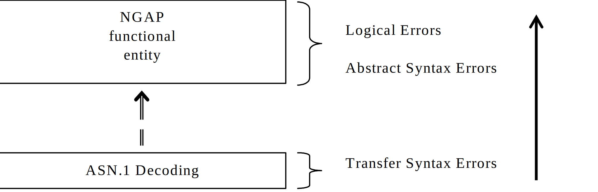
Figure 10.1-1: Protocol Errors in NGAP.
The information stated in subclauses 10.2, 10.3 and 10.4, to be included in the message used when reporting an error, is what at minimum shall be included. Other optional information elements within the message may also be included, if available. This is also valid for the case when the reporting is done with a response message. The latter is an exception to what is stated in subclause 4.1.
A Transfer Syntax Error occurs when the receiver is not able to decode the received physical message. Transfer syntax errors are always detected in the process of ASN.1 decoding. If a Transfer Syntax Error occurs, the receiver should initiate Error Indication procedure with appropriate cause value for the Transfer Syntax protocol error.
Examples for Transfer Syntax Errors are:
- Violation of value ranges in ASN.1 definition of messages. E.g., if an IE has a defined value range of 0 to 10 (ASN.1: INTEGER (0..10)), and 12 will be received, then this will be treated as a transfer syntax error.
- Violation in list element constraints. E.g., if a list is defined as containing 1 to 10 elements, and 12 elements will be received, then this case will be handled as a transfer syntax error.
- Missing mandatory elements in ASN.1 SEQUENCE definitions (as sent by the originator of the message).
- Wrong order of elements in ASN.1 SEQUENCE definitions (as sent by the originator of the message).
An Abstract Syntax Error occurs when the receiving functional NGAP entity:
1. receives IEs or IE groups that cannot be understood (unknown IE ID);
2. receives IEs for which the logical range is violated (e.g., ASN.1 definition: 0 to 15, the logical range is 0 to 10, while values 11 to 15 are undefined), and 12 will be received; this case will be handled as an abstract syntax error using criticality information sent by the originator of the message);
3. does not receive IEs or IE groups but according to the specified presence of the concerning object, the IEs or IE groups should have been present in the received message.
4. receives IEs or IE groups that are defined to be part of that message in wrong order or with too many occurrences of the same IE or IE group;
5. receives IEs or IE groups but according to the conditional presence of the concerning object and the specified condition, the IEs or IE groups should not have been present in the received message.
6. receives IEs or IE groups for a functionality that is not supported.
Cases 1, 2 and 6 (not comprehended IE/IE group) are handled based on received Criticality information. Case 3 (missing IE/IE group) is handled based on Criticality information and Presence information for the missing IE/IE group specified in the version of the specification used by the receiver. Case 4 (IEs or IE groups in wrong order or with too many occurrences) and Case 5 (erroneously present conditional IEs or IE groups) result in rejecting the procedure.
If an Abstract Syntax Error occurs, the receiver shall read the remaining message and shall then for each detected Abstract Syntax Error that belong to cases 1-3 and 6 act according to the Criticality Information and Presence Information for the IE/IE group due to which Abstract Syntax Error occurred in accordance with subclauses 10.3.4 and 10.3.5. The handling of cases 4 and 5 is specified in subclause 10.3.6.
In the NGAP messages there is criticality information set for individual IEs and/or IE groups. This criticality information instructs the receiver how to act when receiving an IE or an IE group that is not comprehended, i.e., the entire item (IE or IE group) which is not (fully or partially) comprehended shall be treated in accordance with its own criticality information as specified in subclause 10.3.4.
In addition, the criticality information is used in case of the missing IE/IE group abstract syntax error (see subclause 10.3.5).
The receiving node shall take different actions depending on the value of the Criticality Information. The three possible values of the Criticality Information for an IE/IE group are:
- Reject IE.
- Ignore IE and Notify Sender.
- Ignore IE.
The comprehension of different IEs or IE groups within a standard version or between standard versions is not mandated. Any IE or IE group that is not supported shall be considered not comprehended, even if another IE or IE group for that EP from that standard version is comprehended, and action based on criticality shall be applied.
The comprehension of different EPs within a standard version or between different standard versions is not mandated. Any EP that is not supported shall be considered not comprehended, even if another EP from that standard version is comprehended, and action based on criticality shall be applied.
For many IEs/IE groups which are optional according to the ASN.1 transfer syntax, NGAP specifies separately if the presence of these IEs/IE groups is optional or mandatory with respect to RNS application by means of the presence field of the concerning object of class NGAP-PROTOCOL-IES, NGAP-PROTOCOL-IES-PAIR, NGAP-PROTOCOL-EXTENSION or NGAP-PRIVATE-IES.
The presence field of the indicated classes supports three values:
1. Optional;
2. Conditional;
3. Mandatory.
If an IE/IE group is not included in a received message and the presence of the IE/IE group is mandatory or the presence is conditional and the condition is true according to the version of the specification used by the receiver, an abstract syntax error occurs due to a missing IE/IE group.
If an IE/IE group is included in a received message and the presence of the IE/IE group is conditional and the condition is false according to the version of the specification used by the receiver, an abstract syntax error occurs due to this erroneously present conditional IE/IE group.
The receiving node shall treat the different types of received criticality information of the Procedure Code IE according to the following:
Reject IE:
- If a message is received with a Procedure Code IE marked with "Reject IE" which the receiving node does not comprehend, the receiving node shall reject the procedure using the Error Indication procedure.
Ignore IE and Notify Sender:
- If a message is received with a Procedure Code IE marked with "Ignore IE and Notify Sender" which the receiving node does not comprehend, the receiving node shall ignore the procedure and initiate the Error Indication procedure.
Ignore IE:
- If a message is received with a Procedure Code IE marked with "Ignore IE" which the receiving node does not comprehend, the receiving node shall ignore the procedure.
When using the Error Indication procedure to reject a procedure or to report an ignored procedure it shall include the Procedure Code IE, the Triggering Message IE, and the Procedure Criticality IE in the Criticality Diagnostics IE.
When the receiving node cannot decode the Type of Message IE, the Error Indication procedure shall be initiated with an appropriate cause value.
The receiving node shall treat the different types of received criticality information of an IE/IE group other than the Procedure Code IE and Type of Message IE according to the following:
Reject IE:
- If a message initiating a procedure is received containing one or more IEs/IE group marked with "Reject IE" which the receiving node does not comprehend; none of the functional requests of the message shall be executed. The receiving node shall reject the procedure and report the rejection of one or more IEs/IE group using the message normally used to report unsuccessful outcome of the procedure. In case the information received in the initiating message was insufficient to determine a value for all IEs that are required to be present in the message used to report the unsuccessful outcome of the procedure, the receiving node shall instead terminate the procedure and initiate the Error Indication procedure.
- If a message initiating a procedure that does not have a message to report unsuccessful outcome is received containing one or more IEs/IE groups marked with "Reject IE" which the receiving node does not comprehend, the receiving node shall terminate the procedure and initiate the Error Indication procedure.
- If a response message is received containing one or more IEs marked with "Reject IE", that the receiving node does not comprehend, the receiving node shall consider the procedure as unsuccessfully terminated and initiate local error handling.
Ignore IE and Notify Sender:
- If a message initiating a procedure is received containing one or more IEs/IE groups marked with "Ignore IE and Notify Sender" which the receiving node does not comprehend, the receiving node shall ignore the content of the not comprehended IEs/IE groups, continue with the procedure as if the not comprehended IEs/IE groups were not received (except for the reporting) using the understood IEs/IE groups, and report in the response message of the procedure that one or more IEs/IE groups have been ignored. In case the information received in the initiating message was insufficient to determine a value for all IEs that are required to be present in the response message, the receiving node shall instead terminate the procedure and initiate the Error Indication procedure.
- if a message initiating a procedure that does not have a message to report the outcome of the procedure is received containing one or more IEs/IE groups marked with "Ignore IE and Notify Sender" which the receiving node does not comprehend, the receiving node shall ignore the content of the not comprehended IEs/IE groups, continue with the procedure as if the not comprehended IEs/IE groups were not received (except for the reporting) using the understood IEs/IE groups, and initiate the Error Indication procedure to report that one or more IEs/IE groups have been ignored.
- If a response message is received containing one or more IEs/IE groups marked with "Ignore IE and Notify Sender" which the receiving node does not comprehend, the receiving node shall ignore the content of the not comprehended IEs/IE groups, continue with the procedure as if the not comprehended IEs/IE groups were not received (except for the reporting) using the understood IEs/IE groups and initiate the Error Indication procedure.
Ignore IE:
- If a message initiating a procedure is received containing one or more IEs/IE groups marked with "Ignore IE" which the receiving node does not comprehend, the receiving node shall ignore the content of the not comprehended IEs/IE groups and continue with the procedure as if the not comprehended IEs/IE groups were not received using the understood IEs/IE groups.
- If a response message is received containing one or more IEs/IE groups marked with "Ignore IE" which the receiving node does not comprehend, the receiving node shall ignore the content of the not comprehended IEs/IE groups and continue with the procedure as if the not comprehended IEs/IE groups were not received using the understood IEs/IE groups.
When reporting not comprehended IEs/IE groups marked with "Reject IE" or "Ignore IE and Notify Sender" using a response message defined for the procedure, the Information Element Criticality Diagnostics IE shall be included in the Criticality Diagnostics IE for each reported IE/IE group.
When reporting not comprehended IEs/IE groups marked with "Reject IE" or "Ignore IE and Notify Sender" using the Error Indication procedure, the Procedure Code IE, the Triggering Message IE, Procedure Criticality IE, and the Information Element Criticality Diagnostics IE shall be included in the Criticality Diagnostics IE for each reported IE/IE group.
The receiving node shall treat the missing IE/IE group according to the criticality information for the missing IE/IE group in the received message specified in the version of this specification used by the receiver:
Reject IE:
- if a received message initiating a procedure is missing one or more IEs/IE groups with specified criticality "Reject IE"; none of the functional requests of the message shall be executed. The receiving node shall reject the procedure and report the missing IEs/IE groups using the message normally used to report unsuccessful outcome of the procedure. In case the information received in the initiating message was insufficient to determine a value for all IEs that are required to be present in the message used to report the unsuccessful outcome of the procedure, the receiving node shall instead terminate the procedure and initiate the Error Indication procedure.
- if a received message initiating a procedure that does not have a message to report unsuccessful outcome is missing one or more IEs/IE groups with specified criticality "Reject IE", the receiving node shall terminate the procedure and initiate the Error Indication procedure.
- if a received response message is missing one or more IEs/IE groups with specified criticality "Reject IE, the receiving node shall consider the procedure as unsuccessfully terminated and initiate local error handling.
Ignore IE and Notify Sender:
- if a received message initiating a procedure is missing one or more IEs/IE groups with specified criticality "Ignore IE and Notify Sender", the receiving node shall ignore that those IEs are missing and continue with the procedure based on the other IEs/IE groups present in the message and report in the response message of the procedure that one or more IEs/IE groups were missing. In case the information received in the initiating message was insufficient to determine a value for all IEs that are required to be present in the response message, the receiving node shall instead terminate the procedure and initiate the Error Indication procedure.
- if a received message initiating a procedure that does not have a message to report the outcome of the procedure is missing one or more IEs/IE groups with specified criticality "Ignore IE and Notify Sender", the receiving node shall ignore that those IEs are missing and continue with the procedure based on the other IEs/IE groups present in the message and initiate the Error Indication procedure to report that one or more IEs/IE groups were missing.
- if a received response message is missing one or more IEs/IE groups with specified criticality "Ignore IE and Notify Sender", the receiving node shall ignore that those IEs are missing and continue with the procedure based on the other IEs/IE groups present in the message and initiate the Error Indication procedure to report that one or more IEs/IE groups were missing.
Ignore IE:
- if a received message initiating a procedure is missing one or more IEs/IE groups with specified criticality "Ignore IE", the receiving node shall ignore that those IEs are missing and continue with the procedure based on the other IEs/IE groups present in the message.
- if a received response message is missing one or more IEs/IE groups with specified criticality "Ignore IE", the receiving node shall ignore that those IEs/IE groups are missing and continue with the procedure based on the other IEs/IE groups present in the message.
When reporting missing IEs/IE groups with specified criticality "Reject IE" or "Ignore IE and Notify Sender" using a response message defined for the procedure, the Information Element Criticality Diagnostics IE shall be included in the Criticality Diagnostics IE for each reported IE/IE group.
When reporting missing IEs/IE groups with specified criticality "Reject IE" or "Ignore IE and Notify Sender" using the Error Indication procedure, the Procedure Code IE, the Triggering Message IE, Procedure Criticality IE, and the Information Element Criticality Diagnostics IE shall be included in the Criticality Diagnostics IE for each reported IE/IE group.
If a message with IEs or IE groups in wrong order or with too many occurrences is received or if IEs or IE groups with a conditional presence are present when the condition is not met (i.e., erroneously present), the receiving node shall behave according to the following:
- If a message initiating a procedure is received containing IEs or IE groups in wrong order or with too many occurrences or erroneously present, none of the functional requests of the message shall be executed. The receiving node shall reject the procedure and report the cause value "Abstract Syntax Error (Falsely Constructed Message)" using the message normally used to report unsuccessful outcome of the procedure. In case the information received in the initiating message was insufficient to determine a value for all IEs that are required to be present in the message used to report the unsuccessful outcome of the procedure, the receiving node shall instead terminate the procedure and initiate the Error Indication procedure.
- If a message initiating a procedure that does not have a message to report unsuccessful outcome is received containing IEs or IE groups in wrong order or with too many occurrences or erroneously present, the receiving node shall terminate the procedure and initiate the Error Indication procedure, and use cause value "Abstract Syntax Error (Falsely Constructed Message)".
- If a response message is received containing IEs or IE groups in wrong order or with too many occurrences or erroneously present, the receiving node shall consider the procedure as unsuccessfully terminated and initiate local error handling.
When determining the correct order only the IEs specified in the specification version used by the receiver shall be considered.
Logical error situations occur when a message is comprehended correctly, but the information contained within the message is not valid (i.e., semantic error), or describes a procedure which is not compatible with the state of the receiver. In these conditions, the following behaviour shall be performed (unless otherwise specified) as defined by the class of the elementary procedure, irrespective of the criticality information of the IEs/IE groups containing the erroneous values.
Class 1:
Where the logical error occurs in a request message of a class 1 procedure, and the procedure has a message to report this unsuccessful outcome, this message shall be sent with an appropriate cause value. Typical cause values are:
- Semantic Error.
- Message not compatible with receiver state.
Where the logical error is contained in a request message of a class 1 procedure, and the procedure does not have a message to report this unsuccessful outcome, the procedure shall be terminated and the Error Indication procedure shall be initiated with an appropriate cause value. The Procedure Code IE and the Triggering Message IE within the Criticality Diagnostics IE shall then be included in order to identify the message containing the logical error.
Where the logical error exists in a response message of a class 1 procedure, the procedure shall be considered as unsuccessfully terminated and local error handling shall be initiated.
Class 2:
Where the logical error occurs in a message of a class 2 procedure, the procedure shall be terminated and the Error Indication procedure shall be initiated with an appropriate cause value. The Procedure Code IE and the Triggering Message IE within the Criticality Diagnostics IE shall then be included in order to identify the message containing the logical error.
The error handling for all the cases described hereafter shall take precedence over any other error handling described in the other subclauses of clause 10.
- If any type of error (Transfer Syntax Error, Abstract Syntax Error or Logical Error) is detected in the ERROR INDICATION message, it shall not trigger the Error Indication procedure in the receiving Node but local error handling.
- In case a response message or Error Indication message needs to be returned, but the information necessary to determine the receiver of that message is missing, the procedure shall be considered as unsuccessfully terminated and local error handling shall be initiated.
- If an error that terminates a procedure occurs, the returned cause value shall reflect the error that caused the termination of the procedure even if one or more abstract syntax errors with criticality "ignore and notify" have earlier occurred within the same procedure.
- If an AP ID error is detected, the error handling as described in subclause 10.6 shall be applied.
NOTE: The "first message", the "first returned message" and the "last message" as used below correspond to messages for a UE-associated logical connection. The "first message" has a new AP ID from the sending node and the "first returned message" is the first response message, which has a new AP ID from the node sending the "first returned message". Thereafter the two AP IDs are included in all messages over the UE-associated logical connection unless otherwise allowed by the specification. The "last message" is a message sent by a node in order to complete the termination of a given UE-associated logical connection, such that no other messages for the same connection are expected in either direction. The nodes should ensure as far as possible that previously allocated AP ID are not immediately reused.
If a node receives a first returned message that includes an unknown local AP ID, the receiving node shall initiate an Error Indication procedure with inclusion of the received AP IDs from the peer node and an appropriate cause value. Both nodes shall initiate a local release of any established UE-associated logical connection (for the same NG interface) having these AP IDs as local or remote identifier.
If a node receives a message (other than the first or first returned messages) including an erroneous AP ID that is either an unknown local AP ID, or an inconsistent remote AP ID (i.e. it is different to the remote AP ID stored previously for this UE-associated logical connection) for the same NG interface:
- if this message is not the last message for this UE-associated logical connection, the node shall initiate an Error Indication procedure with inclusion of the received AP ID(s) from the peer node and an appropriate cause value. Both nodes shall initiate a local release of any established UE-associated logical connection (for the same NG interface) having the erroneous AP ID as either the local or remote identifier.
- if this message is the last message for this UE-associated logical connection, the receiving node shall initiate a local release of any established UE-associated logical connection (for the same NG interface) having the erroneous AP ID as either the local or remote identifier.
Annex A (informative):
Change history
| Change history | |||||||
| Date | Meeting | Tdoc | CR | Rev | Cat | Subject/Comment | New version |
| 2017-04 | R3#95b | R3-171209 | - | - | - | TS skeleton | 0.0.0 |
| 2017-04 | R3#95b | R3-171311 | - | - | - | Incorporated agreed TPs from R3#95b | 0.0.1 |
| 2017-05 | R3#96 | R3-171480 | - | - | - | Update of title page and change history | 0.0.2 |
| 2017-05 | R3#96 | R3-171975 | - | - | - | Incorporated agreed TPs from R3#96 | 0.1.0 |
| 2017-07 | R3 NR#2 | R3-172604 | - | - | - | Incorporated agreed TPs from R3 NR#2 Adhoc | 0.2.0 |
| 2017-08 | R3#97 | R3-173447 | - | - | - | Incorporated agreed TPs from R3#97 | 0.3.0 |
| 2017-10 | R3#97b | R3-174239 | - | - | - | Incorporated agreed TPs from R3#97b | 0.4.0 |
| 2017-12 | R3#98 | R3-175056 | - | - | - | Incorporated agreed TPs from R3#98 | 0.5.0 |
| 2018-01 | R3 NR#1 | R3-180651 | - | - | - | Incorporated agreed TPs from R3 NR Adhoc 1801 | 0.6.0 |
| 2018-03 | R3#99 | R3-181588 | - | - | - | Incorporated agreed TPs from R3#99 | 0.7.0 |
| 2018-04 | R3#99b | R3-182524 | - | - | - | Incorporated agreed TPs from R3#99b | 0.8.0 |
| 2018-05 | R3#100 | R3-183592 | - | - | - | Incorporated agreed TPs from R3#100 | 0.9.0 |
| 2018-06 | RAN#80 | RP-180737 | - | - | - | For approval | 1.0.0 |
| 2018-06 | RAN#80 | - | - | - | - | Specification approved at TSG-RAN and placed under change control | 15.0.0 |
| 2018-09 | RAN#81 | RP-181922 | 0001 | 2 | F | NR Corrections (38.413 Baseline CR covering RAN3-101 agreements) | 15.1.0 |
| 2018-12 | RAN#82 | RP-182448 | 0003 | 2 | F | Baseline CR for TS 38.413 | 15.2.0 |
| 2019-03 | RAN#83 | RP-190556 | 0005 | 3 | F | NGAP Corrections for UP Security Handling in DC during PDU Session Lifetime | 15.3.0 |
| 2019-03 | RAN#83 | RP-190555 | 0008 | 2 | F | Separate UL/DL limits for UE's maximum IP rate | 15.3.0 |
| 2019-03 | RAN#83 | RP-190554 | 0009 | 1 | F | Data volume reporting for MR-DC with 5GC | 15.3.0 |
| 2019-03 | RAN#83 | RP-190554 | 0010 | 3 | F | Correction of PDU Session split at handover | 15.3.0 |
| 2019-03 | RAN#83 | RP-190556 | 0011 | 1 | F | Correction of EPS Voice Fallback | 15.3.0 |
| 2019-03 | RAN#83 | RP-190556 | 0012 | - | F | Correction of slice support over NG | 15.3.0 |
| 2019-03 | RAN#83 | RP-190556 | 0014 | 1 | F | Rapporteur updates for TS 38.413 | 15.3.0 |
| 2019-03 | RAN#83 | RP-190556 | 0015 | - | F | Correction of User Location Information IE presence in HANDOVER NOTIFY | 15.3.0 |
| 2019-03 | RAN#83 | RP-190556 | 0019 | 1 | F | Correction to RRC state report | 15.3.0 |
| 2019-03 | RAN#83 | RP-190555 | 0021 | - | F | Support of RAN initiated multiple SCTP associations | 15.3.0 |
| 2019-03 | RAN#83 | RP-190556 | 0023 | - | F | Corrections on RAN/AMF Configuration Update | 15.3.0 |
| 2019-03 | RAN#83 | RP-190556 | 0024 | 2 | F | Correction of EPC interworking | 15.3.0 |
| 2019-03 | RAN#83 | RP-190556 | 0025 | 1 | F | Correction of Emergency Fallback | 15.3.0 |
| 2019-03 | RAN#83 | RP-190202 | 0027 | 3 | F | Transfer of the PSCell information to Core Network | 15.3.0 |
| 2019-03 | RAN#83 | RP-190558 | 0028 | 1 | F | Release due to pre-emption | 15.3.0 |
| 2019-03 | RAN#83 | RP-190558 | 0029 | - | F | Handling of APID for the first returned message | 15.3.0 |
| 2019-03 | RAN#83 | RP-190556 | 0037 | - | F | Clarification on the usage of TNL information | 15.3.0 |
| 2019-03 | RAN#83 | RP-190556 | 0044 | 1 | F | NG Setup Correction and UE context retention | 15.3.0 |
| 2019-03 | RAN#83 | RP-190556 | 0045 | 1 | F | UE AMBR handling in PDU Session Resouce Setup procedure | 15.3.0 |
| 2019-03 | RAN#83 | RP-190556 | 0046 | 1 | F | Remove the second tunnel in the PDU session split, 5GC initiated | 15.3.0 |
| 2019-03 | RAN#83 | RP-190556 | 0048 | 1 | F | When NG-RAN node fails to set up a QoS flow for IMS voice | 15.3.0 |
| 2019-03 | RAN#83 | RP-190556 | 0052 | - | F | Correction of ASN.1 for PDU Session Resource Modify Response | 15.3.0 |
| 2019-03 | RAN#83 | RP-190556 | 0053 | 1 | F | Cause value in RRC fallback case | 15.3.0 |
| 2019-03 | RAN#83 | RP-190556 | 0058 | 2 | F | S-NSSAI update during EPS to 5GS handover | 15.3.0 |
| 2019-03 | RAN#83 | RP-190561 | 0064 | 1 | F | Introduction of TNL Address discovery for EN-DC (using new container) | 15.3.0 |
| 2019-03 | RAN#83 | RP-190200 | 0066 | - | F | Correction of ASN.1 for SON Configuration Transfer and PDU Session Resource Modify Request Transfer | 15.3.0 |
| 2019-07 | RAN#84 | RP-191394 | 0099 | 1 | F | Rapporteur updates for TS 38.413 | 15.4.0 |
| 2019-07 | RP-84 | RP-191397 | 0041 | 2 | F | Support of ongoing re-mapping on source side during SDAP mobility | 15.4.0 |
| 2019-07 | RP-84 | RP-191397 | 0067 | 1 | F | NGAP Further Clarification of S-NSSAI Update for EPS to 5GS HO | 15.4.0 |
| 2019-07 | RP-84 | RP-191394 | 0071 | - | F | CR38413 for Clarification on PDU Session resource modify | 15.4.0 |
| 2019-07 | RP-84 | RP-191397 | 0075 | 1 | F | Correction of Core Network Type Restrictions | 15.4.0 |
| 2019-07 | RP-84 | RP-191394 | 0077 | 1 | F | Correction of PDU Session Release | 15.4.0 |
| 2019-07 | RP-84 | RP-191395 | 0084 | 2 | F | Removal of multiple SCTP associations PS: This CR was not implemented as it was not based on the latest version of the spec. |
15.4.0 |
| 2019-07 | RP-84 | RP-191394 | 0095 | F | Correction on Error Indication procedure | 15.4.0 | |
| 2019-07 | RP-84 | RP-191394 | 0096 | F | Location Report Request Type | 15.4.0 | |
| 2019-07 | RP-84 | RP-191394 | 0101 | 2 | F | GUAMI update in case of AMF change | 15.4.0 |
| 2019-07 | RP-84 | RP-191397 | 0102 | 2 | F | Data forwarding and QoS flow remapping | 15.4.0 |
| 2019-07 | RP-84 | RP-191397 | 0111 | 1 | F | Correction of CN Assistance Information | 15.4.0 |
| 2019-07 | RP-84 | RP-191397 | 0112 | F | Correction of Network Instance | 15.4.0 | |
| 2019-07 | RP-84 | RP-191394 | 0117 | 1 | F | Correction of AMF UE NGAP ID | 15.4.0 |
| 2019-07 | RP-84 | RP-191394 | 0130 | 1 | F | Adding PSCell to the User Location Information | 15.4.0 |
| 2019-07 | RP-84 | RP-191394 | 0135 | F | Correction on Handover Command message | 15.4.0 | |
| 2019-07 | RP-84 | RP-191394 | 0148 | F | Correction of duplicated descriptions on additional UL tunnel information | 15.4.0 | |
| 2019-09 | RP-85 | RP-192167 | 0084 | 4 | F | Removal of multiple SCTP associations | 15.5.0 |
| 2019-09 | RP-85 | RP-192166 | 0161 | 2 | F | Correction of secured signalling connection | 15.5.0 |
| 2019-09 | RP-85 | RP-192167 | 0178 | 1 | F | PDU Session fail in Path Switch Request procedure | 15.5.0 |
| 2019-09 | RP-85 | RP-192167 | 0195 | 2 | F | Reroute NSSF provided information | 15.5.0 |
| 2019-09 | RP-85 | RP-192166 | 0199 | F | Correction of Handover Command message | 15.5.0 | |
| 2019-09 | RP-85 | RP-192167 | 0220 | 1 | F | NGAP correction of Initial Context Setup procedure text | 15.5.0 |
| 2019-09 | RP-85 | RP-192167 | 0226 | 1 | F | Rapporteur cleanup of IE semantics descriptions | 15.5.0 |
| 2019-12 | RP-86 | RP-192915 | 0256 | 1 | F | Correction of NAS transparent container | 15.6.0 |
| 2019-12 | RP-86 | RP-192915 | 0258 | 1 | F | Missing procedural texts for NG interface | 15.6.0 |
| 2019-12 | RP-86 | RP-192915 | 0261 | F | Correction of Handover Command | 15.6.0 | |
| 2019-12 | RP-86 | RP-192915 | 0262 | 1 | F | Correction of S-NSSAI coding | 15.6.0 |
| 2019-12 | RP-86 | RP-192916 | 0269 | 1 | F | Correction of Port Number IE in tabular | 15.6.0 |
| 2019-12 | RP-86 | RP-192915 | 0276 | 2 | F | Enable inclusion of the Backup AMF Name IE | 15.6.0 |
| 2019-12 | RP-86 | RP-192916 | 0281 | F | Correction of NG Handover | 15.6.0 | |
| 2019-12 | RP-86 | RP-192896 | 0286 | 3 | F | Addition of abnormal cases for location report procedure | 15.6.0 |
| 2019-12 | RP-86 | RP-192916 | 0300 | 2 | F | CR to 38.413 on clarifications to Xn TNL Configuration Info | 15.6.0 |
| 2019-12 | RP-86 | RP-192916 | 0303 | F | CR for Clarification on purpose of path switch request | 15.6.0 | |
| 2019-12 | RP-86 | RP-193055 | 0304 | - | F | Correction of Xn TNL Configuration Info | 15.6.0 |
| 2019-12 | RP-86 | RP-192912 | 0051 | 7 | B | Support of Direct Data forwarding for handover between 4G and 5G | 16.0.0 |
| 2019-12 | RP-86 | RP-192908 | 0137 | 6 | B | CR to 38.413 for signalling design for RIM | 16.0.0 |
| 2019-12 | RP-86 | RP-192916 | 0143 | 3 | B | The GUAMI and GUMMEI usage for EPS/5GS interworking | 16.0.0 |
| 2019-12 | RP-86 | RP-192913 | 0266 | 1 | C | Extending the MDBV Range | 16.0.0 |
| 2020-03 | RP-87-e | RP-200424 | 0234 | 6 | B | Support of SRVCC from 5G to 3G | 16.1.0 |
| 2020-03 | RP-87-e | RP-200422 | 0291 | 2 | B | Introduction of NR-U | 16.1.0 |
| 2020-03 | RP-87-e | RP-200425 | 0314 | 1 | F | Addition of the PSCell information in the path update procedure | 16.1.0 |
| 2020-03 | RP-87-e | RP-200428 | 0317 | A | Correction of Warning Security Information in ETWS primary notification | 16.1.0 | |
| 2020-03 | RP-87-e | RP-200429 | 0319 | A | Correction of tabular for Xn TNL Configuration Info | 16.1.0 | |
| 2020-03 | RP-87-e | RP-200425 | 0320 | 1 | F | NGAP Rapporteur corrections | 16.1.0 |
| 2020-03 | RP-87-e | RP-200475 | 0329 | 4 | B | E2E delay measurement for QoS monitoring for URLLC | 16.1.0 |
| 2020-03 | RP-87-e | RP-200419 | 0331 | 1 | B | Inter-system direct forwarding with shared SgNB/gNB | 16.1.0 |
| 2020-03 | RP-87-e | RP-200428 | 0335 | A | Correction of RAN paging priority | 16.1.0 | |
| 2020-03 | RP-87-e | RP-200428 | 0337 | 1 | A | PDU session resource in UE context release | 16.1.0 |
| 2020-03 | RP-87-e | RP-200423 | 0347 | 2 | B | Introducing Radio Capability Optimisation (RACS) (The CR is not implemented. The CR was marked agreed by mistake while the WI is not yet complete) |
16.1.0 |
| 2020-07 | RP-88-e | RP-201077 | 0063 | 13 | B | BL CR to 38.413: Support for IAB | 16.2.0 |
| 2020-07 | RP-88-e | RP-201079 | 0082 | 15 | B | Introduction of NR_IIOT support to TS 38.413 | 16.2.0 |
| 2020-07 | RP-88-e | RP-201088 | 0120 | 10 | B | Introduction of NB-IoT Paging and eDRX aspects | 16.2.0 |
| 2020-07 | RP-88-e | RP-201086 | 0153 | 11 | B | Common CP/UP aspects of CIoT UEs when connected to 5GC | 16.2.0 |
| 2020-07 | RP-88-e | RP-201335 | 0156 | 11 | B | Introduction of NB-IoT related NG-AP procedures | 16.2.0 |
| 2020-07 | RP-88-e | RP-201088 | 0157 | 9 | B | Introduction of CP UP NB-IoT Others | 16.2.0 |
| 2020-07 | RP-88-e | RP-201074 | 0168 | 10 | B | Support of NR V2X over NG | 16.2.0 |
| 2020-07 | RP-88-e | RP-201087 | 0172 | 10 | B | Introduction of eMTC connected to 5GC | 16.2.0 |
| 2020-07 | RP-88-e | RP-201086 | 0173 | 8 | B | Introduction of Control Plane CIoT 5GS Optimisation for NB-IOT and eMTC | 16.2.0 |
| 2020-07 | RP-88-e | RP-201086 | 0188 | 10 | B | Introduction of Suspend-Resume | 16.2.0 |
| 2020-07 | RP-88-e | RP-201081 | 0192 | 11 | B | CR for introducing WWC in RAN | 16.2.0 |
| 2020-07 | RP-88-e | RP-201082 | 0237 | 10 | B | Addition of SON features | 16.2.0 |
| 2020-07 | RP-88-e | RP-201082 | 0280 | 7 | B | Addition of MDT feature | 16.2.0 |
| 2020-07 | RP-88-e | RP-201080 | 0290 | 9 | B | Introduction of Non-Public Networks | 16.2.0 |
| 2020-07 | RP-88-e | RP-201079 | 0313 | 4 | B | Support of Ethernet Header Compression | 16.2.0 |
| 2020-07 | RP-88-e | RP-201078 | 0347 | 6 | B | Introducing Radio Capability Optimisation (RACS) | 16.2.0 |
| 2020-07 | RP-88-e | RP-201091 | 0357 | 2 | A | Clarification the usage of the New AMF UE NGAP ID included in the UE CONTEXT MODIFICATION REQUEST message | 16.2.0 |
| 2020-07 | RP-88-e | RP-201075 | 0362 | 5 | B | Baseline CR for introducing Rel-16 NR mobility enhancement | 16.2.0 |
| 2020-07 | RP-88-e | RP-201083 | 0364 | F | ASN.1 Correction of the Data Forwarding Response E-RAB List IE | 16.2.0 | |
| 2020-07 | RP-88-e | RP-201085 | 0365 | F | NGAP Rapporteur corrections | 16.2.0 | |
| 2020-07 | RP-88-e | RP-201091 | 0371 | 1 | A | Correction of Revoke E-RAB ID | 16.2.0 |
| 2020-07 | RP-88-e | RP-200795 | 0372 | 3 | F | Voice fallback triggered by PDU session resource setup | 16.2.0 |
| 2020-07 | RP-88-e | RP-201091 | 0379 | 1 | A | Correction on AS rekeying handling | 16.2.0 |
| 2020-07 | RP-88-e | RP-201090 | 0389 | 3 | A | Correction to PDU SESSION RESOURCE MODIFY CONFIRM | 16.2.0 |
| 2020-07 | RP-88-e | RP-201092 | 0392 | 1 | A | Selected PLMN ID for untrusted non-3GPP access | 16.2.0 |
| 2020-07 | RP-88-e | RP-201090 | 0395 | 2 | A | Correstion on PDU Session Resrouce Modification Procedures | 16.2.0 |
| 2020-07 | RP-88-e | RP-201085 | 0401 | 1 | F | QoS monitoring for URLLC | 16.2.0 |
| 2020-07 | RP-88-e | RP-201090 | 0408 | 4 | F | Correction of S-NSSAI range | 16.2.0 |
| 2020-09 | RP-89-e | RP-201955 | 0383 | 3 | F | Support of PSCell/SCell-only operation mode | 16.3.0 |
| 2020-09 | RP-89-e | RP-201945 | 0396 | 4 | B | Update of the NRPPa Transport procedure to support NR positioning | 16.3.0 |
| 2020-09 | RP-89-e | RP-201948 | 0416 | - | F | NGAP tabular corrections and asn.1 review | 16.3.0 |
| 2020-09 | RP-89-e | RP-201950 | 0417 | 1 | F | Rapporteur cleanup of NGAP | 16.3.0 |
| 2020-09 | RP-89-e | RP-201955 | 0425 | 1 | F | Correction of NAS PDU in PDU Session Modify | 16.3.0 |
| 2020-09 | RP-89-e | RP-201948 | 0427 | 1 | F | Correction of NPN CAG Cells and non-CAG Cells | 16.3.0 |
| 2020-09 | RP-89-e | RP-201955 | 0443 | 1 | A | Failure case of user location report | 16.3.0 |
| 2020-09 | RP-89-e | RP-201955 | 0445 | 1 | A | Multiple location reporting requests and report | 16.3.0 |
| 2020-09 | RP-89-e | RP-201955 | 0462 | - | F | Correction of asn.1 in NGAP Elementary Procedure List | 16.3.0 |
| 2020-09 | RP-89-e | RP-201955 | 0463 | 1 | F | Corrections to 38.413 on node name type | 16.3.0 |
| 2020-12 | RP-90-e | RP-202314 | 0410 | 1 | F | Correction on Coverage Enhancement Restrictions | 16.4.0 |
| 2020-12 | RP-90-e | RP-202314 | 0411 | 2 | F | Correction on immediate suspension | 16.4.0 |
| 2020-12 | RP-90-e | RP-202310 | 0414 | 1 | F | Add the support for updating RG Level Wireline Access Characteristics and Global Cable ID | 16.4.0 |
| 2020-12 | RP-90-e | RP-202314 | 0483 | 2 | F | Correction of usage of the Extended Connected Time | 16.4.0 |
| 2020-12 | RP-90-e | RP-202312 | 0484 | 1 | F | Support of release on CAG subscription change | 16.4.0 |
| 2020-12 | RP-90-e | RP-202313 | 0485 | - | F | Removal of duplicate import | 16.4.0 |
| 2020-12 | RP-90-e | RP-202311 | 0486 | 1 | F | Correction of Redundant Tunnel Setup | 16.4.0 |
| 2020-12 | RP-90-e | RP-202314 | 0499 | 1 | F | CR38413 for clarification on UE-associated signalling for NBIOT procedures in Rel-16 | 16.4.0 |
| 2020-12 | RP-90-e | RP-202315 | 0501 | 1 | F | CR38413 for clarification on UE-associated signalling in Rel-16 | 16.4.0 |
| 2020-12 | RP-90-e | RP-202315 | 0505 | 1 | A | Clarification on an abnormal condition in PDU Session Resource Modify Procedure | 16.4.0 |
| 2020-12 | RP-90-e | RP-202313 | 0507 | 1 | F | Introduction of reporting frequency for Qos monitoring for URLLC | 16.4.0 |
| 2020-12 | RP-90-e | RP-202310 | 0511 | 1 | F | Introducing AQP in path switch request acknowledge message | 16.4.0 |
| 2020-12 | RP-90-e | RP-202312 | 0512 | 1 | F | Introducing UE radio capability ID in Connection Establishment Indication | 16.4.0 |
| 2020-12 | RP-90-e | RP-202314 | 0514 | F | Correction of RAN CP Relocation | 16.4.0 | |
| 2021-03 | RP-91-e | RP-210239 | 0355 | 5 | A | Clarification of AS re-keying in the UE Context Modification procedure | 16.5.0 |
| 2021-03 | RP-91-e | RP-210235 | 0508 | 4 | F | Introducing QoS parameters update at Xn handover | 16.5.0 |
| 2021-03 | RP-91-e | RP-210239 | 0520 | 2 | F | Including the Redundant UL NG-U UP TNL Information in the Modify Request | 16.5.0 |
| 2021-03 | RP-91-e | RP-210232 | 0533 | 1 | F | Correction of SNPN failures | 16.5.0 |
| 2021-03 | RP-91-e | RP-210239 | 0534 | 1 | F | Update on QoS monitoring control | 16.5.0 |
| 2021-03 | RP-91-e | RP-210237 | 0537 | 2 | F | Correction on RAT Information Handling | 16.5.0 |
| 2021-03 | RP-91-e | RP-210230 | 0541 | - | F | Correction to NRPPa Transport procedure description | 16.5.0 |
| 2021-03 | RP-91-e | RP-210237 | 0544 | - | F | Correction on UE identity index for eMTC UE in RRC_INACTIVE | 16.5.0 |
| 2021-03 | RP-91-e | RP-210235 | 0557 | 2 | F | Clarification of Secondary RAT in mobility restrictions | 16.5.0 |
| 2021-06 | RP-92-e | RP-211315 | 0477 | 3 | F | Clarification on TAI Slice Support List | 16.6.0 |
| 2021-06 | RP-92-e | RP-211333 | 0522 | 3 | F | Introducing Maximum Integrity Protected Data Rate after EPC to 5GC handover | 16.6.0 |
| 2021-06 | RP-92-e | RP-211333 | 0547 | 2 | F | Supporting use of UE Radio Capability for Paging in RRC_INACTIVE | 16.6.0 |
| 2021-06 | RP-92-e | RP-211333 | 0556 | 2 | A | Interactions with other procedures for the UE TNLA BINDING RELEASE | 16.6.0 |
| 2021-06 | RP-92-e | RP-211333 | 0574 | 1 | F | Correction of PDU Session Resource Modification | 16.6.0 |
| 2021-06 | RP-92-e | RP-211334 | 0583 | 1 | A | Correction on Abnormal Conditions in Handover Preparation Procedure for R16 | 16.6.0 |
| 2021-06 | RP-92-e | RP-211334 | 0603 | 2 | F | Cause value on NG for insufficient UE capabilities CR 38.413 | 16.6.0 |
| 2021-06 | RP-92-e | RP-211333 | 0610 | - | F | Correction on the use of the Core Network Assistance Information for RRC INACTIVE IE | 16.6.0 |
| 2021-06 | RP-92-e | RP-211324 | 0614 | 2 | F | Correction on Extended UE Identity Index Value | 16.6.0 |
| 2021-09 | RP-93-e | RP-211882 | 0376 | 7 | F | NAS Non-Delivery | 16.7.0 |
| 2021-09 | RP-93-e | RP-211881 | 0431 | 4 | F | Correction on Expected UE activity behaviour | 16.7.0 |
| 2021-09 | RP-93-e | RP-211881 | 0626 | F | Correction of MICO mode | 16.7.0 | |
| 2021-09 | RP-93-e | RP-211876 | 0631 | - | F | Correcting Presence of the Cell CAG Information IE in ASN.1 | 16.7.0 |
| 2021-09 | RP-93-e | RP-211882 | 0633 | 1 | A | Deactivation of the MICO mode indication | 16.7.0 |
| 2021-09 | RP-93-e | RP-211881 | 0637 | 1 | F | Correction of NAS PDU Non Delivery | 16.7.0 |
| 2021-09 | RP-93-e | RP-211882 | 0641 | 1 | F | On IEs with reject criticality in the source and target transparent container | 16.7.0 |
| 2021-09 | RP-93-e | RP-211881 | 0645 | 1 | F | Missing QoS Flows not Admitted List in HANDOVER COMMAND | 16.7.0 |
| 2021-09 | RP-93-e | RP-211883 | 0646 | - | F | Clarification on the specified maximum length of the Routing ID Octet String | 16.7.0 |
| 2021-09 | RP-93-e | RP-211882 | 0660 | F | Correction CR on Network instance | 16.7.0 | |
| 2021-12 | RP-94-e | RP-212863 | 0663 | 1 | F | Correction of Data Volume Report | 16.8.0 |
| 2021-12 | RP-94-e | RP-212863 | 0671 | 1 | F | Adding reference for coding of Common Network Instance | 16.8.0 |
| 2021-12 | RP-94-e | RP-212869 | 0679 | 1 | F | Clarification of UE with CAG information in UE subscription | 16.8.0 |
| 2021-12 | RP-94-e | RP-212868 | 0688 | 1 | F | (NGAP CR) support the UE Radio Capability for Paging in RACS context | 16.8.0 |
| 2021-12 | RP-94-e | RP-212871 | 0693 | 1 | F | Redundant network instance for split PDU session | 16.8.0 |
| 2021-12 | RP-94-e | RP-212864 | 0713 | 1 | F | Allocation of TNL addresses for intra-system data forwarding | 16.8.0 |
| 2022-03 | RP-95-e | RP-220278 | 0619 | 3 | F | Support of dynamic ACL during handover and dual connectivity | 16.9.0 |
| 2022-03 | RP-95-e | RP-220243 | 0691 | 2 | F | Direct data forwarding for 4G to 5G handover | 16.9.0 |
| 2022-03 | RP-95-e | RP-220280 | 0727 | 1 | F | Propagation of user consent related information during Xn inter-PLMN handover | 16.9.0 |
| 2022-03 | RP-95-e | RP-220278 | 0735 | F | Correction on PDU Session Resource Setup procedure | 16.9.0 | |
| 2022-03 | RP-95-e | RP-220279 | 0742 | 2 | F | Correction of SNPN setup failure | 16.9.0 |
| 2022-03 | RP-95-e | RP-220280 | 0746 | 1 | F | Value range misalignment for MDT M1, M8 and M9 configuration | 16.9.0 |
| 2022-03 | RP-95-e | RP-220279 | 0751 | 1 | F | Clarification of the usage of an IE in case of DAPS HO | 16.9.0 |
| 2022-03 | RP-95-e | RP-220277 | 0752 | 1 | F | Correction of intra-system Data Forwarding | 16.9.0 |
| 2022-03 | RP-95-e | RP-220243 | 0760 | 2 | F | Direct data forwarding for mobility between DC and SA | 16.9.0 |
| 2022-03 | RP-95-e | RP-220225 | 0490 | 10 | B | Introduction of NTN | 17.0.0 |
| 2022-03 | RP-95-e | RP-220221 | 0530 | 10 | B | BLCR to 38.413_Addition of SON features enhancement | 17.0.0 |
| 2022-03 | RP-95-e | RP-220224 | 0548 | 7 | B | BL CR for NR MBS for 38.413 | 17.0.0 |
| 2022-03 | RP-95-e | RP-220236 | 0558 | 5 | F | Correction for Chapter 10 | 17.0.0 |
| 2022-03 | RP-95-e | RP-220220 | 0594 | 8 | B | Supporting enhanced private network | 17.0.0 |
| 2022-03 | RP-95-e | RP-220223 | 0598 | 8 | B | Introduction of enhanced Industrial IoT over NG | 17.0.0 |
| 2022-03 | RP-95-e | RP-220229 | 0615 | 8 | B | CR to 38.413 on QoE measurement configuration | 17.0.0 |
| 2022-03 | RP-95-e | RP-220294 | 0647 | 3 | B | Support for Enhancement of Redundant PDU Sessions [Paired_ID] | 17.0.0 |
| 2022-03 | RP-95-e | RP-220230 | 0664 | 6 | B | Support for Redcap UEs | 17.0.0 |
| 2022-03 | RP-95-e | RP-220236 | 0666 | 3 | D | NGAP rapporteur corrections | 17.0.0 |
| 2022-03 | RP-95-e | RP-220236 | 0669 | 3 | C | Support for mapping complete security capabilities from NAS [UE_Sec_Caps] | 17.0.0 |
| 2022-03 | RP-95-e | RP-220232 | 0682 | 5 | B | Supporting network slicing enhancement | 17.0.0 |
| 2022-03 | RP-95-e | RP-220221 | 0718 | 4 | B | BLCR to 38.413: Support of MDT enhancement | 17.0.0 |
| 2022-03 | RP-95-e | RP-220219 | 0724 | 3 | B | Introduction of Multi-SIM Support over NG | 17.0.0 |
| 2022-03 | RP-95-e | RP-220235 | 0725 | 3 | B | Support for UE Power Saving Enhancements | 17.0.0 |
| 2022-03 | RP-95-e | RP-220231 | 0743 | 5 | B | Support of 5G ProSe Authorization for NG-AP | 17.0.0 |
| 2022-03 | RP-95-e | RP-220228 | 0754 | - | B | Introduction of NR positioning enhancements to NGAP | 17.0.0 |
| 2022-06 | RP-96 | RP-221811 | 0571 | 8 | B | Support for handling unknown length of gNB identifier [gNB_ID_Length] | 17.1.0 |
| 2022-06 | RP-96 | RP-221134 | 0764 | 2 | F | NGAP ASN.1 review for MBS | 17.1.0 |
| 2022-06 | RP-96 | RP-221145 | 0765 | 1 | D | NGAP rapporteur corrections | 17.1.0 |
| 2022-06 | RP-96 | RP-221134 | 0766 | - | D | Moving MBS Session TNL-related IEs to the correct subclause | 17.1.0 |
| 2022-06 | RP-96 | RP-221127 | 0776 | 1 | F | Adding serving PLMN information in ULI for NTN | 17.1.0 |
| 2022-06 | RP-96 | RP-221141 | 0777 | - | F | Alignment of ASN.1 and tabular for inter-RAT MLB solution | 17.1.0 |
| 2022-06 | RP-96 | RP-221150 | 0784 | 1 | A | Correction of NAS PDU Delivery | 17.1.0 |
| 2022-06 | RP-96 | RP-221129 | 0785 | 2 | F | Correction of Slice Group Configuration | 17.1.0 |
| 2022-06 | RP-96 | RP-221150 | 0791 | 3 | A | NGAP CR for ACL remaining issues | 17.1.0 |
| 2022-06 | RP-96 | RP-221139 | 0793 | 1 | F | Corrections on NR SL relay for 38.413 | 17.1.0 |
| 2022-06 | RP-96 | RP-221133 | 0798 | F | UE Power Saving Correction in NGAP | 17.1.0 | |
| 2022-06 | RP-96 | RP-221145 | 0800 | 4 | B | Exchange of protocol support at target RAN node for NG handover [PROT_SUP] | 17.1.0 |
| 2022-06 | RP-96 | RP-221134 | 0801 | 2 | F | MBS NGAP Corrections | 17.1.0 |
| 2022-06 | RP-96 | RP-221141 | 0807 | 1 | F | NGAP Inter-System Load Balancing corrections for procedure and IEs | 17.1.0 |
| 2022-06 | RP-96 | RP-221141 | 0808 | 1 | D | NGAP rapporteur corrections for SON | 17.1.0 |
| 2022-06 | RP-96 | RP-221137 | 0811 | 2 | F | MUSIM Correction on NGAP | 17.1.0 |
| 2022-06 | RP-96 | RP-221134 | 0813 | 1 | F | Correction of MBS Session Management | 17.1.0 |
| 2022-06 | RP-96 | RP-221143 | 0821 | 2 | F | CR to 38.413 for Corrections on NR QoE Capability | 17.1.0 |
| 2022-06 | RP-96 | RP-221134 | 0828 | 1 | F | NGAP corrections on MBS feature | 17.1.0 |
| 2022-06 | RP-96 | RP-221134 | 0829 | 1 | F | Remaining issues over NGAP for NR MBS | 17.1.0 |
| 2022-06 | RP-96 | RP-221141 | 0832 | 1 | F | Correction on R17 SON MDT for 38.413 | 17.1.0 |
| 2022-06 | RP-96 | RP-221143 | 0841 | 2 | F | CR to 38.413 on corrections to configuration details | 17.1.0 |
| 2022-06 | RP-96 | RP-221134 | 0843 | 1 | F | Introduction of broadcast session release required procedure | 17.1.0 |
| 2022-06 | RP-96 | RP-221153 | 0851 | 2 | A | Correction to Frequency Band Info in MDT Configuration | 17.1.0 |
| 2022-06 | RP-96 | RP-221141 | 0853 | - | F | Inter-system energy saving corrections | 17.1.0 |
| 2022-06 | RP-96 | RP-221141 | 0854 | - | F | Correction on user consent modification | 17.1.0 |
| 2022-06 | Table of Contents error update | 17.1.1 | |||||
| 2022-09 | RP-97-e | RP-222191 | 0855 | 1 | F | Correction of Inter-system Resource Status Reporting | 17.2.0 |
| 2022-09 | RP-97-e | RP-222191 | 0856 | - | F | ASN.1 correction for Inter-system Resource Status Report | 17.2.0 |
| 2022-09 | RP-97-e | RP-222188 | 0857 | 1 | F | Correction on other leftover issues on NGAP for MBS | 17.2.0 |
| 2022-09 | RP-97-e | RP-222199 | 0859 | 1 | A | CAG access control without mobility restrictions | 17.2.0 |
| 2022-09 | RP-97-e | RP-222188 | 0864 | 1 | F | Further Corrections for NR MBS | 17.2.0 |
| 2022-09 | RP-97-e | RP-222088 | 0866 | 1 | F | Correction of Paging eDRX Information | 17.2.0 |
| 2022-09 | RP-97-e | RP-222192 | 0868 | 1 | F | Correction to R17 QoE | 17.2.0 |
| 2022-09 | RP-97-e | RP-222188 | 0870 | 1 | F | Correction on Multicast Session Deactivation procedure | 17.2.0 |
| 2022-09 | RP-97-e | RP-222188 | 0871 | 1 | F | Introduction of MBS specific cause values | 17.2.0 |
| 2022-09 | RP-97-e | RP-222188 | 0872 | 1 | F | Correction on Multicast Group Paging | 17.2.0 |
| 2022-09 | RP-97-e | RP-222198 | 0875 | 1 | A | Addition of Masked IMEISV for UEs using CP CIoT 5GS optimisation | 17.2.0 |
| 2022-09 | RP-97-e | RP-222191 | 0881 | - | F | Correction to early measurement collection | 17.2.0 |
| 2022-09 | RP-97-e | RP-222627 | 0882 | 2 | F | Collection on beam measurement report configuration in M1 | 17.2.0 |
| 2022-12 | RP-98-e | RP-222882 | 0796 | 5 | F | Correction on User Inactivity for Multicast Session | 17.3.0 |
| 2022-12 | RP-98-e | RP-222893 | 0901 | 1 | F | Additional ULI provision with PScell information | 17.3.0 |
| 2022-12 | RP-98-e | RP-223477 | 0922 | 6 | F | NGAP Corrections for Excess Packet Delay | 17.3.0 |
| 2023-03 | RAN#99 | RP-230593 | 0888 | 2 | F | Correction of inter-system handover to open access HeNB | 17.4.0 |
| 2023-03 | RAN#99 | RP-230584 | 0920 | 2 | F | Correction on the user consent in PATH SWITCH REQUEST ACKNOWLEDGE message (REL-17) | 17.4.0 |
| 2023-03 | RAN#99 | RP-230596 | 0927 | 1 | A | Clarification on IAB Authorized IE in UE Context Modification procedure | 17.4.0 |
| 2023-03 | RAN#99 | RP-230589 | 0929 | 2 | F | Correction on the UE identity index for paging RedCap UE to TS38.413 | 17.4.0 |
| 2023-03 | RAN#99 | RP-230593 | 0930 | - | F | Correction of references to RRC protocol elements | 17.4.0 |
| 2023-03 | RAN#99 | RP-230593 | 0947 | - | F | Correction of ULI for non-3GPP access | 17.4.0 |
| 2023-03 | RAN#99 | RP-230584 | 0949 | - | F | Correction on SON Configuration Transfer | 17.4.0 |
| 2023-03 | RAN#99 | RP-230593 | 0952 | 1 | F | Correction to Global eNB ID in NGAP | 17.4.0 |
| 2023-03 | RAN#99 | RP-230593 | 0963 | 2 | F | Correction on UP security procedure | 17.4.0 |
| 2023-06 | RAN#100 | RP-231073 | 0931 | 2 | F | Correction of Burst Arrival Time semantics description | 17.5.0 |
| 2023-06 | RAN#100 | RP-231075 | 0940 | 3 | A | Corrections on TNL association addition, update and removal | 17.5.0 |
| 2023-06 | RAN#100 | RP-231069 | 0946 | 2 | F | Correction of NB-IoT CP optimization during AMF change | 17.5.0 |
| 2023-06 | RAN#100 | RP-231069 | 0968 | 2 | A | Correction of RRC Resume Cause in PATH SWITCH REQUEST message | 17.5.0 |
| 2023-06 | RAN#100 | RP-231067 | 0976 | 3 | F | Introduction of Hashed UE Identity Index Value for RRC_INATIVE with eDRX | 17.5.0 |
| 2023-06 | RAN#100 | RP-231071 | 0979 | 2 | F | Correction on Event-based Reporting for Inter-system Resource Status Request | 17.5.0 |
| 2023-06 | RAN#100 | RP-231076 | 0987 | 2 | F | Correction on Extended Packet Delay Budget | 17.5.0 |
| 2023-06 | RAN#100 | RP-231072 | 0996 | 0 | A | Clarify the usage of IAB Supported IE | 17.5.0 |
| 2023-06 | RAN#100 | RP-231078 | 1001 | 1 | F | Correction on the QoE Area Scope IE in QMC Configuration Information | 17.5.0 |
| 2023-09 | RAN#101 | RP-231900 | 0954 | 6 | A | Clarification on maximum length of Routing ID | 17.6.0 |
| 2023-09 | RAN#101 | RP-231902 | 1012 | 1 | A | Correction of Mobility Information | 17.6.0 |
| 2023-09 | RAN#101 | RP-231896 | 1014 | 1 | F | Transferring of IAB authorized info during inter-CU topology adaptation and backhaul RLF recovery procedure | 17.6.0 |
| 2023-09 | RAN#101 | RP-231897 | 1017 | - | F | Correction on the sharedNGU-MulticastTNLInformation | 17.6.0 |
| 2023-09 | RAN#101 | RP-231897 | 1018 | - | F | ASN.1 and tabular alignment for Broadcast related messages | 17.6.0 |
| 2023-12 | RAN#102 | RP-233854 | 1028 | 2 | F | Support of multiple Trace activations | 17.7.0 |
| 2023-12 | RAN#102 | RP-233854 | 1036 | 1 | F | Correction of Interaction with PDU Session Resource Indication | 17.7.0 |
| 2024-03 | RAN#103 | RP-240644 | 1053 | 1 | F | Correction for QoE measurement activation | 17.8.0 |
| 2024-03 | RAN#103 | RP-240643 | 1060 | 3 | F | IAB-node authorization | 17.8.0 |
| 2024-03 | RAN#103 | RP-240644 | 1108 | 2 | F | Mobility Restrictions with NR NTN - NGAP Impacts | 17.8.0 |
| 2024-06 | RAN#104 | RP-241116 | 1143 | 2 | F | Support of no PDU session for IAB-MT during Path Switch Request procedure | 17.9.0 |
| 2024-06 | RAN#104 | RP-241119 | 1169 | 1 | F | Correct the description of the selected PLMN indication in INITIAL UE MESSAGE | 17.9.0 |